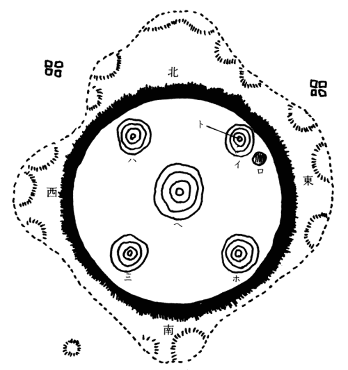

「福島は今日から
馬市で、さぞまあ
賑わうことだろう」
「福島の馬市も馬市だが、藪原の
繁昌はまた格別じゃ。と云って祭りがあるのではないが、藪原長者の
抱妓の中に
鳰鳥という女が現われてからは、その顔だけでも拝もうとして、近在の者はいうまでもなく遠い
他国からも
色餓鬼どもが、
我も我もと押し出して来て、夜も昼も大変な
雑沓じゃ」
「そのように評判のその女、どういう
素姓の者であろう？」
「素姓などどうでもよいではないか。
容姿さえ美しければそれだけで女は
沢山じゃ」
「いやいやもしもその女が、
妖怪変化であったなら……」
「妖怪変化？ 変化とは？」
「それではお前まだ聞かぬか？ その美しい鳰鳥には、聞いただけでも
慄然とする
咒咀が
纏わっておるそうじゃ」
「ふうん、そいつは初耳じゃ」
「と云うのは何んでも夜になると、その鳰鳥は
一瞬間、
現世から
黄泉へ行くそうじゃ。言い換えるとつまり死ぬのじゃな。そうして
一旦死んで置いて、それから間もなく生き返るそうじゃ。それが毎晩だということじゃ。なんと恐ろしい女ではないか」
「お前の云うことが本当なら、なるほど恐ろしい
女子だが、しかし恐らくその
噂は鳰鳥の全盛に蹴落とされた
朋輩遊女が
口惜しまぎれに云いふらしたものでもあろうかい」
「それならよいが、どうも
私は、あんまりあの女が美しいので、人間ではあるまいと思うがの」
「どうでも変化だと云うのだの」
「
私には人間と思われぬ」
「私には人間と思われるよ」
「私にはどうも思われぬ」
「いいや確かに人間じゃ！」
「いいや確かに
化物じゃ！」
「人間じゃ！」
「化物じゃ！」むきになって二人は争うのであった。
時代は
足利の
末葉で、日本歴史での暗黒時代、あっちでも戦い、こっちでも
戦、武者押しの声や
矢叫びの音で、今にも天地は崩れるかとばかり、
尾張には信長、三河には家康、
甲斐には武田、
越後には上杉、群雄四方に
割拠して
覇を争う
物凄さ。
血生臭い事ばかりが行われたが、八方山に囲まれた木曽の
谿谷三十里は、
修羅の
巷を懸け離れた
自らなる別天地で、春が来れば花が咲き夏が来れば葉が茂り、きわめて
長閑なものであった。
わけても藪原の
駅は、姿を見ない人までも名にあこがれて通って来るほど美しい遊女が現われてからは、人の出入りも
繁くなり、自然に
商売も繁昌して、
長閑さを一層長閑にした。
藪原長者の
大館は木曽川に臨んだ
巨巌の上に
砦のように立っていた。
裾は石垣で畳み上げ、窓は
銅の網を張り、
狼より
猛々しい犬の群は門々の柱に
纜いであった。それは、諸国の人買いから金に飽かせて買い取った多くの遊女が館を抜けて逃げるのを防ごうためである。
夏の陽が対岸の
檜山の
梢の向こうへ沈んでしまうと
蝙蝠が
宵闇の家々の屋根を、
掠めるようにして飛び廻わり、藪原は夜になるのであった。
いつものように、藪原長者は、その夜も縁先へ
座布団を敷かせ、
むんずとその上に
胡坐を組み、弓の折れの
鞭を握りながら、
破れた鐘のような声をあげて、家内の
使童を呼ばわった。
「やいやい加藤次、加藤次はいぬか、いう事を
諾かぬ
女郎奴らを、
疾く疾く庭へ引き
出だせ！ 弓の折れの鞭の百
搏き、背中の皮の破れるまで、身内の肉の
潰れるまで、
頸の骨の砕けるまで、この長者様が打ち
据えてくれる！」
「オッ」と奥から返辞があって、
使童の加藤次は縄で縛った三人の遊女を引き出した。
「坐りおろうぞ！ 坐れ坐れ！」
主人の威光を笠に着て、
敵役らしい
赤面のその加藤次は
権柄声で、こう女どもを怒鳴りつけた。
「ハイ」と
蚊細い
顫え声で、女達は恐ろしそうに
返辞えたが、ベタベタと
膝を庭へ突いた。
と、長者はそれをうち眺めニタリと一つ笑ったが、やがてそろそろと弓の折れを女どもの方へ突き出した。
「右の端の女は
桔梗だな、よしよし桔梗から
成敗しよう！」云ったかと思うと、弓の折れがヒラリと
虚空に
閃いたが
忽ち風を切る音がしてしたたか鞭は右の端の桔梗という女の肩を打った。ヒーッと女は
身悶えする。
「痛いか、痛いか、おお痛いか！ 鞭で打たれりゃ痛い
筈じゃ！ 痛いとも痛いともおお痛いとも！」
長者はまたも鞭を上げて桔梗の
頸の辺を打ち据えた。
「自分の
縹緻が
醜くて、それでお客が取れなかったら、取れるようにして取るがよい！ 取る方法はいくらもある。あるともあるとも、いくらでもある。知らぬというのなら教えてもやろう。教えてやることはやるけれど、俺の教え方はちと荒いぞ！」
長者の鞭は
用捨もなく桔梗の白い柔かい肌を
所嫌わず打ちすえた。伏し悶えながら泣き叫ぶ桔梗の声は広い
館の隅々まで悲しそうに鳴り渡っても、助けようとする者はないのであった。
「よしよし桔梗はこれだけとして、さてその次は
誰袖の番じゃ」
長者は荒々しくこう云いながら二番目の女を
曳き出させた。
「これ誰袖よく聞けよ。そちの身分は遊女じゃぞ。この長者様に買い取られた
憐れな遊女の身でありながら、いかに務めが苦しいと云って、ここの館を抜け出そうとは、憎んでも余りある女じゃぞ！ そちは館に五年もおって新参者というではなし、逃げかけて捕まった遊女どもがどういう
処刑にされるものかよく心得ておろうがの。さあ足を出せ足を出せ！ その足で館を逃げようとしたな、その足を
打ち折ってやるほどに、さあ神妙に足を出せ！」
罵る長者の声に
混って絹を裂くような誰袖の声が
飄客の群で賑わっている
戸外へまでも響いて行った。
「さて誰袖の
折檻も今日はこのくらいにして置いて、次の
処刑に移ろうかい。やいやい加藤次、
白萩めをもっと縁近く曳いて参れ！」
長者の言葉が終えもせぬうちに、加藤次の荒らくれた右の手が白萩の
襟がみを引っ掴んだ。
勝れて美しく弱々しい白萩の体は犬
ころのようにはたと縁先へ転がされた。
「なあ白萩」と、珍らしく、長者は
訓すように優しく云った。
「
私が抱えの女のうち、
鳰鳥に次いで美しいのは、そなた、白萩だと思えばこそ大目に見てはいたけれど、近頃のように
私の云うことをきかないでは、他の女達への
みせしめもあり、黙っていることは
最早ならぬ……お前の
情夫は私の嫌いな、あの
狐池如来衛門、それだによってこれまでも、如来衛門は見捨ててしまえ、逢ってはいけぬと云い渡しても、あいあいと口先で云うばかりで、見捨てようとはようしない。これが普通の男なら決して無理に
堰こうとはしない。けれどもお前も知っている通りあの如来衛門の
悪漢めは、私にとっては商売の敵じゃ！
何故かというにあの男は、自分が男を売りたさに、
達者だなどと云われたさに、この私の商売を
悪様に世間に向かって云い触らしおる――女の
操を売り物にして金ばかり
儲けたがる藪原長者は、人間ではない畜生だとか、ああして金は儲けても、やがて悪銭身に着かず、そのうちに貧乏になるだろうとか、わけても
小癪にさわるのは、私の
財産の女どもをうまうま口車に乗せおって、こっそり館から抜け出させ、他国へ逃がしてやることじゃ。この私がもしも畜生なら
彼奴は泥棒というものじゃ！ 泥棒と云えばあの野郎め、俺に
堰かれたその夜から裏手の石垣を掻き登り、お前の
室へ
窃りと忍んで行くということだが、これこそ泥棒の
所業であろう……なんと白萩、お前の
情夫は、そういう泥棒野郎なのじゃ！ だによって捨てろと
訓すのじゃ！ 今夜こそ口先のあいあいではこの長者様は承知せぬぞ！
性根を据えて返辞をせい！」
こう云われても白萩は、今にも折れそうな細い
頸をじっと
首垂れているばかりで、返辞しようとはしなかった。
藪原長者の赤黒い顔は次第に一層赤くなった。
「よしよし
解った。もう解った。こうまで云っても黙っているのは、俺の言葉に不承知だな！ しぶとい
女郎め！ やくざ者め！ いつまでもしぶとくするがいい！ そっちがそうならこっちもこうじゃ！ やいやい加藤次その女を、あの松の木の頂上へ
用捨なく逆さに釣るしあげ、松葉
燻しに燻し立てろ！」
「はっ」と加藤次は飛び上がり
傍の
藤蔓を掴んだが、そのまま白萩に走り寄り、両手を背中へねじ上げた。
と不意にその時奥の
室の
襖がサラリと開いたかと思うと、涼しい美しい女の声で、
「まあまあしばらくお待ちください」と、呼び止めるのが聞こえて来た。
「この長者様の
命令をしばらく待てと止めたのはいったい誰じゃ？」
長者はがみがみ怒鳴りながら襖の方を振り返ったが、そこから出て来た女を見ると、急にニタニタ笑い出した。
「これはこれは
鳰鳥女菩薩様、我が家にとっての福の神、ようこそ
出現ましなされた。何かご
托宣でもござるそうな……」
云いながら両手をハタハタと
拍って拝む
真似さえするのであった。
「私のことを女菩薩だなどと、なんの托宣などござりますものか」鳰鳥は静かに長者の
傍へ
眼醒むるばかりに美しい匂うような姿を坐らせたが、心持ち眉を
顰ませて、庭の三人の女を見た。
「見れば
桔梗様に
誰袖様、白萩様のお三人、庭先などに引き据えて何をなされたのでございます。ああ解かりました解かりました。さてはいつものご
折檻を今夜もなされたのでございますな」
「そうじゃそなたの云う通り、云うことを聞かぬしぶとい
女郎を折檻いたしていたところじゃ」
「折檻もよろしゅうございましょうが、大事なあなたのお
財産に傷をつけたらどうなされます」
「
財物に傷をつけるとは？」
「今も向こうで聞いておれば、白萩様をむごたらしい松葉
燻しになされるとか。松葉燻しもよいけれど、もしもその時白萩様の
魂の
緒が切れたらどうなされます。高いお
銭でせっかく買ったあなたの大事なお
財産があったらなくなるではございませぬか。死なないまでも白萩様のお美しいお顔に傷でも出来たら、やっぱりあなたのご損というもの、なんとそうではございませんか」
「そいつはとうから知っているが、と云って折檻しなかろうものなら、いつまでもしぶといこの女ども、
稼ごうなどとはよも思うまい」
「そんなものでもございません。総じて
女子というものは、恩も
怨みも殿方よりは一倍強く感じますゆえ、そんな恐ろしい鞭などで打ち叩かれるより言葉優しく根強くお
訓しなされた方が、どんなに
利目がございますことか」
「いやいや
私は反対じゃ。すべて女という者は甘やかしたら
方図がない。増長して始末におえぬものじゃ」
「それはあなたの考え違い、それでは女はなつきませぬ。女を馴らす一つの法、それは情けを掛けること！」
「いやいや鞭で打つことじゃ！」
「そのようにあなたがおっしゃるなら、賭けを致そうではござりませぬか。どうか三人の朋輩衆を私にお預けくださいませ。きっと私が根強く説いて、必ずあなたの思惑通りに従わせてお目にかけましょう」
「なるほどこれは面白い。それではそなたに
委かそうかな」
「どうぞお委せくださいまし」
鳰鳥は縁先へ歩み寄り、「さあお許しが出たほどに、皆さんお居間へお帰りなされ」
「鳰鳥様、有難うございます。あなたのお蔭で松葉燻しの恐ろしい折檻が助かりました」
「厚く厚くお礼を申します」
「ご恩は忘れは致しませぬ」
三人は
互みに云うのであった。
「なんのお礼に及びますものか。相身互いでございます」鳰鳥は誇ろうともしなかった。
「何を
愚図愚図申しておるぞ！」長者は憎々しく怒鳴り立てた。「
穏しく
各自の
室へ帰って、鳰鳥の行くのを待つがいい！ 鳰鳥の言葉は
俺の言葉、決して抗弁はならぬぞよ！」
長者は奥へはいって行った。三人の女も鳰鳥も自分の室へ引き取った。あたりはにわかに静かになった。おりからあちこちの遊女の室から、品のいい、なまめかしい
流行唄が、自分の不幸を訴えるかのように、哀々とした調子で聞こえて来た。

人買い船の恐ろしや、どうせ売らるる身じゃほどに、静かに
漕ぎやれ勘太殿。
おりから射し出た
十六夜の月を、
茫然窓から眺めながら
鳰鳥は
室で考えていた。
「私は何者の子であろう？」いつも考えるこの考えを今も考えているのであった。
彼女を育てた老婆のお
霜を、彼女は母だと思っていた。
千曲川の岸の
篠井の里で、母だと信じて老婆のお霜に彼女は
忠実しく仕えて来た。二人の
生活は貧しかった。お霜は近所の人達の走り使いなどに頼まれて、それで生活を立てていた。一間しかない小屋のような家、家の
周囲には畑があって野菜などがわずかに作られてあった。大根、かぶら、それらの野菜が、二人の平素の
食料であった。そういう貧しい中にあっても、お霜は決して
鳰鳥を――しかし彼女はその頃は鳰鳥と呼ばれてはいなかった。彼女は
千曲と呼ばれていた。それでお霜はその千曲をそういう貧しさの中にあっても、決して不自由をさせなかった。珍らしい食物でも
貰った時には、お霜はきっと千曲を呼んで、自分は食べないでも彼女にはくれた。たとえお霜は
襤褸を下げても彼女には
小綺麗の着物を着せた。
このように可愛がって育てられたためか、貧しい家庭の娘にも似ず、千曲は
鷹揚で情け深い立派な娘として成長した。彼女は近所の
褒められ者であった。近所に剛情な娘でもあって両親の云いつけを聞かないような時には、親はその娘に云うのであった。「千曲さんをご覧、千曲さんだったら、そんな剛情は張らないだろう」と。夜遊びをするような娘があると、その親はきっと云うのである。「千曲さんをご覧、千曲さんだったら、そんな夜遊びはしないだろう」と。こう云われると娘達は今までの剛情や夜遊びをやめて、善い
娘の子になるのであった。
彼女はこうして篠井の里で今年の春まで暮して来た。
しかし清らかな千曲川の水へ、桜の花弁が散り浮く頃、
弥生も末の
逝く春の頃に、彼女は住みなれた篠井の里を、未練気もなく振り棄てて遠い旅路に出たのであった。
いったいどういう理由があって若い女の一人旅へ、彼女は出かけて行ったのだろう？
近所の人々はそう云い合って、彼女の所業を怪しんだ。
理由というのはこうである……。
ある朝、お霜は
恭しく千曲の手を取って上座に据え、
眼醒めるばかりに美しい
金襴の
袱紗を押し開き、
黄金で
拵えた十字架を、彼女の前へ持ち出しながら、彼女にとっては寝耳に水の、彼女の素姓を物語った。
「……お驚き遊ばすでございましょうが、あなたは決してこのお霜などの、娘ではないのでございます。私は、あなたのお父様に、お仕えしていた
卑しい
下僕の、その家内なのでございます。あなたの誠のお父上は、並々ならぬ尊いお方で、しかも
日本のこの国にとっては、恐ろしいお方でもございました。尊い恐ろしいお方でしたから、
活かして置くことは出来ぬというので、室町将軍のお
下知の下に、ある大名が
無慙にも、お父様をお殺しなされました。その時あなたのお父様には二人のお子様がございまして、一人は男、一人は女、女があなたなのでございます。一人も
血統を残すなと厳しい探索の網を潜って、その時二歳のあなた様を
懐中に抱えて逃げましたのが、このお霜なのでございます。
良人の
雉六は男のお子様――その時三歳のお兄様の
御嶽丸様を背中に負って、この私とは別れ別れに、どこともなく落ちて行きましたが、その後一度の音沙汰もないのは途中で討手に捕まったのか、それともどこかで暮らしているか……とまれあなたのお血統は、並々ならぬ尊いお血統、しかもあなたのお父様は、日本のお方ではござりませぬ」
「え？」と思わず千曲は云った。「日本の者でないというのは？」
「そうです。あなたのお父様は、日本のお方ではございませぬ。遠い遠い外国の、
西班牙という暖い国の、それも、王様のお血統でマドリド司僧と申すお方……」
「それでは私のお母様は？」
「お母様だけは日本の生れで、それも九州の大大名、竜造寺家の姫君の、
不知火姫と仰せらるる美しいお方でございます」
「それなら私のご両親を討ち亡ぼした敵の名は？」
「それは」とお霜は声をひそめ、「木曽の山国を
受領する木曽義明でございます」
「木曽の受領の義明！」
千曲は呟くと十字架を取って、額にしっかりとあてたのである。
十六夜の月を
茫然と窓を通して眺めながら、
鳰鳥は尚も
来し
方を
夢現のように思いやった。
「それから私はその翌日、篠井の里を抜け出して、木曽路を指して
彷徨った。
丸子の宿まで来た時に、愚かにも人買いに
誑かされて、思いもよらず藪原長者へこの身を遊女に売られたが、
仇敵に近寄る
手段としてはかえって便利と思ったので、そのまま今日まで暮らしては来たが、行末どうなることであろう……敵の住むという福島へは
たった二宿の
道程で、どんなに山路が険しくとも一日がかりで行ける筈、と云って
館は抜け出されず、たとえ抜け出して行ったとしても、武術も習わぬ女の身で、どうして
復讐が出来ようぞ！」
鳰鳥は思案に余ったように首をうなだれて考え込んだ。
「私の身の上を憐れんで、親身になってこの私を助けてくれるものはあるまいか、そう思って数多い客の中で、これぞと思う
侍をあれかこれかと試しては見るが、心の中を打ちあけて頼んで見るようなお方様は今日までは一人も見つからなかった」
彼女は深い吐息をした。
山気にいくらか
暈されながらも月はいよいよ
冴え返り、月の真下の木曽川の水は
一所蛇の鱗のように
煌々と銀色に輝いた。
泣くように寂しい女の声で歌を唄うのが聞こえて来た。
「白萩さんが唄うている」鳰鳥は耳を澄ましたが「何という悲しそうな声であろう。ほんとにあの人もお気の毒だ。けれど、あの人の悲しいのは恋しいお方に逢えぬため、私の悲しみに比べてはどこやらに浮気のところがある。親の
仇敵を目の前に置いて、手さえつけられぬ
不甲斐なさ、草葉の蔭でご両親様がさぞ口惜しがっておいでであろう……それに、私のお兄様、この世に生きておられるやら、それともおなくなりなされたやら、是非ご様子を知りたいと、ここへ集まる諸国の客に、それとなく尋ねては見るけれど、今日が今日までこれという手がかりさえも見つからぬ。お兄様に
巡り逢い一緒に力を合わせさえしたら、たかが山国の受領ぐらい討ち取ることも出来ように、思うようにまかせぬ浮世ではある」
鳰鳥は窓枠に額をあて、涙ぐみたい心持ちで尚じっと空を眺めていた。
「鳰鳥さん、鳰鳥さん」と、その時階下で彼女を呼ぶ
小女の声が聞こえて来た。
返辞するさえ
大儀そうに、彼女は黙って立っていた。
襖を開ける音がして、やがて小女が現われた。そして階下の大広間に多勢の客衆が来ていると告げた。
鳰鳥は小女に手伝わせて晴着で姿を装ったが、やがて広間へはいって行った。
室には既に遊女達が多勢集まって
囃していたが、鳰鳥の姿が現われると琴も
胡弓も音を停めた。
老若
混えて十二人の武士がずらりと室に並んでいた。
頬髯を生やした厳しい顔、
青黛美しい
優男、
眉間に太刀傷をまざまざと見せた戦場生残りらしい
老士。わけても正面敷皮の上に寛々と
胡座した武士はひときわ威風
四辺を払って、一座の頭目と一眼で知れた。雪のように白い
頤鬚を垂らし、頭髪を紫の
茶筅に取り上げ茶の胴服を
纏っていた。年は五十を過ごしているが、顔色はあたかも青年のように生々として赤かった。
その武士を見ると鳰鳥は何がなしに
悪寒を身に感じた。
鳰鳥はスルスルと座を進んで、その武士と向かい合った。
と、
白髯の武士は片頬に笑みを浮かべながら、
「聞き及ぶ鳰鳥とはこの女子か。噂に増して美しい。さ、この盃を遣わそうぞ」こう云って手に持った盃を、鳰鳥の前へ差し出した。
鳰鳥は
恭しくそれを受けて、なみなみと酒を
注がせたが、そのまま盃を下に置いた。
白髯の武士は
見咎めた。
「鳰鳥、盃をなぜ
干さぬ」
「はい」と鳰鳥は微笑して、「お酒は嫌いでございます」
「嫌いでも構わぬ、飲むがよい」
「お酒は嫌いでございます」鳰鳥は
臆めずにまた云った。
「嫌いでも構わぬ、飲めと云うに」
「お酒は嫌いでございます」
鳰鳥は
情剛く云い切った。一座はにわかに白けわたり武士達は互いに眼を見合わせた。
白髯の武士はその
額に
癇癪の筋を現わしたが、
「それでは何か、その盃を、どうしても干さぬと云うのじゃな

」
「一つお願いがございます」鳰鳥は笑って云うのであった。「願いをおききくださるなら、この盃を干しましょう」
「どんな願いか、云うがよい」
「お名前をお聴かせくださいまし」
「
俺の名前を聞きたいと云うか？」
「お名前をお聞かせくださいまし」
「いと易いことじゃ、聞かせてやろう」
武士は
鷹揚に笑ったが、
「よく聞け、俺の姓名は……」
「しばらく！」と突然、一人の武士、頬髯を生やした武士が、白髯の武士を
遮った。
「
薄が野山で招いている。落ち鮎が川に
瀬走っている、ほんにもう秋がおとずれて来た。なんという寂しい眺めであろう」
鳰鳥は窓から野山を眺め、この頃では
一入物の憐れをしみじみ心に感じながら、誰に云うともなく云うのであった。
彼女のもとへは、あの夜以来、白髯の例の老武士が、あの時のように、供を連れて、三日にあげず通ってきた。あの時、名前はと訊いたけれど、家来に止められて名のろうともしなかったが、その後しげしげ通って来てもやっぱり名のろうとはしなかった。
「このように白髯があるのだから、白髯の男とでも云うがよい」
ある時
戯むれにこう云ってからは、長者の家の者達は、それ以来白髯の老武士を「白髯の殿」と呼ぶようになり、額に
凄い太刀傷のある赤ら顔のものものしい武士のことをば「傷のお方」と呼んだりした。
長者にとってはこの一行は、またとない大事な客であった。酒は浴びるほど飲んでくれる。
遊女は幾人でも
聘んでくれる。それで馬鹿騒ぎをするでもない。
「これというのもあの
鳰鳥が、あのように上品で美しいからじゃ、鳰鳥に
焦がれて来られるのじゃ」長者はいつもそう思って、
壊れものでも扱うように鳰鳥を一層大事にした。
「それにしてもどうして鳰鳥は、あれほど立派な白髯の殿を、嫌うような
素振りをするのであろう……噂によればこの夜頃、鳰鳥のもとへは
縹緻のよい『紫の君』などと
綽名を呼ぶ、若衆が通って来るそうだが、それに
現を抜かしていて、白髯の殿をいつもになく粗末にするのではあるまいか」
長者にはこれが心配であった。
長者の心配はもっともであった。鳰鳥の心はその若衆に、この日頃とらわれているのであった。
白髯の殿の一行が、二度目に館へ来た時にその一行と前後して、紫匂う大振り袖、したたるような若衆が、彼女のもとへ通ってきた。この夜が二人の初対面であった。
そして翌る日、その若衆は、白髯の殿の一行と前後して館を出て行った。
そうやって出て行くその若衆の、うしろ姿を見送った時、鳰鳥の胸にはこれまでになかった、恋心がほのかに
萌えたのであった。
その夜を初めに若衆は、白髯の殿の一行が、館に鳰鳥を
訪うごとに、やはり鳰鳥を訪うて来た。そして彼女に白髯の武士の一挙一動を訊くのであった。
白髯の殿の一行へも、紫の君のその噂がいつとはなしに伝わった。
「小姓などでもあるであろう」白髯の殿はそう云ったが、「その遊びぶりが見たいものじゃ……どうじゃ鳰鳥、その小姓は、
黄金の雨でも降らせるかな？」
「いいえ」と鳰鳥はさげすむように白髯の殿を遮った。「そのお方様は
黄金の雨も
白銀の雨も降らせませぬ。総じてその方のお話は風雅の道ばかりでございます。例えば
聞き
香、和歌の話、
糸竹の道にもお詳しく、
曲舞もお上手でございます」
「なるほど」と殿は微笑した。懐中から
袱紗を取り出したが、
巧みの手附きで香を
摘み、静かに香炉へ投げ入れた。忽ち香炉の口からは、糸のような煙りが立ち昇り、身も魂も
蕩けるような美妙な匂いが館一杯、隅々にまでも漂って行った。
「聞き香の上手なその若衆に、今
焚いた香は何であるか、誰か行ってその名を聞いて参れ」
白髯の殿の言葉と共に一人の
遊女が立ち上がった。
女はやがて帰って来たが、白髯の殿へ云うのであった。
「漢土渡来の
月宮殿、
大和名は
柴垣じゃと申されました」
「偉い」と殿は
膝を打った。「今焚いたはまさしく柴垣じゃ。ふうむ」としばらく考えた。
その時、近く、初雁が、月夜の空を鳴き渡った。
「
短冊を持て」と殿が云った。運ばれた短冊を手に取ると、すらすらと和歌を
認めた。
つきよみの月の光にさそはれて
鳴くや雁音声もともしく
「ぶしつけながらご返歌をと、このように
丁寧に申して参れ」
遊女はまたも短冊を持って若衆の
室へはいって行ったが、やがて返歌を持ち帰った。
つきよみの月に更けたる大木曽を
音信れて鳴く天津かりがね
「
水茎の跡もあざやかじゃ」殿は
唸るように云い放った。
「しかし」とその時、赤ら顔の「傷のお方」が
諂うように、
「風流の道は賢くとも、武道は
疎かろうと存じます。武士の魂の刀など、どんなものを差しておらるるやら」
「問わず語りに聞きましたところ……」鳰鳥は少しく
気色ばんで、傷のお方に云うのであった。
「あのお方様の腰のものは、正宗十哲の随一人、彦四郎貞宗じゃと聞きました」
「貞宗？」と、これにも驚いたように、白髯の殿は呟いた。「それなら立派な
大名物じゃ」
「差している刀は立派でも、腕がなまくらなら役に立たん」傷のお方は
嘲笑いながら、「よしよしそのうち試して見よう」
「そうじゃ、そのうち試してみやれ」
殿もうなずいて呟いた。
木曽の谷間の美しさは、万山の紅葉一時に染まる晩秋に越すものはないのである。岩からは滝がほとばしり、林の奥からは鹿の声が、「かえろう」「かえろう」と聞こえて来る。風も吹かぬに木の葉が散り、散った木の葉は街道筋にうず高いまでに積もるのであった。その街道を通る人も、秋はきわめてまばらであって、しかも
忙しそうに歩いて行く。
そういう寂しいある夜のこと、紫の君はいつもになく、少しく蒼い顔をして、乱れた
鬢を掻き上げながら、長者の門を潜って来た。
鳰鳥はいそいそと若衆を自分の部屋へ
誘なったが、
「息を切らしてどうなされました？」気づかわしそうにまず訊いた。
「今
曲者に
逢うたのじゃ」若衆は既に沈着に声も乱さず云うのであった。「すぐ川の側の
藪畳、そこまで来ると覆面の武士が、十人ほどむらむらと走り出て、私に切ってかかったのじゃ。人に怨まれる覚えはないが、はて何者と
透して見たら、藪の
彼方にも人影が、十人ほどごそごそ動いている。私はそこで考えた。切って棄てるは易いけれど、刀を抜くのも面倒じゃ、一つ金縛りにしてくれようと。こう手を
延して、グルグルと、彼らの頭の上の方へ、一つ大きな円を画いたら、刀を持った十人も、藪の向うの十人も、そのまま
居縮んでしまったのじゃ。そこで私はその前を大手を振って通って来たが、見れば、額に太刀傷のある、大きな男が一人いた」
「それではもしやその中に、白髯を生やした武士が混っておりはしませんでしたか？」
「白髯の武士はいなかった。もしその武士がそこにいたら……」
「え」と鳰鳥は訊き返した。
「決して助けはしなかったろう」
「それはまた何故でござります？」
「何故と訊くのか？ さあ何故だろう？」
若衆はいかにも意味ありげの微妙な微笑を浮かべたが、そのまま深く沈黙した。
夜風が庭を通うと見えて、木の葉の片寄る忍び
音が、カサコソと
幽かに聞こえて来た。
鳰鳥には若衆の人柄が、呑み込めないような気持ちがした。
「それにしても、姿の優しいにも似ず、何という強い人であろう。刀も抜かずにそれほどの敵を、金縛りにしてしまうとは」
若衆を思う彼女の恋は、今夜の働きを知ると共に、益

強くなるのであった。
「ほんとにこういう人にこそ、誠の心を打ち明けて、自分の素姓も物語り、復讐の手曳きをして貰いたい」そうは思っても、若いに似合わずその物堅さに気遅れして、云い出すことは出来なかった。
秋の夜長をこうして二人は、やがて
双六だの投げ扇だの、花合わせだのをして興じ合った。それから若衆は帰って行った。二人はいまだに唯の一度も枕を交わせたことはない。鳰鳥は誰とでもそうであった。白髯の殿とは云うまでもなく、誰とでも枕は交わさなかった。それがかえって彼女を光らせ、彼女を全盛の
遊女にした。
鳰鳥は若衆を送り出すと、心しずかにただ一人、
褥を冠って
寝に
就いた。とすぐ、彼女を死が襲った――これまでも彼女をよく襲った、短かい仮死の状態が、眠りかけた彼女に襲いかかった。夢と幻とを合わせたような、
恍惚境の只中に、彼女ははいっているのであった。そして彼女は、
異形の人から説教を聞いているのであった。異人は日本の人ではない。黒い法衣を
纏ってはいるがそれも日本のものではない。手には彼女の持っているような、黄金の十字架を持っている。その十字架には架刑にされた人間の像が取りつけてある。異人は
岩頭に坐っている。前には大河が泡を噛んで大蛇のように走っている。それらのものの
背後には、
鬱々と茂った緑の山が、すくすくと空に
聳えている。明るい美しい陽の光が、山々谷々に充ち
漲れ、空には赤い太陽と蒼白い月とがかかっている……。
異人は彼女に説教はするが、どうしてもその声は聞こえない。聞こえないけれど熱心に彼女はそれを聞くのであった。
彼女は仮死の状態から、
現実のこの世へ立ち帰った。全身に汗が流れている。その汗を拭いて、すやすやと、彼女は今度こそ本当の快い眠りにはいって行った。
遠くで
鶏鳥が一声鳴いた。と、次々に鳴き立てたが、夜はなかなか明けなかった。
それはある
宵のことである。
藪原長者は
棍棒を
提げ、若党
下僕を無数に連れて、荒れた虎のように
喚きながら、館の内外を探し廻わった。
「己れ逃げようとて逃がすものか。こう門口を閉めたからは、袋の中の
鼠じゃわい。さあ如来衛門出てうせろ！ 尋常に姿を見せるがいい！
汝は泥棒か
家尻切りか、
他人の館へ忍び込み、大事な女を盗もうとは、それでも
達者かそれでも達者か！」
長者の
我鳴る
嗄れ声は、
階下から
階上から塀外まで、恐ろしい権幕で鳴り渡った。
しかし
隈なく探しても、如来衛門もまた白萩も、その影さえも見えなかった。それから三日三夜その間、尚厳重に調べられたが、やはり姿は見えなかった。
剛情の長者も諦めたか、四日目の朝から館の門は、自由に人を通すようになった。
その夜の深更のことである。鳰鳥の
室に立て廻わした
金屏風の蔭からその白萩と如来衛門とが現われた。
二人は
薄縁に手をつかえ、鳰鳥の前へ
かしこまった。
「もう大丈夫でございます。あの剛情な長者めも、とうとう根負けしたと見えて、朝から門を開けました。この間にお逃げなさりませ」
「お礼の言葉もござりませぬ」
青黛の青い眼の涼しい六尺豊かの
大漢子、三十をすこし越したばかりの、如来衛門は泣きながら、鳰鳥に礼を云うのであった。
「義でないこととは知りながら、一度ならず忍び込み、白萩を奪おうとしましたのは、深い訳があるのでございます。と申しますのはこの私が、藪原長者に対しまして、
怨みがあるのでございます。何の怨みかと申しますに、家の怨みでございます。屋敷の怨みでございます。田地田畑、山、林、それらの怨みでございます。私はそれらの家屋敷田地田畑山林を、藪原長者にうまうまと
騙り取られたのでございます。私の家の家柄は、長者の家などに比べましては、筋目が正しいのでございまして、あの善光寺の如来様を
難波の池から拾い上げた本田
善光の
後胤とか。それで代々家の
長は、如来衛門と名のります。しかるに今より数十年前、
零落れ果てた大男が、この藪原へ参りまして、私の父のもとへなど
繁々出入りを致しているうち、いつの間にか父を
騙着し、父に代って私の家の
束ねをするようになりました。そのうちに父母が相続いてこの世を去ったのをよい
機会に、私の家を横領して、田地田畑一切のものを自分の物にしてしまうと、自分から藪原の長者と名のり、諸国の人買いと結託し、ただ今のような盛大な、遊女屋を開いたのでございます。しかるに私は、小さい頃から、
無頼の性質でございまして、
暴れ者などの
頭となって、
仁侠の
真似など致しますのが、何より好きでございました。そのため親の手もとをさえ、幼い時に離れまして、諸国を歩いておりましたが、今からちょうど五年前、この地へ帰って参りましたところ、今申したような有様で、私の家は横領され、両親も
逝くなっておりました。そこで私は口惜しがって、度々藪原の長者のもとへ怒鳴り込みに行ったのでございます。しかし長者は私などより、役者が一枚上のために、そのつどうまうま
騙されて、
空しく帰されてしまいました。そのうち私は、この白萩と深い仲になったのでございます。白萩と深くなってからは、藪原長者と掛け合って、家財を再び取り返そうなどとそんな事は思わなくなりました。ただ逢いたいと思うばかり。すると長者はこの二人の仲をさえ裂こうとするのでした……」
如来衛門はこう云うと、新らたに涙を拭くのであった。
水のように清らかの秋の夜は、しっとりとして
更けて行った。遠くの部屋から鼓の音が、いとも

たけて聞こえて来た。遊女の唄う小唄の声も。
白萩は座にも居たえぬように、さっきから泣き伏しているのであった。
鳰鳥も
眼瞼をぬぐったが、
「聞けば聞くほどお気の毒のお身の上なのでございますね。そういうお二人をお助けしたのも何かの縁でございましょう……それはそうと今夜
館を抜けて、それから後はどうなされます？」
「どこぞ追手のかからぬ土地で、隠れ住むつもりでございます」如来衛門はつつましく云った。
「それでは仲よくいつまでも、たっしゃでお暮らしなさいませ」
しんみり鳰鳥も云うのであった。
やがて、二人は立ち上がった。それからひそかに部屋を出た。
しばらくすると、けたたましい犬の吠え声が聞こえて来た。鳰鳥が窓から覗いて見ると、日の落ちた暗い中庭で、ピカリと刃が閃めいた。と、すぐ犬の
仆れる音が、呻き声と一緒に聞こえて来て、
森然と後は静かであった。
首尾よく二人は逃げたのである。
夕陽が山に
舂ずくと、錦を織った紅葉の色が、一時にカッと燃え立って、眼の
眩むばかりに美しい。
連れにはぐれた一羽の
烏が山の中腹を飛んで行くさえ、夕暮れの寂しさを増して見せる。
藪原の
駅路は、この時刻から、かえって賑かになるのであった。往く人来る人、それらの人は、いずれも長者の門を潜って、
女菩薩を拝もうとするのであった。
四十年輩の立派な武士が、深い編笠を
冠ったまま、長者の館の門をくぐり、ずっと玄関へ差しかかったのは、ちょうどその頃のことであった。
「主人に少しく
御意得たい」
武士は
錆のある重々しい声でそこにいた下僕にこう云った。
「あなた様はどなた様でございますか？」
下僕は
丁寧に訊き返す。
「名をなのるにも及ぶまい。主人に逢うたら解るものじゃ」
下僕はそこで引き
退がったが、やがて再び現われると、武士を座敷へ導いた。
花卉の大幅を一杯に掛けた、
豪奢の床の間を背負って武士は悠然と坐ったが、冠った編笠は
脱がなかった。
間もなくはいって来た藪原長者は、武士が冠り物を脱がないのを
苦々しそうに睨んだが、それでも
下手の座に着いた。
「
拙者がお尋ねの藪原長者、何かご用でもござるかな？」長者は
ぞんざいに云うのであった。
「藪原長者とはそこもとか」武士もきわめて
横柄に、「少し訊きたいことがある……大勢のお
伴をお連れなされた、立派な白髯のご老体が、近頃再々そこもとの館へお通いなさるると云うことじゃが、それは本当でござろうな」
「さよう、お通いくだされます」
「
鳰鳥とか云う美しい
遊女が、その相手だということじゃが」
「いかにもさようでございます」
「ついては鳰鳥というその遊女を、拙者
落籍が致したい」
「
落籍？」
と、長者は
呟いたが、すぐその顔に嘲笑を浮かべ、
「いと易いことではございますが、
落籍の料は高うござる」
「どれほど出したらよろしいか？」
「まず
一切で五百両」
「…………」武士は無言で懐中をさぐり
袱紗包みを取り出した。それを長者の前へ置き、
「そこに千両入っておる。五百両だけ取るがよい」
「…………」今度は長者が無言であった。武士の顔ばかり眺めている。
「
甚だ失礼ではございますが、あなたはどなた様でございますか？」長者は言葉を改めて云った。
「拙者は、福島の木曽殿の、執事を致す花村じゃ」
「ひぇ！」と長者は泡を食って、思わず声を筒抜かせた。それも無理ではないのであった。木曽家の花村甚五衛門と云えば、並ぶ者なき大智者で、木曽三十里の
政事を、一身に扱う器量人、主人勝りの
武士であった。
「それに」と花村は重々しく、「白髯の立派なご老体は、すなわち、木曽殿、義明公じゃ」
「むー」と長者は
唸ったかと思うと、額を畳へすりつけた。額からは冷や汗が流れている。
「鳰鳥の
落籍、差し支えないな。差し支えなければ、その金で、よろしいように扱かってくれ。夜にならぬ中に連れて出たい」
「差し支えない段ではござりませぬ。しかし一応本人の心も、聞いて見たいと存じますので……」
「なるほど、それはもっともじゃ。では本人にこう云うてくれ、落籍は拙者がするようなものの、拙者から改めて鳰鳥をば、殿の
側室に出すのじゃから、その
意りでとこう云うてな」
「かしこまりましてござります。本人にとっても大した出世、きっと喜ぶでございましょう」
長者はそわそわと室を出た。
それから間もなく一
挺の
輿が、
頑丈な男に
担がれながら、藪原長者の館を出た。深編笠の武士が、輿の後から悠々と、つき添いながら歩いて行く。
輿には鳰鳥が乗っている。
蒼黒い空には無数の星が、宝玉のように輝いて、まだ遅い月は出ていなかった。秋の
夜嵐に誘われて、バラバラと木の葉が輿を打つ。武士も
輿舁ぎも、輿の中の人も、咳一つしなかった。黙々と一行は歩いて行く。
こうして輿も武士も夕暮れの山道に消えてから、ものの半刻も
経った頃、
雑沓する長者の館の門を、あわただしく潜ぐる武士があった。「傷のお方」と呼ばれる武士で、不思議にも今日は一人である。
座敷に通ると主人を呼んだ。出て来た主人の顔を見ると、「傷のお方」はすぐ云い出した。
「主人、喜べ、わが君が
鳰鳥を
落籍なさるのじゃ。その相談に拙者が来た。拙者は木曽家の家中の者、洞院左膳と申す者じゃ、千でも二千でも金高を云え。金には糸目つけぬからな」
「…………」長者は、キョトンと眼を丸くして、相手の顔を見守ったが、にわかにフッと吹き出した。
「何を左膳様おおせられます。その事についてはもう先刻、花村様がおいでくだされ、莫大もないお金をいただきました」
「なに！」と左膳は
仰天した。「何、花村が参ったと？」
「はいはいさようにございます。それから鳰鳥を輿に乗せて、たった今お出かけでございます」
「ふうむ」と左膳は考え込んだ。
腑に落ちないと云うように、
「しまった！」と、突然、唸るように、洞院左膳は絶叫した。驚く長者には眼もくれず、彼はあたかも狂人のように、館から外へ飛び出した。そして、それから山路に消えた花村と鳰鳥との後を慕って、電光のように追っかけて行く。
「今日はほんとに変な日じゃ」長者は左膳の走って行くその
大仰な様子を見て、
審しそうに云うのであった。「これには何か込み入った事情があるに相違ない――洞院左膳というお方は、噂によると木曽家でも、花村様に負けないほどの
権威者であると聞いてはいたが、しかし腹黒い方じゃそうな。その洞院左膳様と、花村様とお二人が、いずれも殿様のおためじゃといって、一人の
遊女を争うとは、どうにも
可笑しなことではある」
しかし、可笑しな事と云えば、ただそれだけでは止どまらなかった。
左膳が館を駈け出してから、これまた半刻も経った頃、例の美しい「紫の君」が、あわただしそうにはいって来たが、鳰鳥の
落籍を聞くや否や、
颯と顔色を蒼白くした。
「…………」じっと無言で考えてから、これまた後を追ったのである。
嶮しい山の中腹を
縫って、月のない空の下を、鳰鳥の輿は揺れて行く。甚五衛門も輿舁ぎも、
寂然として無言である。輿の中なる鳰鳥も死んだかのように無言である。
無言の一行は山の腹、木曽川の岸の
岨道を
粛々として行くのである。
鳰鳥は輿に揺られながらもじっと考えているのであった。
彼女はさっき、長者から、落籍の話を聞かされた時、一も二もなく断わったがしかし落籍をされる先が、木曽義明だと聞かされると急に心が一変した。彼女は承知したのである。
「いよいよ
敵に接近出来る。こんな嬉しいことはない。恋も、若衆も何も
不用ぬ。一太刀なりとも怨めたら、この身は八つ裂きにされてもよい」
堅く決心したのであった。
「それにしても今日まで白髯の殿が、敵の木曽殿と気づかなかったとは、ほんにこの身の不覚であった」彼女にはそれが口惜しかった。
輿は静かに揺れながら行く。やはり誰も彼も無言である。こうして
幾刻かの刻が経った。
その時、流れる木曽川の音が、一層烈しく音を立て、その水音が乗っている輿のすぐ下から聞こえて来た。
「輿を止めろ」と武士の声が、
厳めしく重々しくその時云った。
「へい」と輿舁ぎの答える声。と、輿はそのまま停まったのである。
すぐ輿のタレが上げられた。武士の右手が長く延び、鳰鳥の手首をひっ掴んだ。
「鳰鳥、でませい」と武士が云う。
鳰鳥は輿から下り立った。と、眼の前に拡がった景！ それは夢で見る景色であった。あの一
刹那の仮死の瞬間に、彼女が絶えず見る景色であった。
……前には大河が泡を噛んで大蛇のように走っている。背後には
鬱々と茂った山が、夜空に
矗々と
聳えている。明るい美しい陽はないが、その代り満天の星の数が、
豹の眼のように光っている。異形の老人もいないけど、その代り
逞しい武士が、冠っていた編笠を静かに脱ぎ、岩頭に
厳かに立っている。……
「ここはいったい、どこだろう？」
鳰鳥はあまりの怪しさに、思わず呟いて
四辺を見た。と、その時武士が云った。
「ここは木曽川の
巴ヶ
淵じゃ。お前はここで死なねばならぬ」
武士は
柄頭に手を掛けた。
忽ち刀身が
閃めいて、抜身が武士の手に持たれた……。
「恐ろしい事でございます。恐ろしい事でございます。恐ろしい事でございます」
腰元の一人はこう云って畳の上へ突っ伏した。
「ほんとに本当に恐ろしい事じゃ、まるでお
館の昨今は化物屋敷そっくりじゃ……真夜中になるとどこからともなく人の泣き声が聞こえて来る、長い尾を曳いた
人魂が裏庭の泉水から舞い上がり、御殿の屋根棟を一晩中、ぐるぐる廻わっている。そうかと思うと
四斗樽ほどの、髪を乱した女の顔が、
天井からダラリと垂れ下がる……ほんとに本当に恐ろしい事じゃ」
こう云ったのは老女である。
「それもこれもみんなお殿様の
乱行のおかげでございます。毎日毎夜のご酒宴騒ぎ。のみならず時にはお太刀を抜かれ、
諫言がましい事などを云うお気に入らぬご家来を片端から、お手討ちに遊ばす恐ろしさ。それらのご家来の尽きぬ怨みが、あの物凄い笑い声となり、また、気味の悪い人魂となって、お家に仇するのでございます」中年の腰元は無念気に声を強めて云うのであった。
「お手討ちと云えば、あの昨日は、
頓狂者の珍斎が、
盃の酒をこぼした罪で、二つない首を打ち落とされ、また、
一昨日は三弥様が――ご
縹緻のよかったお小姓の、しかも
穏しい三弥様が、捧げていたお刀を落としたというので、肩から胸まで切り下げられ、そのままお
逝くなりなされたし、
一昨々日も
些細な
咎で、お
納戸役の金吾様が命をお取られなされました」
若い美しい腰元が、おろおろ声で囁いた。
「お殿様の罪ではございません。お殿様の罪ではございません」キメ付けるように声鋭く、こう云ったのは中年の思慮ありげの腰元であった。「お情深いお殿様が、まるで
狂人にでもなられたように、ご乱行あそばすその
理由は、あの
女子からでございます。藪原宿の長者のもとで、卑しい
つとめをしていたという
鳰鳥というあの女子！ あの女子がお館へ見えてから、お殿様のご乱行がお募りなされ、罪もない方々を毎夜のようにお手討ちあそばすではございませぬか！ 罪は女子にあるのです！ 鳰鳥とかいうあの女子に、罪はあるのでございます！」
「そう云えばそうじゃその通りじゃ！ すべてお殿様のご乱行の、
基はと云えば鳰鳥からじゃ、何んでも鳰鳥めがお側から、ああしろこうしろとお殿様を指図するとかいうことじゃ。その鳰鳥めの指図のままに、お殿様はお動きなさるそうじゃ！ 憎いのは鳰鳥という
女じゃ！」
「それに鳰鳥というあの女子は、魔法とやら妖術とやら怪しい術を時々使うということじゃ。恐ろしい女子はあの鳰鳥じゃ」
「恐ろしいと云おうか憎いと云おうか、ほんとにほんとに鳰鳥めに思い知らせてやりたいものじゃ！」
――女どもは口々に
喚きながら、神に願いでも掛けるように額を畳へ押しあてた。
奥深い大奥の
室々はやがてひとしきり静まった。
突然、その時裏庭に向いた、障子一杯に蒼白い、燐の火が燃え立つと思う間もなく、
巨きな女の頭の影が、髪をおどろに振り乱し、
最初に一つやがて二つ、それから三つ映って見えた。
女達は声さえ揚げ得なかった。一度に
颯と飛びあがり、そのままあたかも木の葉のように、室から廊下へ走り出て、一散に奥の方へ逃げ込んだ。
と、すぐ燐の火が消えた。消えるや否やその障子が、一枚するすると開きかけた。一杯に開いた障子の蔭から音もなく現われた妖怪は、あたりを
窃かに見廻わしてから座敷の中へはいって来た。
それはやっぱり人間であった。その三人の人間は、女の顔に
拵えた巨大な張りボテの
冠り物を、めいめい頭から取りのけながら、声を忍んで笑い出した。
「女ども恐れて逃げおったわ。妖怪と思うて逃げたのであろう。そこがこっちの附け目なのじゃ。女どもを
嚇して逃がして置いて、それから悠々と城内の様子を、探ろうというのが魂胆なのさ」
「それにしても城内の無用心のことは！ 女子供ばかり住んでいる大奥のしかも奥殿まえで、
御嶽冠者の手下の
吾ら――山賊の吾らが忍び込んでも、捕らえようとする者さえない！ 木曽家の武運も衰えたと見える」
「木曽家には名代の智恵者として花村甚五衛門という
武士もあるが、評判ばかりでその実は役に立たない武士と見える」
「もし役に立つ武士なら、山賊の手下の吾々が、このように大奥へ通るのを
見遁がしておく訳はない」
「いよいよ木曽家の運命もこれで定まったというものかな」
「アッハッハ」と異様の武士は、三人ながら哄笑した。
裏庭をへだてた離れ座敷では、
今宵も酒宴があると見えて、楽器の音色や笑い声や女達の
囃す仇めいた声が、狸囃子のそれのように怪しくも
凄じく聞こえて来た。
すると突然、その囃子が、断ち切ったようにプッツリ消えて、鋭い女の悲鳴がした。
「また一人女を手討ちにしたな」
山賊の一人は
嘲笑った。
再び女の悲鳴がして、こっちへ駈け来る足音が、廊下の方から聞こえて来た。
三人の山賊は
周章だしく張りボテを頭に冠ったが、そのままあたかも消えるように、室から外へ出て行った。
忽ち女の足音が、
襖の外まで聞こえて来たが、颯と開いたその向こうから、美しい若い処女らしい、一人の女が髪を乱し、幽霊のように現われた。
その美しい腰元が、転ぶように室の中へ飛込んで来ると、絹を裂くような悲壮な声で、「右門様！」と呼ぶのであった。
と、それを合図にしたかのように、反対の側の白襖がパッタリ前へ
仆れると共に、前髪を昨日削ったらしい
青黛あざやかな若侍が、
電光のように走り込んだ。
二人の男女は抱き合った。
一人は花村甚五衛門の息。一人は洞院左膳の娘。親と親とは犬と猿ながら二人の男女は恋人同志、命まで賭けた仲であった。
「そなたの泣き声が裏庭を通し、表まで響いて来たによって、思わずここまで走って来た！ いったい何事が起こったのじゃ！」
右門はせかせかと訊くのであった。
「大変なことが起こりました！」娘の山吹はオロオロ声で、「あの、お殿様が、私を
捉らえ……」
「殿がそなたを捉らえたとな！ そなたを捉らえて何とした？」
「
靡けと私に申されました」
「何、殿が確かにそう申したか」
「たしかにそのように申されました」
「殿は、そなたとこの
方とが、どういう仲かということを、ご存じなされておらるる筈じゃに」
「それは存じておられます。充分存じておられながら……」
「いやいやそれは信じられぬ。いかに暴虐の殿であっても、鳰鳥などという怪しい
女子に魂を奪われる殿であっても、お家の忠臣花村家の、その
嫡男の
某の、愛するそなたを横合いから奪おうなどとは思われぬ」
「いえいえそれでもお殿様は、この私を引っ捉らえ、靡け靡けと皆の前でくどうくどう申されました」
「皆の前で申されたと？」
「あの
側女の鳰鳥はじめ多くのお女中や殿方が、ズラリと居並んだ酒宴の席で、たった今たしかに申されました」
「それでは確かにあの毒婦の、鳰鳥なんどのいる前で」
「ハイ、そればかりではござりませぬ――ほんとは側女の鳰鳥が、お殿様にすすめてそのように、私を恥ずかしめたのでございます」
「その訳を申してみやれ」
「ハイ、その訳と申しますのは……あなた様もご存じでござりましょうが、あの鳰鳥という女子、側室の身分でありながら、これまで一度もお殿様のお
伽を勤めたこともなく、そのためお殿様におかれましては、ご不満足であらせられ、そのご不満が事にふれて、お手討ちなどという荒々しいことに、成って行くのでございます。それで、この頃のお殿様は、ただただ鳰鳥のご機嫌を取ることばかりに
憂身をやつし、あの鳰鳥の申すことと云えば、どのような無理でも、難題でも、おきき遊ばすのでございます。それで今宵もその通り、あの鳰鳥めがお殿様にこのような事を申し上げました。『数あるお館の
女子の中でも一番目立って美しいのは、そこにいる山吹でございます。さあ、お殿様、私に構わず、山吹をお
靡かせ遊ばしませ。山吹をお靡かせ遊ばすほどの
技倆のあるお殿様でございましたら、この鳰鳥もお殿様をお慕い申すでございましょう』と、どういう
企みのあったものか、あの鳰鳥めがお殿様に、このように申し上げたのでございます。するとお殿様は
憑かれたように、私の傍へおいでになり……」
「そなたに靡けと云ったのか
」
「私になびけと申されました」
「それからそなたは何とした？」
「私は厭じゃと申しました」
「すると、殿にはどうなされた？」
「私の手をお
捉りになりました。それを私は振り払って、逃げて来たのでございます」
「…………」
右門はやにわに飛び上がった。それから酒宴の席を目掛けて狂気のように走り出した。
その時、正面の障子が開いて、一人の武士が現われた。
それは右門の父にあたる花村甚五衛門その人であった。
「右門、どこへ参る！
暫時待て！」
甚五衛門は忽ち呼び止めた。
「ハッ」と右門は立ち止まり、そのままバッタリと
平伏した。そして悲壮に云うのであった。
「父上無念でござります！」
「無念じゃ？ 無念じゃと？ 何が無念じゃ？」
「父上無念ではござりませぬか、殿には我ら花村家の代々の忠勤をお忘れなされて、無理難題をこの右門や山吹に申されるのでございます」
「殿が難題を申されると？ すりゃ、どのような難題じゃな？」
「この山吹を
某から奪い取ろうとなされます」
「それが難題じゃと申すのか？ 何のそれが難題であるものか、ちっとも無理ではないではないか」
「すりゃ父上には殿の仕打ちを無理ではないと仰せらるるか？」
「おおさ、難題でも無理でもない」
「父上、それでは申しますが、この山吹は
某の
可愛い
許婚でござりますぞ」
「そうじゃ、その方の
許婚じゃ、その許婚にしてやったのは、他でもないこの父じゃ」
「その
某の許婚――いわば某の妻の山吹、その山吹を奪うとは言語道断でござりませぬか？」
「言語道断であろうとも無理難題であろうとも、相手が主君であって見れば、黙って従うのが家来の道」
「いえいえそれがわが君様の、ご本心ならばともかくも、そうではのうてあの狐めの
戯れ半分の
悪戯いから、殿の心を
たぶらかし、この山吹を
賭物にして、もしこの山吹をわが君が、心に従わすことが出来たなら、あの狐めも殿の
御心に、従うなどと申し上げて、そそのかしたがそのために」
「それでお前はその狐めを――いやいや狐などと
勿体ない、殿のお
側室の
鳰鳥殿を、
殺めようなどと考えて、殿のご酒宴の真っ只中へ駈け入ろうと
犇めいておったのじゃな？
白痴者の
迂濶者め、もし殿にふしだらがござるなら、またもしお側室の鳰鳥殿に不都合の事などがあらるるなら、生若いその
方などが立ち騒ぐ前に、お家の老職のこの甚五衛門がとうにお
諫め申しているわ！」
甚五衛門はカラカラと哄笑した。それから
粛然と云うのであった。
「と云ってもそち達若者にはこの方の申すことは解るまい。尚また右門、そちにとっては、いかに主君の命とあっても、可愛い
許婚を取られては生きて行く精もあるまいし、それに山吹の身にとっても、末懸けた男と別れては、よも永らえてはおられまい」
甚五衛門はじっと二人の者を、思慮ありげに見守ったが、
「諸国は広い、木曽ばかりに、陽が射すものとも限っていまい。土地を
見棄てて立ち去るがよいぞ」
「え」と右門は
呆れたように、父の顔を下から見上げたが、
「これはお言葉とも思われませぬ。先祖代々お仕え致した木曽の館を振りすてて、遠い他国へ走るなどと、そのような
卑怯忘恩の徒には、右門決して成りませぬ！」
「ほほう、立派な覚悟じゃな、覚悟ついでに山吹を殿のお側へ差し出すがよい」
「それは決して成りませぬ！」
「成らぬと申しても殿のご気象、山吹が館にいる限りは、そのまま許して置かれまいぞ」
「それではどうでも山吹を、殿に上げねばなりませぬか？」
「それが厭なら他国せい！」
「絶体絶命、この上は、山吹も上げねば他国もせぬ、腹切って殿をお諫め申す！」
右門は胸を押しひろげた。
「切腹すると申すのか？」
甚五衛門はカラカラと哄笑した。
「それこそ本当の犬死にじゃ。犬死にするような大馬鹿者は、
爾来この方の子ではないぞ！」
「え、子でないと
仰せらるると？」
「
勘当するということじゃ！」
「それは余りでございます！」右門は甚五衛門の
袴に
縋り、「
何咎もないこの私を、理由も仰せられず勘当とは、
唐天竺にもござりませぬ。勘当遊ばすなら遊ばすよう、その訳をどうぞこの私に、お話しなされてくださりませ！」
「理由は云わずと知れたことじゃ！ いったいその方という人間は、いやに馬鹿堅くて
融通が
利かぬ。融通の利かない人間だから、殿から山吹を所望されると、
許婚でござるの不義でござるのと、大騒ぎをして立ち廻わる。もしそれがこの父であろうものなら、二つ返事で献上して、その代りに知行でも増して貰う。これが当世というものじゃ！ そればかりではない。その方が、殿のお言葉に従わぬとなると、縁に連らなるこの父も、ご不興
蒙むるは知れたことじゃ。とするとその方という人間は、殿に対しては不忠となり父に対しては不孝となる。不忠不孝の人間なら勘当するのは当然じゃ」
甚五衛門は憎しげに
嘲笑ってそのまま奥へ行こうとした。
「父上！」と右門は血相変えて、甚五衛門の
裾をまた掴んだ。「そのお言葉はお父上のご本心からでございますか？」
「本心でなかったら何んとする！」
「私、お
諫言申し上げます！」
「何、この
俺に
諫言する！ それでは、何か、殿へだけでは、諫言足らぬと云うのじゃな。殿へも諫言！ 父へも諫言！ いやはや諫言の鉢合わせじゃ！ その方がそのように好くからには、諫言というその
代物、うまい味のものででもあると見える……がしかしどのようなご
馳走でも、満腹以上に詰め込まれてはせっかくの味も消えてしまう。アッハッハッ」と甚五衛門は取られた袴の裾を払い、悠々奥へ入ろうとした。
右門はしかし離さなかった。
「天魔にでも魅入られ遊ばされたか、父上の只今のそのお言葉！ それにしても昨日までのお父上は、殿のご乱行につかれましてもこの私などよりは
もっともっと、お心に掛けられておられまして、時々ご諫言も申し上げた筈、それだのに
たった一夜の違いで、その諫言という言葉をさえ
真面目に取らぬほどのお変わりよう。嘆いてよいか泣いてよいか、この私にはお心持ちが、少しも解らないのでございます」
「解らないなら解らないように
穏しく引っ込んでいるがよい。それとも
たって知りたいなら、いと
容易いことじゃ。この俺が、たった今そちに明かしてやる――よいか、当世というものは、
襟もとに着くものが勝ちを得る。これが世渡りの秘伝なのじゃ。ところでお館の昨今は、殿
悉くご乱行じゃ。しかるに我ら親子の者は、
苦い虫でも噛み潰したように見たくもない顔ばかりして、ご諫言ばかり申しているので、殿の受けが眼立って悪くなった。これに反して洞院左膳は、お側に
侍ってはお太鼓を叩き、美しゅうござるの
艶かでござるのと鳰鳥殿ばかりを
褒めているので、今日も拝領、昨日も拝領、拝領の太刀や絹巻物で
庫が
建たるという全盛。いかな無欲のこの
俺でも、
羨しくもなろうではないか。で俺は今日から
宗旨を変えて、
遅蒔きながら左膳を真似て殿にお太鼓をたたくつもり、心の変った俺にとっては、石地蔵のようなそちはかえって邪魔というのじゃ。だによって只今勘当する！ ……アレアレ聞くがいい。裏座敷から、さも楽しそうな酒宴の
囃子が、
そそのかすように聞こえて来るわ！ どれどれ拙者も向こうへ参って、鳰鳥殿の美しさでも殿のご前で褒めようぞ」
からまる右門を払い
除けて甚五衛門は奥へ駈け込んだ。
右門は胸を押し拡げ脇差しギラリと抜き放った。が、腹へ突き立てる隙も与えず山吹がその手へ縋りついた。
「離せ離せええ離さぬか！」
「いいえ離しませぬ離しませぬ！ この手を離したらそれっきり、あなたは
生害なさ……」
「切腹するは知れた事じゃ！ 殿にも父にも見棄てられ、何オメオメと生きられようぞ！」
「いえいえそれでももう一度
とっくりと考えてくださりませ。あの父上の仰せには木曽を離れて他国せよとこうあったではござりませぬか！ それ
故二人手をとってひとまずここを立ち退いたら、またよい考えも出ようも知れず、どこへ行ったとて私達二人、一生懸命働いたなら、暮らして行けぬこともありますまい。お願いでござんす、もう一度よく考えてくださりませ」
山吹はハラハラと涙を落とし、そのまま畳へ泣き伏した。
右門は頭を垂れたまま黙念としているのであった。
泉水を渡り木立を越えて、笛や琴のなまめいた音が、歌声に混って聞こえて来た。
「あなた！」と山吹は呼びかけた。
「うむ」と右門も
頷いた。
右門は脇差しを
鞘に納め、山吹の手を取って立ち上がった。
その時、襖がそっと開いて、そこからドサリとこっちの室へ、
黄金の包みが落ちて来た。
「父上！」と右門は呼びかけたが向こうからは答える声もない。
ふたたび
遥かの裏座敷から、歌声が
幽かに聞こえて来る。
杯盤狼藉というこの言葉は今宵の裏座敷の有様でもあろう。
その狼藉たる真っ只中に一輪の
芙蓉が咲き
出でたように、鳰鳥は端座しているのであった。
茶筅のハケ先さえバラバラに乱れ、朱盆のような顔一面酒気を
漲らした木曽義明は、一升入りの朱塗りの
杯を、片手に持って虎のように、侍女どもを睨んで吠えるのであった。
「もっと陽気に歌うがよいぞ、もっと陽気の歌を唄うがよい、鳰鳥をうんと笑わしてくれ。誰でも鳰鳥を笑わせたものには、両手一杯の
黄金をくれる。昔から名高い木曽の盆踊り、盆踊りの歌でもうたってくれ！ 今日は一切無礼講じゃ、老職であろうと
近習であろうと、そんな事にはお構いなしだ。ただ鳰鳥を笑わせた者が、今宵の一番の功名じゃ！」
「さあさあおのおの
道化など云って、鳰鳥様に顔の
紐を解かせ、殿の御感に預かれ預かれ」
側からこのように囃し立てるのは、例の洞院左膳であった。
しかしどのように囃し立てても当の鳰鳥は微笑一つ浮かべようとはしなかった。
彼女は今や雑沓の中から、一つの思い出をまざまざと、心に思い出しているのであった。木曽川の岩頭
巴ヶ
淵で、花村甚五衛門の
刃にかかって危く
非業に死のうとした時、不思議に命を助けられた、
岩窟の中の老異人、それを思い出しているのであった。
鳰鳥は
恍惚と眼を閉じた。と、はっきりとあの時のことが、幻のように次々に浮かんで来た。
「ほんに私はあの晩に、巴ヶ淵の岩の上で、殺されようとしたのだった」
実際鳰鳥はその晩に花村甚五衛門の刃にかかり
屍を
晒さなければならなかった。「お前はここで死なねばならぬ」と甚五衛門はこう云って、
既に白刃を抜きさえした。余りの意外に鳰鳥は心を
動顛させながらも白刃持つ手に取り
縋った。
「
何咎あってこの私を討ち果たそうとはなされます
」
「お前に咎は何んにもない。美しいのが身の因果じゃ」
「美しいのが因果とは？」鳰鳥は尚も手に縋りこう繰り返して訊いたのであった。
「そちがあんまり美しい故に、わがご主君には毎夜のように藪原あたりまでお通いなさる。殿の
夜遊を
停どめたさにそちが命を
殺めるのじゃ」
甚五衛門はこう云ったが、さすがに声は
潤っていた。
「いかに殿様が大事じゃとて罪もない
女子を殺そうとは、それはあんまりでござります。それに肝心のお殿様、お若い身空というではなし、とうに初老を過ごしたお方、遊女
風情のこの私に
現を抜かす筈もなし、たとえ毎晩藪原へお通い遊ばすと致しましても、そのため木曽のお館が潰れることもありますまい。もしまた毎晩の藪原通いが殿様の
不為でございますなら、どうで身受けしたこの私を、お館へ差し出しくださりませ、きっと私がお殿様の機嫌を程よう取りまして、木曽家のおためになりますよう及ばずながらも致します……私はこんな遊女の身、突こうと切ろうと殺そうとあなたの勝手ではございますが、やっぱり生きとうござります。それに私はこう見えても親の仇を討たねばならぬ大望持った大事の身分……なにとぞお許しくださりませ」
鳰鳥は
颯と身を
翻えし、岩を伝って逃げようとした。その裾を素早く踏み止めた大力無双の甚五衛門は憐れむように声を落とし、
「なるほど、女の身であって見れば、命を助かりたい一心で、親の仇を討つ身じゃなどと、この場に臨んで
偽りを云うも決して無理とは思われない。が、しかし一旦甚五衛門の手中にはいったその方を、それしきの偽りに
瞞されて何でおめおめ放そうぞ。それともそちのその言葉が
誠真実であるならば、その仇の名を云うて見よ！ そちを殺したその後でそちに代ってこの甚五衛門が必ず仇を討ってやる。さあ仇の名を云うがよい！」
「はい、その仇と申しますは……」
「うむ、その方の仇と云うは？」
「…………」鳰鳥は黙ってうつむいた。
「さあ仇の名を名のるがよい――それとも偽りを申したのか？」
「何んの偽りを申しましょう！ 嘘は決して申しませぬが、あなたの前で仇の名を、申し上げることも出来ませぬ」
「云わないとなら訊きはせぬ。命惜しさの
拵え事、この甚五衛門は
瞞されぬぞ……さあ手を合わして尋常に成敗の刃を受けるがよい。亡き後は篤く
葬うてやる」
甚五衛門は抜いた太刀を大上段に振り冠りサッと肩先へ切り付けた。鳰鳥はハッと身を
転し、危く
初太刀を遁がれたが、そのままバタバタと大岩の上を山手の方へ逃げて行った。
「狼藉者でござります！ どなたかお出合いくださりませ！ 人殺し人殺し人殺し」
逃げながら鳰鳥は叫ぶのであった。どのように泣こうが叫ぼうが、あたりには一軒の家もない。まして助ける人もない。ただ森々たる山気を通してどうどうと流れる木曽川の水が岩に
遮かれて
咽ぶばかり。他には何んの物音もない。その陰々たる山
懐中で追いつ追われつ
男女の者が、懸命に争っているのであった。
甚五衛門は幾度となく逃げて行く鳰鳥に追い縋って、そのつど刃を振り下ろしたが、一度は女の袖を切り二度目には帯の結び目を切った。
思わず岩に
躓いてバッタリ
仆れた鳰鳥が、身を起こす間もあらばこそ、甚五衛門は追い縋って乱れた黒髪をムズと握り、初めてホッと息を吐いた。
「まずこう捉らえた上からは再び逃げようとて逃がしはせぬ。さりながら思えば気の毒じゃ。なるほどそちの云う通り、木曽のお館とも云われるお方、たとえ毎晩そちのもとへ
数多の家来を引き連れてまた莫大の
黄金を持って
よしや幾年通われたとてお家の潰れる気遣いはない。もしまたそれをさえ止めようとならこれもその方の云う通り、そちをこのまま御殿へ上げ、殿のお側へ
侍らせたなら、殿の夜遊は止まりもしよう、そのような事はこの甚五衛門何んで気附かずにおるものか！ とうに気附いてはおるもののさよう出来ぬ訳がここにある」
甚五衛門は
しんみりと優しく
訓すように云うのであった。
「そう出来ぬ訳は何かというに、お家に
謀反人があるからじゃ！」
「館の老臣でありながら、木曽家にとっては
讐敵の、高遠の
管領伊那
盛常へ
窃かに
好誼を通ずるさえあるに、殿を夜な夜なおびき出して、
惰弱を教える
奸臣が、お館の中にあるからじゃ」
甚五衛門は声をひそめ、尚しめやかに云うのであった。
「その奸臣が進めればこそ殿には藪原へも参られるのじゃ、ましてそなたを御殿へ昇せ殿のお側に侍らせたなら、奸臣どもは得たり賢しと殿に淫酒を進め参らせ木曽の館を忽ちにして、伏魔殿とするに相違ない。どうでもそなたを殺さねばならぬ
理由というのはこの事じゃ！ そちも未練を申さずと、さあ尋常に覚悟をせよ！」
こう甚五衛門に訓されても鳰鳥は、
承諾こうとはしなかった。彼女は
嶮しい巴ヶ淵の岩から岩へ逃げ廻わった。そして思わず足踏み外し、
暗を
孕んで墨よりも黒い、淵へザンブと飛び入った。
そのまま彼女は溺れたのである。
…………
こうして幾刻経ったろう。鳰鳥は誰か自分の傍で、しきりに自分の名を呼んでいる、きわめて親し気の声を聞いて思わずハッと眼を開いた。そして四辺を見廻わした。
何という不思議！ 何という
壮厳！ 全くその時彼女の見た、四辺の光景の見事さは天国というも愚かであった。しかしまた
壮麗のその光景が、何んと速かに消え去った事か。
最初に彼女の見た光景は、それは次のような光景であった……。
……そこは日本の国ではない。山々は緑に茂ってはいるがその木も日本の木ではない。木々に混って
黄金色の、
果物がゆさゆさ実っているが、これとて日本の果物ではない。林から林、丘から丘と
孔雀や白鳩が飛び廻わってはいるがそれを捕らえようとする人もない。
丹塗りの家や
白堊の家や、
鐘楼めいた大きな塔が、あるいは林にまたは丘にすくすくとして立っている。
海が朝陽を浴びながら、巨大な会堂の真下まで白泡を立てて波打っている。遥かの沖には赤い
矢帆が数限りなく立ち並び、その帆は風を
孕んでいる。と見ると会堂のすぐ側に山のような金網が張ってあって、その中には幾匹かの
獅子と虎が、のんびりと尾を振って歩いている。
太陽は黄金の会堂の屋根に洪水のように光を投げ、列を作って
参詣する男女の市民の顔や肩へも、同じように光を浴びせている。
いつの間にか鳰鳥はその会堂の、祭壇の前に立っていた。
その祭壇の
神々しさ！ 遥かの奥の
厨子の内には十字架に掛かった
基督の像と
嬰児を抱いたマリアの像が
燻ゆる
香煙を
纏いながら
幻影のように立っている。そしてその
御像を讃えるための百人あまりの衆僧が、朱色の法衣を纏った
姿で讃美の歌を唄っている。その衆僧の真っ先には、紫の法衣を身につけた
際立って尊い一人の僧が香炉に香を投げている。
それが一座の司僧らしかった。
と、不意に紫衣のその司僧が、鳰鳥の方へ振り返った。そして優しく笑いかけた。優しい司僧の笑顔を見ると鳰鳥は思わず叫んだのである。
「尊い尊いお司僧様！」と。
すると司僧はまた笑って、
「私はお前のお父様じゃ！」
「私のお父様でございますって？」
「そうじゃお前のお父様じゃ。そしてお前はこの私をこれまでも
度々見た筈じゃ」
「見たような気持ちも致します」
「お前は度々この世から息を引き取った事があろう？」
「これまで度々ございました」
「そしてお前は死んでいながら、一人の坊様を見た筈じゃ。その坊様がこの私じゃ」
「そう云えば大変似ておられます……それにしてもお父様、いったいここは、何んという所でございます？」
「ここは日本の土地ではない。元お父様の住んでいた
西班牙という国なのじゃ。その西班牙の会堂なのじゃ。お前のお父様のこの私は、日本に渡らぬその前はこの会堂の
長であった。国中の者からは敬われ、基督様からは護られて、何不足なく暮らしていた」
「それだのにどうしてお父様は日本へ渡られたのでございます？」
「基督様の
御教えを日本へ拡めるそのためにな」
「日本へお渡りになったばかりに、お殺されなされたのでございますね」
「そうじゃ、私は殺された。
巴ヶ
淵の岩の上で」
「巴ヶ淵の岩の上で？」
「首を
刎ねた後の
屍骸を、
無慙な木曽家の奴ばらは巴ヶ淵へ蹴込んだのだ。いまだに私の屍骸は、巴ヶ淵の底にある。そればかりではない。わしの首は、皮を
剥ぎ肉を
削いで
髑髏とし、
漆を塗って
盃とし、宝蔵の奥に隠してある。木曽家の奥の宝蔵にな。そして珍らしい客でも来ると、南蛮渡来の髑髏盃じゃと、このように云うてあの義明は、その盃に酒を
注ぎ、さも心地よげに飲み干すのじゃ……」
「さぞご無念でございましょうね」鳰鳥は父の無念を察し、思わずこのように云ったのである。
「無念は言葉にも尽せぬが、それより一層恐ろしいのは、この
西班牙の
風習として
屍骸に首のない時は、天界に産れ変わることが出来ないのじゃ。それ故淵に沈んでいる父の白骨の胴体は、木曽家の宝蔵の中にある、髑髏の盃を恋い慕い、またその髑髏の盃は淵の底の白骨を慕うている。こうして日夜父の魂は
修羅の
巷を駈け巡り、お前の夢に現われたり、お前と話をしたいために巴ヶ淵の水底へこのように引き入れたりするのじゃわい」
「巴ヶ淵の水底へ私を引き入れたとおっしゃるは？ それではここはお父様のお産れ遊ばした国ではなくて水底なのでございますか？」
「いかにもここは水底じゃ。そしてお前は死人なのじゃ。お前は溺れて死んだのじゃ。お前も死人私も死人、それ故話が出来るのじゃ。けれど、お前は溺れても、人界の寿命は絶えてはいない。お前は人界へ立ち帰って父の怨みを
復えさねばならぬ。水と陸とに別れている父の屍骸を一つに集めて首と胴とを継がねばならぬ……」
こう云い終ると父の姿は次第に
朧ろに消えて行った。忽ち会堂も衆僧も海も林も塔も帆も、同じく朧ろに消えて行った。美しかった異国の町は跡形もなく消え失せて、ただ眼前に残った物は黒暗々たる淵の底の渦巻き返る水ばかり。と見ると足もとの水底に白々と置かれた
骨がある。胴と手足とは備わりながら頭らしいものの形もない！
「お父様！」と鳰鳥は叫びながら、その白骨を抱こうとした。と一条の黒雲が白骨の
頸から吹き
出でて四辺に拡がると思う間もなく、鳰鳥の体を引き包み、渦巻く水を突き破ってすくすくと空へ昇って行く。
鳰鳥は四辺を見廻わした。
秋の深夜はいつか曇って、
寞々とした雲棚引き、東の
涯にただ一つ
糠星が
瞬いているばかり、
四方を
囲繞く峨々たる山は、闇を
凌いで黒く
聳え嵐に吹かれて唸りをあげ、山裾を流れる大河の水は岩に
遮かれて叫んでいる。
鳰鳥はその時遥か下の分けても
嶮しい岩の上で――巴ヶ淵の岩の上で二人の武士が刀の
柄へ物々しく右手を掛けながら云い争うているのを見た。一人は花村甚五衛門、もう一人は「傷のお方」であった。
しかし二人の姿さえ瞬くうちに消え去って、彼女は一人雲に乗り、木曽川の上を飄々と黒蝶のように飛んで行く。
忽ち彼女は
背後の方で風の唸るのを耳にした。と思う間に嵐を孕んだ一座の黒雲に身を乗せた一人の気高い若者が、彼女の後ろを追って来たが、摺れ違う時振り返り、
幽かに笑うて過ぎ去った。紫匂う振り
袖に
あけぼの染めの
袴を
穿き、
若衆髷さえ
艶々しい。それは「紫の君」であった。
こうして彼女は木曽義明の館まで、怪しい雲に送られて夢
現ともなく来たのであった。
「鳰鳥何を考えておるぞ。そち一人
鬱いでいるために、酒宴の座敷が陰気になった。まずまず酒でも呑むがよい。さあこの大盃をつかわすほどに、そちの手並みで呑み干して見やれ」
鳰鳥の思い出は義明のこの一言で
遮られた。
「え」と鳰鳥は驚いたように、義明の差した木盃へじっとその眼を注いだがフッとそのまま眼を
反らした。
「さあこの盃で呑むがよい。そちが
艶かに酔った顔を久しぶりで
俺は見たいのじゃ」
執拗く盃を突きつけた。
「私は今夜は飲みませぬ。よしまたどのように飲みましても決して酔いはしますまい」
「ほほうどうして酔わぬのじゃ」
「その盃で飲みましても面白くないからでございます」
「何、この盃が不足とか？」
「はい、その通りでございます」
「よしよし盃が不足なら別の盃を進めようぞ。これこれ金弥、そこにあるその盃をこれへよこせ」
「いえいえそんな盃も一向面白くございませぬ」
「おおこの盃も気に入らぬか。それではそこにある石の盃、朝鮮渡来の
玉盃なら、よもや厭とは申すまい」
「いえいえそれも気に入りませぬ。ここの座敷のどの盃も私は嫌いでございます」
「ふうむ、それではいったいそちは、どのような盃が所望なのじゃ？」
「私の所望の盃は、今、御宝蔵に在ると聞く髑髏の盃でございます」
「髑髏の盃が所望じゃと
いやいやそれは決して成らぬ！ 鳰鳥！ それだけは断念せい！」
「断念せいとおっしゃれば、おっしゃるほど見とうございます」
「いかに見とうてもあれは成らぬ」
「何故、成らぬのでございます？」
「何故と申しても、その訳は……いやその訳も云うに及ばぬ。あれは断じて見せられぬぞよ」
鳰鳥はにわかに長い袖で顔の辺りを
蔽うたが、
「もう見たいとは申しませぬ。見たいとは決して申しませぬが、これでお殿様のお心持ちもよく私に解りました。日頃申されたあのお言葉、そちより
可愛しい者はないとか、そちのためなら国も棄てよう、木曽の館を出もしよう、日本の国は広くとも女の数は多くともそちより可愛い者はない、などと申されたお言葉も、もはや私は信じませぬ、嘘にも致せ私のために領地をも棄てようとおっしゃられたお殿様ではござりませぬか、いかに尊いかは知りませぬが、
たかが一つの髑髏盃、それを見せぬと申されるからは、私はあってもないような者、生きている
甲斐もござりませぬ。ご奉公ももうこれまで、私は自害なと致します」
帯に挟んだ守り刀を鳰鳥は手早く取り出した。
殿は懐剣を握りしめた鳰鳥の
右手を抑えながら、ホッと吐息を吐いたのである。
殿はしばらく考えたが、やがてカラカラと笑い出した。
「なるほど申せばその通りじゃ。酒を飲む器と人間の命、比べものにはならぬわい。自害してまでも見たいというそちの
執心には我が折れた。
滅多に出されぬ器じゃが、今日は宝蔵から取り出そうぞ。これこれ左近吾宝蔵へ参って
彼の髑髏盃を取り出して参れ」
「は」と答えて若侍はスルスルと座から
辷り出た。
その時襖がサラリと開いて、甚五衛門が現れた。「これこれ左近吾しばらく待て」鋭い眼で
睨みながら、「いかにご主君の仰せでもお家にとっての一大事には、
容易く従うものではない！ 次の間へ下がって控えておれ！」甚五衛門は怒鳴りつけた。
「何を申すぞ甚五衛門！」
癇癖の青筋を額へ現わし義明は鋭く云い放った。
それにはかまわず甚五衛門は
鳰鳥の方へ身を向けた。
「鳰鳥殿には何者より、お館の宝蔵に髑髏盃が、
蔵いある事をお聞きなされたかな？」
「腰元どもの問わず語りに……」
「いやいやそれは偽りでござる」
「
妾が偽りを申すというか？」
「いかにもさようでござります。その訳はいかにと申しますに、腰元どもはさようの事を決して存じてはおりませぬ。腰元どもは云うまでもなく、我ら二、三の老臣以外に知っておるものはござりませぬ。何故と申すに彼の髑髏盃は、数十年以前に異国からこの
日本に渡り来った邪教の司僧の髑髏でござって、その盃に酒を注ぎ、血気に任せて我が君が、お用い遊ばしたその日から、木曽一帯に
疫病が
流行り、天変地妖相次いで、人々困難したため、我ら二、三の重役どもが、表面には
件の盃を
御嶽山の頂きに埋めたと云いふらし、実は
窃かに宝蔵へ
蔵い、盃を納めた
唐櫃へは、
八百万の神々を
勧請して堅く封印を施したため、誰一人近づく事さえ出来ず、無事に今日まで参ったのでござる。我々二、三を除くの外は、館の侍も腰元もその盃の
有所を存じておるものはござりませぬ……いかがでござるな鳰鳥殿！ そもそもあなたは
何人から、それをお聞きになられましたな？」
甚五衛門は膝を進め、きっと鳰鳥を睨みつけた。
鳰鳥の顔は
蒼褪めた。そうして座にも
堪えぬと見えて、黙ってスッと立ち上がった。
忠臣花村甚五衛門は、その裾を早くも抑えたのである。
「
卑怯でござるぞ
鳰鳥殿！ どこへお逃げなされます！」
甚五衛門は荒々しくこう鳰鳥を引き止めた。
「私はどこへも逃げはせぬ。酒宴の席にも
倦いたので、自分の部屋へ帰るまでじゃ」鳰鳥はさり気なくこう云った。しかし彼女のそういう声は怪しく
顫えを帯びていた。
「自分の部屋へ帰られるとな？」甚五衛門は
嘲笑い、「殿のお許しも出ぬうちに、勝手に部屋へ戻られるのはチト
我儘ではござらぬかな」
「私は我儘が大好きじゃ！」鳰鳥も
嘲笑を浮かべながら、「私は大の我儘者じゃ。私は元来遊女の身分、自分から好んでこのような窮屈な館へ参ったのではござらぬ。好まぬ私を無理に連れ出し、窮屈なお館へ上げたのはいったいどなたでございます？ 好まぬ館へ参ったからは、せめて少しの我儘ぐらいは、許されるのが当然じゃ」
「少しぐらいの我儘ならば大目に見遁がしも致しましょうが、お家にとっての大兇器、マドリド司僧の髑髏盃を、蔵から出そうと仰せられるは、一通りの我儘ではござりませぬ。それのみならずこの
某がその髑髏盃の
由緒を語り、その髑髏盃のこれ在る事を、どうしてご存知なされたかと、お
尋ね致すや顔色を変えてご返辞もなく座を立たれますは……」
「私が返辞をしなかったとか？ いやいや私は答えた筈じゃ。髑髏盃がお館に在ることを私は
侍女から聞きました」
「いやいやそれは偽りでござる！ 腰元も
近習も知る訳がない！ ――がしかしここにただ一つ、それを知られる
手段がござる」
「そしてそれを知る手段とは？」鳰鳥は不安に眼を見張った。
その眼をジロリと甚五衛門は真正面から睨んだが、
「鳰鳥殿にはその手段が、心にかかると見えまするな。いかにも心にもかかる筈じゃ。たった一つのその手段とは、世にも奇怪なまた恐ろしいあるべからざる手段じゃほどに――噂によれば、
誅せられたマドリド司僧には男女二人の
遺児があるとのこと、今頃は既によい年頃、恐らく二人とも木曽のお館を父の
仇敵と思い詰めて、付け狙いおるも計れず、いやいや人
伝てに聞くところでは、娘の
行方は解らねど、男子は御嶽山に立て
籠り、御嶽冠者と名をなのり、附近の豪族を
強掠して、金銀財宝を
蒐めたり、多くの手下を駆り集め、ときどき木曽へも出没して、館の周囲に立ち廻わり、殿を狙うておるとのこと――これら二人の者どもはマドリド司僧の遺児であれば、髑髏盃の由緒と
在所とを心得ておるに相違ない。すなわち
某の申したるたった一つの手段とは、マドリド司僧の二人の遺児に、盃の在所を聞くことでござる」
甚五衛門はこう云い放し鳰鳥の様子を
窺った。
鳰鳥は一足よろめいたがすぐに心を取り直し、絹を裂くような鋭い声で、甚五衛門へ云いかかった。
「甚五衛門様、執事様、何をあなたはおっしゃいます！ あなたのお言葉によりますと、この鳰鳥とその二人のマドリド司僧の遺児とかとが深い
関係でもあるように聞こえて来るではござりませぬか！ なんの私が恐ろしいそんな二人の
曲者などを知っているわけがございましょう。いえいえ私は存じませぬ。私は決して存じませぬ。なんの私が知るものぞ！ 知る訳がないではございませんか。それとも私が知っているという確かな証拠でもございますか？ あったらお知らせくださいまし。どうでございます甚五衛門様！」
「誰も知らない髑髏盃の、在所を知っておられた事が何よりの証拠でございますよ」
「さっきから
くどくも申している通り、それは腰元から聞きました」
「どうでもそのように申されるなら、そういう事にして置きましょうが、館の大事を軽々しくあなたに打ち明けたその腰元は、何という腰元でござるかな」
「それではあなたは腰元の名をここで明かせと仰せられますか？」
「いかにも打ち明けくださるよう」
「それは断じてなりませぬ！」
「何？ 断じてなりませぬと？」
「いかにも断じてなりませぬ！」
「そりゃまた何故でございます？」
「何故と申しても、実のところ、私は誰がこの私にお家の秘密を明かしてくれたか、忘れてしまったからでございます」
甚五衛門はそれを聞くと鋭い声で
哄笑した。
「では忘れたとおっしゃいますか？ いよいよそれに相違なくば、あなたはどうして身に降りかかった疑惑をお解きなされますな？」
「私は潔白でございます！ 身に降りかかった疑惑など私には何もございません！」
「あくまで明しを立てぬとなら、殿の
寵妾とて
容赦はせぬ！ 殿に願って御身を捕らえ充分
糾明致すまでじゃ！」
「えッ」と鳰鳥はそれを聞くと、義明公の膝元へ転がるように走り寄り、そのまま膝へ取り縋った。
義明はひしと鳰鳥を
可憐しそうに抱えたが、甚五衛門を睨みつけ、
「ええ、
差出者の
大白痴め！ いつもの思慮深いその方が、今宵の
仕業は何事じゃ！ マドリド司僧の残党とこの鳰鳥とを一列に並べ、何一つ証拠のないのもいとわず
詮議立てする愚か者、少しく乱酔いたしたと見える。くどく申さば今夜限り余が面前より遠ざけるぞ！ ……鳰鳥！ 義明が許すほどに構わず部屋へ帰るがよいぞ。そうじゃ、そうしてそちの部屋で、
更めて酒宴を開こうぞ。さあさあ者ども参るがよい」
義明はスックと立ち上がり、鳰鳥の
繊手を取りながら、洞院左膳を始めとし腰元近習を引き従え、廊下伝いに鳰鳥の部屋へさざめきながら立ち去った。
後に残った甚五衛門は、
杯盤狼藉たる座敷の中に一人
愁然と坐ったまま、容易に動こうとはしなかった。
夜は次第に更けて行き、雨のようにすだく虫の声が、庭の草
むらから聞こえて来る。木の葉が庭上へ落ちる音さえ聞き取られるほど静かになった。鳰鳥の部屋から時々聞こえる男や女の笑い声が、あたりの静けさを破るばかり。それさえ寂し気に絶え勝ちであった。
甚五衛門は立ち上がった。そして
窃かに座敷を出て、廊下づたいに裏庭の宝物蔵の方へ忍んで行った。
宝蔵は館を少し離れた、庭の
中央に建っている。
四辺に灯火のないためか、秋の夜空にクッキリと黒く
聳えて立って見える。
甚五衛門はひそやかに宝蔵の方へ忍び寄った。そして四辺を見廻わしてから、声をひそめて呼びかけた。
「源十、左馬也、どこにいるぞ！」
しかしどこからも返辞がない。甚五衛門は
審かし気に、尚も宝蔵へ近寄ったが、
「源十、左馬也、どこにいるぞ！ 大事ない、返事せい、甚五衛門じゃ」再び忍び音に呼びかけた。しかしやっぱり返辞がない。
甚五衛門は足早に宝蔵の前へ歩み寄った。それから
四方を見廻わした。と見ると足もとの大地の上に宝蔵お守りの若侍が、手足を左右に延ばしたなりで、
鼾をかいて眠っている。
甚五衛門は呆れながら、それでも二人を引き起こし、
「源十、左馬也、
白痴者めが！ 大事の役目を持っていながら、前後を忘れて眠るとは、頼み甲斐のない奴ばらだな！ えい、眼を
醒ませ！ 醒ませというに！」
云いながら二人を揺り動かしたが、不思議にも二人とも眼醒めない。深い
睡眠へ昏々と益
落ち入って行くのであった。
甚五衛門はそこで
じっと、二人の様子を見守ったが、思わず「あッ」と声をあげた。
「これは尋常の眠りではない！
五更呪縛の妖術によって
睡眠の中へ引き込まれ、前後を失ったに相違ない！ それにしてもいったい
何奴めが、かかる妖術を使ったものぞ」
容易ならない
曲事と、甚五衛門は身を固めきっと天地を見廻わした。
不思議なるかな、その一刹那、宝蔵の扉の正面へ、人影
朦朧と浮かび出て、次第次第にその人影は空に向かって立ち昇る。忽ち、宝蔵の屋根を越え、月も星も見えぬ夜の空の、
数丈の高さに昇ると見る間に、今まで朦朧たるその人影は、
煙火の
如く
虹の如く、
燦々たる光を纏うと共に、紫匂う振り袖に、
東雲染めの袴を穿き、したたるような
若衆髷の、若衆の姿が現われた。
「さてこそ
曲者！」と甚五衛門は、思わず空を振り仰いだ。「えい！」と空に掛け声あって、
発止と飛びくる鋭い
小剣。それを片袖に縫い止めながら甚五衛門は大音に、
「何者なるぞ、名をなのれ！」
再び空に声あって、
「吾こそは御嶽冠者なり！
口惜いかな、宝蔵には、
八百万の大和の神あって、彼の髑髏盃を守るがため、
容易く
櫃に近寄り難く、かく一旦は立ち帰れども、見よ見よやがて神々を我が
手段もて追い出し、吾にとっては父の
頭、かの髑髏盃を盗みくれん！」
その声さえも次第に遠
のき、若衆の姿も薄れ行き一団の
濛気片々として
虚空の
彼方に飛ぶと見えたが、その濛気さえ人影さえ、跡形もなく消え去って月も星もない闇の空ばかり、高く寂しく懸かっている……。
甚五衛門は、いつまでも、空を睨んで突っ立っていた。
華やかな秋もこうして過ぎ、木曽の天地は冬となった。山も人家も川も谷も、一面に雪に
蔽われて白一色の眺望となった。
そして間もなく年が暮れ、
新玉の年が立ち帰った。
木曽の館でも三日の間は、毎日のように酒宴があった。酒宴の席を取り持つのは洞院左膳と
鳰鳥とで執事の筆頭甚五衛門は、あの夜以来ご勘気を
蒙って
自家に
籠っているのであった。
隣国の
美濃や
三河では、武者押しや合戦に日夜を暮らし、新年も新玉も祝わばこそ、人々は四方に馳せ廻わり、家を焼かれ畑を荒らされ、士農工商一日として安穏の日がないのであるが、四方森林に囲まれた木曽三十里の谷々は、さすがに新年は
長閑であった。
しかし、一月も終りに近い、ある大雪の日であったが、
伊那方面に入り込ませてあった間者があわただしく立ち帰り、以前から木曽家とは仲の悪い伊那高遠の城の主が、日頃の恨みを晴らさんものと、既に
窃かに国境まで、出張って来たとの注進があった。それと同時にまた一方――
御嶽方面の郡代からは、御嶽山上に籠っているマドリド司僧の
遺児の御嶽冠者が一味を率い、降り積もる雪を踏み分けて押し寄せて来るとの風聞を、使者をもって館へ申し入れた。
すわこそお家の一大事と、館中の武士も女達も、この注進を聞くと共に、武者振るいして立ち上がり、武器の手入れや
兵糧の仕込みに寝食を忘れて働き出した。
そして間もなく、伊那方面へは、洞院左膳を大将として、国内を
精った精兵を向け、御嶽冠者の抑えとしては、郡代に防衛の厳命を下だし、加勢の兵を差し向けた。
このような館の一大事にこそ、大智謀者の甚五衛門が、出て来て戦いの指図をし、領内を守らなければならないのに、殿は勘気を許そうともせず、甚五衛門もまた
強いて許されようともしなかった。
ともあれ、こうして平和の木曽は、忽ちのうちに騒がしい、不安な天地に変わったのである。
洋々と流れる千曲川も、冬は氷にとざされて、その水色さえ
黝黒く、岸の
枯蘆もおおかたは折れて、風の強さが思われる。
その千曲川の堤の上に、七、八人の武士が焚火を囲み、人通りもない夕暮れを、声荒々しく語っている。
稲荷山に近く、
篠井にも近い、吹きっ
曝らしの堤である。
「こう寒くては俺達の商売も、まず上がったりという訳だな」
伊賀袴を
穿いた
大髻の中年の一人がこう云うと、
「そう諦めたものでもない。案外こういうアレの日にいい
椋鳥がかかるものだ」
頬髯の黒い大男がニヤニヤ笑ってすぐ答えた。
するとその中での頭領らしい、
猪の皮の胴服を一着なし、銅金造りの陣刀を帯びた、人品骨格卑しくない、四十前後の肥大漢が、カラカラと大きく笑いながら、
「たとえ寒かろうが寒くあるまいが、吾らの商売には変わりがない。獲物のあった日がよい天気で獲物のない日がシケなのじゃ」
「ところでこの頃はそのシケの日が長くつづくではござらぬか」
中での若い
侍が愚痴を
零ぼすようにこう云った。
「吾らばかりがシケではない。天下一統に
不漁なのだ」例の頭領はたしなめるように「嘘だと思うならまず聞くがいい。正しい甲斐源氏の流れを汲んだ甲州の武田はどうかというに、信玄の武勇をもってしても、京都への上洛がむずかしい。だから武田家はシケなのだ。駿遠三の大管領、今川義元はどうかというに、
田楽狭間の一戦で織田信長に殺された。これほどのシケはないではないか。その他、おおかたの国持ちども、一人として天下を平げるほどの器量のある者は見当らぬ。どいつもこいつもシケなのだ！」
「しかしそうばかりも云われぬよ」伊賀袴の男が
遮って、「今も話しに出た織田信長、偉い武将だということだから、そのうちには天下を一統して自分が将軍になるかも知れぬ」
「信長の偉いということは、この俺も少しは知っている。しかしどうやらこの大将は邪推深いということだから、おそらく中途で
斃れるだろう」頭領はちょっと考えたが「信長の一番偉いところは、いい家来を沢山持っていることだ。丹羽五郎左衛門、前田犬千代、柴田勝家に佐久間信盛、それから身分はまだ低いが、木下藤吉郎という男、眼から鼻へ抜ける利口者で、信長のお気に入りだということだ」
焚火は益
元気よく、夕暮れの空へ立ち昇り、次第に暮れ
勝さる夜の闇も、ここへばかりは寄りつかない。
その時、突然、若い武士が、堤の一方を指差したが、
「どうやら椋鳥がかかったらしい」
こう云って一同を見廻わした。はたしてその方角から、二人の旅人が近寄って来た。
一人の旅人はまだ若い、しかし
凛々しく
身拵えした、気品の勝れた武士であった。もう一人の方は女であった。その武士の妻でもあろうか、旅に
窶れてはいるけれど、美しい
容貌は隠せなかった。
二人の旅人は
胡散そうに焚火を囲んだ一団の武士を、ジロリと横眼で睨んだが、それでもちょっと腰をかがめ
会釈を施して通り過ぎた。態度に五分の隙もない。
焚火を囲んだ武士達は互いに顔を見合わせたが、早速に言葉を出す者もない。二人連れは二、三間行き過ぎた。
その時
猪の胴服を着た例の頭領が立ち上がったが、きわめて
丁寧に呼び止めた。
「失礼ながら旅のお侍、しばらくお待ちくださるまいか」
すると行き過ぎた二人連れは、こっちを振り返って足をとめた。
「拙者をお呼びなされたかな？」
旅の武士は悠然と訊き返した。
「いかにもお呼び止め申した。
甚だ
卒爾ではござりますが、ここまでお戻りくださるまいか」
「何のご用かは存ぜぬが、少しく先を急ぎます故……」
「決してお手間は取らせませぬ。折入ってお願い致したい事、お頼み致したいこともござるほどに、是非是非お立ち帰りくださるよう。それにここには焚火もあれば、当りながら談合を致したし」
頭領は
執念く云うのであった。旅の侍と女とは二言三言
囁いた後、渋々彼らへ近寄って来た。
「これはこれは早速おきき届けくだされ、誠にもって
重畳重畳。さあさあ焚火におあたりなされ」
「そしてお手前のお頼みとは？」旅の侍は油断なく彼らをキッと
見据えたまま、隙も与えずすぐに訊いた。
すると頭領は微笑を含み、
「まずその前に失礼ながら、ご身分を承知致したい。と申すのは他でもござらぬ、お手前はご浪人でござるかな？ それともどこかのご家臣で……」
「以前は主人もありましたなれど、今は無禄の浪人でござる」旅侍はすげなく云った。
「ご浪人でござるとか結構結構。吾らにとっては好都合でござる……そこでもう一つお聞きしたい。お手前はここにいる我々どもを、何者と覚し召しおらるるかな？」
「さあ」と侍は笑を含み、「お見受け致すところ
各方も、拙者と同じご浪人で」
「いかにもお手前の仰せの通り、吾らはいずれも浪人でござる」頭領はそこでニタリと笑い、
「いやいや吾らは浪人というよりもむしろ野武士の集まりでござる」
「なるほど」と侍は驚きもせず、「実は拙者もそう見申した」
「そこで吾らのお願いと云うは……」頭領はそろそろ切り出した。「他でもござらぬ、いかがでござろう、お手前浪人とあるからは、誰に遠慮もいらぬ筈、
殊に戦国の世でござれば、切り取り強盗は武士の習い、決して恥ずべき事ではござらぬ。吾ら野武士の一味に加わり、万事お指図を願いたいもので」
云い終えると頭領は眼を据えて旅の侍を見守った。
意外の頼みに旅の武士は、女と思わず顔を見合わせ、しばらくは無言で立っていたが、やがて
微笑んでこう答えた。
「思いもよらない意外のお言葉、拙者驚き入り申した――そこで一言お尋ねしたいは、もしも拙者がお断わり致さばお手前は何んと致されるな？」
「さよう」と頭領は気の毒そうに、「もしもお味方くだされぬとなれば、やむを得ずお敵対致します。すなわち太刀は申すに及ばず、
金子持ち物を
頂戴いたす」
「そこでもう一つお尋ね致す――見渡すところお手前達はわずか八人よりござらぬが、一切でそれだけでござるかな」
「いいや、なかなかもちまして、吾ら一切の同勢は、一千人を越すでござろう」
「ふうむ」と旅の侍は
呻くような声を洩らしたが、「主領はお手前でござろうな？」
「何んの何んの手前如きはほんの
小頭の一人でござる」
「しからば主領は
何人でござる？」
「お聞き及びでもござろうが、吾ら一千人の主領と申すは、南蛮渡来の法術を使い
遁甲隠形飛行自在、まだ弱冠の身でありながら、
既に
総帥の器を有し、数年前より
御嶽山上に
砦を設けて武威を張る
御嶽冠者と申すお方！」
旅の侍はこれを聞くと、パッと二、三歩飛び
退ざって、刀の
柄へ手を掛けた。
「やあやあさては汝らは、かねて聞き及ぶ賊の張本、御嶽冠者の手下なるか！」
「黙れ！」と頭領は怒号した。「賊の張本とは無礼であろう。まこと吾らが主領事、木曽家を怨む事あって兵を集むるとは知らざるか！ 打ち見るところ、その方も、眼の配り方胆の据え方、心得ある者と思ったればこそ、今までは言葉を厚うして味方に引き入れんとは企てたれ、今の
雑言を聞くからは、もはや一寸も動かぬぞよ！」
突然旅の侍は、さも笑止げに
哄笑した。
「人もあろうにこの俺を賊の張本御嶽冠者の手下にしようとは片腹痛し！ 汝らそもそも
某をいかなる者と思いおるぞ！ 汝らが敵と付け狙う木曽の館とは切っても切れぬ。汝ら、名ぐらいは聞きおろう、木曽の家中にその人ありと隣国までも聞こえたる、花村甚五衛門宗房こそ、すなわち、拙者の父なるわ！」
「ええッ」と野武士は顔見合わせ、一度に
颯と飛び退がった。
「同姓、右門とは我が事なるぞ！ それのみならずこれなる女子、拙者の妻の山吹こそ、同じく木曽家の執事の一人、洞院左膳の娘なるわ！」
右門はまたもや哄笑した。そして凛々しく云いつづけた。
「吾、故あって去年の秋、父に勘当されたを幸い、妻と二人で諸国を廻わり、国々の様子、城の強弱、または武将の優劣などを、
窃かに詮議致すというも、みんな木曽家のためなのじゃ。すなわち、合戦とも成ったる際に、まず知りたきはそれらの事――しかるに吾ら巡り巡って、山陰あたりまで来たれる時、木曽家と伊那家との争いを知り、尚また、賊将御嶽冠者が徒党を率いて山を下り、木曽家に寄せると聞いたれば、妻を促がし夜を日についでここまで取って返して見れば、吾をさようの者とも知らず現在敵の御嶽冠者の味方になれとは事
可笑しや！ やおれ、汝ら
鼠賊の
輩、このように明かした上からは、やわか吾らを
遁がしはせまい。吾らも汝らを許しはせぬ。一人二人は面倒だ、八人一度にかかって来よや！」
花村右門は叫ぶと共に大刀キラリと抜き放し八人を眼がけて躍り込んだ。妻の山吹も懐刀を抜き後につづいて突き進んだ。
八人の野武士も刀を抜き、既に問答無益とばかり、右門と山吹を取りこめて、ここにかしこに
斬り結んだ。
月は見えねど雪明かりで、互いの姿はよく見えた。いつか焚火も踏み消され、川面を渡って吹き上がる嵐に、蹴散らされた雪が
鵞毛の如く、
濛々と四方に渦を巻く。
右門は既に二人の敵を生死は知らねど斬り
仆し、頭領めがけて斬りかかった。しかし相手の頭領も幾度か戦場の血煙りを浴びて物捕り功名をしたことのある進退老巧の武士と覚しく、打つ太刀引く太刀妙を極わめ、ともすると右門は斬り立てられた。
その時、あッと後ろの方で女の叫ぶ声がした。右門は思わずうしろを振り向くと、はたして妻の山吹が三人の野武士に取り巻かれ、持っていた懐刀を打ち落とされ、生捕りにならんばかりである。
「山吹！」と思わず叫んだ時、心の乱れが体の乱れ、そこをあたかも電光のように頭領の刃が斬り込んだ。
発止と受けは受けたものの、ズルズルと後へ退った刹那、足踏み外して
真っ
逆様、幾丈と高い断崖から、氷張り詰めた千曲川へ、「無念！」と叫ぶ声と共に行方も知れず落ちて行った。
「あったら勇士を殺したわい」
頭領は断崖の
縁に立って、黒暗々たる淵の底を
小手をかざして見入った。
無残や山吹も捕らえられ、雪の地上へ押し据えられ、
周囲を野武士達が守っている。
頭領はそっちへ近寄って行った。
「山吹殿とやらご覧なされたか。そなたの
良人右門殿は自分から足を踏み
辷らせ、断崖より川へ落ちられたからには、よもやお命はござるまい。尚またそなたは吾々の手にこう捕らえられた上からは、観念なさるがよろしかろう――それ各
この
女性をいつものように処置なされよ」
「おお」と答えて三人の武士は山吹を横にひっ担いで飛鳥のように走り去った。
頭領は残った二人の武士に、二人の
手負いを
介抱させ、後から悠々と立ち去った。
白皚々たる御嶽山は、暮れ行く夕陽に照らされて、薄紅の
瑪瑙のように
深碧の空に
聳えている。
その雪山の山腹から
麓の村まで一里あまりの、林や森や谷へかけて、数千に余る
武士が、
乱杭逆茂木幔幕を張り、
粛然として備えていた。
御嶽冠者の軍勢である……。
間もなくトップリ陽が暮れると、陣屋陣屋で焚く
篝火の紅の光が空を焼き蒼白い山々の雪を照らし、あたかも山火事のそれかのように
四方数里の丘の谷を白昼のように輝かせた。
やがて
彼方此方の陣屋から炊事の煙りが立ち昇り、馬の
嘶き犬の吠え声または
撃柝の凛々しい音が、ひとしきり賑かに聞こえたが、それも次第に静まり返り、陣屋から陣屋へ
下知を伝える伝騎の勇ましい掛け声が、
静寂を破るばかりであった。
この時、
遥かの麓から、一団の黒い人影が陣屋の篝火を眼差しながら、黙々として登って来た。
一の木戸まで来た時に、忽ち番卒は声をかけた。
「何者なれば
何処へ通る！」
「拙者は
大日武者之助。お旗本までまかり通る！」
一団の中の頭領は前へ歩み出てすぐ答えた。
「大日殿でござったか。それはそれはご苦労千万」番卒の中の頭目らしい老年の武士はこう云ったが武者之助の背後に
舁ぎ据えられた
輿へ鋭く眼を注ぎ、「して、それなる輿の中には、いかなる物がござるかな？」
「女が一人入れてござる」
「女が入れられてござるとか？ それではやっぱり
奪捕物で？ ……」
「いかにもさよう」と武者之助はいささか得意気に頷いて、「木曽家の内情を知っているらしい若い女子を捕らえてござる」
「それはお手柄でござったな。
御大将にはお喜びでござろう。早々お通りなさるよう」
「しからばこれにてご
免蒙る」
武者之助の一団は陣屋を抜けて山腹眼がけて進んで行った。
第二の陣屋でも武者之助達は同じことを番人に
咎められた。それに対して武者之助は同じような返事をするのであった。こうして第三、第四の陣屋をこの一団は通り抜けた。どこの陣屋を眺めても、備えは厳しく将士は
奢らず、到底、野武士山賊達の集まりなどとは見えなかった。
第五の陣屋を通り抜けて、山腹の
曠野に出たときに、忽ち遥かの
彼方から
祈祷の声が聞こえて来た。
ハライソウ、ハライソウ、ハライソウ。
…………
敬神の
意志に充ち充ちた荒
らくれた武士が数千人声を揃えて唄う祈り！ 山に響き谷に籠り、雪の地上を
這い廻わり、夜の蒼天に昇って行く時、もしその声を聞いたなら、たとえ心無い
嬰児でも思わず
跪ずくに違いない。それほど
祈祷は
神々しく武者之助の一団にも聞こえて来た。
彼らは一斉に跪ずいて、胸のあたりへ十字を切った。そして再び立ち上がり、祈祷の声の聞こえて来た遥か
前方の森の方へ足を早めて進んで行った。
こうして旗本の陣屋の木戸へ彼らの一団は行き着いた。
「どなたでござるな？ どこへ通られる？」
同じことを番士に尋ねられた後、彼らは奥へ案内された。
奥と云ってもただそこには、床一杯に獣の皮が敷き詰められてあるばかりで他にはなんの飾りもなく、いかにも急促に拵えた陣営らしい構えである。
待つほどもなく、正面の、襖がサッと左右へ開らき、二、三の武士を従えた御嶽冠者が現われた。
錦の
直垂に
緋縅の
鎧、
明眸皓歯の大若衆、眼も覚めるばかり美しい中に勇気と気高さとを兼ね備えた、天晴れ勝れた大将振りに、一同はハッと頭を下げた。
「大日武者之助、よく帰った。して珍らしい獲物でもあるかな？」
「たいした獲物もござりませぬが、篠井の
畔、千曲川の岸で
女子を一人捕えましてござる」
「してその女子はどこにいるぞ？」
「これなる輿の中におりまする」
「女子を輿から出して見せい」
「ハッ」と武者之助は立ち上がり輿から女子を引き出した。口には
猿轡を噛ませられ両手は背中で縛られている。
「猿轡と縄を解くがよい」御嶽冠者は下知をした。
すぐに女子は猿轡と
結めの縄とを解きすてられた。御嶽冠者はつくづくと女子の様子を見守ったが、武者之助の方へ眼をやって、
「してこの女子を捕らえた訳は？」
「訳と申すはその女子は、木曽家にあっても名の高い洞院左膳の実の娘の山吹と申す女子とのことゆえ……」
「なに左膳の娘とか？」
「そればかりでなくその女子の良人というのは木曽家の大智者、花村甚五衛門の伜の右門。そう知りましたので引っ捕らえ連れ参ったのでござります。もしも
糺明遊ばしたなら木曽の館の内情を洩らさないものでもございませぬ」
武者之助は得意気に云ったのである。
御嶽冠者は
頷いたが、静かに山吹へ眼を注ぎ、優しい口調で
糺だし出した。
「ただ今武者之助の申した通り、その方は洞院左膳殿の実の娘ごでござるかな？」
しかし優しく問われても山吹は一言も答えなかった。山賊
奴らと言葉を交わすは
穢らわしいとでも云うようにただいつまでも
俯向いている。御嶽冠者はそれと知っても顔へ怒りの影さえも見せず、再び優しく問いただした。
「そのように立派な身分のあなたが、供人をも連れずただ一人で、篠井あたりを
彷徨うとは、
はしたなくはござらぬか」
すると横から武者之助は口を出した。
「これは私の不調法、申し遅れたことがございます。決して女子がただ一人で彷徨うていたのではござりません。すなわち
良人の花村右門と連れ立ち歩いておりました」
「ふうむ。しからばその右門は？」
「は。その右門は残念にも取り逃がしましてござります」
突然その時山吹は鋭い声で
遮った。
「いいえ、取り逃がしたのではござりません。右門は決して妻の私を
みすみす敵の手に渡して置いて逃げ隠れするような
卑怯者に、生まれついてはおりません。右門は千曲川の絶壁から真っ逆様に川の中へ切り込まれたのでございます」山吹の声は次第次第に悲しみの涙に閉ざされて、そのままプッツリ云い
淀んだ。
「武者之助！」と冠者は呼びかけた。「それに相違あるまいな？」
「おおかた相違はござりませぬ。しかしここにただ一つ、右門殿が川へ落ちられたのは、私のために切り込まれた、それがためではござりませぬ。正直のところ、この私こそ右門殿のために切り立てられ、危かったのでござります。右門殿が川へ落ちられたのは、自分で足を踏み
辷らせ、崖に積もった雪の上へ、
仆れかかったからでござる。そのため雪が地辷りして、あったら大丈夫を水の底へ沈めましてございます」
勇猛の大日武者之助も、武者振り凛々しかった花村右門を敵ながら惜しく思われると見えて、暗然として云うのであった。
御嶽冠者も眼を
抑えたが、やがていかにも残念気に、山吹の方へ
会釈をした。
「吾らにとっては大敵ながら、花村甚五衛門殿のご器量には、恐れもし敬いもしておったるところ、その人の現在のご子息を、むざむざ殺した
口惜しさ、まことに千秋の恨事でござる。山吹殿のお心のうち、
さこそと推量いたされて、人事ならず胸苦しく眼には涙も浮かんでござる。しかしどのように嘆かれたとて死者が生き返る
例は聞かず、かえって自身を傷つけるばかり、お諦めなされと申すより他に言葉もござりませぬ。云うまでもなく吾々はもはや断じて山吹殿を
折檻致して木曽家の様子を聞こうなどとは致しませぬ。のみならずあなたの進退は、今後とも
全然自由でござる。この陣中にとどまって、吾らと
起居をなさるとも、または木曽家へ行かれるともお心まかせでござります。しかし、一旦このように、吾らが
捕虜となられたからには、たとえ木曽家に帰られたとて、おおかたの人には軽蔑され、もしくは間者と疑われて、昔のように心安く日を暮らすことは出来ますまい。それよりいっそここに
停まられて変わった吾らの
生活振りをご覧なさるも一興でござろう。そのうち合戦も止めになり双方
和睦ともなったる際には、吾ら必ずそなたを連れて、木曽へ参るでござろうほどに……」
慈愛のこもった御嶽冠者の
諄々と
訓す言葉に連れて、怒りと悲しみに
いら立っていた山吹の心も静まったか言葉もなくて俯向いていた。
おりから、第一の木戸の辺から、吹き立てる法螺貝の音と共にワッと揚がった
鬨の声、木曽方が夜討ちをかけたと見える。
御嶽冠者は眉毛一本、動かそうとはしなかった。
千曲川の岸に
蓮華草が咲き、
姥捨山の山つづきに
百鳥が
囀りを交わすようになると、向かい合った稲荷山と篠井の里とは、薄紫の
春霞に朝と晩とを化粧され、里人の顔にもカラリとした
長閑な光が浮かんで見える。長かった信州の荒涼たる冬もこうして過ぎ去ってしまったのである。
篠井の里の片端、野菜の緑に
囲繞されて、一軒の農家が立っていた。背戸には咲き乱れた桜の花が、今昼風に
繽紛と散り、その
花弁の幾片かが縁の中へまで舞い込んで来た。
その縁に一人の侍が、病気あがりらしい蒼白い顔を、静かに春陽に照らしながら、うつらうつらと考えている。
「今日も春らしいよい天気で桜もチラホラ散り出しましたのう」
こう云いながら勝手口から出て来た一人の
婦がある。侍はその方を振り返り、
「ほんとによい天気でございますの。おかげで私の
金瘡もだんだんよく成って参ります。これというのもそなたという
情深いお方があったればこそ。ご恩はいつまでも忘れませぬ」
「何んの何んのこれしきの事、そのようにお礼などおっしゃられてはかえって痛み入りまする。どれ一つお茶なと入れましょうか」
婦は縁へ茶器を並べ、二人は茶碗を手に取った。畑を越した藪蔭から
老鶯が
嗄れた声で時々啼くのが聞こえて来る。
二人は静かに相対し長閑に黙っているのであった。
空では
雲雀が
気忙わしく、ひっきりなしに歌を唄い、千曲川の流れるほとりからは、川を
溯る帆船の風にはためく音がする。二人はやっぱり黙っていた。
「一時はどうかと思いましたのに、このように早く全快遊ばし、そぞろ歩きの出来るというのもご武運の尽きぬ何よりの証拠、ほんとにおめでとう存じます」婦はやがてこう云ったが、「それにしてもあの夜血だらけになって、この家の門を叩かれた時の、あなたの
むごたらしい様子と云ったら、いまだに忘れは致しません。ただその時には、川の堤で、野武士の群にお逢いなされ、切り結ぶうち誤まって崖から川へお落ちなされ、危く溺れようとなされたのをようやく崖を這い登り、私の家の
灯火を、眼当てに
辿って参られたと、ただこのようにおっしゃるので深い事情もお聞き致さず、またご身分をもお尋ね致さず今日までお世話いたしましたが、
おしとやかな物腰や上品な物の申し振りなど、いずれ
由縁あるお身の上とお察し申しておりました。幸い今日はよい折がら、お差し支えないようでございましたらお身の上をお話しくださるよう」
「お尋ねで恐縮いたします」侍は
恭しく頭を下げ、「とくより申さねばならぬ筈を、今日まで物語りも致しませず、さぞかし物の心得のない不作法者とも覚し召しお
蔑すみなされたでございましょうが、何をお隠し致しましょう、私事は木曽家の執事花村甚五衛門の長男の花村右門と申す者……」
「何
」と
婦はそれを聞くとその顔色を
颯と変え、「それではあなたには木曽のお館義明公の執事職主人勝りの智恵者といわれた花村殿のご子息の右門殿と申されるか」
右門は忽ち顔色を変えた婦の様子を
審かし気に、じろりとばかり眺めたが、
「いかにも木曽家の花村右門。忽ち顔色を変えられたは何か
理由でもござるかな？」
婦は心を取り直したか、変わった顔色を元へ返し、さり気ない様子に微笑をした。
「何んの
理由などございますものか。木曽家と申せば大領主、そのご家中と聞きましたので、ただ感心を致したまで、他に不思議はございません――それにしても木曽家のご家臣がどういう訳で篠井あたりを旅しておられたのでございます？」
「それには
仔細がございます。私は木曽家の家臣ながら故あって父に勘当され、女房と連れ立ち木曽を立ち退き、諸国を
経巡っておりましたところ、今度お館の大事と知り、夜を日に次いで立ち帰る途中、ここらあたりまで来ました時、野武士の群に取り巻かれ、女房の行方はいまだに知れず、私はごらんの有様となり、無念の月日を送っておる次第……」
「どのように無念でござろうとも、病いには勇士も勝てませぬ。
廃屋さえお
厭いなさらぬならば私の家でこれからも気長に保養なさりませ。それはとにかくあなたのような立派なお方が何の
科で、ご勘当など受けなされたか、差し支えなければお
序にそれもお話しくださいますよう」
「何んの差し支えなどござりますものか。それではお話し致しましょう。一口に申せば吾らが主君、木曽のお館義明公を、淫酒をもって
騙かす
鳰鳥と申す殿の
側女を殿のもとから遠避けようと、血気に任せてご酒宴席へ乱入致そうといたしたため、父の勘気を受けましたまで、他に仔細はございませぬ」
右門はいかにも
しんみりと、その頃の事を思い出し、涙ぐみながら云うのであった。
婦は静かに打ち頷き、
「さような訳でございますなら、
侍冥利に
適いました立派な行いではございませぬか。それはそれとして鳰鳥とかいう、殿を
騙かすその
婦、どのような毒婦なのでございましょう？」
「その鳰鳥という女は、藪原の遊女でございましたが、どうして容貌と云い人品といい、高貴の姫君と申しましても恥ずかしからぬ
艶かさ、それに、生花、和歌、茶の湯、
曲舞、小鼓、何んでも出来て、その上才智も人に勝れ、度胸もあれば勇気もあって並々ならぬ不思議な女――不思議と申せば、その女子には、奇怪な癖がございました。時々正気を取り失い、体も冷えれば
呼吸も絶えて、全くこの世から去りまして、仮死の状態になりますので」
婦の顔はそれを聞くと再び
颯と
蒼褪めた。
侍は早くも見て取ったが
審かしそうに訊き出した。
「いかにあなたが隠されても隠しおわせは出来ますまい。ただ今私が申し上げました鳰鳥と申すその女をご存知あるに相違ない。全くご存知ないならば、私の申し上げる話を聞かれて顔色を変えられる筈はござらぬ！」
侍の声はやや鋭い。と婦はしばしじっと、あらぬ方へ眼をやって黙っていたが、やがて微妙に微笑して、
「その疑いはごもっともながら、これには仔細がございます。何をお隠し致しましょう。実は私にもちょうどそういう仮死の状態によく
墜ちる娘が一人ございました。一、二年前に家出をしていまだに行方は知れませぬが、ただ今のあなたのお話で
ついその事を思い出し顔色を変えたのでございます」
「ほほう、さようでござったか」右門は意外に驚いたらしく「仮死の状態というような不思議な病気を持っている者が他にあろうとは夢にも思わず、失礼なお尋ねを致しましたが、平にご容赦願うとして、そのお娘ごは何んの理由で家出などなされたのでございますな？」
「それには訳がございます」婦は皮肉の
笑を洩らし、「黙って家は出たものの、思うに恐らく父の
讐敵を討ち取るためでございましょう！」
「ええ」と右門は眼を見開らき、「してまた眼差す讐敵とは？」
「木曽の大領、義明
朝臣！」
「何んと申す！」と右門は云った。「吾らが主君義明公を敵と狙うそこもとらはそもそもいかなる身分の者ぞ」
「木曽の大領義明に打ち滅ぼされた
西班牙の司僧マドリド教主の
遺児の
千曲姫と申す者こそ、仮に
妾の娘となり、この篠井に住みましたなれど、今は行方を
眩らまして、
窃かに敵を狙っている筈。そういう妾もその昔はマドリド司僧にお仕え申した
雉六の妻お霜という者、互いに素姓の解かった上は、お世話も出来ずされもしますまい。お世話致されぬばかりでなく敵の家来と聞くからは、このままその座は立たせはせぬ。さあ尋常に勝負しようぞ」
お霜はやにわに立ち上がり、懐剣スラリと引き抜いた。
しかし右門は立ちも上がらず、さも沈痛に云うのであった。
「そなたが我が身を敵と名のらば我が身もそなたを敵と云おう。勝負をするのは
いと易いが、そなたは女子の身ではあり、我にとっては命の親、どうして
刃を向けられよう。こうして坐っておりますほどに、早や我が首を打ち取りなされ」
端然として眼をつむり、微動さえもしなかった。
お霜はピタリと坐ったが、
「今はこのように
おちぶれても昔はこれでも武士の妻、貰い首など致しませぬ。そなたが切ってかからぬなら私も切ってはかかりませぬ。そなたがこの座を立たぬなら私もこの座を立ちませぬ。こうして十日でも二十日でも息のあるうち坐ったまま睨み合っていようではございませぬか」
「そなたがそういう覚悟ならこの身もこのまま坐り往生、幾日でも睨み合っておりましょうぞ」
二人は相対して坐ったまま、互いに顔を睨み合った。
その間も絶えず春の空では雲雀が歌を唄っている。庭の隅では桜の花が微風に揺れて散っている。
四方はきわめて静かである。
その時、形ばかりの
枝折戸が、外から開いてその隙からスルリと庭先へはいって来たのは、昨日から影のようにお霜の家に付きまとっていた
傀儡師、体に隙のない男であった。
傀儡師はツカツカと進み寄り、縁にドカリと腰を据え、
頭巾をパラリと取り
脱した。
「右門殿、過日は失礼致した。今日はお詫びに参ってござる」
意外にも傀儡師は武士であった。大日武者之助その人であった。
右門は見返りもしなかった。お霜も言葉をかけなかった。
武者之助はカラカラと笑ったが、
「これはこれはお二人とも無言の
行と見えまするな。拙者も行は大好物、どれどれお仲間にはいろうか」彼は構わず座敷へ上がり二人の傍へ
胡坐を組んだ。
こうして三人、無言のまま、いつまでもいつまでも坐っていた。
夕暮れになると空の雲雀は、今日の逝くのを惜しむかのように、ますます高く
囀り続け、野良から帰る農夫達の、長閑に唄うのも聞こえて来る。
二、三度武者之助の手下らしい人相の悪い男達が、垣の外から家の中を、
審かしそうに
窺ったが武者之助の合図がないからか、そのつどコソコソと隠れ去った。
家の中では三人が尚も無言をつづけている。
老鶯が一しきり藪の方で啼きつづけた。
ケキョ、ケキョ、ケキョ、ホーホケキョ。
三人はいつまでも無言である。そのうちすっかり陽が暮れた。
「お武家様、何となされたな？」
髷の形も
玄界の、いかにも凛々しい侠客姿、その大男はこう云って、松の根方に腰かけている一人の武士に話しかけた。
「何も致さぬ。ただ
疲労れた」
その若い武士は
もの憂げに、顔も上げず云い放つ。
「見ればどうやら病気上がり、一向元気のないご様子――私は長野の権堂で、ちっとは人にも知られた男。
忘八屋商売はしておりますが、心は
忘八ではないつもりの、如来衛門と申す者……難儀のお方と見たが最後、どうでもお助け致さないでは、この胸の中が納まらない変な性分の者でございます。差し出て無礼とは存じますが、私の
廃屋へお立ち寄りなされ、何より先にご病気の保養をなすったらいかがのもので……」
親切を
面に現わして如来衛門は云うのであった。
忝けないと云うように武士は頭を
頷かせたが「如来衛門殿と申されるか。ようこそ親切に云うてくれた。いかにも
拙者は病気上がり。二町の道さえ歩くに難く、篠井よりここまでは歩いて来たが、もう一足も歩かれぬ。されば言葉に従うて、世話を受けたいは山々なれど、受けられぬ訳が一つある」
「へえ受けられぬ訳があると？ 不思議なことでございますな。そうして受けられぬその訳とは？」
「他でもござらぬ、拙者には十数人の敵がござる」
「え！」と云いながら如来衛門は、思わずその眼を見張ったが、
「そうしていったいその敵とはいかなる人間でございますな？」
「いずれも
逞しい山賊ども！」
「ふうむ」と思わず唸りをあげ、「してそれはどこにおりますな？」
「手近に迫っておるのじゃわい！」
云いながら武士は手を挙げて、前方の林へ指を差し、
「見られよ、向こうの林の中に、あるいは
傀儡師、
売茶郎、念仏僧などに身をやつして、十数人の人影が
此方を眺めておろうがの。あれこそすなわち山賊ども、拙者を
覗う敵なのじゃ」
「へーい、あいつらでございますか」
如来衛門は腕を
撫り、林の奥を睨んだが、
「いずれ山賊というからには、どっかの山の奥の方で、こっそり住んでると思ったに、人里近いこんな処へ、
群を造って出て来るとは
惘れ返った大胆者！ お武家様の敵で
よしなくとも、
抛棄って置くことは出来ません。向こうが多勢というのなら、
乾児子方を駆り集め、こっちも大勢となった上で取り
挫ごうじゃございませんか。恐れるところはございません」勢い込んで云うのであった。
「いや」と武士はそれを
抑え、「打ち果たす
ぶんにはそこもとや乾児衆の力を借りは致さぬ。拙者が必ず討ち取り申す――しかるにそれが出来ないのじゃ」
「そりゃまた何故でございますな？」
如来衛門は眉をひそめた。
「彼らが刀を抜かぬからじゃ。彼らが敵対せぬからじゃ」
「敵対せぬとおっしゃると？」
「どうでも彼らはこの
某を生捕りにしようとしているのじゃ！」武士は沈痛に云うのであった。
「言い換えると彼らはこの
某を降参させようとしているのじゃ！」そこで苦々しく笑ったが、
「そうして置いてこの
某を、彼らの籠る
山砦へ連れて行こうとしているのじゃ」
「へーい、そうやって連れて行って、どうするつもりでございましょう？」
「妻に対面させるそうな」
「何？ 妻ですって？ どなたの妻？」
「云うまでもなく拙者のだ……」
「さあどうもこいつア解らなくなった――するとあなた様の奥様が――どういうお名前か存じませぬが、そのあなた様の奥様がその山砦におりますので？」
「
捕虜となっておるそうな」
「こいつあ、いよいよ解らねえ――そしてそりゃまたいつの事で？」
「まだ春にならぬ
以前のことだ……」
「
詳細い事はいずれまたゆっくりお聞きするとして、どうして
彼奴らはあなた様と奥様とを逢わせようとするので！」
「そうやって恩を着せて置いて、我らの主君の館の様子を聞き出そうとするに相違ない」
「へへえ、そうしてご主君とは、いったいどなた様でございますな？」
武士は
容を正したが、
「木曽の大領義明公」
如来衛門はそれを聞くと、これも
容をにわかに正し、
「木曽家のご家臣でございましたかな。実は私も木曽附近に住まいを致しておりました。お懐かしゅう存じます……
甚だ失礼ではございますが、あなた様は木曽家のご家臣の何と申されるお方でござりますな？」
「拙者は花村右門と申す」
「え？」
と思わず地に膝をつき、如来衛門は右門を見たが、
「ははあさようでございましたか。ご主君勝りの大器量人、木曽家におかれては執事の筆頭、甚五衛門様のご子息の右門様とは気がつかず、ぞんざいの言葉ばかり申しまして、とんだ失礼を致しました。――いやさようご身分が解って見れば、尚さらお味方いたさねばこの胸がスッキリ致しません。あなた様がお
厭とおっしゃっても私の方からお願いして、どうでも
廃屋へご案内申し、尚道中は乾児共々木曽までお
伴致したく是非ともご承知くださいますよう」
赤誠を
面に現わして、如来衛門は云うのであった。
右門もその義気には感じたが
承諾おうとはしなかった。
「そなたの厚意忘れはせぬ。がしかし拙者も武士であれば自分の災いを赤の他人の、しかも町人のそちに移すは何とも心苦しいことでござる。ただ運命を天に任せて、彼の山賊らと相対し、ここにこうやっているつもり、構わずそこもとは帰られよ」
こう云い切ると花村右門はきっと林の方へ眼をつけた。
如来衛門はそれを聞くと返す言葉も出なかった。これもしばらく黙然と林の方を眺めるばかり、腕をこまねいて立っていた。
林の中の一群は、大日武者之助を先頭に、しずしずとして
此方へ近寄って来る。静かではあるが執拗に
蛙を
覗う
蛇のように、きわめて悠々と迫って来る。
如来衛門はそれを見ると、もうじっとしてはいられなかった。思わず
拳を握ったが右門の姿を見ると、握った拳をまた開いた。
「そうだ！」
と、何を思ったか、如来衛門は叫んだが、そのまま右門を捨てておいて一散に町の方へ走って行った。
その間も武者之助の一群は、次第次第に近寄って来た。そして間近くなった時、武者之助は右門を呼びかけた。
「右門殿、卑怯ではござらぬか。また無礼ではござらぬか。かくまで我らが礼を尽くし、お
請待申すを
無下に
拒わり、我らに
背後を見せるとは！ 我らは決して貴殿に対し危害を加えは致さぬつもり。決して刀は抜かぬつもり。それをそうやって逃げらるるのは、武士の作法を心得ぬ致され方ではござらぬか！ 我らの言葉に従われて御嶽の山砦へ参られたなら、ご内室に逢うことも出来申す。疑いを晴らしていざ、我らとご同道致そうではござらぬか」
その時右門は眼を怒らせ、武者之助をきっと睨まえたが、
「黙りおろう山賊ども！
汝らの
姦計にあざむかれて
おめおめ山砦へ引かれるほどの愚かな振舞いを致すと思うか！ 二度と申すな、聞く耳持たぬ！」鋭く云って、太刀の柄を砕けるまでに握りしめた。
「二度と申すなと仰せられても、我らの心に従われるまでは、百度でも千度でも申すつもり。それでは貴殿はどうあっても山砦へ参らぬご所存か
」
「武士に二言はござらぬわい！」
「ご内室に逢おうとも
思し召さぬか？」
「…………」右門はじっと沈黙した。
武者之助は一歩進み寄り、
「いかがでござるな右門殿、ご内室に逢いたいとはおぼしめさぬか？」
「何を申すぞ、ええ
讒言！
良人の生死も確かめず、むざむざ敵に捕われて、おめおめ
賊砦へ参るような、不覚至極の妻なんどに逢いたいと思うこの右門か？」言葉をフッと途切らせたが、「さように不覚の女のこと、恐らく女の
操なんども、とうに破られておろうわい！」さすがに声は
うるんでいた。
「それは貴殿の考え違い」にわかに武者之助はさえぎった。「我らが主君
御嶽冠者は仁義に厚き大将ゆえ、貴殿の妻女をよく
憐れみ、陣の後方に侍女を付けて大切に住まわせており申す。
賓客あつかいにしてござるよ」
右門はにわかに哄笑した。
「賊の張本御嶽冠者が仁義に厚い大将とな！
笑止千万かたはら痛い！ 仁義に厚いものならば不義の盗賊は何故するぞ！ 不義の盗賊をする限りは無恥残暴の人非人じゃ！ 冠者を
君子と称するならば、昔、唐の
盗跖や、我が朝の
熊坂、
袴垂なんど、いずれも聖人君子であろうぞ！ ワッハッハッ」とまた笑った。
大日武者之助はムッとして、
「正義か不義かその
詮議は、空論ばかりでは形がつかぬ！ 見ようによっては孔夫子よりも盗跖の方が義かもしれぬ。考えによっては義明公より冠者の方が仁かも知れぬ。それは人々の
鑑識次第――しからばいよいよ貴殿には、どうでも同道致されぬ気か？」
「武士に二言はないと云うに！」
「しからば遠巻にいたすまでじゃ！」
「遠巻に巻いてなんとする？」
「貴殿の神気の
疲労を待って、
担いでなりと同道いたす！」
「山賊らしい
行り方じゃの！」
「
卒直に承引されぬからじゃ」
「手ぬるい事をするよりもいざ太刀を抜いて勝負せい！」
「傷をつけては趣意にもとる。ただ疲労を待つばかりじゃ」
「さてさて情を知らぬ奴！
屈竟の武士が賊どもに
捕虜にされて、尚おめおめ生きているものと思いおるか！ 捕えられた時は死ぬ時じゃ！ 腹
かっ裂いて死ぬ時じゃ！」
「腹
かっ裂く隙も与えず、我らは貴殿を捕えて見しょう」
「腹切る隙がないならば舌噛み切って死ぬまでじゃ」
「舌を噛むとか！ 婦女子のように？ いやいや我らはその隙をさえ与えぬつもりでおるのでござる」
右門はヌッと立ち上がった。そうして刀を引き抜いた。
右門が刀を抜くと見ると、武者之助も手下の者どもも
そりゃこそとばかりに後へ下がり、再び森蔭へ隠れ去った。
右門はまたもグッタリと
疲労れた体を棄てるように松の根方へ持って行った。
とまたすぐに森蔭から武者之助を先頭に手下の者がこそこそと右門に近寄って来た。武者之助はまたも云うのであった。
「右門殿、右門殿、いかがでござる。もう
強情はおやめなされい！ たとえ貴殿が強情を張って、木曽まで歩いて行かれるにしても、容易のことでは行かれますまい。我らはどこまでも跡を追い、貴殿が馬に乗られるなら我らも馬に乗って追い、貴殿が
輿で行かれるなら我らも輿で追っかけ申す――またもし旅宿へ泊まられるなら同じ旅宿へ我らも泊まり、貴殿に
熟睡はさせますまい――こうと決心したからには、是が非でも決心を貫くのが我々冠者党の主意でござる！」
右門は返辞さえしなかった。ただ端然と腰かけたまま固くその眼を閉じている。眠っているようにも思われる。
武者之助はじりじりと近寄った。手下の者も近寄って来た。グルグルと右門を
囲繞して次第次第に押し寄せて来た。とうとう右門と人垣との距離が三間足らずに迫って来た。武者之助はキッと鋭い眼で右門の様子を打ち見守り、
乗ずべき隙がちょっとでもあったら飛びかかろうと身構えた。
忽然、その時どこからともなく
礫がバラバラと降って来て、武者之助はじめ手下の者どもは、肩を打たれ背を
拉がれ、手足を砕かれる者さえあった。と、前方の堤の蔭から、六、七十人の人の影がむらむら現われたと思う間もなくドッと揚げた
鬨の声！ 棍棒、竹槍、太刀、刀、手に手に持って寄せて来る。それは侠徒の群である。彼らの群の先頭には如来衛門が立っている。
それと見るより武者之助は、大音あげて叱りつけた。
「やあやあ町人、何奴なれば、我らに礫を投げつけるぞ！ してまた汝ら凶器を持って
何処へ走って行くつもりぞ！ 止まれ、止まれ、止まりおろう！」
「糞でも喰らえ山賊めら！」
如来衛門は
大喝した。
「兇器を持ってどこへ行くって？ 手前らの処へ行くのだわい！ 他に行く処があるものか！ 俺を誰だと思っている。善光寺様のご本尊一寸八分の如来様の、如来を取って頭につけた、狐池如来衛門とは俺の事じゃ！
奴ら山賊の身でありながら、この界隈に立ち廻わり、旅のお侍を苦しめるとは大胆不敵の悪党め！ 俺の目にかかった上からは、このまま棄てちゃおかれねえ。奴ら片っ端からたたき潰し、団子に丸めて鍋へ入れて吸物にして飲んでやる！ ――さあさあ手前達やっちまえ！」
言葉を合図に
乾児たちはワーッとばかりに
喚き立ち、得物を手に手に打ち振って武者之助の群へ乱れ入った。
武者之助の群はそれを見ると、戦わないで退いた。そして森蔭へまたかくれた。
「
態あ見やがれ！」と如来衛門はさも心地よげに笑ったが、右門の前へツカツカと行って、
「さあ右門様こうなったからには、あなたに否やはございますまい――駕籠も一挺
担いで来ました。さあさあこれへお乗りなせえ、木曽まで路は遠くともまたどのように険しくとも、これだけの同勢で福島までお伴しようじゃございませんか――さあさあこれへお乗りなさい」
さも勇ましく云うのであった。
「かくなる上は仰せに従い、いかにも駕籠にも乗りましょう。木曽までお送り願いましょう、
辱けのうござるぞ、如来衛門殿！」
「そのご挨拶は後の事、さあさあすぐにお乗りなせえ」
右門は駕籠へ打ち乗った。
「お乗りなすった、さあ野郎ども景気よくドシドシ飛ばせてくれ！」
忽ち駕籠は宙を飛ぶ。
エイホエイホ飛ぶ後から如来衛門と
乾児の者は、遅れじとそれに
従いて飛ぶ。そしてその後を武者之助と彼の部下とが追って行く。この
可笑し
気な一団を村の人々は
訝しがり、門に
佇んで見送った。
こうして可笑し気な一団はその日一日駆け通し、苅屋原の里で宿を取った。互いに宿を定めてからも双方やはり睨み合った。翌朝先に駕籠が出ると、その後から侠徒が
従いて行き、またその跡を武士が追う。こうして先へと進んで行った。岡田を通り新田を過ぎ松本の宿へ来た時には陽はもう西に傾いていた。村井を越えて郷原へ出て、そこでまたもや一泊した。二組はやはり睨み合う。
明ければ二組は前後して宿を出て立って先へ進む。諏訪を通れば木曽街道で、塩尻、
洗馬、
もと山と、路はだんだん険しくなる。
にえ川、奈良井へ来た頃には、またもやその日が暮れかかった。こうして藪原へ着いた時、
背後から武者之助が声をかけた。
「おいとま申すぞ右門殿……如来衛門殿にもさようならじゃ。道々隙があったらば取って押さえんと存じたが、侠客衆のきびしい警護に乗ずべき隙の見えないまま、ここまでうかうか来申したが、これでおいとま
仕る。無事に福島へ参られい」
「
態あ見やがれ山賊め！」如来衛門は鼻の先で
嘲るように笑ったが、声張り揚げて答えをした。
「武者之助どんとやら、じゃこれでお別れしようとおっしゃるので……なあにご遠慮にゃ及ばねえ。どこまでもついておいでなせえ、
つい福島は目の先じゃ。福島まで
従いておいでなせえ」
「いやいやそれには及ばない。
宮越、越えれば福島じゃ。これまで隙のないものが、これからありよう筈はない……
乾児衆にもおさらばおさらば」
声と一緒に未練もなく、武者之助の一団は引っ返した。
「さあこの間に一走り！」と如来衛門の声を合図に駕籠は山路を飛ぶように走り、真夜中に福島へ入って来た。
右門の指図で一団の者は、花村邸の正門を
除けて裏門の方へ廻わって行った。
「ご開門ご開門」と忍び
音に、右門は扉を手で打った。
しばらくあって人気がして、邸内から忍びやかの声がした。
「どなたでござるな？ 何用じゃな――かかる深夜に門を叩くは火急の用でもござってか？」
父、甚五衛門の声である。
右門はあまりの懐かしさに、
「父上！」と我知らず声をあげた。「父上、私でございます。あの、右門奴でございます」
「何、父上だと？ これは意外！」
邸内の声は冷ややかである。
「父と呼ばれる
伜なんど、この老人にはござらぬて……」
「いいえ私でございます！ 右門奴がおわかりになりませぬか」右門は
焦心って云うのであった。
「右門じゃと？ ハテな、その右門も仔細あって、
勘当した上は、父と云っても赤の他人じゃ」
「たとい勘当いたされましても、あなた様はやっぱり私の父上、お館様は私の主君、父上の大事、殿の大事を、右門、
計らず耳に入れたからは、申し上げねばなりませぬ……父上、一大事でござりまするぞ！」
「この老人の一大事なんど、耳にしようとは思わぬが、
主君の
御大事と聞くからには打ちすて置く訳にも参るまい、していったいその大事とは？」
「他でもござらぬ、お館様を日夜淫酒に
誑かす、あの大奥の奇怪の女、女の素姓がわかり申した！」
「…………」
邸内はしばらく沈黙した。息詰まるような
沈黙である。
その時ギギーと小門の戸が内から細目に開けられた。
「右門、許すぞ
迅く入れ」
「はッ」と右門は一礼して、開いた小門から躍り込んだ。
「見れば門外のあの多人数、あれはいったい何者じゃ！」
「遊侠の人々でございます――私がここまで来られましたも、あの人々があったればこそ。私の恩人でございます」
「ふうむ」と甚五衛門は頷いたが、「
詳細いことは奥で聞く、門外に大勢
屯しては、
主君への聞こえも恐れ多い。皆々門内へ入れますように」
こう云いすてて甚五衛門はスタスタと奥へ入って行った。
「さあさあ皆の衆お入りなされ」右門は嬉しそうに声をはずませ、「父上のお許しが出ましたからは遠慮なく門内へお入りなされ」
声につづいて一同の者は
慎んで門内へ入って来た。
「如来衛門殿、ではしばらくここでお待ちを願います――拙者は至急奥へ参って館に取っての一大事を父上の耳へ入れ申すほどに」
「へいへいどうぞ右門様。ここに控えておりますほどに、早うお奥へおいでなされませ」
「ご免」と右門は声を残して姿を奥へ消してしまった。
邸内は
寂として静かである。薄月の夜を縫うようにして桜が時々散って来る。
如来衛門と乾児の者はじっと地面に
蹲まり
咳一つしなかった。こうして時が経って行く。
その時ツカツカと若侍が奥の方から現われたが、
「如来衛門殿おいでなさるかな！」
「如来衛門はこの私で」
「さようでござるか。ではこちらへ」
「奥へ通るんでございますか？」如来衛門は恐縮して、「私はほんの町人の身分、執事様のお座敷へ上れるような、そんな者ではございません――お庭先から参りましょう」
「いやいやそういう遠慮はいらぬ。座敷へ上げよとのお言葉じゃ。構わずズンズン上がるがよい」
「さようなら仰せに従いまして」如来衛門は腰をかがめ、恐る恐る奥へ通って行く。
廊下を通って奥の方へ、如来衛門は導かれた。
鬱々たる木立に囲まれた離れ座敷の前まで来ると、
「お言葉通り如来衛門殿を召し連れましてございます」
「如来衛門だけ通りませい」甚五衛門の声である。
「さあさあ中へお入りなされ」若侍は云いすててそのまま後へ引き返した。
如来衛門はすり足をして、座敷の中へ通って行く。
座敷の中央に端然と花村親子が坐っていて、一個の
短檠に細々と鯨油の
灯がともっている。如来衛門は平伏した。
「遠慮はいらぬ。もそっと近く」
如来衛門はそう云われても席を進めることが出来なかった。
右門が再び声をかけた。「如来衛門殿、お進みなされ」
「は」と初めて
いざり寄る。
「如来衛門とはその方か。伜が世話になった由、甚五衛門からもお礼申す」
「は」と畳へ額をつけ如来衛門は一礼した。
「さて」と甚五衛門は改まった。「その方を見込んでこの甚五衛門、折入って頼みたいことがある。どうじゃな、きき入れてくれるかな？」
「は」とまたまた頭を下げ畳へ額をすりつけたが、「いかようなお頼みか存じませぬが、私も
素は木曽の者、ご執事様のご用とあれば身を
粉に
砕いてもきっときっと……」
「うむ、働いてくれるというか。それは
重畳忝けない」
甚五衛門は打ち案じ、しばらく無言で坐っていた。
と不意に立ち上がりツカツカと進んで如来衛門の膝の前へ自分も膝をついた。
「如来衛門、よく聞いてくれ――近頃お館に悪人はびこり、このまま打ち棄て置く時は旭将軍義仲公より連綿と続いた木曽の館も、間もなく滅亡に及ぶも知れぬ」
如来衛門は汗を拭いた。
「頼みというは余の儀ではない……お館に仇なす
姦物を、そちの手によって取り押えお館を安泰に置くことじゃ」
「へへえ、さような一大事、私如きに出来ましょうか？」
如来衛門は顔を上げ不審そうに相手を見た。
「誰か飯をくれ、食うものをくれ、今日でもう
二十日も飯を食わぬ……
藁でもいい、木の根でもいい、俺に何か食べるものをくれ」
「お腹の減るということはこんなにも苦しいことだろうか。私は今日で十日食べぬ。苦しい苦しいああ苦しい！ どんなに泣いても涙さえ出ない。涙の腺が
涸れてしまった」
「俺は戦争を憎んでやる。ご領主様を
呪ってやる。四季の神様がもしあるなら四季の神様を怨んでやる。
旱魃洪水の神があるならその神様を怨んでやる――怨めしいのはご領主様じゃ！ いかに去年の間中、旱魃と洪水にたたられて穀物の
収穫がなかったにしても、
廩米がお蔵にある限りはそれでお
救恤けも願われるけれど、日頃お恨みがあられるにしても木曽家に向かって突然にも
戦をいどまれたそのために、働き盛りの
壮丁は国を
挙って召し上げられ廩米は
兵糧に
つけ出されて、我々女や老人の口へはそれこそ一粒もはいりはせぬ。
飢餓が目前に迫っている。木の根木の皮草の
茎松笠までも食い尽くした。伊那の高遠の十里四方には生色あるものは一つもない！ ――怨めしいのは伊那のご領主伊那五郎盛常殿じゃ」
「お助けくだされお助けくだされ！」
「おたすけくだされおたすけくだされ！」
「米一粒でもよい、
榧の実一つでもよい。たべる物をくだされ！ たべるものをくだされ！」
ここは伊那家の管領地の高遠城の城下町で、
飢餓に迫った人々が、大地を
のたうち廻わりながら口々に
罵り騒いでいる。
去年一年の天変地妖で米も野菜も
穫れればこそ、持ち越しの米麦に木の根を混ぜて、ようやく冬までは支えて来たが年が代わって春にうつるや日頃怨みある木曽義明が一人の
側室にうつつを抜かし、これのみ恐ろしく思われていた花村甚五衛門宗房を、
己が屋敷へ押し込めたという、間者の注進を聞くや否や伊那盛常は躍り上がり、国を
挙って軍勢を集め、降り積む雪を落花と見て、鳥居峠の
此方までひしひしとばかり押し寄せて、峠を登って木曽家の軍勢――洞院左膳の軍勢と、ハタとばかりに
衝突たり、ここに合戦が開らかれた。
侫臣ながらも洞院左膳は、さすがは戦場往来の武士、顔に太刀傷さえ受けたほどの武功の
もののふのことであれば、豪勇無双の盛常も
左右なく打ち破って通りも出来ず一月二月三月四月、いつか四月も打ち過ぎて、山
杜鵑啼き渡る
五月上旬とはなったけれど、一勝一敗のセリ戦さ、どうやら持久戦になったらしい。
こうして合戦が長びくにつれて国内の
飢餓は日一日と、益
暴威を
逞しゅうし、とうとう町々辻々に
餓 横仆
横仆わる有様となった。
そして、かつては木曽の人達から、
木曽へ木曽へとつけ出す米は
伊那や高遠の余り米
と、歌にさえ作られて唄われた、その
豊饒の伊那平野には青い物の影さえ見られなくなった。
一日一日と
屍骸は増え、道に横仆わった屍骸をめがけて幾百ともない烏の群が遠い国から集まって来た。号泣、憤怒、怨恨、
呪咀、そして町々辻々からは腐った屍骸の悪臭が昼夜となく立ち昇った。
この生地獄の
修羅の場で、たった一つだけ餓鬼どもから、仏とも阿弥陀とも思われて、その
来迎を待ちわびられる一人の不思議な老人があった。
今から一月以前であるが、どこからともなく
飄然とその老人はあらわれた。雪のように白い長髪を肩へ深々と垂れ下げた、
棗のような
赧い顔の、獣の皮と木の葉とで不細工に綴った着物を着た、仙人のような老人で、いつも
藜の杖をついて、静かに歩いて来るのであった。
そして老人の
背後には、大きな袋を重そうに
担いだ十一、二歳の少年が、これも静々とついて来たが、やっぱり獣皮と木の葉で作った奇妙な筒袖を
纏っていた。少年の担いでいる袋の中には、食物が充ち充ちているのであって、道々老人と少年とは、袋から食物を取り出しては
餓死にしそうな女や男へ、平等に分けてやるのである。
饑えた城下の人々は、毎日あらわれるこの二人を、神の
使者とも思っていた。そして二人の姿が見えると皆一斉に手を合わせて、念仏や題目を唱えるのであった。
城下の人々は毎日のように、二人があらわれる時刻になると、あらわれそうな道筋へ先を競ってあつまった。しかし不思議にもその二人は、城下の人々の期待を裏切って、とんでもない場所へあらわれた。そして一人へ一個ずつ握り飯を分けてくれるのであった。不思議なことにはその握り飯は形が小さいにもかかわらず一つ食べると腹に充ちた。そして元気が
恢復する。それで城下の人々は老人のくれるその
握飯を、「
生命の
握飯」と噂した。
今日も不思議な老人と袋を担いだ少年とが飄然と城下へあらわれた。
そりゃこそ神様が現われたと、饑えた老人や女達は堤を破った洪水のようにドッとばかりに押し寄せた。裾に取り着く女もあれば足に
転び寄る老人もある。
「どうぞお願い申します。生命の
握飯をくださりませ。南無阿弥陀仏南無阿弥陀仏！」
「お祖師様の産れ代りの
活き如来様、どうぞ饑えたこの
婆にも生命の握飯をくださりませ。私は今日で十日というもの米一粒も食べませぬ。
蓮の実一つ食べませぬ。私は
餓死いたします。どうぞお助けくださりませ」
饑えた人々の嘆願の声は四方から老人を引き包んだ。
「おお、おお、可哀そうなお前達よ」老人は慈悲心に充ち充ちた優しい言葉で慰めながら、「さぞまあ辛いことであろう。人間この世に生まれて来て、餓死しなければならないとは、なんという恐ろしいことであろう。この世はほんとに
餓鬼地獄じゃ！ さあさあ
握飯をやるほどに早く一つずつ取るがよい……才蔵才蔵その袋から握飯を取り出してやるがよいぞ」
「はいはいお師匠様かしこまりました」
才蔵と呼ばれた少年は、担いでいる袋を下へ置いて
内から握飯を取り出した。
「さあさあ皆の衆、持って行くがよい」
「有難うござります、有難うござります。今日の
生命はこの
握飯一つで生きながらえることが出来まする。ああ有難や有難や」
饑えた人々は先を争い奪うように
握飯を貰うのであった。
老人は静かに眼を上げて荒れ果てた田野の有様を
傷ましそうに眺めたが、
「応仁の大乱始まって以来、世は
刈菰の乱れに乱れて、明日も戦い、今日も
戦、臣は
主を殺し、子は親を討ち、倫理は破れ、道徳は砕け、強い者勝ちの浮世となり、
京師に天子御座あれども、室町に将軍控えたれど、誰一人かえりみる者もない。国々の
荘園は荒れに荒れて五穀の実る場所もない。京師の
衰微を見るに忍びず洛外大原の里を去って山深い信州に来て見ればここも浮世の例に洩れず、伊那と木曽との国争い！ わけても伊那は
饑饉に襲われ道に
斃れる者さえある！ 恐ろしいものは戦いじゃ！ いつになったらこの日本は平和の国になるのであろう？」感慨深く呟いたが、
「さあさあ才蔵、袋を片付け山の
庵へ帰ろうぞ」
「はいはいお師匠様かしこまりました」
空になった袋を肩に掛けて、才蔵は老人の後に
従いて、人里離れた野の道を山の麓へ歩いて行く。
すると、この時、二人の武士が――木立の蔭に身を隠し、じっと老人の行いを始めから終いまで
窺っていた、二人の武士がツトこの時、木立を離れて歩き出した。老人の後を追って行く。先に立った武士は二十一、二、後から行く武士は二十二、三、いずれも旅の浪人と見えて、
扮装は粗末ではあったけれど体に五分の隙もない。心得ある武士と思われた。
そしてどうやら二人の武士は、二人ながら老人を
追従けては行くが、武士達二人はお互いに
知己であるようにも思われぬ。二人は他人であるらしい。
老人と少年と二人の武士、この不可思議の一行は、午後の春陽を一杯に浴びて悠々と野良路を進んで行く。人の世は饑えと戦いとで地獄の様を呈してはいるが、自然の姿には変わりがなく、野には一面に草花が錦のように咲いている。夏水仙や
金盞花や
突羽根草や
燕子花、小川の
縁には雪かとばかり
卯の花が白々と乱れている。遠く見渡せば丘を
繞って焔のような
躑躅の花が燃え立つばかりに咲いている。入道雲の腹の辺りを矢のように辷って
翔けるのは南から来た
燕である。
藤の花の
覚束なく林の中から見えるのも、晩春初夏らしく悩ましい。
野良は小山で
遮られ、小山の麓の林の中に小さな庵室が立っていた。
老人と少年とは庵室の縁へ足を投げ出して腰かけたが、
「お三
婆はまだ来ぬの」笑いながら老人は呟いた。
「そろそろ来る頃でございましょう。お三婆が降参するかお師匠様が手をつくか、はっきり勝負のつくまでは、いつまででも来ると云いすてて昨日も帰って行きましたから」
「なかなか剛情のお婆での」老人はカラカラと笑ったが、「うっかりすると
私の方が手をつくようになるかもしれぬ」
「いえいえそんなこともござりますまいが、見掛けによらずあの婆さん
天晴れ術者でございます――こんな山深い
田舎に住んでこれという師匠もない筈ですのに、どうしてどこであんな不思議を
会得したものでございましょう？」
「山深い田舎におったればこそああいう術者にも成れたのじゃ。山川の霊気自然に
凝って英雄豪傑を産むということは、まことに千古の名言じゃ」
「なるほどさようでござりますか――噂をすれば影とやら、お三婆が見えました」
「なに婆が見えたというか」老人は
四方を見廻わしたがそれらしい女の姿もない。
「いったいどこへ参ったな？」
「はい、あの向こうの
楠の
木の蔭に」
しかしそこにも姿はない。
老人は
莞爾と微笑したが、
「なるほどあそこに隠れておるの。その方の眼も鋭くなったのう。それでこそ
私の秘蔵弟子じゃ……お三婆め、あそこへ隠れて何をいったいする気かな――才蔵、どうじゃ出かけて行ってお三婆を試して見い」
「どうして
婆様を試しましょう？」
「お前が才覚するがよい」
「はあてと、何に化けてやろう」才蔵はじっと考えたが、やがてヒラリと縁へ上がり足の爪先をくっつけた。
「お師匠様、お手を願います」
「何、この
私に手を
拍てとか？ お前一人ではまだ駄目かな？」
「むずかしい物に化けますので、私一人では手に負えませぬ」
「よしよしそれでは手を貸してやろう、よいか、それよ、一、二、三！」
才蔵の姿は雲か霧か
朦朧として消え失せたが忽ち猛鳥のハタハタという
羽搏きの音が縁から起こり、ただ見る一羽の荒鷲が
忽然として浮かび出た。
「ははあ鷲に化けおったな」
老人は思わず微笑したが、
「先方が吹矢のお三だというのに鷲に化ける馬鹿があるものか。勝負はこっちの大負けだ」
鷲は二、三度空高く渦のようにグルグル廻わったが、そのまま
颯と大楠の木の蔭を目掛けて下ろして来た。
がしかし楠の木の
際まで行くと、ヒューッと風を切る音がして電光のように白
征矢が、楠の木の蔭から飛んで来て鷲の翼につき刺さった。
「あッ」と悲鳴が空に起こり、鷲は地の上へ転げ落ち、姿が消えると思った瞬間、腕を射られた才蔵が渋面を作って起き上がった。
「イヒヒヒヒ」と気味の悪い老婆の笑い声が楠の木の蔭からその時不意に聞こえたが、やがてそこからノソノソと
穢い
皺だらけの老婆が現われ吹矢の筒を手に持って庵室の方へ近寄って来た。
「いい天気だね、お爺さん」
老婆は老人へ声をかけた。
「いい天気だな、お婆さん」
老人も老婆へ声をかけた。
「ほんとに
悪戯の小僧だよ。喉仏でも吹き抜いて
懲らしてやろうかと思ったけれど、お爺さんの大事の弟子だでな」老婆はニヤニヤ笑っている。
「腕の傷はかなり深いかな？」老人は顔を曇らせた。
「なんのなんの浅いでよ。
二刻も経ったら
癒るであろう」
「フーン、それで安心した」
二人はしばらく黙っていた。才蔵はそろそろと立ち上がって、きまり悪そうに首を下げ庵室の内へ逃げ込んだ。
老鶯が裏の林から時々
のどかの声を洩らし、
筧の水がトコトコと池の中へ絶えず落ちている。
「お爺さん」
と老婆は笑いながら、
「どうかの、今日は？ やらんかの？」
「術くらべかな？ やってもいいの」
「それじゃ用意をおしなされ」
「用意と云っても何もない」
二人はそこでまた黙った。老鶯がしきりに鳴き渡る。
「お爺さん」と老婆は真面目くさって、「お前さんどこの生れかの？」
「産れた所はこの
日本よ」
「相変らずお前皮肉だの――いつこの土地へ来なすった？」
「今からちょうど一月前」
「いつまでここにいるつもりかの？」
「
厭になるまでいるつもりじゃ」
「いつ頃厭になるじゃろう？」
「そろそろ厭になりかけた」
「どうして厭になりかけたの？」
「お三婆というような変な気味の悪いお婆がいて私の庵を騒がすでの」
「それはこっちのいうことだに――
私はこの土地
生え抜きのもので、この土地の物なら犬でも馬でも、人間であろうと木草であろうと、私の自由になったものじゃ。お前という不気味の
爺が来て、どうやら私の縄張りを荒らし廻わるように思われての」
「それはお前さんの
僻見じゃよ」老人は白髯を撫でながら、「私にはそんな野心はない。他人の縄張りを荒らしたところで何の利益にもならぬからの」
「口では偉らそうに云っても、現在荒らしておろうがの」
老婆は口を
尖がらせた。
「私にはそんな覚えはない」
「なんの覚えがないものか。わざわざ城下へ出て行って、
生命の
握飯とかいうものを、
餓死しそうな人達へ振る舞ってやるということじゃ。それで城下の馬鹿どもはお前を如来の産まれ変わりだの
活き
仏だのと云うそうじゃ」
「それはいかにも覚えがある」老人は厳然と云い放った。「憐れな者を助けるのは人間普通の人情じゃ……」
「助けるものなら土地生え抜きのこのお三婆が助けるわい」
「それなら二人で助けようぞ。これには異存があるまいがの」
老婆は顔をふくらませたが異存を唱える筋もないので話を他へ持って行った。
「のうお爺さん、昨日のように、術くらべをしようじゃあるまいか。伊賀流とかいう忍術と、わしが勝手に発明した吹矢流という忍術とどっちが勝つか
負け
鬮ひくか、
比べて見ようじゃあるまいか」
「術くらべをするのもよいけれども、また今日も恐らく勝負はつくまいよ――それよりどうじゃな、お婆殿、一つ問答しようじゃないか」
「なるほどそれも面白かろう。それでは
私も腰をかけてゆっくり問答しようかの」
お三
婆は庵室の縁へドッカリと腰をおろしたが手から吹筒は放さなかった。
「そもそも伊賀流の秘訣というは
阿吽の呼吸これ一つじゃ」老人は静かに説き出した。「
吽と閉じれば姿が消え、
阿と口を開けば姿が見える。吽の間の長い者こそ流儀の極意の
体得者じゃ」
「阿だか吽だか私は知らぬ」お三婆は
嘯いた。
「一念信仰これ秘訣じゃ。蛇になろうと思う時には、何より先に一念凝らして蛇になろうと念ずるのじゃ。そうすればきっと蛇になる」
「お前の吹矢流の忍術で飛行自在が得られるかの？」
「なんでもないこと、得られますじゃ。私は吹矢の筒に乗ってどんな空でも飛んで見せる」
「一日に百里、地が走れるか？」
「風のように私なら走って見せる……ところでどうじゃなお爺さん、そのお前さんの伊賀流で、
掌の上へ乗れるほどの一寸法師になれるかの？」
「すなわち、
蛞蝓縮身秘法。昔、
綱手の使った術じゃ。伊賀流においては秘伝の一つ」
「そんなら明るい
白昼間を夜にすることが出来るかの？」
「降雲奪取光明術。きわめて易い初期の術じゃ――お婆それではお前に訊くが、
挟山飛天とはどんな術じゃ？」
「山を両脇に一つずつ抱いて空へ飛び上がる術じゃろう。そんなこと何んでもないことじゃ……お
爺それではお前に訊くが……オヤオヤ変だぞ！ これは変だ！ 誰か私らを
窺っているぞ。吹矢の筒が唸っておるに」
老婆はあたりを見廻わした。
「私にはとうに解っておる。二人の武士が私の後を町から
追従けて来た筈じゃ――向こうの林の木の蔭とこっちの土手の草のかげに
兎のように隠れておるわ」
「なるほどそうか。ふう、なるほど。二人ながら逞しい奴らじゃの。いったい何しに来たのかな？」
「私の素姓をつきとめるために
追従いて来たのでもあろうかい――呼び寄せて訊いて見ようかの」
「眠気ざましに面白かろう。さっさとお前呼ぶがいい」
老人はそこで手を
拍った。するとはたして林の中と土手の蔭から二人の武士が、見えぬ手に引かれでもしたように
鷺足をして進んで来た。
庵室の前まで二人が来ると老人はまたも手を拍った。二人はハッと正気づいてそのまま大地へ膝をついた。
「お前達いったい何者じゃの？」老人は
厳めしく問い詰めた。
「ハッ」と二人は顔を上げ老人を
恭しく見上げたが、年長らしい一人の武士が声をひそめて名をなのった。
「拙者は大坂の浪人者、木村
常陸介と申します」
「もう一人の名前はなんと云うな？」
「
某事は」と
若年の武士はそれに続いて名のるを聞けば、
「加賀大聖寺の
郷士の伜、石川五右衛門にござります」
「石川五右衛門に木村常陸介。何用あって愚老の後を城下から
追従けて来られたな？」
「それには仔細がござります」常陸介は熱心に、「ご尊名はかねがね雷のように大坂において承わり、お
慕わしく存じおりながら今までご尊顔を拝すことも出来ず残念に存じておりましたところ、今回心を決しまして、忍術の奥義の一手なりとご教示を得たく思い立ち洛外大原のお住居まで参上致し訪ねましたるところ、都の騒乱をおいとい遊ばし、
行方も知らず旅立たれたと近所の人々の本意ない言葉にお慕わしさ一層まさりあくまでもお行方を訪ねんと、諸国を巡っておりますおりから、信州伊那の高遠に不思議の老人ありと聞き、もしやと存じて来て見ますれば
紛う方なき訪ねるお方、失礼な事とは思いながらお後を
追従けて参りました。あわれ願わくば
微衷にめでて弟子の一人にお加えくだされ、幻妙不思議の忍術の一手お教え置かれくださいますよう、
常陸お願い申し上げます」
「ふうむ」と老人は眼を閉じて常陸の言葉を聞いていたが、「それほどまでのご
執心老人過分に存じ申す――こなた石川五右衛門殿の、お心持ちはいかがかな？」
「はッ」と、五右衛門は眼を見張り、「
某も全くそれと同じく、北陸加賀におりますうちからご尊名絶えず耳に致し男子と産まれた果報には、その忍術の一手なりとお教え受けて覚えたく、わざわざ故郷を出立し京師を目がけて旅をつづけ大原の里をおたずねすれば……」
「この老人の旅立った
後。それゆえ老人の後を追ってここまで参られたと申されるか」
「いかにもさようにござります」
「ふうむ」と老人は頷いたがその眼をカッと見開いて二人の武士をじっと見詰め、
「してこの老人をお手前達はいかなる者と思わるるな？」
「おおせまでもござりませぬ」二人の武士は同音に、「伊賀流忍術の開祖として天下にその名を
謳わるる
百地三太夫
有隣斎殿！」
「いかにも愚老は有隣斎じゃ。それほど慕われるそなた二人、弟子に取っても苦しゅうないが、しかしいったいそなた達は、いかなる
理由で老人の術をそのように
執心なさるるな？」
「他に仔細はござりませぬ」常陸介がまず云った。「今や戦国の世の有様、一芸一能あるものは手に
唾して立つべき
秋、おこがましくはござりますが、この
某も弓馬の道、刀槍の術には一通り
秀いで、他人に劣るとも存じませぬが、この上さらに忍術を学び、浮世の裏を自由自在に出入致すことが出来ましたならば、それを
提げて良き主に仕え、天晴れ一働きいたしたく、そのための執心にござります」
「誠に穏かの考えじゃの。良主に仕えたいとのその一言、この老人の胸に落ちた。そなたの器量は秀でてはおるが、天下を治める
器ではない。君に仕えて節を尽す、これがそなたの天賦の器量。しかしそなたの面上には剣難の
相歴々たりじゃ。恐らく刃に伏すであろう。しかしその死は節義の死じゃ！ 決して犬死にではござりませぬよ――。よいよいそなたの
希望に任せ、今日より弟子に致すであろう……さてその次は五右衛門殿じゃ、そなたが忍術を学ばれる主旨は？」
「
某が忍術を学びたい主旨は」五右衛門は
凛々しく笑みを含み、「他でもござらぬこの乱世を、一手に握って見たいため！ 一手に握れぬほどなれば、切取り強盗は乱世の慣い、党を作り義を
蒐め、なだたる大国の一つ二つ、奪い取りたい所存でござる。それには何より忍術を学び、雲に乗り風を呼び身を変じ、敵の心胆を寒からしむるが何よりの
捷計と存じまして弟子入りお願い致しましてござる」
百地三太夫はそれを聞くやハタとばかり睨らまえた。
「えい、この
烏滸の
白痴者め！ そなた盗心を蔵しおるな！」
「ええ？」と五右衛門は眼を見張った。
「平安朝には
袴垂保輔、源平時代には
熊坂長範、これ本朝の二大賊じゃ！ それにも
勝った大盗心をそなた蔵しておろうがの！ いいや隠しても隠されぬわい！ 老人の眼は
浄玻璃じゃ。云って聞かそう、
よっく聞け！ まず第一はその方の眼じゃ。二重瞳孔魚卵の形、それが何よりの証拠じゃわい。今日
日本の武将のうち二重瞳孔を持ったる者は織田家の木下藤吉郎、たった一人あるばかりじゃ。藤吉郎こそ
稀世の傑物、関白までも
経昇る男、二重瞳孔に不思議はない！ しかるに
汝の才能は藤吉郎の
半もなくて、しかも
悪虐の性質は彼に百倍勝っている。第二はその方の
天庭に日蝕の如き蔭がある。これぞ盗心の蔵する証拠。生れながらの大盗心、人力をもって払い難い。第三はそなたの
鼻梁の
黒子財宝に心を迷わす印。第四は黒い唇じゃ。
淫蕩度なきを示したもの。第五は偏平の耳の形。
虎狼の心を抱いた姿！ 汝の人相一切は皆これ大盗の
象徴じゃわい！」
五右衛門はスックと立ち上がった。右手は刀の
柄を握り、足は庵室の縁を踏み、両眼火の如く燃え盛り、三太夫をカッと睨み据えた。
「黙れ黙れえい
老耄！ 場所もあろうに
他人の前、吾を大盗と
吐かしたな！ 虎狼の心を抱いた姿と吾に
雑言したからには虎狼の姿を見せてくりょう！ 喜左衛門村正刀の切れ味、そこ動くな真っ二つじゃ！」
「いいや刀は抜けまいぞ！ 刀を抜かば自身の仇じゃ！ 刀身
白虹眩暈秘法、そのまま息が絶えようぞ！」
「何を！」
と五右衛門は引き抜いた。と、忽ち剣の面、
煌々明々陽に輝き、四方一面天地をこめて虹の如き光り
迸しると見るや「
吽！」とばかりに悶絶して五右衛門は地上に
伏し
仆れた。
庵室の縁へ腰かけて百地三太夫と才蔵とはしんみりと物語を交わせていた。
「この頃ちっともお三
婆は姿を見せないではございませんか。さすが剛情のあの婆も、お師匠様には
敵わないものと諦めているのでございましょう」
「なんの婆が諦めるものか」三太夫は苦笑を洩らしながら、
「諦めるどころか恐らく婆はこの
私を取って抑えようと苦心しているに違いない。吹矢のお三とも云われる
悪婆、よもおめおめとは引っ込むまい、私が思うにはあのお婆、五右衛門を手もとへ引き取って以来、悪人同志気心が合って、額を一つに集めながら私を取りのぞく悪計でも巡らしているに違いないぞ」
すると才蔵は心配そうに、
「五右衛門と云えばあの悪侍、お師匠様に法術を学び用に立てたいなどと申して参り、内心の邪悪を見すかされると
忽ち狼心をあらわして、師と頼むべきあなた様へ白刃を向けようとは
呆れた奴。恐ろしい奴でございますなあ」
「そういう無道の人間を自分から好んで引き取ったお三婆という女も、ろくな者ではあるまいぞ。きっと婆は五右衛門めに、法術を伝えるに違いない。そしてこの
俺に向かわせる気じゃ、
大概寸法は知れておるわい」
「五右衛門と違って
常陸殿はよいお方でございますなあ」
三太夫は機嫌よく頷いて、
「常陸は立派な侍じゃ、器量は五右衛門には劣っているが
精神の潔白は
類ない。立派な主人を持たせたいものじゃ」
「その常陸殿も今日を限りにこの庵室を立ち出でて諸国修行をなさるとか、私は寂しくてなりません」
「常陸を旅へ立たせるのはこの三太夫の考えからじゃ。譲るべきほどの法術はみんな常陸に遣わした。法術と云うてもその
基本は
精神の工夫の鍛錬じゃ。
精神が一ヵ所に集まって自我を一切忘却し、他物に自身を移した時、そこに法術が現われる。たとえば自分の身を変じて
荒鷲に成ろうと思う時には、荒鷲を専念に祈るのじゃ。そして自分を忘れるのじゃ。完全に自分が忘れられた時、初めて荒鷲に化することが出来る。飛行自在を望むならば、肉身の人間を忘れてしまって
羽化登仙の風になるがいい。完全に肉身を忘れた時、初めて風になれるのじゃ。常陸は立派な人間であって精神の鍛錬は出来ている。精神の鍛錬が出来ている者は法術を
会得することもいと早い。私の持っている
大概の
法術を彼はことごとく
会得した。これからは会得したその術を実地に当たって試すばかりだ、それには漫遊が一番よい。諸国修行に越すものはない。常陸を
出立たせるのはそのためじゃよ」
「それでも常陸殿がお
出立ちになったら私は寂しくなりますなあ」
「寂しかったらその寂しさをじっと心に味わうがよい。その寂しさが極った時人の心は澄み返る。
玲瓏と心が澄み返った時が術を行うによい時じゃ」
朝の光がキラキラと輝き秋草の乱れた庵室の庭を残る
隈なくてらしていて
四辺は
森然と静かである。
焔のように紅い
櫨紅葉、
珊瑚のような梅もどき、雁来る頃に燃えるという血よりも美しい鶏頭花、楚々たる菊や
山茶花の花――庵室の庭は花咲き乱れ秋
酣の眺めである。
耳を澄ませば林から林、山から山と渡って行く渡り鳥のつつましい
囀声が丘からも林からも聞こえて来る。遥か向こうの水田の上へ
颯と下ろして来た一群の鳥。それは初鴨の群でもあろう。栗の落ちる音さえ
窃かである。
庵室の襖を向こうから開けて静かに姿を現わしたのは旅の
装い
凛々しくした木村常陸介その人であった。
常陸は縁へ手をついた。
「いよいよお別れでございます。一方ならぬご訓育、法術の秘奥
悉く承わり、思い残すこともございません。永くお側にお仕え申して受けたご恩の万分の一なりとお返し致さねばならぬところ、今度かえってお師匠様より諸国を巡れとのお言葉に従い一旦お別れは致しますものの、やがて間もなく立ち帰えり、またご尊容を拝する考え。しばらくのお別れでございます。なにとぞなにとぞお師匠様にはまた逢う時までお
壮健に、お体をおいとい遊ばすよう常陸お願い申し上げまする」
「常陸殿、いよいよお立ちかな」
三太夫も
容を改めて、
「それでは
壮健で参られよ。今に到って
更めて申し上げるほどのこともない。ただ身体を気をつけられい」
三太夫は才蔵へ眼をやって、
「才蔵、菊酒を持って参れ」
「は」と才蔵は立ち上がりそのまま奥へ引っ込んだが、間もなく
素焼きの
瓶を持って静かに再び現われた。
「ただ別離の心尽くし、
寿を延べる菊の酒、常陸殿
一盞傾けられよ」
自分で一盞傾けてからそのまま杯を常陸に差し、三太夫はこう云った。
「有難く
頂戴仕ります」
常陸は注がれた大杯を静かに味わって飲み干した。
「何の
風情もござらぬの。老人がお
肴申そうかの」三太夫はやさしく微笑して、「
唐歌の
一節吟ずるとしよう。そなたに対する
餞じゃ」
やがて朗々と吟ずるを聞けば、
植物ハ微ナリト雖モ性常アリ
人心ノ翻覆至ッテ量リ難シ
李陵衛律陰山ニ死ス
葵花ノ太陽ヲ識ルニ似ザルナリ
「どうじゃな、お気に召されたかな？」老人は
莞爾と笑ったが、「これは
東坡の詩でござる。……人心の翻覆至って量り難し……これがこの詩の眼目じゃ。そなたが旅に出られてからも、注意すべきはこの点じゃ。充分注意なさるがよい」
「謹んで
服膺仕ります」常陸は
恭しく一礼した。
「次はこの私の心意気じゃ。多少の才は持ちながら競争場裡に打って出て
何故栄華を求めないか？ 何故、山などに住んでいるか？ 私の心意気は千年の昔、唐の
李太白が
吟っている。立派な言葉で吟っている」
こう云うと三太夫は
微吟した。
余ニ問ウ何ノ意ゾ碧山ニ棲ムト
笑ッテ答エズ心自ラ閑ナリ
桃花流水杳然トシテ去ル
別ニ天地ノ人間ニ非ザル有リ
「アハハハ」と笑って老人はそのままゴロリと横になった。そして手を
揮って云うのである。
「我酔ウテ眠ラント欲ス君
且ク去レ――さあさあ行くがよい行くがよいさあさあ出立するがよいぞ――明朝意有ラバ琴ヲ抱イテ来タレ――縁があったらまた逢おうぞ」
三太夫は既に眠っていた。
鼾の声が安らかである。
常陸と才蔵は眼を見合わせ、それから二人とも微笑した。
「才蔵殿ともお別れじゃ」常陸はやがて物優しく別れの挨拶をするのであった。「二、三年
経たばまた参ってお目にかかることも出来ましょうか。まずそれまではお身大切に……」
「あなたもお体ご大切に。旅中ご注意遊ばすよう」
「申すまでもないがお師匠様を、どうぞご大事に遊ばすよう」
「しかと心得てござります」
いざ、と常陸は立ち上がった。
脚拵えも厳重に編笠を深くいただいて
枝折戸をあけて野路へ出た。才蔵もそこまで送って行きそこでまたもや
会釈をする。
「おさらばでござる才蔵殿」
「これでお別れ申します」
常陸はスタスタと歩いて行く。
丈なす薄の穂の蔭にやがて姿は隠れ去った。
暮れるに早い秋の日が、
釣瓶落としに暮れかかり、晴れていた空が曇ると見る間に、
時雨がハラハラと落ちて来た。見る見る野面や山の肌は霧にこめられて真珠色となり、庵室の庭に咲き乱れた
百千の秋の草花は、濡れて一層色を増した。
雨はやみそうにも見えなかった。
庵室の中では三太夫が鼾をかいて眠っている。容易に醒めようとも思われない。一、二度才蔵は側に寄って肩に手をかけ揺りおこしたが眠りはついに醒めなかった。
才蔵は
夕餉の
仕度をしようと
厨の釜に火を仕掛けた。庵室の中は静かである。
その時、枝折戸を外から開け、狩装束の侍が三人庭先へはいって来た。
「庵室の主人にもの申す、しばらく縁先をお借り申すぞ」三十年輩の侍がまず
慇懃に声を掛けた。しかし三太夫は返辞をしない。依然として鼾をかいている。
「我ら鷹狩りに出でましたるところ鷹を逃がして見つけ廻わるうち、一行の者と駆け
距たり、そのうち
時雨に降り込められ、
難渋を致して参ってござる。縁先を拝借いたし申す」二十八、九の侍がもう一度慇懃に声をかけた。しかし返辞をしようともしない。鼾の声ばかりがただ高い。
「主人は熟睡と見え申す。再応案内を乞うたる上は、許しがなくとも縁の先ぐらい、拝借してもよろしかろう。いざいざお掛け遊ばしませ」
三十年輩の侍は、中で一番年の若い、打ち見たところ二十一、二の、気品の高い侍へ、こう云って恭しく縁を払った。
「
咎められたら咎められた時、謹んで謝罪申そうまで。それでは縁を借りるとしよう」
気品の高い若殿は悠然と縁へ腰をかけた。時雨は益
降りしきり、追々本雨になるらしい。三人は
眉をひそめながら、雨空をじっと見上げていた。
と、若殿は身をねじ向け庵室の中を見廻わしたが、
「なんと心憎い住居ではないか。丈左衛門、そちはどう思うな？」
「寂しい住居と存じます」三十年輩の武士が云う。
「床に掛けてあるあの一軸。
蕭瑟とした秋の景。何者の筆とそちは思う？」
「とんと私には解りませぬ」丈左衛門は云い
淀んだ。
「弥三郎、そちはどう思うな？」
二十八、九の侍は、声をかけられて赤面した。
「は、私も不調法……」
「さてさて不風流の者どもだの。あれは
雪村の風景よ。……文珠狂いの
牡丹の香炉の、頂きから立ち上る香の煙り、あの匂いがわかるかの？」
若殿は二人の顔を見た。二人は
黙念と腰かけたまま返辞をすることが出来なかった。若殿はニコニコ笑ったが、
「あれがすなわち
班馬香よ。一抹百金と称されている世にも珍らしい名香じゃ」
床の間の脇に鹿角に掛かって、陣刀が一振り置いてあるのへキッと若殿は眼をつけたが、
「立派な
造作、中身も恐らく名有る刀匠の鍛えであろう――何から何まで
奥床しい心憎い住居の様子ではある」
感に堪えたというように若殿は吐息さえ洩らしたのである。
「よく降る雨だ。まだやまぬの」丈左衛門は所在なさに空を見上げて
呟いた。「この雨の中を逃げた鷹はどこにどうしておることぞ」
「鷹は帰っては来ますまい」弥三郎はすぐに
合槌を打って、「せっかく
かかった
蒼鷺めにうまく逃げられたのを恥じたと見え、弦を離れた矢のように真一文字に空を
翔け、そのまま姿を見失ったからは二度と帰ることはありますまい」
「そうだ二度とは帰るまい」若殿が横から口を出した。
「鳥と云っても鷹だけはちょうど人間の武士のようなものだ。こうと目差した敵に向かい、一旦爪を掛けた以上は、敵を殺すか自分が死ぬか、二つに一つあるばかりだ。それを取り逃がした暁には、自分から恥じて二度と再び主人の
挙へは帰らない。そこがあの鳥の
価値なのだ。久しく飼い慣らしたあの
秋篠も二度とは帰って参るまい。たった一つの
俺の楽しみもこうして空へ飛び去って行った。俺には楽しみがなくなった。何一つ俺には楽しみがない」
若殿の声は
潤っている。
二人の侍はそれを聞くと痛ましそうに眼をしばたたきしばらく無言で
俯向いていたが、
「切ない若殿のお心の中、さぞかしと思いやられまして、申し上げる言葉もございません――何かにつけて闘争好きの大殿様とお比べ申せば、
親睦平和を好ませられ、そのため木曽家との国争いをも苦々しきことに覚しめし、戦いの場にもお出張り遊ばさず、尚また関東の北条氏と、昔からお仲よろしからぬを嘆かれ、今回和平の
証にと氏政殿の第三のお妹、
吾妻姫を申し受けて若殿の奥方と定めましたところ、この頃に至ってその奥方様不思議の物の怪に襲われ給い、お寝間を一つにするや否や、奥方様の花のようなお顔が、醜い
般若の
形相となって物の云いよう立ち居振舞い
羅刹のように荒々しくなりお側へ寄りつく
術もないとは……」
「そのお苦しみを慰めようと枯野に狩りを催せば
愛鷹はお手から
遁がれ去る……若殿の切ないお心のうち申す言葉もございません」
丈左衛門と弥三郎とは声しめらせて云うのであった。
若殿は益
元気なく、
「吾妻姫を奥に致したのも決して色慾のためではない、我が家の安泰を計るためのいわば政略であったのだ。その政略の
妻合わせを結ぶの神が怒ったものか思いも寄らない物の怪騒ぎ。このまま騒動が続くならば、せっかく
婚った吾妻姫を北条家へ帰してやらねばならず、一旦帰した上からは、今日の味方は明日の敵、天下の豪族北条家を敵に廻わして戦うやもしれぬ。木曽一国を相手としてもはかばかしからぬ我らが軍、まして氏政を敵に廻わさば勝敗の数は知れている。これが何よりの心配なのだ。伊那家の運も尽きたのかと、日夜こればかりが案じられる……」
その時、鼾の声が絶えて、老人がムックリと起き上がった。
「物の怪騒動の
傀儡の種この老人が明かしましょう」
老人は三人を打ち見やった。
若殿はじめ二人の武士はそのまま縁から腰を上げ、
恭しく老人に一礼した。
「これはこれはご老人、せっかくの睡りをお妨げ致し
平にご
容赦いたされよ」まず若殿が挨拶をする。
「なんのなんのその
斟酌、決してご遠慮には及び申さぬ。ごらんの通りの隠れ
住居、来者拒まず去者追わず、縁あって見参致したからはすなわちお互いは知己でござる。まして高遠の大領主伊那殿の
総領君でござるからは、ご領内に住む我らにとり縁なき
衆生とは申されぬ――聞けば城内の大奥に物の怪出でて騒がす由、それは確かでございましょうな？」
「確かも確か、物の怪は、今も毎晩
出で申す」
「物の怪の出づるその前後に不思議なことでもござるかな？」
「
家鳴り震動いたします」
「震動の来る方角は？」
「奥庭の隅の木立の間」
「鳴動の通る道筋は？」
「木立の間からまず起こり、
築山の
裾を地響きさせ、泉水の岸で一旦止む……」
「すなわち水文飲咒の術――恐らくきっとその頃から城中の人々一人残らず
睡気を感ずるでございましょうな？」
「
仰せの通りでございます」
「やがて鳴動がまた起こる」
「長い廊下を通ります」
「
室の向こうの杉戸の蔭で再び鳴動が止みましょうな？」
「仰せの通りでございます」
「忽ち杉戸がスラリと開く」
「しかし何者の姿もない。ただ開くばかりでございます」
「いかにもただそれは開くばかりだ――そして実際そこからは何者もはいって来ないのだ……しかし杉戸が開いた時、人々はきっとその方角へ全身の注意を注ぐであろう。それが
曲者の付け込みどころじゃ。そうやって
総ての人々の全身の注意が一つに集まり、心が空虚になった時、
蠱惑精※［＃「足へん＋鮮」、U+281E4、上-147-12］の
夭邪の気を壁を貫いて送るのじゃ。実を申せばその杉戸も決して開きはしないのだ。開いたように思わせるばかりなのだ……蠱惑精※
［＃「足へん＋鮮」、U+281E4、上-147-13］の夭邪の気が一旦室内へはいるや否や、人々の精神はよろめいて、ありもせぬ形があるように見える。世間の人達が一口に通り魔というのがこれでござる……
俺には曲者の本態もおおかた見当がついております。これからすぐにご城内に参り、その
曲の法術者を観破してお目にかけましょう」
老人は手軽に立ち上がって、「才蔵才蔵、留守をせいよ。今夜は俺は帰らぬぞよ」奥に向かってこう声をかけ庭下駄を突っかけて歩き出した。
三人の武士は眼を見合わせ、煙りに巻かれたというように、身を起こし老人の後から行った。
いつか
村雨も晴れ渡り、露を宿した雑草が秋の野一面に珠を連らね、沈む夕陽に輝いている。
ふと老人は立ち止まった。「主を慕う
生物の声がする」こう云うと四辺を見廻わしたが、
「若殿、何か生物を見失いなされはしませぬかな？」
「秋篠と呼ぶ
隼を、つい見失うてござります」
「呼び戻して進んぜましょう」
老人は東南の夕空へ、招くように両手を差し上げた。とあたかも合図でもするようにそれを前後に打ち振ると見る間に、
忽然と一羽の鳥の影、空の一点にあらわれたが、見る見るうちに
翔け来たり、若殿の頭上を二度三度輪なりに廻わると思ったが、
颯とそのまま落として来て、差し出した若殿の拳の上へ、翼を縮めて浮くようにフワリと優しく止ると共に、首を傾けて若殿の顔を気恥ずかしそうに見るのであった。「秋篠！」と若殿は嬉しさに、声を
逸ませて呼びかけた。
「
物の
怪の出そうな
気振りもない。これでも物の怪は出ますかな？」
百地三太夫はこう云って、ニヤニヤ笑いながら
四辺を見た。
「されば」
と云いながら若殿も
室の四方を見廻わした。
ここは伊那家の大奥の、奥方の寝殿の控えの間、いわば
宿直の居間であった。侍女侍臣を退けて、百地三太夫と若殿と、たった二人だけで守っている。
蘭灯暗く室を
輝らし、閉め切った
銀襖の銀箔も
朦朧として影暗く、廊下を隔てた中庭の、竹の林の
畔からザワザワと聞こえる風の音さえ、深更だけに物凄い。
三太夫は
懐中へ手を入れて小さい紙包みを取り出したが、それを開けるとその中から真っ白い粉を取り出した。
三太夫は無言で立ち上がり、廊下に向かった襖をあけると、スルスルと室外へ出て行った。後を若殿も追って行く。
わざと消灯した長廊下は、暗々として静まり返り、針を一本落としても、その物音が聞こえそうである。その物寂しい長廊下にしばらく三太夫は立っていたが、紙に包んだ白粉を二本の指で
抹み上げ、廊下の一所へそれを
撒いた。
「ご老人、何をなされますな？」
不思議そうに若殿は訊ねた。
「やがてお解りになりましょう」老人は淡々と云うのである。
それから三太夫は手を延ばして、廊下の雨戸に触れて見た。一枚一枚にいちいち触れて、廊下を一順往来した。
「
兎の毛で突いたほどの隙もない。いかな術者でも戸の隙からは、容易にはいっては来られまい」
こう三太夫は呟いたが、それでも不安に思うのであろうか、廊下に立ったまま考え込んだ。
「不安の点でもございましょうか？」
心配そうに若殿が訊く。
「さようさ」と三太夫は気がなさそうに、「不安というほどでもござらぬが、雨戸の数が不吉でな」
「雨戸の数が不吉とは？」
「九十九枚ござろうがの」
「ははあさようでございますか」若殿は面目なさそうに、「雨戸の数が幾枚あるか実は存じておりませぬので」
「いかにもありそうな事じゃのう」
カラカラと三太夫は笑ったが、
「そこがお大名の値打ちじゃの。自分の館の雨戸の数を知らぬというのは面白い。しかし一方から云う時はそれが失敗の基とも云える――それはとにかく雨戸の数が九十九あるのはよくござらぬ。すべて法術というものは、偶数を
忌んで奇数を好み、奇数奇数と目差して進む。例えば屋内へ忍び込む時には二で割り切れぬ余分の数、すなわちもしも雨戸の数が九十九なれば二で割る時は、四十九となって一を残す。残った一の雨戸を開けて易々と屋内へはいり申す。それ故九十九は不吉でござる。がしかし不吉のその数も手段を加えれば吉ともなる。手段というのは引っ
外ずすことじゃ」
こう云うと三太夫は一つの雨戸へ、両手を掛けると思ったがその一枚を引っ外ずした。
開いた雨戸の間から、裏庭の様子を打ち眺めて、三太夫はしばらく立っていた。
子の刻を過ごした雨後の庭園は、
鬱蒼と繁った木立に
蔽われ、所々に築山を見せ、深夜の月に照らされた鉛色の池を一方に
湛え、
淅瀝たる秋風の渡るまにまに、竹の林は唸りを上げ、木立の間に隠見するのは天主閣に燃える
篝の火か、天主の頂きに低く垂れて光を発すは海王星か、深沈として人影なく、時々夜鳥の啼く声ばかりが四辺の
静寂を破っている。
三太夫は若殿を従えて
宿直の居間へ帰って来た。
二人は顔を見合ったまま物の怪の参るを待ち構えた。
若殿は目前に坐っている三太夫の様子を見守りながら、次第に不安を現わして来た。
「
萎びたようなこの老人、老い衰えたこの老人、この老人が事実はたして天下に名高い伊賀流の元祖、百地有隣斎であるだろうか？ このような老人を連れて来て、妖怪に向かわせたそのために、かえって妖怪の機嫌を損じ、恐ろしい返報を受けはせぬか？ それより第一侍女侍臣を一人残らず退かせたため不測の災いを受けはせぬか？ ――心がかりのことではある」
若殿はこのように思いながら、老人の様子を見守った。
と、老人は微笑したが、若殿の顔を打ち見守り、
「心がかりでござるなら、侍女なり侍臣なりお招び召され！」
「は」と若殿は眼を見張った。
「萎びたようなこの老人、老い衰えたこの老人、この老人が事実はたして天下に名高い伊賀流の元祖、百地有隣斎であるだろうかとの、その疑いはご無用じゃ！ 大船に乗った気でおいでなされい！」
「は」と若殿は口を開いたまま
暫時老人を見詰めたが、
「どうして老人には私の心を……」
「見抜かれたかとおっしゃるか？ 何んでもないこと読心術じゃ！ 草木の心をさえ見抜き申すぞ！」
夜は次第に更けて行った。
丑満も既に過ぎ去った。おりから
戸外の夜嵐が、ハタとばかりに途絶えたが、池の
畔で物を洗う、
幽かの水音が聞こえて来た。
と、三太夫が若殿に云った。
「妖怪いよいよ来申したぞ、心を確かにお持ちなされて、万事は老人の指図通り、その他のことは成り申さぬぞ」
「かしこまりましてござります！」
若殿はキッと決心した。
尚も水音は聞こえている。
「あれがすなわち探水知心、人心を探る一伝法じゃ。館の様子を探るのじゃ。それ故吾らは心を
凝らして無念無想とならねばならぬ。さあさあ無想におなりなされい」
二人は端然と坐ったまま、虚無の境地に分け入ろうとその眼を堅く閉じたのである。
すると、その時、どこからともなく、人を呼ぶ声が聞こえて来た。
「若殿！」と鋭い人の声！
「誰じゃ！」
と思わず若殿はカッと眼を開いて返辞をした。その瞬間に水音が止み、夜が深々と更けまさった。
「残念のことを致したな。あらかじめ注意をしなかったのはこの老人の不覚であった――ただ今、若殿！ と呼んだのは、すなわち敵の法術でござる。そこもとが思わず
返辞たので、敵は館のこの中に、吾らのいることを知り申した。そのため敵は用心して、近寄って来るに相違ない」
老人の言葉の終らぬうち、
室に置いてある
蘭灯の
火影が、見る見る中に暗くなった。
「如法暗夜の火取り虫を、室へ
窃かに忍ばせたと見える」呟くと共に三太夫は、ハーッと息を吐き出した。と見よ火影は次第に明るみ、室は真昼のそれかのように、以前にも
優して輝いた。
如法暗夜の妖術が、三太夫のために破られたからか、吹き止んでいた夜嵐が
忽然として吹き起こり、板戸を揺する騒音が耳を
聾するばかりである。その物音に
まぎれながらそれとは異なる物の音が――人間の歩く足音が、タッタッタッと聞こえて来た。それが雨戸の前まで来る。と驚いたかのように立ち止まった。
「一枚雨戸が開いているので、案に相違しているのでもあろう」三太夫は心でこう思った。「一枚開けた雨戸の隙からはいれるものならはいって見よ」三太夫は
嘲笑った。
戸外の物音は暫時の間、
そよとの気配も示さなかったが、やがてすり足でもするような大地を擦る音がした。とその瞬間、火薬の匂いが、プンと臭覚を襲ったが、忽ち
轟然たる響きと共に、室の襖がハタハタと仆れ、廊下の床の一ヵ所から、
天井を目掛けて一道の火焔、竜蛇のように立ち昇った。三太夫は少しも驚かず、
周章てる若殿を尻目にかけ双の
掌を開いたまま胸元へサッと突き出すや、十本の指の頂上から、銀糸のような水の糸、千筋に乱れて走り出で、火焔に懸かると見えた時、焔も水も
痕なく消えて、襖は依然として立ったまま、三太夫も端然と坐ったまま――。
「火焔と見せて吾を
偽むき、その間に潜入しようとしても、この三太夫は偽むかれぬ。思ったよりも幼稚の術者め！ この老人は
瞞かれまいぞ」
三太夫はカラカラと笑ったが、笑いの声の終えぬ中、廊下に判然と足音して、
嘲笑い返す者がある。
「偽むかれぬ偽むかれぬと思うても、そこは人間の
浅はかさ！ 火焔と見せて汝を偽むき、その間に大地を掘り返し、床板を
刎ねて廊下に出でしは、火竜土竜局地秘法！ これより寝所に
罷かり通り、奥方を
捉らえて天に
駆らん！ そもそも吾を誰とか思う！ われは浮世の者ならず、八千魔界の壇上より、人界に
堕されし
血吸童子！ わが法術を破らんものはこの人界にはよもあるまじ！ 笑止笑止、
老耄めが」
云う声さえも憎々しく、寝所に向かって歩む気配に、三太夫はがばと刎ね起きた。襖を開いて廊下に出で、床に瞳を注いだが、その眼を上げて呼び止めた。
「おのれ盗人、待ちおろうぞ！」
廊下の向こうに
朦朧と、人影歩むと覚えたが、忽ちそこより声あって、
「われは人界の者ならず、盗人などとは無礼なり！」
「人間ならぬその方が、床に足跡をなぜ残すぞ！」三太夫は鋭く云い放す。
「何、足跡を残すとか？」
「かようの事もあろうかと、われあらかじめ床の上に
白蝋粉を
撒き置きたり」
「や！」と人影はたじろいだ。
「白蝋粉のその上に、
武者鞋の跡残ったり！」
「む」と人影は息詰まった。
「血吸童子などとはおこがましや！ 汝はまさしく盗人なり！ 事もあろうに世に名高き伊那家の奥殿に忍び入り、若き奥方を
攫おうとは、盗人も盗人大盗人じゃ！」
「チェ、残念！」と人影は、舌打つ音を響かせたが、「吾を盗人と云わば云え！ 切取り強盗は戦国の
習慣！ われに恥ずるところ少しもなし！」カラカラとばかり大きく笑った。
三太夫も同じくカラカラと笑い、
「五右衛門、術は破れたるぞ！」大音声に呼ばわった。
その声と共に人影は、身に
纏った
濛気を払い落とし、スックとばかり立ち上がったが、見れば
月代長く延び百日
鬘を
冠りし如く、
墨染めの布子、
丸絎の帯、
鏈帷子肌に纏い、顔
面長く色蒼く、鬼気を含んで陰々たる大悪無双の
面魂！ 誠や後年本朝における三大盗の一人として、太閤秀吉を桃山城の、寝所に刺さんと忍び入り、見現わされて捕えられ、三条河原に引き出され、日本に珍らしい酷刑の
釜煎りの刑に処せられて、醜名を千載に残したほどの、兇悪の姿さながらである。
「おのれ、
百地三太夫！」
血を吐くような声凄く五右衛門は大刀に手を掛けながら、
「一度ならずも二度までも、汝のために
恥辱を受け、おめおめ引き退っておられようや！ 法術破れし上からは刀の目釘つづくまで、切って切って切り合おうぞ！ 吾、刀を抜くからはいざ汝も刀を抜け！ 切って切って切り合おうぞ！」ギラリと大刀引き抜いた。
しかし三太夫は刀も抜かず落ち着き払って云うのであった。
「千金の子は盗賊に死せず！ 年こそ老いたれこの三太夫、汝ら
鼠賊を相手として、やわか太刀なんど抜くべきか！ 賊を捕うるには手段あり、思い知らさん待っていろ！」
年にも似合わぬ大音揚げ、館一杯響くほどに百地三太夫は呼ばわった。
「妖怪の正体見現わしたるぞ！ 方々今こそ出合い
候え！」
それに続いて若殿も声を限りに呼ばわった。
「者ども出合え！ 出合え出合え！」
かねて合図のあったものか、忽ち天主の頂きからトウトウと聞こえる太鼓の音！ 館の四門の方角からドッと起こった
鬨の声！ 館は
十重にも囲まれたらしい。
「南無三宝！」と五右衛門は、抜いた刀を肩に
担ぎ、ヒラリと庭へ躍り出たが、見れば
庭園の四方八方
蟻の這い出る隙間もなく
鎧武者ヒシヒシと取り囲み、高張り
提灯、
松火、
篝火、真昼の如く
焔え光り、四辺は火事場のそれかのようどこに隠れる
蔭場もない。
この有様に仰天し、五右衛門は四方を睨んだが、あくまで図太く哄笑した。
「六尺に足らぬ五右衛門一人を、討って取ろうにこの構えとは！ 伊那家に勇士はないと見ゆる。かくなるからは死に物狂い、死人の山を築いてくれる」
館を
囲繞した幾百の武士は、しかし
寂然として動かなかった。
雨戸を
悉く取り外した館の廊下に若殿と共に、悠然と立っていた三太夫は、この時初めて声をかけた。
「なんの伊那家ともあろうものが、鼠賊一人を捕うるにかかる大軍を催おそうや。かかる備えを設けたは汝五右衛門のためではない。すなわち汝の背後にあって、汝をあやつるある者に威勢を示すそのためじゃ」
「何
」と五右衛門はその方を睨み、「われを操つる者ありとか？」
「われかねてより見通したるわ！」
五右衛門はしばらく考えていたが、大口開いてまず笑い、
「さすがは百地三太夫、よく我が心を見抜いたり。今は何をか隠くそうや！ 吾、ある人に頼まれて、伊那家の奥殿に忍び込み、奥方を攫わんとは
為したるぞ！」
「して頼んだるその人は？」
「汝ら聞いて驚くな！ 吾を語らいしその者とは木曽の霊境に
砦を構え、四方の勇士を集め召す、
御嶽冠者行氏なるわ！」
五右衛門は刀を
鞘に納め、ドッカと大地へ
胡座をかき、
「吾、四方に志あって、故郷の加賀を立ち出でしは、今よりちょうど三年前、諸国の国状を探りつつ、木曽山中にかかりしおりから、野武士バラバラと走り出で、
慇懃に吾を導くにまかせ、次第に峰に上るうち、
御嶽山頂の砦に着き、御嶽冠者に逢って見れば、噂に
優る人品
骨柄、智徳兼備の大将振りに、吾ことごとく感に入り、その一党の仲間となり、彼の片腕と頼まれて、三年の月日を経る中に伊那に不思議の老人あって、幻妙の術を使うと聞き、御嶽冠者に頼まれてその
蘊奥を探らんため、汝に弟子入りせしに、吾を
罵って近寄らしめず、計らずかえって汝の敵の吹矢のお三の弟子となり、
摩訶幻々般若の術を今日までに一切習得したれば、冠者への
土産に伊那家に押し入り、よき人質を引っ捕らえて、御嶽の
山砦に立ち帰りなば人質に引かれて伊那の一族、冠者の
旗下となるは
必定、それに冠者もまた伊那家も、木曽に対しては深讐あり、二党揃って押し寄せなば、木曽の没落は眼前にありと、さてこそ今夜忍び入り、奥方を攫わんとなしたるところ、
恨み重なる三太夫、汝のために見現わされ、かく囲まれし上からは、吾の命数極まったり、心まかせに討って取れ」
「さては汝は世に名高き御嶽冠者の手下よな！ 実に盗人には似合いの主人、こう知る上は尚一層汝の命は助け難し。――かねての用意いざ方々！」
声を掛けるを合図にして、火薬の匂い鼻を突き、鉄砲を担いだ武者一団、ムラムラと庭上にあらわれた。その筒口は一斉に五右衛門の胸もとを狙っている。
一瞬の間に大盗の命、空に帰するかと思われたが、忽然虚空に声あって、
孤鶴銀漢に啼くかのよう、
哈々哈々と響き渡り、声ある空の一点から一団の火焔渦を巻いて、地上へ落ちると見る間もなく、五右衛門の姿は焔に包まれ、
飄々翩々空に
上ぼり、天主を越えると思ったが、忽ち空より声あって、
「お爺さんお爺さん、三太夫殿」
「残念！」と三太夫は空を睨み、「吹矢のお三に
瞞されたか！」
「そうじゃそうじゃお爺さん！ 吹矢のお三が
吹筒に乗って、五右衛門を助けに来ましたわい。焔を纏った吹筒は竜じゃ！ 一瞬千里を
翔けて見しょう。矢でも鉄砲でも届かばこそじゃ」
ワッハッハッ――と笑う声さえ物凄く空に響き、そのままプッツリ消えると共に、お三も五右衛門も火の吹筒も星にまぎれて跡形なく、ただ習々たる秋風が夜空を渡るばかりである。
その翌日のことであった。
お師匠様のお迎えにと、才蔵は
庵を昼頃出て、秋野を歩いて城下の方へ、
暢気そうにブラブラと進んで行った。ああ秋の野の美しさ！ 昨夜の雨に濡れそぼち萩はなよなよと露にたわみ、
薄は
銀の穂を延ばし、
水引の花は紅に、
芙蓉の花は
薄紅に、
竜胆の花は空色に、雑草の
間に間に咲き乱れ、風に乗せられて匂うのは、
木犀の香か
睡蓮の香か、時雨のような虫の声は、一足ごとに音を高め、ムラムラパッと飛び立つは、稲田を追われた
群雀、野川が白々と流れる中に、
渋鮎サッと水を切り、そのまま岩に隠れるさえ、秋の寂しさを誘って行く。
放し飼いにした伊那駒が、秋天高く馬肥える、今日この頃の野のように、長い
鬣を
顫るわせて、さも勇ましく駆けている。秋にふさわしい
光景である。
野川の畔に寝そべった二匹の黒駒はその中にあって、病にかかってでもいるのであろうか、衰え果てて動こうともしない。
才蔵は野原の草を分け、お師匠様のお姿が見えはせぬかと眼を配り、足を早めて歩いて行く。
その時、行手の薄の蔭から、それらしい姿が見えて来た。木の葉の着物を身に
纏い、あかざの杖を手について、静かに歩む老人姿。
才蔵は思わず呼びかけた。
「お師匠様ではございませぬか」
「おお才蔵か」とその老人は――百地三太夫は微笑を含み、才蔵と並んで歩いて行く。
「伊那家のお館へ毎夜毎夜現われたという
物の
怪は、どんな物の怪でございましたか？」
才蔵はそっと訊くのであった。
「
私が推量していた通り、大盗人の五右衛門じゃ」
「石川五右衛門でございましたか？」
「いかにも石川五右衛門じゃよ」
「五右衛門は何んと致しました？」
「お三婆が吹筒に乗って、五右衛門を助けに飛んで来た」
「それから二人はどうしました？」
「吹筒に乗って飛び去ったまで……」
「どこへ行ったのでございましょう？」
「ここらあたりにいるかもしれぬ」
「え」と才蔵は目を見張った。
「昔、市原野の鬼童丸は、牛の生皮を引き冠り、平井保昌を狙ったとか、今この秋野を見渡せば伊那駒多く放し飼いの、その中に死んでいる二つの駒、疑わしいのはこの黒駒じゃ！ 才蔵決して油断すなよ！」
三太夫の言葉の終わらぬうちに、二匹の伏したる黒駒は、がばと毛皮を振り落とし、スックと立った
嫗と若武者。お三婆は吹筒を持ち、五右衛門は
種ヶ
島を
携げて、三太夫を中に取りこめた。
吹矢と種ヶ島に狙われながら、三太夫は少しも驚かず、
「下郎推参！」
とただ一言、片手を頭上に振ると見る間に秋天高く
虹の橋、五彩の色も美しく、果てもあらず懸かったが、才蔵を片手に抱えながら、三太夫はヒラリと乗り移った。
ドッと打ち出す種ヶ島、ヒューと飛び来る吹矢の矢を
発止と杖で打ち落とし、老人と少年は次第次第に虹橋を渡って空に昇る。
「お三婆も五右衛門も、しばしおさらばおさらばじゃ！ この伊那の地にも飽き果てた。虚空は旅路、大地は宿、風にまかせて東に西に、吾はこれより立ち去り申す。また逢う時までおさらばじゃ」
云う声さえもほがらかに、輝く日輪を背に負って、秋野の花を裾に見立て、さながら天界の神か仙人か、次第次第に姿は消えた。
「ここに立っているこの
御柱が、
信濃で名高い
諏訪明神の力柱という奴じゃな。何しろ図太い柱じゃわい。大人四人が手をつないでも胴の丸味には
適わぬという、ずば抜けて大きい杉丸太！
何様これじゃ幾年経ってもこの御柱を引き抜こうという
強力者は出なかろうて」
ここは信州諏訪の
郡、神宮寺村に
神寂び立つ日本第一大軍神、
建御名方命を
祀った社、諏訪明神の
境内で、秋とは云っても杉や
檜の
常磐木の葉に蔽われて、昼なお暗い
四方の様子に旅人と見えて三、四人が、四本立っている御柱のその一本を指しながら
窃々噂しているのであった。
「噂に聞けば、力柱を、引き抜いた者があったなら、明神様はその者へ、力をお授けなさるという、夢枕を里人に立てたとか。もしもそれが本当なら、どうぞして柱を抜きたいものだが、我らのように非力では動かすことさえ出来はしない。と云ってこのまま立ち去るのもちと
業腹に思われる。四人一度にかかったなら抜けないことはよもあるまい、一度にかかろうではござらぬか」
「なんのなんのこの四人がたとえ一度にかかったとて、貧乏ゆるぎもすることか、それに第一ここは霊地。軍神
荒神のまします所ゆえ、そんな
狼藉は
禁物禁物、神罰のほどがおそろしい」
「そう云われればそれももっとも、さわらぬ神に
祟なしとはこういうことを云ったものか、狼藉するのは止めるとしようか」
「
陽も山の方へ傾いた様子、そろそろ歩くとしようかの」
「下諏訪までは一里の丁場、陽のあるうちに行けましょう。さあ歩いたり歩いたり」
旅人四人はこう云いながら、
各自に
菅笠の紐を絞め、明神の境内を出て行った。人のいない明神の境内は、寂々として物さびしく、木立を透して
遥か
彼方に、夕陽を浴びて錦のように打ち拡がっている諏訪湖の中に、高く
羽搏く鶴のように、白々と
聳える一個の城。諏訪頼重の居城と見えて、今
 鞳
鞳と鳴らす太鼓に、湖上に浮いていた水鳥がハラハラパッと飛び立った。湖水の
彼方に連らなるのは信濃の名山八ヶ岳、
右手に独り聳えているのは富士によく似た
立科山、八ヶ岳
颪が吹くと見え、裾野の枯草皆
靡びき、湖水の水さえ浪立って見える。その湖水さえ次第次第に、夜の
帳に包まれて、灰色なすかと見るほどもなくやがて
宵闇につつまれた。高島城さえ今は見えず、今宵は月が遅いと見えて空には無数の星ばかり。
こうして、
此方、諏訪明神の、境内もいよいよ寂しくなり、嵐を
孕んだ杉の梢が物凄く
 々
々と鳴るばかり、他には
生物の声さえない。
しかるに不思議やどこからともなく、男女の話し声が聞こえて来た。
「
孕石殿、孕石殿！ どうやら荒模様になった様子。今夜もさびしいことでござろう。物語り致そうではござらぬか」
それは
嗄れた男の声で、そして、全く、奇怪のことには、その嗄れた男の声は、旅人がさっき噂して通った、例の四本の
御柱の中で一番巨大な御柱の――すなわち、さっき旅人が力柱だと云っていたその御柱の根もとから――と云うよりむしろ地の中から、物凄く聞こえて来るのであった。
すると、怪しや、その傍らの、畳四枚を敷いたほどの、
苔むした岩の地の下から、まだ
うら若い女の声が、それに答えて云うのであった。
「力柱殿のおっしゃる通り、どうやら今夜も荒模様、寂しいことでございましょう」
するとまたもや力柱の根もとの声が云うのである。
「寂しいのは我慢をするとしても、昨今の不景気はどうでござる。ご同様これではやり切れぬ」
「ほんとにこれではやり切れませぬ。何んとかしなければなりますまい」
「なんとかしようと思っても、こう人間が
吝嗇になっては全く仕事がやりにくい、この頃の手合は容易のことでは百文の
賽銭も投げんからの」
「そう云ってもあなたの方は、まだホヤホヤの新店だから、お賽銭の
額も多かろうが、私の方の守本尊、孕石様のご
利益と来たら、ずいぶん昔から云い
囃され、試しの尽くされたあげくゆえ、今では一向信者もなく、自然お賽銭も上がらぬ始末に、私一人の
生活さえ、むずかしいほどになりました」
「いかさま、お前にそう云われて見れば、私のほんの子供の頃から孕石様のご利益は随分耳に聞いたものさ、古い神様にゃ相違ねえ。ところで本当にその孕石様へ――つまりそこにある苔だらけのその途方もねえ
穢い岩へ、子の欲しい女がさわったなら、翌月から子供を孕むというそんな利益があるものかね？」
「私の考えたところではそんなご利益はまずないね」
「まずないねとは驚いた。それじゃ
全然詐欺だね」
「
詐欺とおっしゃればまずそんなもの、けれど、詐欺をするものは私ばかりではありますまい、そういうあなたのその力柱、ほんとにそれを抜いた者へ、明神様は百人力をお授けなさるんでございましょうか？」
「その辺はチト受け合われぬて、第一こんな馬鹿
太物を一人の力で引き抜くものはこの
日本にはおるまいて」
「それじゃ私と似たようなもの。やっぱり詐欺ではありませんか」
「云われて見ればその通り、正に一言もありませんわい」
嗄れた声は地の下でカラカラと大きく笑ったが、「この戦国の世の
態では、とうてい
正直に暮していたら鼻の下の建立が
覚束ないと、早くもそこへ目を付けて、
詐欺のネタになるような、掘り出し物はあるまいかと、産れ故郷の
筑紫を出て海道筋を押し上ぼりそこからちょっと横へ
外れ、この信州の諏訪まで来ると日本第一大軍神、諏訪明神の境内で、計らず見つけた四本柱、中で一番大きい奴の、根もとの土を掘り下げて、そこへ小さい
室を造り、その上へ土をおっ冠ぶせ、
呼吸抜きの
竹筒で
空気を取り、夜昼この室へ坐ったまま、時々
鈴を振り立てるのが、役目と云えば役目のようなもの、どこへ行っても十や二十の
乾児のあるのが私の自慢、この土地へ来てもその通り、その乾児らへ
命令て、力柱の効能をある事ないこと云い触れさせ、それが当たって当座のうちは、
腕力の欲しい若者達が少しの
効験でも身に受けたいと、夜昼境内へやって来ては、力柱へ体を打ち付け
帰宅る時には多少なりとも、賽銭を投げて行ったものだが、
倦き易いのは凡夫の常、ものの半年と経たないうちに
参詣人の数は減り、賽銭の
額もずんと減ったが、それでもここから立ち退かないのは、諏訪明神のお力によって、自然と頭の下がるような立派な大盗に巡り合い、親分と頼みたい一心からじゃ。そうは思ってもこの頃のようにこう不景気ではやり切れぬ。
筑紫権六乾干しになるわい。それでとうとうそれも諦め今夜を最後にここを立ち退き、明日は旅路に向かうつもりじゃ」
「ほほう、それでは、その方は、いつぞや
京師を荒らし廻わった盗人の筑紫権六であったか！」
孕石の下の女の声はこの時
忽ち
凛々しくなった。
「何を
」
と権六の嗄れた声が大地の下から云い返した。
「権六汝に問うことがある！」
「汝などとは無礼千万！ 問いたくば何んでも問うがよいわい」
「汝、京師を荒らした時、いつも汝の向こうに廻わり、仕事の邪魔をしたばかりか、せっかく
掠めた汝の
財宝を汝の手から奪い返し盗まれた人々に返し与えた、
女来也と名乗った女賊の張本、汝覚えておろうがの？」
「そう云われりゃ覚えがある！ 思い出しても憎い
女郎！ 今頃どこにいることやら」
「今もし女来也が現われたらお前は何とするつもりじゃ？」
「八つ裂きにしても
厭き足らぬわい」
「その女来也に逢いたいか？」
「云うまでもない事じゃ」
「逢って太刀打ち致したなら、お前の命があぶないぞよ」
「女
風情に何負けよう」
「そう思うのは
自惚じゃ」
「俺は筑紫権六じゃ！ 腕には筋金がはいっているわい！」
「女来也の腕にも筋金がある」
「なんの女のヘロヘロ腕！」
「そう思ったら間違おうぞ」
「えい、ツベコベとうるさい女め、いったい
手前は何者だ？」
「聞きたくば名乗って聞かせてやる。日本全国六十余州に散在している
陰陽師の
司、
中御門中納言の一族の姫、故あって民間に育ちたれば、その名も
卑しく山尾とは云えど、
性来の義侠止められず、女ばかりの党を作り、弱きを助ける女来也とは、他でもないこの私のことさ！」
「フーム、
手前が女来也か
」
「女来也と聞いて驚いたか
」
「それに驚く権六か！ 女来也と聞いちゃ見遁がせねえ、京師での恨みを晴らしてくれる！ 土の下から出て来るがいい」
「お前もそこから出ておいで！」
「云うにゃ及ぶ、さあ一緒に！」
しかるにこの時、人の足音が、忽然として聞こえて来たので、
男女の問答ははたと絶えた。
足音は次第に近寄って来る。孕石と力柱に挟まれた、境内の小径を悠然と通り過ぎようとする武士の姿が、星影に照らされて黒く見える。
編笠をかむり両刀を
佩き、武者修行らしい様子である。
ツ、ツ、ツ、と侍は、いかにも旅なれた足つきで、先へ歩いて行くのである。
すると、この時、反対の
径から、浪人姿の侍が、いくらか酒気を帯びながら、武者修行の侍と擦れ違ったが、思う所存があったと見え、自分の太刀の
鐺をひねり相手の
鞘へハタとあてた。
「待て！」と浪人は
大喝した。
「これは失礼致し申した」
武者修行の武士は振り返り、仕掛けられた
喧嘩をわざと避け、編笠に手を掛けて詫びるのであった。すると浪人はつけあがり、
「鞘当ていたして置きながら、失礼致したとは何んのことじゃ。いずれ所存があったればこそ鞘当て致したに相違あるまい。さ、その所存を申されい！」
「これは
甚だ迷惑千万、鞘当てしたるは拙者ではなく、そう云う貴殿ではござらぬか」
「何、
某が鞘当てしたと？ えい、白々しいこと申されるな！ 鞘当てしたはその方じゃ！」自分の方こそ白々しく、こう浪人は云い放した。
「いくら云うても詮ないこと。拙者は先を急ぐ故、これにてご免くだされい」武者修行の侍は云いすてて、グルリと体を向き変えた。
「黙れ黙れ
卑怯者めが！」浪人者は
威猛高に叫ぶと一緒に
猿臂を延ばし、相手の腕を引っ掴んだ。
「第一無礼を致しながら、編笠を冠ったまま詫びるとは、礼儀を心得えぬ
痴漢と見える。礼儀を知らずば知らしてくりょう」云いざま肩にひっ
担ぎ、声を掛けて投げ飛ばした。さすが喧嘩を売るほどあって
手練あざやかに投げの一手、
発止とばかり
極まったが、こはそもいかに相手の武士も、武芸無双の勇士と見え、ひらりと体を
翻えし、スックと地上に立ち上がった。
浪人者はこれを見ると、いささか感心したように、
「これはこれは見事の手の内、拙者少々感心してござる。いざ、これよりは太刀打ちじゃ」
云う声もろとも二人の武士は、一度に刀をひき抜いた。二人は太刀先を合わせたまま、ジリリ、ジリリ、と進み合う。しばらく双方無言のまま、吐く息ばかりが迫って来る。
と、また、浪人が声を掛けた。
「手並みは見えた、五分と五分じゃ、一緒に太刀を納めようぞ」
二人は左右に飛び違い、刀をパッチリ鞘に収め、そのまま顔を見合わせた。
「
優れた手並みを見せ合うたからは、さっきの敵は今の味方、かえって懐かしく思われ申す。いかがでござるな、この神の前で太刀打ちしたを縁として、お互いの名をなのり合い、義兄弟の約を結ぶというは？」
「なるほど」と、凛々しい若い声で、武者修行の武士は答えたが、
「恨みがあると云うではなし、
和睦しようとならば和睦もしよう。義兄弟の約を結ぶことは、互いに素姓を明かした上で、また改めて致すと致そう」
「しからば拙者から名のり申す」浪人者はまず云った。「主人を持たぬ気安い身分、すなわち天下の浪人者、ただし、義を結んだ兄のために四方に人材を求めようとこうして諸国を歩くところの、石川五右衛門とは拙者のこと、いささか忍術の心得もござる」
「石川殿と申されるか」
武者修行の武士は
頷いて、
「しからば拙者も名のり申そう、これでも拙者は主人持ち、すなわち、木曽家の家臣にして花村右門と申すもの、父甚五衛門の内命を受け、今年の春の終り頃、落花と共に家を抜け出し、ひそかに四方に
遊説して、一能あるものとは義を結び、父の手もとへ送りやり、
窃かに父が
扶持するもの、今日までに数十人、しかるに未だ一人として忍術の心得あるものなし。それゆえそれを残念に存じ、今尚諸国を
経巡りて、
斯道の達人を求めおる次第、しかるに只今お聞きすれば、忍術の心得ござる
趣き、拙者にとっては何よりの幸い、なにとぞ拙者の
懇望を入れられ、拙者の父の甚五衛門にご随身くだし給わらば、花村家の喜びにござります」
「ほほう、しからばお手前は、木曽家の重役甚五衛門殿のご子息殿でござったか。してまた何故忍術家をそれほどご
執心なさるるな？」
「他に仔細はござりませぬ。木曽家に
仇なす賊将に
御嶽冠者という者あって、不思議の妖術を自在に使い、容易に討ち取り難きによって、その妖術を打ち破るべき、忍術の大家を求むる次第、理由と申すはこれでござる」
すると五右衛門はカラカラと大口開いて笑い出した。
「なかなかもってそんな事では、御嶽冠者の妖術を、打ち破ることは出来ますまい」
「そりゃまた何故でござりますな？」
「御嶽冠者の使う術はいわゆる
南蛮伴天連の秘法、到底日本の忍術家なんど、十人百人寄せたとて断じて足もとにも寄りつけますまい！」
「その儀どうしてご存知かな？」
右門は怪しんで訊き返した。
「知っている筈よ、拙者こそ、その冠者とは義兄弟。すなわち、拙者は弟じゃ！」
「ナニ、冠者の弟とな？」
右門は思わず飛び
退さった。
「いかにも冠者の義弟でござる。冠者の弟と知ったからは、拙者を見遁がしはなさるまい。拙者もそなたを見遁がしはせぬ。いざ尋常に勝負致そう。と、このように申しても、二人の技倆は五分と五分、いまさら切り合いも変なものじゃ。いっそそれより力試し、ここにある柱とそこにある岩、金剛力で引き抜いたものが、勝ちにしようではござらぬか」
五右衛門は意見を云うのであった。もちろん、右門に否やはない。
「力試しとは面白い！ 柱であれ岩であれご随意の方を、いざお手前からお選びなされい」
「しからば拙者は柱の方を」こう云って五右衛門は柱に寄り、両腕でグッと引っ構えた。
「しからば拙者はこの岩を」こう云って右門も手を掛けた。
「いざいざ手並みをご覧あれや」
五右衛門は一声叫んだが、口に
唱うる秘法の
呪文！ しばらく
瞑目すると見えたが、声と共に両の腕に引っ構えたる巨大の柱、一尺余り引き抜けば、根もとの地面八方に割れ、土煙りと共にユサユサ揺れ、そのままスルスルと力柱、宙に向かって昇って行く、遅く出でたる片割れ月は、柱の頂きに引っかかり、
光芒蒼く
利鎌の如く、夜嵐
颯々と吹く中に、突っ立ち上がった五右衛門の姿は、
悪鬼羅刹よりも物凄い。
横に抱いた力柱をそのまま頭上に高々と挙げ、
「いざ右門殿、受取りめされ」
声もろともに投げつける。宙に一旦翻えったが、そのまま
劇しい地響きをあげて、大地に巨木は打ち倒れた。
その地響きに驚いたか、柱の抜けた地面の穴から、コソコソ這い出た
土竜一匹――筑紫権六は
鼠舞いして、そのまま一散に逃げようとするのを五右衛門ムズと引っ掴み、月の光で顔を見たが、にわかにカラカラと笑い出した。
「大きな
土竜と思ったに、
汝筑紫権六だな！ いつぞや大原の街道を、百地三太夫に逢い損ねブラブラ帰る夕暮れ時、
藪畳から手下と共に、現われて出た
追剥ぎの頭、それがやっぱり筑紫権六、捉らえて意見をした言葉は『国を盗めば
国守大名、私財を取れば泥棒盗人、同じ盗みをやるのなら、大きな事をやるがいい。小さいことをやるくらいなら、いっそ正業に立ち帰れ』と。すると貴様は涙を流し、正業に返ると申した筈。しかるに正業に返ったと見えぬばかりか、昔に劣ったコソコソ盗人！ 一度ならず二度までも
某のために捉らえられ、恥ずかしいとは思わぬか。申すことあらば
疾く申せ！
今回はそのままには差し置かぬぞ」
鋭い五右衛門の言葉を聞き、
項垂れていた権六は、この時大地へ
土下座を組み、度胸を定めて云い出した。
「別に申すこともございません。同じお方に捉らえられ二度まで生き恥を
晒す上は、私の運もこれまでじゃ、さあスッパリとこの首をお切りなすってくだせえまし」
「ほほう、立派な覚悟じゃの、それではどうでもその方は、正業に付こうとは思わぬのか？」
「泥棒を止めるつもりなら、とうに止めておりやすよ。生れ付いたる手長猿、この世に生きている限りは、たとえ両手を切られたって、口で喰わえて盗んで見せやす」
「その口さえも八つ裂きに、逆さ
磔刑、
轆轤引き、
燔刑、
梟首、承知の上でか？」
「たとえ牛裂きにされようとも」
「まして
炮烙の刑なんど……」
「釜煎りさえも恐れぬ身じゃ！」
「ウム」と五右衛門は膝を打った。
「それほど度胸のある奴なら、俺の手下にしてくれよう！」
「え」と権六は顔を上げた。「それじゃやっぱりお
前さんも……」
「目差すところは大きいが……」
「泥棒様でございましたかな！」
「天下を狙う
大盗人よ！」五右衛門はニタリと笑ったが、「俺の手下になるからにゃ、してならねえ事が三ツある。決して
女子を犯さぬ事。弱い者
虐めをしないこと。むやみと人を殺さぬ事。いいか権六解ったか？」
「スッパリと胸に落ちやした。それじゃ今日からお前さんは、我らの
頭目という訳だね？」
「頭に不足がもしあるなら……」
「なんの不足がございましょう。立派な立派なお頭様じゃ」
「そう決ったらそれでいい。さて今度は右門殿じゃ、いざその大岩を持ち上げられい！」
邪法を用いて巨大な柱を引き抜いたとは夢にも知らず、右門は五右衛門の
強力を心
窃かに嘆じながら、今は遁がれぬ必死の場合、両手を岩に打ち掛けて、金剛力は出しても、地の中深く喰い込んだ苔
蓬々たる
孕石は、
身弛ぎ一つすればこそ。
八百万の神々を念じながら、流るる汗を押し拭い、二度三度押せど引けど、動かぬ岩は動かばこそ、精さえ根さえ尽き果てた。
「いかがでござるな右門殿、岩は微動さえ致さぬ様子、力は五右衛門の勝ちでござる。もうお止めなされ、お止めなされ！」
五右衛門は云いながら
嘲笑う。右門は再び立ち上がり、動かぬものとは知りながら、大岩にひしと抱き付き、「この岩もしも上らぬものなら、五体を岩に打ちつけて、
微塵になさん」覚悟を極わめ、
焔の
呼吸を吐きながら持ち上げ持ち上げするほどに、神の
祐けか
変化の
業か、さしも動かぬ大岩が、地下より何者か押し上ぐるように、次第次第にセリ上がる。右門は歓喜に
顫えながら、夢か
現か玄か妙か、ただ大岩に取り付くばかり、その間も岩はセリ上がり地上を離れて一間あまり、空に浮かぶと見る間もなく、ハッとばかりに横へ
逸れ、大地に落ちて静まるや、岩の抜け出た大穴から、
薔薇色の火光ほのめき立ち次第次第に昇ると共に、神女か妖女か髪長く
束ね、草色の衣裳身に纏い、合掌の指を固く結び、両眼を垂れて幽かに結んだ、
丈高き
乙女が現われた。早くも見てとった権六は、思わず大声をあげたのである。
「やあ、さては
女郎が女来也よな！」
「ナニ、女来也とな？ その女が？」こう云いながら五右衛門は刀の
柄に手をかけた。「
以前京師にありし時、汝の噂を耳にしたり、女だてらに党をつくり、義を
蒐めるとは
猪口才千万！ いで五右衛門が退治てくれる！ まずその前に素姓を云え！ 素姓を名のれ！ 名を名のれ！」
すると横から権六が、それを引き取って云うのであった。
「さっき名のった言葉によれば、日本全国六十余州に、散在している陰陽師の司、中御門中納言の
由縁の者、山尾とか申す女の由……」
それを聞くと思わず五右衛門は、よろよろと背後へよろめいたが、
「南無三宝！」と声もろとも、権六を小脇に引っ抱え、大地を蹴ると思ったが、二人の姿は消え去った。
山尾はやがて悠然と、結んだ合掌を静かに解き、両眼を涼しく開いたが、胸に懸けた丸鏡を、片手にしっかりと握りながら、月の
下辺の夜の空へ、キッとその眼を注ぎながら、鏡をサッと
閃めかした。
見よや、鏡の向かうところ一道の
白光闇を貫き、その白光の
杳か
彼方、八ヶ岳の山頂と覚しき辺りに、権六を抱えた五右衛門の姿、豆より小さく見えていたが、やがてそれさえ朦朧として山の
彼方へ消えて行った。
花村右門はその間も、ただ茫然と
彳んだまま、我を助けた女神の姿、――世にも優れた美容を備えた山尾の姿を見守っていた。
「
蕭々たる秋の景色、しかもここは塩尻峠、向こうに見えるは乗鞍山脈、秋草の花はおおかた枯れ、昼鳴く虫も死に絶えてはおれど、こうして歩く我々二人は、ちょうど唐画の点景人物、他人には
暢気らしく見えましょうなあ」
花村右門はこう云いながら、遅れて歩く山尾の顔を朗かの眼で見るのであった。
山尾はニッと笑ったが、
「ほんとに信州という国は、どこへ行ってもよい景色、
眩惑るしいほどでございます。これから参るあなたの
故郷の木曽福島と申すところも、さぞよい景色でございましょう」
「木曽一帯は福島と云わず、藪原であれ
洗馬であれ、みなよい所でございます」
「そのよい景色の福島へ、
由縁もないのにあなたと一緒にこの私が参るとは、不思議な運命でございますなあ」
「それと申すも諏訪の
郡の諏訪明神の境内で危ういところを助けられ、あなたにお逢い致したればこそ、こういう
運命にもなりました。このように思えば悪侍の石川五右衛門というあの男も私には悪く思われませぬ」
「ほんとにそう云えばあの侍は二人にとっては結ぶの神、
出雲の神様でございましたなあ」そう云うと山尾は両の頬を耳までポッと
赧らめるのであった。
賤女の風はしているが
京師の公卿に縁ある者、
己と備わる品位と
美貌は、恥を含んで一層美しく、右門の眼にも見えるのであった。
しかし右門は
さりげなく、山尾の洩らした言葉の意味をわざと汲み取らぬ様子をして、無言でスタスタ歩いて行く。
山尾も無言で歩いて行く。二人は秋草離々たる路を、こういうようにして行くのであった。
山尾は歩きながらも不思議の
運命を、繰り返し胸で思って見た。
「……日本の国に数多い陰陽師の司と仰がれる中御門中納言
公豊卿の、姫と産まれた身でありながら、あまりに母が筋目ないため、我が身を
肚に持ったまま、
莫大の黄金と短刀と、陰陽秘伝の巻物とを、母は給わって邸を出され、もし産まれた子が男子ならば、すぐに名のって出るがよし、姫であったらそのまま育て、自分の娘にするがよいと、
有難い仰せに涙を流し生まれ故郷の諏訪へ帰り、産み落したのがこの私、それとも知らず養育され、十歳の年になった時、重い病いに母は伏して、帰らぬ旅に行き給うたが、その時明かされた身の秘密、そして我が手に渡されたは菊一文字の短刀と陰陽秘伝の一巻の
書……それからこの身の変わりようは今思うても
目覚しい。父がそういう立派のお方で、陰陽師の司とあるからは、娘と産まれたこの私もどうぞその方で偉くなり、
機会を見つけて父と逢い、名のり合おうと意を決し、大勇猛心を振り
興こし、幸い手もとに残っている陰陽秘伝一巻を、朝昼夜に読み
耽けり、人の一念岩をも通す、十二の春に意味を
訓り、十四の秋に
祈祷を覚え、十五の夏に
蘊奥を極め、今年十九の四年間を諸国を巡って暮らしたが、再び故郷の諏訪へかえり、明神の
孕石を
囮として、我より優れた陰陽師に、巡り逢いたしと願ううち、計らず昨夜逢ったのは思いもよらない若侍。しかもその人にすすめられて、木曽福島へ従い行き、その人の父上に当られる花村甚五衛門とかいう人の、客分としてその人の館に住むようになろうとは、ほんとにほんとに何んという思い設けぬ運命であろう」
このように山尾は思うにつけても、男嫌いで通して来た今までの自分に引き代えて、右門の姿を見てからは、その男らしい
容貌肢体に吸われるように引き付けられ、身動きの出来ない今の自分が、怪しくも悲しく思われるのであった。
「もしや私のこの心持ちが、恋というものではあるまいか」
このように思えば思うほど、相手の右門が
慕わしく、こうして寂しい秋の野をたった二人きりで歩いて行くのが、うれしいようにも思われるのであった。
脚にからむ枯草を分けながら、右門はいつも先に立って、スタスタ歩いて行きながらも、心の内では考えている。その考えは山尾のように決して
艶かしいものではなく、
「思わぬ所で思わぬ人に、危難を助けられたばかりでなく、助けてくれたその人はまだ妙齢の処女ながら、古今の秘法に通じた女子。これこそ日頃尋ね求める、我らにとっては大事の加担者！ これを手放してよいものかと、礼を厚うして
請い求むれば、意外にもすぐ
諾いくれて、共に木曽路へ行こうと云う。我らにとっては百万の味方、この女子さえ味方にあらば、御嶽冠者の邪法といえども、打ち破ることいと易し。そもそも日本は神国ゆえ、
西班牙あたりの邪法なんど、陰陽道の正道には、打ち勝ついわれ断じてなし！ かかる女子を得たというは、神々いまだ木曽のお館を見捨て給わぬ証拠であろう。ああ有難し有難し」
右門は優しく振り返り、
「今日は是非とも
洗馬を越えて
贄川辺まで参りたくあれど、女の足のご難儀ならば
元山の宿で
宿まりましょうほどに、ゆるゆるとおいでなさりませ」
山尾は眼もとに
媚を持たせ、「いえいえ大丈夫でございます。女でこそあれこの私も、旅には慣れておりますゆえ、日のあるうちに贄川まで、きっと参るでございましょう」
「木曽街道と申しますと、日本第一の大難道、さぞお運び
難うございましょう。至る所に山賊などが、巣を食っておると申すこと、白刃
忽ち頭に落ちて、命をおとす者もありますとか、気をつけて参ることに致しましょう」
「たとい山賊猛獣などが、山ほど襲って参りましても、あなたと一緒にいると思えば恐ろしいことはござりませぬ」
「そのお言葉ではこの私こそかえって恐縮いたします。私はほんの
やくざ者、陰陽秘術の体得者たる山尾殿こそ私にとっては百万の味方とも思われます」
などと互いに語りながら、
桔梗ヶ
原も打ち越えて、次第に重なる山々谷々の、
岨道を踏み分けて進むのであった。
こうしていつか真昼も過ぎ、
晩鴉虚空を渡りながら
塒を求めて啼く声が、
轟く渓流の音に和して、旅人の心を
傷しめる夕暮れ時に近づいても贄川は愚か、洗馬へさえも、至り着くことが出来なかった。
「南無三、道を取り違えたか」
思わず右門がこう叫んで、立ち止まった時は秋の陽が、
聳える高山の頂きへ半ば没しつつやや
躊躇し、残照淡く空に
映え、山々の影樹木の影、そして二人の男女の影がその残る陽に照らされて、地上に長く印するのが、寂しく思われる時刻であった。しかも二人の立っている位置は、
前方を見ても
峨々たる山、
後方を見ても聳える山、右も左も山と谷の、
荒涼寂寞たる境地である。
二人は呆然と眼を見合わせ、
暫時は言葉も出なかった。
暮れるに早い秋の日は、誰に遠慮をしようともせず、
釣瓶落としに落ちかかり、忽ち、
四辺は暗くなった。
「とにかく参ろうではございませぬか。今夜はどうやら月もなく星さえ曇って見えない様子。枯木を集めて
松火とし、道を照らして進みましたら
危険いこともありますまい」
こう云ってかえって山尾の方が男の右門を励ますので、右門はそれに力を得、枯木と生葉を掻き集め、早速に作った松火二
挺。火打ちで打ち出す火を点じ、それを二人で振り照らし、せめて本道へ出ようものと、熊笹、薄を踏みしだき、先へ先へと踏み出した。
颯々と吹くは夜の秋風。ヒューヒュー鳴るは風に吹かれて、木々の
梢が啼くのでもあろう。遥かの山の峰の方から、鋭く吠える獣の声は
饑えた狼の声である。
あるいは下りあるいは登り、道なき道を突き進み、一
刻あまり進んだ時、忽ち
曠茫たる
芒の原、星の
下辺に見え渡り、一群色濃き森の中よりわずかに見える灯の光。
「さては人家があるそうな」
右門も山尾も勇み立ち、
松火振り立て振り立てて、光を目あてに進んで行く。
近づくままによく見れば、杉の林の真ん中ほどに、堂々と立っている書院造り。さながら城廓かと思われるばかり。しかも灯火
煌々と輝き、多勢の客でもあると見え、人語笑声に打ち混り、音楽の音色さえ聞こえて来る。
右門と山尾は眼を見合わせ、あまりの意外に進みも出来ず、そのままそこに立ち止まった。
すると館の音楽は忽ちハタと音を停めて、人声さえも静まったが、その静けさも
一刹那、忽ち聞こえる横笛の音。それに続いて鼓の音。その
囃子さえ一しきり、
錆のある肉声の歌うを聞けば、
花咲かば告げんと云いし山里の、
使者は来たり馬に鞍……と、鞍馬天狗の
謡である。能の催しでもあると見え、凛々として聞こえて来る。
山尾と右門はそれを聞くと、さては
由緒ある
武士の
隠遁所ででもあるのだろうと、忽ち、勇気を振り起こし、灯火を目差して進む時、鋭い
矢声発止と掛かり、ひょうと飛び来る白羽の矢。右門はそれを袖で払う。再び鋭い矢声あって、飛び来る
征矢をまたふたたび右門は
左手で払い落す。
するとその時、館の音楽、忽然として途絶えして、今まで見えていた灯火さえ跡形もなく消え失せたが、闇の中より大勢の者の一度に笑う声がして、後はひっそり静まり返り星空の下に巨大の館が黒々と立っているばかり、人声一つ聞こえない。
「さても怪しい館の様子。吉か凶か気遣わし。どうしたものでございましょう？」
右門は山尾を振り返り、思案に余って話しかけた。山尾は
すると眼を閉じて、しばらく念ずる様子であったが、
「ただ今
占って見ましたところ、吉凶
なかばすとございます。凶と出たらまたその時、何んとか思案するとして、ともあれ館に
案内を乞い、一夜の宿りを頼む方がよろしいと思います」
「しからばさよう致しましょうか。たとい凶と出ようとも、ただ斬り払って通るまで。もしまた狐狸の
類ならば退治して災を除くまでじゃ」
右門はカラカラと笑ったが、山尾を後ろに囲いながら、静々と玄関へ差しかかった。
「頼みましょうぞ！ 頼みましょう！」
右門は
慇懃に
訪のうた。
「応！」
と奥の方から返辞があって、近づく足音が聞こえて来た。手燭の光がポッと射して、間もなく現われた男を見れば六十前後の老人である。
「どこからお出でなされたかな？」
その老人は年にも似ず若々しい言葉付きでまず訊いた。
「私事は旅の者、足弱を伴うておりますが、思わず路を踏み迷いほとほと
難渋いたしてござるが、願わくばお館に一夜の宿りを所望いたしたく存じまして、
罷り
出でましてございます」
「それはさぞお困りでござりましょう。しばらくお待ちなさりませ、主人の
承諾を受けましてから、どこへなとご案内いたしましょう」
老人は一旦引っ込んだが、すぐに姿をあらわした。
「さあさあお上りなさりませ。
洗足の湯も取らせましょう。猿若猿若湯を持って来いよ」
言葉につれて十二、三の、少年が一人あらわれた。右門と山尾は足を洗い、老人に案内されながら幾間も幾間も打ち通り、奥の座敷へ導かれた。座敷には円座が敷かれてあり、
短檠の火がともっている。
「どうぞお
寛ぎなさるよう。何はなくても晩食の物、すぐにお
備え致しましょう」
老人はそのまま引っ込んだ。
間もなく絹擦れの音がして、美しい腰元が珍味を盛った、器を捧げて現われた。
「何はなくともまず一
献、お過ごしなされてくださりませ。やがて主人もご挨拶に罷り出でますでござりましょう」
二人の腰元はこう云って右門と山尾へ杯を差す。
右門は恐縮に思いながら、
「これはこれは存じもよらぬ、このような歓待にあずかりまして、かえって恐縮に存じ申す。なにとぞお構いくださらぬよう」
その時、
間の襖が開いて、一人の若衆が現われた。前髪黒く顔白く、眼に張りあって
愛嬌あふれ、唇
紅く鼻高く、堂上方の
公達か大管領の若者かと思われるようなその気高さ、
莞爾と笑って座についたが、
「私こそはこの家の
主人。ようこそお出でくだされました。ゆるゆるご
逗留あられるよう」
右門はスルリと座をすべり、
「さてはご主人でござりまするか、
某こそは旅の者、はからず道を踏み迷いまして、意外のご迷惑をかけますばかりか、このようなご
造作に相成りまして、誠にもって恐縮の至り」
「いやいやさようのご
斟酌必ずご無用になさるよう。まずまず元の座へおつきくだされ」
云われるままに元の座へ右門はピタリと押し坐った。主人の若衆は右門に向かい、浮世話をするのであった。
「お見受け申せばご貴殿には、武術修行のご様子でござるが、広い世間には手並み
勝れた立派の
武士もござりましょうな？」
「いかにもご主人の仰せの通り、広い日本の諸方には、眼を驚かすような武芸者が、幾人か覇を競うておりまする」
「たとえば北条の身内にて、鮎川天九郎
一羽斎、武田信玄の家臣では、天目八兵衛馬之丞、松永
弾正の郎党には、十文字
刑部鋭鎌介、これら一方の
旗頭に皆々お逢いでござろうな？」
「そういう方々にも逢いましたなれど、我らが主として逢いましたるは、主人を持たぬ人々でござる。数えて申せば関東にては、すなわち、
上泉伊勢守、また信州の方面にては、八ヶ岳の
麓に閑居する鉄砲の名人として世に名高き、三羽烏玄々斎。その他数々の人でござる」
「伊那高遠のほとりに住む、忍術の達人百地三太夫、この老人にも逢われましたかな？」
「逢いたく存じて参ります途中、諏訪にて計らずある人と逢い、そのため百地三太夫殿にお逢いする必要なくなりましたる故、差し控えているところでございます」
「噂によれば百地老人は、すでに高遠にはござらぬ由、わざわざ伊那まで参られんで、かえってよいことをなされました」
こう云うと若衆はどういう訳か、ニヤリと苦笑を頬に浮かべた。すると山尾がそれに連れてやはり苦笑を浮かべたのである。
その時静かに襖が開いて、さっきの老人があらわれた。
「ただ今旅のお侍が、道に迷うて、難渋するゆえ一夜の宿を所望申すと、このように云うて参りました」
「そのお侍は幾人かの？」
「はいお一人でございます」
「幸いお連れもござるゆえ、ここの座敷へ通されるがよい」
「は」と
返辞えて老僕は、襖を立てて立ち去ったが、人品骨柄いとも凛々しい、浪人姿の武士を一人案内しつつ帰って来た。
武士は
恭しく手をつかえたが、
「行き暮れましたる旅の武士、宿をお願い致したるところ早速御承引くださりまして、有難き儀にござります」
「
某こそはこの家の主人、ようこそおいでくだされました。幸い、ご同様道に迷われ、拙宅へ泊まられたお方もござれば、夜一夜お物語り仕まつろう」
右門と山尾は新来の武士にいとも
丁重に挨拶をした。
話上手の館の主人は、新来の客へ話しかける。
「お見受け申せばご貴殿も諸国ご修行のお様子でござるが、天晴れ手練の武士達が沢山あることでござりましょうな？」
「いかにもご主人のお言葉通り、広い日本にはあるいは弓馬、または刀槍に秀でし者、あまたあることと存じます」
「してご貴殿はどの方面のご修行をなさるのでござるかな？」
「は、
某の目的は、少しく常人と異なりまして、忍びの術の方面につき修行いたしておりまする」
「ほほう、忍術でござったか。して忍術のご師匠は？」
「百地三太夫有隣斎殿こそ拙者の師匠にござります」
「有隣斎殿でござるとの。それは天晴れよきご師匠。自然ご貴殿の体得されたる忍術のお手並みもさぞかしと推量いたされます」
この時またもや老僕が襖を開けて現われたが、
「ただいままたも道に迷われ、難渋いたさるる旅の武芸者、二人ほど参られてござります」
「やっぱり宿のご所望かな？」
「いかにもさようでござります」
「早速こちらへお通し申せ」
立ち去る老僕、立ち去る間もなく、再び現われたその後から、身体容貌いと
逞しい、二人の武士があらわれたが、主人に向かって挨拶するやヌッと座敷へはいって来た。それと見るより忍術の武士は驚きながらも声をかけた。
「こは珍らしや、石川五右衛門殿！ よもや貴殿はこの拙者を見忘れなされはいたさるまいな」
「知っているとも、ずんと五右衛門承知でござる」二人の武士の中の一人の武士はこう云ってムズと坐ったが、「他でもござらぬご貴殿こそは木村
常陸介殿でござろうがな」
すると右門は気色ばみ、膝をそっちへ差し向けたが、
「これはこれは五右衛門殿、拙者を見忘れはなさるまいがの？」
「これはこれは右門殿か、女来也殿もご一緒か。逢ったはタッタ昨夜のこと」連れの侍を振り返り、
「権六どうじゃ、偉い所で、偉い人達に
邂逅ったな」
すると権六は頬をふくらせ、山尾の顔をジロジロ見たが、恐ろしそうに横を向いた。
主人の若衆は一座の様子を面白そうに見ていたが、この時カラカラと笑い出した。
「どうやら訳のあるらしい一座の様子でござりますな」ちょっと真面目の顔をして、「しかしここは拙者の館。恩讐ある者の集まりにもせよ、今宵ばかりは闘争
刃傷一切無用に致されよ」
一同は軽く
頷いたが、
「その儀は承知しておりまする」と常陸介が代わって挨拶をした。
「ここに一言ご主人にお尋ねいたしたいことがござります」
こう云ったのは右門である。
「それは何事でござるかな？」
「他のことでもござりませぬが、ご主人のご様子を見申したところ、いまだご若年の前髪立ち、それにも似合わず万事につけて、寸分
隙のないお振る舞い、誠にお慕わしく存じまするがそもそもいかなるご身分のお方か、是非お伺い致したく、右門お願い申し上げまする」
すると常陸も頷いて、
「これはこれは右門殿とやら、よい所へお気がつかれましたな。実は拙者もその事についてお尋ねいたしたく思いましたる次第。お差し支えなくばいざご主人、お名のり置かれくださるよう」
すると五右衛門もその尾につき、
「いかにもこれは聞き物じゃ。こんな山間に住むからに老人の隠者かと思っていたに、眼の覚めるような色若衆！ と云って狐や狸などの、化物のようにも思われぬ。とかく名のりが聞きたいものじゃ」
こう三方から問い詰められて、主人の若衆は迷惑そうに、その
眉の辺を
顰めた。
「そのお尋ねは我らにとりかえって迷惑に存じ申す。ただ見た通りの弱年者、故あって山間に住む者とただ
思し召しくださるよう。それはともあれ客人のため、用意いたしたる
肴物ご覧くださるよう」
主人の声を合図にして、忽ち聞こゆる物音は貝鐘太鼓鬨の声！ 軍馬の
蹄音ガッガッとして、大軍一時に寄せる気配！
五右衛門、権六、常陸、右門、思わず「
呀」と声を上げ、総立ちのように立ち上がった。
「忽然起こるあの物音は？」
「武者押しの音と極わまった！」
「かかる深山幽谷に、大軍の寄せる筈はない！」
「
変化の
仕業か狐狸の業か？」
奇怪至極と思う中に、館の襖ハタハタと仆れ、遥かに見える戸外の
態！
見よや、一座の山の上に、火焔を浴びた城一つ、落城と見えて女子供の泣き叫ぶ声の物凄く、その間も吹きつのる
小夜嵐。寄せ手の軍勢は
固唾を呑み、憐れ憐れと見ている時、城の大手の門を開けて駈け出したる武者一騎、
鍬形打った
冑をつけ、
紫裾濃の
鎧を着て、
大身の槍を打ち振り打ち振り、大軍の中に駈け入ったが、四角八面に突いて廻わり、身に受けし傷に流れる血。一方の血路を開くと見るや否や、小丘にサッと駈け上がり、馬より下りて鎧を脱ぎ冑を取れば黒髪長く、二八あまりの美少年。城を遥かに伏し拝み、そのまま腹を掻っ
裂ばき、草に
屍骸を埋ずめると見るや、今まで見えていた城も焔も、目に余る寄せ手の大軍も、きらびやかなりし館さえ、また座に在った美しい前髪立ちの主人さえ、
悉く消えて見えなくなり、草
茫々たる山の原ばかりが、
暁の光の中にあった。いかに一同は驚いたか！ しかし驚きを二倍にして、老人の声が聞こえて来た。
「常陸も五右衛門も、山尾殿の忍術の業も、陰陽道もまだまだ愚老には及ばぬそうな！ 修行をなされ修行をなされ！」こう云いながら遥か
彼方に、立っていたのは百地三太夫であった。
「いよいよ大事になりましたな。いったいどうなることでしょう？」
「無事に納まりはしますまい――たとえ木曽家の家来とは云っても甚五衛門は大器量人、お
館の
討手を引き受けて
一合戦せずば置きますまい」
「全体木曽のお館の方がよくないように思われますな。
鳰鳥などと云う怪しい
側女に
現を抜かしたそのあげくに執事の筆頭の花村様を閉門同様に退けて置いて、今度の伊那家との合戦にも指一本差させようともせず、
諂らい武士の洞院左膳を総大将にして向かわせたはいいが、先月初めの合戦で鳥居峠は敵に奪われ、士気の
沮喪したそのおりから、
御嶽冠者の軍勢が
山砦から
驀地らに下だって来て、上中沢、下中沢、菅沼地方に陣を敷いて一挙に福島を
侵そうとする。さすがのお館義明公もこう腹背に敵を受けてはどうしようにも手が出ない。そこで初めて大智恵者の花村甚五衛門様を思い出されて、久方振りでお館へ招んで、お前の
技倆でこの難場を盛り返すようにと仰せられたそうだが、そこは執事のご筆頭だ、いかに主人の
命令けでもへいへいするばかりが能ではない。ポンとはねつけたということだが、これはどうでもはねつけた方が当然のように思われるの」
「いやいやその話は少し違う。忠義無類の花村様、なんで主命を
拒絶るものか。謹んでお受けをしたそうだ。正しくはお受けはしたけれどそれと
同時に花村様は一つ条件を出されたそうだ。条件というのは他でもない。お館に取って不為を働く側女
鳰鳥の首を打つか木曽から
彼方へ
放逐するか、いずれか一つ
執行うように……これさえお聴き入れくださるなら伊那と冠者の軍勢なんどたとえ百万押し寄せて来るともきっと打ち払ってお目にかけますと、このように申し上げたということだが側室の色香に迷い切っている義明公にはお聴き入れなく、主命を拒む不忠者を
成敗いたすという訳で今日にも討手を差し向けて花村様のお屋敷を取り囲もうという大騒動。両方に敵を受けながら
内輪揉めさえ起こっては木曽家の運も下り坂さ」
「いよいよ討手が向かったとして、主人の討手を相手にして花村様ともあろうお方がよもや合戦はなさるまい」
「それじゃ何かね、あの器量人の、花村様ともあるお方が
おめおめ首を突き出して殺されようとでもおっしゃるので？」
「なんのなんのあの智恵者がそんな馬鹿な目に自分から好んで
墜ち入ろうとは思わぬが、しかしこれまでの忠義を捨てて主人の討手に刃向かうような不忠者にもなりますまい」
「忠義不忠義はともかくとして、寄せた討手を相手にしていよいよ合戦するとなったらどっちに勝ち目がござろうの？」
「
上に刃向かった不義者の栄えた
例はありません。花村様が英雄でも討手に敵対したが最後必ず打ち負けるでございましょう」
「私はそれとは反対じゃ。上に刃向かった人間の栄えた例はないというが、戦の
聖人と
崇われている彼の甲州の信玄様は父を押しこめた不孝者でござる。越後の上杉謙信公も兄に逆らった
不悌の方じゃ。しかもどちらも栄えてござる。刃向かう理由があるのなら主に刃向かうも止むを得ない――これが私の考えじゃ。そこで私の思うにはもしも花村甚五衛門様が義明公を向こうに廻わして、どうでも一戦するとしたら十が九ツまで花村様がお勝ちなさるに違いない。何故かというに花村様には一騎当千のよい家来が雲のように集まっておられるからじゃ。噂によると、花村様はたった一人のお子息様を諸国修行に出しやって、名ある国々の武芸者と技を競わせ能を試させ、一芸一能ある者をば
窃かに屋敷へ召し寄せて、既にその
数百人にも余りいずれも皆な花村家に心服しているということではあるし、いざ合戦という場合には、花村様の受領地の中津の城からも選りに選ったご家来衆が
馳せつけもしよう、これに反して義明公にはこれという
優れたご家来もなく、たまたまあってもそれらの人は、花村様のお心持ちに加担している方々で、いざという時には弓を返してかえってお館に向かうも知れぬ……さてこのように
煎じ詰めて見れば自然と勝敗の数も知れる」
「どちらが勝ってもどちらが敗けても同じように困るのは我々じゃ。我々町人百姓じゃ。町人や百姓の身分から云うと戦争は借金より恐ろしい」
「ほんとにお前の云う通り戦争ほど恐ろしいものはない。戦争は
疫病より
もっと怖い。その怖い
厭な戦争がまた一つ手近かに起こるなんて何んという不幸せのことだろう」
福島の城下は云うまでもなく、宮越、藪原の
駅路では寄るとさわるとこの噂で――花村一族と木曽のお館との合戦の噂で持ち切っている。
そして本当に両家の不和は、合戦の
火蓋を切らないことには納まらないところまで迫っていた。
初冬の夜はまだ宵ではあったが人の往来も途絶えてしまって福島の城下は物寂しく空には風さえ吹き渡って真冬に間近い星の光は
蒼茫として
凄じい。
黒川の渡しを前に控え、川を隔ててお館に向かった要害の高台に居を定め大門
厳めしく聳えているのは花村甚五衛門の邸である。
主君より上使が参るというに、それを迎える準備もなく邸内は森閑と静まっている。ただ二張りの
高提灯が式台脇に立ててあって、
佗しく点もる灯の光が
四辺を照らしているばかり。若侍の影さえもなく、間ごと間ごとの灯火さえ
悉く消されて真暗である。
邸内に人はいないのかも知れない。世間の噂にあるように
主君よりの討手を引き受けて
華々しく合戦をするようなそんな気振りは毛ほどもない。それどころかどうやら甚五衛門は、自分の邸を空け渡して中津の領地へ引き揚げたようだ。
つまりそれほど静かであった。
しかし決して甚五衛門は逃げも引き揚げもしなかった。彼は
今宵も常と変わらず自分の室にただ一人で端然と坐っているのであった。
妻は昔にこの世を去り、
爾来妾さえ蓄えず
鰥暮らしの気楽さは邸内に女の数も少ない。足手纏いのないということは、今度のような事件の場合に彼の行動を自由にさせた。彼は自分の思うがままに振る舞うことが出来るのであった。
一架の
短檠に室を照らさせ
朦朧と
四辺の暗い中に平素の衣裳を着けたまま彼は端然と坐っている。一切の苦悶を解放して安心立命した人のように彼の容貌は朗らかである。恐ろしい主命を
もたらせた上使が乗り込んで来るという事も、主命を奉じないその場合には彼の生命を奪おうとする討手の大衆が城の門から、上使と一緒に出たという事など、夢にも考えていないかのように彼の態度は沈着であった。
邸内は依然として静かである。
幽かに風の音は聞こえていたが戸外も依然として静かであった。
こうして時刻が
経って行った。夜は
徐々として更けて行く……。
この時、お館の方角から
鎧甲の擦れ合う音、軍馬の鳴らす
蹄の音が幽かながらも聞こえて来た。刻一刻とその物音は邸を指して近寄って来る。黒川の渡しを越すと見えて馬の蹴散らす水音が甚五衛門の耳へも聞こえて来た。やがて騎馬武者は一団となって邸の方へ駈けて来たが忽ちそれが二つに割れた。一手は
裏門へ行くと見える。正門に向かった一隊は門の
畔で停まったらしい。
門の扉を
顫わせて何者か門を打つものがある。
「ご上使でござるぞ！ 開門開門！」
こう高らかに呼ばわった。
しばらく邸内は静かである。
と、門を開ける
軋り音がギギーと静かに聞こえて来た。
甚五衛門はそれを聞いても微動をさえもしなかった。やはり端然と坐っている。邸の四方を討手の兵に取り囲まれたということも、上使が来たということも知らないかのように静かである。
襖の向こうに足音が聞こえてすぐに襖が開かれた。そこからスルリと
辷り込んだのは筋骨
逞しい若侍で、キチンと膝に突いた両手の中、右の腕が左に比べて少し長いように思われる。これぞ
鉄主馬之介と名のる甚五衛門の抱え浪人、半弓にかけての名人であった。
「ただ今お上使参られましたによって、ご命令通りに案内し使者の間へ通してござります」
恭しく主馬之介はこう云った。
「何者が使者に参られたな？」
「洞院左膳殿の
甥ごに当たられる洞院鎌之助殿にござります」
「ほほう鎌之助が参ったか。そうであろうと思っていた。洞院一味の
輩以外は皆な甚五衛門の味方ばかりじゃ。上使の役目はよも受けまい……して副使には誰が参ったな？」
「
青榧紋太夫殿にござります」
「ナニ紋太夫が参ったと。彼は元来鉄砲組の
組頭をしていた軽輩じゃ。それを左膳に取り入って今の身分になった筈じゃ。副使などとは片腹痛い！」
甚五衛門は口の辺に苦笑いの
皺を畳んだが、
「よしよし、ともかく逢うことにしよう。逢うて
懲らしてさてその上で
円坊主にして追い返すまでよ――して主馬之介、そちの眼には、邸を囲んだ討手の兵幾百騎ばかりに見ゆるかな？」
「三百騎あまりと見申しました」
「甚五衛門一人を討って取るに三百の兵を催おしたとはさてさてお館義明公も
大周章に周章られたと思われるの」
甚五衛門は悠々と、やがて使者の間へはいって行った。
二人の上使をつくづくと甚五衛門は見廻わしたが、そのままそこへ座を占めた。
「上使ご苦労。いざ仰せられい」
すると鎌之助は
会釈して、わざと威厳を作ったが、
「お館よりの上使でござる。甚五衛門殿お座が高い！」
それに続いて紋太夫がさも
大仰に云うのであった。
「お座が高うござるぞ、お辷りなされい」
「ナニ座が高いとな？ 辷れとな？ いらぬ
斟酌やめにせられい！ ここは拙者の邸でござるわ。どこに坐ろうとこっちの勝手じゃ。それが不都合じゃと云われるなら、上使の口上聴かぬまでじゃ」
大眼カッと見開いて甚五衛門は
喝破した。
その見幕に恐れたか二人の上使は眼を見合わせ、言葉もなく控えたが、ようやく鎌之助は勇気を出して、上使の口上を述べるのであった。
「上使の趣きよっく聞かれませい……汝花村甚五衛門事、今度お館の主命を拒み大事の場合に出陣もせず、かえって
主君の非を
剖き、ご
寵愛著しい
鳰鳥殿に無礼の振舞い致す段臣下の身として許し難し、よって速かに罪を謝し謹しんで主命を奉ずればよし、しからざる時には反逆と認め執事の職を解くのみならず討手を遣わして命を召すものなり……使者の口上
件の如し……いざ返答をなさるよう」
すると紋太夫も鹿爪らしく、同じ言葉を繰り返すのであった。
「いざご返答なさるよう」と。
「上使の趣き承まわった」甚五衛門はこう云って頭も下げず
嘲笑ったが、
「返答を聞きたいと云われるなら甚五衛門
しかと申し上げるによって、忘れずに殿に申し伝えられい――我らが主人義明公は、本来馬鹿者ではござらぬが魔性の女に魅入られて近来
白痴けになり申した。我ら再三
諫言したれど妖婦の甘言に
遮られて益
暗愚の振る舞いをされ、
京師の
足利将軍にさえその名を知られたこの甚五衛門を、事もあろうに閉門をされ、木曽一国の政治向きを
佞臣輩にお任せなされ、腹背敵を受けるに及んでにわかに我らを用いようとされても魔性の女を退けられぬ限りはこの甚五衛門承知致さぬ
旨は
迅くに以前に申した筈。それを再び使者をもって我らに強制なされようとはいよいよもって
白痴けな振る舞い。ただただ呆れるばかりでござる。『
君臣を視ること犬馬の如くんば臣君をみること国人の如し』と既に孟子も申しておる。されば我らも義明公を主君と思わぬばかりでなく仇敵の如く思いおる。仇敵に仕える汝ら二人、首打ち落とすが本来なれど上使と名乗る名に免じて一命だけは助けてくれよう。やあやあ主馬之介
迅く参って
此奴らの
髻を切り払え！」
声に応じて主馬之介は襖の蔭から走り出で逃げ惑う上使を蹴り倒し二人の髻を切り払った。
逃げて行く二人を追いながら玄関まで主馬之介は走り出たが
傍の半弓を押っ取るや、
鏃を抜き取った矢を
交えて討手の勢へ声を掛けた。
「討手の方々よく聞き候え、我ら木曽家に怨みはなけれど、我らを養う甚五衛門殿の危急の場合と見て取ったれば、日頃の恩に報ずるため防ぎ矢少々差し上げ申す。かく云う我らは伊勢の豪族北畠家の
家人として
弓手の一人に数えられたる
鉄主馬之介と申す者、故あって主家を浪人し今では花村家の
食客。久しく錬磨を怠ったれど、
桶皮胴の二枚
肋、三つ重ねを一町先から
裏掻しまでに射通すこと
さして困難とも覚え申さぬ、論より証拠、いざ、ご覧あれや」
声もろともに射出す
征矢に先に進んだ騎馬武者一騎、真っ逆様に馬より
墜ち、次に進んだ騎馬武者は馬もろともに倒された。
この
弓勢に恐れてかワッと寄せ手は声を上げて半町ばかり退いた。その有様を主馬之介は
莞爾とばかり見送ったが、やがて半弓カラリと捨てて邸の中へ走り込んだ。一旦退いた討手の勢はそれと見るより引っ返して再び門に迫ったが
左右なく討ち入る事もせず同じ場所に
屯ろして
空声ばかりを上げるのであった。
しかし邸内は
寂として人のいるような気配もない。
裏門に向かった一群も、正門の勢と同じようにただ
空鬨を上げるばかりで討って入ろうとする者もない。こうして見す見す時刻は経ち、夜は次第に更けて行った。
この時、遥かの山の中腹から、一点の火光閃めくと見る間に、二点三点十点百点と、さながら
百足の這うかのように
蜒々たる一条の火の帯が南に向かって拡がり群がり、打ち鳴らす太鼓、吹き立てる貝、堂々として押して行く。
その堂々たる武者押しを討手の勢はあっけに取られてただ
呆然と見ていたが、急に伝騎を走らせて
彼方の様子を
窺わせた。
間もなく伝騎は馳せ返ったが顔には驚きの色が見える。
「武者押しをなす者は何者ぞ
」
討手の大将
金藤弥太は気を
逸らせてまず問うた。
「甚五衛門殿の一党が弓鉄砲に前後を固め、領地中津川の方角を指して押し行く処にございます」
「甚五衛門殿もおられたか？」
「
鹿角打ったる
冑を冠り
紺糸縅の
［＃「紺糸縅の」は底本では「紺糸緘の」］鎧を着、十文字の
鎗提っさげて、鹿毛なる
駒に打ち
跨がり悠々と歩ませるその人こそ甚五衛門殿でございました」
「して総勢は
幾何ぞ？」
「五百余りにござります」
討手の軍勢はこれを聞くと追い討つ勇気も失って黙然とそこに集まったまま武者押しの火光を見守っていた。
此方花村甚五衛門は一党の軍勢を引き連れて燃える
松火に路を照らし山の中腹を伝って行く。軍令厳しく兵誇らず、初冬の夜風を
真っ
向に受けて、一列縦隊ただ
粛々と南へ南へと進むのである。
福島の城下を出外ずれて
上松の
畔へ来た時に夜はほのぼのと明け
初めた。須原の宿へ来た時には陽が中空に指し上ぼった。
一軍はここで
暫時停まり悠々と
兵糧を使いながら追手のかかるを待ち構えた。しかし追手はかからなかった。さすが
我儘の義明公も、甚五衛門の手並みのほどは、かねて充分知っているため追い討つことをやめたのであろう。
再び一軍は粛々と中津川を指して行進した。こうして野尻へ来た時に忽ち今来た方角から砂を蹴立てて一散に
此方へ走り来る人影がある。
全軍はたと立ち止まった。そしてグルリと振り返り鉄砲組は進み出て一斉に筒口を差し向けた。
走って来るのは三人である。二人は逞しい武士であるが、一人はうら若い乙女である。武士の一人、大音上げて
此方の軍へ話しかけた。
「その鉄砲を打ち放すことしばらくお待ちくださるよう。我らは決して敵ではなくかえって味方の者でござる。かく申す拙者こそ花村甚五衛門の
嫡子にてすなわち花村右門でござる。嘘と
覚さば本陣へ参って父甚五衛門へこの趣き至急お取り次ぎくださるよう」
さも勇ましく云うのであった。
鉄砲組はそれを聞くとすぐに伝令を走らせて甚五衛門へ告げ知らせた。
「何、右門が参ったとな」
甚五衛門は駒をあおって鉄砲組の陣まで来た。そうして向こうを
屹と見たが、
「いかさま右門に相違ない――右門！ 右門父であるぞよ！」
「おお、父上でござりますか、右門ただ今武者修行の旅より、立ち帰りましてござります」
「ちょうどよいところへ立ち帰ったぞ。右門、父はな、木曽のお館へ、こちらより主従の縁を切って、ただ今所領の中津の城へ、引き上げるところであったるぞ……右門、そなたは父の所業をよもや非難は致すまいな？」
「はッ」
と右門は首を垂れじっと考えに沈んだが、やがて涼しく顔を上げた。
「父上以外の他のご
仁が、かかる所業を致しましたる時は、右門必ずその人物を反逆人と
罵って切って捨つるに
用捨ござりませぬ。しかし、父上、あなた様は、智勇兼備のお方でござって、私如き
不肖の者には
推量ることさえ出来ぬほどの大計略をお胸の中に絶えず蔵されておいでの
筈ゆえ、その父上の
行された所業の善悪是非の批評など、どうして私に出来ましょうや。ただ謹んでお指図のままに立ち働くつもりでござります」
「うむ、よく申した、そうなくてはならぬ。我今回の行いには深い仔細があるのであって、いずれは明らかに解かるであろうぞ……大忠を行おうと欲する時は
大奸の身にもならねばならぬ。そこが
大丈夫の苦しむところじゃ……それはとにかくそちと一緒に、走って参った男女の者、あの人々は何者じゃ！」
「あの人達にござりますか」右門は元気を声にこめ、「いずれも勇士にござります。して一人は木村常陸介殿、一人は中御門山尾殿、お二人ながら法術の達人、それゆえ礼を厚うして我らの味方に請い受け申して、お連れいたしましてござります」
「ほほう、法術の達人とな。それは何より味方の
幸福。今は道中故ご免を
蒙り、いずれ式体は城中にて、その時ご身分をもお聞き申そう。名に負う法術の達人を二人までお連れ致したるは、右門、そちの手柄であるぞ。いかにしてお二人と
邂逅し、どうしてお二人を味方に頼み、ここまで馳せつけ参ったか、必ず興多い手柄話も
幾個かあろうと思うておる。それも城中にて聞くとしようぞ」
こう云い放すと甚五衛門は再び本陣へ駒を返し、サッと采配を
揮ったのである。
やがて全軍は隊伍を
調え、粛々と前進を続けて行く。
三留野、坂下、落合川、三つの宿を打ち越えて目差す中津川へ来た時には夜ももう初夜を過ごしていた。
こうして花村甚五衛門は、己が所領の持ち城へこの夜堂々と入り込んだのであった。
爾来、中津川の花村家は、木曽家、伊那家、御嶽冠者、以上三つの敵を相手に合戦しなければならなくなった。四方岩石に
囲繞された彼の持ち城苗木城はその構えこそ小さくはあったがその巧妙なる縄張りによって難攻不落と称されていた。
今日も戦い明日も戦い、昨日も落城、
一昨日も討ち死に。
血腥い噂が天地をこめて人の心を狂わせるのが戦国時代の有様であった。町人も百姓も一人として職に安んずる者はなく産まれ故郷や家をすてて他国へ
ちりぢりに散って行く。
しかし、中津川の城下だけは、花村甚五衛門の支配の下に人も散らず商売も栄え、珍らしい繁昌を見せていた。
土岐津の城主土岐頼金が伊那五郎盛常と、いつか互いに
好みを通じ、花村一族の立てこもる苗木の孤城を攻めるという、そういう
通信が来た時でさえ甚五衛門は
沈着いていた。わずかに日頃
好みある岩村の城主に
使者を遣わし、事の次第を知らせたばかりで、兵を出そうとさえしなかった。
この頃、苗木の城中では、客将組が集まって（浪人組とも云っていたが）百物語が行われていた。
その夜も彼らは天守に集まり、百物語を
行っていた。
すると
鏈鎌の名人として、客将の間に名を知られた
飛鳥左近吾という
大兵の男が、四辺をジロリと見廻わしながら、
「どうじゃな
各自、中津川の城下で、近頃こういう噂があるが、耳にしたことがござるかな？ それは他でもござらぬが、三匹の狐が夜な夜な現われ、化け比べをするということじゃ、面白いことにはその狐ども、みんな
綽名を持ってござる。
小手抜小女郎、
公孫樹のお夏、それから法蔵寺
どじ兵衛とな……名は体を現わすと云うが、その
どじ兵衛という狐、
どじなことばかりするそうじゃ。百物語もよいけれど時には本物の狐狸を相手に
胆試しをするのも一興じゃ。出て行こうではござらぬかな！」
それを聞くや否や客将輩は、総立ちのように立ち上がった。そして口々に云うのであった。
「今夜聞くのが初耳じゃ。小手抜小女郎とかいう狐、いっそ美女にでも化けるのであろう。この城中へ捉らえて来て酒の相手をさせてやろう」
「その
どじ兵衛とかいう狐、どのように
どじな真似をするか
某参って試して見よう」
「
公孫樹のお夏というからには、女に化けるに相違ない。素晴しい美男の拙者参って、あべこべに狐めを
誑かそうぞ」
「よろしい拙者も参るとしよう」
「しからば
僕もお
同伴いたす」
飛鳥左近吾はそれを見るとカラカラと笑って手を振った。
「成らぬ成らぬ、それは駄目じゃ。そのように大勢で行こうものなら、出かかった狐めも引っ込んでしまう。何んで化け比べなどするものぞ。それよりお互いに
鬮を引いて、二人ずつ行くことにしようではないか」
「いかさまこれはもっともじゃ。それでは
鬮を引くことにしようぞ」
紙を引き裂いて
紙縒とし、数十本の鬮を作り、一人一人それを引いて行った。
木村常陸介と山尾とが、ちょうどその鬮にあたったのである。
「これはこれは常陸殿と、山尾殿とが当ったそうな。これは似合いのよいご
夫婦。さあさあ新婚で参られよ」
客将達は手を拍ってこの人選を
喝采した。
「しからばとにかく我々二人、出かけることに致しましょう」
常陸介は苦笑を浮かべながら山尾の顔を見守った。
山尾はいくらか恥ずかしそうにホンノリ頬を
紅に染めて、無言で天守を下りるのであった。
やがて常陸もそれにつづいて天守を下へおりて行った。
「ここが西小寺でござるかな。なるほど立派な
銀杏がある。本堂の
縁にでも腰をかけて、お夏狐の化けて出るのを相待とうではござらぬか」
木村常陸介はこう云いながら
伴侶の山尾を返り見た。
「それがよろしゅうござりましょう」山尾は軽く
返辞えながら、云われるままに常陸と一緒に本堂の縁へ腰をかけた。
夜はもう初夜を過ごしていた。四辺は暗く物寂しく、どんよりと曇った空のどこにも星影一つ見えようともしない。寺の境内は広々と暗夜の中に拡がってはいるが、どこが地面やら見分けもつかず、遥か離れた左手の方に闇の黒さを貫いてそれよりも黒く
聳えているのはお夏狐が住むとかいう数百年を経た銀杏の巨木！ 梢は雲にも届くであろう、闇に隠れて今は見えない。
今まで渡っていた風も絶えて死んだように静かな夜の中に常陸と山尾ただ二人だけがいつまでも無言で腰かけていた。
本堂の
背後は墓地でもあろうか、浮世に未練を残した
亡者が地下で
窃かに
咽ぶかのような夜鳥の啼く声が聞こえて来る。コツコツコツコツと叫ぶのは餌を
漁っている
夜鷹であって、ギャッ――と鋭く喚くのは敵に襲われた
鵜烏である。
夜は次第に更けて行った。
後夜の鐘の鳴るのが聞こえて来た。鳴り終えた後はまた一層静けさも寂しさも優さるのであった。
「随分寂しいではござらぬか。これでしょぼしょぼ雨でも降ったら化物の出るには持って来いじゃ」
「ほんとに寂しゅうございますね。それに夜も更けたようでございます。そろそろ出るでございましょう」
「あなたは本朝陰陽術の秘伝を極わめた立派の術者、拙者も伊賀流の忍術使い、今夜化けて出るお夏狐こそよい
面の皮と申すもの、どのように上手に化けたところで化けおわせることは出来ますまい」
「ほんとにさようでございますね」山尾はこう云って笑ったが、そのまましばらく感慨に沈み、やがて常陸に云うのであった。
「それにしても私や常陸様など縁も
由縁もない人達が、花村様から
禄を
戴き、一緒に
仕官致そうなどとは、何んという不思議でございましょう。私にとっては『化物』よりも人間の持っている『運命』の方が恐ろしく思われるのでございますよ」
常陸介も
頷いて見せた。
こうして二人は少しの間黙って、暗夜を眺めていた。その時、突然闇の中にほのぼのと青い円光がポツリと一点あらわれたが見ているうちに大きくなり、やがて中から
手弱女が
忽然として現われた。不思議のことには暗夜であるのに
四辺の闇とは関係なく女の姿ばかり
鮮明りと暗さに浮かんでいるのであった。女は年頃十八あまり、頭には黄金の
烏帽子を冠ぶり腰に細身の
太刀を
佩き、
萌黄色の
直垂を着流した
白拍子の
たけた姿である。
女はやがて静々歩いて銀杏の古木へ近寄ったが、
「お夏様、お夏様」と呼ぶのであった。
すると銀杏の根もとから不意に白光が
閃めいたが、
「小女郎様でございますか。ハイハイすぐに参ります」と若い女の声がした。
それから間もなく銀杏の根もとの
洞穴の中からスラリとばかりに一人の女が立ち出でた。
それはしおらしい町娘姿で、顔にはしたたる愛嬌がある。もの云いなども
穏しく
権というものが少しもない。
「これは小手抜小女郎様、ようこそおいでくだされました。そして法蔵寺
鈍二兵衛様はまだおいでではございますまいか」
お夏はこう云って
会釈した。
「おやまあそれでは鈍二兵衛様はまだおいでではございませぬか。千反林の小石塚から私はずっとここへ参って
実戸の方へは寄りませんでした。どうせ
周章て者のあの人のことゆえ私より先に西小寺の方へきっと参っていることと思ってそのままお誘いしませんでしたが、こんな
塩梅なら実戸へ寄ってお誘いすればよかったものを」
気の毒そうに小女郎は云った。
「そのご
斟酌には及びませぬ。そのうちきっと大汗掻いて飛んで参るでございましょうよ」
お夏は笑止そうに笑うのであった。二人の女は銀杏の根もとの切り株に腰をかけながらその鈍二兵衛を待っていた。小女郎はお夏を見返ったが、
「ねえお夏様どう思います。中津川の町人も最初のうちは、私達三人を敬って、『中津川の三狐』だの『鈍二兵衛小女郎お夏狐はこの中津川の草分け』だのとよく云ったものでございます。それだのにこの頃はご領主様の花村甚五衛門様がこのご領地へ帰られたからでもありましょうが、町人どもまでが鼻息荒く、人間は万物の長であるの、狐は悪獣の王であるのと、私達のことを悪く云い、油揚げ一枚供えようともしない、何んと憎いではござりませぬか」
「ほんとに憎らしゅうございますことね。ですから短気の鈍二兵衛様がとうとうすっかり腹を立てて、この中津川の人達に
怨みを返す相談をしようと、今夜集まるのではございませぬか」
「それにしても苗木のお城には一芸一能に秀でたところの浪人組達が控えていて、その中には忍術や
陰陽術に優れた人達もいるとのことゆえ、充分用心しないことにはかえって裏を掻かれましょうぞ」
「ほんとにさようでございますね。けれどこちらにも鈍二兵衛という立派な軍師が
従いておって日頃は愚図愚図のドジではあるが、あれでなかなか智恵者のことゆえその智恵の主に智恵を借りて、復讐しとうございます」
女姿の怪物は、手近かの所に浪人組の恐ろしい勇士と勇婦とが様子を
窺っているともしらず、しめやかに話し合っているのであった。
この時、またも闇の中に、ポツリと一点燐光のような
青褪めた円光が浮かんだが、図太い男の
破鐘声がすぐとそこから聞こえて来た。
「これはこれは小女郎主もお夏ご前もお揃いか。さては法蔵寺鈍二兵衛が一番の遅刻でござったかな。いやはや面目次第もない。平にご
容赦ご容赦じゃ」
さも大仰にこう云うと、八尺もある入道がノッシノッシと現われて来た。
弁慶格子の広袖に
丸絎の帯を前に結び、五十貫もある鉄棒を軽々と
携げたその姿は
可笑し
味もあれば凄くもある。
「おやまあこれは鈍二兵衛さん、大層遅いじゃございませんか」こう小女郎が突っ込めば、
「遅れたからには遅れただけの
弁償せをしなくばなりますまい。さあさあ何をくださります？」
と、お夏が笑って
せがみ出した。
「何、うめあわせをせよというか。いと易いことじゃ、
何程らでもしよう。鉄棒の刺身はいかがじゃな」
「歯ざわりの悪い、そんなものは私は真っ平でございますよ」
「それでは法蔵寺の墓地を開いて
赤児の
屍でも引き出して三
ばいにして食わせようかい」
「まあ気味の悪い、厭なこと」
小女郎はいそいで手を振った。
「ナニ気味が悪い？ これは驚いた。気の弱い人間の云うようなことを我々狐は云うものでない。ええと、それでは赤児も厭か。何をそれでは
馳走しようぞ？ ……よしよしうまいことを考えた。なんでも明日酒屋の小僧がこの辺を用足しに通った時、うまうまそいつを
誑かして酒の一斗も持って来させて、酒宴をしようと思うがどうじゃ」
「ほんとにそれはよい考え。それに決めようではございませんか」
「それでこっちは決まったが、それではいよいよ本筋へはいって今夜の相談をしようかい」
「いくら今夜が闇の夜でも、誰かその辺に立ち聞きでもしてせっかくの
工夫を
邪魔されては骨折り損でございますゆえ、
穢いけれど私の
住居でお話しようではございませんか」
公孫樹のお夏がこう云うと、後の二人は
頷いた。
それと一緒に見えていた姿が掻き消すように消え去って、
銀杏の古木の辺りには暗黒ばかりが
蠢いている。
夜は寂々と物凄く、風さえ今は途絶えている。何の物音も聞こえない。
本堂の縁に腰かけていた常陸介と山尾とは闇の中で顔を見合わせた。
「天晴れ世間の噂に
違わず、三匹の狐が三様の化け方、なかなか
巧みにやりましたな。あれでは城下の町人どもが化かされるのももっとも千万、常陸、少々感心申した」
「ほんとに綺麗に化けましたこと。とは云え畜生の浅ましさに、小手抜小女郎というあの狐は、白拍子姿に化けたはよいが
黄金造りの立派な太刀を右に
佩いていたではございませんか」
「ほほうさようでござったかな。そういえばこのような闇の夜に彼らばかりが描いたようにハッキリと姿を見せおった。畜生は畜生でござりますのう」常陸は笑って云うのであった。「それにしても彼らは我々の主人花村殿を
悪態に申し復讐するなどと云いおったが何をする気でござろうかの？」
「何をしようが相手は
獣、恐れるところはござりますまい」
この時、銀杏の根もとの辺から、パッと白光が閃めいたが、法蔵寺鈍二兵衛を先に立てて小女郎もお夏も
洞穴から出た。
「これで相談も
調ったが、何んと名案ではあるまいかな」
鈍二兵衛が鼻を
蠢めかした。
「ほんとに名案でございますことねえ。これではいかな英雄でも閉口することでございましょう」小女郎が嬉しそうに云うのであった。
「それでは
明日からポツポツと細工することに致しましょう」お夏もいそいそと云うのであった。
鈍二兵衛は少し心配そうに、
「ただここに一つ気懸かりなは、裸体武兵衛のことばかりだ。せっかくの拙者の名案も裸体武兵衛の手にかかったら立ちどごろに破れてしまうからの」
「
はだか武兵衛の来ないように、どうぞしたいものでございますなあ」二人の女は嘆息をした。夜はしんしんと
更けて行く。
「取り越し苦労をしたところで武兵衛が来なくなる訳ではなし、それより今夜は大陽気に、踊って別れるとしようかの？」
鈍二兵衛の言葉に元気づいて、三人は手拍子面白く足をはね上げて踊り出した。
「
恵那の前山真っ暗じゃ」
まず鈍二兵衛がこう唄うと、
「幽霊星を見やしゃいな」
と小手抜小女郎が後を付ける。するとお夏がその後を云う。
「苗木の城はグラグラじゃ」
「城下に
疫病が出来ようぞ」
「
はだか武兵衛に知られるな」
「
死人で丘をつくろうぞ」
「
はだか武兵衛に知られるな」
「城下に疫病が出来ようぞ」
「
はだか武兵衛が来ぬように」
彼ら三人は暗夜の中に
各自光を
纏いながら
へんぽんとして舞い踊るうち、彼らの衣裳は
悉く落ちて、ただ見る三匹の
仔牛ほどの
野狐が、後脚二本で土に立ち、前脚二本で拍子を取り、
三叉に裂けた太い尾を肩に高々と背負ったまま奇怪の舞踏をやっている。
その物凄い光景にはさすがの山尾も常陸介も体の
縮むを覚えたのである。
やがて彼らは踊りにも
疲労れ夜も明け方に近寄ったからか、散り散りに別れて消え失せた。
後は寂然と静かである。
東の空が明るくなって横雲へ
東雲の色が付き寒い朝風が吹き出した。
常陸と山尾は立ち上がって西小寺の境内を後にした。
二人の顔には
愁いの
情がハッキリと現われているのであった。
常陸介は伊賀流の忍術者、山尾は陰陽名誉の女流、二人ながら達人であるだけに、野狐の
祟りというようなものが案外恐ろしいということを充分知っているために、彼ら三匹の唄った言葉が気味悪く思われてならないのであった。
「城下に
疫病が出来ようぞ」「
死人で丘をつくろうぞ」こう唄った彼らの唄の言葉が心にかかってならないのであった。
それで二人は物も云わず、お城へ行く路を歩むのであった。
そういう事があってからものの三日も経たないうちに、苗木の城下、中津川の町に、奇怪な熱病が流行して、それにかかった人達は焦熱地獄の苦しみと八寒地獄の苦しみとを替わる替わるに苦しんだあげくの果てにコロリと一息に死ぬのであった。
そして病人の死ぬ時には西小寺の方角に何物かいて、さも嬉しそうな声を上げて、
「城下に
疫病が出来ようぞ」
「死人で丘が出来ようぞ」
と、唄い踊って笑うのであった。
そして病人が苦しむ時にはきっと四つん這いに這い歩き狐のような鳴き方をした。
不思議な熱病の
蔓延は恐ろしいほどに速かった。中津川の町の町人のほとんど全部がこれにかかり泣き声喚き声
呪咀の声が城中へまでも聞こえて来た。
仁慈の大将花村甚五衛門は、城下の民のこの難儀をどうして眺めていられよう、糧米を分け
薬湯を与え城中の武士を引卒して自分から親しく
罹災者を見舞い、神社仏閣へ使者を遣わし
加持や
祈祷を行わせ、ひたすら病魔の退散と罹病者の
平癒を願うのであった。
しかし
疫病は日一日と益
猛威を
逞しゅうし、
斃れる人間の数を知らず、それこそ
本統の
死人の丘が町の真ん中に出来そうであった。
そして、こればかりはと思っていた城中へまでも疫病の神が、恐ろしい姿を見せるようになった。
それはある晩のことであったが、時刻もちょうど
丑満時、甚五衛門は小姓を連れて奥の
厠へ行こうとして廊下を向こうへ歩いて行った。その時、彼の行手から白拍子姿の
手弱女と鉄棒を突いた大入道と町娘風の乙女とが、こっちへ悠々と歩いて来たが、もちろんそのような異様の者は彼の家臣の中にはない。さてこそ
曲者ござんなれと甚五衛門は眼を怒らせハッタと三人を睨みながら、
「おのれ曲者いずこへ参る？」と大喝一声罵った。
すると怪しや三人の姿は、彼の威勢に恐れたものかパッとそのまま消え失せたが、家の上と
覚しい方角から、声を揃えて唄う声が、
凄惨として聞こえて来た。
「苗木の城はグラグラじゃ」
「城下に
疫病が出来ようぞ」
「死人の丘が出来ようぞ」
そして唄う声が絶えた後を、狐の声が
哈々と西小寺の方へ渡って行く。
すなわち、この変事があってから、城中へ
疫病が入り込んだのであって、さすがに領主の甚五衛門や浪人組の
増良雄や花村右門と云ったような勇士の面々には変りもないが、生若い武士や
使僕などは、町人どもと同じように狐の真似をして這い歩いたり、熱寒両様の苦しみをした後コロリコロリと死ぬのであった。
こうして城内も城外も疫病の魔王の荒れるに任かせてほとんど手を着ける手段もなく、憐れやこのまま城も人もことごとく滅びようとするのであった。
常陸介と山尾とは、疫病の原因を知っているため、かえって疫病が恐ろしく
他人にも増して神社仏閣へ熱心に
参詣するのであった。数百年を経た古狐の悪意から出たこの災いは到底人間の力をもっては防ぐことが出来ないということを、二人とも法術者であるために早くも心に
会得して、ただこの上は神々の威光にお
縋りをするそれ以外には施す方法は全くないと思い定めているのであった。
今日も二人は連れ立って、十二月の寒い朝風を、寒いとも思わず真っ向に受け、昨夜の雪の積った道を駒場の方へ行くのであった。長い街道を行き抜けて、
だらだら坂を丘へ上ぼり、吹きさらしの
曠野を真っ直ぐに、やがて
濃緑い森へ来た。
長い石段を上へと登り、
社の境内へ二人は出た。向こうを見れば玉垣の奥に津島神社の本殿がある。右手に絵馬堂が立っている。二人は
神水で手を洗いその手を
虔しく打ち合わせて病魔退散を祈るのであった。
やがて二人は礼拝もおえて社の外へ出ようとした。すると右手の絵馬堂から
快よさそうな
鼾の声が二人の耳へ聞こえて来た。
ハテこのような寒空に何者が鼾を掻いているのかと二人は心に驚いて絵馬堂の前まで行って見た。
何んという呆れた
態であろう。絵馬堂の板の間に大の男が下帯一筋の赤裸で雪の積もった今日の日を寒いとも思わぬか高鼾でグーグー眠っているではないか。
常陸と山尾は顔見合わせてしばらくそこに
彳んでいたが、
「いかに丈夫な体でもこの寒空に赤裸で絵馬堂に睡っては耐まるまい、起こしてやろうではござらぬか」
常陸の言葉に山尾も
頷き、声を合わせて呼ばわった。
「こりゃこりゃ若者、眼を覚ませ！」
すると若者は鼾を止めてフッとその眼を見開いた。それから悠々と起き上がった。
「これはこれはお侍様に、目の覚めるようなお嬢様、私をおよびなされたそうな。何かご用でございますかい？」
「別に用とてはなかったがこの寒空に
裸体の昼寝、
風邪でも引くと気の毒と思ってただ呼び
醒ましたばかりであるぞ」
「へえ、さようでございましたか。ご親切は有難うございますが、そのご親切がかえって怨み、私はこのまま寝ていた方がいっそ勝手でございます」
裸体の男はこう云ってまたもやゴロリと寝ようとした。
「これこれ若者、馬鹿なことを申せ、いずれお前は旅の
人間でこの土地の様子を知らぬからこそさような太平楽も申しておれ、恐ろしいこの土地の話を聞いたら恐らく
身顫いするであろうぞ」
「いかさま私は旅の者で、この土地の様子は存じませぬが、その恐ろしい話とはどんな話でございますな？」
「外でもないがこの土地には恐ろしい熱病が
流行っているのじゃ」
「へへえ、そんなことでございますか。そんなことならこの私は、びくともすることじゃございません」
若者は、ニヤニヤ笑っている。
「ナニ熱病を恐れぬとか？」
常陸は呆れて訊き返した。
「熱病であれ風邪であれ一切熱のある病気には、向こうの方から恐れこそすれ私の方ではそんなものは驚きも怖れも致しません」
若者は自慢そうに云うのであった。
「さてさてそちは向こう見ずの乱暴者であることのう……そちはいったい何商売じゃ？」
「へい雲助でございます」
「して姓名は何んと云う」
「へい
武兵衛と申します」
「ナニ、武兵衛じゃと？ しかとさようか
」
常陸は思わず進み寄った。
「いかにも武兵衛でございます。春夏秋冬いつも
裸体、それで世間の人達は、私のことを裸体武兵衛
はだか武兵衛と申します」
常陸と山尾はそれを聞くとハッとばかりに顔を見合わせ、そのままバタバタと大地の上へ二人揃って膝を突いた。
「ははっ、それでは貴殿こそは裸体武兵衛様でございましたか。それとも知らず先刻から無礼のことばかり申し上げ、誠にもって恐縮千万、なにとぞお許しくださいますよう。常陸お詫びを申し上げます」
その尾について山尾までが、
「さような尊いお方様とは夢にも知らず先ほどから失礼ばかり申し上げ、ほんとにお恥ずかしゅう存じます。どうぞお許し遊ばしますよう山尾お詫びを申し上げます」
すると武兵衛は驚き
周章てて絵馬堂から大地へ飛び下りたが、これもそのまま
平伏して、
「何をお武家様とお嬢様、
滅相もないことおっしゃいます。なんで私がそのような偉い人間でございますものか。私はただの雲助で、決してお武家様やお嬢様にそのように拝まれたり辞儀されたり平伏されたりするような立派な人間ではございません。どうぞお手を上げくだされまし」と、大汗流して云い訳をする。
しかし常陸もまた山尾もそれを信じようとはしなかった。
そして常陸は熱した口調で、かつて西小寺の境内で三匹の狐が武兵衛のことを恐れていたということと、現在中津川の住民が不思議な熱病に取り付かれ、頻々と死ぬということと、この熱病を追い払うものは武兵衛以外にないということを一生懸命に語った上、どうぞ我々を助けると思って、苗木の城内へ参られるように、霊妙の力を現わして病魔を追い払いくださるようにと、熱心をこめて頼むのであった。
武兵衛は常陸のその言葉を黙ってじっと聞いていたが、やがて横手をハタと
拍った。
「それでは三匹の狐めが『はだか武兵衛が来ぬように』『はだか武兵衛に聞かせるな』と唄っていたとおっしゃいますか？ それは確かでございましょうな？ ふうん、それにしても狐めはどうして私の
この力を――熱のある一切の病気ならきっと癒して見せるという、自分にも解らぬ
この力を、どうして知っていたものか、ほんとに不思議でございますなあ……それはそれとして、お二人様に、土下座までされて頼まれたからには、私にとっては男
冥利、一つ立派に頼まれましょう。その狐めの通力と裸体武兵衛の『肉の力』とどっちが勝つか力比べ、立派にやって見せましょう」
こう云うと武兵衛は立ち上がって、春夏秋冬の風雨に
晒し鍛えに鍛えた筋肉の隆々と盛り上がった胸の辺りをハタと片手で打ったのである。
「なんというお
偉い方であろう、裸体武兵衛というお方は。あれほど暴威を
揮っていた
得体の知れない熱病が、あのお方がご城下へ現われてからは、またたく間に勢いを
潜めて、病人はドシドシ本復する。新しい患者は出なくなる。ほんとにほんとにはだか武兵衛様は何んというお偉い方であろう」
「それに病人を
療すと云っても、薬一服盛るのでもなし、荒神の護符を飲ませるのでもない。お侍衆に守られながらあの逞しい裸一貫で、ズカズカと病家へやって来て、病人の枕もとへ突っ立ったまま病人の様子を眺めている。それからノコノコと病人の寝床へ裸のままでおはいりになる。すると病人が悲鳴を上げて『許せ許せ
はだか武兵衛！』と、さも苦しそうに叫んだかと思うとそのままコロリと熱が落ちて病人はにわかに本復する……魔術と云おうか奇術と云おうか、
はだか武兵衛様のあのお
手練は人間業とは思われぬ」
「ところで女子の病人と見るとさすがに寝床へはいろうとはせず、その枕もとへピタリと坐って、あり合う茶碗へ清水を汲んで、それを互いに飲み合っただけで熱病が癒るというではないか」
「仮りに姿を人間に変えた神様などであろうかい」
「神様と云えば武兵衛様は駒場の森の津島神社の拝殿に寝ていたと申すことじゃ」
「それではいよいよ津島神社のお
遣使かもしれないぞ」
「何はともあれああいうお方が中津川のお城下へ出たというものは、やはり花村甚五衛門様が勇士をお愛しなさるからじゃ。いずれ病気を癒した後も、浪人組の一人としてお城にお止どまりなさるであろう」
「普通の勇士とはまた違って、ああいう不思議の徳を備えた、あのような偉人を幕下に持って武勇をお振るい遊ばすからには、花村様のご武運は上々吉と申すものじゃ」
「噂をすればそれ影じゃ。侍衆に囲まれて
はだか武兵衛様がお通りなさる」
そう云って指差す方角から、
褌一筋の裸体一貫、隆々たる筋肉を寒風に
晒した噂の主の
はだか武兵衛が、城中の侍に前後を守られ悠々として歩いて来る。
「ところで今日はどの方面を診て廻わることに致そうの？」
侍の一人を振り返って
はだか武兵衛はこう訊いた。
「白山町の方面に十人ほど患者がございまして、先生のお
出張を待ちおる次第。もはや患者と申しましてはその十人だけでございます」
「それでは今日はその十人を一人も残さず癒すとしようか」
「なにとぞさよう遊ばしまして」
「それではボツボツ参ろうかの」
「はっ」と侍は辞儀をする。そして武兵衛の後に
従いていとも
恭しく歩むのであった。
こうして彼らの一行は白山町までやって来た。そして武兵衛は患者の家へ侍の案内で立ち寄った。
こうして最後の患者の家へ彼らの一行がはいった時にはその日も暮れて夜となった。そして武兵衛が同じ手段でその家の病人を
癒した時西小寺の方角で悲しそうに鳴く狐の声が聞こえて来た。
そこで武兵衛を先頭に立てて西小寺の境内まで行って見ると寒月に照らされた銀杏の根もとに年古る狐がしかも三匹血を吐きながら
斃れていたが、それはもちろん公孫樹のお夏と、小手抜小女郎と法蔵寺鈍二兵衛とで、さすが名物の中津川の三狐も、武兵衛の法力には勝つことが出来ず憐れにも自滅をしたのであった。
苗木の城内の天主の間には浪人組の
猛者を始め、城内の有名な勇士の面々
綺羅星の如く居流れていた。
警蹕の声やがて高く、正面の襖左右に開いて上座に悠然と現われ出たのは城主花村甚五衛門である。
平素は家臣の面々と膝を交えて談笑し肘押しぐらいはするのであるが、一旦何事かある時には威厳忽ち四辺を払って堂々たる一城の城主の貫禄、いかなる勇士をも圧服する。これがすなわち大器量人の大器量人たる
所以でもあろう。
甚五衛門は平伏したまま頭を上げない家臣の様子を静かにズラリと眺め廻わしたが、
「今日の
評定は他でもない。その方達いずれも存じおる如く我らが城下を騒がしたるあの恐ろしい熱病をたった一人で退治たるところの
はだか武兵衛という壮士、身分は卑しき者ながらその大功は没し難い。ついては
誉れある浪人組のその一人に加えたくこの甚五衛門は思いおれど一同の存意もいかがかとここに評定を開いた次第。所存ある者は遠慮なくその思うところを申すがよい」
殿の言葉を承わるやそこに集った
武士どもはしばらく無言で考えた。
その時、膝を進めたのは他ならぬ木村常陸であった。
「ごもっともなる殿の仰せ、恐らく浪人組一同の者に否やはあるまいと存ぜられまする。たとえ身分は
駕籠かきであれ、病魔を払った今回の大功、人間業と申すよりむしろ
神業とでも申すべきか、戦場における一番鎗より遥かに秀でた立派な働き。充分の食禄賜わった上浪人組の一人として城中へお止め置き遊ばすように我らお
薦め申し上げまする」
すると
鉄主馬之介が同じく膝を前へ進め、
「ただ今常陸の申し上げましたるところ、理の当然かと存ぜられまする。なにとぞ
はだか武兵衛殿を我らが
朋輩にお加えくだされ、この城中へ止め置かれますように、我らよりもお願い申し上げまする」
鎖鎌の名人
飛鳥左近吾がこれも同じく膝を進め、
「常陸、主馬之介の申す言葉に我らも同意でござりまする。
万卒は得易く一将は
難しと、昔より申してもおりますればその大功ある武兵衛殿を至急ご家臣にお加えあるよう我らよりもお願い申し上げまする」
三人揃って言上するのを甚五衛門は静かに聞き、やがて嬉しそうに云うのであった。
「三人の言葉我が意を得たり。しからば武兵衛をここに呼んで改めて披露致すとしようぞ……誰か武兵衛を召し連れて参れ」
「はっ」
と、
返辞えて
傍の襖をそろそろと開けた次の間から、貴人のご前をも
憚らず裸体一貫の大男武兵衛はノシノシ現われたがそのままムズとそこへ坐りさすがに手を突いて平伏した。
「
はだか武兵衛参ったか」
甚五衛門は声を掛けた。
「は、参りましてござります」
武兵衛自身でこう答える。
「その方今回の働き振り前代未聞と覚ゆるぞ。この城中の勇士一同感心致さぬ者はない。ついてはこのまま城に
止り浪人組の一人として末長く仕える気はないか？」
身に余る上意に
はだか武兵衛は畳へ
面形を
拵えたが、さも有難そうに顔を上げ、
「いわば雲助のこの私を苗木の城で名も高い浪人組へお加えくだされ末長く仕えよとの有難い仰せ、何んの否やがございましょう。ただ
勿体のう存じます」
「ウム、
潔いその返辞。甚五衛門満足じゃぞ」
しかるにこの時浪人組の遥か末座の列の中から人もなげなる
哄笑がさも憎々しく聞こえて来た。
甚五衛門は声する方へキッと瞳を注いだが、別に怒った様子もなく、
「見れば、玄斎坊主之助、何が
可笑しくて笑うたか？」
「何が可笑しいかと仰せられても殿のご前へ出ていながら下帯一筋の赤裸！ 無礼とや云わん笑止とや云わん、これを笑わぬ人達こそかえってお
咎めを受くべき筈。この玄斎の笑うたのに何んの不思議がござりましょう」
こう云って肩肘を怒らせたのは、頭を青く剃り
こぼち袈裟を
纏った大入道で、これぞ
飛礫の名人として浪人組の中にあっても相当
上に立てられる男。しかし酒癖の悪いのと喧嘩早いのとが傷になって、今ではどうやら朋輩からも嫌われている一人であった。
「さては武兵衛の赤
裸がそちにはどうやら気に入らぬ様子、一応もっともには聞こえるが、しかし武兵衛の赤裸こそ我らにとっては値打ちなのじゃ。この山国の冬の初め、寒風
凛冽と吹く中を
単衣さえ纏わぬ勇気あればこそ病魔も恐れて立ち去ったのじゃ。武兵衛における赤裸はその方達における鎧冑、すなわち身を守る道具なのじゃ」
こう
訓するように説かれても
旋毛の曲った玄斎は納得しようとはしなかった。
「殿には武兵衛がお気に入りゆえさようのことも仰せらるる。せっかくの殿の仰せ故これはこれとしてまず差し置き、どうしても我慢出来ぬことがこの拙者にはござり申す。それは何かと申しますと、我らの属する浪人組を殿が軽々しく扱われることじゃ。浪人組に属する者はいずれも一流の武芸者ばかり、一流の達人でなかったならば浪人組にははいれぬ道理、それを殿には雲助の武兵衛を、何かの達人とでも覚しめしてか浪人組へ加えようとなさる。なるほど、病魔を追い払ったことは多少の功にはなりましょう。が、元来それは医者の仕事で、武芸者のすることではございませぬ。元来医者は
長袖と申して武辺の相手にはならぬもの。一口に申せばただの雲助、高く買っても長袖の医者。これが武兵衛の本身でござる。それを誉れある苗木城の浪人組に加えようとは殿にも似合わぬ不覚千万。それとも武兵衛に何流であれ武芸の秘伝でもござるとなら、この場で拙者立ち合い致して手並み一応拝見致そう。それがならぬと仰せあるなら、殿の仰せであろうとも武兵衛を組に差し加えること我ら断じて不賛成でござる」
いくらか酒気さえ帯びながら、
滔々と論ずる玄斎の言葉。
一座
悉く白け渡りさすが聡明の甚五衛門もただ
渋面を作るばかり、どうすることも出来なかった。
雪降り積もった木曽街道を、
はだか武兵衛は
裸体のまま息杖を片手に持ちながら何んの苦労もなさそうに北を差して悠々と歩いて行く。足もとを見れば木曽川の流れ。頭を上げれば峨々たる山。雪に埋もれた林や森。一鳥啼かず人語なく凄いまでに寂しい木曽街道を彼はノシノシと上って行く。
思えば変化のあったことよ！ 苗木城の客分になった事も、ようやく雲助の足を洗って苗木城中浪人組のその一人に加わって天晴れ一働きと思った時坊主之助と名を宣る玄斎とかいう入道に惜しいところで
遮られたのも今から思えば
一炊の夢のほんの一
時の栄華であった。七むずかしい
侍生活は真っ平ご免と
啖呵を切って城を出ようとした時に大きな
三方に山のように小判大判を盛り上げて引出物だと云われた時、何んの雲助にそれほどの宝、必要ござらぬとその中からたった一枚を頂戴して、後をそっくり返したのは今思っても小気味よい……。
はだか武兵衛は心の中で昨日までのことを繰り返しながらずんずん先へと歩いて行く。
どう思っても憎いのは、あの玄斎坊主之助！ なつかしいは甚五衛門様！ 常陸、山尾、主馬之介殿、とりどり懐しい人達である……しかしこうして昔のままの雲助の身分となってみれば、みんなそれらは夢の夢だ。なんの思い出してよいものか！ ……。
武兵衛はそんなことを考えながらズンズン先へ行くのであった。野尻と須原を隔てている峠道まで来た時に、道の横手の雪の原で
雌雄の狼が
交尾うと見えて雪を蹴散らして狂っているのに彼は思わず眼を付けた。
珍らしい見物と
はだか武兵衛は道に
彳んで眺めたが、それと知ってか狼は互いに狂わしく鳴きながら森の方へと走って行った。
須原の宿まで来た時には暮れるに速い冬の陽が西の雪山にいつか落ちて四辺は鼠色に染まっていた。
武兵衛は居酒屋の
縁端にどっかり腰をおろしたが、何より先に茶碗酒をグビリグビリとやり出した。同じこの宿の住民と見えて
囲炉裡を囲んで五、六人が
賑かに話をしていたが、武兵衛の姿を一目見るや互いに眼と眼を見合わせた。中で年上の一人が恐る恐る武兵衛の側まで来て、
恭しい調子で訊くのであった。
「
卒爾のお尋ねではございますが、もしやあなたは噂に高い
はだか武兵衛様ではござりませぬか？」
「ナニ、この
私が
はだか武兵衛？」武兵衛はちょっと驚いたが、「いやいやどうしてこの私など、そんな人間ではござり申さぬ」
「それでもこの様な寒空に下帯一つのその姿は……」
「ああこの姿でござるかの。恥を云わねば理が通らぬ、実は野尻の
博労相手に勝つ気でやった一文
賭博にどっこいこっちがまんまと負けてまずはこの通りと云う有様」
「へへえさようでございますか。そう云われて見れば一文賭博に負けそうな顔付きにも見えますわい」
「そんな顔付きにも見えますかの――見えたというので思い出したが、
ついこの先の雪の原で珍らしいものを見ましたわい」
「珍らしいものとはハテ何を？」
「雌雄の狼が
交尾うところ……」
「ヒャッ」
と百姓はそれを聞くとこう叫びながら飛び上がった。
「まさか嘘ではありますまいの？ 本当だとすると大変じゃ！ あの狼という奴はの、
交尾うところを見られたが最後、仲間を大勢連れて来て、その見た人間を追っ駈けて、どこへ隠れようと
有所を探し喰い殺さねば置かぬ獣じゃ！ お前さん本当に見たというなら須原の宿には置かれない。さあどこへなと行ってくだされ。お前がここにいる限りは狼もここへ追っかけて来よう。それこそこの宿は大変じゃ！ 畑は荒らされ女子供は喰われ、そのまま全滅しようも知れぬ！」
さすがの武兵衛もこう聞かされては余りよい気持ちもしなかったが、たかが相手は
獣のこと、やわか人間たる者が喰い殺されて耐まるものか。とは云えこの宿で襲われたならなるほど宿は迷惑もしよう。よしよしこの宿を出外れて雪の
曠野で待ち受けてまこと襲って来たならば、この息杖の折れるまでは打って打って打ち殺そうと早くも決心の
臍を固め素早く居酒屋を飛び出した。
おりから、
十六夜の冬の月寒々と空に冴え返り見渡す限り丘も山も雪の
白無垢に包まれて白一色の物凄さ。忽然その時四方の山から飢えと寒さに
焦心った狼の声々が聞こえて来た。
こうして一方は断崖に臨み
背後に
小丘と辻堂を背負った要害の地勢まで来た時には、既に
背後には十間を隔てて数百匹の狼が走って来ていた。小丘に飛び上り辻堂を背負って、
樫の息杖を真っ向に冠むり、さあ来い来たれと構えた姿は
はだか武兵衛というよりも仁王が荒れ出たようである。
産まれながらの
駕籠舁き稼業で息杖を放なさぬ
はだか武兵衛は、自然と棒の使い方も覚えて、ヤッと構えた身体にはそれこそ一分の隙もない。
しかし畜生の悲しさには、それとも知らぬ狼の群は彼の正面に半円を書いて
喉笛を狙ってパッパッパッと電光のように飛びかかる。
「おっ」と叫んで、
はだか武兵衛、冠った息杖を一振り振れば三頭五頭の狼ども、息杖に払われて血
へどを吐き、谷へゴロゴロと落ちて行く。足もと目掛けて飛び付く奴を、
抄くって
刎ねる棒の冴えに、空中高く刎ね上げられ、落ちるところをまた一刎ね！ 脳天を砕かれて死んで行く。横一文字。岩石落し。目にも止まらぬ無双廻わし、月色
蒼茫たる深山の
静寂を
微塵に破って閃めく息杖。それに掛かって
飛礫のように紛々と飛び散る狼の死骸。見る見るうちに二十三十狼の
屍は重なった。
それにも
挫まぬ狼の群は大勢を頼んで後から後から
唸声を上げて飛びかかる。
しかし武兵衛の肉体はほとんど疲労を知らなかった。新手の狼が向かうごとに一層精力を揮い起こし、勇んで秘術を尽すのであった。
屍骸の山、血潮の川。雪で飾られた街道筋は獣の血潮で紅に染まり月に照らされて蒼黒く見える。
その時、全身白毛を冠った年寄りらしい狼が天に向かって吠えたかと思うとそれを合図に狼の群は一度に
背後へ飛び
退さった。そして白雪を掻きのけるや底に現われた小石や泥を二本の後脚の爪に挟んで一度に
颯と夜空に飛び、爪に挟んだ泥や小石を武兵衛の真っ向へ打っ付けた。これぞ早速の
目潰しである。
思いも寄らないこの攻撃には、さすがの武兵衛もいささか驚き、手もと足もとやや乱れた。
そこへ付け込んだ悪獣の群はヒラリヒラリと空に飛び翔け、武兵衛の頭上を向こうへ越えそのつど目潰しを打ち付ける。彼の眼へは泥が飛び込んだ。
周章まい周章まいと思いながら彼はいつの間にか周章てていた。股や肩先には幾ヵ所となく、狼の歯痕が付いていた。
武兵衛は危険に落ち入った。この時忽然
背後の辻堂の扉が、
内部の方から開けられて、そしてそこから現われ出たのはまだ前髪の若衆である。
若衆は辻堂の縁に立ってしばらく様子を眺めていたが、やがて大声に呼ばわった。
「天晴れ見事の棒の手練、ほとほと感心仕つった。しかし悪獣の
詭計に掛かられ働き難儀と見申したれば、微力ではござれど助太刀申す！」
声もろともに太刀抜きかざし群がる狼の真っ只中へ飛鳥の如く飛び込んだ。
この若者の働きは武兵衛にもまして鮮かであった。彼はさながら小鳥のように自由に空中へ飛ぶことが出来る。秋の木の葉が風に舞うように、春の
胡蝶が花に
泥むように、自由自在に空に向かって高くも低くも飛ぶことが出来る。さすが悪獣の狼の群も彼に向かっては泥の目潰しを、投げ付けることは出来なかった。美しい若衆が月に向かってヒラリと体を
翻えし地上に下りる一瞬間、颯と下ろす小太刀と共に、狼の首が血にまみれながらゴロリと雪の上へ転がる様子は物凄くもまた目覚しかった。
こうしてほとんど小半刻あまり、人と猛獣との格闘が雪の山路で行われたが、白毛を冠った狼が、若者の太刀下に
斃れると同時に狼の群は山奥を目掛けて
散々に散って見えなくなった。
「貴殿が有名な武兵衛殿か。意外の所で意外の対面。高名のお方と巡り逢い身の面目に存じ申す。
某は信州上田の産、東条数馬と申す郷士。御身は苗木の花村様の、厚い知遇を受けられて、その城中におられた筈。しかるに只今お見受け申すに、どうやらそうとも思われぬご様子。いずれこれには仔細もござろう。お差し支えなくばそれらの
大体お明しくださらばはなはだ光栄」
「おおその事でございますか。いかにもあなた様のおっしゃる通り、つい
一昨日までは苗木城の客分の身分でございましたなれど、仔細あって城を出たからは元通りの雲助にござります」
「してまたお城を出られた仔細は？」
「さようお城から出た
理由は、ご城主様の厚い好意でこの
不束な私
奴を、ご城中にても誉れの高い浪人組のその中へお加えくださろうと仰せられた時、やはり同じ浪人組の玄斎坊主之助と申す者が一人反対致しましたのを、うるさい事と短気を起こしてそのまま立ち去り申したまで」
「それはいかにも残念千万。ご胸中お察し申し上げる。してその玄斎坊主之助とはいかな人物にござりまするな？」
「大酒呑みの喧嘩買い、年は何んでも四十四、五。武芸は
飛礫とか申しました」
「ナニ、武芸は
飛礫とな？ そして年齢は四十四、五。してしてその男の右の頬に薄い太刀傷はございませんでしたか？」
「鼻から
斜に耳の方へ一筋太刀傷があった筈」
「なに太刀傷がござったとな？ いよいよそれに相違はない。あら有難や年月狙う父の仇こそ見付け申した！」
東条数馬は
嬉しさの余り雪中で
雀躍りするのであった。
「雪降り積もった
恵那の山を
十重二十重におっ取り巻き猪狩り致さば面白かろう。いざ猪狩りの用意致せ！」
苗木の城主、花村甚五衛門は
押明方の月影に
蒼澄んで見える雪の山を縁に
佇んで眺めながら卒然としてこう云った。
遠謀深智の性質を持ち物に動じないのを誇りとする大器量人の甚五衛門が、この戦国の物騒の時代に悠長らしい猪狩り沙汰とはいったいどうしたものだろうと、浪人組の
猛者をはじめ心ある武士は怪しんだが、いずれ深い
理由があるのだろうと思い返しては
諫言も出来ず、そのまま出発の用意をした。
「早飯、早陣、早
走り」――何事も拙速を尊ぶのが戦国時代の生活法で、早陣というのは陣立てするのに神速を尊ぶことである。出発、退陣、引くも進むもただ一瞬にとり行う！ これがすなわち早陣であって、越後の上杉、尾張の信長はわけてもこの道の達人であった。その信長の一部将であって後年天下を掌握し、関白にまで
経登ったところのかの豊臣秀吉なども主人信長のやり口を学んで早陣にかけては名人であった。例えば主君信長が逆臣明智光秀のために京都本能寺で
弑せられたと知るや敵の毛利氏と和を講じ、光秀の構えの整わない先に山陽道を長駆して山崎街道に軍を進め、一戦に敵を破った如き電光石火の早陣であった。
花村甚五衛門宗房もまた早陣の
巧者であって、城中の家臣もその風に化せられその道にかけては素早やかった。
「……いざ猪狩りの用意致せ！」
と、甚五衛門の鶴の一声がようやく終えたか終えない先に既に用意は出来上がっていた。
こうして同勢八百人、鉄砲足軽を真っ先に立て弓方
鎗方を段々に備え、浪人組に旗本を守らせ、あるいは騎馬、または
徒歩、狩犬の群を引卒し小荷駄兵糧を
殿として、太鼓、
陣鉦、
法螺貝の音に、まだ明けぬ夜を驚かせて恵那山指して押し出した。
「これこれ町人、ちょっと物を尋ねる……」
呼びかけられて町人は
背後を何気なく振り返る、と下帯一つの赤裸、雲助姿の大男と前髪立ちの美しい
武士が高く上った朝陽を浴びて雪の往来に立っている。
「へい。何かご用でございますか？」
町人は驚いて頭を下げた。
「城下が大分騒がしいが、何か事件でも起こったのかな？」
前髪立ちの若い
武士が言葉やさしくこう訊いた。町人はまたも頭を下げたが、
「何も
事件とてござりませぬが、今日は殿様のお猪狩りでそれで城下まで活気付いて騒がしいのでございます」
「ナニ、ご領主のお猪狩りとな？ してお狩場はどの辺かな？」
「恵那のお山でござります」
「向こうに見えるあのお山か？」
武士は恵那山を指差した。
「へい、あの山でございます」
「幾人ほどのご同勢であのお狩場へ参られたな？」
「町人のことゆえさようの事は存じませんでございますが、他人の噂によりますと千人足らずのご同勢で」
「してご同勢のその中には浪人組の猛者達も加わっていたでござろうな？」
「そういう噂でございました」
前髪立ちの美しい
武士は裸身の大男を見返ったが、
「お聞きなされたか、
はだか武兵衛殿、花村殿の狩倉に浪人組の勇士達も狩場に向かったという噂。我らのたずねる玄斎坊主之助もその中におるに相違ござらぬ。これよりすぐに恵那山を差して、雪深くとも分け登り、探し求めようではござらぬか」
「いかさまそれはよい考え。どのように路が険しくとも歩み慣れた雲助商売！ 私が案内致しやしょう。さあお
出でなさいまし東条数馬殿！」
裸体武兵衛と数馬とは
草鞋の紐を締め直し、数馬にとっては父の仇、武兵衛にとっては仕官の敵の坊主之助を討ち取ろうと朝陽を受けて煙り立つ恵那の高山を振り仰ぎ
韋駄天のように走り出した。
恵那の前山を越えた頃から雪は次第に深くなったが猪狩りの軍勢の通った後だけに一筋道が出来ていた。二人はその道を上へ上へと汗を流して登るのであった。こうしておよそ
二刻あまり山路で時を
費したが、その時突然間近の峰から勇ましい
鬨の
声が湧き起った。
「向こうに見えるあの峰に、さては狩場があると見える。もう一走りじゃ、急ぎ申そう」
数馬は意気込んで云うのであった。
「若いに似合わぬ
壮健の足並み、私の方が遅くれますわい」
武兵衛はカラカラと哄笑した。それから二人は無言のまま足を早めて馳せ登った。やがて峰まで行き着いたので二人は四方へ眼を配り狩場やあると見廻わした。
しかしそれらしい人影も縄張りらしいものもない。
「
勢子の姿が見えないとは何んとしても不思議のことではある」
数馬と武兵衛とはなお熱心に
四辺の様子を見廻わした。眼の前は洞然たる谷であって、底に向かって茂った樹々に深山の雪が降りかかり幹さえ枝さえ見え分かない。その雪持ちの
森々たる
樹立ちは互いに枝を重ね合い段々たる層を
形成って底に向かって
崩れている。そして崩れ切った谷底には大河が流れているらしいが水は氷に
鎖ざされて木の間を洩れて
射す
陽光にわずかにキラキラと輝くばかり、谷を隔てた向こうの峰までは三町余りもあるだろうか、峰の斜面は
陽光を受けて虹のように
燦然と輝き返り、その
岨道を大鹿の群が脚並み軽く走ってはいるが、人の姿は影さえもない。
空は蒼々と澄み返り、呼べば答えを返しそうに片雲を浮かべて静まり返り、不断に火を吐く大日輪はその中ほどに燃えている。が照らされて見える人影はない。もしやと思って武兵衛と数馬は登って来た方を見返って見たが、冬霧
朧ろに
径を閉ざして煙りのように立ち迷うばかり、
生物の影さえ一つもない。二人は声を張り上げて当てもなく二、三度呼んで見た、寂しく
木精が返るばかりだ。
二人の元気は消えようとした。どっちへ行ったらよいのだろう？ 八百人の大同勢はどの方角へ行ったのだろう？ 二人は茫然と佇んで谷の向こうを眺めていた。その時、岨道を走っていた大鹿の群が何に驚いたか、算を乱して谷の方へ飛んで下りようとしたかと思うと、その幾頭かは悲鳴と共に
朱に染まって地に
斃れた。
征矢に射られたものらしい。とは云え誰がそれを射たのか、満山の雪景一鳥啼かず、まして人間の影さえなく、どこで射たのかそれさえ解らない。
と、忽然と
鬨の
声が谷の底から湧き起った。
「さては谷底にいると見える」
「雪の厚いのを幸いに
辷って降りようではござらぬか」
二人はにわかに勇気を得て
颯と谷底へ身を躍らせた。凍った雪が二人を
担って、
掠り傷さえ受けもせず
易々と谷底へ下り立ったが
突兀たる雪の巌、氷張り詰めた河の
畔、
脹れ上がった綿かのように雪を持ち上げている灌木など
四辺は荒涼と見渡たされたけれど、
鬨の
声の主は見当らない。空虚！ 空虚！ 空虚！ である。
「どうしても
俺らには解らねえ」
裸体武兵衛はこう怒鳴ると雪の上へ腰をドンと据えた。
「狐狸の
悪戯か天狗の業か、何んにしても
稀有の事ではある。声はあっても形はない
木精そっくりの
放れ
業じゃ」
「放れ業には相違ないが」数馬の声は打ち湿った。「放れ業には相違ないが、これには何か訳があろう。声のあるのが心頼みじゃ。それに、現在眼の前で鹿が幾頭も射斃された。射た者のある証拠である」
「そうだ、鹿は射殺されて向こうの雪の上に倒れている。あれを拾って来て
験べて見よう」武兵衛はこう云って立ち上がったが、にわかに驚いて声を上げた。
「や！ 殺された鹿が見えぬ！」
「何、殺された鹿が見えぬ？ どれどれ拙者が見付けてやろう」
数馬はその方へ走って行った。しかし獲物はなかったと見えてやがて首を垂れて戻って来た。
「どうだな、鹿はなかったかの？」
「不思議のことじゃ、見当らぬ」数馬は雪に膝を組み、腕を
拱いて考え込んだ。
「鹿が射られたと思ったのは、それじゃ俺達の眼違いかな」気の毒そうに武兵衛は云った。
「雪に血潮が
零れていた。鹿は確かに射られた筈じゃ」
「それでは生き返って
遁げて行ったか」
「あれだけ血潮が流れ出たからには生き返っても遁げられはせぬ」
「どうしても
俺らには解らねえ」
「この拙者にも解らぬわい」
二人はそれっきり黙ってしまった。
その当惑した二人の者を、尚も
嬲ろうとでもするかのように、三度、勇ましい鬨の声が谷の四方から湧き起った。猟犬の猛々しく吠ゆる声。何者をか
叱
する人間の叫び。一時に落雷したかのように
釣瓶撃ちする鉄砲の音も声々に混って響いて来た。二人は愕然として飛び上がった。飛び上がり立ち
縮んだ二人の眼前へそれにもまして奇々怪々の物凄い
修羅場が展開された。
猪、狐、熊、鹿の群が谷の八方の山々から幾百となく現われて一斉に鋭い悲鳴を上げ、谷を目懸けて球のように転がり落ちて来るではないか！
幻でもなければ夢でもない！ 今一匹の大熊が、脚に
弾傷を負いながら、既に血迷った見えぬ眼で、数馬に向かって飛びかかった。と、数馬は身を
反し、素早く太刀を引き抜いたが、切り付ける
間さえあらばこそ、どこからともなく矢声がかかって、一閃、ピカリと光ったかと思うと、熊の月の輪に
征矢一筋、
背頸まで貫いて立っていた。
おりから今度は仔牛ほどもある、荒れ狂った一頭の手負い
猪が、氷の川を一刎ね刎ねて武兵衛目懸けて襲って来た。
頸の逆毛を針のように立て、射られた一眼に矢を折り掛け、二振りの剣と見
惑うような二本の牙を喰いそらして雷光の如く突いて来た。
「どっこい！」
と、武兵衛はそれを見ると、体を一方へ
捻ったが、片脚を上げて猪の腹を砕けよとばかり蹴り上げた。猪はゆらゆらと揺らめいたが、クルリと頭を立て直し、低くその頭を雪に付け、爛々たる眼で武兵衛を睨み、蹴られないための用心に怒り毛の背を低く縮め、静かに
機会を
窺い出した。
それと見た武兵衛は驚いて、思わず五、六歩退いた。
「俺の
睾丸を狙うとは、とんでもねえ物騒の獣だ！」
彼は一瞬間思案した。そのため体に隙が出来た。そこを悪獣は付け込んだ。投げられた大岩が飛ぶかのように、ブーンと唸り声を上げながら武兵衛の脚もとへ飛び込んで来た。
「しまった！」と武兵衛は叫びを上げた。手出しも出来ず見守っていた数馬も思わず絶叫した。
「南無三宝！ やられたか」
しかし一発の銃声がその一刹那に鳴り渡り、それと同時に眼口の穴から滝のように鮮血を吹き出させて猪は雪に転がった。
向こうの灌木の根もとでは鹿がうめきながら倒れている。氷の上では無数の兎が四足をブルブル動かしていたが一つ一つやがて死んで行った。狐の群は顔を突き合わせ太い尾を脚の間へ垂れながら、死を覚悟しているかのように、眼を閉じてじっと
佇んでいたが、空の上から雨のように
征矢がひとしきり降って来ると、狐の体は見ている間にバタリバタリと地に
斃れた。
こうして、谷底へ狩り集められた数百匹の野獣の群は、眼に見えぬ手に殺されて累々たる
屍と変って行った。
そして、物凄くも奇怪のことには、それら殺された獣の
屍は、眼に見えぬ手で持ち去られるものか、それとも雪に埋もれるのか、
瞬間間に消え去って、後には斑々たる生血ばかりが雪を紅に染めている。
またもや谷は
静寂に返り、鳥の啼く声さえも聞こえない。
畳々と重なりすくすくと聳えた山という山は皆白く、峰という峰も
白皚々と空の蒼さに溶けもせず静寂の谷間を見守っている。
犬の吠え声も鉄砲の音も、もはや聞こえはしなかった。冬の陽の早く暮れ易く、日輪はいつか西に傾き、物の影が長く地に曳いた。夜になるのも間近であろう。
数馬と武兵衛は無言のまま顔を見合わせて立っていた。何んと解釈をしてよいか二人には見当が付かなかった。ここは山神の
住居であって、神聖境であるべきを、二人の者がまぎれ込んで永遠の静寂を乱したので、神が怒って
懲しめのために、この不思議さを見せたのであろうか。それとも、この辺に妖怪あって、
誑かそうためにこの異変を白昼演じて見せたのであろうか？ それとも夢か幻か、ないしはこっちの心の迷いか？
「どうしても
俺らには解らねえ」
裸体武兵衛は
落胆した声で情なさそうに呟いた、数馬も
愀いを含んだ声で、
「拙者にもトント解らない」と嘆息するように
独言ちた。
その間も太陽は西の方へ、急げ、急げと傾いて行く、霧が次第に厚くなり、物象を朧ろに包もうとする。雪を
孕んだ
凛冽たる風が颯と一陣吹いて来た、対岸の山の中腹から、
濛々たる
吹雪が渦を捲いて、竜巻のように空へ昇ると、そこからもここからもかなたからも吹雪の竜巻が嵐を呼んであるいは地を這い空に昇って晴朗であった今日の日が、
暴風の姿を現じて来た。
「これはこうしてはいられぬわい。どうやら
暴風になったらしい」
「それにもう日も暮れるそうな」
二人は言葉を取り交わせながら尚も谷底に立っていた。霧は益
濃くなった。氷の河も、雪の
巌も、灌木の茂みも、山々も、灰色の霧に
埋もれて次第に姿が見えなくなった。そのうち二人の姿さえ二間と互いに隔たったが最後、認めることさえ出来ないほどに、濃霧は谷に満ち溢れた。
「いっそ城下へ帰りましょうかい」
武兵衛はついにこう云い出した。
「雪の
曠野へ野宿も出来ぬ、一旦、中津川へ帰りましょうかな」数馬は寂しそうにこう
返辞えた。
「もう日も暮れる、霧も濃い、城下へ帰る帰り道が
覚束なく思われるよ」
少し経ってから数馬は云った。
「それではいっそ野宿と決めて、
朽木の
洞でも探がしましょうか」
「どこぞに
岩窟でもあるとよいに」
二人は元気なく云い合った。
その時、
天籟の声かのように、霧立ちこめた谷底の遥か前方と
思しい辺から鈴の音が
厳かに聞こえて来た。
「さては寒行の
行者修験者が、霧の中を通って行くと見える。天の与えじゃ、
遁がしてはならぬ。声を揃えて呼んで見ようぞ」
数馬の言葉に武兵衛も
頷き、声を合わせて呼ばわった。
「修験者殿！ 行者殿！」
嬉しや答えがすぐに来た。
錆のある凛々しい声である。
「どなたでござるぞ、拙者を呼ぶは！」
「怪しい者ではござりませぬ。山に行き暮れた者達でござる」
鈴の音がだんだん近寄って来た。凍った雪を踏み砕く人の
跫音も聞こえて来た。間もなく霧を左右に分けてヌッと現われた人の影。十二因縁に
象った十二の
襞の頭巾を冠り、柿の
篠懸の古きを纏い、
八目の
草鞋を足に取り
穿き、飴色の
笈を背に背負い、金剛杖を突き反らした筋骨逞しい大男。巨眼鋭く人を射し、薄い唇は
緊張まり、風雨雪霜に鍛え尽くした
黝色の顔色は鬼気を帯び、むしろ修験者というよりも夜盗の頭領と云った方が、似つかわしいような
面魂に二人はちょっと
躊躇した。
修験者は無遠慮にジロジロと二人の姿を見廻わしたが大口開けて笑い出した。
「一人は
艶かな色若衆、一人は裸体の雲助姿、いや面白い
対照じゃ――何、山道に迷ったとな？ この雪に野宿をしようとか？ なかなか風流の心掛けじゃの。朽木の
洞か岩窟か、あったら教えてくれというのか、よし引受けた、教えてやろう。拙者に
従いて参るがよいわ」
さも
横柄な言葉付きも、二人を怒らせはしなかった。時にとっての
救い
主、感情を害しては大変であると、数馬も武兵衛も
恭しく彼の言葉に従った。三人は足早に歩き出した。修験者の足の早い事にはさすがの武兵衛も汗を流して
息忙き走らなければならなかった。
「よいか、雲助に若衆殿、拙者の歩いた足の跡を、
正確踏んで来るようにせい。一歩も横へ踏み込むなよ。それには深い訳があるのじゃ！ よいか、横手へ踏み込むなよ」
修験者は小声でこう囁いた。誰かその辺に人でもいて、それを聞かれるのを恐れるかのように
窃やかの口調で云うのであった。
やがてトップリ日が暮れた。闇が谷間を引き包んだ。わずかに雪の蒼白い光が
四辺におぼめくばかりである。しかし修験者は意にも
介せず歩み慣れた道を行くがように歩調を早めて進んで行く。
「さあさあこれから上り坂じゃ、
辷らぬように用心せい」
修験者は云いすてて上って行く、二人も無言で上って行く、険しい長い崖道を三人は根気よく上って行く。
長い坂道を上り切ると、やがて平地へ出たらしい。修験者はにわかに足を止めて、
四辺の様子を
窺ったが、間もなく修験者の口の辺から笛の音が一筋流れ出て夜の闇の中に散って行った、どうやら合図の笛らしい。忽ち前方の
闇黒中に灯火が一点浮かび出た。人魂のように左右に揺れ、そのまま消えて闇となった。
「よし」
と修験者は呟いたが、暗中で二人を返り見た。
「何も恐れることはない。それともそち達は
怖いかな？」
「いいや恐ろしくはござらぬが、不思議のこととは思い申す」数馬は凛々しくこう答えた。すると武兵衛が後をつけた。
「今日は
最初から
稀有な事ばかりで、不思議にも奇怪にも食傷してござるよ」
すると修験者は哄笑したが、
「やがて間もなくその稀有の事も、稀有でなくなる時が来よう。明らかに解る時が来よう」
修験者はニタリと笑ったらしい。
「とにかく若衆も雲助殿も胆の太いのが頼もしい。もっともそこを見込んだればこそここまで案内したようなものじゃ」
修験者はノシノシ歩き出した。
しばらく行くと眼の前に
岩窟の口があらわれた。すかして見ると
窟内で
焚火がトロトロと燃えている。
「いざ、客人はいられい」
修験者は真面目にこう云って自分から先へはいって行った。そして焚火を前にして
牀机に腰をまずかけた。焚火の前には彼より先に熊の胴服を寛々と着て
小手脛当で身を
鎧った、
頬髯の黒い、総髪の一人の荒武者が腰かけていたが、数馬、武兵衛の姿を見ると
審かしそうな顔付きをして物問いたげに修験者の方へ
鷲のような眼をツト走らせた。
「心配はいらぬ。客人じゃ。雪の山道に迷われた
仁じゃ」
すると胴服の荒武者は、武兵衛へその眼を注いだが、
「この寒中の深山を、
裸体一貫で寒気もなく歩き廻わるとは驚いた奴だな。ちゃっと焚火に当たるがよいわ」
武兵衛と数馬は一礼して焚火に向かって座を占めた。
と、四人ともしばし無言で、互いに相手を見合っていた。
修験者はやがておもむろに二人の者へ話しかけた。
「まず若衆からお訊きしよう――そなたいずれの産まれじゃな？」
隠しても駄目だと思ったので、数馬は正直に返答した。
「
某は信州上田在、船巻村の郷士でござる」
「名前は何んと云われるな？」
「東条数馬と
宣り申す」
「武芸の心得はござるかな？」
「さよう、いささか心得てござる」
「武芸の師匠は
何人でござる？」
「上州の
上泉伊勢守こそ
某が最初の師でござる」
「ホホウ、上泉伊勢守殿とか。それはよい師を持たれたの。その他
何人に
従かれたかな？」
「
花隈の城主戸沢
山城守殿」
「それでは何か天狗飛切りの術を
会得されたと申されるか？」
「いかにもいささか会得してござる……俗称は天狗飛切りの術、武道における名称は、小太刀潜入飛燕術！ これこそ
某の
奥の
手でござる」
修験者の態度はこれを聞くと
以前より少しく
慇懃になった。
「ホホウ、さようでござり申すか。どうりで未だご若年に似合わず胆気すぐれたご仁と存じてお懐かしく思うており申したが、そう伺って見れば胆気のあるは、当然の事と思われ申す。してまた何んのご用あってこの深山を
彷徨われたかな？」
数馬は急に黙ったが、隠しても詮ないと思ったので、問われるままに答えたのである。
「中津川殿のお身内に、一人尋ねる人あって、それを追っ駈けて参ってござる」
「してその仁の姓名は？」
「玄斎坊主之助と申しまする」
「何んのためにお尋ねなさるるかな？」
「
不倶戴天の父の
仇故！」
数馬は意気込んで云い放した。修験者はじっとその顔を鋭い目付きで
瞶めたが、ウムと深く頷いて、
「そういう深い事情がござらば尋ね求めるが当然でござる。袖摺り合うも他生の縁、しからば拙者手引き致して坊主之助と引合わせ申そう」
「さようなればご貴殿には坊主之助をご存じか？」
「
敢て一人坊主之助と云わず、花村甚五衛門家臣とある限りは、ことごとく動静は
詳かでござる」
修験者は熱ある口調をもっていかにも堂々と云い放し、
裸体武兵衛へ眼を向けた。
「さて、今度は
裸体殿じゃ。そなた
何処のお産まれじゃな？」
武兵衛はにわかに笑い出し、さも
磊落に答えるのであった。
「産まれ在所もまた親も拙者はさっぱり知り申さぬ」
「これは不思議の答えじゃの。が、しかしそれはともかくも、何故に衣裳を纏わぬぞ」
「私の体はいつも熱く、着物着るのはかえって迷惑、それで年中裸体でござるよ」
「さてさて徳の体じゃの――して姓名は何と云うぞ」
「姓はござらぬ。名は武兵衛じゃ――年中
裸体でいるために、裸体武兵衛と云われています」
それを聞くと修験者と荒武者はいかにも驚いたというように急に言葉を改めた。
「これはこれは天下高名の裸体武兵衛殿でござったか。さりとは知らず飛んだ失礼、どうぞご容赦くださいますよう――中津川城下の
悪疫をわずかの間に身をもって払った神変奇特の
霊業は先般より承知致してござった。そのご貴殿に今日逢うとは全く縁は奇なものでござる」
すると今度は裸体武兵衛がズケズケと無遠慮に訊き出した。
「
俺らの身分はもうこれでお解りになったと思いますが、今度はそっちのご身分を承わりたいものでございますな」
「いと易い事、
宣り申そう。義賊の張本
御嶽冠者の義理の弟の石川五右衛門、これが拙者の身分でござる」
その後に従いて胴服の武士が、物々しい様子で
宣りを上げた。
「拙者は
筑紫権六と申して五右衛門殿の郎党でござる」
おりから、忽然、窟外に当たって吹き鳴らす
法螺の声高く、陣太鼓さえ打ちまじり、武者押しすると思われて、勇ましくも物凄く響いて来た。
五右衛門はヒラリと牀机を離れ、数馬と武兵衛へ声をかけた。
「いざや方々戸外へ出て、我らが働きをご覧あれ！ 今日方々が遭遇されたる稀有の不思議を説き明し、我らと花村甚五衛門との
軍の駈引き兵法の手練、また妖術奇法の比較を鮮かにお目にかけ申そうぞ！」
云い捨ててそのまま権六共々
窟の外へ走り出た。
東条数馬と裸体武兵衛とは石川五右衛門の後に従いて
岩窟から外へ走り出た。
恵那山中の雪の夜は、
深沈として
更け渡り、群がり
聳ゆる山々は眼前に口を開けている巨大な谷を
囲繞してすくすくと空に背を延ばし、下界の人間の
争闘を嘲笑うがように静まっている。
雪明りに見ゆる谷の中には、雪を冠った灌木や、氷張り詰めた河の堤や、
突兀たる岩等はあるけれどその他には一匹の獣さえいない。まして人間は影さえもない。
人間の影さえ見えないけれど、それにも
拘らず思いなしでもあろうか、その谷の中には無数の人がこもっているような気勢がする。そうして谷を取り巻いている
四方の山の裾や中腹にも、やっぱり無数の人間が隠れているように感ぜられる。
耳を澄ますと谷の中から、鎧のひしめきや人の声や、右往左往に走り廻わる
武者草鞋の音などが一緒になって一つの鈍い
動揺が、聞こえて来るようにも思われる。そうしてその谷を取り巻いている山々の裾や中腹からも同じように鎧のひしめきや号令をかける人の声や、走り廻わる
草鞋の音などが鈍い一つの
動揺となって聞こえて来るように思われる。
もちろん、それは思われるだけで、眼には決して見えないのであった。ただ、眼に見えるものと云えば、洞然と静もる巨大な谷と
鬱然と聳える雪の山と地に這っている灌木と氷張り詰めた河ばかり。そしてそれらを
蔽うている暗い寂しい空ばかり……。
しかもやはり山と谷とからは、武者押しの動揺が聞こえるのであった。それも無意味の武者押しではなくて山と谷とが敵味方に分かれ互いに攻め合っているらしい。
そう思うと数馬も裸体武兵衛もにわかに興味を覚えて来た。二人は眼前の谷と山とをかわるがわる熱心に眺めやった。
その時、突然、二人の前に、奇怪な現象が湧き起った。――今まで
寂然と静まっていた谷の中が俄然ざわめき立ち、
生命なき岩や灌木が忽然と空へ舞い上がり、自然の理法を破壊して、山へ向かって急斜の坂を転がりながら登るではないか。と、
山上からも騒然たる人間の
喚叫が湧き起こり、眼には見えないが走り廻わる人の気勢が繁くなった。
転がりながら登って行った灌木や岩は登り登って、山の中腹まで行ったかと思うと、そのまま形は見えなくなった。するとそこから
嘲笑の声が、気味よげにドッと起こったのである。
やがてまたもや山と谷はあたかも何事もなかったかのように、
凄じいまでに静まった。
五右衛門は二人を返り見たが、
「これで戦いは五分五分でござる」そうしてホッと吐息をして、
「さすがは花村甚五衛門じゃ。立派な陣立てを致しておるわい」
しかし武兵衛にも数馬にも五右衛門の言葉が呑み込めなかった。そこで数馬は不思議そうに、
「その花村殿のご軍勢はどこに
屯ろしておられますな？」
「眼下の谷に満ち満ちてござる」
「して、冠者方のご軍勢は？」
「四方の山々に控えてい申す」
「姿の見えぬその訳は？」
「奇道の対陣でござるからじゃ」
「フーム」と数馬は黙り込んだ。
五右衛門は得意気に笑ったが、
「つまり云って見れば術比べでござるよ。敵も味方も正法を避けて、
雪遁の奇道を互いに用い、互いに攻め合っているのでござる……たとえば眼下の谷の中の、灌木や岩は皆
軍兵。日昼に
諸君が見られたところの、無数の動物も軍兵でござる。物に
拠って形を変え、天然を利して攻撃を避ける。孫呉の兵法にもあった筈。さすれば奇道と申しても、その実やはり正兵法じゃ」
「戦い、五分五分と仰せられたは？」
「日中は我らの敗けでござった。すなわち、動物に形を変えた味方の軍兵が敵に誘われ、
山上より谷間へ引き込まれ
殺戮されたからでござる。しかるにようやく夜間となるや、今
諸君が見られた通り、灌木や岩石に身を変じた敵方の軍兵を誘いにかけて
捕虜に致したではござらぬか」
数馬はにわかに
武者顫いしたが、
「して敵方の軍勢の中に、我らが尋ぬる父の仇、玄斎坊主之助はおりまするか？」
「いかにも
其奴おり申す」五右衛門は云って手を上げて谷の
一所を指差したが、「氷張り詰めた河の岸の右手が確かに敵の旗本。その旗本の
兵の中に、頭巾をかむり
袈裟を掛け
飛礫の袋を腰に下げた大きな坊主が立ってござるが、それこそ坊主之助でござろうよ」
聞いて数馬は
逸り立った。
太刀の柄を手で抑え、崖を下って谷の底へ真一文字に飛び込もうとする。
驚いて止めたのは五右衛門である。
「お待ちなされい！ どこへ参られる！ 仇一人ならばともかくも、谷には坊主之助の味方の者、満ち満ちておるではござらぬか！ 機を看てせざれば
敗れを取る。いましばらくはお待ちなされい！」
いかさま、数馬も考えて見れば、見す見す死地へ入るようなもの。
敗れを取るのは知れているので、気負う
精神を押し沈め、谷を睨んで突っ立った。
四辺は益
静かである。森閑
闃然として音もない。
その時、山の
一所から、一筋真っ直ぐに白い煙りが空に向かって立ち上った。煙りは忽ち火光を纏い、金竜雲に
蜒るがように次第次第に弧形を画き、どこまでもどこまでも上って行く。そうして見る間に末広がりに煙りの先が広がって空一面に
漲ったかと思うと、
沛然と暴雨が降りかかった。暴雨は谷間に滝のように注ぎ、そこに
籠った
総ての物を押し流そうとするのでもあろう。しかし谷間は
闃寂として立ち騒ぐような気勢もない。
雨は次第に勢いを弱め、やがて全く降り止んだ。谷間には何んの変化もない。やっぱり雪に埋もれている。
その時、谷の
中央で
轟然たる響きが
轟いた。二道の火気が空に向かって矢のように
速く飛んで行った。と、暗黒の空の二ヵ所に月と日輪とが現われて
一瞬四辺が真昼のように紅色の光に輝いたが次の瞬間には消え失せた。
そうして後には
異変もない。やっぱり空は曇っている。
いずれも幻影に過ぎないのであった。
五右衛門は苦々しく笑ったが、
「夜でも明けたら変化もあろう。今は戦いは居坐りじゃ」
ほんとに戦いは居坐りであった。それからは双方対陣したまま仕掛けようとはしなかった。
冬の長い夜も次第に明けて、東の空が紅くなり、横雲に華々しい光が射し、そして日輪が昇り始めた頃、はたして初めて両軍は、戦いの気勢を上げたのであった。
「それから恐ろしい混戦になり、坊主之助を取り遁がしたのだ」
数馬は山路を里ある方へ一人苦しそうに歩きながら昨日からの事を考えた。
彼は昨日の戦いが混戦になるのを待ち構えて花村方の陣へ入り、坊主之助を付け狙った。
そうしてようやく枯林の中で、はたと二人が顔を合わせた時、数馬は
宣りを上げたのであった。
宣りを上げられて坊主之助は、ハッと当惑したらしかったが、さすがに彼も勇士であった。
「いかにも昔、汝の父を、武士の
意気地で殺害はしたが、討ちつ討たれつは戦国の常、悪事をしたとは露思わぬ。とは云え汝の身と成って見れば、我を仇と狙うももっとも、勝負しようとなら勝負しよう。したが一つの相談がある。我の得物はこの
飛礫じゃ。これを
十個だけ打ち掛けようぞ。その中たとえ一個でも汝の体に当たったなら、我より
技倆の鈍い証拠。一旦別れて修行をし、その上再び立ち合いしよう。一つも当たらぬその時は、我より汝が勝った証拠。この首黙って渡すとしよう」
「ウム、面白いその相談。承知致した。いざ参れ！」
数馬は颯と太刀を抜き、ヒタと下段に構えたのであった。
坊主之助は身を
翻えし、百歩の
彼方に飛び
退った。
双方キッと睨み合う。
「ヒェーッ」と鋭い掛け声が、
裂帛のように響き渡り、坊主之助の右の手が頭上に閃めくと思う間にさながら一本の棒のように続いて飛び来る十個の
飛礫！ 小太刀潜入飛燕の術もこの手練には施す術なく、最後の一
個が数馬の足の
膝頭にはたと当たったのであった。
「いかに
」と、百歩の
彼方から、坊主之助が声を掛けた。
「…………」
数馬は黙って首を垂れた。
「坊主之助の
飛礫の秘術、恐らく会得されたであろう。そのような未練の腕前で拙者を討とうとは笑止千万、なかなか首は進上されぬ。当たった所が膝でのうて
眉間であったら何んとする。汝の命は絶えたであろうぞ……しかし玄斎坊主之助は卑怯に逃げも隠れもせぬ。来年再びここで逢おうぞ。同じこの日にここで逢おう。それまで拙者も諸国を巡り練磨に練磨を積む考え。汝も充分修行致せ――最初の約束、これでおさらばじゃ」
そのまま悠々と坊主之助は山を下って去ったのであった。
数馬は無念とは思いながらどうすることも出来なかった。烈しい痛みを耐えながら、戦場をこれも出たのであった。
里ある方へと足を引き摺り数馬はトボトボと下りて行く。
足は益
痛み出す。当たった時は驚いたものの、それほどでもないと思っていたのが、だんだん時を
経るに連れて
骨髄に透って耐え難い。彼はとうとう唸り出した。いかに勇士と云ったところで前髪立ちのまだ若衆。悲しい時には泣きもする。彼は涙をこぼしながら山を下って行くのであった。
一足ごとに
疼く痛さ、それは全く弾傷よりも切り傷よりも烈しくて、果ては眼さえ
眩み出した。
彼は精根を
費い果たし、樹の根へとうとう腰を下ろし眼を閉じ奥歯を噛みしめた。身内に熱さえ加わってほとんど人心地もないのであった。
「死ぬかも知れぬ。死ぬかも知れぬ……」
彼は思わず呟いたがだんだん神気が
朦朧となり、次第に吐く息さえ絶え絶えになった。
その時、間近で若々しい声で
詩を
吟う声が聞こえて来た。清らかな美しい声である。数馬はハッと眼を開き、
甦ったような気持ちと共に声のする方をすかして見た。枯木林の木の間から仔牛ほどもある狼と一人の童子が肩を並べ彼の方へ悠々と歩いて来る。物凄い野獣の姿を見ると数馬はギョッとして飛び上がり刀の柄へ手を掛けた。
すると童子は笑いながら、狼の頸を手で打った。と、悪獣は四足を曲げナヨナヨと土へ膝を突き
頤をタラリと垂れたのである。
「旅人、心配はご無用じゃ。拙者が付いている限りは悪獣も危害を加えはせぬ」
そういう言葉は成人した立派な大人の調子である。
「旅人、
怪我をなされたの？」
と、云いながら数馬に近寄って来た。
「いかにも怪我を致し申した」
「大分痛みが強そうじゃの、ちょっと傷所を見て進ぜる」
童子は数馬の裾を
翻り膝の辺りを撫で廻わしたが、
「これは
打身じゃ。そうであろう？」
「さよう、打身にござります」
「それも尋常の打身でない。そなた、
飛礫を受けられたな？」
「それがお解りでござるかな？」数馬はちょっと驚いた。
「さようなことは一眼でわかる……おおかた打ち手も知れている……花村殿の身内人、玄斎坊主之助であろうがの」
「驚き入ったご明察、正にさようにござります」
「憎い高慢の男ではあるが、
飛礫にかけては坊主之助は、まず
日本での名人であろう」
「思いしよりも手練の早業に、拙者不覚を取りましてござる」
「いや勝敗は時の運じゃ。少しも恥じることはない――どれ、打ちすてても置かれまい。その傷
癒して進ぜよう」
童子は
懐中へ手を入れたが、青い草の葉を取り出した。そうしてそれで傷の上を
弛く二、三度撫で廻わすと、次第に痛みも消えて行き、神気もにわかに朗かになった。
「さあさあこれでもうよろしい。油断なく旅をお続けなされ」
童子はやおら立ち上がった。
数馬は
恭しく地に手を突き、
慇懃の言葉で云うのであった。
「思いもよらぬご
介抱、お礼の言葉もござりませぬ。ついてはご身分とご姓名、どうぞお知らせくださいますよう。万事につけてのお振る舞い、尋常のお方ではよもあるまいと、先より存じてはおりましたが……さて、
某は信州上田……」
「いやいや
宣りはお控えられい……何んの
拙者は名もないもの。もっとも拙者の主人事は、世に有名な
隠士でござって、名前を明かさばお手前においても必ずご存じとは存じ申すが、拙者はほんのそのお方の走り使いのいわば
使童。それとも是非に聞きたいとなら、いと易いこと
宣り申そう。ただ才蔵とご記憶あれ」
こう云いすてると、その才蔵は、狼の背へゆらりと乗り、再び林へはいっていった。
数馬は後ろ影を伏し拝み、不思議に痛みの消えた足を、踏みしめ踏みしめ歩み出した。その日はついに里へも出ず、木の葉を焚いて暖を取り一夜山中で野宿をした。
ちょうど真夜中と思われる頃、山の下から一隊の人馬が、賑やかに談笑を交わせながら、登って来る音に眼をさまし、数馬はがばと
刎ね起きた。
見ると不思議の一隊である。武士とも見えず農民とも見えぬ。と云って山賊の
類でもない。女を混えて五十人余り、あるいは騎馬、あるいは徒歩、または車を
曳く者もあり、そのまた車に乗っている者もある。
そしてその風俗の奇怪なことは！
全く奇妙な風俗である。一人の男は赤い頭巾に赤い袖無しに黄色い
雪袴、小さい刀をぼっ込んでいる。もう一人の男は
猪の胴着に
義経袴を裾短かに穿き猟師頭巾を冠っている。そうかと思うと一人の女は、
鬱金の
手拭いで鉢巻をし、赤い
襷を十字に綾取り、銀色の縄で熊を結え、それを曳きながら歩いて行く。もう一人の女は車の上の金網を張った木箱の中を面白そうに覗きながら悪態口を
吐いている。箱の中には幾匹かの猿がキーキー声を上げて狂っている。鶏を入れた籠を持った男。衣裳籠を背負った女。赤児もいれば子供もいる。
いずれも皆な
暢気そうに、無駄口を叩いて歩く様子が、
滑稽でもあれば凄くもあり、鳥羽僧正の百鬼夜行図が動き出したような有様である。
隠れて見ていた東条数馬には、その一隊の人間どもの、正体が見当付かなかった。しかし見たところ殺伐でもなく、兇悪の者とも思われないので、里へ行く道でも聞こうと思い、行手の山路へ現われ出た。
「これこれ、その
方達は何者だ」
まず出し抜けに声をかけた。驚いたのは彼らであった。キャッと叫んで女子供はバラバラと後ろへ逃げ帰る。男達もすくなからず仰天し、そのまま、杭のように突っ立って数馬の顔ばかり見守っている。数馬はかえって
可笑しくなって、愛嬌笑いを顔に浮かべ、
「拙者は怪しい者ではない。道に迷った旅の者じゃ。そち達いったい何者なのじゃ？」
ようやく安心したと見えて、彼らはにわかに元気づいた。
「旅のお方でござりましたか。そうとも知らず、こんな山中の、こんな真夜中にたったお一人で、それもお若いお侍様がニョッキリ道へ出なすったので、てっきり化物と思いまして、ほんとに冷汗をかきました――ハイハイ私達でございますか、他でもございません。
香具師でござんす」一人の男が進み出て、きわめて能弁にこう云った。
「何、
香具師とな？ ハテ香具師とは？」
「つまり見世物師でございます」
「ハハア、なるほど、見世物師か。それでは俗に
野師という、あの連中のことであるか？」
「へいへい、その野師でございます」
「そうして今頃どこへ参る？」
「伊那の飯田に参ります。そこで興行致しますので」
数馬はちょっと頷いて、
「そうであったか。そうとも知らず、とんだ止めだて致したの」
「えーと、ところで旦那様は、こんな夜中にこんな山中を、どっちへいらっしゃるおつもりで、道にお迷いなさいましたな」
「どこへ行くという目あてもなく、人里へ出たいとこう思って、むやみと歩いておったのじゃよ」
「なるほど、さようでございましたか」
「一番近い人里へはどの道を行ったらよかろうの？」
「一番近い人里と申しますとやはり飯田でございますな」
「さように飯田は近いかの」
「一番お近うございます――いかがでございましょう旦那様、私達とご一緒にその飯田へこれからお出でなされては？」
「野師のその方達と一緒にかな」
「旦那は野師野師とおっしゃいますが、野師とて人間でございますよ」
「いやいや野師と云ったとて軽蔑をしたわけではない。ただ何気なく云ったまでじゃ……それではいっそその方達と一緒に飯田の城下へ参ろうかの」
「それがお得でございます。道に迷われる気遣いもなし」
「それでは一緒に参ってくれ」
「へいへい承知致しました」
ワイショ、ワイショと掛け声をして、彼らは数馬を守りながら、飯田の方へ山を下る。
彼らは年中旅から旅、里から里へ巡り歩く
旅烏の身の上であるからか、家を持ち故郷を持つ人達よりも、かえって頼もしい
心栄えと侠気と義理とを持っていた。
数馬は彼らの情によって
空腹と
乾きとを
充たすことが出来た。
彼らの歩みは神速で、そうして非常に規則正しい。戦場の歩みと変わりがない。数馬は心で感心し、「歩くのが彼らの商売とは云え、自ら戦場駈引きの足並みに
倣うとは不思議なものじゃ」と、尊敬の念さえ起こって来た。
進み進んで行く中に、東の空が明けはなたれた。
群鴉が啼き声を高く上げて、
神使のように飛んで行く。次第に路も平坦となり、ポツポツ人家が見えて来た。やがて繁華な城下へ出たが、これぞ飯田の町であった。
飯田の町には
綺羅を飾った沢山の人達が出盛っていた。どうやら祭礼でもあるらしく
軒並に神灯が飾ってある。この土地は気候が
温暖と見えて町には雪も積もっていない。
町の外れにコンモリと茂った杉の林が立っていたが
香具師の一隊はそこを目掛けて悠々行列を練って行く。
「見世物衆じゃ、見世物衆じゃ。今年は何を持って来たかな」
町の者達は囁き合って彼らの一隊を見送っている。神の森には
急拵えの幾個かの小屋が出来ていて「剣の舞」だの「相撲」だのの太夫連が既に掛かっていた。
香具師の一隊は森へ着くと、すぐ小屋掛けに取りかかった。それがまた戦場の陣拵えとちっとも違っていないのであった。
夕方には既に小屋が出来た。祭は
今宵から始まって向こう三日間
執行れるのである。
夜となると森の中に灯が点もり、参詣の人で賑わった。香具師の小屋へも見物の者が溢れるほどにはいって来た。
猪、熊、猿などの山の
獣が
檻の中で自由に遊んでいるのを見物達はその前に立って、珍らしそうに眺めながら、好奇心を充たせて喜ぶのであった。
そうやって獣を見せる
傍ら、仮拵えの舞台へ出て、香具師達は
替々いろいろの芸当を演じて見せた。
山中で数馬と応対をした若いキビキビした香具師が静かに舞台へ上がって行った。紋十郎という男である。舞台の端に
藁で作った等身大の人形があったが、それに向かって紋十郎は十本の剣を投げ刺しにした。
「
眉間！」と絶叫してまず投げた。剣は眉間に当たっている。
「股！」と叫んで次に投げた。剣は股に刺さっている。
「胴！」と叫んで三本目を投げると剣は胴を貫いていた。
「肩！」「腕！」「脛！」「腹！」「胸！」「肘！」と、言葉に応じてその剣は、呼ばわった場所を貫くのであった。しかも電光の速さをもって、同じ芸を三度繰り返し一度も仕損じなかった。全く神妙の芸である。
おりから一人の香具師が、またも舞台へ現われたが、体格雄偉の
大丈夫で、右衛門と呼ぶ男であった。
右衛門は紋十郎の前に立ち、片手に木刀を提げながら、
「参れ」と一声声を掛けた。「えい！」と叫んだのは紋十郎で、
眩いばかりの光を放す明
皓々たる十本の剣は、それと一緒に次々に右衛門目掛けて飛んで行く。
チャン！ チャン！ チャン！ と、鋭い音が、舞台の上で起こったと思うと、十本の剣は右衛門によって
悉く木刀で打ち落とされていた。
見物に混って見ていた数馬は、思わず感嘆の声を上げた。
「
天晴れ見事な神妙剣！ 到底香具師の業ではない。切先鋭い
剣の
飛礫！ それを打ち払った木太刀の
冴え！ ウーム、
迂濶には見遁がせぬわい！ あの幻々の木太刀の冴えを会得することが出来たなら、坊主之助の投げる
飛礫をまた防ぐことも出来るであろう。ウーム、よいところへ気が付いた」
彼は早速にもこう思って、尚熱心に右衛門の揮う木刀の切先に眼を付けた。
「それにしても彼ら香具師どもは、ただに普通の香具師であろうか？ それとも香具師に身を変えている野武士盗賊ではあるまいか……あまりに尋常の香具師としては、不審の
廉が多過ぎる」彼にはこうも思われた。
そうして彼のこの考えは正しく当たっていたのであった。誠に彼ら香具師達は、尋常普通の香具師ではなくて、弾正太夫の部下の者であった。
弾正太夫とはいかなる者か？ それは一個の豪傑であって、昔の身分は
美濃の
梟雄、斎藤道三の執事職の
脇屋刑部と云った武士。すなわち一城の主人であったが、主人の暴悪に愛想をつかし、自分から無断で国を立ち退き、宮仕えこそ
煩わしと、そのまま賤民の群に入り、部下を作ること四千余人。美濃、
飛騨、
信濃を縄張りとして、運上によって営む生活は十万石の大名にも勝り、部下に信頼されることも、
武士時代より一層厚く、いわば賤民の王として、不思議の勢力を揮っている巨然たる
草莽の
怪傑なのであったが、この怪傑の群にはいった数馬の運命はどうなるであろう。
飯田の祭礼の終わった翌る日、香具師達は荷物を纏め、車を曳いたり馬に乗ったりして他の土地へ向かって発足した。東条数馬も彼らと連れ立ちやはり同じように旅立った。
伊那の町や高遠と目ぼしい城下で、彼らは見世物を開帳して一月余りの日を送った。
「さあさあ帰国する時期になった」ある日彼らはこう云ってにわかに帰国の準備をした。――彼らの国土の飛騨の山奥へ引き返して行くその準備を。
「数馬さん、あなたどうなさいます？」
飛騨へ向かうというその前の日、右衛門がこう云って数馬に訊いた。
「どうです。一緒に参りませんか」
「さよう」と数馬が考えもせず、「お供することに致しましょう。ご貴殿ご熟達の木太刀の妙法、まだまだ会得出来ませぬ故このままお別れ致すことは拙者にとっても残念
至極、是非どこへなとお連れくだされてご教授
幾重にもお願い申す」
「云うことがどうも堅くて困る。ご貴殿もご教授もありませんや。が、まあそれはどうでもいい。それじゃ一緒にいらっしゃい。面白いこともありますよ。我らがご主君弾正太夫様と来たら、それはどうも天晴れのお方でね、あなただって感心なさるでしょう……そう決まったらそのようにあなたも準備なさいまし」
その翌る日の
払暁から、彼らは粛々と隊伍を整え、飛騨を目指して進んで行った。雪に埋もれた山道を互いに
警め助け合って一人の落伍者もないように上へ上へと登って行く。
大天井ヶ
岳を越えてからは
若干か道は
平易くなったがやがて槍ヶ岳へかかると共ににわかに一層険しくなり、女子供は行き悩んだが、そういう時には屈強の男子があるいは背負ったり抱いたりしてその
艱難を分け合った。
こうして弥生も半ば過ぎた頃、飛騨の高原を
蜿ねり
折って洋々と流れる高原川の流域の砂地へ
辿り着いた。
その
流域を西南にとって五日余りも辿った時、いよいよ彼らの国土とも云うべき
葡萄大谷の
大谿谷の入口にまで着いたのであった。
弾正太夫の根拠地の葡萄大谷の大谿谷へ、彼らの部下に
誘われて東条数馬が入り込んでから既に一月が経過した。深山のあちこち幽谷の諸所に桜の花が夢のように咲き、様々の小鳥が樹々の
梢で春を
祝いで啼いている。ところどころに
飛瀑が懸かり、幾筋かに分れた谿流が岩を洗って流れている。
陽当たりのいい高台の要害の善い場所を選択して人家が百軒ほど建っていた。獣皮で作った天幕がその間に点々と
散在っているのも別世界らしい
趣きがある。
この別天地の一画こそは、
弓掛の部落と呼ばれている、数馬を初め右衛門や紋十郎達が住んでいる場所で、こう云う部落はこの谿谷中に幾百ヵ所となくあるのであった。弾正太夫の
総べている部下は総数四千人とは云うけれど、これは直接の部下なのであって、この部下以外に間接の部下は
若干あるとも想像が付かぬ。そして少なくともこの谿谷だけにも一万の人数は籠もっていた。
部下から取り上げる運上だけでも、十万石の大名以上の生活をするという弾正太夫は、容易のことでは部下の者達に姿を見せようとはしなかった。彼の館は金木戸川の水源の
辺りに居を占めていた。山吹峠や桑崎山の斜面に高く石垣を畳み、
櫓を設け
濠を巡らせ、周囲を廻われば五里十町、正に堂々たる大城である。
この大城に詰めている者はいずれも彼の
股肱の臣で、もっとも毎日交替に各部落からその組頭と副組頭とが
伺候した。
そのお館の大城をこの別天地の中心として、数十里に拡がる谿谷の中には無数の部落があるのであったが、それはいわゆる自治体であって、組頭、副組頭のその下には百人
長というのがあった。云うまでもなくこれらの者は上から少しの干渉もされず互選によって選び出されるのであった。
数馬の属する部落における組頭の名は藤作と云って六十に近い老人であったがさすがに昔は
武士であっただけに
矍鑠として壮者を
凌ぎ、しかも主君に対しては誠忠無類の人物であった。副組頭は軍次と云ってこれは七十を過ごしていてほんの飾り物に過ぎなかった。百人長の第一番は他でもない右衛門でそして二番長は紋十郎であった。
しかしどのような別天地でも人間が
住居をしている以上は争闘もあれば恋もある。
ある日一番長の右衛門が組頭の家を訪れた。
「
父つぁんいるかな、右衛門だが」
「右衛門どのか、まあおはいり」
「それじゃちょっとご免なさいよ」
そこで右衛門は上がり込んだ。何か心配でもあると見えて右衛門は黙って考えている。口を切ろうともしないのである。
「気にかかることが出来たんだがね」右衛門はようやく話し出した。「父つぁんもとうから知っての通り、船津のご領主
神保帯刀様、こちとらのご主君弾正太夫様を日頃から煙たく思っておられたところ、今度どうやら軍兵を出して攻め寄せられるというような噂。それと云うのも神保様の
大富の
鉱山が駄目になって
鉱石が一つも出なくなったのに、こちとらの
鉱山の
天蓋山からは益
鉱石が出るというので、つまり
嫉妬からの
軍沙汰だというが、それはまあ仕方もないとして、ここに聞き捨て出来ないのは味方の中に裏切り者がどうやらあるらしいということだが……」
「いやその事なら聞いている」藤作は静かに
頷いて、
「裏切り者の詮議を兼ね、敵の攻撃に備えるため、例年より早く皆の者に帰国を促されたということじゃ」
「ところで」と右衛門は声を潜め
四方をグルリと見廻わしたが、
「ところで
俺は裏切り者に一人目星を付けたんだがね……」
「ホホウ、そいつは何者だね？」
「手証をハッキリ見ていないので、こうこうと指しては云われないが、確かにそいつは裏切り者だ。もっともあれほどのご主君に弓を引こうと云うのだからその張本は他にあろうが、俺の目差したその野郎はそいつの手下に相違ねえ」
藤作はそう云う右衛門の顔を
瞬ぎもせず見ていたが、
「手証を見なくとも大事ない。正直一図のお前のことだ。まさか中傷とも思うまい。その野郎の名を明かしてくれ」
云われて右衛門は腕を組みしばらく
躊躇するらしかったが、
「どうも差しては云われない。と云うのはその野郎と日頃この
俺とが不和だからだ」
「お前と不和の野郎と云えば、……ハハア読めた！ 紋十郎だな！」
しかし右衛門は黙っていた。
「いや紋十郎ならし兼ねまい――ところでどういう手順からあの野郎に疑いを掛けたかな？」
「それと云うのも他でもない、紋十郎とこの
俺とが珍らしく同じ組になって、あちこち打って廻わったが、その間中俺に隠れて、仲間の者達を説いたそうだ『俺を信じて味方になれ。神保帯刀様に
降るのだ。いつまでも
香具師の身分では置かぬ。立派な侍に取り立ててやる』と、こう云って説いて廻わったそうだ」
「それだけ立派な証拠があったら疑いを掛けるのは当然だ。こいつはいいことを聞かせてくれた」
「
俺は一番の百人長でお目見得には遠い身分だが
父つぁんは立派なお目見得だ。折を見付けて父つぁんから殿様のお耳へ入れて貰いたいものと、こう思って知らせに来たというものさ」
「お目見得以下でも以上でも殿に尽くす道は皆一つだ。これからも充分心を配って裏切り者の動静を
窃り探って
貰いたいものだ」
「殿への道は自分達への道だ。気を付けて様子を探るとしよう」
右衛門が帰って行った後で藤作は一人で考えていた。
別天地の谿谷はいつも静かで、
炉側で坐って考えている彼藤作の眼の前の縁を野兎がピョンピョン刎ねている。
鶯の声が谷間で聞こえ森の茂みでは
杜鵑が高音をかけて啼いている。
「こういう平和な土地に住んでも飽き足らない者があると見える」
藤作は呟いたものである。
右衛門は一人で家を出て見張り所の方へ上って行った。
朧ろ月夜の宵の事である。
道でパッタリ行き逢ったのは紋十郎の妹のお吉である。
「右衛門さん！」
と呼び止められたが彼は見返りもしなかった。
「右衛門さん！」
と、声高にお吉はまたも声を掛けたが右衛門はそのまま行き過ぎようとした。
「右衛門さん！」
と三度呼んでお吉は彼に
追い
縋った。お吉は右衛門の前へ廻わってキッとその顔を見詰めたのである。
「誰かと思ったらお吉さんか」右衛門の声は冷やかであった。紋十郎にこそ
憎悪はあれ妹のお吉に対してはそういう冷やかな態度や言葉は彼として出せない筈でもありまた出しともない仲でもあったが、裏切りの事情を知ってからは彼はどうしてもお吉に対して
以前通り優しい言葉や温かい態度を示すことが出来ず、久しぶりでこの地へ帰り着いてからも、成るたけ逢うまい逢うまいとして今日まで避けていたのであった。
冷やかな右衛門の様子を見ると、お吉はその眼を見張ったが、
眦に溜まった一杯の涙が一度に頬に降りかかったので思わず両袖で眼を蔽うた。
お吉のそういう様子を見ては、右衛門もいつまでも
無情い素振りを続けていることは出来なかった。まして嫌な女ではない。これまでずっと久しい間愛し愛されて来た女である。この弓掛の部落でも二人の恋仲は知れ渡っている。右衛門、紋十郎の著しい不和が人の口の端に懸かるようにやはり口の端に懸けられて来た。
「兄の紋十郎とは敵同志でも妹のお吉とは情同志じゃそうな。どういう前世の因縁であろうぞ」
部落の人達はこう云いあって一つの不思議にみなしてさえいた。人の口の端に懸かっているだけに二人のこの恋は迂濶には破ることは出来なかった。物笑いになるということが何より恥ずかしく思われるからで。
「お吉さん泣くのは止めてくれ。泣いたってどうなるものでもなし……それに、ほんとうにお前には、どこと云って悪いところはないのだからな。悪いのはお前の兄さんの紋十郎という男なのだ。俺もこれまでは不和と云ってもただ何んとなく気の合わぬぐらいに思っていたが、今はそれだけでは済まされないような大悪不道の人間に成り果ててしまった上からは縁に連らなるお吉さんとも、もうこれまでどおり
懇ろにすることは出来なくなった。とこう云っても事情を知らないお吉さんには解るまいが、お前の兄の紋十郎はな……」
右衛門はここで言葉を切り、朧ろの春の月影に
仄めいて見える女の顔をしばらくじっと見守ったが、
「葡萄大谷を
政す我らがご主君弾正太夫様を敵に裏切る
謀反人じゃ！」
「まあ兄様が謀反人！」
「お前は肉親の妹のこと故、よもや兄がと思うであろうが……」
「そうでなくてさえ兄様の事をよく云う人は長い年月にただの一人もございませんでした。『紋十郎は悪党だ、心の知れない
曲者だ』と……けれども妹の私にだけはいつも親切ないい兄様で、一度として叱った事もなく、
両親のない私には誰より頼もしい方でしたが、謀反人じゃと聞かされては、捨てて置くことは出来ませぬ。充分様子を探った上で、いよいよそうと決まったなら、組頭の所まで駈け込んできっと訴え
出でまする。もし右衛門さん、それにしても私の兄様を謀反人じゃとお前に明かせたその人はいったいどこのどなたでござんす？」
「誰でもないこの
俺じゃ」
「それではお前が自分自身で？」
「怪しいところを見付けたのじゃ」
「…………」
「でもしお前の兄の身に暗いところがなかったなら、謀反人呼ばわりした
俺こそ、かえって部落の
攪乱者。お前にとっても兄の仇じゃ。懇ろにするなど思いもよるまい――もしまた俺の眼力違わず紋十郎めが謀反人なら、この谿谷の
掟通り
矢衾にかかって殺されねばならぬ。そうして妹のお前の身はこの部落から追い出され、息ある限りこの土地へ帰って来ることは出来ない筈じゃ」
「それでは二人はどっちみち昔通りにはなられませぬか……」
「
潤んだような春の月も、泣いているような朧ろの空も、こうやって二人で見ることは未来
永劫もうあるまい……」
二人はひしと抱き合った。この
一刹那の哀楽をいつまでも逃がすまいと二人で取り縋っているかのように、砕けるばかりに抱き合った。厳として存する谿谷の掟。もしもそれさえなかったなら愛し合っているこの二人は、このまま部落を抜け出して他国へ走って行ったかもしれぬ。
とは云え一旦縁あってこの谿谷へ足を入れ弾正太夫に
臣事したものは、義理の
柵と慈悲の縄に体を十文字に縛られて身動きの出来ないその上に、
厳かの掟に頭上を押され、許可なくては出るも入るも己が自由にならないのであった。
二人の悲しい宿命をさながら形に現わしたように、風なきに桜花が
繽紛と散り、肩に懸かり裾に乱れ二人は落花に埋もれようとした。
無心に歌う夜鳥の声。コトコトコトコトと川瀬の
囁き。やがて静かに糸を曳き
歔欷する声の聞こえるのはお吉の洩らす泣き声であった。
四辺は
森と静かである。物凄いほどに静かである。
おりから手近かの山の
頂きから号笛の音が響き渡った。それを合図に諸所の谷や諸所の森陰岩陰からそれに答える笛の音がヒューヒューと鳴り渡り、峠の中腹と覚しい辺りから
虚空に高く一条の
烽火が金竜のように昇ったかと思うと再び前の静寂に帰り谿谷は
睡眠に入ったらしい。
恐らく敵国神保帯刀方の、間者が谿谷に分け入ったのを
縛め捕ったに相違ない。
長い春の夜もやがて明けて華やかな
朝陽が谿谷の国の
隅々隈々にまで射し入って夜鳥のしめやかな啼き声に代わって暁の鳥の勇ましい声が空と地上に
満ち満ちた。
春靄が次第に晴れるに連れてすくすくと現われる山や丘の
山懐や中腹から青い煙りの立ち上るのは
朝炊の煙りに相違ない。朝炊の煙りの立つからにはそこにも部落はあるのであろう。そうだ、そこにも部落はある。この谿谷の四方八方部落はどこにでもあるのであって、部落の民は朝起きるとまずご主君の寿命を
祝ぎ次に朝炊をしたためる。それからひとしきり武芸にいそしみ、そうした後に
各自の仕事――牧畜、耕作、香具師、伐採、
鉱山の坑夫や選婦などに進んで従事するのであった。
今日も春らしく曇ってはいたが、時々雲切れがして陽が射してどんよりとして暖い。
弓掛の部落を
遮っている
蛇骨峠を一つ越すと、天蓋山の鉱山で、昼夜分かたず噴煙が硫気を含んで立ち昇り、熔鉱炉の煮える音、
鉱石を砕く
鎚の音、火薬を仕掛ける大爆音が絶える間もなく響いている。
今、
幾群かの坑夫達が、元気よく列を作りながら、坑道の方へ進んでいた。
「おお、おお見るがいい、丑松めがあんな所で地面を
嗅いでいるわ」
一人の坑夫はこう云うと山の斜面を指差した。そこには
傴僂の老人が、地面を
蜘蛛のように這いながら何か
独言を云っている。髪は乱れて肩に懸かり陽に焼けた顔は眼ばかり白く、手足は枝のように痩せ枯れている。
坑夫の群は足を止め面白そうに
挑戯い出した。
「丑松、丑松、匂うかな？」ガラガラ笑いながら訊くのであった。
丑松はヒョイと顔を上げて坑夫の群を眺めたが笑いもしない真面目の顔で「ウム」と一つ頷いた。その笑いもせぬ真面目の顔がかえってどうにも
可笑しいのでまた坑夫達は吹き出した。
「ホホウ、やっぱり匂うかの？ どんな匂いがするのじゃの？」
「
黄金の匂いじゃ。黄金のな」益
丑松は真面目である。「お前達には聞こえぬと見える。あの黄金どもの泣き声が……」
「そんなものが聞こえてなるものか。ところで黄金の匂いというのは全体どんな匂いなのじゃ？」
「それは小気味の良い匂いじゃよ。一度その匂いを嗅いだ者は、
一生涯忘れることは出来ぬ。それは素敵もない匂いなのじゃ……おおまた聞こえて来た、聞こえて来た」
丑松は地面へ耳をあて何か聞こうとでもするように真面目の顔をするのであった。
それがまた坑夫達には可笑しいので、声を揃えて笑いながら口々にやはり
挑戯うのであった。
「いったい何が聞こえるぞ？ 今も云った
黄金の泣き声かの？」
「
黄金が泣くとは面白い、是非とも
俺らも聞きたいものじゃ」
すると丑松は地面からキョトンとした顔を持ち上げて坑夫達を一人一人眺めたが、
「黄金や
銀が地の下から早く掘り出してくれと云うて泣いているのが解らぬかの？ これが解らぬとはヤクザ者じゃ。坑夫など早く止めるがよいわ。
俺には
ちゃんと解っている！ 気の毒のものじゃ気の毒のものじゃ！ 思うさま泣くがよい泣くがよい！ その内俺が掘り出してやる！ そうとも泣くのがもっともじゃ！ 土の下から掘り出されて使って貰いたさに泣くのであろう。
金よ！
銀よ！ 金よ！ 銀よ！ よしよし思うさま泣くがよい！
俺がその中地の下からきっと掘り出してやるからの！」
云い云い彼は林を分けてどこへともなく行ってしまった。
「いや大笑いの頂上じゃ！ がしかし同じ
白痴にしてもああいう馬鹿は罪がない。愛嬌があって面白い」
「
金よ
銀よ、金よ銀よか、ほんとにとんだ愛嬌者じゃ」
口々に坑夫達は
戯言を云って坑道の方へ歩いて行った。
間もなく坑道の奥の方から爆発の音が聞こえて来た。谷々にこもってその音は雷の鳴るがようにと響くのであった。
日も次第に暮れて行って、夕月が山の端に懸かるようになった。
昼の勤めの坑夫達はとうに家路についてしまって、夜の勤めの坑夫ばかりが持ち場持ち場で働いている。
全山はさすがに静かであった。
熔鉱炉を据えた仕事場を正面に控えて山の中腹に
巍然として
聳える巨大な建物は、この鉱山の一切の事を一手に扱う大機関で――すなわち今日の山事務所で、その頃は
吟味所と呼んでいたが、その吟味所の大建物も、今は静まり返っていた。
と、吟味所の裏木戸が、内から
窃かに開けられた。
つと現われた人影は、どうやらうら若い女らしい。それも
たけた
窈窕たる高貴の姫君ではあるまいか。ぷんと匂う香料の香や「
乳母や」と呼んで振り返ったその
態度の
優艶さには言葉に尽くせない品がある。
「市之丞様はまだお見えぬかや」
こう云った声の清らかさは、水の透明さにも例えようか。
玲瓏として玉のようである。
「おっつけお見えになられましょう」
乳母と見えて一人の婦人が後につづいて現われたが、空を
仰いで
佇んだ。
その時
谿谷の底の方へ半ば傾いた古木の蔭から、ふと進み出た人影がある。
静かに
此方へ近寄って来る。
「市之丞様でござりますか？」
たけた声がすぐに訊いた。
「いかにも市之丞にござります……大変お待たせになりましたな」
怨ずるがように云うのではあったが、それは少しも下品でない。すがすがしくさえ聞こえるのであった。
「いえいえ私こそ待ちましたのに」
情を含んで
艶かしく女はこのように云うのであった。
「ホホウ、芳江様も待たれましたとな？ それは家の内でござりましょう。それとは違いこの私は、闇の谷間を
窃かに潜ぐり、木にも草にも心を置き、忍んで参る身でござります。そうしてようやくこの木蔭まで、辿り着いてもあなた様の美しいお姿の見えぬ時の心細さというものは、消え入りたいほどでござります」
二人はいつか寄り添ってじっと手をとって
彳んだ。遥か離れた花木の下にあらぬ方を向いて立っているのは芳江に仕える乳母であった。
四辺には他には人影もない。
高貴の美女と高貴の美男は、こうして誰にも
累わされず、心ゆくまでその
媾曳を、
朧月の下辺に続けて行く。しかし
気高いこの二人はそもそもどういう身分の者であろう？ 男は草色の衣裳を着、細身の
太刀を
佩いている。高朗としたその姿は若い
公卿衆とでも云いたげである。女はなよやかの垂れ髪で、手に小扇を持っている。二人の年を合わせても三十五にはよもなるまい。所詮、二人とも
むくつけいこの谿谷の部落に生い立った者とは思われない。
女は男にふと縋った。
「私は悲しゅうてなりませぬ」
男はそれを
労るように、
「すべて歓楽の裏一重には
悲哀があるとか申しますが、その悲哀が
偶然あなたを襲うたのでござりましょうよ！ おや、
夜鶯が啼いております」
二人は耳を傾けたが、なるほど、鳥は啼いてはいるが、鶯の声とは少し違う。
「鶯は夜は啼かぬものと云われているではござりませぬか」
「さよう、大和の鶯は夜啼かぬものでございます。しかし、先夜、あなたと一緒に、オースチン師より
承わった話に、暖い
南欧羅巴の
西班牙とか申す国では、夜に限って啼く鶯があるというではござりませぬか。その鶯が
遥々と我らの恋を祝福しに飛んで参ったかもしれませぬ」
「ほんにそうかも知れませぬ。その鶯を外国のお方はナイチンゲールと呼ぶとやら」
「今宵もどうぞオースチン師にお目にかかって参りたいものじゃ」
「おっつけお見えになられましょう」
「あのお方様のお話の中には、我らの不浄の心持ちをお清めくださる不思議な力が籠っているのでもござりましょうか、黙ってじっと聴いている中に
自と心が清らかになり、光明世界に上ったような気になり申す」
「それに私ども二人の恋を無事にお守りくださるのもあのお方様ではござりませぬか」
「あのお方様のご保護がなくば、
仇敵同志のこの二人の、こういう
逢瀬は思いも寄らぬ……や！」
突然、静かな恋語のこまやかな空気を突き破って
剣戟の音が轟いた。暗黒であった谷の底ににわかに
松火の光が射し、その
辺りから山へかけて合図の号笛が鳴り渡り、
「神保帯刀様ご
嫡男、同姓市之丞様に物申す。いざ尋常にご覚悟あって、その
御手背にお廻わしあれや！」と大音に呼ばわったものがある。
「
浮雲いところでござったよの――しかし老人が参ったからは心配のことはもはやござらぬ。お心安くおぼし召せ」
慈愛のこもった優しい声で二人の者へこう云ったのは白髪童顔白衣を纏った神のように気高いオースチン師であった。
「先生、
忝けのう存じます。先生のお出でがございませんでしたなら、私は危くこの場において
生命を落とすところでございました」
恭しく老師に一礼しながら神保市之丞はこう云った。その尾に従いて芳江姫も慎ましくお礼を云うのであった。――
「吟味所
守備の
武士どもに取り囲まれたその時には、
一期の難儀と怖さ恐ろしさ、市之丞様のお身の上にもしもの事があったなら私もその場ですぐ自害と心をきめておりますところへご老師様がお駈け付けくだされ武士達を叱り退けられお助けくだされたその時の、嬉しさと有難さと申しましたらお礼の申しようもござりませぬ――」手を合わせて拝まんばかりであった。
花の香を含んだ微風が優しく
細枝を
顫わせると、夜鳥が茂みで啼き立った。
「さあ危険は過ぎましたじゃ、市之丞様も
悠りとなされ。
私はの、
実際にあなた方が可愛く思われてならぬのでのう」
「先生、私どもも先生がお
慕わしくてなりませぬ」
「それはそれは有難いことじゃ。いやそうなくてはならぬのじゃ。
私があなた方を愛するようにあなた方が
私を愛してくださる。すなわち双方の愛と愛とがお互い同志を
慈しみ合う。こういうことがこの
日本の津々浦々にまで行き渡ったならばどんなにこの国が平和になり、どんなにこの国の人達が暮らしよくなるかは計り知れぬ。
私は心からそうなることをどれほど
希望んでいるか知れぬ。しかし
私のこの
希望は容易のことではとげられそうもない。諸国の有様を眺めるに、人と人、国と国、互いに
睦み合うは
愚かの事、かえって
交互に傷つけ合い、
甲斐の武田は
越後の上杉、
尾張の織田、
駿河の今川、そうして我らが主君たる葡萄大谷の脇屋殿は市之丞殿のお父上の船津の神保帯刀殿と互いに隙を
窺い合い国争いに余念ござらぬ。誠に我らが
希望とは
悉く反対の有様じゃ。これがいまの
日本の
趨勢でござるよ。――そこでこの私は考えたのじゃ。せめて我らのご主君たる脇屋殿と神保様とを是非とも和睦させねばならぬ。それをするには、幸いの事には市之丞殿と芳江姫とが相思の間であるによってこのお二人の美しい恋を我らが手によって保育したならやがては双方のご両親の
理由ない
確執も解けるであろうと、このように考えたその時から、私は陰になり日向になりあなた方二人の恋語のいわば
助手になったのじゃ」
「その先生の覚し召しも私には解っておりました」市之丞は慎ましく云うのであった。「それ故私は
機会につけては父にも申すのでございます。――無名の戦はお止めくだされ。せめては脇屋刑部様との
理由ない日頃の確執ばかりはどうぞお止まりくださるようにと」
「そうしてそれは市之丞様のお父上ばかりではござりませぬ」悲しそうな声を絞りながら芳江姫も云うのであった。「私の父も同じ事。どうぞ船津の神保様とだけはお睦じく遊ばしてくださるようにとお頼みしても取り合わず、女の知ったことではないとおっしゃられるばかりでござります」
「
時節が参らねば浮世の事はすべて思うようにはならぬものじゃ。万事気永うなさるがよい。なるほど父上を
諫められることも折につけてはなさるもよい。とは云えそれよりも大事のことはいかなる障害が来ようとも決して消えも
減りもせぬ
劇しい情愛を持たれる事じゃ。そういう劇しい愛情は神様もお助け遊ばすであろう。神の
冥護を
頭に
戴き愛の
焔を胸に貯え
驀地らに前へ進まれるがよい。梶は老人がとり申そう。そうしてお二人のその愛情の確固不抜じゃということがお父上達に感ぜられた時、
自と両国の和睦もなり平和が参るに相違ござらぬ。――おお老人には所用がござった。大切の絵図面を引かねばならぬ。――もはや危難もござるまいに、市之丞殿も芳江殿もゆるゆるお物語なさるがよい」
こう云いすてるとオースチン師は白い法衣を揺るがせながら吟味所の方へ姿を消した。
春の朧月は益
朧ろに満開の桜花は雲よりも白く夜鳥は一層啼きしきり、夜は
艶かしく更けて行った。
「もう帰らねばなりますまい」
独言のようにこう云いながらしかも帰るような
風情もなく市之丞は
じっと立っている。それに
嫋かに寄り添いながら芳江は言葉もなく立っている。
美しい人、美しい夜。いつまでもこういう美しさが傷つけられずにいるであろうか？ それは神のみが知っている。
ふと溜息が聞こえて来た。芳江の洩らした溜息である。
「何んとなされました？ その溜息は？」
市之丞は思わず芳江の手を堅く握りながら引き寄せた。
「はい」と芳江は
咽びながら、「何んと申しても私達は敵同志の間柄。もしも恐ろしい邪魔でもはいって別れるような事があったらと……」
「それで溜息をなされたか？ 弓矢八幡も照覧あれ、この恋破れるほどならば我ら生きてはおりませぬ――おおそうじゃ！ その暁には手に手を取って故郷を後に立ち去ろうではござらぬか？ どこの世界にも
陽は照り申す。陽の光地上に射す限りは人間の生きられる道はござる」
「嬉しゅう存じます市之丞様。この
不束な私のためにそれほどまでのご決心。何んとお礼を申してよいやら、あなたとご一緒に参るなら鬼の住む
窟であろうとも
奈落の底であろうとも決して
厭いは致しませぬ」
興奮った恋情にひしと抱き合った。
その時、桜の大木の乱れた花の間から
つと若者が現われたが、底の抜けたような力のない、それでいていかにも
憤怒に顫えたどこか愚かしい言葉付きで、
「芳江様！
粂太の前で、ようそんな
真似しくさりますの！」
こう一声極め付けた。
二人ははッと驚いて右左へ体を開いたが、芳江はにわかに笑い出した。
「おお、お前は組頭の、あの藤作の伜の粂太。何か用でもござってか？」
「これ芳江様、いえお姫様、用でもあってかとは聞こえませぬ。よう心に問うて見なされ」
尚も粂太は愚かしくしかしいかにも執念深く芳江に向かって云うのであった。
「もうお前様のお心には
俺が事などござりますまいが、
俺が心にはお前様の事がいまだに
鮮明り残っています……忘れもしない十年前の、しかも
初夏の真昼頃じゃ、お前様と俺とはこの木蔭で……」
「え？」と芳江は訊き返した。
「甲虫の取り合いをしましたわい！」
「おお、おおそんな事もござんした。その時私は
六歳か
七歳。そうしてお前は
十歳か十一……ああ、あの頃は罪がなかった」
「
幼馴染みのその
俺には優しい言葉の一つもかけず、敵方の身内の若い男と恋語りするとは何事じゃい！」白痴の粂太はこう叫ぶとやにわに市之丞へ飛びかかって行った。
「これ！」と芳江は
仰天して素早く粂太を引き退けたが、「家来の
伜、殊には白痴、気の毒に思うて幼い頃から目を掛けて使ったこともあったが、命より大事の市之丞様へ無礼の振る舞いするからはもはや捨てては置かれませぬ。粂太、お父上に申し上げてすぐにも山から追い出しますぞ」
「ええ、お前様のお口からそういう言葉が出ると云うのは、この若者がさせるからじゃ！ おのれどうするか見ているがよいわ！」
またもや武者振り付こうとするのを芳江はきっと睨み付けた。
白痴を相手に立ち廻わることも
大人気ないと思ってか黙然と立っていた市之丞は、おりから手近の人家から一番鶏の啼き立ったのに驚きの耳を澄ましたが、
「お
暇申す芳江殿」と名残り惜しそうに声を掛けた。「お聞き遊ばせや、一番鶏が帰らねばならぬいつもの
時刻を告げているではござりませぬか」
芳江も耳を澄ましたが、
「ほんに今宵は次から次と邪魔ばっかりがはいる中にいつか時刻が経ったそうな」
「おさらばでござる芳江殿」
「
帰路をおいとい遊ばせや」
市之丞はスタスタと足早に谷の下り口へかかったがやがて姿は見えなくなった。
見えなくなったその後を芳江は
暫時眺めていたがふと寂しそうに
首垂れた。
粂太はその袖を
背後から
怖々ながらそっと引いた。
引かれて
嫋かに振り返ったが、
「粂太、お前か、ええ
白痴が！」
ハッとその袖を振り切ると吟味所の中へ走り込んだ。香料の匂いばかり後に残り美しい姿は消えたのである。
白痴の粂太は
ぼんやりと空を仰いで佇んだが、
不具者とは見えぬ美しい顔に月の光が附し添って
可笑し気な哀れさが漂っている。とその眼尻から涙が流れ次第に頬へ伝わって行く。それがまた哀れにも可笑しく見える。
不意にその時
嘲笑うような男の声が聞こえて来た。
「悲しいか、悲しいか、え、粂太！」
傍の
灌木の
茂木を分けてヌッと現われたのは紋十郎であった。
「悲しいか、粂太？ や、泣いているな。泣くほどそちは悲しいのか？ ……諦めるがいい諦めるがいい。とても
適わない恋だからの――もっとも俺の
依頼を聞いて、俺の云う通りにしてくれたら、そこは百人
長の紋十郎だ、何んとかお前の味方になって、あの美しい芳江姫がお前を可愛がってくださるように取り持たないものでもないけれどもな」
狡猾な
企みを胸に隠して紋十郎は
猫撫声で白痴の粂太をそそのかすのであった。
粂太はにわかに元気付き誓うように熱心に云うのであった。
「
俺らお前の
頼みを聞く。俺ら何んでもして見せる！」
「よし。そいつは有難い。
依頼というは他でもない。お前はそういう人間だから――平ったく云やあ
白痴いから皆の者が油断してどんな所へはいって行こうと叱る者もなけりゃ怪しむ者もない。そこがこっちの付け目なのだが、つまり吟味所へ忍び込んで、オースチン老師の絵図面を……」
「ああその絵図面をどうするんだい？」
「こっそり盗んで貰いたいのだ」
「そんな事ならいつでもやる。いと易いことじゃいつでもやる」
「そうか、そいつあ豪勢だ。それじゃきっと頼んだぞ」
「いいとも。
俺ら頼まれた――その代わり俺らの頼みもよ」
「いいともきっと頼まれた」紋十郎はニタリと笑い、「そう決まったら早く帰って今夜はグッスリ寝るがいい。
父が探していたっけよ」
「それじゃ俺ら帰るとしよう」
粂太は家の方へ帰って行った。
紋十郎は尚しばらく吟味所の様子を眺めていたが、
内部の様子を知ろうとしてかピッタリ壁へ耳を付けた。
森然と
四辺は静かである。月が雲間に隠れたと見えて木立も家も見分け難い。
と急に四辺が明るくなった。雲が破れて円々と月が姿を出したからである。
「オイ、紋十郎、何をしている！」
不意に耳もとで呼ばれたので彼は驚いて飛び上がった。
「誰だ！ や、右衛門か！」
「いかにも俺は右衛門だが、お前は何をしているんだ？」
月光に面を輝かせながらスッキリと立っている右衛門の体には五分の隙さえ見えなかった。
「なあに何んにもしちゃいない。月を眺めていたばかりさ」
「どうも
背後暗い
弁解けだの、空の
十六夜を眺めるには、吟味所の壁へピッタリと耳を当てるにも及ぶまいが」
「ム」と紋十郎は詰まったが、「そういうお前こそ何んのためにこんな所へ来たのかい？」
「弓掛の部落の仲間内に謀反人があるということをチラリと耳に挟んだので、吟味所あたりをそんな野郎が
徘徊っていないでもないと、それを案じてやって来たのさ」
「フン」と紋十郎は憎くさげに、「やって来て
失望したってわけか」
「やって来てお前を見付けたってわけさ」
「何、この俺がどうしたと？」
「どうもしないが臭いものさ」
「それじゃ何かいこの俺が謀反人とでも云うのかい？」
「手証を見たという訳ではなく、
はっきりした事は云われないが、俺には怪しく思われての」
「証拠もないのに難癖付け、事もあろうに謀反人とは、もう勘弁は出来ないぞ！」
「こりゃ面白い、どうする気だ！」
「投げ
剣の手並み見せてくれよう！」
云うなりバラバラと二間あまり紋十郎は飛び離れたが、いつも放さぬ短剣をキラリと
懐中から抜き出した。
「そっちが手並みの投げ剣ならこっちは手練の受け剣じゃ！ いつもは舞台の板の上で見物相手に演じた芸当！ それじゃ今夜は真剣で生死知らずに闘おうかい！」
右衛門はカラカラと笑ったが、得物を持たず右の手をパッと頭上へ振り上げた。
月光に照らされ落花を浴び、仁王のような大男が、竜虎のように左右に分かれまさに血の雨を降らそうとした時、絹を裂くような女の声が遥か
彼方から聞こえて来た。
「兄様！」とその声は呼ぶのであった。紋十郎はハッとして握った
剣をだらりと下げ思わず耳を傾けたが、おりから月影雲に閉ざされ小暗くなったを幸いに飛鳥のように身を
反しそのまま姿を
眩ませた。
「何んの事じゃい」と呟いて右衛門は動こうともしないのであった。
「兄様！」
と叫ぶ女の声はやがて間近く
逼まって来たが、棒のように立っている右衛門へトンとばかりに
衝突たった。
「兄様、放さぬ、放しませぬ！ 聞かしてくだされサアすぐに！ 妹に
逼まられ逃げ歩くとはあんまり
卑怯な兄様じゃ！ 兄様！ あなたには、聞くも恐ろしい、謀反の
嫌疑がかかっております！ 妹思いの優しい兄様が
よもやだいそれたそんな事を
企んでいようとは思われず、明かしを立ててくだされとさっきお願いするや否や
蒼白にお顔の色を変え物をも言わず家を出られ何んとも答えてはくださらぬので、さては謀反のあの噂は根無し草ではなかったのかと、初めて私は恐ろしくなり、いよいよそうなら絶体絶命、
葡萄大谷の
平和のため、ご主君様への忠義のため、たとえ肉親の兄様でも活かしては置けぬと今も手に持つ草刈り鎌を
納屋の壁から必死の思いで取り下ろしお前を探していたのでござんす！ と云うて大事な兄様を妹の私がどう殺せましょう！ いよいよ謀反企んだのなら罪は三族九族に
祟り私も生きてはおられませぬ。たとえ命は助かったとてこの懐かしい部落から追い出されるは知れた事。そうなってまでも活きようとはこの私は思いませぬ。いっそ兄様と今ここで一緒に死ぬのが本望でござんす。鎌は私の腹切り道具。さあ兄様は使い慣れたその短剣で死んでくだされ！ 頼みます。拝みます。願います！」
恋しい男の右衛門へ取り付き縋っているとは夢にも知らず彼女は血汐の涙を流し、必死の思いで
掻き
口説くのであった。
その翌晩の事であった。
吟味所の内方、オースチン師の
室は、
燦然たる洋風に飾られていたが、窓には厚く
蔽いが掛けられ扉には堅く錠が下ろされ、
さも厳重に固められていた。
巨大な
樫の机を前に、虎の皮を掛けた
椅子に
倚り、じっと正面を見詰めている五十近い一人の武士がある。これぞ弾正太夫であった。葡萄大谷の大谿国を波風立たせず
政し、間接に直接に一万の部下を手下の如くに使いこなし、美濃、飛騨、信濃を縄張りとして、身は賤民の頭目ながら十万石の大名よりも遥かに
豪奢な
生活を立て、この戦国の乱れた世に
鬱然たる勢力を抱きながら眠れる
獅子のそれのように諸国の武将に恐れられ、しかも己は
焦心らず逼らず己が国土を静かに守り、その部下よりは尊まれまた愛せられ怖れられている、一個奇怪なる大丈夫、一個不思議なる時世の子の弾正太夫こそこの人であった。
その容貌はどうかというに、あたかも飢えたる鷲のように、鼻尖り頬凹み唇薄く、一眼
盲いて
瞼垂れ下がり、他の一眼は
玲瓏と澄んで紫色の光を放し、じっとその眼で睨まれたならば、そのまま
凝って石となるという
希臘の怪物メズサの眼さえこれには及ぶまいと思われるほどに鬼気を含んでいるのであった。総髪を長く肩に掛け、オースチン師の献上物、
西班牙産の
金剛石を黄金の鎖にからませて、
項から胸へ垂らしたのさえ異国めいていて物凄い。
直垂の上に腹巻を着け
黄金作りの小刀を
癇癪らしく
前方へ
手挟み、鉄扇を机に突き立てた様子は、怒れば
関羽笑えば
恵比寿、正に英雄
偉傑の姿を充分に備えているではないか。
彼と机を一つ
距てて静かなること林の如く
粛然と椅子に腰掛けているのは白衣を纏ったオースチン師で、この両人の対照はまことに一幅の画であった。
机の上には絵図面がただ一葉だけ置かれてある。
まことに一葉のこの絵図面にこそ葡萄大谷の一大事が――と云うよりも天蓋山の
金山に関する一大事が
繋ぎ掛けられているのであった。
日頃容易には
居城を離れぬ尊厳
比びなき弾正太夫がわずかに数人の部下を連れ騎馬で吟味所まで乗り付けて来たのも、この絵図面が今夜ようやくオースチン師の手によって作り上げられたという嬉しい
報知が城まで届けられたからであった。もっとも一人の
愛娘の芳江姫の
教育をこの老師に託してあったところから、日昼数百人に警護されて吟味所へ輿で来るようなことは一再ならずあった事はあったが。
弾正太夫とオースチン師は
屹と絵図面を見詰めたまま双方いつまでも無言でいた。
戸外には嵐が吹き捲いている。桜の花の盛りだと云うに何んの兇兆ぞ、早朝から
大片の雪が降り出して夜になっても降り止まず、既に三尺の上越すまでに
皚々と積もっているのであった。
吹雪荒れ乱る
戸外の物音も
内部へまでは聞こえて来ないのであろう、寂然と屋内は静かであった。
号令に慣れた鋭い声を
辛く抑えた小さい声で弾正太夫はやがて云った。
「絵図面は
完璧でござろうの？ 絵図面通り掘り進んだならば金石は必ず出ましょうの？」
そう云う声には何んとなく不安が
籠っているらしかった。
「さよう」
と老師は受け答えた。その声にも多少の不安がある。
「おおかた出づるでございましょう。いや必ず出ましょう」
「……硫黄ヶ滝の大断層？ フーム、あそこから石が出る？ 私は夢にも思わなかった。必ず出るでござろうの？」
老師は眉を
顰めたが、
「必ず
出でようかと存ぜられまする」
「ちと心細い言葉じゃのう」
弾正の眼は稲妻のようにキラリと鋭く光ったが、
「して老師には
あそこから金石の出るということを何んによってお考えなされたの？」
「思い付きからでござる。直感からでござる」
「その直感を聞きたいものじゃ」
「いと易いこと、お話し致しましょう――私の部下の坑夫の中に
丑松と呼ぶ男がござります。
白痴じゃ
狂人じゃと仲間の者からは
軽蔑まれてはおりますが私の眼から見ますと、決して白痴でも狂人でもなく、一風変わった不思議な男で、それになかなか金山については
豊富な知識を持っておる。むしろ坑夫をさせて置くのは
勿体ないほどの人間でござるが、私はとうからその男へ眼を付けていたのでございます。すると最近その丑松がこう云うことを云い出しました。『
金が地の下で泣いている』『地の下から
金の匂いがする』と……そこで私はある日のこと丑松を連れて二人きりで
鉱山の中を
彷徨い歩きました。硫黄ヶ滝まで参りますと、丑松は地の上に腹這いになり、益
叫ぶではございませんか。『そりゃこそここに黄金めが掘り出されるのを待ちかねて大きい声で泣いているわい』と。そこで私は永い間研究して参った
試験をもってそこの断層を調べましたところ、思いもよらず大鉱脈が地の下深く埋もれているのを
発見出したではございませぬか！」
「フーム」
と弾正は唸るがように、
「なるほど、一種の思い付きが、そういう立派な大発見を老師にさせたのでござるよのう」
「はい、さようでございます。しかしここに困ったことには、硫黄ヶ滝を境いとして西北の方は一体に神保帯刀様の領分の
大富の金山に属しておりますれば、一尺たりともその方角へ掘り込むことは出来ませぬ。しかるに
発見けましたその鉱脈は深い地の底を押し潜り西北の方面に延びている
筈。あまり深く
窃んでいるために神保様方の金山奉行にはその鉱脈のあることさえ未だに知らずにおるような始末。
先方の知らぬを幸いに地底を深く
螺旋形に掘り、大富金山に属すべきものを我らが方へ横取りするは、天意に
背いたいわば
盗み。神の御罰は恐ろしけれど、私如き漂流の
夷狄を師父として待遇遊ばさるるあなた様の知己のご厚恩を無にすることは尚出来ず、心を決してこの絵図面を作りましたる次第にござります」
敬虔の口調でオースチン師は細々とここまで話して来ると静かに胸の辺りへ手を上げて厳粛に十字を切ったものである。
弾正太夫も同じように胸に十字を切りながら
慇懃に頭を下げたのである。
「老師のご苦心お察し申す。この様な不善を致すのも絶体絶命の場合なればこそ。充分老師もご存知の通り、神保帯刀の持ち山からは金石一つ出ぬと云いふらしたは味方の人心を動揺させぬ
拙き我らが計略でその実
金石の出ないのは我らが持ち山の天蓋山でござる。天蓋山から金石出ぬとあってはそれこそ二万人の大衆の住む葡萄大谷は半ば闇！ これ以上恐ろしいことはございませぬ。がしかしそれも
杞憂となった！
悉く老師のお蔭でござる。お礼申すぞオースチン老！ さてそこで老師の作られた絵図面通り地の底を螺旋形に掘って参ったなら金石を得ること出来ましょうな？ 必ず鉱脈はござろうな？」――改めて念を押すのであった。
と、オースチン師は立ち上がった。そして
厳に冷やかに叫ぶがように云ったのである。
「あるいはあるかも知れませぬ！ あるいはないかも知れませぬ！ さよう、ないかも知れませぬ！」
「黙れ！」
と不意に、
吼えるがように、弾正太夫は怒号したが、いつかその手は
傍の大刀の
柄に掛かっていた。
「おのれ、主君を
嘲弄するか！ いま一言申して見よ、一刀の下に切り斃してくりょう！ ただしは深い意味あって今の
雑言洩らしたか！ 返答致せ！ えい、
売僧奴が！」
弾正太夫は
活と怒るや、太刀を
按じて立ち上がった。
しかしオースチン師は驚きもせず、椅子に端然と腰掛けたまま、
じっと相手を見詰めている。燃えるようにも鋭い眼と水のようにも冷やかな眼とがガッシリ空間で
邂逅ったのである。
と、にわかに弾正太夫は、握っていた剣をガラリと落としドッシリと椅子へ腰掛けた。冷静に返った
冷やかな声で、
訓すがように云うのであった。
「老師！ 老師！ オースチン老師！
権柄ずくで物を云ったは、この
某のあやまちでござる。取消すほどにお許しくだされい。がそれにしても只今の言葉、ちと
手頼りないではござらぬかな。老師も
以前よりご承知の通り、葡萄大谷の大谿谷の、統治に要する財源の中、その八分までは天蓋山のこの鉱山より出て参る筈。したがって
鉱石の出る出ないは我らが領国の死活問題でござる。……それに老師は今日まではいつも
某の話相手として
輔弼の任を尽くされたばかりか天蓋山に
鉱ありと最初に発見なされたのも、その発掘をこの
某に進められたのも老師でござった。しかるをにわかに今日になり、天晴れ設計図は作りながら、肝腎の
鉱石が地の底に、あるかないか疑わしいなどと、
曖昧なことを仰せらるる。日頃
篤実の老師にも似合わず不真面目至極とは
覚しめさぬかな」
「仰せごもっともには見えまするが、この老人の
思惑より致せば、少しく異存ござりまする」
「ナニ、老師には異存ござるとな！ ハテ、どのようなご異存かな？」
するとオースチン師は雪より白い房のような
髯を
撫しながら、
厳かの口調で云うのであった。
「いかにも殿の申さるるように、天蓋山に
鉱あるによって発掘致さばよろしからんと、最初に殿にお
薦め致したはこの老人に相違ござりませぬ。しからば何故お薦め致したか？ それは他でもござりませぬ。
生命なき
鉱石を掘り出して生命ある人間の役に立つるは、天意に
適いし善事であると、かように思ったからでござる。……そこで発掘致しましたところ、思いしよりも莫大な鉱石が後から後からと出て参りました。殿！ その通りでござりましたな？」
「如何にも
鉱石は出て参った。がしかしそれは過ぎ去った事じゃ」
「さよう、過去のことでござります。とは云え『現在』と申すものは『過去』の引き続きでござります」
弾正太夫はそれを聞くと思わず高く笑ったが、「老師！ あなたはよいお方じゃ。しかしただ一つ
欠点がござる。理窟が多いという事じゃ」
「殿！ あなたもよいお人でござる」オースチンも笑いながら云い返した。「しかしただ一つ
欠点がござります。理窟がお解りにならぬことじゃ！ まあまあ黙って私の言葉をしばらくお聞きくださるよう――さて、そのように過去においては沢山に出た鉱石が、そもそも何んの理由によって今日出ぬようになったかと申すに、それには深い訳がござる」
弾正太夫は
審かしそうに、オースチン師の顔を見た。その眉は
幽かに
顰んでみえる。
「してその深い訳と云うは？」
「それは他でもござりませぬ。殿が天意に背かれたからでござる！」――こう云った老師の言葉には恐ろしい力がこもっていた。
彼は矢継ぎ早に云いつづけた。――
「と申すのは他でもござらぬ。すべて人間と申すものは、『自然』と闘わねばなりませぬが、『人』と闘うてはなりませぬ。これを砕いて申し上げますと、山を掘って金を取るのはすなわち『自然』と闘うことで結構なことでござりますが、船津のご領主神保帯刀様と兵を構えて戦われることは『人と人との闘い』でござって天意に背いておられます。かように天意に背かれたことを
憚らず行われる殿に対しては、天神も地神も
赫怒なされ必ず福は授けますまい。いや授けぬに相違ござらぬ！ はたせるかな、既に地神は怒って一旦授けた地の
福禄を奪い返されたではござりませぬか！ 殿！ いかがでござりますな？」
忍び笑いに笑う声が、弾正太夫の唇からもうさっきから洩れていたがこの時俄然爆発した。
「ば、馬鹿な事を！ ワッハッハッ！ それこそ凡夫の
似非仁義、云うて行われぬ坊主談義、勇士の聴くべき話ではないわい！ た、
白痴た事を！ ワッハッハッ！」と、
暴雨のように笑い
退ける。
それにも屈せずオースチン師は、依然として冷静に構えていたが、相手に
匕首でも
擬するかのような透徹した寸語でこう云った。
「親は親同志憎ませられい。子は子同志愛し合うでござろうよ」
しかしこの言葉は早速には弾正太夫には解らなかった。彼は黙然と眼を据えて、オースチン師を見詰めながら言葉の意味を味わおうとした。
二人は見合ったまま黙っている。
戸外は嵐が吹き巻いて、桜の花の盛りだというに、さっきから降っている
牡丹雪は、嵐に
雑り吹雪となり、窓の
外部から横撲りに凄じい音を立てて襲っている。しかし屋内は静かである。二人はいつまでも睨み合っている。
弾正の顔は、次第次第に
赭味を失って蒼くなった。言葉の意味が察せられたのであろう。と、彼は静かに椅子から離れ背延びするように立ち上がった。灯火に射られて胸に垂らした金剛石が
燦々と
猩々緋の光を放射する。それにも劣らず輝くのは、
饑えた鷲のように物凄い
瞽いていない一眼である。彼は全く椅子から離れ太刀の柄へ手を掛けた。
やがてスラリと太刀を抜くや、がばとばかりに床を刺し、厳寒の水を想わせるような速く冷たい言葉付きで、
「仔細を語れ！ 聞いて遣わそうぞ！」
嘲るがように云い放した。
オースチン師は
一揖した。彼は少しも恐れてはいない。彼の恐れるのは不義ばかりだ、金には
淫せず武威にも屈せず真箇大丈夫の英雄僧には、こうした
威嚇は無用である。
彼は破顔一笑した。白髪童顔
神々しい彼は、笑って益
尊く見える。
「いずれは申さねばならぬ事じゃに、只今お話し致しましょうぞ。殿の姫君芳江どのと、神保帯刀殿ご子息の市之丞殿とはここ久しく、ご相愛の仲でござりますぞ。してその
介添えはこの老人、オースチン儀にござります！」
「おおよく申した。さすがは
汝。悪僧ながらも
度胸太い。……既に
明白に申したからは、罪の成敗承知であろうの？」
「はて罪とは受け取れぬお言葉。いかなる罪でござりましょう？」
「白々しいこと、えい、申すな！ 主人の姫を
唆し、人もあろうに
仇敵の子と、不義
三昧に落ち入らせた事、罪に非ずと抗弁するか！」
「いやお
両方の間柄は、心の上での相愛でござれば未だ不義とは申されますまい！」
「主人に
恥辱を
蒙らせた罪は！」
「何んの恥辱になりましょうや、生きとし生けるこの世の物、相愛するは天の常道じゃ！」
「黙れ！
売僧！ 口広の奴め！ 問答無益じゃ！ そこへ直れ！」
「ホホウ、しからばお手討ちかの？」
「これまでの功績！ 主人の情けじゃ、せめて手討ちに致してくれようぞ！」
つとオースチン師は立ち上がった。それから大音に呼ばわった。
「いや、お手討ちはなりますまい！ あいや、断じてなりませぬぞ！」
「むう、しからば縛り首じゃ！」
「愚老が命取りますこと、殿には断じてなりますまい！ 私ことは、弾正太夫殿の、
真実の家臣ではござらぬ筈！ 殿にはお忘れなされたな！」
「や」と、弾正は飛び
退った。
「
倭寇、
八幡船、
胡蝶軍、名こそ様々に呼ばれてはおれ、
支那、
高麗に押し寄せて、武威を揮う大船隊、その船隊の頭領として、伊予一円を領するところの
能島大掾清行殿こそ愚老が主君にござり申すわ！ 十年
以前、我が君と、そなた弾正太夫殿と、同盟の
誼み結ぶにつき使者として参ったがすなわち
拙者。その際余儀ないご懇望により
鉱山の
長としてこの地に止どまり、殿に臣事しているとは云え、いわば
賓客の身分でござるに、お手討ちなんど遊ばすが最後、伊予との同盟忽ちに破れ、国の乱れとなるは
必定！ それでもお手討ち致さるるか？ よもやお手討ちはなりますまい！」
まさに
神采奕々として、
梟雄弾正太夫をさえ、
叱し去らん勢いである。
弾正太夫はややしばらくオースチン師を眺めていたが、やがて太刀を
鞘に収め、二足三足退いた。
「いかにもさようでござったの。気ままには手討ちにも致されまい。とは云え
用捨は尚ならぬ――賓客の礼もこれまでじゃ！ いざ伊予の国へお帰りあれ」――手を上げて戸口を指すのであった。
「心得申した。おさらばでござる」オースチン師はこう云ったが、弾正太夫を静かに眺め、「失礼ながら置き
土産として、設計の絵図面を差し上げ申す。骨を刻み肉を
削ぎ、苦心に苦心を重ねた図面、かかる図面は愚老の手でももはや二度とは出来ますまい……この絵図面を基として、硫黄ヶ滝のあるあの地方を
根よく発掘遊ばしたなら、恐らく
鉱石は昔にも増して産出致すでござりましょう」
こう云いすてるとツカツカと戸口の方へ歩み寄った。
と、その戸口の樫の扉が
颯と
戸外から開けられて、ひしとばかりに法服の袖へ、
縋り付いた一人の
女性がある。
「や！ そなたは芳江殿！」
「はい芳江でござります！ 話は
大略戸の外でお聞き致してござります……いえいえどうあっても老師様はここから他へはやりませぬ！ どうぞお止どまりくださりませ！ 一生のお願いでござります」
涙の顔を袖に着け
烈しく
咽び泣くのであった。老師も涙を流しながら、
「芳江殿のお
志は、有難くお受けは致しますものの、私はあなたのお父上より、職を解かれた者でござれば、もはや一刻もこの国には、止どまり兼ねるのでござりまする」
「それと申すもこの
妾の
不束からでござります。どうあろうともご老師様を決して他へはやりませぬ――お父上様！」
と、呼びかけて、弾正太夫の足もとへ芳江は体を投げかけた。
「不孝者めが！」
と、大音に、血を吐くような苦痛の声で、弾正太夫は一喝した。
「はい、不孝者でござります！ それ故
妾はこのようにお詫びしているではござりませぬか！」
「今さら詫びが何んになろうぞ！」涙を含んだ悲痛の声で弾正太夫は云うのであった。「とは云え詫びるというからは、血肉を分けた実の親子、
没義道のことも云われまい。よいよい過去は
咎めまい。謹しむべきは今後の事じゃ。云うまでもなく神保の
子息、市之丞などと申す者の事、思い出す事さえなりませぬぞ」
「え」――と、芳江はそれを聞くと、静かに体を立ち上がらせた。「それでは神保市之丞様を思うてはならぬと仰せられますか？
良人とも思う市之丞様を？」
「黙れ！」
と弾正は叱
した。
「
良人とは何んじゃ！ えい、
白痴めが！ そちにとっては市之丞がこの父よりも恋しいか！ それとも父が大切か？ まずそれから申して見よ！」
「どちらも大切にござります」芳江の答えは無邪気である。
「それはならぬ！」と弾正は、鷲のような一眼を輝かせた。
「いずれか一つ、はっきりと申せ！」
「あのそれではどうしても、……一つを申せとおっしゃりますか」
「ご用心なされい。芳江殿」――オースチン師は腕を組み、芳江の様子を見詰めながら云った。
「何も恐れることはない。ただ
真っ
直ぐに仰せられよ」
「一つを申せとおっしゃるなら……
勿体のうござりますが、市之丞様こそ大切のお方……」
「出て
失しょう！」
と、弾正太夫は、よろめきながら怒号した。
「か、
勘当じゃ！ 勘当じゃ！ 子には背かれ、家臣には裏切られ、鉱山からは
鉱石が出ぬ！ 葡萄大谷ももう末じゃ！ 出て
失しょう！ 出て失しょう！
悉く去れよ！
俺は一人じゃ！ 俺は一人じゃ！」
彼は大刀を杖突きながらよろめきよろめき、戸外へ通ずる扉の前まで走り寄ったが、
「吹雪よ、俺を吹き倒せよ！ おおおお、俺は死にそうだ！ 俺の頭は割れそうだ！ 嵐よ、俺を……吹き倒せよ！」
はたと扉を引き開けた。颯と吹雪が舞い込んだが、それと一緒に人影がツと部屋の中へ走り込んだ。
「や！ 何者！」
と叫ぶより先に、芳江は
ひらりと走り寄った。
「ま、あなたは、市之丞様！」
二人はやにわに抱き合った。誠にその男は市之丞であった。雪に濡れ嵐には乱れていたが、
紛う方もない市之丞であった。
弾正太夫は振り返り、つと一足近寄った。
つくづく男を見守ったが、
「やあ、汝が市之丞とな、何用あってここへは来たぞ
ここは敵国、葡萄大谷！ すなわち我こそ弾正太夫！ 敵方神保帯刀の、その近親者とあるからは、
究竟の
捕虜、
遁がしはせぬ！ 引っ捕えて
逆さ
磔刑、その覚悟あって参ったか？ 返答致せ、えい、どうじゃ
」
「はい」
と、寒気に
顫えながらも、市之丞は雄々しく進み出た。
「仰せの通り
某事は神保帯刀の息子ではござれど今は縁切られて赤の他人……」
芳江は思わず寄り添ったが、
「それではあなたもご勘当……？」
「はい勘当されました」
オースチン師も進み出た。
「して、勘当の理由と云うは？」
「芳江様との悲しい恋が、計らず父に感付かれ……体一つで追い出されました！」不覚に流れる涙を拭い、「いずれは他国へ落ちて行き、ともかくもなる身の上ながら、芳江殿のお姿一眼なりとこの世の名残りに眺めんものと降り積もったる谷の雪を、嵐に吹かれ迷いながらここまで
辿り参りました」
疲労と寒気に五体
剛ばり彼はバッタリ膝を突いた。
弾正太夫は
笑止気に、椅子に腰掛け聞いていたが、この時カラカラと哄笑した。
「聞けば聞くほど未練な
小冠者！
磔柱に掛けるも槍の
穢れ！ よいわ、許してやるほどに、芳江を連れて立ち去りおろう！」
「え、それでは芳江様を、この
某に賜わるとか？」
「くれはせぬ。やりもせぬ。芳江は勘当の身の上じゃ、誰と行こうと、どこへ参ろうと
干渉わぬというまでじゃ！」
オースチン師はそれを聞くと、
頷きながら進み出て、芳江と市之丞へ云うのである。
「何も悲しむことはない。もはや誰にも遠慮はいらぬ。若い者同志が巣から立って、自由の天地へ飛び出すのじゃ。笑って出立なさるがよい。愚老もお供致すであろう。
介添え役とはほんの名ばかり。足手纏いかも知れませぬが、行ける所まで行くとしよう。世の中は広い。天は高い。地に潜っても生きては行ける……愚老、先頭を切りましょうかな！ さあいらせられい、いらせられい」
彼は戸口へ歩いて行く。
弾正太夫は微動さえせずムズと椅子へ腰掛けている。どこへ取り付く術もない。今ぞ
親娘が一生の別れ。
「お父様！」
と呼びかけた。無言！ 答えを返そうともしない。
「今こそ、おさらばでござります！」
血を吐くようなその声にも、弾正太夫は眼もくれない。石で作られた像かのように
巍然として腰かけている。
芳江は市之丞に縋ったまま、よろよろと戸口へ走って行った。
既に戸外へ出て行ったオースチン師の叫び声が、二人の耳へ聞こえて来る。
「おお大変な暴風じゃ！ 一寸先も見えぬほどの、前代未聞の大雪じゃ！ 若者の門出にはちょうどよい！ 雪と嵐！ さあ来るがよい！ 進むがよい！」
こうしてとうとう若い二人も、部屋から戸外へ走り出た。
オースチン師の叫び声が、尚も部屋の中へ響いて来る。
「とうとう来たな！ おおよう来た！ 涙は人生に
禁物じゃ！ 笑って進め笑うに限る！ 嵐よ雪よ、
荒ぶがいい！ それを突っ切るのが目的じゃ！ ――おお気を付けるがいい。そこは谷じゃ！ さあその谷を上がろうぞ！ 広い平野に出るであろう！」
すると、芳江の叫ぶらしい、悲しい声が聞こえて来る。
「懐かしい懐かしい葡萄大谷！ 恋しい恋しいお父上！ おさらばでござります！ おさらばでござります！」
ゴーッと吹いて来た嵐のために、三人の声は全く消され、二度と聞こえては来なかった。
部屋の中には弾正太夫が、一人
尚巍然と腰掛けている。暖炉の焚火はパチパチと
刎ね、昼夜ぶっ通しに
点されてあるオースチン師考案の
瓦斯の火は、部屋一杯に輝いてはいるが、彼の姿は孤影悄然、いとも寂しげに見えていた。
彼は鬼神でも悪魔でもない。血と涙とを
他人一倍に貯えている武将であった。娘と別れる悲しさは誰にも増して大きかったが、それを表面に出さなかったのは、衆人の
頭であるからであった。仇敵としてこの年頃戦いを挑んでいる神保帯刀の人ともあろうその嫡子と相愛の仲とあって見れば、いかに娘が可愛くとも、諸人への見
せしめ部下への威厳、打ち棄てて置くことは出来なかった。
しかし、いよいよ別れて見れば、その寂しさその
飽気なさ、ひしひしと身を食うばかりである。
「お願い致しますオースチン老師、どうぞ二人の若い男女を、あなたの力で末永く幸福にお導きくださいますよう！ そしてお互いに愛し愛された、二人の者をあなたのお教えで、
夫婦になされてくださりますよう！」彼は熱心に心の中でこう祈願しているのであった。
彼はいつまでもいつまでも動かず椅子に腰掛けていた。
夜は森々と更けていた。嵐は益
吼え狂い、雪は滝のように降り
注ぎ、硫黄ヶ滝の絶壁は
経帷子で蔽われたように、白一色の物凄さ。滝は凍って音を立てず、時々崩れる
頽雪は、岩をも大木をも引き包んで、深々たる谷底へ落ちて行く。空には月なく星もなく、地上には一点の
火光もない。
この時三個の人影が絶壁の上へ現われた。
云うまでもなく吟味所から、そして弾正太夫から、先ほど別れた三人である。雪に悩み嵐に
遮られ
喘ぎ喘ぎ上りはするが、ともすると足を踏み辷らせ、谷の底指して落ちようとする。それを互いに助け合って上へ上へと上がって行く。
彼らの上がって行く絶壁の
彼方、雪に蔽われた林の中から、不思議の音と掛け声とが、ある不規則の間を置いてひっきりなしに聞こえてはいたが、
焦心って上がる三人には何んの音やら解らなかった。
こうして
五更も過ぎた頃、大絶壁もようやく越え、三人は山上に辿り着いた。巨岩の雪を手で払い、体をピッタリ寄せ合って、寒気を防ぎながら腰を下ろし、夜の明けるのを待ち受けた。
疲労れた三人は物さえ云わぬ。ただ茫然と眼を張ったまま
四辺の景色を眺めている。その間も足もとの絶壁の雪を冠った林からは、
「エイ」「エイ」という掛け声と、木刀で木の股でも割るような、「ピシリ」「ピシリ」と鳴る音がひっきりなしに聞こえて来た。
「おお不思議な音がする……何者か木太刀を
揮っているの、いわゆる厳寒の小手慣らし、世には奇特の者もある」
オースチン師は呟きながら絶壁の下を眺めたが、夜の闇深く閉じこめて、人の姿など見えようともしない。
暁になるにしたがって寒気は益
加わったが、天の助けか吹雪は止んだ。
やがて春の夜は明け初めた。
空が次第に蒼味を増し、
薔薇色の光も射して来た。
淡紅色は
漸次緋色となり、緋色は忽ち
黄金色となり、
四方瞬く明かるむに連れて、朝
靄分けて一つ一つ、山や林や高原が三人の前に現われ出た。
千里一望白一色。その白色の雪の
彼方、
突兀と
聳える大山は、御嶽冠者の右腕として、石川五右衛門に上越す
梟雄、武者所
鬼王丸が、
砦を築いて立てこもるところの、名さえ物々しい
大鼠山！ 今は霧巻き
靄立ち迷い、砦の態は見て解かぬものの、気澄み
天晴れた真昼時には、岩石ヶ城と名を呼ばれた大城廓の石垣が遥かに望まれることがあった。
「エイ」「ピシーリ」と林の中では、一人の武士が木太刀を揮い、立ち木の股を裂いている。白面隆鼻、前髪立ち、多少姿は変わってはいるが、それは東条数馬であった。
数馬は右衛門に導びかれ葡萄大谷へはいってからは、右衛門の家に同居して、彼が自得の小太刀の妙技「八双払神妙剣」の、その伝習を受けるかたわら、夜な夜な深林へ出かけて行き、
両手の冴えを磨いていたが、昨夜も大雪を物ともせず、魔境と称して人の嫌う硫黄ヶ滝の森へ来て、木太刀を揮っていたのであった。
「オオもう夜が明けそうな。右衛門殿も待っておられよう。そろそろ帰ると致そうかの」
こんな事を呟きながら、木太刀を右手にひっさげたままスタスタ森を抜けようとした。
その時、絶壁の遥か上、高原に当たって騎馬武者の音、馬の
嘶き、
物具の
響、それらに
雑って若い女の悲鳴が
幽かに聞こえて来た。
「不思議な事の」
と、一瞬間、彼は小耳を
傾げたが、次の瞬間には掛け声と共に、雪の絶壁を飛び上がった。上州
花隈の城主として、天狗飛切りの秘術を編み出し、当時
芳名香しいところの、戸沢山城守より伝授されたる小太刀潜入飛燕の術もて、岩に手を掛け枯木に縋りまたは空中を両手で
煽ぎ、数十
丈の壁面を、目にも止まらず躍り上がる。
大岩の上に立ち上がり、西北の曠野を見渡した。
と、
青母衣を引き纏い、黒馬に乗った四、五十騎の武士が、旅人らしい三人の男女を、引っ捕らえんと騒いでいる。多勢に無勢やがて三人は、馬の
前輪に掻き乗せられた。馬首を一斉に立て直すや、その四、五十騎の騎馬武者は、大鼠山の方角へ、
颯と一散に走らせて行く。
「岩石ヶ城の青母衣組、また旅人を
攫ったと見える――それにしてもあの老人、何んとやら姿に見覚えがある！ 南無三宝！ オースチン師じゃ！ そう云えばあの女人は、芳江姫によう似ていたわ！ すわ一大事！ 棄てては置けぬ！」――数馬は絶壁を舞い下るや雪を蹴立てて一散に部落を指して走り出した。
「殿、お目覚め遊ばしませ！」
岩石ヶ城の四天王の一人、白虎太郎はこう呼びながら、
襖を静かに
叩いたが室内は
鼾の声ばかりで
容易く眠りから覚めそうもない。
「殿、旅人を
捉えましてござる。お目覚め遊ばしませ、お目覚め遊ばしませ！」
再度呼ばれて室内の鼾はにわかに声を止どめたが、
「えい、暁からザワザワと、何用あって呼び起こすぞ！ なに、旅人を捉えたとな？ 今に初まった事ではなし、珍しそうに何をほざくぞ！」
こう
嗄れた老人の声が叱
するように響いて来た。
「殿！」と、しかし、白虎太郎は、襖を尚も叩きながら、声を強めて云うのであった。
「さようの事は仰せまでもなく、とくより承知でござりまするが、今朝捉らえました旅人につき、とくお耳に入れたき儀ござって、お呼び起こし致しましてござります」
「ふむ。して、それは何事じゃの？」
「殿、お喜び遊ばしませ！ 前代未聞の素晴らしい
獲物が、引っ懸かりましてござりまするぞ！」
「ふむ」と老人の嘲笑う声がまた室から聞こえて来たが、「何事も大仰なその方の事じゃ、獲物の価値も知れている」
「さようなチッポケの獲物なんどで、
何じょう殿を起こしましょうぞ。誠、大物にござります」
「して獲物は牡か牝か？」
「牡二匹に牝一匹、〆て三匹にござります」
「どうじゃな、牝は、若いのか？」
「若くて美しゅうござります」
「それは
重畳、何よりじゃの……牡どももいずれ若いであろうの？」
「は、ただし、一人だけ」
「で、もう一人は老人か？」
「は、老人にござります」
「幾歳ぐらいの老人じゃの？」
「六十
余歳かとも見えまするが……」
「いずれも立派な
風采であろうの？」
「いずれも無類にござります」
「して三人の
現金は？」
「ほとんど、無一文にござります」
「風采はよいが無一文？ ちと受け取れぬ話ではないか」
「そこが値打ちなのでござります。高貴の方というものは、日頃金などは持ちませぬ」
「ふうむ。いかにもそれはそうじゃ。しかしそれほどの高貴の人々が、ここあたりをこの早暁に、何用あって歩いていたぞ」
「思うところあって家を
出で、加賀へ参る
道程、ここあたりを通ったのじゃと、老人の方が申されました」
「
奇怪の奴らじゃ、いかに高貴とはいえ、小判一枚持たぬ身で、はるばる加賀まで参るとは、恐らく狂人か白痴であろうぞ！」
「白痴どころではござりませぬ。六十余州、広い日本を、隅から隅まで探しましたとて、必ずこれほどの賢人は二人とは断じてござりますまい！ しかも異人にござります！」
「はて、異人じゃと？ 名は何んと云うぞ？」
「オースチン師と申されます」
「や！」
と、いかにも驚いたらしい、
劇しい叫び声が聞こえたかと思うと、
衾を蹴るらしい音がして、内側から襖が開かれた。
そこから現われた一人の老人！
白の練絹の寝衣を着、同じ
丸絎の帯を結びその
身長高く八尺を越え、頭髪はさながら白銀の如く、延びに延び生えに生え、
鬣のよう背を蔽い、まさに
踵に達しようとしている。眼小さく、瞳輝き、鼻大きく、唇薄く、満面紅く童子を想わせ、全身肉落ち涸れてはいるが、かえって健康を感じさせる。年齢積もって百八十歳。しかも衰えはどこにも見えぬ。
これぞ当城、岩石ヶ城を、固く守って揺るがさず、四方の国持ち領主どもより、鬼畜のように
憚られている武者所鬼王丸！ 御嶽冠者の義兄弟、石川五右衛門の兄分であった。
「こりゃ白虎よ！ いや太郎よ！ いま一度申して見よ！ なになに、日頃求めに求め、獲よう獲ようと望んでいたオースチン師を捉えたとな
それは誠か？ いや真実か
こりゃもう一度申して見よ！」
「真実も真実、誠も誠、確かに捉えましてござります！」
「おお誠に真実とか？ してどの部屋へ通したぞ？」
「は、やっぱり旅人蔵へ」
「えい、
白痴めが、とく参って、
鄭重に
詫び
言致した上、御嶽冠者殿参った時のみ使用致す『
鳳凰の間』へ謹しんでお移し申すがよいわ！」
鬼王丸は怒鳴り付けた。
粗末で厳重の旅人蔵から優美を極めた鳳凰の間へ、さも
恭しく移されて、オースチン師初め芳江も市之丞も、益
胆を奪われた。
彼らは今朝
青母衣組の者から、忽然襲撃された時まで、不覚と云おうか
迂濶と云おうか、大鼠山の鬼王丸のことを、実は考えに入れていなかったのである。
脇屋刑部事弾正太夫と、意見の合わないそのために、葡萄大谷は立ち出でたものの、余りに興奮したためか、
旅金も持たず地理も調べず、とく部落を抜けようとして、硫黄ヶ滝の絶壁の雪を、犯して登りはしたが、登り詰めた
辺りに鬼王丸の住む岩石ヶ城のあることを、はたと忘れていたのであった。
「鬼王丸こそは野武士の頭、一城の主でありながら、附近を通る旅人を捉え、旅人蔵の中へ監禁し、
身代金を払えばよし、払わぬ時にはあるいは殺し、または生かして土工となし、
苦役に
従かせるという事じゃ。もしまた美しい女子を見ると、己が慾をとげた後、人買いに売るとも聞いている。いかに乱れた世とは云え、聞くも恐ろしい鬼畜の振る舞い、折りもあったらば引っ捕らえ神の御教えを説いてやらねばならぬ」
かように日頃からオースチン師は、鬼王丸の
所行については、心を悩ませていたのであったに、捉えるどころかかえって捉えられ、今さら、自分達の不覚悟が、恥ずかしく口惜しく思われるのであった。
惜気なく敷き連らねた高価の毛皮。香炉から上る香の匂い。すなわち、善尽くし美尽くした、鳳凰の間の有様を
憤おらしく見廻わしてから老師は二人を見返ったが、
「何んと
豪奢な住居ではないかの。不義の快楽の見本とでも云おうか。いずれ
強掠したものであろう」
「私達を捉えて鬼王丸はどうするつもりでござりましょう？」――さすがは女で芳江姫にとってはこれが不安に思われるらしい。
「我らが身分を明かせて置いたれば
無下の振る舞いも致しますまい」
オースチン師はこう云って、彼女の不安を慰めようとする。
「もしまた無礼の振る舞い致さば、この市之丞が生命に懸けて、きっとお
守護致しますれば、それはご安心遊ばしませ」
「おお、勇ましい市之丞殿のお言葉、勇士はそうなくてはなりませぬ」オースチン師は愉快気に
頷き、
「まず芳江殿はその無邪気なそして清らかな精神の美で、
彼奴を感化なさりませ。そしてその次にはこの愚僧、南欧
西班牙の科学の知識をもって
彼奴を説破致しましょう。それでも無礼致すとあらばその時こそは市之丞殿の武術の力を借りましょうぞ。三人の力を一つに集め、鬼王丸に向かったなら、よも負けることもありますまい。――どりゃこの隙に城の要害を少しなりとも調べることにしよう」
オースチン師は立ち上がり、
背後の板戸を引き開けた。板戸を出ると廻廊であって、廻廊に添うて鉄の格子が厳重に無数に植えてある。覗いて見ると格子の外は城の中庭になっていて、数十丈の絶壁が垂直をなして、この建物を支えている。鳥か猿か死ぬつもりでなければ絶壁を伝って下りることは出来ない。下りたところで逃げることは出来ぬ。中庭に番兵がいるからである。豆のように小さく見えているその番兵は槍を持ってこっちを見上げている。
その中庭を
囲繞して三つの
城砦が立っていたが、三つとも巨大な角窓を中庭の方へ向けている。そして番兵が立っている。そこから大石でも投げ下ろそうものなら、幾百人であろうと中庭にいるものは皆殺しにされるに相違ない。
「なかなか巧みな築城法じゃ」
オースチン師は呟きながら尚じっと
城砦を眺めやった。そうして心で呟いた。
「これは容易には逃げられぬわい。恐らくこういう築城法によって造り上げられた四個の城砦が城の四隅にあるのかもしれない。もしもそうならこの岩石ヶ城こそは『四四本丸』と俗に云われている迷宮式の大城であって、守るに易く攻むるに難い。いやとんだ所へ来てしまったぞ」
もう少し様子を調べようとオースチン師は廻廊をズンズン左へ歩いて行った。と廻廊は突き当たり、三人ばかりの衛兵が、槍を握りながら立っていた。老師を見ると恭しく、一斉に一
揖したものである。
「や、これはこれはご
叮寧に……」老師は微笑を
湛えながら衛兵達へ挨拶したが、隊長と覚しい一人の武士へ慣れ慣れしい口調で話しかけた。「よい天気ではござらぬかな。おおよく朝陽が射し込みますな。するとこの廊下は東向きじゃの？」
「はい、東向きでござります」
恭しい調子で隊長は云った。
こんな事を云いながら尚老師は慣れ慣れしい態度を続けたが、
「ところで私達の住んでいるこの素晴らしく立派な
城砦は、岩石ヶ城全体としてどの方角に当たっているかの？」
「東北の方角に当たっておりまする」
「して本丸はどの方角じゃ？」
「城の中央にござります」
「
城砦の数は
幾個ござるの？」
「は、四つござります」ここまで答えて来て隊長はにわかに固く口を
噤んだ。
喋舌り過ぎたと思ったからである。
オースチン師がどのように訊いてももはや一言も答えなかった。で老師は引き返したが心の中には岩石ヶ城の
大略の図形が出来上がっていた。
「どことどことに地下道があるか、どうぞしてそれだけ知りたいものじゃ。その地下道を利用する以外にはここを
遁がれる道はない。『四四本丸』のこの城はつまりそれほど堅固なのだ」
こう口の中で呟きながら鳳凰の間へ帰って来た。朝食でもあろう、
折敷に載せた数々の食物が置いてある。そして給仕の女と見えて美しい娘がその前にじっと行儀よく坐っている。
「これはこれは山海の珍味、さあ市之丞殿芳江殿、遠慮なく
戴こうではござらぬか。我らは大事の
囚人じゃ。まさかに毒をくれもしまい。どりゃ、愚老から毒味致そう」
オースチン師は
躊躇もせず、あるだけの食物へ
箸をつけた。若い二人もその後について、ようやく空腹を充たさせたのであった。
給仕の女の去った後で、オースチン師は二人の者に城の構造について説明した。しかし説明の終えない中に、静かにこちらへ近寄って来る数人の
跫音が聞こえて来たので、オースチン師は口を
噤んだ。
間もなく一人の老武士が血気の壮夫四人を従え、部屋の中へ現われたが、他ならぬ武者所鬼王丸で、四人の壮夫は彼の四天王、白虎太郎に青竜二郎、玄武三郎に朱雀四郎であった。いずれも名前に
象った、白虎、青竜、玄武、朱雀、の紋を付けた衣裳を着、さも
業々しく押し
列んだ。
鬼王丸は下座に着きまず
恭しく一
揖したが、
「これはこれはオースチン老師、市之丞殿に芳江姫、よくこそご来向くだされました。愚老こそは当城の
主、鬼王丸にござります。なにとぞお見知りくださりますよう」
言葉にも態度にも
実しやかな謙遜の態度が現われている。
すわこそ
怨敵ござんなれと、意気込む市之丞、恐れる芳江、その両人を眼で抑えてオースチン師は膝を進めた。
「いやこれはご挨拶痛み入り申す。いかにも愚老はオースチンでござるが、決して
よくは参りはしませぬ。何用あってかこのような所へ自ら好んで参りますものか。貴殿の手下の青母衣組どもが
有無をいわさず我らを捉え、ここへ
しょびいて来たのでござるよ！ 奇怪至極、迷惑千万！ がしかしそれも過ぎ去った事、今さら仕方もござらぬが、ここは一つお頼みがござる。今すぐ我ら三人をここから出して戴きたいものじゃ！ 身代金が入用とならば追って差し出さぬものでもござらぬ。いったい何ほどご入用かな！」
鬼王丸はそれを聞くと急いで笑って手を振った。
「何んの何んの身代金なんど！
方々は愚老にとりましても岩石ヶ城にとりましても、大切の
賓客にござりますればさようのことはお心にかけず、ゆるりとご
逗留くだされますよう」
「いやいやせっかくのご親切ではござれど、我らにとってはかえって迷惑。差して行く
宛のござること故、是非とも当城よりお出しくだされい」
「加賀へお越しとか承わりましたが？」
「さよう、加賀まで参るつもり」
「この
殺伐の戦国の世に、
旅金も持たずどうして加賀まで、長の旅路を参られまするかな？」
この言葉にはオースチン師も、ハッと思わず赤面した。そこをすかさず鬼王丸は云った。
「是非とも参ると仰せ遊ばすなら及ばずながらこの鬼王丸、きっとお力になりましょう。すなわち、部下の兵を率い、沿道の悪者打ち払い、加賀までお供致すでござろう。しかしそれとて急がずともの事。当分は当城にお止どまりくだされい。お頼み致したき事もござりますれば」
「何？ 愚老に頼みとな？」
「はい、お頼みがござりまする」
「これはどういうことでござろう？」
「ご老師のお智恵を拝借なし、この乱れた世を太平に致したいのでござりまする」
「ホホウ、愚老の智恵を用いて、乱れを救うと仰せられるか？ はて、さようの事出来まするかの？」
「はい、必ず出来まする」
「どういう事をなさる気じゃの？」
「それは余の儀でもござりませぬ。非常に威力ある武器を造る！ ご老師の広大無辺の智恵で威力ある石火矢を造って戴く！ と云う事でござります」
「うむ」
とオースチン師は
審しそうに、相手の顔を見詰めたが、
「石火矢！ すなわち、大砲じゃの！ さよう大砲鋳造法も愚老いささか心得てござるが、その大砲を造るという事が、どうして平和に役立ちまするかな？」
すると武者所鬼王丸は得意気に
莞爾と笑ったが、
「絶対に敵対出来ぬという、威大の
什器が造られましたならば、四方に
割拠する武将達も到底及ばぬ事を知って、自ら兵を収めます筈」
「まずしばらくお待ちくだされい」老師はこう云って遮った。「なるほどお話には一理ござる。絶対不可抗力の武器が出来ましたら、その武器を手に入れた武将こそ、天下を平定なさるでござろう。それには愚老も同感でござる。それにはなはだおこがましくはござれど、この
日本の
現在の兵法なんど一挙に葬り尽くすに足る、大石火矢！ 大攻城砲の、鋳造法も心得てござる！ なれどもかようの凄じき武器は、
迂濶には造ることなりませぬ。
如何となればさようの武器が、もしも愚将の手に入るか残忍なる人間の手に入りましたら、それこそ
日本は益
乱脈、人々
塗炭に苦しむからでござるよ！」
「この愚老奴を暗愚の将か残忍の人間であるかのように、歯に
衣着せぬそのお言葉。さすがは異国の聖僧とかえって尊く思われ申す。いかさま愚老はさようの武器を扱うに堪えぬ
愚者。されど我らが義兄と立てる御嶽冠者と申す者は、年若けれど
稀世の名将、智仁勇を兼ねた人傑でござれば、この者のためにその大砲をお造りくださることなりますまいか」
「御嶽冠者と申される方の、お噂などもとくより承知。しかしなかなかその仁のために大砲を造ることなりませぬ」
「不似合いゆえでござるかな？」
「さよう不似合いでござるからじゃ」
「いかなるお方に似合いましょうや？」
「現世には一人もござらぬて」
「しからば過去の人物では？」
「要するに聖人君子であって、しかも救世済民のために喜んで自分を
犠牲にするという、そういう人物でない限りは、容易に大砲の鋳造法をお教えすることなりませぬな」
この
断乎たるオースチン師の言葉に、鬼王丸は失望したか、何事も云わず下
俯向いた、一座
寂然として言葉もない。
にわかに鬼王丸は顔を上げた。そして
奸雄の
本性を現わし、威嚇するように哄笑した。
「愚かな申し条じゃオースチン老師！ 誠に大砲の鋳造法を我に教えぬとあるからは、未来
永劫この城から一歩も他へは出しませぬぞ！」
オースチン師も眼を怒らせ、
「それこそ無礼の申し条じゃ！ それとこれとは別問題。出さぬとあっても出るまでじゃ！」
「おお出られるなら出てお見やれ！ 百八十年生き延びた鬼王丸が手を下し、親しく縄張り致した城じゃ！ 蟻の這い出る隙もないわい」
「人間の造った城なれば人間の出られぬ訳はない！」
鬼王丸はまたここでガラリと態度を一変させた。愛嬌たっぷりの笑顔を作り、
「いやもうお互いに年寄りでござる。短気は
慎しもうではござらぬか……その
中ご老師にも思い返されて愚老のお頼みに応ぜられ、大砲ご鋳造くださるやも知れず、それはともかく、まず当分は、城内にご逗留なされますよう。いずれ再びお目にかかりましょうが、今日はこれにてご免くだされい」
このまま彼は立ち上がり、四天王を従えて部屋を出た。
廊下を踏んでいく音が次第次第に遠ざかり、やがて全く聞こえなくなった。
「思ったより骨のあるなかなか利口な曲者じゃ」
オースチン師は振り返り、市之丞と芳江の顔を見たが、
「
滅多に油断はなりませぬぞ。いずれ色々の
攻手をもって、我々を苦しめるに相違ござらぬ」
「心得ましてござります」
こう市之丞は凛々しく云って、芳江の方へ眼をやった。芳江の顔は紅を潮し、堅い決心を示している。
「どりゃもう一度城の要害を、見て廻わることに致そうかの」
オースチン師は立ち上がり、スタスタと廊下の方へ歩いて行った。
そして二
刻も
経った頃、嬉しそうな顔をして帰って来たが、部屋に備えてある筆墨を使って、紙の上へ何か書き出した。
「ご覧なされい城の構造を……ざっとこんな
塩梅じゃ」
こう云って老師は紙片を出したが、それには次のような城の図面が、平面式に描かれてあった。
老師の描いた絵図面なのである。――

（イ）白虎城砦
（ロ）旅人蔵
（ハ）青龍城砦
（ニ）玄武城砦
（ホ）朱雀城砦
（ヘ）本丸城砦
（ト）オースチン師他二名が監禁されている四階の鳳凰の間
「ところで何故にこの縄張りを『四四本丸』と云うかというに四層の楼に造られたきわめて堅固の
城砦が城の四方に出来ていて、中央に本丸があるからじゃ。そしてこの城の特色は総てが
円形ということと、どこにも木戸がないということと、城を巡っている広い濠が烈しい凸凹を呈しているということ、すなわち、大略この三つじゃが、もう一つ重大のことがござる。それは四つの
城砦にもまた中央の本丸にも、出口入口がないということじゃ。つまり一切木戸がないのじゃ。しかし全然木戸がなければ、人々の出入りが出来ない筈。しかるにいずれも出入りをしている。これは木戸がある証拠じゃ。ないと見せてあり、ありと見せてない。変幻出没自由自在、ここらがこの城の値打ちとも云える。そこで我々が何より先に発見しなければならない事は、その
幾個かの木戸口じゃが、恐らく地下にでも通じているのであろう」
「どうして見付けるのでございますか？」
市之丞は熱心に訊いた。
「番兵どもの隙を窺い、歩き廻わって見付けるより、他には方法もなさそうじゃよ」
「それではすぐに見付けましょう。ねえ老師様、すぐ見付けましょう」
性急に芳江もこう云った。
「いやいや昼間は駄目でござるよ。夜まで待つことに致しましょうぞ」
オースチン師はこう云うと柱に
倚りかかって眠り出した。
こうして長い春の日がやがて
午になり夕暮れになった。そしてとうとう夜になった。
と老師は立ち上がり、まず物見をすると云って、二人を部屋に残したまま、静かに廊下の方へ出て行った。今度は廻廊を右にとり、
跫音を盗んで歩いて行く。
城内は
森然と静まり返り、何んの物音も聞こえない。
すると、忽然、人の影が、老師の歩み去った反対の方角の、左手の廻廊へ現われた。二人はピッタリ寄り添いながら何やらヒソヒソと囁き合った。
「時刻はよかろう。さあ
行るがよい」
一つの影がこう云った。それは青竜二郎である。
「よろしい」
と、それに答えたのは、同じく四天王の白虎太郎であった。
白虎太郎は、形を改め、
厳かに
呪文を唱え出した。左右の掌を合掌に結び、パッと掌中を
空にした。
「
 薩
薩 婆輸駄薩達磨薩婆輸度※［＃「口＋含」、U+5505、上-350-16］
婆輸駄薩達磨薩婆輸度※［＃「口＋含」、U+5505、上-350-16］」
これこそ真言秘密の中「浄三業印」であって、彼は繰り返し五遍唱えた。それから「
仏部三
昧耶」に移り、さらに「
蓮華三昧耶」に移った。それから右手を空に振り、「臨、兵、闘、者、皆、陳、烈、在、前」――バッバッと九字を切ったのである。
忽ち呻き声が聞こえて来た。
それは鳳凰の間からであった。どうやら市之丞の声らしい。
「こんどは俺じゃ」
と云いながら青竜二郎が進み出た。
彼も両手を前へ突き出しあたかも何物かを招くかのように左右の十指を縦横自在に、不思議な形に結びつづけたが、これぞ「東方降三世夜叉」の
呼魄と名付ける印であった。
「うん！」
と一声、青竜二郎は、

音を高く響かせたが、その声の未だ終わらぬ中に、ヒーッと女の叫び声がした。
と、鳳凰の間の板戸が開いて、髪を乱した芳江姫が、ひらりと廊下へ走り出た。
山杜鵑若葉に啼く晴々しい
五月の頃となった。
葡萄大谷の別天地は生気
溌溂たる緑葉に埋もれ、人々は
甦生の力に溢れ、あるいは鉱山の発掘に、または武術の鍛練に、勤むべきが
普通であったのに、今年はそれが
不可能かった。
オースチン師一行の脱出や、
謀反人ありとの取り沙汰が、部落民の意気を
沮喪させたことももちろん原因ではあったけれど、
天蓋山の鉱山から鉱石が出ないという噂がいつとはなしに一般に拡がって、人々の心を驚かせたことと、それを案じてオースチン師が、新らたに作って残して行った精細無比の
設計図をいつ何者が盗んだものか、吟味所の中にはないという評判が人々の耳へはいったため、彼らは一度に力を落とし、何をする元気もなくなったのであった。
しかしそういう元気のない、変に
だれきった一月間にも、部落の人達の心持ちを、
ちょいちょい刺激るような事件はあった。――
「右衛門に
棄てられたお吉女郎は、
狂人になったというではないか？」
「いかさまそんな噂じゃの。その右衛門を殺すとか云って、鎌を持ち歩いているそうじゃ」
「いやいやそれは少し違う。お吉が殺すと騒いでいるのは、兄の紋十郎じゃということじゃ」
「いやいやそれもちと違う。つまりお吉は兄紋十郎へ、自害を勧めているのじゃそうな。兄さんすぐにもこの鎌で立派に自害なさりませと、こう云って追い廻わしているのじゃそうな」
「いずれにしても気の毒なものよ」
「ところで右衛門はお吉を棄てると、すぐと島君と恋仲になり、しげしげ和佐保町へ通うということじゃが、とんだ果報の色男じゃの」
「ずっと前から島君の方では、右衛門に恋していたのじゃそうな。それでお吉と別れたと聞くと、女の方から血道を上げ、
誘惑に掛かったという事じゃ」
「ところが……」と一人が打ち消した。「ところが、好事魔多しでな、今も噂に出た紋十郎が、これまたずっと
以前からその島君に参っていて、通い詰めていたということじゃが、その恋人の島君を、右衛門に取られたと知るや否や、
阿修羅のように荒れ廻わり、どこから金を持って来るものか、日ごと夜ごとに和佐保へ出て行き湯水のように
蒔き散らし、右衛門めの男振りと、この紋十郎の金の力と、どっちが勝つか
決闘じゃと、えらく買い
煽っているということじゃ」
「そこでどっちが勝ちそうか？」
「云わずと知れた右衛門であろうよ」
「ところが」とまたも打ち消して、「いかにも初めはそう見えた。右衛門の勝利に見えていたが、
俄然近頃は手の裏返すように、あったら遊君とは云われる島君、当世流に襟元に着いてあの悪者の紋十郎めに、
まんざらでもない素振りを見せ、へばり付いているという事じゃ」
「どうじゃな気の毒な右衛門は、さぞ悲しんでいるであろうの？」
「ところがそれがそうでないのじゃ。
暢気と云おうか馬鹿と云おうか、それとも気でも狂ったのか、怨めしいような顔もせず、ニヤニヤ笑っていると云う事じゃ」
「そこがあの男の偉いところだ。恋の相手は売物の遊君、しかも
腸の腐った女。何んで利口な右衛門が、そんな女を張り合って、紋十郎ずれと争おうぞ」――こう噂に立てられた。
ここは和佐保の
宿駅である。――天蓋山の
鉱山からも、また船津の城下からも、ひとしく二里の
道程を距てた、飛騨きっての歓楽境、例えば
室の津、
潮来のような、遊君または
狡童などの売色の徒、館を並べ、
箏、笛、鼓、太鼓の音が、日夜微妙の天楽を奏し、
羈旅の人々を慰めるという、いわゆる今日での芸者町であった。
葉村の
長の下座敷から、今日も優しい
今様が、さも
悠暢と聞こえて来た。
「やんや、やんや」
と、舞い終えると、座に並んだ者達は
囃し立てた。
それは紋十郎の一座であった。葡萄大谷の弓掛部落、その部落の百人
長、紋十郎が一味を引き
卒れて
だだら遊びをしているのであった。
しかし部落の住民などの
玩弄物になってしまっては、遊君の値打ちも台なしであるとは云え、この頃の遊君と来ては、徳川時代の山猫芸者、それくらいの価値しかなかったもので、冬木だの錦木だの若紫だのと、名前ばかりは立派であったが、その実諸国からの寄せ集めもので、それもおおかたは人買いの手から転売されて来たものである。まして和佐保の遊君は、葡萄大谷の部落民と船津城下の武士達によって、唯一の財源を得ていたのであったから、彼ら部落民に買われることは、むしろ有難いと云わなければならない。
「やんや、やんや」
とまた
ひとしきり囃し立てる声が湧き起こった。若くて美しくて
精神の優しい、花桐という遊君が、静かに立ち上がって舞い出したからである。
「舞いも囃子も
止めた止めた！ えい、聞きともない見たくもないわい！」
と、せっかくの興を
破壊して、突然叫んだものがある。他ならぬそれは紋十郎で、彼は
上座に
胡座を掻き、さっきからいかにも不機嫌そうに、ジロジロ座中を
睨め廻わしていたが、とうとうこの時怒鳴り出したのであった。
「何が面白くて
はしゃぐのじゃい！ 俺はちっとも面白うないわい！ どいつもこいつもヤクザの奴ばらじゃ。俺の不機嫌が解らぬのか！ ……全体島君はどこへ
うせたのじゃ」
「おおそうそう島君さんは、どこへいつの間に消えたのであろうぞ」
千寿というのが
合槌を打って、それとなく花桐の顔を見た。しかし花桐は顔を
そむけ何んともそれには答えなかった。
「声を揃えて呼んで見ましょうぞ。どこぞで返辞をなさろうも知れぬ」
こんな
とぼけたことを云い出したのは、
剽軽者の亀菊である。
「おお、おおそれもようござんしょう。さあ呼びましょうぞ、呼びましょうぞ」
千寿はここでも合槌を打ち、声を揃えて呼び立てた。
もちろんどこからも返辞がない。
「阿呆らしい事おいてくれ！」紋十郎は益
機嫌悪く、「えい、誰か早く出て行って、
館中、
隈なく探がすがよい」
「それでは
妾が……」と、花桐が、スラリと立って出て行った。もうその後は座中一体白け渡って言葉もない。
こうしてしばらく経った時、花桐が一人帰って来て、
「島君さんは頭痛がするとかで、奥のお庭の離れ座敷に、伏せっておいででござります」
と、愛想気なく知らせて来た時には、紋十郎はカッとなり、
器物でも投げそうな見幕であったが、何んと思ったかカラカラと笑い、
「よいわ。来るのが厭じゃというなら、こっちからそっちへ行くまでじゃ。いやそういう
権高者が、かえって俺には面白い、さあ皆も来るがよいわ。頭痛見舞いに参るとしようぞ」
彼はヒョロヒョロと立ち上がり、遊女や部下に介抱されながら、その島君の伏せっているという、離れ座敷へ出かけて行った。
後は嵐が吹き過ぎたように、この室は
森然と静かである。
一人残った花桐は、淡い
悲哀にでも捉えられたように、じっと俯向いて考えていたが、離れ座敷で呼び立てる声が、幾度も騒々しく聞こえて来るので、厭々ながら立ち上がったとたんに迎いに来た千寿がはいって来た。
「おや花桐さん浮かない顔して、何を考えておいでなさる？」
「何も考えてはおりませぬ。好かないお方の座敷へ出て、
追従口を
利くことが
つくづく厭でござんした故、ここに残っておりましたまで」
「好かぬは
妾も同じ事、葡萄大谷のお方でも、右衛門さんとは大違い、紋十郎さんは好かぬお方じゃ。そうは思ってもそこは商売、渋い顔ばかりもしておられず、お互いにクサクサいたします」
「妾は人一倍一刻者、厭な人は厭、好きな人は好きと、こうきめて掛かる
故か、一層紋十郎さんは嫌いでござんす」花桐は深く眉を
顰め、さも厭そうに云うのであった。
「おやそれでは花桐さんには好きなお方がござるのか？ 今の言葉ではそうとしか取れぬ。こりゃ面白い、さあ云うがよい、さあ云うがよい。お前は十六になったばかり、恋も情も知らぬと思ったは、どうしてどうして油断が出来ぬの。さあそのお方を云うがよい」千寿はいかにも面白そうに、こう花桐に攻めかけた。
「おお云わいでか、云いましょうとも、妾の大好きなお方はの、葡萄大谷の右衛門さんさ」
ケロリと云って退けられて、千寿は益
驚いた。
「右衛門さんとは滅相もない、今こそ
仲違いしているものの、お前の姉分島君さんの、恋しいお方ではござらぬか。そのお方を横取りしようとは、なかなか凄い腕じゃのう」
「何んの
妾が横取りなどを……妾が好きと云ったのも、あの親切な島君さんの、元の恋人でござる故、それで妾にも懐かしくそれで好きと云ったまで。決して恋しいとは云いはしませぬ」
「なるほどなるほど、そうなくてはならぬ……おやまたあのように呼んでござるに、ここにおっては悪かろう」
「たとえ悪かろうと善かろうと、妾は行くのは厭でござんす」
「それでは妾がよいように、とりなして置くほどに、ゆるりとそこで
休がよい」
こう云いすてるとバタバタと千寿は座敷へ取って返した。
後は再び
ひっそりと、ただ遠くから歌の声が、
たけて聞こえて来るばかりであった。
歌者は今の千寿らしい。
「やんや、やんや」
と
ひとしきりまたも囃子の声が聞こえて来た。
亀菊が歌っているらしい。
勝れた美音で歌っている。
何がなしに嘆息して、花桐は涙を
にじませた。まことに季節は晩春初夏！ 人の恋しく懐かしく、そうして悲しい時である。
永い初夏の日も次第に暮れ、
点灯頃と成り果てた。離れ座敷の騒ぎも静まり、どうやら皆酔い
仆れたらしい。
スラリと
間の
襖が開いて、この室へ姿を現わしたのは、
豊麗を極めた島君であった。
「どうなされた花桐さん」
彼女は
酷く酔っているらしい、こう云う声も
しどろであったが、やがて
ぐたぐたと膝を突いた。そうして花桐を長い袖でひしとばかりに抱きかかえたが、
「これ
我儘者の花桐さん。どうして座敷へは来なかった？
妾の座敷はお嫌いか？ さてはこの妾が厭になったのか？ おお、おお厭がるがよい嫌うがよい！
妾もお前を可愛がってはやらぬ……ああああ浮世は
ほんに憂き世、誰一人
妾の本当の心を察してくれる者はない。日頃誠の姉妹よりも慣れ親しんだお前さえ、妾を嫌っているのじゃもの……」
「いいえ嫌いは致しませぬ」――花桐は島君の顔を見詰め、「決して嫌いは致しませぬが、合点の行かぬはお前の振る舞い、さあこの頃というものは、右衛門さんを振り捨てて、ろくでなしの紋十郎へ、心中
だてをしなさるが、どういう
下心があっての事かどうにも
妾には解りませぬ」
「おおそれはごもっとも。なれどこれには訳がござんす」――「訳がなくてはならぬ筈。ええええ訳がございましょうとも……さあその訳を
ちゃっと妾に、どうぞ話してくださいまし」
しかし島君はこう訊かれても早速に
答をしようともしない。ふと彼女は立ち上がった。フラフラと縁先へ歩いて行き、
香しい初夏の
前栽へ
つとその眼を走らせたが、
「訳と云うのは他でもない、ここに咲いているこの
百合の花、いつも
嫋々と首を垂れ、風吹けば揺れ、雨降れば
傾ぐ、相手次第でどうともなる……これが妾の今の身の上……お前これでも解らぬかえ？」
花桐は小首を傾げたが、「ええ、
妾にはまだ解らぬ。どうぞ教えてくださいまし」
すると島君はきっと眼を据え、「……妾は相手の右衛門さんから頼まれて縁を切ったのでござんす」
「え？」と驚く花桐を、
権高の眼で見詰めながら……「もっともこれには云うに云われぬ深い訳があっての事。お前は妾とは義姉妹、大事を明かしても心配はない。それ故今こそ心を割って何も彼もお前に話しましょうが」
縁を離れて座敷へはいり、花桐を側へ引き寄せた。
「誠の事情は相談ずくで、右衛門さんと別れたと見せ、紋十郎に油断をさせ、
彼奴の恐ろしい
悪謀をそれとなく聴き出して、右衛門さんに知らせるのが
手段……」
「して紋十郎の
悪謀とは？」
「神保様方に内通するばかりか、大事の大事の
設計図を、吟味所の中から盗み出し、売り付けようとしているのじゃ」
「それでお前は
設計図の
有所を、紋十郎から
訊き出してか？」――「おお訊いたとも訊いたとも。
故意と今日は権高に振る舞い、
焦心して焦心して訊いたところ、
妾の機嫌を
害ねまいとしてか、ほんの
最近酔った口から、うかうかみんな
喋舌ってしもうた……右衛門さんとは、
以前からの約束、今宵忍んで来る筈故、知らせて喜ぶ顔が見たい」
彼女はまたも縁側へ行き、恋しい人の影は見えぬかと、延び上がり延び上がり眺めたが、それぞと思う人影もない。
と、間近の枝折戸の外で、急に掻き立てる
琵琶の音。門付けの法師が来たのでもあろう。
「ええ
辛気な琵琶法師。人の心も知らないで悠長らしく掻き鳴らす事は……ご無用！」
と、島君は声を掛けたが立ち去って行く
気勢もない。
……小鹿鳴くこの山里と詠じけん、嵯峨のあたりの秋の頃、さこそ哀れにも覚えけめ……
節は平家、曲は「
小督」、声も音も未だ
幼稚く、人に聞かせて金を得るほどの、
冴えも
巧みもなかったがいつまでも立ち去ろうとはしなかった。
「
生活で鳴らす琵琶の曲、ただ断るもお気の毒、はいはい
奉捨致しましょうぞ」
島君は静かにこう云うと飛び石伝いに近寄って行き「ご苦労様」と
ひねり紙を
つと法師へ差し出した。その手を握った琵琶法師。ハッと驚く島君の耳へ、聞き覚えのあるあの人の声。
「驚くまいぞ右衛門じゃ」
「ほんにお前は右衛門さん……」
「
設計図の
有所解ったか？」
「お前を待っていたところ……思った通り紋十郎めが自ら吟味所へ忍び込み、奪い取ったと酔った余りに、たった今白状致しました」
「してどこにあると云うた？」
「おおそれも聞きました。人に見付かり奪い取られては、
虻蜂取らずに成ると云うて、思いも及ばぬ巧みな場所に隠してあるのでございます」――「うむ。そうしてその場所は？」
「硫黄ヶ滝の大絶壁に一筋深く
穿っている、
雉子ヶ
洞という洞穴の奥の、畳み上げた大石の下に」
「そこに確かにあると云ったか？」――「ハイ、確かにあると云って、鼻うごめかしておりました」
「おお
忝い、よくそれまで、深くも探ってくれたよの！ お礼は海山後で云う！ 今はちょっとの時刻も大事。葡萄大谷まではここから二里、硫黄ヶ滝までは尚遠い！ しかも険しい山道ながら、
韋駄天走りに駈けつけて、
今宵の中に手に入れねば、どのような邪魔がはいろうも知れぬ！ 島君さらばじゃ！」
と云う声もろとも、
裾を
捲って駈け出した。
「おお、もうそれでは行かんすか」
こう島君が云った時には、右衛門の姿は闇に隠れ、
跫音ばかりが聞こえていたが、その跫音もやがて消えた。
「どうぞお
怪我をせぬように」
こう口に出して念ずるばかり、
茫然佇んだ彼女の肩をハタと叩いたものがある。振り返って見れば思いもよらぬ紋十郎が立っている。
「や、お前は紋十郎さん！」
「おおさいかにも紋十郎じゃ、おおかたこうと眼を付けて、計られると見せて置いたら、いつかこっちの
壺に
填り、女
賢うして牛売り損ない、可愛い男を
汝が手で、
巧々死地へ落とし入れたなあ。愚かな女め、アハハハ」と、憎々しく高らかに笑ったが、「これさ島君驚いたか、もうこうなれば何もかも洗い
攫い云って聞かせる――
設計図を盗んだは俺ではない。ここら辺りへも遊びに来るから恐らくお前も知ってはいよう、弓掛部落の組頭、藤作爺の
白痴息子、粂太郎という若者じゃ！ もっとも
欺して盗ませたのはこの紋十郎に相違はない。さて、盗んだものの、粂太郎め俺にはまだ渡さぬ。
彼奴自分で持っているのじゃ！ 何故かと云うにこの俺が、芳江姫を取り持って
彼奴の女房にしてやらぬからよ。とこう云ったら何んの事やら恐らくお前にも解るまいが、実は粂太郎の
白痴を見込んでそういう約束をしたというものさ――年頃お前が恋しているあの美しい芳江姫をお前の女房に取り持つ故、吟味所の中へ忍び入り、
設計図を盗んで持って来いと――で、その言葉を
真に受けて、盗み出したというものさ。何んとこのように明したら、右衛門の欲しがる設計図が、硫黄ヶ滝にはないという事、自ずとお前にも解るであろう。そのない設計図をあると云って、あの右衛門めを硫黄ヶ滝まで……」
「おお飛ばせたは何んのため？」
「
何彼に邪魔なあの男を、硫黄ヶ滝で殺すためじゃわ」
「エーッ」と、驚く島君を、尻目に掛けて
嘲笑い、
「離れ座敷に酔い仆れ寝ている筈の俺の手下、実はとうにこの家を抜け出し、右衛門めより先立たんものと今頃は近道を走っていようぞ！」
「聞けば聞くほど極悪人！ ようもようも計ったな！」島君は今は必死の覚悟、やにわに枝折戸から駈け出した。
「どっこいやらぬ」と引っ
捉え、「女の足でこの夜道、しかも険しい山道を、走ったところで間に合わぬ。それより
俺の酌でもせい」
捉れた袖を振り払い、「えい、
穢らわしい人鬼め！ 恋の念力必ず追い付き、右衛門様へ告げねばならぬ！」
また走り出すを引っ捉える。捉れた袖をまた払う。
舞踊で固めた身の軽さ。ヒラリと門外へ走り出たが身の軽さに足も軽く、闇を一文字に縫いながら山の方へと走って行く。
やがて姿は消えたのである。
此方右衛門は
呼吸せき切って、闇の夜道を走っていた。「十里竹藪」と云われている大竹林の前まで来た時「金よ銀よ！ 金よ銀よ！ 今に掘り出してやるからの。泣くなよ泣くなよ……」と
喋舌っている丑松の声を耳にしたが、呼び掛けようともしなかった。その中、坂でも下りたと見えて、もうその声も聞こえない。
彼はしばらく
呼吸を入れ、再び一散に走り出した。と何者にか突き当たった。「あっ！」と叫んで仆れる物音。声はどうやら女らしい。
「火急の場合お許しくだされい！」
云い捨て行こうとする足へムズと捲き付いた二本の手。
「そういう声は右衛門さん！ ……
妾でござんす、お吉でござんす！」
「や、お前はお吉さんか！」右衛門は思わず足を止めたが、捲かれた両手を
もぎ放し、「お吉さんとあってはここしばらくも、立話さえしておられぬ。と云う訳はお前の兄、紋十郎という男はな、悪人も悪人大悪人と、いよいよ
見究めが付いたのじゃ！ オースチン師の
設計図を盗み出したも紋十郎！ 嘘と思わば葉村の長の、館へ行って兄の口から、直々白状させるがよいわ！ 謀反人の極重悪人、さようなものの妹
風情と恋語りした昔思えば、情けないとも口惜しいとも、言葉交わすも今限り、えい退きおろう！」
と、パッと突き退け、坂を上って電光のように、
忽ち跫音さえ聞こえずとなった。
お吉はムックリ起き上がり、
「偽り云わぬ右衛門さんが、ああまで
確く云うからは兄さんの謀反は
決定った！ 妹の
妾が恐ろしく、仲間の家を泊まり歩き、妾に逢うまい逢うまいとして、今日まで逃げ隠れしていた事も、心に
疚しさがあったからじゃ！ もうちょっとの
猶予も出来ぬ。和佐保へ駈け付けこの
利鎌を、突き付けて自害を勧めねばならぬ！ 天の神様、地の神様！ どうぞ
憐みくださりませ」
お吉は鎌を右手に握り
麓を指して走りかかったが、暗さは暗し道は悪し、またもや人に
衝突った。
「あっ」――「あっ」――と同じように、驚きの声を発したが、どちらも急ぎの用と見えて、そのまま無言で行き違ったが、
擦れ違う
刹那見交した顔は、淡い星影に照らされて、互いにそれと気付いたらしい。
「お待ち！」とお吉は呼び止めた。「お前は島君女郎よな、
妾に何んで
衝突った」
「おおお前はお吉女郎！ 道の暗さに
ついうっかり、
衝突ったはお互いの
粗忽、何も
咎められる点はない……妾は少し急ぐ故これでご免」と走り出す。
「やらぬ！」
とお吉は引き戻し、「急ぐお前の用事というのは妾にはおおかた解っている。右衛門さんを追うのでもあろう」
「おおいかにもその通り、右衛門さんに追い付いて、云わねばならぬ事がある。しかもあの方の命の大事！」
「何を馬鹿らしい。
嚇したとてそれに驚く
妾ではない！ よくもよくも右衛門さんを、妾の手から奪ったな。弓掛の女の恋の怨み、どんなに強いか見せてやろう。この鎌喰って死ぬがよい！」
颯と打ち込む利鎌の光。ハッと島君は
反わしたが、これも舞踊の利益である。
「さような女の怨みなど、恐れて恋が出来ようか。もうこうなれば二人の中、どっちか死なずば納まるまい。右衛門さんのお身の上、どうなるものか気にはかかれど、降りかかる火の粉は払わねばならぬ。そっちが鎌ならこっちはこれじゃ。
喉笛刺されぬ用心しや」髪へ手を上げ
笄を抜き、逆手に握って身を固めた。
人通り少い深夜の山に、闘う二人の恋の女！ 風はあれど
四辺寂しく、空には月さえ昇っていない。
死地に乗り込んだ右衛門と共に二人の女の運命こそ、風前の灯より
浮雲いではないか。
一人は鎌、一人は
笄、お吉と島君とは恋と意地とで嵐吹き捲く山道を手探り足探りで命を懸けて闘っている。
今は二人とも物さえ云わぬ。ハッハッと
呼吸を切らしながら合いつ放れつしているばかりである。
わけても島君の心の中は吹く嵐よりも乱れていた。
執念く切りかかるお吉の鎌を左右に辛く外しながらほとんど心はここになかった。
「早く早く一時も早く右衛門さんに追い付かねばならぬ。一時遅れれば一時だけ右衛門さんの命が縮む」――こう思う心に
急き立てられ
ともすると体に隙が出来た。お吉の心はそうではない。
「おのれ憎いはこの島君！ 思う男を取ったよな！ どうせ添われぬ我が身ならこの女の息をも止めてくりょう！ 右衛門さんとは
よも添わすまい」
お吉の心はただ
直向きに島君殺しに懸かっていた。自然体に隙がない、皮を切らせて肉を切り、肉を切らせて骨を切る、この意気でジリジリと付け廻わした。
自ずと勝敗の数は知れた。次第次第に付け廻わされて島君は後へ後へと退る。こうして谷の縁まで来た。一歩
退がれば谷である。島君は左の片足を危く突き出た岩へ掛け右足を前へ踏みしめてわずかに体を立て直した。
「さあもう遁がさぬ！ くたばってしまえ！」
お吉は大鎌を振り冠り、嬉しさに声を
顫わせながら
正面に島君に立ち向かった。
島君も
笄を握り締め、頭の上へ振りかぶり、闇にもそれと輝いて見えるお吉の眼の辺りへ眼を注ぎ、じっと油断なく構えたが、足場は悪し
急ってもおり既に危く思われた。
その時、人の跫音がすぐに間近く聞こえて来た。
「ええ邪魔者がはいりおる！」お吉は
劇しく舌打ちをしたが、今は猶予していられないので狙いも付けず
翳していた鎌を、島君目掛けて振り込んだ。
と大鎌は肩を
掠め島君の袖を切り裂いた。その呼吸に素早く乗り、前へ島君はヒラリと飛んだがとたんに何者にか
衝突った。
「えい気を付けろ！ 何奴じゃい！」
男の声がこう怒鳴った。それは紋十郎の声であった。
「南無三宝」と心の中で叫び、島君は身を
反わせて遁がれようとしたが早くもその肩を掴まれた。
「や、島君だな！ もう遁がさぬ。可愛さ余って憎さ百倍！
嬲り殺しにしてくりょう！」
ぐっと小脇に
抱い込もうとするのをスルリと抜けた島君はバタバタと坂を上がって行く。
「おのれ逃げようとて逃がすものか」と紋十郎は追いかけたが、ひらりとその前に立ちふさがったのは彼の妹のお吉であった。
「お前は兄さん！ 云うことがある！」と、
袂を固く握りしめた。
「むうう、妹か」
「
妾は
沢山は云いますまい。さあ
潔くこの鎌で、死、死んでくださりませ！」
「…………」
「
だいそれたお前の
悪企み！ 人の噂で聞きました。年頃ご恩を
蒙っているご主君様を裏切って、敵に内通なされるとは天魔鬼畜の振舞いでござんす！ いいえ弁解は立ちませぬ！ 妹の
妾に逢うまいとして、今日までおおかた四十日というもの、仲間の家を
宿り歩き自分の家へは帰ってござらぬ。他に証拠は何んにもいらぬ。もうこれだけで
沢山でござんす。悪い
企みをしている証拠！ 動きの取れない証拠でござんす！ 何が不足、何が不満で聞くも恐ろしい謀反沙汰内通沙汰をなされたのか？ ああ
否々それを聞いたとて今は仕方ござんせぬ。縄目の恥を見た上で
矢衾にかかって死ぬるよりも、
さあ今ここで死んでくだされ！ と云うて兄さん一人だけを決して殺しはいたしませぬ。すぐに
妾も死んで行きます。……この住みなれた葡萄大谷、近頃までは恋しいお方もあった。それもこれも今の妾には昔語りとなってしもうた！ 何が楽しみに妾一人後に残って生きていましょう。兄妹ここで死んだならさすが謀反を企むだけあって、その
最期も立派であったと部落の人達に
褒められもし、憐れみの掛かることもあろう、
葬ってくださるお方もあろうに、
おめおめ刑死しようものなら、死所を踏み違った未練者と多くの人に
嘲笑れたあげく、
屍は野山に捨てられて鳥や獣の餌食となり、地獄へ堕ちても
苛責の罪、生々世々浮かぶ時なく悲しいことではござんせぬか！ 兄一人妹一人他に親も
親戚もないのはこういう時には何より幸い、この世に残る
妄執もなく、笑って死んで行けまする。死んでくだされ、さあ死んでくだされ、この鎌で死んでくださりませ！」
吹きまいていた夜嵐が
ふとこの時途絶えた。その後から雨が落として来た。その雨に
しとどに濡れながら二人はいつまでも立っていた。
剛腹残虐の男に限ってかえって弟とか妹とか、そういう弱い肉親の者を人一倍愛するものであったが、紋十郎もその一人であった。
袂を取られ鎌をつきつけられ妹に自殺を勧められて彼はすっかり途方にくれた。もちろん自殺しようなどとは彼は夢にも思わなかった。しかしお吉を振り切って島君の後を追いかけることも彼には今は出来なかった。
で彼はともかく
瞞して見ようと決心した。
「お吉」と彼は優しい声で、「まあそう
急かずともよいではないか。誰が云ったか知らないが何んのこの俺が謀反などしようぞ。無益な疑い晴らすがよい」
「この
期になっても兄さんは
偽り云うのでござんすか。もうその手には乗りませぬ！ さあこの鎌で死んでくだされ」
「それほど云うなら謀反の証拠をお前掴んでいるのであろうな？」
「いいえ証拠はござんせぬが右衛門さんが申したからには
よもや嘘ではございますまい」
「告げ口したのは右衛門か、おおかたそうとは思っていたが、そうと聞いてはあの右衛門いよいよ生かしては置かれぬわい」
「死んでくだされ死んでくだされ！」
とお吉は鎌を差しつけ差しつけ狂気のように叫ぶのであった。
「死にたければ
汝死ぬるがよいわ！」
初めて本性をあらわしてこう紋十郎は一喝した。
「葡萄大谷がそれほどよくば葡萄大谷の土になれ！ これお吉この兄はな、いかにもお前の云う通り神保方に頼まれて、弾正太夫に弓引く者じゃ！ この乱れた戦国の世にそれが何んの悪かろう。良鳥は名木に巣食い佳士は名士に頼る。弾正太夫というたところで
たかが我々賤民の
長じゃ。それに比べては神保様は足利将軍より許されて飛騨を領する国司大名じゃ。
自ら身分に高下がある。そうして俺はもう
つくづくここにいるのが厭になったのじゃ。獣や
不具者を引き連れて旅から旅を巡って歩く面白くもない見世物商売。そうして部落へ帰って来れば
何彼と詰まらない用事ばかり。幾十年これから生き延びたところで生涯賤民で終らねばならぬ。――ところで船津の神保様へ従えばすぐに立派な武士になれ、その上知行もくだされる筈。連れてお前も武士の妹と多くの人に尊敬され、肩身広く浮世を暮らすことが出来る。何んと素晴らしい出世ではないか！ 妹は兄に従うものじゃ！ さあもう何んにも云わぬがよい！」
紋十郎は云ってしまうと、取られていた袖も
もぎ放そうとした。お吉はいっかな放さない。
「えい放せ！ 遅れるわい！ 行かねばならぬ処があるのじゃ！」
「放しはしませぬ放しはしませぬ！」お吉は一層力をこめて兄の袂を握ったが、「ああは云っても謀反でないと兄さんの口から固い証拠をもし見せられたら嬉しかろうと頼んでいたのも今は仇！ 自分の口から自慢かのように謀反するのが何悪いと
明瞭り明かしてくだされたからは、
妾も弓掛の女でござんす、一つには葡萄大谷のため、二つには主君への忠義のため……」
「おおこの兄を殺す気か？」
「血を一つにした兄さんとはいえ……」
「いよいよ殺すつもりじゃの。これ肉親の兄じゃぞよ！ 兄を殺さば兄殺し！ 五逆罪の一つじゃぞ！」
「それも多くの人達のためには……」
「思い切って殺す気か？ 殺せ殺せ殺してみろ！」
「兄さん覚悟！」
「そうはいかねえ！」ひょいと紋十郎は身を
反わせた。
「ム――」と苦しむお吉の声。
「わっ。
手前腹切ったな！」
「妹の身として兄さんを、何んで殺すことがなりましょう。こうなることはかねての覚悟！ 兄さんこれでも謀反の一念……
翻えしてはくださりませぬか！」
紋十郎は走り寄り妹をひしと抱えた。
「妹、妹苦しいか？」
「苦しゅうござんす！ 苦しゅうござんす！ たといどのように苦しくともこの苦しさはただ一時、後に残った兄さんが、謀反の企てすぐにも解って部落中の人に恥ずかしめられ、山藤の
蔓の高手小手、大木の幹につながれて、十人の
射手の矢先にかかり
嬲り殺しにされる時の、その苦しさに比べたら、軽い軽い苦しみでござんす。――兄さん！」
と腹へ突っ込んだ大鎌の柄を片手で握り、もう一つの手で兄に縋り、
「兄さん、兄様、ただ一言謀反やめると云うてくださらぬか！ このまま死んでは
妄執残り、
臨終の妄執は五百生、生き代わり死に代わり未来
永劫浮かぶせないと申します。応と一言云うてくだされたらそれが何よりの
手向けでござんす。否か応かただ一言、どうぞ頼みます、云うてくだされ！」
致死期の苦しい息の下からこう妹に掻き口説かれても紋十郎は応とも云わず、さりとて否とも云い兼ねてただいつまでも黙っていた。
「返辞のないのは
否の証拠。そうまで決心した謀反なら、行くところまで行って見て思いをお晴らしなさりませ――それにつけても心残りは、たった一人右衛門さん……」
「おおそうじゃ憎いは右衛門めじゃ！」初めて紋十郎は声を上げた。「この
無残しいお前の自害も元はといえば右衛門めが
由ない事を云ったからじゃ！」
「いいえいいえ違います！ 心残りと云うたのは名残り惜しいというたのでござんす。あああのお方にももう逢えぬ。妾が死んだと聞いたなら兄と一つではなかったかと、初めて思うてくださりましょう……息が苦しくなりました。もうおさらばでござります……南無阿弥陀仏……」
と声も
幽かに、お吉は前へ仆れたが、息ははかなく絶えたのであった。
紋十郎は眼をつぶり、ひしと両手を合わせたまま、歯を食いしばって泣いていたが、やがてスックと立ち上がった。
「謀反はやめると一言云ったら嬉しく成仏したであろうが、妹の
情にほだされて、せっかく
かたった仲間や同志をむざむざ裏切ることもならず、乗りかかった船突っ切ったものの
可哀そうなことをしてしもうた。……とは云えこうなった上からは
繋累のない
己一人！ 気安く何んでもしてのけられる……要害堅固の葡萄大谷、出口入口人数の配置、弾正太夫の
居城の様子、天蓋山の吟味所まで、おおかた今は探り尽くした。今夜にも合図の
烽火を上げて神保様の軍兵を引き入れることも方寸にある！ いやその前に島君を捉え、硫黄ヶ滝へ引いて行き、右衛門めと押し並べて火薬の
犠牲にしてくりょう」
彼はお吉の
屍を手早く木の上へ担ぎ上げたがこれは餌に
饑えた狼の餌食になることを恐れたからであった。
雨は益
降りしきり、一時絶えていた嵐さえ加わり、全山
悉く暴風雨となった中を、紋十郎は裾をからげ韋駄天のように走り出した。硫黄ヶ滝へ向かうのである。
危難を遁がれた島君は険しい峠を上へ上へと力の続く限り駈け上がった。しかし十町と登らぬうちに彼女の力は尽き果てた。
岩の上へ腰を掛け一息入れて休んだがその間も心は
焦々した。
「こうして休んではいられない。一刻も早く追い付いて紋十郎めの
悪企みを右衛門さんに話さねばならぬ」
でまた彼女は立ち上がり足に委せて駈け出したが、今度は三町とは登らぬ中に彼女の精根は尽きてしまった。道の傍の芝草の上へ
がっくり体を横仆しにして彼女はハッハッと息を吐いた。
お吉を相手に命懸けの恐ろしい争いをしたことが彼女を疲れさせたのであった。手の節々足の節々が一度に劇しく痛み出した。そうして一番恐ろしいことには彼女は次第に眠くなった。
「眠ってはいけない眠ってはいけない。眠っていられる時ではない。右衛門さんが殺される！ 右衛門さんが殺される！ さあ早く起きて駈けなければならない！」――こう心では思いながら、襲い来る眠りには打ち勝ち難く、彼女は昏々と眠りに墜ちた。
彼女は何に驚いたものかパッと眼をさまして飛び起きた。
篠つく雨に風さえ加わり山は大
暴風雨になっていた。
彼女は少し眠ったためかいくらか体が楽になった。彼女はやにわに走り出した。と、スルリと道に辷り
仰ざまに投げ出された。道の
泥濘で辷ったのである。それにも
滅気ず
刎ね起きてまたもや彼女は走り出したが、道は辷って歩き
難く、雨に濡れた体は
悪寒に顫え、歩く足も次第に
よろめき出した。
おりから駈け来る人の跫音が下の方から聞こえて来た。
「紋十郎めに追い付かれた！」
彼女は今は絶体絶命、失望に眼も
眩みかけたが、
遁がれるだけは遁がれて見ようと
隈笹の中へ飛び込んで息をひそめて
窺った。はたして現われたのは紋十郎で、彼女がそこにいるとも知らぬか
阿修羅のような姿をして峠を上の方へ走って行った。その跫音も遠ざかりやがて全く聞こえなくなった。
彼女はホッと吐息して隈笹の中から走り出たがもう意地にも歩けなくなった。道の真ん中へバタバタと泥にまみれながら
くず折れた。
「神も仏もない世であろうか。右衛門さんが殺されるのに
妾は一足も歩くことが出来ない。おお恐ろしい恐ろしい！
誰人かお助けくださりませ！ 助けて！ 助けて！ 助けて！」
と、地軸を流すかと思われるまでに
轟々と降りしきる雨の音を、貫き貫き悲しい声で彼女は幾度も呼んだのであった。
すると、その声に答えるかのように、この劇しい風雨の中で、さも
暢気そうに歌
唄う声が手近の所から聞こえて来た。
「
金よ、
銀よ、金よ、銀よ！ 泣くなよ泣くなよ掘り出してやるからな」
それはこういう声であったが、それをあたかも歌のように節をつけて叫んでいるのであった。
「あああれは
丑松さんだ」
島君はそうと気が付くと嬉しさに思わず飛び上がった。
「助けてください！ 助けてください！」
と声を張り上げて呼ばわった。すると唄う声がはたと絶えて
隈笹をガサガサ分けながら近寄って来る気配がしたが、
「誰じゃい？」
と云いながら丑松の姿が黒く
のっそりと現われた。
「
妾でござんす！ 島君でござんす！」
「何、島君じゃと？ 嘘を云うな。こんな
深夜にこんな所に、何んで島君がいるものか」云い云い
じっと透かして見たが、「やっ、こいつ本物だ。右衛門の
情婦の島君じゃ」
「お前と仲のよい右衛門さんが殺されようとしているのじゃに、助けてくだされ助けてくだされ！」
島君は夢中で力をこめて
傴僂の丑松の肩を掴んでグングン峠の方へ押すのであった。
「ま、待ってくれ。これどうするのじゃ。肩が
めり込むわ、
めり込むわ」
丑松は
周章てて押し戻す。それをグイグイ尚押しながら、
「右衛門さんが殺されるのじゃ！ 右衛門さんが殺されるのじゃ！」
「これ馬鹿のことを云うものでねえ。あの人のよい右衛門が誰に怨まれて何んで殺される」
「紋十郎めに怨まれてその紋十郎に殺されるのじゃ！」
「そうか、なるほど、ありそうなことじゃ。そうしてそれはいつ殺されるのじゃ？」
「
硫黄ヶ
滝で……今夜、今！」島君は太息を吐きながら、「こうしている間も気にかかる！ おおどうしようどうしよう！」島君は無残に身を揉んだ。それに連れて丑松は
周章て出した。
「これはこうしてはいられねえ！ 俺と右衛門とは仲よしだ。あの男は俺を馬鹿にしねえ。だから俺はあいつが好きじゃ。その右衛門が殺される！ や、こうしてはいられねえ。硫黄ヶ滝まで行かずばなるまい。これ島君よ、泣いていては駄目じゃ！ かなわぬまでも駈け付けるのじゃ」
「もう
妾は歩けない！ もう妾は一足も出ぬ！ それにお前は
傴僂で片輪！ 硫黄ヶ滝まではまだ遠い！」
「そうじゃ一里はたんまりある」
「それに険しい山路じゃ」
「それに恐ろしいこの吹き降り……」丑松はギョロギョロ
四辺を見ながら、
「俺は歩くことが
から下手じゃ」
「妾は体が
顫えて来た。口が引き釣って声が出ない」
「俺一人で走っても硫黄ヶ滝までは
二時間はかかる」
「
二時間のことはさておいて半刻遅れても間に合わぬ！」島君はべたべたと坐ってしまった。
と、丑松は空を仰ぎにわかに耳を引き立てた。
「島君！」と不思議な威厳のある声で、「聞くがいい。あの音を。……聞こえるかな？ あの音が？」
云われて島君は顔を上げた。そうしてじっと耳を澄ました。空の嵐と雨の音とを一筋
はっきりと貫いて、グングングングングングングングンという底力のある太い音が、遥か遠くからこちらを目掛けて次第次第に近寄って来る。
「ええ聞こえます聞こえます」と、
うわ言のように彼女は云った。「何んの音でござんしょう！」
「俺達を助ける神様の声じゃ。さああの声に乗るがよい」
こう云う丑松の声の中には変な威力がこもっていた。
「あれはな」と丑松は云いつづけた。「尊い尊いオースチン様が、お国
西班牙の魔法の術で、空に懸け渡した鉄の縄じゃ。あれは索道というものじゃ。これここに柱があろう。索道を支えている柱なのじゃ。索道には丈夫な
蔓で編んだ大きな
籠が釣るしてある。人なら三人ぐらいははいれる籠じゃ。そしてその籠は人手を借りずに空に懸け渡した鉄の縄を自由自在に渡って行くのじゃ。金木戸川の水を湛え、その水の力で動かすのじゃそうな。グングンと唸っているあの音は、籠が渡る時擦れて響く音なのじゃ。この索道の役目というは
鉱石や材木を運ぶことじゃ。ところで今夜は
暴風雨ではあり、それにもう仕事を止める頃じゃ。で、今こっちへ近寄って来る
幾個かの籠はみな
空じゃ。そこで俺達は柱を登り、籠が来た時引っ捉えてそれへ打ち乗り谷を越すのじゃ。幸いのことには索道は硫黄ヶ滝まで通っている！」
「索道はそれでは硫黄ヶ滝まで通っているのでござんすか？」
「おおとも、硫黄ヶ滝まで通じておるわ！」
「おお有難や助りました！ さあそれでは一刻も早く柱を上がって籠に乗り……」
「山を越し谷を渡り……さあ俺が先に登る。柱には大釘が打ってある。それを足場に後から来な」
雨に打たれ嵐に吹かれ死ぬばかりに体は
疲労れていたが、
情夫の一大事と、島君は丑松の後に従って、
そそり立った柱に
よじ登った。
グーングーンと次第に近付く索道籠の唸り声は近付くにつれて益
高く
化鳥の啼くがように聞きなされた。
グーングーングーングーンと既に間近く
接って来た。
荒れに荒れ狂いに狂い、吹き
且つ降った
暴風雨も、充分威力を
揮ったのでようやく心が
和いだのか次第に勢いを弱めて来た。そこは夏の雨風である。見る間に静まった。空が割れて月が現われ星さえ
幽かに見えて来た。
硫黄ヶ滝の深夜の景が
仄かに展開されたのである。――すなわちここは硫黄ヶ滝であった。
「ようやく止んだか。まずは有難い」
こういう声が聞こえたかと思うと、一人の逞しい若者が岩の陰から現われた。するとあっちからもこっちからも同じような若者が現われた。
彼らは一つ所へ集まって何か
ひそひそ話し合った。……とまたバラバラに散ったかと思うと岩や木立の陰に隠れた。
こうして
ひとしきり静かであった。
その時一人の若者が月光を肩に浴びながら
疲労れた足並みで走って来たが、これぞ他ならぬ右衛門であった。
「それでもようやく硫黄ヶ滝まで邪魔もされずに来られたというものだ。どれ
設計図を探すとしよう」
こう呟くと右衛門は絶壁の方へ足を運んだ。すると、
梟の啼き声がした。
「ホー、ホー」と寂しい声で。と、その梟の啼き声はいわゆる人工のものであって、それを合図に岩木の陰からムラムラと人影が
蠢めき出た。
右衛門はとたんに足を止め
四辺をグルリと見廻わした。「はてな。どうやら
人気がするぞ」――呟きながら腕を組み、しばらく
じっと考え込んだ。それを見た岩木の陰にいる幾十人かの人影は音もなくスッと姿をかくす。
「疑心暗鬼という奴だろう。俺より他にこんな所に今夜あたり誰が来るものか」
右衛門は自分で自分を笑いヒタヒタと絶壁の方へ歩いて行った。すると木陰や
岩陲からは例の人影が現われ
出でその後を静かに追って行く。
右衛門は大岩を曲がりかけた。その岩の陰にも人影あってパッと右衛門に飛びかかった。
「怨みを受ける俺ではない！ 人違いをするな右衛門じゃ！」
右衛門は叱るようにこう叫んだがグイとその男をもぎ放した。息もつかせず左右から四人一度に飛びかかった。ハッと驚いた右衛門は
ひらりと大岩の上へ飛び上がりそこから下を見下ろした。得物を持った人影がグルリと岩を取り巻いて五十人余りも集まっている。
「さては紋十郎めに計られたか」
彼は
懐中へ手を突っ込んだ。手慣れた短刀が指に触れた。ツルリと短刀を抜き放すと、パッと彼は飛び下りた。とたんに下にいた五十人の者はバラバラと左右に逃げ出したが遠巻きにしてまた集まる。
「さあ、これからどうしたものだ……」
右衛門は前後へ眼を配りながら次の攻め手を考えた。
右衛門は短刀を口にくわえまず
衣の裾を絞った。
この時、一人の壮漢が、彼の今来た方角から
韋駄天のように走って来るのがふと右衛門の眼に付いた。
「や、紋十郎めがやって来たな」
思う間もなくその紋十郎が、彼らの群から一人抜けて、悠々と右衛門の方へ近付いて来た。
「右衛門！」と紋十郎は声を掛けた。「いよいよ手前の最後が来た」
「紋十郎か。
卑怯な奴だ！」右衛門はツカツカと進んだが、
「お前と俺とで一騎打ち、それで勝負を決めようではないか」
「厭だ！」と紋十郎は嘲り笑った。――
「さあ野郎ども口火を切れ！」声に応じて
煙硝の匂いがプンとどこからともなく匂って来た。
「今より回顧致しましても空恐ろしく思われまする」
「おお、そうであろうそうであろう、恐ろしいことでござったろう。初めから終わりまでどうぞ詳しく話してくだされ。……ふうむ、それではその晩は、
凄じい
暴風雨であったのじゃな？」
「はい
暴風雨でござりました。ただし私に取りましては何んでもなかったのでござります。それで私はその晩も
宵の
中より家を出で、いつも行き慣れた
硫黄ヶ
滝の杉林の奥へ分け入りまして、右衛門殿より伝授されました八双払い神妙剣の小太刀の練磨を致しおりましたところ、初夜を過ごしたと思わるる頃、
雉子ヶ
洞の方角より大勢の者の叫び喚く声が
幽かに聞こえて参りました。この時雨は全く止み、片割れ月が
蒼々と空に懸かっておりましたなれど、名に負う魔所の硫黄ヶ滝へ、かかる深夜に何者なれば集まりおるぞと不思議に思い、足音を忍ばせ近寄り行き木蔭より
窺い見ましたところ……」
「忠義者の右衛門が、紋十郎の配下の者に
縛められておったのじゃな？」
「はいさようにござります。
己憎いは紋十郎、躍り出でただ一打ちとしきりに心は
焦心ちましたなれど、向こうは大勢私は一人、
迂濶に出ては危いと存じしばらく様子を窺いおりましたところ、
ぷんと
煙硝口火の匂いが風に送られて参りましたのでハッと驚き目を
鋭め
じっと向こうを眺めましたところ、あろうことかあるまいことか、右衛門殿の
佇みいる大岩の
裾に地雷火を伏せ、それへ
繋いだ
導火線へ
点火したではござりませぬか。南無三宝
躊躇はならぬと一散に木蔭より駈け出したものの彼らの群へ行き着くより先に、火が地雷火へはいったなら、万事休すと考えて、駈け行く足が
縮むばかり、その時
忽然と浮かびましたのは、受け剣と共に習い覚えたる投げ剣の一手にござります。日頃の練磨はかかる時の用、
験めして見んと持ったる木刀を、一振り振って投げましたところ、流星のように燃え進む口火に、首尾よく落ちかかり火を消し申した」
「おお首尾よく火を消したとな」
「驚き
周章る彼らの群へ、太刀を抜いて割って入り力の限り切り立てましたところ、
烏合の衆と見えまして左右にパッと逃げ散りましてござる、まず安心と思った瞬間、またもやプンと煙硝の匂いが
背後から匂って参りました。振り返り見れば紋十郎が仁王のように立ち
拡かり、ご老師ご発明の投げ
爆弾へ口火を付けて振りかざし、この私の胸のあたりを狙っているではござりませぬか」
「
鉱山発掘の利器として愚僧造った
爆弾を人間を殺す兇器として
其奴応用したのだな？」
「仰せの通りにござります。絶体絶命もはや
最期と観念の眼を閉じかけました時、これもご老師が発明の鉄索忽然鳴り渡り、一個の
藤籠渡り来ると見る間に、籠の中より
蝙蝠の如く男女の人影舞い下り紋十郎の傍らへ伏し
転んだのに驚いてか、投げた
爆弾の狙いは外れ、遥か後ろで破裂致し、私無事に助かりましたばかりか、紋十郎を取って抑え、弾正太夫様のご面前へ突きだしましてござります」――「お手柄お手柄、お手柄でござったの。して籠より舞い下ったはいかなる人達でござったかな？」――「一人は島君と申しまして、右衛門の恋人にござります。もう一人はご老師もご存じの、坑夫
丑松にござります。右衛門の危難を救わんものと、鉄索の籠に打ち乗って走り参ったと申すことを後日両人より聞きましてござる」
「感ずべき人達！ 愛すべき人達！ どうぞ大神のご
恩寵がその人達に下りますように。――ところで、数馬殿、
承わりたいは、何故このような恐ろしい所、岩石ヶ城などと申す所へ、
捕虜の身となられましたかな？」
オースチン老師にこう訊かれて東条数馬は微笑をした。それから老師の耳の辺へ素早く口を押しあてたが、
「岩石ヶ城へは
自好んで捕われ参ったのでござります。私の使命は芳江姫を助け出すことにござります。姫君お帰りなき時は
葡萄大谷の
谿国は自滅するのでござりますぞ。……ご老師お作りの
設計図を白痴の少年
粂太郎めのために盗まれましたのでござりますぞ……幼な
馴染みの芳江姫と夫婦になりたい一心から紋十郎の
誘惑に応じ、盗み取りましたのでござります。芳江姫を連れ帰り粂太郎と夫婦に致さねば、白痴の一念殺されるまでも、設計図を隠した隠し場所を、云わぬと申しておりまする。……
以前ご老師一行が
青母衣組の奴ばらに
捕虜の身となられましたのを私計らず窺い知り、驚いて部落へ取って返し、この次第申し上げたその際にも涙一つお
零しなく、『一旦縁切った司僧や姫にいかなる危難降りかかろうが
自身の知ったことでない』と云い切ったほどの弾正太夫様も、今度ばかりは
我を折られ、幸い数馬は、この部落へは
最近はいったばかりであり岩石ヶ城の者どもも顔を見知ってはおるまいによって、手段を講じ敵地へ入り込み姫を助けてはくれまいか、と、この私にお気の毒にも、
丁寧なお言葉で頼まれました。人生の事意気に感ず！ 私はすぐにお引き受け致し、わざと
捕虜の身となってここへ参ったのでござります」
こういう
会話の話されているのは岩石ヶ城内
白虎城砦のオースチン老師の居間であった。時は五月の末であって、オースチン老師の一行がこの城内へ捕われてから一月の日が経っていた。以前は
鳳凰の間のこの部屋には、芳江姫と市之丞とが老師と一緒に住んでいた筈だ。しかるに今はオースチン老師だけが一人で住まっているのであった。それでは芳江と市之丞とはいったいどこへ行ったのであろう。読者諸君もご存じの通り白虎太郎と青竜二郎のために芳江姫は
誘拐されたがその翌晩には同じ手段で市之丞さえ
誘拐された。これにはさすがのオースチン老師もすっかり胆を
潰したが聡明無双の彼だけに早くも彼らが
得体の知れない東洋流の妖術を使って
誘拐したに違いないと、よいところへ
眼星を付け、彼らを相手に戦うにはやはり彼らの胆を奪うような幻術的の奇道を使い、
恐怖させるに
如くはないと、このように考えを決めたのであった。それにしても一番気にかかるのは芳江と市之丞との身の上であった。そこで彼は手を
拍って番兵を一人呼んだのである。そうして至急
鬼王丸殿にお目にかかりたいと
伝言をした。すると間もなく鬼王丸は、例の
狡猾な笑顔を作り、妙に
慇懃な様子をしながら静々と彼の部屋へやって来たが、芳江姫も市之丞殿も皆
健康で暮らしているから充分安心するがよいと、さも
穏に云った後から、どうぞ大砲を造るようにと彼に
慫慂するのであった。するとオースチン師は意外にもすぐにそれに賛成し、工場を造るようにと申し出た。鬼王丸は喜んで刀工場に建て増しをして、
瞬間に造ったので、
爾来彼は毎日のようにその工場へ出かけて行き、大砲を作る土台だと云って小さい
細々した機械類を
幾個かこれまでに
拵えたのであった。
ところで彼は久しい前から、例の旅人蔵へ捕らえられている沢山な可哀そうな旅人どもに逢って見たいと思っていたが、今日初めて鬼王丸へその
希望を話したところ、鬼王丸は笑いながら彼の
好奇の
希望を入れた。そして二人はその場からすぐ旅人蔵へ行ったのであった。葡萄大谷におった頃、二、三度姿を見たことのある東条数馬がその蔵に、他の多くの旅人と一緒に押し込められているのを見ると彼は少からず喜んだ。しかしそうした素振りは見せず何気ない様子でこう云って見た。
「前髪立ちのあの若侍、愚僧大いに気に入り申した。旅人蔵から
解放し愚僧に賜わることなりませぬかな？」
するとにわかに鬼王丸は大きな声で笑い出したが、「さてはお国
西班牙でも
衆道流行と見えまするの。ほんにあそこにいる
稚児侍、美しい
縹緻を致しておるわい。お気に召したら遠慮なくお使いめされてよろしゅうござる」こう云ってすぐに許してくれた。
そのため二人、
偶然話し合う事が出来たのであった。やがて日が暮れ夜となった。
オースチン師と数馬とは、芳江とそして市之丞とをどうしたら救うことが出来るかと、
肺肝を砕いて語り合った。
「ともかく一人城内の武士をこっちの味方に付けずばなるまい。そうして
其奴に案内させ、二人の居所を探すのが何よりの近道というものじゃ」――オースチン師はこう云ってどこか自信のありそうにその
白髯を
撫したのである。
「何よりの良計とは存じまするが、どうして敵の侍を味方に付けることが出来ましょうか？」
「さよう、それが困難じゃの。ただし愚僧に一策がござる。それは奇道を用うることじゃ」――こう云うとオースチン師は立ち上がり、隣りの
室へ行ったかと思うと色々の機械を取り出して来た。
「これが奇道の守り本尊じゃ。どれ組み立てるとしようかの」
管や板や箱や布片を手際よくいちいち取り上げては、あるいは
捻りあるいは延ばしパチパチパチパチと音を立てて一つ一つ組み立てて行く中、不思議な箱が成り立った。長方形の一方に木管が一本飛び出していてピカピカ光る物が
篏めてある。「これはガラスというものじゃ。これを作るには苦心した。石英がこの辺には少いからの、それでも私はこのガラスをここの工場で作ったのじゃ。私は大砲を作ると云っては他の物ばかりを造ったのじゃ。敵を
欺き恐れしめる小さな色々の武器のようなものをな」
老師は不意に数馬を見た。「ところで時刻は
何時であろうの？」
「
丑満を知らせる拍子木が先ほど廊下を廻わりましてござる」
「それはちょうどよい時刻じゃ。そろそろ芸当に取りかかるかの。数馬殿黙って
従いてござれ」
こう云うと老師は立ち上がり不思議な機械を小脇に抱え、
襖をあけて廊下へ出た。そこで数馬も大小
手挟み後につづいて廊下に出た。
夜は深く、人は眠り、四四本丸の怪城の中は寂しく
森然と静まっていた。
老師はしばらく廊下に
佇み
四辺の様子を窺ったが「よし」と
呟くと左手の方へ静々と廊下を歩いて行った。ややしばらく歩いて行くと廊下は
鉤手に左の方へ自然に曲がるように出来ている。曲がった所に城の番兵が五人守備している筈である。曲がり角まで来た時に老師は
窃かに足を止め、数馬の方へ振り返った。「第一の関所へ来ましたじゃ。地獄の鬼どものいる所への。どうでも
彼奴らから
嚇して掛からねば
私の手品は成功しませぬ。どれそれでは技師先生ポツポツ仕度に取りかかりますかな」
こういうと老師は抱えて来た不思議な機械へ両手を掛け
ひょいと前方へ差し出すと、冠せてあった黒い布を素早く片手で取り払った。ト、音もなく一道の白光、機械の口から走り出で末拡がりに拡がると見る間に、前面の板壁に
朦朧たる一個の偉人立ち現われた。すなわち
頭髪は肩まで生い
身長の長きこと二
丈余り、足は板敷を踏みながら首は天井の上まで懸かり、尚その低きを
憤るが如く大眼
活と見開いて下界を
爛々と
睨んでいる。身には獣の毛皮を
纏い、露出した手足には毛生い繁り一々逆立ち針のようである。いかなる天魔悪鬼といえどもこれより凄じくは見えなかった。とたんに、老師の
右手が上がり、何か口まで持って行ったが、これぞ
西班牙の楽器の一つ、
枝笛と名を呼ぶ小笛であって、
忽ち泣くがよう
怨むがような悲哀
悽愴の鋭い音色が
寥々として流れ出で、寂しい
城砦の隅々まで糸のような尾を引いて響いて行った。
忽ち悲鳴が聞こえて来た。
「幽霊！ 幽霊！」と叫ぶ声、走り廻わる足の音。……番兵達が逃げて行く様子が手に取るように聞こえて来たが、それさえやがて聞こえなくなった。
「それこの隙に！」
とオースチン老師は角を曲がって走り出した。数馬も後から走って行く。
老師は突然立ち止まった。
「さて、この辺が番兵どもがいつも立っている場所だがの、ここにカラクリがなければならない」
こう云いながら右手の壁をぐるぐる両手で探ったが、
「こいつだ」と鋭く呟いた。同時に
軋り
音がギーと響き、壁の面へポッカリと人の出入るだけの穴が開いた。
老師がそこへ飛び込んだので数馬も続いて飛び込んだ。とまた扉がギーと鳴って出入口を
閉いだのである。
二人は四方を見廻わした。そこは小さな
室らしい。そうして
螺旋の階段がある。二人は降り口へ走って行き螺旋階段を下へ下りた。下り切った所に
小室があり、灯火がぼんやり
点いていた。またさらに下へ下って行くその降り口が見えている。でまた二人はその降り口からさらに下の方へ下りて行った。
幾度かこれを繰り返し最後の小室へ来た時に、そこに厳重の戸があって二人の
行手を
遮った。
しかし老師は驚かなかった。
「この戸を開けると廊下に出る。三重の
城砦の二重目の廊下がつまりこの戸の
彼方にあるのじゃ。そこには番兵が立っていて、厳重に廊下を守っているのじゃ。だから
迂濶には出られない。そこでまた例の芸当じゃ」
こう云いながら扉の面を両手で静かに探ったが、取手を
発見るとそろそろと開け、わずかに開いたその隙から、機械の口を差し出すと、廊下の向こうの壁の面へ物凄い怪人を映し出した。そうして
枝笛を吹き鳴らした。
結果は
以前と同じであった。
悲鳴。足音。幽霊！ と叫ぶ声。
みんなどこかへ逃げてしまった。
老師と数馬とはそこを
狙って
ひらりと廊下へ飛び出した。はたして
四辺には人影もない。
「あっちへあっちへ」
と叫びながら老師は廊下を左の方へ足音を忍んで走って行く。
二重目の
城砦は広いと見えてどこまでも廊下は続いていた。そうして長い廊下に添って
幾個かの部屋が出来ていた。
一層立派に作られた廊下添いの部屋までやって来た時、老師はピタリと足を止め、そっと数馬に
囁いた。その声は非常に真剣であった。
「白虎
城砦の守備の
長、白虎太郎がこの部屋の中に、今睡っているのじゃよ。でもう一度芸当を使って、彼を室より
誘き出すによってご苦労ながら飛んでかかり
捕縛ってはくださるまいか？」
「心得申した」と東条数馬は、さも
潔く引き受けた。「たとえ
義経、
為朝であれ、必ず
某引っ組んで取り抑えてお目にかけまする」
「お願い申す」
とオースチン老師は部屋の板戸まで忍び寄ると音せぬように引き開けた。尚
襖が立ててある。その襖を細目にあけると
やおら機械を抱え上げ、その筒先を差し込んだ。
老師は黒布を
つと刎ねた。白光が筒口から
閃めき出で室の中へ
颯と注いで行く。と老師はコロネを吹く。
こうしてしばらく時が経った。
突然その時恐怖の声が室の中から響いて来た。
「幽霊幽霊！ おお幽霊！」
声と一緒に襖が開き白虎太郎は
寝衣のまま
周章ただしく廊下へ飛び出して来た。
「それ！」
と老師が声を掛ける。心得たりと身を躍らせ数馬は太郎に飛びかかった。いつもなら太郎もそう
易々と捕らえられる男でもなかったが、悪人に限って迷信深く、
既に不思議な映像に心を驚かせていたためか何んの苦もなく捕らえられ
猿轡をさえ掛けられた。
「さあ急いで今来た道を室へ引っ返すと致そうかな」
云いながら老師は白虎太郎の頭の方を抱きかかえた。そこで数馬は足を抱き、重ね重ねの驚きに気絶している可哀そうな男を鳳凰の間へ運ぶのであった。
二人は廊下を引き返し、不思議な入口から螺旋階段へ出、それを今度は
以前とは逆に上へ上へと昇って行った。
ようやく三重目の
城砦へ帰り着き、不思議な入口から廊下へ出、鳳凰の間へはいった時まで幸いに誰にも
見咎められなかった。
鳳凰の間へはいるや否や襖を閉じ板戸を締め老師考案の鉄の錠をまずガッシリと掛けてしまった。
二人は初めて安心し会心の
笑を洩らしたが、
「何より先にこの男を正気づかせずばなるまいのう……」
老師はこう云うと首をかしげた。
「私、活を入れまして正気づかせることに致しましょう」
「それではお願い致そうかの？」
そこで数馬は太郎を抱え脇腹へ活を入れようとしたが、
「
此奴正気に返らせる前に是非ともお聞き致したいはご老師ご発明の不思議な機械……虚空に人間を映し出すところの霊妙不思議なあの機械、何んと申す機械でござりまするかな？」
数馬は
怪訝に
堪えぬようにこう老師に訊くのであった。
「おおこれか？」
とオースチン師はそこにある機械を指さしたが、
「これは別段名などはないが、無理に付ければ『幻灯』とでも云おうか、
硝子や鏡や絵などを配合し、壁や白布へ絵を映し出す、ただそれだけの物ではあるがこの日本には未だなかった筈。ただこの『幻灯』の特色としては小さな絵を大きく映す。まずこれくらいのものであろう。――いずれ後日お望みとなら、詳しく製法をお話し致そう」
「是非にお願い致しまする」――数馬は大いに喜んで老師に丁寧に辞儀をしたが、やがて「エイ」と声を掛けると握った拳を太郎の脇腹へ一つドッと突き当てた。
「ウー」
と太郎は
呻り出す。そこを目掛けてまた数馬は平手で彼の
頬を打った。
「あッ」と叫んで白虎太郎は、初めて眼を開け正気となり、
四辺をグルグル見廻わしたが、
「や、あなたはオースチン老師！」
「黙れ！」
と老師は
一喝し
ひょいと指を一本出し、太郎の眼前へ
ぴたりと据えた。すると、怪しいかな、太郎の眼は、その指先に引き付けられ、他へ向こうとしても向くことが出来ず、
幽かに唸るばかりであった。
老師は指をそろそろ動かし眼前一尺の前まで来た時、パッと四本ながら指を開き、彼の眼の前でその指をグルグルグルグル車輪のようにしばらくの間廻わしていたが、次第次第に白虎太郎は二つの眼を固く閉じたのであった。
「ご老師」と数馬は余りの不思議に、オースチン師を呼び掛けた。
「何と致されたのでござりまするな？
此奴眠ったのでござりまするかな？」
すると老師は
莞爾と笑い、
「さよう、太郎は眠りました。すっかりいい
児になりました」
「ははあ、それでは、この術こそは一個の妖術にござりまするな」
「ただこれは人を眠らせる術。すなわち眠りを
催させる術。催眠術とでも申そうかの。いやいや決して東洋流の
蟇の妖術、蛇の妖術、もしくは真言秘密の術、さようなものではござらぬて、これから愚僧が何をするか、ゆるゆるそこでご覧なさるがよい」
こう云いすてるとオースチン師は、端然と形を改めて、白虎太郎の正面へグイと膝を進めたのである。
怪しい幽霊を映し出す機械――すなわち今日の幻灯をもって守衛どもを驚かせ、
甘々部屋から
誘惑し、鳳凰の間まで連れて来るや活をもって息吹き返させ、さらにオースチン師の催眠術をもって
睡眠に入れられた白虎太郎は今や
昏々と眠っている。
「さて数馬殿ご
覧うじろ。愚僧これより白虎太郎めを
嬲り物にしてお目に掛ける」
こう云うとグイと
膝を進め右の拳を
ひょいと出し人差し指を
つと起こした。
「これ白虎太郎、これが解るかの？ 高い一本の樹じゃろうがの」
すると太郎は眼を閉じたまま顔を高く上へ向け、さもさも高い大木を
仰ぎ見るような様子をしたが、
「はい見えます。よく見えます。ほんとに高い木でございますなア」
「お前の方へ倒れて行くぞ。それそれお前は下敷きにされるぞ」
すると太郎は狼狽したように両手を頭上で打ち振った。「やあ大木めが倒れて来る！ 逃げなければならない、逃げなければならない！」
逃げようとして

くのであったが眠っている体は自由にならず、コロコロ転がるばかりであった。
老師は急に指を引っ込ませて
白髯の生えた
神々しい顔を静かに彼の前へ差し出した。
それから
厳かにこう云った。
「この顔が見えるかな。これは人間の顔ではない、
勿体なくも
天帝の顔じゃ」
「尊い尊い天帝様、私をお護りくださいますよう」――こう云うと太郎は合掌した。眼尻には涙さえ
湿んでいる。
「これ太郎！」
とオースチン師は物々しい口調で云いかけたがにわかに
可笑しくなったかして数馬の方を振り返り、
「数馬殿
滑稽ではござらぬかな。眠りの術に掛かっている間はこちらの意志が
先方へ通じ、先方の意志を自由自在に制御することが出来るのでござるからの」
東条数馬はもうさっきからオースチン老師の
放れ
業に胆を潰していたのであったが、こう云われてさらに感に堪えたように、
「誠に誠に
稀代の術、妖術の一種でござりまするかな？」
「いやいや決して妖術ではござらぬ。いわば一種の学術でござってきわめて合理的の正法でござるよ。まずそこでゆっくりご覧うじろ。段々面白くなり申す」オースチン師は
ひょいとそこで白虎太郎の方へ向きを変えたが、「これ太郎承われ。
天帝の神のご神託であるぞよ。ええと、それから何んと云おうかな？」ちょいとここで考えてから不意に言葉の調子を砕き、「これ太郎
幾歳になるな？」こんな事を訊き出した。
「三十五歳にござります」太郎の答えは
真面目である。
「ふうむ、三十五か、男盛りだの。面白い恋物語もあるだろうの？」
「ハイ、ないこともございませぬ」
「そうであろうそうであろう、ひとつ
惚気でも聞かしてくれぬかの」
聞いている数馬は眼を丸くした。森厳真面目のオースチン老師にも似ず何んだろういったいこの問答は！ 彼は思わず
噴き出そうとしたが老師の様子が真剣なので
浮雲く笑いを引っ込ませた。
問答はこんな
塩梅に進んで行く。
「ハイ、惚気でございますか。お聞かせ致してもよろしゅうござります」
「おお聞かせてくれるかな、ところで一つ註文がある。どうじゃな聞いてくれるかな？」
「ハイ、お聞き致しましょう。どんな註文でござりましょう？」
「芳江姫の事じゃがの」
「へ、芳江姫とおっしゃると？ ああ解りました解りました。青竜二郎とこの私とで
誘惑した美しい乙女……あの乙女のことでござりましょうな？」
「そうだそうだその乙女のことじゃ。どうだな大変な
別嬪ではないかな」
「乙姫様か弁天様か素晴らしい
料物でございました。しかしああいう別嬪になると私どもの手には入りませぬので」
「では何者の手に入るのじゃ？」
「申すまでもなくご城主様の手へ」
「ははア武者所鬼王丸の手へか？」
「ハイ、さようでござります」
オースチン師はそれを聞くと不安らしい表情を眼に見せたがすぐに威厳を取り返し、
「これ我こそは
天帝の神じゃ。嘘や偽りを申してはならぬぞ。でお前に
尋ねるが、よもや芳江姫は鬼王丸のために
操を破りはしないであろうな？」
「今日までは確かでござります。
無垢の
処女でござります。しかし明日は解りませぬ。いや明朝明けの鐘と共に鬼王丸の若い
寵姫になられる
筈でござります」
それを聞くとオースチン師は思わずハッと顔色を変えたが、すぐに一層冷静になり、グッと白虎太郎の顔を睨み、相手の頭上に両手を延ばしそれをグルグル廻わしたが、これぞ眠りを深くする術で催眠術の一手なのである。
「ふうむ、明朝明けの鐘と共に鬼王丸めは芳江姫を
妾にするというのじゃな。そうしてそれは云うまでもなく無理に妾にするのであろうのう？」
「いいえさようではござりませぬ。自分から望んで芳江姫の方からそうすることになりましたので」
「…………」老師は黙って考え込んだ。あるべきことでないからである。
ふと老師の心の中に一つの考えが浮かんで来た。
「市之丞殿はどこにいるな？ お前は確かに知っている筈だ」
「土牢の中におりまする」
「ナニ土牢の中にいる？ いずれ鬼王丸の
命令けであろうが
無惨のことを致しおるのう。……市之丞殿を盗み出したのも恐らくお前達の仕業であろうな？」
「
仰せの通りにござります。私とそして青竜二郎とで、芳江姫を最初に奪い、それから市之丞殿を
咒縛したまま担ぎ出しましてござります」
「何故土牢などへ入れるのじゃ？」
「芳江姫が
強情で鬼王丸殿の仰せを
諾かず、それで姫を屈伏させるため、市之丞殿を土牢へ入れ苦痛を与えたのでござります」
「憎い奴は鬼王丸じゃ。でその土牢の市之丞殿はまだ健康であるであろうな？」
「今日までは健康でござります。しかし明朝もしもの事あって、芳江姫が約束を破り鬼王丸殿に従わぬ時は用捨なく殺すことになっておりまする」
「それで解った」
と叫びながら数馬の方へ顔を向けた。
「お聞きの通りじゃ、鬼王丸め、市之丞殿を殺すと
嚇して、芳江姫を屈伏させ己が色慾をとげようとするのじゃ。何んと残忍
暴戻の
人畜生ではござらぬかな。悠々としてはいられない。どんなことをしても両人をお助けしなければ役目が済まぬ。何んと数馬殿お気の毒じゃがもう一度お助力を願いたいものじゃ」
「仰せまでもござりませぬ。私の力に及びますことならどのようなことでも致します所存」
「いや有難い有難い。これ？」と再び白虎太郎の方へオースチン師は顔を向けたが、
「聞けばお前はこの城の四天王の一人だとかいう事じゃが城の要害を知っていような？」
「いかにも多少存じております」太郎は昏々と眠りながらほとんど夢中で
喋舌るのであった。
「よし。土牢へはどこを通って行くぞ？」
「地下道を通るのでござります」
「芳江姫はどこにいる？」
「本丸の最高楼」
「その本丸へはどうして行くのじゃ」
「地下道を通るのでござります」
「二つとも同じ地下道か？」
「はい、同じでござります。……本丸の真下の地の底にその土牢はござりますので、自然地下道はその土牢まで通じているわけでござります。そうして土牢の
一所から本丸へ上る階段が懸かっているのでござります」
「うむそうかよく解った。さて白虎太郎、お前に命令する！ 我々を土牢まで案内せい！」
「…………」白虎太郎の面上にはアリアリ苦痛の色が現われた。そうして
俯向いて物を云わない。
「ははあそちは鬼王丸めを
酷く恐れているらしいの。城の要害を知らせたが最後
生命を取るとでも云われたか？ 鬼王丸何者ぞ。たかが極悪の人間ではないか。これ
俺はな
天帝の神じゃ。天帝の下す神罰と人間の嚇しとどっちが恐ろしいぞ！ 云わずと知れた神罰じゃ！ さ、神罰の下らぬうちにその土牢まで案内せい。立て！」
と鋭く一喝した。催眠術の一手である。と、何者かに
襟上を取られて引き立てられでもしたかのように白虎太郎は飛び上がった。
「先ず地下道へ案内せい！ いざ数馬殿おいでくだされい」
オースチン老師は立ち上がりながら幻灯の機械を取り上げた。数馬も無言で立ち上がる。白虎太郎はツカツカと廻廊を左手へ歩いて行く。
こうして三人は忍びやかに深々と更けた夜の城砦を地下道のもとへ歩いて行った。
案内役の白虎太郎は敵方重要の人物であり岩石ヶ城の要害などは隅から隅まで心得ている。手を触れた処に入口が出来、足を踏んだ所に階段が現われる。オースチン師も東条数馬もその精妙の築城法には
悉く心を驚かすばかりただ無言で
従いて行く。
今日の時間にして三十分余り、三人は何事もなく進んで行ったが、先に立っていた白虎太郎がその時突然足を止めた。
プンと匂う土の香。
四辺は暗々として一寸先も見えぬ。そして何んとなく息苦しい。
はたしてここは地下道であった。
「白虎太郎、ここは地下道かな？」オースチン師は声を掛けた。
「ハイ、地下道へ参りました」
「土牢へはどう行くのじゃ？」
「ハイ、こちらでござります」
相変らず昏々と眠りながら白虎太郎はこう云ったが左に向かって歩き出した。で二人はその後から足を早めて従いて行く。しばらく行くと灯の光が一つポッツリ
点いている。すなわち地下道の岩壁に取り着けられた
籠篝である。
そこを通って尚進むと忽然として十字路へ出た。と太郎は
躊躇もせずそれを左の方へ曲がって行く。こうして行くこと一町余また十字路へ現われた。と太郎は左へ曲がる。
こうして地下道へ入り込んでから今の時間にして一時間あまり三人は縦横に歩き廻わったがやがてまた、十字路へ現われた時白虎太郎は立ち止まった。
ブルブル全身を
顫わせている。
「これどうしたのじゃ？ 何を顫えている？ ハハア何かを恐れているのじゃな」
オースチン師はこう云いながらじっと白虎太郎を見詰めたが、「エイッ」と鋭い気合を掛けた。白虎太郎はビクリとしたが体の顫えはそれで止まった。
「何も恐ろしい事はない。
天帝の神が付いている」老師は力を付けるように厳かの口調でこう云いながら、両手で相手の肩を抑え、「それにしても何が恐ろしいのじゃ？」
「この十字路を左へ曲がりますとそこに土牢がござります」
「おおもう土牢へ着いたのか。それは何より
有難い」
「その土牢には十二人の牢番がいる筈でござります」
「おおさようか。それがどうかしたか？」
「この私が先に立って皆様方を案内し土牢へ参ったということが、牢番どもに知れましたなら必ずこの事を我らが主人鬼王丸殿まで上進し、私は即座に鬼王丸殿のために首を斬られるに相違ござりませぬ」
「ははあさようか、それを恐れたのだな。なるほどそれはもっともじゃ。そういう訳なら案内は
不用。お前はここで待っているがよい。……さて、数馬殿、お気の毒じゃが、腕を
揮っていただかなければならぬ。我々二人が土牢へ近付き牢番どもを幻灯で嚇し市之丞殿を助けると致そう」
「私の力の及ぶだけは奮闘致すでござりましょう」数馬は元気よく云うのであった。
「それはそれは
忝けのうござる。ではそろそろ参ろうかの」
オースチン師と数馬とは肩を並べ足音を忍ばせ十字路を左の方へ曲がって行った。と、前方遥か
彼方に赤黄色い灯火がぼんやりと
怪火のように
点っている。そこに土牢があるのでもあろう。
「足音を立ててはなりませんぞ。体を岩壁へピッタリ着け、気取られぬように参りましょうぞ」オースチン師は注意をする。そこで数馬はピッタリと右側の岩壁へ身をくっ付け静かに先へ進む。
次第次第に近寄るに連れて土牢の様子が二人の眼にも
朦朧として映って来た。すなわち岩壁を向こうへ切り込み、そこで一個の横穴を拵え、その正面へ
牢屋格子をギッチリ組み立てたものらしい。
「ふうむ、恐ろしい牢屋じゃわい。古代
西班牙の
拷問部屋もこれにはなかなか及びそうもない。よくこの中で今日まで市之丞殿は活きておられたものだ」
老師は口の中で呟きながら尚そろそろと近寄った。
やがて何者にも咎められず土牢の前まで来ることが出来たが、何より二人に意外であったのは一人の牢番もそこにいず、土牢の戸が一杯に押し開けられていることであった。
「はてな」と老師は怪しみながらツカツカと牢の戸口まで行き素早く牢内を覗いて見た。数馬も老師の肩越しに土牢の内を覗いて見たが牢内には人の影さえもない。
「ご老師市之丞殿はおりませぬな？」
「これは不思議じゃ」
とオースチン老師は黙然と牢口に
彳んだが、小脇に抱えていた幻灯機械を
やおら牢内へ差し向けるとパッと光を
奔出しらせた。
牢内にはやはり市之丞はいない。ばかりか
紅斑々生血が諸所に
したたっている。
「しまった！」
と老師は思わず叫び数馬の顔を振り返った。
「お気の毒にも市之丞殿は、毒刃に掛かられたと見えまするなあ」
悄然として数馬も
首垂れる。殺されたのに疑いなさそうである。生血が未だ乾かないのを見ると殺人の兇行の行われたのは
ほんの最近に相違ない。
一足の違い、一瞬間の違い、そのわずかの違いのためにどうやら市之丞は殺されたらしい。
オースチン老師と数馬とはただ
憮然として立ち
縮み、どうすることも出来なかった。
さて、神保市之丞は、この無惨な土牢の中で鬼王丸の指図の下に
兇刃の
犠牲になったのであろうか？ 真実彼は殺されたのであろうか？ それとも何者かに助け出されたのであろうか……それはどっちとも解らない。
それはどっちとも解らないが物語はここで岐路へはいり、牢番の
長、石右衛門と石右衛門の娘
葉末について少しく説明をしなければならない。
土牢の番人の長として石右衛門はきわめて適当であった。彼は本年五十歳、その
風采は
逞しくちょうど熊のように立派であったが、その性質は狼より
猛く涙というものを知らなかった。この残忍の性質が鬼王丸には気に入ったと見えて満幅の信用を寄せられていた。で、石右衛門は特に命じられて岩石ヶ城の構えの外、大鼠山の
麓の辺に、十七の娘葉末と一緒に
住居することになっていた。彼はそこの岩屋の中に娘と二人だけで住んでいた。
城内に住まずに城外に住む。ただ
上辺から一見する時は、
虐待されているように見えるけれど、その内実は反対で、彼は実に岩石ヶ城の一大秘密の要害地点を、鬼王丸から託されているので、どうしてと云うにその地点にこそ岩石ヶ城の間道の口が人知れず設けられているからである。
すなわち彼の住居から十町余りの山上に当たって一宇の神社が
祠られてあったが、云うまでもなく悪神の社で、「虎狼の宮」と称されていた。この神殿の内陣の、床板を起こせばその下に、洞然たる大穴が一つ出来る。これぞ間道の口であり、この口は直ちに城内の地下道へ通じているのであった。
それは数馬とオースチン老師とが、白虎太郎を案内にして地下道へ
窃かに忍び入り神保市之丞を助けようとしたその同じ夜の宵のことであったが、珍らしく酔った石右衛門は早目に自分の家へ帰って来た。
「お父様、今日はお早いのね」
こう云いながら出迎えたのは彼の娘の葉末である。
「今日から掛けて明日一杯、おめでたいことがあるのでの、お殿様からお酒を振る舞われ早くお暇さえ出たというものさ」
云い云い彼は
岩室の中の二間しかない家の中へ機嫌よくノッソリと上がって行った。
「おめでたいことと云いますとどのようなことでございましょう？」
ゴロリ横に寝た父の上へ
ふわりと衣裳を掛けながら何気なく葉末は訊いてみた。
「めでたいことと云うのはの、強情を張っていた芳江姫がとうとう殿の覚し召しに従うことになったので、明朝暁の鐘と共に婚礼の式が行われるのじゃ。なんとめでたいことではないか」
「おやさようでございますか。……それにしても芳江姫には今土牢に押し込められている市之丞様という恋人がおありなさるではございませぬか」
「うん、その市之丞だが可哀そうにも明朝はどうでも殺される筈じゃ」
「え」
と葉末はそれを聞くと怪しく声を筒抜かせたが、見れば顔色さえ変わっている。
「それはまた何故でございます？」
「つまり二人の恋仲を鬼王丸様が
嫉妬なされて、是非とも市之丞を殺せという内命が我らに下ったからじゃよ」
「そうしてそれを芳江姫はご存じないのでございますか？」
「何んの姫が知るものか。姫は市之丞を助けようため身を犠牲にするのじゃもの」
こう云う声も睡そうに間もなく石右衛門は
鼾を立て深い眠りにはいってしまった。
葉末はじっと考え込む。次第次第にその顔には悲しそうな表情さえ見えて来る。
次第に夜が
更けて行った。葉末はいつまでもいつまでも考えに
耽っているのであった。
「お父様……」
と葉末は頭を上げ、奥の方の部屋へ顔を向け小さい声で呼んでみた。父の石右衛門からは返辞がない。
返辞の代わりに大きな鼾が規則正しく聞こえて来る。
娘の葉末は返辞がないのでかえって安心したようにスルリと寝床から起き上がった。
巌を
刳り抜いて造った家の部屋と部屋との仕切りには
莚が釣ってあるばかり
有明の灯も消えたと見えて家の内は真っ暗だ。葉末は手さぐりで衣裳を着、忍び足をして土間へ下りたが静かに表戸を一方へ引くとポンと戸外へ飛び出した。外は
朦朧と煙っている。濃く立ちこめた夜霧を通し
晩く現われた明月が光を下界へ投げているのだ。
葉末はちょっと立ち止まり
四辺を素早く透かして見たが、人目がないと見極めると
颯と山の方へ走り出した。林を潜り山骨を
攀じ上へ上へと走るのである。三つ目の林を駈け抜けると
弛い斜面が現われた。その斜面の行き詰まりに一座の高い大岩がある。その大岩の頂上に「虎狼の宮」があるのである。葉末は
一呼吸呼吸を入れると弛い斜面を走り出した。しかしすぐに立ち止まり
じっと四辺の様子を窺う。それからまたも走り出す。大岩に近付くに従って彼女の様子は不安気に見えた。やがて彼女は岩まで来た、と石段を上の方へ狂気のように駈け上がる。
「市之丞様お逃げなさりませ！
浮雲うござります、お逃げなさりませ！」
彼女は
境内まで
辿りつくや否や金切り声を振り絞ったが、ハッと気が付いて四辺を見廻わした。幸い境内には誰もいない。一段高い岩の上に「虎狼の宮」の古風の社殿が
厳かに立っているばかりで、木立さえない
吹き
晒らしの境内には犬の子一匹いないのであった。
「まあよかった」と呟きながら張り詰めた気を一時に弛め葉末は宮の階段に思わず腰を下ろしたが不意にその時社殿の中の狐格子の奥の方から人の笑い声が聞こえて来た。それは非常に残忍な一度聞いたら忘れられないようなきわめて特徴のある笑い声で、そうして葉末にはその笑い声が聞き覚えあるように思われた。その気味の悪い笑い声に続いてピシリという音が聞こえて来た。
鞭で何物かを打っているらしい。と引き続いてヒイーッという人間の悲鳴が聞こえて来た。社殿の奥で何者か恐ろしい
折檻でも受けているらしい。
葉末はゾッと身顫いしながら階段からハッと腰を上げたが気性の勝れた女ではあり
もしやと思う懸念もあってすぐに逃げ出しもしなかった。彼女はそろそろと足音を忍んで階段を上へ登って行った。狐格子の前まで来るとそっと顔を近付けて社殿の中を覗いて見た。
「暁の鐘が鳴り出すのも、程遠いことではない。鐘の鳴るのが
生命の切れ目だ。さあ、念仏でも申すがよいわ」
鬼王丸の四天王の一人、青竜二郎はこう云いながら鞭をピシピシと手で鳴らした。
虎狼の宮のここ内陣の
灯火の光
仄明るい中に、一段高い段の上へ、どっかと腰を掛けたまま残忍の白眼をギラギラ輝かせ、彼は
嘲笑っているのであった。
彼の傍らには一人の若武士――すなわち神保市之丞が厳重に縄で
縛められながら捨てられたように据えられている。顔は
蒼褪め肉は落ち、衣裳は千切れ
且つ
穢れて、土牢の内で永い間苦しめられた
辛苦の
態がまざまざとして現われている。そればかりでなく青竜二郎のために
たった今鞭で打たれたと見え、頬の辺り手の甲などから生血がタラタラと
滴たっている。
正に
酸鼻の極みである。
ここへ市之丞を引き出したのは、鬼王丸の内命であって、土牢の内で殺すよりもこの神殿で殺した方が一層秘密が保てるからである。
「はてな、石右衛門は何をしているのか。もうやって来てもよい頃じゃに」
青竜二郎は呟きながらまたピシピシと鞭を鳴らした。
石右衛門と二人で市之丞を処分することになっているのであった。
「二郎殿！ 二郎殿！」
この時誰やら狐格子の
彼方で青竜二郎を呼ぶ者がある。
「おい」と答えて立ち上がった。「石右衛門かの？」と確かめるように訊いた。
「
妾でござんす、葉末でござんす。この格子を開けてくだされ」
戸外の声はこう云った。
「なに、葉末とな？ これは意外」
二郎はツカツカと格子まで行ったが、
じっと戸外をすかして見た。
「うむ、いかさま葉末殿じゃ。が、全体何用あって、この深夜にこのような処へ……」
審かしそうに
訊ねたものの、日頃から夢中に恋い
こがれ、それとなく小
あたりに当たっても見たが、そのつどにべもなく
刎ねつけられた、当の恋女が
たった一人で、自分を呼んでいるのであるから、嬉しくもあれば薄気味悪くもあり途方に暮れざるを得なかった。
「
妾のことよりお前様こそ、何をしておいでなされます？」
戸外の葉末はこう云いながら格子の
隙から内陣の方を窺うように見廻わしたが、
「おお解りました。あの男――市之丞とか云う敵の
捕虜を
成敗なさるのでございますね」
「さよう、殿の内命を受け、
此奴を成敗するのでござるよ」
「お殿様にとって敵なら家来の
妾にとりましても憎い憎い敵でござんす。格子を開け妾を入れ、成敗を手伝わせてくださりませ」
云いながら格子をゆするのであった。
「うむ、もっともの云い分ではあるがちとどうも承知しかねる」――青竜二郎は云い渋る。その
癖心では内へ入れて
もう一度
懲りずまに小当たりに当たって見たいとも思うのであった。
「それはまた何故でござります？」
「なぜと云っても成敗役は
俺とそしてお前の
父親石右衛門との二人だからよ」
「おおそうそう、そうでござんしたな。……ところで妾のお父様急に何かご用が出来てお城へ行かねばならぬ故、代りに妾に行ってくれと、こういう頼みでござんした故、夜の山道恐ろしけれど急いで参ったのでござります」
「なるほど、そうか、それで読めた。こんな所へ今時分、お前のような若い女が何用あって来たものか、もしや狐狸ではあるまいかと、
窃かに案じていたのだが、父親石右衛門の代理というなら
ちゃんと符調が合っている。それよろしいか開けるぞよ」
ガタンと
閂の音がして狐格子はガラガラと開いた。
ひらりと飛び込んだ娘葉末、素早く
四辺を見廻わしたが
じっと市之丞に眼をつける。
と、やにわに手を延ばし、青竜二郎の太刀を抜いた。
「やや待て待て、未だ早い！ 鐘の鳴るのが成敗の合図じゃ……」
あわてて止めるのを尻目にかけ、油断を窺い
繊手一閃、ザックリ肩を割りつけた。
「わッ」
と
仆れる青竜二郎、葉末はツッと――走り寄り市之丞の縄をブツブツと切った。
「さ、お逃げなさりませ！ ここにおっては
浮雲うござんす」
ぐいと腕を取り肩にかける。
「どなたでござるか存ぜねど、忝けのうござる！」
と弱り果てた声で、こう市之丞は云いながら、肩にすがりヨロヨロと社殿の内陣から外へ出た。
戸外は暗々たる闇である。
夜明けんとする一刻前の
文様も
解かぬ夜の山を、肩に
縋りつ縋られつ、二人の男女は
辿って行く。
社を離れて三町余り、闇にも
著く
鬱蒼と茂った杉の林まできた時に、二人は精根を使い果たし転がるように腰を下ろした。
何んと云うべき言葉もない、二人は
じっと黙っている。
しかし葉末の心持ちは、今、満足しているのであった。
彼女は恋人を助けたのだ！ そうだ、神保市之丞こそは実に彼女の恋人なのであった。
彼女は石右衛門の娘である。で、これまでも幾度となく父石右衛門の後に従って城内の土牢へ行ったことがあった。そうして無数の囚人達を無感覚の眼で見たものである。
ある日、やはり同じように父に連れられて土牢へ行った。その時見たのが市之丞である。気品のあるその容貌、物に恐れぬ勇士の態度。――彼女は初めて市之丞によって恋と云うものを知ったのであった。
その初恋の市之丞が、殺されねばならぬと聞かされた時、乙女心の一本気からどんな危険を冒してでも助けようと思うのは当然であろう。で、今夜、熟睡している父の寝息をうかがって虎狼の宮へ出かけて行き、そこに出来ている間道から、城内土牢にまで忍んで行き救い出そうとしたのであったが幸い土牢にまで行く必要なく、救い出すことが出来たのは天の助けとでも云うべきであろう。
そこでこうして精根を
疲労らせ、グッタリ仆れておりながらも、二人一緒にいるのだと思えば彼女には嬉しく思われるのであった。
とは云えこうしていつまでも休んでいることは出来なかった。夜が次第に明けて来るからである。
「さ、お立ちなさりませ。さ、歩かねばなりませぬ。夜明けぬうちに
隠れ
家まで是非参らねばなりませぬ。肩にお縋りなさりませ」
葉末は
甲斐甲斐しく市之丞を起こし、麓の方へ麓の方へと、嶮路を辿って行くのであった。
間もなく二人の男女の姿は闇に呑まれて見えなくなり、その時分から東の空が白々と水色に明け初めた。
とたんに、ゴーンと暁の鐘の第一声が鳴り渡った。
はたしてこの鐘を合図として、清浄無垢の芳江姫は、鬼王丸の犠牲となり、岩石ヶ城の城内で結婚式を挙げたであろうか？
それは尚後の問題として、物語は後へ帰らねばならぬ。オースチン老師と数馬とについて、再び説明することにしよう。
数馬と……オースチン師とは暗然として土牢の前に立っている。
葉末という敵方の娘のために、神保市之丞が助けられたとは二人ながら知る由もなかったので、その反対に市之丞は、残忍酷薄の鬼王丸のために惨殺されたに相違ないと、こう二人は思い定めた。
「残念ながら市之丞殿はもはや助ける術はござらぬ。こうなる上は芳江姫だけでも我らの手によって救い出さねばならぬ。白虎太郎を案内として、すこしも早く本丸へ乗り込み、いかなる手段を尽くしても
暁の鐘の鳴る前に、姫を奪おうではござらぬか」
老師は沈痛に発議した。
数馬が何んで反対しよう。
催眠術にかけて尚昏々と眠っている白虎太郎を先頭に立て、そこに高く懸けられている螺旋階段の上の方へ、三人はグングン上り出した。
やがて一つの室へ出たが、数馬の早速の早業で番兵三人に
当身をくれ、気絶する
処を縛り上げたので、無事にその室を
通過ることが出来た。と、また高い階段となる。それを伝って三人は尚上の方へ登って行く。こうして階段を上がりきったところに長い廊下が通っていたが、折よくそこには番兵はいず見咎められることもなかったので老師と数馬とはホッとした。
飾り立てられた廊下の様子で、ここが本丸だということは自然にも解って来たが、鬼王丸の
在所はどこか、芳江姫はどこにいるのか、婚礼はどの室で挙げられるのかほとんど見当がつかなかった。
途方に暮れて立っていると、廊下の外れの遥か
彼方の一つの室の戸が開いて、美々しく着飾った人の群が一列をなして現われ出で、静々と
此方へ練って来る。
「これはいけないこっちへやって来る」
老師は呟いて隠れ場所を
周章ただしく見付けようと眼を配ったが、廊下は灯火に照らされて真昼のように輝いている。身を寄せるような物の蔭もない。
「ううむ、どうも仕方がない。思い切って
彼奴らと
衝突るかな」
オースチン老師は当惑し数馬の方を振り返った。数馬もはたと当惑し、ただ突っ立つばかりである。その間も着飾った人の群は静かな足取りで次第にこっちへ近寄って来る。
と、不意に列は立ち止まった。彼らは三人を見付けたと見えて一斉にこっちを眺めている。
「さて、いよいよ危険になったぞ。数馬殿覚悟をなさるがよい」オースチン師は注意した。
「切って切って切り
捲くる時節がいよいよ到来しましたかな」数馬は元気よくこう云いながらそっと刀の
目釘をしめす。
その時、一人の若い武士が列からヒラリと離れたかと思うと、小走りにこっちへやって来た。
「これはこれはオースチンご老師ようこそおいでくだされました」その若い武士はこう云うと
莞爾に笑って頭を下げ、
「お聞き及びでもござりましょうが、我らが主君鬼王丸、今夜結婚いたすについては、是非ともご老師のご臨座を得たく、お招き致そうと存じおりましたおりから、わざわざのお
出で
恐縮至極、失礼なきようご案内申せと私めに命令これありましたれば、なにとぞこちらへお出でくださるよう。私ことは鬼王丸の家臣玄武三郎にござります」
こう云いながら眼を走らせ、廊下の壁によりかかりながら尚昏々と眠っている白虎太郎を見付けると驚いたように眼を見張った。
「いや何、これは何んでもござらぬ」老師は透かさず
誤魔化しにかかる。「先ほど太郎殿参られて、酒宴の席へ
つらなるよう愚老にお進めくだされた上、案内致そうと申されてな、ここまでお連れくだされたが連日の劇務にお
疲労れと見え、居眠り致しておるのでござろう。――白虎太郎殿、眼をさましなされい！」
声に応じて白虎太郎は眠りからパッと眼をさましたが何が何やら解らないと見えて
四辺をキョロキョロ見廻わしている。
「玄武三郎殿ご苦労でござる。しからばご案内くだされい」老師はやがてこう云った。真相の露見が恐ろしいので、早く太郎と別れたいのであった。行列は再び動き出した。
鉤の手になっている長い廊下を右の方へはいって行く。それは婚礼の行列であって花嫁姿に
装った芳江姫の美しい姿が列の先頭に立っている。
オースチン師と数馬とは、行列の後から
従いて行った。
婚礼の座敷と定められたのは、すなわち本丸北寄りの広間で巨大な窓から大鼠山の高い嶮しい峰が見える。
焚き連らねられた
篝火のため式の場は
煌々と
輝りかがやき、ズラリと居流れた人々の衣裳の
皺さえ見えそうである。
オースチン師と数馬とは、設けの席へ招ぜられたが、そこは儀式の席上からは左側に当たっていて、一人しょんぼり坐っている芳江姫の後ろ姿がすぐ眼の前に見えている。
老師は数馬に囁いた。
「皮肉の奴は鬼王丸じゃ。愚老の手より盗み出した姫と、婚礼するさえ不届きなのに、その有様を見せようため我らを席上へ招くとは……婚礼の儀式の始まらぬうちにどうぞして姫を奪いたいものじゃ」
数馬は、すると
刀柄を叩き、
「いかがでございましょう躍り出て姫を奪い逃げましては、追い縋る者はこの数馬が必ず叩き切ってお目にかけまする」
「奪って逃げるは易いにしても四四本丸のこの城から
城外へ出ることはむずかしい。まずもう少しく様子を見て、……それにしても武者所鬼王丸めはどこに何をしているのであろう？」
二人はひそひそ囁き合いながら機会の来るのを待っていた。
短い夏の夜は次第次第に暁近くなって来た。窓から見える山上の空がやがて水色に色付いたが、間もなくそれが黄色になり、忽然暁の鐘の一声が鮮かに広間にまで聞こえて来た。その瞬間に老師の正面東側の戸口が開いて、数人の者どもが現われた。その真っ先に立ったのは、年も恥じず赤黄青のさも
華美の色模様ある式服を纏った鬼王丸で、その
脂ぎった
赧ら顔には得意の微笑が漂っている。つかつかと進んだのは花嫁の前、円座に
むずと押し坐ると、グイと芳江姫を打ち眺めたが、つとその眼を
翻えすとオースチン師へ
じっと据えた。
「老師、老師、ご覧の通りじゃ。貴僧ご秘蔵の芳江姫、愚老を恋して結婚なさる。
九献の
盃致した上は指さえ差させぬ
拙者が妻。よくお眼止めてご覧くだされい！ ……
朱雀四郎よ、盃を持て！」
「応」と――
返辞えて出て来たのは四天王の最後の一人、すなわち朱雀四郎であったが、三重の盃目八分に捧げ
酌取り女を後ろに従え
すり足をして出て来たが、鬼王丸と姫との間へ
恭しく静かに置いたのである。
「注げ！」――と、鬼王丸が吠えるように云うと、一つの盃を取り上げた。女が酌をする両手を添えて飲み干すと、
つと姫の前へ差し出した。軽い
戦慄が姫の体を
一刹那走ったと思ったが、観念した姫は悪びれもせず、盃を受けて
戴いた。正に唇を着けようとする。とたんにスーッとその盃が、
天井から何者か引き上げたように宙に向かって浮き上がったが、鳥か羽虫か
生命あるもののように、グルグル
室を天井に添うて右に左に廻わり出した。
広間に集まった城中の者は、事の意外に
ざわめき立ち、刀を取って立つ者もある。
「えい、静まれ！」
と鶴の一声、鬼王丸が
喝破したので
森然と一座は静まったが、宙を舞っている盃は尚グルグルと渦巻きながら、人々の頭上を渡っていたが、突然、
一所に静止したかと思うと――ヒューッと鋭い音を立てて端然と坐っているオースチン老師の
法衣の袖へ飛び込んだ。
「わッ」と、それを見た室内の者は驚きの声を筒抜かせたが、
刮と
急き立ち怒ったのは花婿武者所鬼王丸であった。
彼は
すっくと突っ立った。太刀をひっさげツカツカと老師の前へ詰め寄ったが、
「これ、老師！ オースチン老師！ さては小細工をなされたな！ たとえ小細工をしたところでこの城内にいる限りは生殺与奪は拙者の手にあり、いかなる
我儘も許し置くことならぬ！ さ、盃をお出しなされ！ 出されぬ時は腕の力に訴えそなたの体を取り調べ致すぞ！」
裾まで垂れた白髪を一本一本逆立てんばかりに地団太踏んで怒号した。
オースチン老師はその
以前から固く眼を閉じ首を垂れ、今日で云えば精神集中、無念無想の
三昧境――この婚礼の成り立たぬよう、九献の盃飛び散って儀式
乱脉になるようにと、懸命に心中で祈っていたが、その心願
叶ったものか、不思議の奇蹟に場中が恐ろしい混乱に落ち入って、鬼王丸が沈着を破って、怒号するのを耳に入れるやパッと両眼を見開いた。
「黙れ武者所鬼王丸！ 小細工などとは何事じゃ！ この不思議こそ神の怒り！ すなわち
邪淫のこの儀式を喜び給わぬ何よりの証拠じゃ！
邪心改めればよし、悪行尚も続くる時には神の怒りは水火となって汝を初め
眷族の上に今より直ちに降りかかるぞよ！」
英雄僧の面目を現わし大音声に呼ばわった。すかさず数馬が飛び上がる。颯と走ったのは芳江姫の側。姫を
背後に
隠うと見るやキラリと太刀を引き抜いた。
老師と数馬の必死の気合に、さすがの鬼王丸も打たれたものか、後へヘタと退いたが、そこは
奸悪の猛夫である。そのまま
へたばりもしなかった。
「朱雀、玄武よ！ 白虎よ！ 構わぬ三人とも切ってしまえ！」――鬼王丸は呼ばわった。声に応じて四天王、パッと正面へ躍り出るや、朱雀四郎は
長巻を構え、玄武三郎は
鎗をしごき、白虎太郎は弓を握り
鏑矢をつがえて引き絞った。
場に集まった数百人、
各自罵り叫びながら得物得物を打ち振ってひしひしと三人を取り囲んだ。
めでたい婚礼の儀式の場所は
修羅の
巷と変ったのである。
オースチン師は何んと思ったか
咄嗟の間に数馬を見返り、
「数馬殿、手練の投げ剣の手で、篝を消してはくださらぬか」
「心得申した」――と
返辞えながら、土器や
三方を手に取ると、焚き連らねられた篝火を目掛けパッパッパッと投げつけた。十二の篝火一時に消えると、窓から微光は射し込んではいるが、室内はほとんど暗々たる闇の世界と一変した。
「さて、これからが愚老の領分じゃ」老師は悠々
沈着きながら法衣の下に隠していた例の幻灯の機械を引き出し、シューッと光を
迸しらせた。
壁間に浮かび出た巨人の姿！ 忽然湧き起こる
悽愴たる笛声。老師がコロネを吹きだしたのである。
恐怖に襲われた人の叫びが敵方の群から湧き起こり廊下の方へ逃げ出す音がバタバタとして聞こえて来たがそれを制する鬼王丸の声が室の片隅から響いて来た。
「南蛮の妖術に眼を
眩まされ逃げ出すとは何事じゃ！ 坊主一人に若衆一人、何も恐れることはない！ 光の出場所が敵の居場所じゃ！ そこを目掛けて切ってかかれ！」
これに励まされて逃げ足も止まり、四天王を先頭にして数百人の城兵ども得物をかざして
逼まって来た。
「老師、老師」と東条数馬は、姫とオースチン師を背後にかばい、
己正面に立ち向かいながら、こう
忙わしく呼びかけた。
「早く機械をお仕舞いください。今はかえって邪魔でござる！」
「うむ、どうやら失敗のようじゃな」
オースチン師は残念そうに幻灯機械を法衣に隠くした。と、また室内は闇となり、闇の中より鎗太刀の光が
閃々として
閃めいて見えた。
「ご老師、姫をお願い申す。……殺生ながら敵七、八人斬って捨てずばなりますまい。――エーッ」
と
裂帛の掛け声掛かるや、大いなる
蝙蝠天井に向かって
翩翻として飛んだかと見えたが、これぞ上州
花隈の城主戸沢山城守直伝の秘法すなわち天狗飛切りの術。ひらひらと敵中に落ちた時には既に幾人かを斬っていた。
「わッ」と揚がる敵方の悲鳴。ドドドドと崩れる足踏みの音。
「敵は
小冠者ただ一人じゃ。引っ包んで打って取れ！」
焦って叫ぶ鬼王丸。それに勇気を揮い起こし敵盛り返して来た時には、数馬はまたも空を飛んで老師の
傍に帰っていた。
夜は次第に明けて来た。
大鼠山は桃色に輝き、
戸外は全く明け放たれた。城内も今は
悉く明るみ人の姿も
鮮かに見える。
数馬は両刀を左右に握り、八方払い神妙剣、左右八双に身を固め、老師と姫を背に囲って、鬼王丸を睨み付けた。鬼王丸は廊下に近い室の片隅に突っ立ちながら刀も抜かず悠々と部下の
兵を指揮している。室の内は云うまでもなく廊下にも隣室にも中庭にも軍兵ならぬ所はない。
どこから見ても三人には一分の勝味さえないのであった。
「ご老師、ひとつ思い切って険を冒すことに致しましょう」
数馬はオースチン師に囁いた。
「うむ、冒険？ それもよかろう。が、何をするお
意じゃな？」
「鬼王丸と一騎討ち。
白髪首を取るか
首級を取られるか、試して見ることに致しましょう」
「どうして接近なさる気じゃ？」
「宙を飛んで参ります」
「さような事、出来ようかの？」
「私、秘伝を心得おります」
「おお、勇ましい、おやりなされ！」
そこで数馬は改めて敵との距離を計って見た。少しく間が離れすぎている。
「また二、三人斬り仆すかな」――思うと同時に
つと進み出た。「わッ」と叫ぶ敵の群。
長巻を揮って左右から数馬を目掛けて打ち込んで来た。身もかわさず左右の太刀をピューッと同時に振ったかと思うと長巻の柄を切り折っている。逃げようとするところをまた一振り。二人の兵は朱に染まり生死は知らず下に仆れた。サーッと引くのに付け込んで数馬は一間ほど前へ出た。
「どうかな
間隔は？ まだ少し遠い」
数馬は心中で呟きながら二本の太刀を天地に構えた。
と、懲りずまた寄せ来る敵。数馬をグルリと引っ包もうとする。包ませながら身を翻えすや数馬は両刀を突き出したまま大きく一つ円を描いた。連れて一、二人バタバタと仆れまた一間前へ出た。
「よし！」と彼は呟いたが、とたんにトンと床を蹴った。千畳敷きの大広間、見霞むほどの広い空間を、飛びも飛んだり一文字、鬼王丸の面前へ足を縮めて飛び下ったが、「かーッ」と掛けた声もろとも左剣は投げ捨て右剣一本へ
渾身の力を
確とこめ鬼王丸の真っ向を
切尖下りに切りつけた。哀れや鬼王丸血煙り立てて朽木のように仆れたかと見れば、そうではなくて間一髪に太刀風の下を潜ったが、裾まで垂れた白髪を白蛇のように渦巻かせ数馬の太刀を巻き抑えた。
「小僧
推参！」
と
嗄れ声で、鬼王丸は絶叫しそのまま一つ首を揮った。太刀は数馬の手を離れ窓の
彼方へ飛んで行った。
「南無三！」と思わず叫んだ時には数馬は全くの無手であった。
むらむらと寄る敵の
勢。無惨や数馬は乱刃の下に今は
生命を落とさなければならない。オースチン老師も芳江姫も同じく敵の重囲の中に身動きも出来ず取り込められている。そのきわどい一瞬間、大鼠山の方角から、
鳴り
鏑の音が高く聞こえて、窓を通して一本の鏑矢広間の壁に突っ立った。
羽ぶくら
際に
紅の
総が一筋タラリと下がっている。
「あっ」と驚いた鬼王丸はその鏑矢へ眼をつけたが、やにわに窓際へ飛んで行った。小手をかざして大鼠山を見れば、虎狼の宮の社殿の辺に、百騎、二百騎、三百騎、騎馬武者の姿が見えるではないか。
「
御嶽冠者殿おいでなされたわ！ 者ども城外までお出迎え致せ！」
「御嶽冠者殿おいでなされたわ！ 者ども城外までお出迎え致せ！」
鬼王丸が狼狽しながらこう大声に叫ぶと同時に、今まで
勢っていた部下の兵どもは一度に颯と退いた。バラバラと廻廊へなだれ出る。同勢に
雑って四天王も鬼王丸も走り出て、広い部屋にはオースチン老師と数馬と芳江姫とが取り残された。
草を苅る如く人を切ったのでさすがに数馬も
疲労れたらしくホッと深い溜息をしたが、やがて静かに太刀を
拭いパチリと
鞘に納めてしまった。
「ご苦労でござった。お蔭で芳江姫は取り戻せましたじゃ」
老師は感謝に堪えないようにこう数馬に礼を云った。
「それにしても
茫然りここにいては、いつまた危険に逢うかもしれぬ、ともかく
鳳凰の間へ帰ることにしよう。芳江殿どうじゃな歩けるかな？」
「はい」と芳江姫は蒼白い顔へ徐々に血の気を
蘇生えらせたが、「はい、どうぞ早くお連れくださいまし、もうもうこんな恐ろしい所には一刻もいるのは厭でございます」
「そうともそうとももっともの話じゃ。では出かけると致そうかな。ところで
私の幻灯機械はどこへ行ってしまったかな。や、これは無残千万
彼奴らの足に踏まれたと見えて
ぺちゃんこになって潰されておるわい」
落胆したらしい様子を見て数馬は
酷く気の毒になり、
「誠に残念でござりますな。
破片を拾って持ちかえり組み立てることはなりますまいかな」
「そんな事はどうでもよい。どりゃポツポツ出かけましょうかな」
「では私が先頭に立ち、行手を
遮る者があったらまた一太刀揮うことにしましょう」
「ご苦労ながらお願い申す」
三人は部屋を出ようとした。
と、にわかに芳江姫が、
「市之丞様はどうなされました
お姿が見えぬではござりませぬか
」
血を絞るような声で訊いた。
これには数馬もオースチン師も何んとも返辞が出来なかった。二人はチラリと眼を見合わせると愁然として
首垂れた。
恋する女というものは、その恋人の身の上についてはきわめて敏感なものである。早くも二人の様子によって恋する市之丞の身の上に善くないことが起ったことを、芳江姫は察したのである。
「老師様、老師様、お願いでござります。
妾は泣きは致しませぬ。どうぞお聞かせくださいまし！ 市之丞様はどうなされました？ 土牢にいるのでござりますか！ おお思っても気味の悪い土の中に造られた牢屋！ 土牢にいるのでございましたらすぐにこれから三人で参ってお助け致さねばなりませぬ。さ、急いで参りましょう！ さ、急いで参りましょう！」
泣かぬと口では云いながら眼に一杯涙を溜めて芳江姫は叫ぶのであった。
二人はしかしそう云われても何んとも返辞が出来なかった。さ、急いで参りましょうと、芳江姫に急き立てられても歩き出そうともしなかった。
「ご老師様！」と衣の裾を芳江姫はひしと掴んだが、「おおそれでは市之丞様は土牢にはいないのでございますね。……それでは、それでは、市之丞様は、あの業悪の鬼王丸のために……いやいやそれではあんまり
酷い！ なんで
そんな事があるものか！ どうぞお願いでございます！ 市之丞様のお身の上を早く明かせてくださいまし！」
掴んだ裾をグイグイと引いて芳江姫は狂乱の態でオースチン老師に訊ねるのであった。
「芳江姫！」
と悲痛の声で初めて老師は声を掛けたが、眼からは二筋涙の紐が頬の上を流れている。「そなたも豪雄弾正太夫殿の血統を受けた身であるからは父上に似て
心猛く
女々しい振舞いあるまいと思えば、云いにくい事ではあるけれど市之丞殿のお身の上を
明白にお聞かせ致しましょうぞ。まことは神保市之丞殿は土牢の中で殺害され……」
「ヒエーッ」
と姫は
のけ反ろうとする。
「それそれそれが女々しいというもの、泣こうが
喚こうが死んだ者の二度生き返った
例はない。それより
とくと心を落ち着け、死者を慰むる葬い合戦、鬼王丸の
白髪首を打ち取る算段を何故なさらぬ！ 何よりの急務は城を脱ける事じゃ。城を脱けるその前にともかくも一度鳳凰の間へ帰り、改めて手段を講ぜねばならぬ、泣いているところではござりませぬぞ！
悔んでいるところではござりませぬわい！ さ、立ち上がり一刻も早く、地下道を潜ぐり立ち帰りましょうぞ！ それ、数馬殿先頭に立たれい、愚僧は姫を背負って参ろう」
やがて、三人は広間を出たが廊下には誰もいなかった。
で、三人は廊下を元来た方へ引き返し、地下道に通ずる上げ板まで来た。巨大な
環が付いている。
数馬はすぐに環を握り金剛力で引き上げた。と、ポッカリ口が開いて階段が眼前に現われた。三人はそれを下りて行く。三人ながら無言である。いくつかの階段を
下り下ってようやく地下道の地面に立った。
下りた所に土牢がある。
神経の
いらだっている芳江姫へ土牢を見せたら悪かろうと、老師は数馬へ合図をし、足早に先へ歩いて行った。
「ご老師！ あいやオースチン老師！」
忽然土牢から呼ぶ者がある。涼しい威厳のある男の声である。老師も数馬もあッと
仰天しそのまま棒のように立ち止まった。
「あいや数馬殿！ 東条数馬殿！」
今度は太い
錆のある声でこう呼びかける声がした。
「久方振りでお目にかかり申す。相変らずご壮健で結構でござるの」――やはり土牢から来るのであった。
「どなたでござるな、拙者をお呼びになるは？」
数馬はすっかり胆を潰して、思わずこう云いながら近寄ろうとした。
すると今度はどこか
可笑し味のあるガラガラ声でこう云う者がある。
「いや全く久し振りだわい。私の声が解らぬかな。恵那山雪中の大合戦以来
とんと掛け違ってお目にかかりませぬで」
数馬にとってその声ばかりは聴き覚えあるように思われた。
と、またもや別の声でこう云うのが聴こえて来た。
「芳江殿！ 芳江殿！ 私でござります」
「市之丞様！」
とその声を聴くや、老師に負われていた芳江姫は歓喜の声を筒抜かせた。
「おおそれでは市之丞様は活きておいででございましたか、お願いでござります老師様、
背から下ろして下さりませ。市之丞様が土牢の中から
妾を呼んでおりまする」
「狐狸の沙汰じゃ！ 悪霊の惑わしじゃ！ 一旦殺された市之丞殿が
蘇生えって来る訳はない！ ああこんな
機時幻灯機械があったら、土牢の内を照らして見るものを！」
「そのお疑いはごもっともながら決して我々は狐狸ではござらぬ。妖怪変化でもござりませぬ」
こう云ったのは威あって涼しい、一番最初の声であった。
「やあ者ども
松火を
点けよ！」――涼しいその声はこう叫んだ。
声の終らぬその中に土牢の内も地下道も真昼のように明るくなり、格子を払った土牢の中に一団の
武士整斉と並び
此方を見ているのが三人に見えた。
毛皮を打ち掛けた
牀几の上へ悠然と腰掛けた一人の武士、これぞ一団の大将と見え、身には
直垂を付け
鎧を着流しまだ
角髪の
艶々しきに
故意と
冑を従者に持たせ
烏帽子を額深く冠っている。
これこそ他ならぬ御嶽冠者。すなわちこの物語の主人公であった。
冠者の左側に坐っているのは数馬にとっては一面識ある冠者の義弟石川五右衛門で、黒糸
縅の
大鎧、総髪の上に鉢巻をし、陣刀を握って杖突いている。
冠者の右側に
胡坐しているのは思いもかけぬ
裸体武兵衛で、例に依って
素裸、わずかに股間を隠しているばかりだ。
何より三人の驚いたのは、殺されたと思った市之丞が多少の衰弱は見せながらも端然と円座に坐っていたことであるが、もう一つ三人を驚かせたのは、兇悪無惨の鬼王丸が、白虎、青竜、玄武、朱雀の、四天王もろとも高手小手に
縛められていることであった。
で、三人は意外の光景が意外の場所に展開されたのに、驚きの念をさらに重ね、しばらくは物さえ云えなかった。
と、その時、御嶽冠者は
鷹揚に微笑を頬に浮かべたが、
「妖怪変化にあらざることこれにてお解りでござりましょうな。……実は私
事事情ござって当岩石ヶ城まで参りましたるところ、不届き至極の鬼王丸めが、聖徳隠れなきご老師に対し、無礼のみか迫害さえもし、城中混乱に
墜落りたる次第を、
偶然耳に致しましたれば、鬼王丸めを即座に
縛し、貴意にお任せ致したく存じここに控えさせましてござります。尚、ご老師のご同勢の一人、神保市之丞と申される仁をこれまた偶然の事情によってその行方を知りましたれば、
慇懃にご
介抱申し上げ連れ参りましてござります。……尚、詳しくは座を改めお話し致すでござりましょう。やあやあ汝ら老師のご同勢を鳳凰の間へご案内致せ！」
冠者は悠然と立ち上がったが、そこで
恭しく一礼した。美玉のような
玲瓏たる
面貌。それに武人の威厳を加え、且つ高貴さを備えたところの一点非の打てぬその態度にはさすがのオースチン師も感嘆したものか、急いで謹んで礼を返し、
「ほほうさては噂に聞き及ぶ御嶽冠者とは貴殿でござったかな。思いもよらぬご助力で市之丞殿の無事の顔を見、
祝着これに過ぎませぬわい。心の底からお礼申す。では仰せに従って市之丞殿は愚僧
頂戴、共々鳳凰の間へ参るでござろう。市之丞殿いざおいでなされい」
「は」と
返辞て市之丞は、御嶽冠者にまず一礼し、それから
つと立ち上がったが、
疲労れた体には歩くことさえ出来ず、
蹣跚として倒れようとするのを素早く走って支えた姫、
「市之丞様！」
「芳江殿！」
たった二人で二声だけ！ 後はひしと抱き合い感極まって泣くばかりである。
「しからばご老師いずれ後刻……」
「鳳凰の間でお待ち申す」
オースチン師の一団は御嶽冠者の部下に守られ地下道を鳳凰の間へ取って返した。御嶽冠者の心遣いであろうやがて珍味が運ばれて来た。
「さあさあ
鱈腹食べるがよい。毒など決してはいってはいまい。――立派な人傑と噂には聞いたが、御嶽冠者は噂以上の素晴らしい人物であったわい。……奥底の知れぬ人物じゃ。年から云うと未だ子供だが、どうして、精神は子供どころか神のように偉大なところがある。……うむ、これは油断は出来ぬ。鬼王丸さえ扱い兼ねたのにこの強敵に出られては
ほとほと手段に窮するというもの。何んとか思案を変えずばなるまい。……いずれ冠者は市之丞殿を我々どもの手に渡し一度恩を売って置いて、この愚僧を手なずけようと
目論んでいるに相違ない。が、まずそれは出たとこ勝負。先方のやり口に応ずるとして、さて、神保市之丞殿、てっきり殺されたと思ったに、よく首尾よく逃げられましたのう」
「はい」
と市之丞は身体
疲労れ言葉さえ自由に出ないのを、無理に勇気を振り起こし、
「不思議な運命とでも申しましょうか、
既に殺されんとしました時、葉末と
宣る娘のため危いところを助けられ、夢見る心地で明け方の山路を
宛もなく逃げ惑っております時、御嶽冠者の同勢と計らずパッタリ
邂逅なし助けられましてござります」
「人の世は面白いものじゃのう。とにかく体を大事にかけ一日も早く
恢復し元の体にならねばならぬ。介抱の役は芳江殿。しっかり看護お願い申す」
昨晩からの働きで誰も彼も綿のように
疲労れていた。で、四人は打ち揃って何より先に眠ることにした。
眼をさましたのはその日の宵で、朝から昼を
ぶっ通して正体もなく眠ったのである。
この時、冠者の使い番でもあろうか、一人の武士がやって来たが
慇懃に敷居際へ手をつかえ、
「おおお眼覚めにござりまするか、もしお差支えござりませねば石川五右衛門御意得たい故お尋ね致して参れとの
命令け、いかが取り計らい申しましょうや？」
「さようでござるかな、一向構わぬ。いつでもお尋ねくださるよう」
「は」と云うと一礼し使者はそのまま引き返した。
「いやどうも礼儀の正しいことじゃ。よほど訓練が行き届いている」
オースチン老師は
酷く感心して感嘆の言葉さえ洩らしたものである。
と、廻廊に足音がして、それが次第に近寄ると、石川五右衛門がヌッと現われた。彼の
背後には縄付きが五人ズラリと廊下に
跪いている。昨日まで武威を誇っていた鬼王丸と四天王とがいわゆる
珠数繋ぎに繋がれて
悄然と跪いているのである。
「ご老師」と五右衛門は図太い声で、「鬼王丸をはじめとし貴僧に対して一方ならざる無礼を働きました五人の者を召し連れましてござりますれば、なにとぞご老師お手ずからご成敗なされてくださいますよう。御嶽冠者の使者として、五右衛門
罷り越してござります」
「さようでござるか、大儀でござった」
オースチン師は
頷いたが、
「悪虐無道の五人の者手ずから成敗致すでござろう。数馬殿、太刀を借りますぞ」
ズイとばかりに立ち上がった。
つと部屋から廊下へ出る。
「鬼王丸」
と呼びかけ
ぐいと太刀を突き出した。英雄僧の
真面目が
奕々として光を放ち、五右衛門はもちろん座にある者一度にハッと威厳に打たれて息を深く呑んだほどであった。
「人盛んなれば天に勝ち天定まって人に勝つ、汝の罪悪ここに極まり身首所を異にせんとしている。人のまさに死なんとするやその云うところよしと云う。この
期に及んで申すことあらば、いざ
速かに申すがよい」
老師はあたかも
訓すように、またその改心を願うかのように相手の表情に気を配りながら、凛々たる声でこう云った。
しかしあくまで兇猛残虐、獣に近い鬼王丸は、謝罪の言葉を吐かないばかりか、かえって冷やかに
嘲笑った。
「ワッハッハッハッ、何を
譫言！ 勝敗は時の運じゃ。昨日までは我が手にあって生殺与奪己がまま、
愍然至極の汝らが、今日意外にも自由となりこの武者所鬼王丸を指揮せんとは片腹痛し。何を汝に云うべきや！ ただ速かに殺すがよいわい！」
グイと首を前へ延ばした。
「ほほう神妙の覚悟じゃの。さすがは戦国の
武士じゃ。あくまでも悪を突き通すというその心掛けは勇ましい。しかし道理からは
外れている。悪を善に改めたとて何んの恥ずかしい事があろう。岩をも貫く大勇猛心、それが私には気に入った。悪に強いは善にも強い。どうじゃな考えを一変させ今後天晴れの勇士として御嶽冠者の
股肱に背かぬ
善良武士となる気はないかの？」
むしろ
懇篤に訓すようにオースチン老師は云うのであった。
「せっかくじゃがお断りじゃ」鬼王丸はにべもなく云った。
「骨が舎利になろうともこの鬼王丸さようなことは
いかないかなすることではないわい！」一丈余りの白髪を左右にパッパッと振りながらまたもや
哄然と笑い捨てた。
「むう」
と老師はそれを聞くと憎悪の声を洩らしたが、
「もしも命助けられても汝は悪業を続くる覚悟か？」
「知れた事じゃ命ある限りは、ありとあらゆる悪業を積み、まった汝らに復讐するのみか、一度思い込んだ芳江姫を我が手に入れずば死んでも死なれぬわい！」
「おおそれまでによく申したぞ！ 改心なさば助けんものと理を尽くして訓すといえど益
修羅の
怨念を燃やし悪鬼
羅刹の毒舌を揮い、この世を
穢すというからには、もはや
微塵も情はいらぬ！ この上もなき
武士の恥辱の縛り首に致してくりょうわ！」
叫ぶと同時にオースチン師は法衣の袖を捲くり上げた。
「殺人剣、活人剣、剣に二種の
差別がある。この
剣は、活人剣じゃ！ すなわち一人の悪人を斬り
蒼生百万を助くる剣じゃ！ 神よイエスよ我が所行を慈悲の眼をもて見守らせ給え！」
颯と閃めいた時ならぬ
虹、地に落ちる如く落ち下ったのは鬼王丸の
頸の上、
「ワッハッハッハッ」
とその刹那鬼王丸は哄笑した。首は胴から落ちもせずそのまま着いているのであった。
「この鬼王丸容易には死なぬ！ さ、殺せ！ 首を打てよ！」
「エイ！」
と再び掛け声あって、老師の
剣は切り下ろされたが、とたんに振った丈余の白髪グルグルと剣に捲きついたためか
掠り傷さえ付かないらしい。
「ワッハッハッハッ」
と皮肉の哄笑がまたも鬼王丸の口から出た。
「何んと
売僧驚いたか！ この鬼王丸不死身じゃぞよ！」
「黙れ！」
と老師は一喝し足を上げてパッと蹴った。縛られた身は
反すことも出来ずドンと
背後へ転がるところをすかさず切り込んだ手練の太刀。髪を避け肉に
逼り直ちに喉を切ったためか他愛なく首は胴から放れたが、切り口から血は一滴も出ず、一旦落ちて転がった
首級が、忽然宙に舞い上がるや、グルグルグルグル白髪と共に
眉間尺のように渦巻き出した。と、仆れていた胴体が、あたかも何者か引き起こしたようにスックとばかり飛び立ったが、バリバリと縄を引き千切り中庭に向かって開けられてある格子作りの窓まで走るや両手を掛けて数本の格子を一度に折り取りその穴から
ひらりと外へ飛び出した。と、渦巻いていた白髪首も続いて外へ舞って行ったが、
「オースチン老師！ 芳江姫！ 永久に安眠は出来ぬぞよ！ 鬼王丸はまだ死なぬ！ 夜に日に汝らの身辺にあって汝らの生命を狙うであろうぞ！」
こう叫ぶ声が空に当たって、
殷々として聞こえて来たが、やがて次第に遠退き遠退きついに全く聞こえなくなった。座中の者の耳の底にはしかし尚物凄く残っている。
さすが闊達の英雄僧にも物凄いものに思われたか、老師は太刀を握ったままただ黙然と突っ立っている。
時が経つにしたがって人々の心も落ち着いて来た。
五右衛門がやがてこう云った。
「かほどまでの怪物とは
某もこれまで夢にも存ぜず、全く
胆を冷しましてござる。……ついてはこれら四人の者いかが成敗致しましょうや？」――四天王を指差した。
「さようさ」と老師は打ち案じたが、「
悔悟致して善道につくと、もし誓言致すようなれば
放逐なされてもよろしかろう」
「さらば訊き
質すことに致しましょう」
五右衛門は一膝進み出たが、まだ一言も云わぬ中に四天王達は異口同音に、
「今後謹しむでござりましょう。命はお助けくだされますよう」
と、額を
擦りつけて詫びるのであった。
「
意気地のない
痴漢よな。よいよい縄目を解いてやるほどに、とく城から出るがよいわ」
五右衛門は
嘲笑って罵った。
四人の者の立ち去った後、五右衛門も
会釈して立ち去って行った。
間もなく着換えの衣類などを御嶽冠者から送って来た。しかし当の御嶽冠者はついに姿を見せなかった。
城中何んとなく騒がしい。どうやら戦備に忙しいらしい。どこかへ出陣でもするのらしい。
「さて、我々は用はない。用のない時は寝るに限る。数馬殿、芳江殿、市之丞殿、愚老に構わずお休みなされい」
オースチン師は指揮を下したが誰も休もうという者はない。さっきの恐ろしい出来事が人々の神経を焦立たせているのだ。
殊に、芳江姫に至っては、ほとんど人心地がなさそうであった。顔の色を蒼白にし全身をワナワナ顫わせている。数馬とそして市之丞とは血気の若武士であるだけに
外見は平然としているものの、内心不安に思っているらしい。
オースチン師その人さえ実は不安に思っているのであった。首を落とされた人間が、自ら歩いて窓を破り夜空へ舞い上がったということはどうにも不思議でならなかった。
磔刑に懸けられたキリストが昇天したという事はある。しかしそれはイエス・キリストが、神の愛児であったからそういう奇蹟も出来たのである。ところで武者所鬼王丸は神の子どころか悪人である。それが同じような奇蹟を行うとはどう考えても奇怪である。――
夜は次第に更けて行く。
人々は自然に眠くなった。で、
各自の
衾にはいり静かな
睡眠に入ろうとした。
芳江姫はどうにも眠られなかった。で、時々眼を開けて四辺をそっと見廻わしたりした。その
中次第に眠気が差しどうやら、
うとうとと眠ったらしい。
「あっ、冷たい！」
と夢の中で叫んで彼女は
咽喉の辺りへ手をやった。天井から水が
滴って咽喉に落ちたように思ったからである。はたして咽喉は濡れていた。水がベットリと
掌に付いた。彼女は
幽かに眼を開けて何気なくその手を眺めたがにわかに総身ゾッとした。血が真っ赤に付いているではないか！
彼女は天井へ眼をやった。
直垂を着た男の死骸がちょうど彼女の寝ている真上へ、逆さに釣るされて揺れている。その死骸には首がなく、首のあるべき肩の真ん中が円く真っ赤に肉がはみ出しそこから
雨滴でも落ちるように血がポタポタと落ちて来るのであった。
芳江は余りの恐ろしさに声を出すことさえ出来なかった。眼をそこから放そうとしても、それさえ思うようにならなかった。その間も絶えずポタポタと血は咽喉の上へ滴って来る。
同じ時刻に同じような事がオースチン師にも現われた。
深い眠りからふと醒めて老師が
ひょいと眼を開くと、自分の顔から五寸ほど離れた真正面に一つの
首級が浮いていた。すなわち長い白髪によって天井から釣るされているのである。
首級はある時は片眼だけで老師をはたと睨むかと思うと、次の瞬間には両眼を細め口から長い舌を吐き、声を立てずに冷笑する。そうして
首級の切り口からはポタリポタリと血が滴り老師の咽喉を濡らすのであった。
老師はハッと驚いたものの、満身の力を振り起こしがばとばかりに跳ね起きた。
とたんに
首級が掻き消えた。と、同時に「ヒーッ」と泣き出した芳江姫の声を聞いた。
「姫！ 姫！」
と声を掛ける。
「ご老師様！」
と叫びながら芳江姫は
衾から擦り抜け老師の膝へ
転び寄った。
「そなたも見たのかの、恐ろしい
幻影を？」
「はい。それではご老師様も？」
「うむ、私も襲われましたじゃ」
「何、
物の
怪が襲ったと云うか？」
御嶽冠者はこう云いながら、自分の前に
跪座っている筑紫権六の顔を見た。
「オースチン師と芳江姫を、鬼王丸めの亡霊が、昨夜深更に襲いました由にて鳳凰の間の方々は今や立ち騒いでおられまする」
「さようか」
と冠者は云ったまましばらく
じっと打ち案じたが、
「そうしてご老師におかれては、ご不安らしく見えるかな」
「いえいえさすがにご老師だけは何ら驚かれたご様子もなく平然としておられまする」
「姫は驚いておられような？」
「人心地とてござりませぬ様子……」
「そうあろう」とまた打ち案じたが、「大切の
賓客を驚かせて御嶽冠者義理が立たぬ。これから参って見舞うことにしようぞ」
ここは本丸の一室で鬼王丸の起居していた所。彼
誅されてない今は御獄冠者の居間として、
華美であった装飾など総て一切取り去られ、いかにも武将の
住居場所らしく、弓矢鉄砲刀鎗によって、さも
厳しく装われている。
時刻は夜が明けて陽が射したばかり、その美しい
朝陽の光が、開け放された窓を通し、室一杯に流れ込んでいたが、床の間に安置された
御厨子を照らし、御厨子の中に立たせ給う聖母マリヤとイエス
基督とを
焔のように輝かせている。
冠者の前には台があり、台の上には
書籍があり、
書籍には次のように書かれてある。
「孫子曰ク、夫レ兵ヲ用ル之法国ヲ全クスルヲ上ト為シ、国ヲ破ル是ニ次グ、軍ヲ全クスルヲ上ト為、軍ヲ破ル是ニ次グ、旅ヲ全クスルヲ上ト為、旅ヲ破ル是ニ次グ、卒ヲ全クスルヲ上ト為、卒ヲ破ル是ニ次グ、伍ヲ全クスルヲ上ト為、伍ヲ破ル是ニ次グ」
すなわち孫子「謀攻の巻」だ。
夜の明けぬうちに起き出でて読み耽っていたのであろう。
「衣裳を持て」
と云いながら冠者は悠然と立ち上がった。
隣りは
宿直の室であったか、「はっ」と
かしこまる声がすると
間の襖が静かに開いた。
衣裳を捧げた美童二人擦り足をして進み出る。
心静かに着替えをし烏帽子を戴いた御嶽冠者は、
「五右衛門はいかが致しおるか」
「とくより広庭に出でまして、兵ども指揮致しおられます」筑紫権六はすぐ答える。
「む、そうして
裸体武兵衛は？」
「熟眠致しておりまする」
「アッハッハッ、それもよかろう」
冠者はちょっと考えたが、
「権六弓を持て参れ」
つと廻廊へ踏み出した。
「お供！」
と権六が声を掛ける。
宿直の室からバラバラと十人余り走り出たが、静かに冠者の後方から
粛々として進んで行く。いずれも屈強の
若武士である。
権六は
長押に掛けられてある
重籘の弓を取り下ろすと、
鏑矢雑えて矢三筋弓に添えて小脇に抱え、つと駈け抜けて先頭に立った。
「御嶽冠者殿おいでなされたとな。やれやれちょうど都合の悪い。取り乱したところをお眼にかけねばならぬ。……市之丞殿は姫を介抱して、隣室にちょっとお隠れなされ。愚僧と数馬殿とでお眼にかかるとしよう」
オースチン老師は
せかせかと一人で
喋舌って室を片付けたが、おりから廻廊に足音がして間もなく冠者が現われた。
「ご老師はいってもよろしゅうござるか？」
入口に立って声を掛けた。砕けた中にも礼儀を忘れぬ
床しい武士の作法である。
「さあさあ
ずっとおはいりくだされ。岩石ヶ城はご貴殿の物。我々はいわば
捕
。何んの遠慮がいりましょうぞ」
「
捕などとはとんでもないこと。いずれも
某の賓客衆でござるに」
云い云い冠者は着座したが、権六はじめ供の者どもは廊下にズラリと居流れた。
「諸般のご
挨拶は抜きと致し、さて直ちにおうかがい致したきは、鬼王丸めの悪亡魂、昨夜姫と
御僧とに現われお心を驚かせたと申すこと、こは誠でござりましょうや？」
「さよう」
と老師は
渋面を作り、
「たしかに亡霊現われましてござる」
「お驚き遊ばされたでござりましょうな？」
「いかにも仰天致してござる」
老師は少しも隠すことなく正直のところを云うのであった。
「これに対する今後のご処置は？」
「今後やはり出ましょうかな？」老師は困ったというように冠者の顔を眺めるのであった。
「今後も出るでござりましょう」
冠者は平然と云ってのける。
「それはそれは困ったことで」老師は一層顔を
顰めたが、「愚老はともかく芳江姫が
酷く恐れておりますのでのう」
「また打ち棄てて置きましたなら不測の災い起ころうも知れず。退治遊ばすが肝要でござります」
「退治ると云うても向こうは亡魂。死人を退治る法はござらぬ」
「いやいや死んではおりますまい」御嶽冠者は静かに云った。
「はて、死んでいないと云うは？」
師は驚いて訊き返す。
「さよう、死んではおりませぬ。あの武者所鬼王丸は生きている筈でござります」
「これはこれは
解せぬ事じゃ。現在愚僧が太刀を揮って首打ち落としてござりますわい。人間の身で首を落とされては死ぬより他はござりますまい」
「彼は人間ではござりませぬ」
冠者の言葉はいよいよ出でて益
奇怪を極めるのであった。
オースチン老師もこれには驚いたか、眼を見張って物を云わない。
「彼は人間ではござりませぬ。加賀の白山に数千年生い立つ
楠の木の精にござります」
「何か証拠でもござるかな？」
「加賀の白山十二峰の一つ
瑠璃ヶ
岳の谷深く一本立てる大楠の木こそ彼の本身でござります」
こう云って冠者は打ち案じ、遠い昔の出来事を思い出すような表情をしたが、
「おおよそ今より十年前。私諸国を漫遊し名ある勇士を尋ねおりました際、加賀の白山に英雄ありと聞き分け入りまして調べましたところ、山路に迷い谷に下りふと行手を眺めますと、数千年を経たる楠の木あり、それを廻わって
異形の者ども踊っておりましたれば、息を殺して眺めおりますると、楠の木の幹
自と割れ立ち出でましたるが鬼王丸。樹木千載を
古る時は魂ありて人の形を取るかと心中驚異に感じながら進み立ち問答致しますると、孫呉の兵法にも通じおるような始末。ほとほと感に堪えまして直ちに主従の誓いを
為し、共に山中を立ち出でて人界に戻りましてござりますが、わずかの間に岩石ヶ城を築き、そこに籠って諸人を苦しめ悪行を尽くしておりましたところご老師のために
誅せられましたれば人界の運は尽きたれど魂は虚空を伝わって白山山中へ帰りました筈。さればこれより白山まで参りその楠の木を見付け出し、根を砕き幹を焼き、四大を空に帰せざれば、
禍い止む時ござりませぬ」
「いや、それは
厄介千万。さりとて
打遣っても置かれまい。ひとつ白山まで参るとしましょう」
老師は腰を上げるのであった。と、数馬も膝立て直し、
「私もお供致しましょう」
すると冠者は手で止めたが、
「白山までは道遠く、それに非常の難路でござれば、歩いて参ることは出来ますまい」
「と云って空は駈けられず、やはり歩くより仕方あるまい」
「いや」
と云いながら御嶽冠者は、そこに敷いてある熊の皮を、ひょいと片手で持ち上げたが、
「汝、風を呼び
天翔けれよ！」
ヒューッと窓から投げ出した。
窓から飛び出した熊の皮は、空に浮かんで漂ったが見る見る形大きくなり、十畳敷き余りに拡がったが再び身を縮めて窓から飛び入り室の真ん中へ
ふわりと落ちた。
「ご老師、数馬殿、お乗りなされい！ 権六参れ！」
と呼びながら、御嶽冠者はひらりとばかりに熊の皮へ飛び乗った。弓を持った権六がそれに続き、老師、数馬も驚きながら、云われるままに身を乗せた。
ふわりと熊の皮は浮き上がり、あたかも巨大の荒鷲が、
羽繕いして空飛ぶように、窓を抜け空に浮かび、二、三度グルグル廻わったかと思うと大鼠山を
背後にし、岩石ヶ城の天主を越え、西南を指して天翔ける。
蒼々と晴れた昼の空。ポッツリと浮かんだ一つの
斑点。すなわち四人の人々を乗せた飛行自在の熊の皮である。
西南へ、西南へ、西南へと、虚空を縫って飛んで行く。
ここは加賀の白山である。十二峰中の随一峰。瑠璃ヶ岳の奥深く、霧にとざされた
大谿谷が広々として
横臥っている。
太陽は今空に輝いてはいるが
鬱蒼たる樹々に
遮られて月夜のように薄暗い。
谷には花が咲き満ちている。
小鳥が諸所で啼いている。
その花の色も鳥の音も皆蒼白いように思われる。一筋の谷川が
谿谷を貫いて
麓の方へ流れているが、その
涓々たる水音さえ蒼白いもののように思われる。
ここにある
諸の生物無生物は皆蒼白く思われたのである。――それほどここには年老いた樹が厚い
緑葉を四方へ
伸ばし千本万本数知れず生い茂っているのであった。しかし無数のそれらの木々も
楠の老木に比べれば若木と云わざるを得なかった。その楠の老木は、小丘の上に
聳えている。二十人の人間が手を
繋いで、その木の周囲を巡っても未だ木の方が太いであろう。根は高く盛り上がり、木肌には
古苔一面に附き、
梢の高さは空の雲さえそこで左右に分かれるほどである。
草木の王。谷の
主人。――鬼王丸の本体である。
おりから一人の旅の侍が、麓の方からやって来た。年
恰好は二十七、八。厳重の旅仕度。歩き方に無駄のないのは旅路に慣れているからであろう。――楠の大木に眼を付けるといかにも感心したようにピタリとその前で立ち止まった。
これぞ当時名に轟いた三盗賊のその一人、人丸左陣という人物であった。
と、その時、三抱えもあろうか、すくすくと空に聳えている巨大な杉の樹蔭からツト人影が現われたが、無言で左陣を小手招いた。同じような旅
装束。年恰好は四十あまり、ただし頭は総髪に取り上げ
元結の代りに紫の紐でキリキリと
髻を結んでいるのがいささか異様に思われた。
「ここら辺に自分以外にこんな侍がいようとは、全く夢にも思わなかった」――左陣は心で呟きながらそっちへ足早に近寄って行った。紫髻の侍は、するとクルリと身を翻えし、その辺に無数に立っている高い険しい巌を巡り奥の方へと進んで行く。自然左陣もその後から
従いて行かざるを得なかった。
やがて一つの森へ来た。
斧の味を知らぬ原始の森は、その中へ踏み入るにしたがって一層威大な力を見せ、すなわち
赫灼たる夏の日光さえその光を遮られ、森林の中は
茫乎として宵闇の
態を呈している。
森の底とも思われる辺りに一つの大岩が聳えていた。清水がチョロチョロ流れ出ている。
何より左陣を驚かせたのは清水の側、大岩の前に一枚の立派な猪の皮が何んの惜し気もなく敷かれてあり、その上に日常の器具調度が整然と並べられてあることであった。
紫髻の
逞しい武士はここでようやく足を止めたが左陣を振り返ると愛嬌よく笑い、
「死んだ猪は喰い付き申さぬ。さあ遠慮なくお坐りなされ。――ところで、人丸左陣殿、
浮雲いところでござったの。貴殿がじっと見ておられた、あの鬱蒼たる楠の木は、誠は木ではござりませぬ。つまりこの山の木の精で、半人半妖の怪物でござる。折よく拙者来合わせて、貴殿をお呼びしたればこそ、このように
生命があるものの、
迂濶にさわりでもなされたなら、身体
痲痺れ血凍り
彼奴の餌食となるところでござった」
その侍はこう云うと笑止らしくニタリと笑ったが、どことなく態度が尊大で
威嚇するようなところがある。それが左陣には不快であったが、それより何よりこの自分を人丸左陣だと星を差したことが不思議に思われてならなかった。
「……失礼ながらご貴殿にはいかなるご身分でござりまするかな？ 拙者いかにもお名差しの通り人丸左陣にござりまするが、どうしてそれをご存知か、不思議なことでござりまするのう」
左陣は怪しんでこう尋ねた。
「
某の身分をお尋ねかな？ お明し致そう、他でもない、貴殿と同じ身分でござるよ」
寛々として云い放す。
これには左陣も驚いた。自分と同じ身分と云えば盗賊に他ならぬからである。彼はちょっとの間黙り込んだが、
「しからばお名前は何んと仰せられるな？」
やや突っ込んで訊いて見た。
「それも貴殿と同じでござるよ。すなわち名前は左陣でござる」
こう云いながらその侍は調度の方へ手を延ばしたがヒョイと
煙管を取り上げた。スパスパうまそうに
煙草を呑む。
人丸左陣の心の中は一種の怒りで充たされようとした。さてはこの俺を
嘲弄しているな！ つまりこのように思われたからだ。
「ほほう、左陣と仰せらるるか。世には同名の人もあり、決して不思議とは存じ申さぬが、姓は何んと仰せられまするかな？ よもや人丸とは云われますまいのう。……」
左陣はグイと度胸を据え、かえってこちらからも
嘲けるようにこう云ってカラカラと笑って見せた。と、その気味の悪い笑い声は
暗鬱たる処女林に鳴り渡り、三倍ほどもある反響となって彼の耳へそのまま返って来た。すると、それに驚いたものか、傍の
檜木の
空洞から
梟が一羽飛び出した。ハタハタハタハタと
羽搏きしながら森の隙間を翔け廻わっていたが、またスーッと帰って来たかと思うと
空洞の中へ隠れ去った。
「おお姓をお尋ねなさるかな。さよう。人丸とは申しませぬわい。……
某の姓は天丸でござる。すなわち天丸左陣でござる」
同じく寛々として云ったものである。
「なに、天丸左陣殿とな？ ううむ、さようでござったか……」
さすが強胆の人丸左陣もこれにはいささか仰天した。
それは驚くのが当然である。とにかく天丸左陣といえば日本に巣食っている盗賊の数、幾万人とも知れない中にあって、北方の頭目であるからであって、箱根の山に
山寨を構え海道筋を稼ぎ場とし旅人を嚇し
脅かしていた彼人丸左陣よりは貫禄においても
上位にあるからだ。
「それにしても高名のその天丸が何用あってこんな山中に一人で住んでいるのだろう？」こう思って来て人丸は思わず不審の眉を
顰めた。すると、早くも天丸はその彼の心中を察したものか、
逼らず悠々たる口調をもってこんな事を云い出した。
「……どうやら
某がここにいることが、不審に思われるご様子じゃな。よろしい一つ説明致そう。――お聞き及びでもござろうが、我ら北国の稼ぎ人には、『北国盗賊組合』と申す一つの組合がござるのじゃ。ところで、我ら組合の者が是非手に入れようと長年の間、望んでいたところの宝物がござる。すなわち加賀は白山の奥、ここ瑠璃ヶ岳の
ひと処に、その宝物は隠されてあるのじゃ。……しかるに誠に意外にもその宝物を得ようとして、単身瑠璃ヶ岳へ登ったものがござる！ 他ならぬそれはご貴殿じゃ」
カッと大眼を見開いて彼は人丸を睨むようにしたが、
俄然柔和の表情に返り、
「いや、このように申したところで決して貴殿には罪はござらぬ。で、別に苦情は申さぬものの、永年心に掛け来たったその霊妙の宝物を横取りされるも残念と存じ、実はここまで間道を伝って貴殿の後を追って来たのでござるよ。……ここへ参ってから今日で十日、貴殿のおいでを待ちかねていたのじゃ。アッハッハッ」
と
磊落に、天丸は哄笑したけれど、すぐその後から陰険の眼付きをして、ジロジロ人丸を見るのであった。何か様子が小気味悪く油断出来難く思われるのである。
天丸はしばらく物を云わず白い眼ばかり光らせていたが、やがて物々しく声を
窃め、
「さて、ここにご相談がござる。と申すは他でもない。我ら両人
同盟になり敵に当たろうではござらぬか。と云ってこれは
某の方より無理にお願いするのではござらぬ。貴殿と
同盟になることは
某の方より見る時はむしろかえって
歩が悪いのじゃ。なぜと申すに貴殿においてはこの地へ参ったのは今回が最初。しかるに
某はこの土地へはこれまで幾度となく来ているのでござるよ。したがって地の利には
詳細うござる。……そのように歩が悪いにもかかわらず貴殿と
同盟になろうというには、何らか相当の理由がなくてはならぬ。さよう、理由は一つござる。それは貴殿が不死身であり剣鎗の難に対しては無関心だということにあるのじゃ。いや、人丸左陣殿貴殿のお噂は
蛇の道は
蛇でとうより承知致しております。剣道においては無二の達人、水練においても無双の名手、しかも不死身と云う事など皆
悉く聞き及んでござる。――さあ、ご返答いかがでござるな？
同盟になられるかそれとも否か？」
こう云うとまたも
白眼をして人丸の様子をジロジロ見る。
人丸左陣は心の中で早くも決心の
臍を決めた。
「ともあれ、お言葉に従うと致して同盟を結んだその結果首尾よく敵を討ち果たし、宝物を奪い取ったるその際には、いかように分配いたさるるな？」
「これは隙のないお尋ね、さすがは稼ぎ人の人丸殿じゃ。……その分配何んでもござらぬ。宝物は二種ござるのじゃ。『姿隠しの袋笠』と『鳥音聞こえの木笛』とな、で、一つずつ分けるまでじゃ」
「なるほど、それはよい方法。ところで敵のおり場所は？」
「これより約一里ばかり谷川の上流になりますがな、
千疋洞という
窟がござる。そこが敵の
棲家でござるよ。すなわちそこには不死身の怪物、才蔵と
宣る十八、九歳の狼使いがおるのでござる。そうして二種の宝物をつまり守護しているのでござるよ」
「何、
其奴も不死身でござるとな。いやこれは面白い。どれそれではすぐに参って一勝負致すと致そうか」
人丸左陣は若いだけに、いくらか心が
逸るのであった。
「おおそれではおいでなさるか。よろしい
某案内致す」
ツと天丸は立ち上がる。
二人は谷川の岸に沿い上流の方へ歩いて行った。
後は
しんと静かである。
人丸左陣、天丸左陣――二人の武士の立ち去った後は、白山山中瑠璃ヶ岳の森々と深い谷底は再び無人の境となり、鬼王丸の本身たる数千歳を経た楠の木は谷の
諸木の王のようにいかにも厳かに立っている。
「オーイ！」
と突然森の中から異様な呼び声が聞こえて来た。
「ホーイ！」と答える声がする。やはり森の中からである。
「帰って来たそうだよ、帰って来たそうだよ！」
「お目にかかろうよ、お目にかかろうよ！」
「みんな来いみんな来い女も男も！」
「アッハッハッハッ」
「ヒッヒッヒッヒッ」
「馬も連れて来い、馬も連れて来い！」
「ヒーン」と馬の啼き声もする。
忽ち森の四方から何者か踊りながら走り出た。
それは無数の男女であった。そうしてそれは人間らしい。しかし普通の人間ではない。人間というには余りに奇異だ。……そうだ彼らは人間ではない！ 彼らは谷の妖精どもなのだ！ 一人の女は鳥の精と見え
臍から下は羽根で
蔽われ指に蹴爪が生えている。一人の男は猿の精でもあろう二本の脚は
そっくり獣で、毛が房々と延びている。天狗のような顔をした、白髪短身の老人はどうやら
芒の精らしい。
藍のような青い顔に
褐色の肌をした大男はあるいは巌の
変化かも知れない。
象牙のような滑らかな肌に腰から下は緑の水藻でさも美しく装われているのは云うまでもなく水の精である。
木々の精、草々の精、あるいは霧の精、苔の精――
生命あるものは云うまでもなく、生命なき非情の無機物さえ永く自然の恵みを受ければ
生命を発して活動する。……これは今日の科学からも――生物学からも証明出来る――今やそれらの妖精どもが、この深山の谷底で踊り廻わっているとしても、まんざら不自然とも云われまい。
「木を廻わって」
と誰かが云った。忽ち楠の木を取り巻いて一斉に彼らは踊り出した。
彼らの踊りは単調であった。手を上げたり足を上げたり、先へ進んだり後へ退がったり、さも
疲労れたというようにノロノロ楠の木を廻わるのであった。
と、彼らは踊り止めた。
それは緑色の衣を着て長い
白髪を肩へ垂れた
老年の
妖婆が輪から離れ、朽木の切り株へ腰をかけ悲しそうに泣き出したからである。
妖精どもは集まって来た。妖婆の
周囲を取り巻いてじっと黙って佇んでいる。高い高い蒼空から木々の群葉の隙を分けてたった一筋射して来た
黄金色の
陽の光が、泣いている妖婆の涙を照らし、それが銀のように光って見えるのが、一層光景を淋しいものにする。やがて妖婆は泣き止んだ。
四辺はにわかに
寂然となる。
その時、一人の妖精がふとこう云って呟いた。
「ああ俺は踊りつかれた。いつから俺達は踊っているのだろう」
「空に心細い風が吹き、森に花が散った頃から。……千年の昔から」
妖精の一人がこう答えた。
「もう
妾は踊り
疲労れた。もう妾は唄い
疲労れた」
こう云ったのは未だ若い非常に美貌の乙女であった。すなわち山桜の精である。
「お婆さん」
と美しい桜の精は、泣き止んだ妖婆へ話しかけた。
「何が悲しくて泣くのだえ？ 今日はおめでたい日じゃないか」
すると妖婆は顔を上げたがまたいかにも悲しそうに、
「
昨夜の夢見が悪かったからだよ。それで
妾は泣いているのだよ」
「どんな夢だか話しておくれ」
桜の精は覗き込んだ。
「……ああその夢というのはね、云うも恐ろしい夢なのだよ。――それはね、お
頭が滅ぼされる夢だよ」
「馬鹿な話しだ！」
と叫んだのは、
樫の木の精の若者で、
「そんな馬鹿なことがあるものか。何んでお頭が滅ぼされるものか。三千年も生きて来たお頭だ」
「たとえ三千年活きようが、五千年活きようが、
生命あるものには限りがある。……せっかく古巣へお帰りにはなったが、尽きた寿命なら仕方がない」
「誰に殺されるのだ？ どうして殺されるのだ？」
「……空から黒いものが落ちて来て……そうしてお
頭は殺されるのだよ」
「馬鹿な夢を見たものだ！ つまらない夢を見たものだ！ お頭が殺されてたまるものか！」
すると一同声を上げ、
「お
頭が殺されてたまるものか！」
こう云ってまたも楠の木をグルグル廻わりながら踊り出した。
と、楠の木の幹の中から鬼王丸の声が聞こえて来た。
「えい、何を騒ぎおる！ 昼寝しようにも寝られぬわい！」
「それお頭がお怒りじゃ。静かに静かに！」
と妖精どもは一度にピタリと踊りをやめた。
しんと森の中がしずかになる。
その時、楠の木の幹の面へ
朦朧と人影が浮かび出たが、だんだんその影が濃くなって来る。やがて
鮮明り鬼王丸の姿が楠の木を
背後にして現われ出た。
「あーッ」
と大きく
欠伸をし、両腕をウンと空へ延ばしたが、
「久し振りで故郷へ帰って来たので快い気持ちになって眠ってしまった。……さて、野郎ども、ご機嫌はどうじゃな」
云いながら
周囲を取り巻いている妖精どもを見廻わした。
妖精どもは嬉しそうにキーキー声を立てて笑ったが、
「はい有難う存じます。おかげさまで無事でござります」
「うん、無事か、それは結構。……ところでお山もご無事かな？」
鬼王丸は
胡散らしく訊いた。
「へ？ お山とおっしゃいますと？」
樫の木の精の若者が恐る恐る訊ねて見た。
「お山はお山だ！ 白山のことよ！ 鬼王丸の支配下にあるこの加賀の白山のことよ！ 昔ながらに
泰平であろうな？」
すると不思議にも妖精達はにわかにモジモジやり出した。
その様子を鬼王丸は
審しそうに眺めていたが、
「ははあ、さては何者か、この白山の泰平無事を掻き乱すものがあると見える。
其奴いったい何者じゃ
」
鬼王丸は牛の
吼えるような凄じい声で怒鳴り出した。
妖精どもはこの権幕に一たまりもなく縮み上がったが、
「はい申します申します。――久しい
以前から瑠璃ヶ岳の千疋洞の
窟の中に、年を取った人間と狼を連れた若者とが、
住居するようになりました」
「なるほど」
と鬼王丸は後を促す。「
其奴全体何者じゃな？」
「はい、妖術師でござります」
「ほほう、人間の妖術師か？」
「はいさようでござります」
「どんな妖術を使うのじゃ？」
「まず飛行致します」
「飛行？ なんだそんな事か。そんな事なら俺でもやる」
「次に
咒縛致します」
「詰まらない真似をやりおるな？」
「そして不死身でござります」
「まるで俺とそっくりではないか。ふん、それからどんなことをするな？」
「諸
の化身を本身に返し、総ての
変化を退治致すそうで」
「ふうん」
と云った鬼王丸、これにはどうやら困ったらしい。
「何んという名の妖術師じゃな？」
「一人は才蔵と申します。若者の方でござります。山谷の霧を自在に使い隠見出没致しますため
霧隠という
綽名がございますそうで」
「ふん、そうして老人の名は？」
「
百地三太夫と云いますそうで」
「三太夫であれ五太夫であれ、そんな事に驚きはしない。……この白山は数千年来鬼王丸の縄張りとして一指も他人に触れさせなかった霊山。そこへ無断で入り込むばかりか、
小癪にも妖術を使うとあっては、もはや打ち棄て置くことはならぬ。これから参って取って抑え、家来にするか山を追うか、二つに一つ処置をつけねばならぬ。馬曳け馬曳け！」
と
威猛高に叫んだ。
声に応じて曳き出されたのは、四足胴体枯木で作られ、
鬣は苔、尾は芒の、これまた妖精の馬であったが、どうしてなかなか逸物と見え、躍り上がり躍り上がり
嘶いた。
鬼王丸はそれと見るやヒラリとばかり跨がった。
つと進み出たのは巌の精で、
むずと馬の
轡を掴む。
「やれ！」
と鬼王丸は鞭を上げた。タッタッタッタッと駈け出す馬。無数の
眷族――妖精どもは、その後につづいて走り出す。
鬼王丸の立ち去った後、しばらく
四辺は静かであったが、忽然その時木々を分け、高い空から
鞠のような影がスーッと森の中へ落ちて来た。冠者、老師、数馬、筑紫権六、四人を乗せた熊の皮である。
「これでござります、オースチン老師」
こう云いながら御嶽冠者はツカツカと楠の木の根もとまで行ったが、「鬼王丸の本身の楠の木の老木にござります」
「いかさま巨木でござるのう」
冠者と並んだオースチン師は
仰向いて
梢を眺めたが、
「
参々亭々たる枝態葉相、これでは
生命も魂も宿り、人界に出て交りもしよう。ふうむ、ふうむ」と
呻き声を洩らす。
冠者はその間も楠の木の様子を見上げ見下ろしていたが、
「鬼王丸奴は不在でござる」
こう卒然と云ったものである。
「何不在？ はて不在とは？」
「鬼王丸奴は楠の木を抜けてどこぞへ参っておりまする」
「ははあさようか。これは困ったな」
「いやかえって好都合でござる」自信あり気に冠者は云った。
「さあ
私には解らなくなった。……何故不在が好都合かな？」
「それは他でもござりませぬ。すべて
変化と申すものは、本体をさえ失いさえすれば、化身は本体を探しあぐんで自滅するものでござります。……それ故彼の留守を幸い、この楠の木を焼きましたならば鬼王丸奴は刃に血
塗らず自然に死ぬでござりましょう」
「いやこれは初耳じゃ。さようなことがござるかのう。……では大急ぎで焼き払いましょう」
「心得申した」
と御嶽冠者は筑紫権六を見返ったが、
「権六、枯木を集めて参れ」
「はっ」と云って権六は落ちている枯木をあさり出した。東条数馬も手を貸したので、
瞬間に枯木の山が楠の木の根もとへ築かれた。
冠者が用意の
燧石を出し、カチカチと打って火を出すと、待ち構えていた権六がすぐにそれを枯葉へ移す。火はやがて枯木へ燃え付いたが続いて楠の木へ燃え移った。楠の木は油の多い木だ。パチパチと八方へ火の粉を飛ばせ見る間に猛火となってしまった。
千日岡は白山のうちでも眺望絶佳の所であった。そこは
峨々たる岩山で、所々に巨大な
窟があった。その中の一つの千疋洞に
百地三太夫と才蔵とが久しい前から住んでいるのであった。
今、二人は岩の上の獣の皮の敷いてある上へ、
暢気そうに腰をおろしながら、
四方山の話に余念がない。
「なんと才蔵や退屈ではないかな？」
三太夫は笑いながら才蔵へ云った。
「はい。いいえお師匠様。別に退屈も致しませぬ」
不思議そうに才蔵は云う。
「退屈しないとは感心だの。つまり年が若いからであろう、
私はつくづく退屈したよ」
「何んにご退屈なされました？」
「云うまでもなくこの山にじゃ」
「それではここを引き上げてどこぞへ参ろうではござりませぬか」
「さようさ。そろそろ引き上げるかな。信州の
庵を立ち
出でてから美濃恵那山にしばらくいただけ後はずっとここにばかりいるので一向どうも気が変わらぬ」
「お引っ越しなさりませなさりませ」
「と云ってすぐに越しもなるまい」
「それはまた何故でござります？」不思議そうに才蔵は訊いた。
「
宝物を守っている身だからよ」
「ああ、さようでございましたな」
「……『姿隠しの袋笠』と『鳥音聞こえの木笛』とは、王朝時代から有名な物じゃ。
容易に捨ててゆくことは出来ぬ」
「誰がいったいこんな
窟へそのような大切な
宝物を隠して置いたのでございましょう？」
「王朝時代の大盗賊、
袴垂保輔だ」
「へえさようでございますか。……ところで二品のその宝物にはどのような
功徳がございますので？」
「『姿隠しの袋笠』を冠れば忽然肉身を消すことが出来る。『鳥音聞こえの木笛』を吹けば無数の小鳥が集まって来て様々の事を話してくれる。小鳥の言葉がわかるのじゃ。や！ 誰かやってくるようじゃ。人間の近付く気配がする。しかもどうやら二人らしい」
「それは珍らしゅうございますな。ここら辺りには人間などは一人もおるまいと存じましたのに。……妖精どもではござりませぬかな！」
「いやいや確かに人間じゃ。人間と妖精とは
気脉が違う」
「善人でござりますか悪人でござりますか？」
「悪人も悪人盗賊どもじゃ。さては
宝物を奪いに来たな」
「いやこいつは面白くなったぞ！ 久し振りで人間が見られるぞ！」
才蔵はにわかに
はしゃぎ出した。
「お師匠様お師匠様！ 私にお
委せくださいまし。
嬲って追い返してやります故……」
「よかろう」
と三太夫は立ち上がった。
「もしお前の手に合わなくなったら、その時
私を呼ぶがいい。それまではどれ
窟の奥で
日課の昼寝をするとしようか」
百地三太夫はノソノソと窟の奥へはいって行った。
「白！ 立て！」
と突然、霧隠才蔵は怒鳴り付けた。
するとそれまで岩の根方に暖い陽の光を浴びながらウトウト眠っていた
白狼が、ヒラリとばかりに飛び上がった。
「よし！」
と才蔵は得意そうに、
「白、よいか、よく聞くんだぞ。……今ここへ人間が来る。それは二人の泥棒だ。泥棒なんか殺したっていい。そこでだ、俺が合図をするから、構うことはねえ喰い付いてやれ。
咽喉！ そうだ咽喉を目掛けてワッとばかりに飛び付いてやれ！ おやおや、来た来た、なるほど二人だ」
いかさま二人の旅の
武士――天丸左陣と人丸左陣とが、木の間を縫ってやって来た。
「さあ来やがれ泥棒め！ 矢でも鉄砲でも持って来い！」
才蔵は喜んで怒鳴るのであった。
此方二人は立ち止まった。
「さて人丸殿」
と天丸は、小さい声で囁いた。「向こうに見える
窟の内に、二つの
宝物があるのでござる。二人一緒に参りましょうかな？」
「いやともかくも拙者一人で最初様子を見ることに致そう」人丸左陣は元気よく云った。
「おおさようか。それもよろしかろう。では注意して参られるよう」
「心得申した」
と云いすてて人丸左陣は悠々と窟の方へ進んで行った。
近付くままに見れば一人の少年が窟の前に狼と一緒に坐っている。
「何んだ乳臭い子供ではないか。こんな子供を恐れるとは、天丸左陣とも云われまい」こう呟きながら人丸は尚悠々と進んで行った。
「これ、何者だ！」
とそのとたん大きな声が響いて来た。いやその声の鋭いこと！ 左陣は思わず立ち止まった。そうして彼は考えた。
「なるほど、
普通の子供ではないな。これは
迂濶り油断は出来ぬ」
――で、彼は
慇懃に、
「
拙者こそは浪人にて人丸左陣と申す者。
御意得たきことござりまして
遥々参ってござります」
「嘘を云うな！」
と才蔵は苦笑しながらやり込めた。「浪人ではなくて泥棒だろう！」
「え
」
と人丸はこれには驚き、思わず二、三歩後へ退った。
「
態ア見やがれ泥棒め！ 何んと
吃驚仰天か！」
「むう」
と思わず唸ったが、こう
最初から星を指されては今さら隠すことも出来なかったので、
「いかにも拙者は
緑林の徒。ただし
窃かに義賊をもって任じおるものにござりますがどうしてそれを貴殿には……」
「うん、知ったが不思議だというのか！ へ、そんな事は訳はねえ。この俺様は天眼通だからの。嘘だと思ったら何んでも訊きねえ。声に応じて答えてやろう。火難、盗難、待ち人、失せ物、お手の筋から人相家相、嫁取り婿取り養子の口、昨夜の夢見がどうだとか明日の天気はこうだとか、ないしは狐狸の
憑から天狗様の
祟りまで、聞かしてやろうってえ心意気さ！ 何んと豪勢か豪勢か！」
才蔵すっかり
いい気持ちになり、詰まらない事まで捲くし立てる。
人丸左陣も賊とは云え武術名誉の若者であったが、こう最初から度胆を抜かれては施す手段も消えてなくなり、
茫然として
佇むばかりであった。
「おい！」
と才蔵はやりだした。
「正直のところ手前達は宝物を奪いに来たんだろう！ へ、
ちゃあんと書いてあらあ！ そうよ、お前の
額にな！」
「黙れ小僧！」
と人丸左陣初めてこの時一喝した。
「二種の
宝には
主はない筈。何んで奪いに参ろうぞ！ ただ宝を
発見けに来たのじゃ！」
「いいや宝には主がある。この俺こそ守り主じゃ」
才蔵なかなか負けてはいない。
「なに汝が守り主じゃと！ 誰に頼まれて宝を守る。さあそれを申して見よ！」
「別に誰にも頼まれはせぬ。勝手に俺が守るのじゃ！」
「アッハハハ、おおさようか、おおかたそうだろうと思っていた。……勝手に貴様が守るなら、勝手に俺は持って行くまでじゃ」
つと人丸は進み出た。
「ならぬ！」
とそれを
遮るように才蔵も
つと進み出た。
「えい邪魔だ！ 小僧
退け！」
「えい邪魔だ！ 泥棒退け！」
「これ邪魔すると手は見せぬぞよ」
「これ邪魔すると手は見せぬぞよ」――才蔵相手の真似をする。
「えい！」
と掛け声。閃めく
白虹。間一髪に才蔵は飛んで、姿は宙に消えてしまった。と、その瞬間に白狼
呻を
作して飛びかかる。それを
躱して颯と切る。――ウオと一声吠えながら、
鞠のように地に転がる。流れる太刀、取り直す
隙、また飛びかかる白狼、足を上げてはたと蹴る。ギャッと叫んで
縮むを見棄て、飛び込もうとする窟の口から、紙の
飛礫が飛んで出た。
除ける間もなく足に当たる。と見る見るその紙飛礫、四方にパッと拡がったが、巨大な
白蓮の花となり、人丸左陣を中へ包むと、その白蓮は窟の中へ見えぬ手に引かれてはいって行く。
遥かに見ていた天丸左陣、あッとばかりに驚いたが、見す見す仲間を見殺しにも出来ず、太刀を抜いて走って来た。と、虚空から時ならぬ桜花。あたかも雪の降るがように、サラサラサラサラサラサラ。天丸の体へ降りかかったが、体に着いたその落花は、払おうが叩こうが落ちればこそ、全身は落花のために包まれた。
やがて落花は降り止んだ。ヒラヒラと空から落ちるものがある。地上に下り立った霧隠才蔵、窟へ向かって声をかけた。「お師匠、捕らえましたかな？」
「人丸左陣奴は
私が捕らえた」
「天丸左陣奴は
私が捕らえました」
「窟の中へ連れておいで」
「はい」
と云ってポンと蹴る。天丸の体は窟の中へ鞠のようにころがって行った。
おりから、森の
彼方から
鬨の
声がドッと上がる。
「はてな」と見るや才蔵の眼へ、不思議な一群が映って見えた。
木馬へ跨がった老人が妖精どもを従えて、こっちへ走って来るのである。
「ううむ、変な奴が来やがったぞ。アレ木の馬に乗っていやがる」
才蔵もさすがに驚いて
茫然立って眺めている。
「才蔵才蔵」
と
洞窟の中から師匠三太夫の呼び声がする。
「はいはいご用でございますかな？」
「今度来る奴は手強いぞ。その
意りでかかるがいい」
「へえさようでございますかな」
「負けそうになったら逃げ込んで来い」
「なあに大丈夫でございますよ」
「いやそうでない、お前が負ける」
「いったい何者でございますな？」
「人間ではない妖精だ。それ、例の
鬼王丸だ」
「あ、あいつでございますか」
「負けそうになったら逃げ込むがいい」
「では、そうそう逃げ込みましょうか」
「何、そう早く逃げ込まんでもいい」
鬼王丸の一団はその間も
颯と駈け寄せて来たが、
忽ち岡を駈け上がった。
「小僧！」
と
威猛高に鬼王丸は、馬上に突っ立って声を掛けた。「誰に許されてここには住むぞ！」
「
爺！」
と才蔵も云い返した。「誰に許されてここへは来たぞ！」
「口の減らない
小童めが、この白山のありとあらゆる所、皆この俺の領分じゃわい！」
「アッハハハハハ」と才蔵は、それを聞くと笑い出した。「口の減らない
爺めが、何を
痴事吐かしおる！ 我が
日本は神国じゃ。神の
御末は連綿と竹の
園生に生い立ち
在す。
海人が潮汲む浦の
苫屋、
賤が
薪切る山の
伏屋、みなこれ
大君の物ならぬはない。
己ら如き
魑魅魍魎の領地などとは事
可笑しや。アッハハハハ」と大見得を切る。
これにはさすがの鬼王丸も返す言葉がなかったか、火のように顔を
赧くしたが、
「口の減らないこの小伜を、やあやあ野郎ども取り
拉げ取り拉げ！」
ワーッと
喚いて諸
の妖精ども才蔵の
周囲へ押し寄せて来た。
しかし才蔵はビクともしない。
「それ、お爺さんに飛びかかってやれ！」
まず狼を
けしかけて置いて傍らの立ち木を引っこ抜いた。
「さあ束になって掛かって来い。才蔵様の神妙の
技倆、見て驚き聞いて驚きもう一つ
ぶつかって驚くがいい！」
訳の解らないことを
罵りながら
生木の得物を打ち振るのであった。
木の妖精、岩の妖精、草の妖精、土の妖精、あらゆる自然界の生物無生物、火水風雨の作用を受け、ここに一個の精霊となり、それが結んだ団体となり、その団体が才蔵を目掛け
紛々翩々と飛びかかるのであったが、その数ほとんど限りない上に、いずれも
化性のものだけに打たれても叩かれても死のうとはしない。
これには才蔵も持て余した。
「なるほど、こいつは手数がかかる。体が
疲労れた。どれ一休み」
彼はひらり身を躍らせると高く空へ飛び上がったが
隠形の術とでも云うのであろう、足の方から自然に消えた。しかし、相手は妖精である。人間に対しては隠形の術でも彼らには一向
効能がない。
「アッハハハハ」と笑い出したものだ。
「おお見や見やあんな所にいるぜ」
「おやおや岩の上に腰かけているよ」
「
濛気が
周囲を取り巻いているね」
「隠れた
意りでいるのだろうよ」
「
上って行って
とっ掴まえてやろうぜ」
で、十二、三人の妖精どもゾロゾロ岩の上へのぼって行く。
才蔵これには
胆を潰し、
「いけねえいけねえ、こいつアたまらねえ。ノソノソ上がって来やがるぜ。……ふうむ、さてはこいつらには幻術も妖術も無効だと見える。どうも困ったな。当てが外れたね。どうもこうなっちゃ仕方がねえ、やっぱり腕力でやっつけるんだな」
で、彼は丸太を頭上に振り上げ、
上って来るのを待ち構えた。
ヌッと真っ先に上がって来たのは筋肉隆々たる若者である。
「こん畜生！」
と叫ぶと共にブーンと丸太を横に振った。
「キャッ」
と悲鳴を上げると共に岩から下へ転がり落ちる。
「
態ア見やがれ、
死るがいいや！」
才蔵は憎
さげに罵ったが、見れば若者は地面へ転ぶとそのまま巨大な松の樹となった。
「ははア、松の樹の精だったか」
呟く間もなくその松の木はゴロリと一つ横にころげたが忽然以前の若者となってまたノコノコ這い上がって来る。
「おやおやこいつはやり切れないな」
驚くところへ顔を出したのは、岩のように堅そうな五体を持った五十年輩の大男。
「エイ！」
と丸太で肩を
どやす。
ゴロリと地上へ転がったのを見ると、苔の
生した岩であった。
「おやおやこいつは岩の精か」
するとまたそれがムックリと起きる。と、もう以前の五十男である。
白髪を乱した老人が両手の指を
鉤のように曲げて才蔵目掛けて飛び付いて来た。
足を上げてポカリと蹴る。ゴロゴロと落ちるとこれが
白樺。
「ナールほど、うまく考えやがった。白樺の幹は白いからな。それで白髪の老人か。まるで
こいつは
当て
物だわえ」
才蔵はすっかり悦に入った。
その時ムラムラと前後左右から四人の壮漢が駈け寄って来た。
「さあ大変！」と霧隠才蔵丸太をグイと延ばしたまま、力委かせにブン廻わした。バラバラと四人とも転がり落ちる。
「さあ見物だ、何んと出た？」
才蔵ヒョイと地面を覗くと、猿と山猫と大きな
鼬、それから腹の赤い大きな
井守。頭を砕かれ腹を裂かれ血を流して死んでいる。そうしてこれらは再び生き返りそうにも見えなかった。
隙もあらせず八方から新手の妖精ども押し寄せて来た。後から後から後からと尚無限に押し寄せて来る。森林の王鬼王丸が
眷族を
率いて出陣したと早くも聞き伝えた妖精どもが谷々峰々から数を尽くし味方しようと
馳せ加わったのである。
才蔵いかに勇気があっても無限に襲って来る敵に対しては
辟易せざるを得なかった。
「お師匠様！ お師匠様！」
とうとう悲鳴を上げたものである。
すると忽ち洞内から、
「オーッ」という声が聞こえて来たが、すぐその後から妖精にとっては何より恐ろしい破邪顕正経、すなわち真言の孔雀経を音吐朗々と
誦する声が力強く聞こえて来た。
「
檀上有金色孔雀王、
其上有白色蓮花、
蓮花上有 字
字、
変成孔雀尾、
変成孔雀王、
住慈悲相具四臂……」
妖精どもはそれを聞くと一度に体を
縮めてしまった。そうして次の瞬間には林の中へ逃げ込んだ。幾百幾千となく集まっていた怪々奇々たる
魑魅魍魎が恐怖の情を顔に現わし木を潜り草を蹴開き雲を霞と逃げる
態は真に不思議にも
悽愴たるもので、岩上に立った才蔵さえ
呆気にとられたほどである。
逃げ行く彼らを尚追うように、洞窟の中からは孔雀経が尚朗々として聞こえて来た。
「
南麼、
三曼多、
勃駄喃、
薩婆、
勃駄菩提、
薩恒縛、
千粟駄耶、
惹吠奢爾、
南麼薩婆、
尾帝莎訶」
とうとう後には馬に乗った鬼王丸だけが残されたが、その馬さえ主人を振り落とし林の中へ逃げて行った。
と、
読経の声が絶え、
窟の口へ百地三太夫
神彩奕々として現われたが、
「鬼王丸、機嫌はいかに？」
揶揄するように声を掛けた。
怒り心頭に発したとは正にこの時の鬼王丸の事、
丈に余る白髪を一本一本逆立てんばかり、はたと三太夫を睨んだが、
「さてもさても憎い奴よな、えい名を
宣れ、名を宣りおろう！」
「我こそ百地三太夫よ！」
「妖術使いとは
汝のことか！」
「妖術はすなわち兵の奇道。正と奇とは車の両輪。我こそ日本の兵学者じゃ！」
「我が眷族を何故追ったぞ！」
「金剛孔雀経を誦したまでよ」
「その孔雀経なぜ誦した！」
「悪魔怨敵退散のためにな」
「問答無益、いざ勝負せい！」
鬼王丸は太刀を抜いた。
「既に勝負は定まっているわい」
百地三太夫平然と云う。
「黙れ！ 臆したか！ いざ立ち合え！」
「待て！」
と云うと
懐中から一個の小笛を取り出した。形
掌へ隠れるばかり、きわめて小さいものであったがこれぞすなわち「鳥音聞こえの木笛」で平安朝時代の大盗賊袴垂保輔使用の宝器だ。
口へあててヒューッと吹く。
その音竜の
嘯くが如しと、こう形容したいほど清く涼しい
音色であったが、林をくぐり森を越え遥かの空へ渡って行くらしい。
忽然、一羽の白鷺が森の頂きへ現われたが
此方へ悠々と舞って来る。とその鷺を
嚮導にして数百羽の小鳥翼を揃え、同じくこっちへ翔けて来たが、三太夫の頭の上まで来るとパッと八方へ飛び散った。木立、岩角へパラパラと止まりさて盛んに
喋舌り出した。
笛を吹きながら三太夫は小鳥の
囀りに耳を澄ましたが、
「よし」と云うと吹き止めた。
と、また白鷺を先に立て数百羽の小鳥
群をなし元来た方へ消えて行った。
「鬼王丸！」と三太夫は憐れむように声をかけた。「その方の運命定まったぞ」
「何を
痴事！」
と抜いた太刀を真っ向にかざして詰め寄った。
「この笛を見よ」と三太夫は銀色の小笛を摘まみ上げたが、「この小笛を吹く時は十里四方の小鳥ども一斉に翔けり集まり来る。……この小笛を吹いている間小鳥の
囈語が理解出来る。……これこそ名高い『鳥音聞こえの木笛』じゃ！ ……今小鳥ども申しておったぞ、その方の本体の大楠の木を数人の武士が焼き払っているとな」
「むう」
とこれには鬼王丸もしたたか胆を冷したと見え、二、三歩ヨロヨロとよろめいたが、太刀を投げ捨て虚空を掴み、
「熱い！ ううむ、苦しいわい！」とにわかに
悶き苦しみ出した。
「おおおおいかにも何奴か我が本体を焼きおるわい！ 肉が
爛れる！ 脂が煮える！ おお筋が釣る骨が砕ける！」
彼は大地へ転がった。
「数千年活き延び生い育ったこの白山の森の王をよくもよくも焼きおるな！ 苦しい苦しい苦しいわい！」
土に喰い付き草を

りあたかも断末魔の蛇のように体を
蜒らせノタ打った。
「諸
の精よ集まって来い！ 水の精よ火を消してくれ！ 滝の精よ滝を落としてくれ！ 嵐の精よ吹き止んでくれ！ 助けてくれ助けてくれ！」
彼は飛び起きて走り出した。目あてもなく走り廻わる。
「胸苦しや息が詰まるわ！ おお今大根が焼き切れた！」
とたんに彼の左の脚から煙りがボーッと立ち上がった。そうして見る間に爛れ落ちた。
「助けてくれ助けてくれ！ 森の王山の主白山の楠の木が焼き殺されるわ！ おお大根がまた焼け切れた」
右の脚からまた白煙が一筋ボーッと立ち上がった。そうして脚は焼け落ちた。
「左右の大枝へ火が付いた！」
こう叫んだ時には鬼王丸の左右の腕にも火が付いていた。ボーッと立つ白い煙り、見る見る腕は焼け落ちた。
こうして後に残ったものはわずかに首と胴体ばかり、それさえやがて火に包まれた。
「無念！」
と鬼王丸が叫んだ時には、一抹の灰が残ったばかり、鼻を
衝く鋭い
樟脳の匂いが空気を一杯充たしていた。
極悪非道の怪物もこうして四大無に帰したのである。
その時バラバラと森の中から妖精どもが走り出て来たが、それを追いながら現われたのは
御嶽冠者とオースチン老師、東条数馬と権六とであった。
それと見た才蔵は仰天し、「お師匠様、大変でございます。また妖精どもがやって参りました」
「いやいや彼らは人間じゃ。正真正銘の人間じゃ。……あいや方々何んのご用でこのような所へ参られたな？」と気さくな調子で声をかけた。
「少しく尋ぬる人のござって」――オースチン老師がこれも気さくに愛嬌よく笑いながらすぐ答えた。
「どなたをお尋ねなされるな？」
「白い
頭髪の老人でござる」
「白い頭髪の老人とな？ 貴殿も私も髪は白いが」三太夫はこんな冗談を云う。
「いやいやもっと長い髪の毛のな」オースチン老師も笑いながら云う。
「ははあそれでは鬼王丸かな？」
「これは不思議。どうしてご存知？」
「鬼王丸なら灰になりました」
「え！」と云って四人の者は三太夫の顔を見守った。
「さよう、灰になりましたよ。そこに積もっているわずかな灰、それが彼の形見でござる」
四人の者は
つかつかと進んで灰の
周囲を取り囲んだ。
「彼もとうとう灰になったか」御嶽冠者が嘆息した。
「積悪の
酬い、因果応報」こう云ったのは老師である。
「草木成仏、南無阿弥陀仏」東条数馬は合掌した。
御嶽冠者は威儀を整え、三太夫に向かって一礼したが、
「お見受けすればここら辺りのご住民とも見えぬご
風貌、いかなるお方にござりましょうや。かく申す私は御嶽冠者と申す者。ここにおられるはオースチン老師、また数馬殿、筑紫権六」
「ほほう、そんならあなた方はいずれもご高名の人物じゃ。名も噂もとくより承知。……おおこの老人でござるかな、私は百地三太夫というもの、ここにおるは弟子の才蔵、なにとぞお見知りくださるよう」
気さくではあるが
叮嚀に百地三太夫は礼を返した。
「なに、百地三太夫先生？ ははあさようでござりましたか」
御嶽冠者やオースチン老師は顔を見合わせて驚いた。当時日本の大兵法家と云えば百地三太夫を挙げなければならない。その高名な人物に偶然
邂逅したのであるから驚きもし喜びもした。
「これはこれは百地殿か、よい所でお目にかかりこんな喜ばしいことはない。愚僧は詰まらない
西班牙僧レオ・オースチンと申すもの、
爾今お心安く願います」
「私めは東条数馬、若年者にござりまするがなにとぞお引き廻わしくださいますよう。ええ、ところで才蔵殿とやら、いつぞやの冬の恵那付近にて私打ち身にて困窮の際厚いご
介抱を受けました筈、謹んでお礼申し上げます」
「ああそうそうそんなことがあったね。ナーニ武士は
相身互いでさあね」才蔵はすっかりいい気持ちだ。
そこで冠者はまた云った。
「百地先生いかがでござりましょう。オースチンご老師もおいでの事でござれば、私、居城岩石ヶ城へお出でくださることなりますまいか？ 兵法のお話など承わりたく存じおります次第にござります」
その尾に従いてオースチン老師、
「さようさようそれがよろしい。百地殿是非ともおいでなされ。日本古来の兵法なるものの詳しい講義も承わりたし、
西班牙古来の戦略についてお聞きに入れたいこともござる。ここにおられる御嶽冠者殿お若いに似合わぬ立派な人物、
厄介になるにもなり
栄えがござる」
「おおさようでござるかな。いや私もご同様、貴殿を相手に軍法話、とっくりして見たいと思っていましたよ。それではお進めに従ってしばらくの間岩石ヶ城でご厄介になることにしましょうかな。……才蔵それでは
移転じゃ」
「へえ、結構でございますな」
「ではそろそろ参ろうかな」
「おっと、お師匠様まだいけません」
「まだいけない？ はてどうして？」
「二人の
捕虜をどうなさいます」
「二人の捕虜？ おおそうそう。天丸左陣に人丸左陣、たしかこんな名であったな？」
「へえへえさようでございます」
「
うっちゃって置くのも可哀そうだ。途中で
咒縛を解いてやろう」
「ところで二種の
宝物は？」
「二種の宝物か、すてて置け」
「
勿体ないではございませぬか」
「泥棒の道具じゃ、何が勿体ない」
「あの悪者の両左陣めが、もし盗んだらどうなさいます」
「授かるものなら授かるであろう」
「どうも私には解りませぬが」
「『姿隠しの袋笠』と『鳥音聞こえの木笛』には王朝時代の大盗賊
袴垂保輔の霊魂が、固く
しっかりこびり付いているのじゃ。
私といえども二種の宝物を永く自由に使うことは出来ぬ。保輔の心に
適った者にこそ二種の宝物は授かるのじゃ。そうしてそういう人物は、兇悪、無慈悲、殺人狂、すなわち保輔と同じようなそういう性質を持っていねばならぬ。なかなかもって両左陣では保輔の心には
適うまいよ……どれそれではこの笛も
窟の中へ投げ込んで置こう」
手に持っていた銀色の笛をヒューッと
窟へ投げ込んだ。
「いざご案内くだされい」
狼を加えて六人一匹は、こうして窟を発足した。
後は
森と静かである。
とにわかに窟の中から「むう」という声が聞こえて来た。
バタバタと走り出た二人の武士、天丸左陣と人丸左陣とは
四方をキョロキョロ見廻わしたがすなわち咒縛を解かれたからであろう。
「天丸殿！」
「人丸殿！」
「ひどい目に合いましたな」
天丸左陣と人丸左陣とは、いろいろ思案を
巡らした後、洞窟内に住むことにした。つまり
山寨を設けたのである。
諸国に散っていた手下どもも、いつともなしに集まって来た。
五十人、百人、二百人。……わずかのうちに賊の数は二百人余りとなってしまった。隊を組んでは諸方へ出て行き財宝美人を
掠めて来る。
ある日、小頭の
鳶六が、耳寄りの話を伝えて来た。
「頭、どうでしょう、木曽へ出掛けては」
「ナニ木曽だって？ 信濃の木曽か？」天丸左陣が訊き返した。
「信濃の木曽と加賀の白山とは随分道が遠いじゃないか」
「道は遠ございますな」
「木曽まで出かけるにもあたるめえ」
「たいした獲物がございますよ」
「お大尽でもあるのかえ？」
「へえへえ大したお大尽がね」
「ふうむ、いったい何んと云うんだ？」
「木曽義明と申します」
「馬鹿め！」と天丸は怒鳴りつけた。「木曽義明なら大名じゃねえか！」
「へえ、大名でございますよ」
「その大名を襲おうと云うのか？」
「へえ、さようでございますよ」
「いよいよ貴様は大馬鹿者だ」
「へえ、さようでございますかな」鳶六は眼を丸くする。
「あたりめえよ！」と天丸は
苦々しそうに言ったが、「いかに俺らが豪勢でも大名に向かっては歯が立つものか」
「それが立つのでございますよ」
「木曽義明は武将だぞ」
「へえ、さようで、暗愚の武将で」
「義明には兵があるぞ」
「へえ、さようで、弱い兵が」
「武器も完備しているだろうよ」
「使い手が悪けりゃ駄目でござんす」
「
兵糧だって多かろう」
「兵糧だけじゃ
戦は出来ねえ」
「義仲以来の名門だ。木曽家には味方も多かろう」
「四面敵でございますよ」
「忠臣義士だってある筈だ」
「みな裏切ってしまいました」
「なに裏切った？ そりゃ本当か？」
「木曽家の謀士花村甚五衛門はとうに退去してしまいました」
「そりゃあ聞かずとも知っている」
「洞院左膳も
謀反しました」
「うん、それも知っている」
「後に残った家来のうち、骨のありそうな人間は、一人去り二人去り、みんな立ち去ったということで」
「そうは云っても木曽は大領、千や二千の兵はあろう」
「そりゃあ集めればありましょうが、いずれ
烏合の衆ばかりで」
「俺らだって烏合の衆だ」
「木曽の奴らよりゃあマシですぜ」
「そんなに
彼奴らは弱いのか」
「家来の大半は女だそうで」
「そんなに女が多いのか」
「後宮の
佳麗三千人で」
「馬鹿、そいつあ
阿房宮の
賦だ」
「だから阿呆でございますよ」
「
厭な野郎だな、
洒落を云っていやがる。……ところで美人も多かろうな」
「素敵な
別嬪がいるそうで」
「義明め、
好色漢と見える」
「ちょうど天丸の
頭のようで」
「えい、こん畜生、つまらねえ事を云うな！」
「ウッフフ、云いすぎたかな」
「名に負う相手は大名のことだ、金銀財宝も多かろうな」
「
ふんだんにあるそうでございますよ」
「ううん、そうか、
ふんだんにな。……おい、人丸、どんなものだろう？」
「うん」
と云ったが人丸左陣、しばらく返辞をしなかった。
「とにかく、こいつは大仕事だ」やがて人丸は静かに云った。
「云うまでもなく大仕事さ」
「ちょっと人数が不足だわえ」
「俺もそいつを思っていたんだ」天丸左陣は顔を
顰め、「それじゃこの仕事は思い切るか」
「思い切るには惜しい仕事だ」
「そうよ、実際惜しい仕事だ」
「どうだろう、人数を集めては」
「これから人数を集めるのかえ？」
「うん、そうさ、いけねえかな」
「ちとどうも悠長だな」
「ナーニ、仲間と同盟するのさ」
「ははあ、そうか、して誰とな？」
「黒姫山の地丸左陣とよ」
「よかろう」と天丸は手を拍った。
「誰を
使者にやったものかな？」天丸左陣はややあって訊いた。
「さあ、そいつがむずかしいのだ」人丸左陣は思慮深く、「はたして地丸が同盟するか、そいつがちょっと疑わしいからな」
「そうだ、俺もそう思っている」
「で、最初には地丸左陣めの、精神を見抜く必要がある」
「そうだそうだ、それが肝心だ」
「それから同盟を
勧誘るのさ」
「そうだそうだ、そうなくてはならない」
「この役目はむずかしい」
「
掻い
撫での者はやられない」
「で、誰をやったものかな？」
「お前が行くか俺が行くかだ」
「なるほど」
と云って天丸左陣はポンと膝を叩いたが、
「それじゃお前に行って貰おう」
「うんいいとも俺が行こう」
人丸左陣は
潔く云った。
物語は越後へ移る。
黒姫山の
麓に近く古田という
駅路があった。温泉などが湧き出してまことに住みよい土地であったが、黒姫山の山寨から地丸左陣の手下の者が時々大挙して
劫掠に来るので、村は富むことが出来なかった。
ある日、若い、非常に美男の、絹
商人が村へ来たが、持っている絹を売ろうともせず、
温泉宿を兼ねた土地の豪農、助左衛門方へ泊まったかと思うと、近頃京都の親類先から遊びに来ていたお銀という娘と、どうやら
懇意になったらしいと、狭い村のことではあり、すぐに評判が立ってしまった。
「変な噂が立ったそうで、あなたにはご迷惑でございましょうね？」
ある日、二階の絹商人――その名は
粂太郎というのであったが――がその座敷で向かい合った時、こう云って粂太郎は笑った。
「いいえ
妾は構いませんがあなたこそご迷惑でございましょうね」
お銀も笑って口を蔽うた。さすが京都で育っただけに、肌の白さ美しさ、眼鼻立ちから姿から何んとも云えず
たけて見え、こんな山家へ持って来れば、正に
掃き
溜めに鶴である。
「いえ私などは旅の
商人、このような大家のお嬢様と、そんな噂が立とうものなら願ってもない身の
名聞、有難いくらいでございますよ」
「まあ何をおっしゃるやら、さすがお国の諸所方々を
胯にかけお歩きなさるだけ、お口もお上手でございますこと」
「どう致しまして私など、世辞も上手もない人間、正直者でございますよ」
二人はちょっとの間黙っていた。
秋陽が赤々と木立に射し渡り鳥が鳴いている。木々の葉は悉く色染まり黄もあれば紅もあり、黒姫山は
眉を圧してすぐ眼前に聳えている。
「ああもうじき冬が来る」
ふと、お銀は
独言のように、こう云って胸を掻き合わせた。
「ほんに冬が参りますね。ここらの冬は寂しいでしょう」絹商人も独言のように云う。
「さぞ寂しいでございましょう。……石黒、大沢、
上野、古田、黒姫山を取り巻いて
幾個か宿はございますけれど、みんな寂しい宿ばかり、雪が六尺も積もるそうで、恐ろしい所でございます」
「そうしてあなたはずっと永くここにおいででございますか？」
「さあそれがどうなるものやら、
妾にも解らないのでございますわ」
「それは不思議でございますね」
「はい不思議でございます」
「それに致しても京都から、こんな山奥の古田などへ何んでおいでなされました？」
「さあ何んで参りましたやら、
妾にも解らないのでござります」
「それは不思議でございますね」
「はい不思議でございます」
「ハハハハ、これは面白い！」
「ホホホホ、面白うございましょう」
「さては私をお
嬲りなさるそうな」
粂太郎はムッとした。
しかしお銀は驚きもせず、ただ
艶かに笑うばかりである。
林で誰か木を
伐っている。カーン、カーンとその音が秋の空気へ響き渡り、
湯槽へ落ちる湯の音が、トコトコトコトコと聞こえて来る。山里らしい静けさである。
「
妾などよりあなたこそ、こんな
辺鄙な山里へ、何んでおいでなされました」
不思議そうにお銀は訊いた。
「はい、そのことでございますか、実は
故郷の名産の
甲斐絹を持って諸方を廻わり、
付近の
小千谷まで参りましたついで、
温泉があると聞きまして、やって参ったのでございますよ」
「おおそれではあなたのお
故郷は、あの甲州でございますか」
「甲斐の甲府でございます」
「さぞよい所でございましょうね」
「京や
浪華には及びませぬが、夏涼しく冬暖く、信玄様のご威光で、外敵もなく国内静まり、住みよい所でございます」
「そうと聞いては甲州へ行って見とう存じます」
「おいでなさいませ。お供致しましょう」
粂太郎は真顔で云った。
「はい有難う存じます。……けれど、乱れた戦国の世に、他国の女がうかうかと甲州の地へ行けましょうか？」
嘲けるようにお銀は云った。
「これはいかにもご
道理、信玄公には鉄砲と
女子を、厳重に吟味される筈、うかとはいることは出来ませぬ」
「それではやっぱりこの古田で、冬を越すことに致しましょう」
お銀の声は寂しそうであった。
「いえ甲州へはいる方法、ただ一つだけござります」
「どんな方法でございましょう」
「それは」と云って云い
淀み、「私の女房じゃとこう云えば……」
「あの入国出来ましょうか」
「はいはい、それは出来ますとも」
「でもご迷惑でございましょうね」
お銀は顔を
赧らめたのである。
「なんの迷惑致しましょう。ご迷惑なはそっちのこと」
「いえいえ妾は迷惑どころか、仮りにもあなたの女房じゃと、一時なりと云われましたら、それこそ本望でござります」
「それは本当でございますか！」
思わず粂太郎は胸を躍らせ、グイと膝をいざり寄せ、
「仮りでなくて本当に、もしも私が恋い
焦れたら」
云いながらお銀の手を取った。
お銀はその手を払おうともせず、
「はい、嬉しゅう存じます」
「おお嬉しいとおっしゃるか？」取ったその手を握りしめる。
「
妾はずっと以前から
焦れていたのでござります」
「それでは私と同じ事、一眼お前様を見た時から、あの恋しく思いまして、主人の金を持ちながら、ついうかうかと
逗留し、……」
「…………」
「隙があったら心を打ち明け」
「連れて逃げてくださるよう願っていたのでござります」
「そうとは知らず一人心で、クヨクヨ思っていたことも、今では思い出となりました。もしお銀様！」
と
屹と云う。
「はい」
と云って顔を上げる。
「たとえ私が泥棒でも……」
「ええ？」
「もうこう心を明かし合ったからは……」
「なんで
妾が嫌いましょう」
「おお
有難い有難い！」
「もしまた
妾が
傾城上がり……」
「ええ」
「
阿婆擦れ女であろうとも……」
「いいや決して捨てはしない！」
とたんに廊下で足音がした。
駅路の夜は
森然と更けた。
助左衛門家の裏木戸がこの時音もなく内から開き、二人の男女が現われた。云わずと知れた駈落ち者、お銀、粂太郎の二人である。
「お銀」
「粂さん」
も小さい声、手を取り合って街道を、小千谷の方へ小走って行く。
ものの一、二里も来た頃である。
「やい待て！」
と行手から現われたのは、雲突くばかりの大男、しかも五人大手を拡げ、道の真ん中へ突っ立った。
「あれエ！」
とお銀は悲鳴を上げ、粂太郎の胸へ取り縋る、それを
背後へ囲いながら、
「何かご用でございますか、少し道を急ぐ者、お通しなされてくださりませ」
顫えながら粂太郎は云った。
「用があるから止めたのよ。
汝らアたしかに駈落ち者、うめえ事をした
罰に、これから
辛え目を見せてやる！ やい
俺らを何んだと思う！ 様子でも知れよう泥棒様だ！ 地丸左陣の手下だわえ！」
「ええ、それじゃ黒姫山の？」
「うんそうだ、黒姫山に、
山寨を築いて住んでいる地丸左陣の
乾児の中で、名を知られた
双六の六太だ」
「同じく
骨牌の花九郎だ」
「
猩々の酒兵衛」
「
鎌髭の権」
「太鼓の胴左たア俺の事だ」
「見込んだが最後許しゃしねえ」
「野郎は
身包み
剥いだ上」
「谷へ蹴落とし狼の餌食だ」
「
阿魔は夜目にも美しいから」
「佐渡の人買いへ売り渡す」
「泣いても笑ってももう駄目だ」
「さあ野郎観念しろ！」
「まあまあお待ちくださりませ。駈落ち者ではござりませぬ。私達は兄妹でござんす。金も衣裳も差し上げます。どうぞ命と妹ばかりはお助けなされてくださりませ」
「うんにゃ、駄目だ！ その手は食わねえ！ また兄妹なら兄妹でもいい、泥棒に情けは
禁物だ。何んと云っても駄目の皮だ！ さあソロソロ取りかかろうぜ」
「合点！」と云うと五人の賊、二人の
周囲を取り巻いた。
「それじゃ、これほど頼んでも」
「駄目と云ったら駄目だわえ！」
「
随意にしやがれ！」と粂太郎敵の
ゆだんにパッと蹴る。
真っ先に進んだ双六の六太、急所を当てられてウームと唸りそのまま
呼吸は絶えたらしい。
「やあこいつらア
反抗いするぞ！ それ女を引っ
攫え！」
骨牌の花九郎が飛びかかる。
「馬鹿な
面め！」
と一句
凄然、お銀は
ひらりと身を
翻えし、帯の間へ手を入れると何かキラリと閃めいた。
「ワッ」
と云う花九郎の声！ 肩を
匕首で割り付けられたのである。
「やあやあこいつらアとんでもねえ奴だ！ 油断をするな！ 手強いぞ！」
猩々の酒兵衛と太鼓の胴左、ギラリギラリと
太刀を抜くと粂太郎とお銀とへ立ち向かった。
「
洒落臭え！」
と刀も抜かず、粂太郎は二度ほど身を
躱したが、一足飛び込み
入身になると、酒兵衛の刀を
ぎ取った。
「エイ」と払うと首が落ちた。同時に「ヤッ」と云うお銀の声。振り返って見ると太鼓の胴左、胸を突かれて
斃れるところだ。
とても
敵わないと思ったか鎌髭の権は山手の方へ雲を
霞と逃げて行った。
「へ、
脆い奴らさな」
粂太郎は
にっとセセラ笑った。
「あれで
追剥ぎも
凄じいよ」
お銀は匕首を拭いながら月に向かって
嘯いた。
「お銀さん！」
と粂太郎は、愉快そうに声をかけた。
「え、粂さん、何かご用？」
「只者じゃねえと思ってはいたが、いやもう度胸のいいことは！」
「
妾もそうさ、一眼見た時から、
商人じゃないと睨んでいたが、思うに
優した
冴えた腕前、ほんとに妾ア惚れたよ」
「
初心な娘、初心な商人、もうこの役は止めにしようぜ」
「そうさねえ、それがいいよ」
「お前の肩書きを聞かせておくれ」
「そういうお前さんの戒名も」
「それじゃ俺から
宣ろうか」
「女は受身、妾から云おう」
お銀はニヤリと笑ったが、
「妾ア
真実傾城上りさ。そうしてやっぱり泥棒さ。傾城の小銀たア妾のことだよ」
「おおそれじゃ、妙高山に……」
「女賊ばかりで党を組み、小さい山寨も持っております。……さあ今度はお前がお
宣り」
「俺か、俺ア人丸左陣だ！」
「おやマアそうかえ、人丸左陣！ 道理でほんとにいい男だよ」
「いい男とは
嬲り物だな」
「天地人の三左陣、みんな立派な大泥棒、わけても人丸左陣と云うのは年の若いに思慮があって、それに美男だと聞いていたが、ほんとに噂に
偽はない。……
妾は何んだか恥ずかしくなったよ」
「恥ずかしいも気恥ずかしいくらいだ。……ところで、これからどうしよう？」
「どうしようとはどうするのさ？」
「夫婦で行くか？ 他人で行くか？」
「アレ何んだろう、馬鹿らしい、もう他人じゃないじゃないか」
「アッハハハ」
「これからお前さんどうする気？」
「まさか甲州へも行かれめえ」
「おやまだ甲州を云っているよ」
「おいお銀！ ではない小銀さん！」
「何んだねえ、ほんとに情なしだよ。やっぱり
妾アお銀がいいよ」
「おお、そうか、じゃお銀！」
「あい、何かご用ですの？」
「俺には一つの望みがあるのだ」
「それを聞こうじゃありませんか」
「お前を
玉に使いてえのさ」
お銀を引き寄せ、人丸左陣は、何か耳に
囁いた。
黒姫の山の奥にも人ぞ住む仏法僧の啼くにつけても
――これは有名な古歌であるが、この古歌によっても知れるように、黒姫山は険しい山で、人の住めるような場所ではない。
しかるにこの山の中腹に一座の
城廓が聳えていた。城廓と云うのが物々しければ
砦と云っても差しつかえないが、まことに堂々たる構えであって、
母屋、客殿、武具蔵など、幾棟かに分かれて建て連らなっている。
これぞ世にいう三左陣の一人、しかも最も兄分に当たる地丸左陣の山寨であったが、ある日頭領地丸左陣は、日当たりのよい南向きの座敷で一人書見に
耽っていた。
そこへバタバタと飛び込んで来たのは、
鳶の鳥市という
小頭である。
「お
頭、えらい事が出来ましたぜ」
「何んだ馬鹿、静かにしろ！ 書見しているのが解らねえか」
「書見どころじゃござんせん。ご上使様のおいでですぜ」
「何、上使？ いよいよ馬鹿だ！ 泥棒の山寨へ何んの上使、大名に成った夢でも見たか」
「ところがそれが本当なので、
ついそこまで来ているのですよ」
「ふうむ、そうしてどこからの上使だ？」
「木曽左馬頭義明公から」
「馬鹿に付ける薬はねえ、木曽と云えば義仲の
後胤、どうして大した家柄だ。大名中での大大名よ。その立派な木曽家から、俺の所へ何んの用がある」
「
頭、そいつあいけません。あなたの方には用はなくとも
先方には用があるのでしょう」
「ではそれは本当のことか？」
「何んの嘘を云いやしょう。百も儲かる話じゃねえ。
ひっ叱られるのがオチでさあね」
「ふうむ、どうも
可笑しいな、で、人数はどのくらいある？」
「
駕籠が二
挺にお供が二十人、金紋先箱えらい見識です」
「駕籠の中がお使者だな。つまり正使と副使だろう」
「ところが一挺は女駕籠です」
「なに女駕籠？
解せないの」
「進物箱が十
行李もあって、十人の家来がエッチラオッチラ、大汗流して
担いでおりやす」
「進物や女駕籠はどうでもいい、まこと木曽家のお使者なら、うっちゃって置くのも気の毒だ」
「へえ、さようでございますとも」
「俺も根からの泥棒じゃねえ。これでも越後の上杉家では五千貫取った歴々だ。使者の扱いぐらい知っている。早く客殿を掃除しな」
「へえ」と云うと鳥市は、鳶のように舞って立ち去ったが、山寨の中には女もいる、それらの女どもに手伝わせ、いつもは用のない客殿を、掃除する音が聞こえて来た。
ややしばらく間を置いて、いよいよ使者が着いたのでもあろう。玄関の方が騒がしくなった。
「どう考えても
解せないことだ。誠の使者か
贋物か、どれちょっと
隙見してやろう」
地丸左陣は立ち上がると
襖を開けて廊下へ出、その廊下をツカツカと進み、鉤手に曲がる曲がり鼻に立って、玄関の様子を
窺った。
使者と見えて一人の人物――年は若く眉目清秀衣裳大小もまことに美々しい、立派な武士が大刀を提げ今玄関を上がるところであったが、その後につづいて現われたのは、匂うばかりに美しいまだ妙齢の乙女であった。
裲襠姿眼も
眩く、足の運びも
水際立ち武士の後から歩いて行く。二人の姿が奥へ消えると、鳥市の云った進物なのであろう、十個の大行李が次々に奥の方へ運ばれる。
「益
解せない、不思議千万」
地丸左陣は肩を
聳かし唸るかのように呟いたが、
「いかさま立派な武士の様子、使者と云えば使者にも取れるが、また
胡散にも思われる。それに美貌のあの乙女、
処女とはどうしても受け取れぬ。……とまれ衣裳を改めて、客殿へ
伺候するとしようか」
部屋へはいって手を
拍つと、隣りの部屋から
婢女が恐る恐る現われた。
「式服を持て」
と云い付ける。衣裳を着替え大小ぶっ込み、やおら廊下へ立ち出るとバラバラと現われた手下の
猛夫ども、「
従いて来るにゃ及ばねえ」云い捨て一人ノシノシと客殿の方へ歩いて行く。
客殿の襖を
恭しく開けると、
膝を突いて一礼し、ついでに使者の様子を見た。男女の使者は部屋の上座に寂然と静まり控えている。物に動ぜぬ大丈夫の態度、正しく木曽家の使者と見える。地丸左陣は静かに進み、定めの席へ端座すると、グイと
臆めず相手を見たが、五分の隙もない構えである。
「お尋ねにあずかりました地丸左陣、すなわち
私奴にござります」
「我らは木曽家より使者の者、姓名の儀は落合内記、お見知り置かれくださるよう」
相手の武士も
丁寧である。
「して、お尋ねのご用の筋は？」地丸左陣は
慇懃に訊く。
「おお其の儀は」と落合内記は一膝グイと進ませたが、「何んと地丸左陣殿、我らが主君義明公と、同盟なさる気はござらぬかな」
「それがお使者のご
主旨かな？」
「いかにもこれが主旨でござる」
「木曽は武家の名門でござるに、我ら如き緑林の徒に、何んと思うてそのようなこと……」
「不思議に思われるのはごもっとも、しかし現在の木曽家なるものは、まことに微弱なものでござる」
「
内訌あるとは承わっておれど……」
「さようさよう、その内訌じゃ。家臣花村甚五衛門は、主君を見限り領地へ引退、洞院左膳は謀反をする。
御嶽山には、
御嶽冠者。四方八方敵ばかり、
社稷艱難の有様でござる」
「承われば、お気の毒、しかし我らと同盟なされて、どういうお得がござりましょうな？」
「聞き及びますれば、ご貴殿には兵も多く武具も備わり、掻い撫での大名地頭などより、かえって威勢
熾んとのこと、さすればご同盟くだされた上、その熾んなる軍勢をもって、御嶽冠者にお当たりくださらば木曽家安心致しまする」
「なるほど事情は解りましてござる。名高い名家木曽公のために、そのお味方に招かれましたこと、一
期の光栄にござりますれば、早速参上致す筈なれど、私にも多少の家来ござれば、その者どもとも計りたく、自然即座の返答は、ちと難儀かと存じまする。つきましてはご迷惑とは存じまするが、数日の間この山寨にてご逗留くださることなりますまいか」
「心得てござる。ごもっともの仰せ。お言葉に従い数日の間、お世話になることに致しましょう」
「幸い新築の別館もござれば、ゆるゆるお
寛ぎくだされますよう」
「次に、主君義明公より、心をこめられし贈り物、貴殿へと申して織物の数々、持参致してござりますれば、いざお受け取りくださいますよう」
進物の行李十個の中五つを前へ押しやった。
「これはこれは思いもよらぬ、お心に掛けられたるくだされ物、有難く
頂戴仕ります」
その時
莞爾に笑いながら、副使格の乙女が膝を進めたが、
「我が身は木曽家奥向きに仕える、中老松風と申すもの、義明君の奥方様より、あなたへと申してくだされた物、いざお受け納めくだされますよう」
云いながら後の五つの行李を、前へ押すように
会釈をしたが、
ものの云い振り
艶かしく、笑った顔に千両の
媚あり、洗い上げた美しさ、
身惚れてポッとしない奴は、
白痴か木石か？ それにも
拘わらず地丸左陣は、ニコリともせずただ真面目に、
「なになに木曽殿奥方様より、この私へくだされものとな、これはこれはご丁寧に、何んとお礼を申してよいやら。遠慮なく頂戴仕りまする」恭しく一礼をしたばかりである。
「いやナニ地丸左陣殿、松風は
某の妹でござるよ」落合内記は笑いながら云う。
「おおおおさようでござったか。ご兄妹にて使者のお役目、ご苦労千万に存じます」
云いながらポンポンと手を拍った。隣り部屋から返辞があって、すぐに襖がスーと開き、手下が一人顔を出した。
「長の道中、お使者には
さぞお
疲労れにござりましょう。別館にてゆるゆるお休みくだされ……これよ運八、
粗忽なきよう、お二人様をご案内致せ」
「かしこまりましてごぜえます」
そこで両使者は立ち上がった。
「お言葉に甘え別館にて……」
「それでは
妾もその別館とやらで……」
「ゆるゆるご休息遊ばされますよう」
「へえ、こちらへおいでなせえ」
案内の者の後に付いて、使者二人は部屋を出た。
後を見送った地丸左陣、首を
傾げざるを得なかった。
「お
頭」と小声で呼びながら、一人の手下がはいって来た。
「おお貴様は鎌髭の権か」
「大変な奴らが来ましたねえ」
「大変な奴ら？ 誰のことだ？」
「あの
贋使者のことでさあね」
「あの二人が贋使者だと？」
「贋も贋、大贋物でごわす。銀流しの
上前刎ねとは、
彼奴らのことでござんしょうよ」
「いったい二人は何者だな？」
「
頭や
俺らの仇でごわす」
「どうして貴様知っている」
「知るも知らぬもありゃあしねえ。双六の六太に
骨牌の花九郎、猩々の酒兵衛に太鼓の胴左、この四人の仇でごわす」
「おおそれでは数日前に……」
「私を加えて五人の同勢、古田の宿場で仕事をしようと、峠の中途へ差しかかった時……」
「バッタリ出会った駈落ち者、恐ろしい
手利きだと貴様に聞いたが……」
「そ、そいつらでごぜえますよ！ あの二人の使者野郎はね！」
「ううむ、そうか、よく知らせた。最初から怪しいとは感付いていたが、あんまり化け方がうまいので本当の使者かとも思って見たがそれですっかり様子が解った。それにしてもあいつら二人、何を
目論んで俺の所へ、贋使者となってやって来たものか？ 落ち着き払った態度と云い、眼の配り方体の固め、寸分隙のないところ、名ある奴らに相違ない。……新築の別館とは云うものの、言葉を変えれば
捕虜蔵、あそこへ追い込んでしまったからは逃げようとて逃げる道はない。いずれゆるゆる詮議するとして、せっかくくれた
土産物、俺の居間へ運ぶがいい」ズイと立つと廊下越し、自分の居間の方へ悠々と歩く。
やがてトップリ日が暮れて、山寨の夜がやって来た。季節は夜長の晩秋である。二千尺の黒姫山、夜が更けるにしたがって、寒気骨身に
徹るばかりだ。ヒューッ、ヒューッと夜嵐が森の梢を鳴らして行く。オーッ、オーッと峰の方から獣の吠え声が聞こえて来たが、餌に饑えた狼に相違ない。カンカンカン、カンカンカンと、鐘の音が聞こえて来る。それを受けてチャンチャンチャンと、拍子木の音が響き渡る。非常を
警める夜廻わりでもあろう。誠に整然として厳重である。
別館は四方吹き払いの小丘の頂きに立っていたが、今その別館の一室でヒソヒソ話し合っている男女がある。落合内記と松風とである。
「どうやら大分夜が更けたようだ」
「さすがは山奥、ゾクゾクと胴顫いするほど寒いじゃないか」
「いや全く寒いなあ、雪の頃が思いやられる」
内記はちょっと憂鬱になったが、
「それはそうと、オイお銀、あの地丸をどう思う？」
「ねえ人丸さん、本当を云えば、
妾アあの男には感心したのさ」
「実は俺も感心した」
「五分の隙もないと云うのは、ああいう男を云うのだろうよ」
「
俺らをどう思っているだろうな？」
「さあそいつは問題だね」
「贋物と思っているだろうか？」
「そう思えばそうも思われる」
「しかし進物の十
行李には、さすがに嬉しそうな顔をしたよ」
「そこが泥棒の浅ましさでね」
「こっちは贋物の心弱さか」
「狐狸の
誑し合い、考えて見りゃア面白いよ。お前は女だ
狢と行け」
「オヤ狢かえ、色気がないねえ」
「その色気で思い出した」急に内記――いや人丸は、興覚めたような顔をしたが、「おおおお、お銀、済まねえぞ済まねえぞ。さっきお前は地丸の野郎へ厭に色眼を使ったが、この納まりはどうしてくれる」
「呆れたものだよ甚助かえ」傾城小銀は面白そうに含み笑いを響かせたが、「人じらしなら止しておくれ。あれは最初からの段取りじゃないか」
「色仕掛けで
蕩し込み、相手の腹を探るというのが、いかにも最初からの約束ではあるが、ああ眼の前で見せ付けられちゃ、
癪の虫も起ころうというもの、何さ、実は気が
揉めるのさ」
「気が揉めるとは
初心だねえ。そこへ
妾ア打ち込んだのさ」
「何んだ打ち込んだ。いい
白だ。島原仕込みの
廓言葉、滅法仇っぽく聞こえるなあ」
「妾アお前と夫婦じゃないか。変な探りは聞くことじゃない」
お銀はツンと横を向く。
「おやおや本当に
憤ったのかえ？ こいつは仕損じ。謝った謝った」人丸左陣は
頓狂に、ポカリ額を叩いたものである。
「それはそうと、オイお銀、ああいう鋭い地丸のこと、こっちの贋ということを、いつ、見現わさないものでもねえ、さてその時はどうしたものだ」
「だから
妾は思っているのさ。否が応でもあの地丸を、妾の色香で引っ張り寄せ……」
「ナール、
俺らを捨てようとか」
「まだお云いだね、悪い口だ」
「ホイホイ、またまた叱られたの、
しっ腰のねえ亭主ではある。ハッハハハハ、さてそれから？」
「妾の色香で引っ張り寄せ、バッサリ
蜘蛛の巣へ掛けたからにゃ……」
「焼いて食おうと煮て食おうと……」
「それこそこっちの勝手さ」
「ここに憐れを止どめたは、その有様を指を咬わえて、側で見ているご亭主が姿か」
「またお云いだね、これで三度だ」
「ままよ三度笠横っちょに提げてか……」
「破れかぶれの
頬冠りってね……どれ
妾はあっちの部屋で……」
「
御寝遊ばし成されましょうと行け」
「それでは落合内記殿」
「しからば松風のお
局様」
「明日改めてご対面」
「まずそれまでは」
「何事も秘密」
「ご上使様のお立ち――ってね」
「ホホホホ」と笑いを残し、お銀は部屋を出て行った。
やがて長い秋の夜が白々水色に明け
初めた。
その時、ボーッと
法螺の音が谷の方から聞こえて来た。
山寨がただならず騒がしい。
床から起き出た地丸左陣は、その法螺の音に耳傾け、知らせの来るのを待っていた。
そこへ
周章ただしくやって来たのは例の
小頭鳥市である。
「お
頭人足が逃げやした」
「人足が逃げた？ 水晶山のか」
「へえ、さようでごぜえます」
「そしてそいつら逃げ切ったか」
「谷の底で捉えやした」
「で、大勢逃げたのか？」
「三十人ばかり一団となり……」
「で、どいつが
煽動者だ？」
「角太郎と云う
小童で」
「角太郎？ 知らないな」
「そればかりじゃごぜえません。
飯場の女達も逃げかけやした」
「飯場の女達？ これは驚いた」地丸左陣は苦笑する。「やはり角太郎が
煽動したのか」
「へえどうやら、そうらしいので」
「とにかく逃げた人足と、逃げかけた女とを一つに集めろ」
「へえ」と云うと一礼し、鳥市は部屋を出て行った。
地丸は衣裳を着代えると、小刀を
手挟み大刀を提げ、手下二、三人を後ろに従え、中庭の方へ足を向けた。中庭には人足と飯場女とが五十人余り
珠数繋ぎにされ、ズラリと一列に並んでいたが、地丸左陣の姿を見ると恐怖の表情を
颯と浮かべた。
地丸はズラリ一通り彼らの様子を見廻わしたが、
「鳥市、鳥市、ちょっと参れ。煽動者角太郎とはどの男だ」
「へい」と云うと鳥市は、人足側の一人の男を、さも物々しく指さしたが、「お
頭、この男でごぜえますよ」
「そうか」と云うと地丸左陣はその男の側へ近寄って行ったが、その男の様子を
じっと見る。なかなか立派な男である。高貴の相を備えている。赤い唇、鋭い眼、それには情熱がこもっている。年の頃は二十一、二、凡人とは思われない。
「そちの本名は何んと云う――」地丸は厳かにまず訊いた。
「いつから山寨へはやって来たぞ？」
すると若者は物憂そうに、また
ひどく腹立たしそうに、
「本名を聞いて何んにする。
他人の名を聞いても仕方あるまい。無理に知りたくば自分から
宣れ」――その態度は大胆でありその言葉には威厳があった。
「これはなかなか骨のある奴だ」地丸は心中感心したが、「では俺から宣るとしよう。山寨の主地丸左陣だ」
「俺は
飛鳥井右京次郎だ」
「ほほうそうして、産まれ故郷は？」
「天子
在す所、すなわち京都だ」
「ははあ、そうして身分は何んだ？」
「俺は
伶人で笛を吹く。俺は歌人で和歌を作る。そうして俺は絵も描く」
「姓は飛鳥井、京都の産、伶人の身分で笛を吹く？ 失礼ながら貴殿には、
中納言飛鳥井
公定卿のご縁辺ではござらぬかな？」地丸の態度は
慇懃になった。
「飛鳥井公定は俺の
父親だ」右京次郎は平然と云う。
「や、さては中納言家のご
公達にて渡らせられたか」
「
止せ」と、にわかに右京次郎は、皮肉な調子で遮った。「公達もない町人もない、武士もなければ百姓もない、ただあるものは一個の人間！ これが俺の思想なのだ。公達だなどと厭な言葉だ。それに俺は飛鳥井家からは最近
勘当された身だ、そういう云い方は
止めてくれ」
「とは云え高貴のご身分でござればやはり公達に渡らせられまする」
益
地丸は慇懃に、また丁寧に扱おうとする。それがどうやら右京次郎には迷惑心外であるらしい。
「おい、地丸、ハッキリと云うがな、渡らせられるとか、ご身分だとか、そういう敬語を使うなら、俺は一切返辞をしないぞ」
「なるほど」と地丸はそれを聞くと会心の笑みを湛えたが、「そうまでお前が云うのならこちらも言葉を改めようか」
「その意気その意気！ それがいい」
「そこで貴様に聞くことがある」
「おお何んでも聞くがいい」
「何故人夫を煽動した？」
「何？ 煽動！ 馬鹿を云え！ 俺は正義を説いたまでよ」
「何、正義？ 正義を説いたと？」
「おおさ、正義を説いたまでよ」
「何故脱走を企てたか」
「脱走などとは無礼な言葉、
束縛の鎖を解いてやったのさ」
「なぜ人里へ逃げようとした？」
「奴隷の世界から人類の世界へ、憐れな囚人を放したまでのことさ」
「何んの権利でそういう事をした」
「権利ではない。愛をもってだ！」
「水晶山は俺の領地だ。人足どもは俺の
奴僕だ。俺は俺の武力をもってそれらのものを手に入れたのだ」
「俺は俺の愛の力をもって、それらのものを解放したのだ」
「ところが気の毒にも失敗した」
「何、再度
試るまでだ」
「貴様は俺の手中にある」
「と思うのは
自惚れだ」
「そこでもう一つ聞くことがある。……貴様はいつからここにいるのだ」
「ちょうど今から二月ほど前に、貴様の乱暴な手下どものために山の
麓で捕えられたのさ」
「京都産まれの
青公卿が、何用あってかような辺土へ供も連れずにやって来たか？」
「聞きたければ話してやろう。つまり同志を募るためにだ」
「貴様の浅薄な正義自由、そんなものには同志は出来まい」
「それは貴様の云う通りだ、きわめて少数の同志さえ俺は得ることが出来なかった。しかし、その
中作って見せる。そうして天下を取って見せる！」
「気の毒な空想！ 可哀そうな理想！」
「その空想と理想がなければ人間は進化しないぞよ」
「とにかく貴様は面白い奴だ。主義思想の相違はあれ、俺には貴様が気に入った。で、俺は貴様に対して悪いようには計らうまい。……鳥市、その男の縄を解け！」
「待て！」と右京次郎は遮った。「俺の縄が解きたいなら、ここにいる男女五十人の縄を、それと一緒に解くがいい」
「なるほど」と地丸は感心したように、「うむ面白い、益
気に入った。俺は実際久しぶりで人間らしい声を聞いた。さて、そこで聞くことがある。五十人の縄は解くことが出来ない。ともし俺がこう云ったら、貴様はどう云う態度を取るな？」
「俺も縄を解かせないまでだ」
「水晶山でまた働くか？」
「皆なと忍苦を共にするのさ」
「俺が貴様を殺したら？」
「俺が死んでも思想は死なぬ。二代目の俺が出るまでだ」
「よし。その男の縄を解け！ そうして五十人の縄を解け！」
「そこで貴様に要求する。俺の
許婚を返してよこせ！」
「何、許婚？」と不思議そうに地丸左陣は訊き返した。
「そんな者があったのか？」
「歌道の家柄、
冷泉為相、その末女の
小枝というのがこの俺の許婚だ。俺は許婚の小枝と一緒に旅をしていて捕えられたのだ」
「冷泉卿の息女で小枝姫？」地丸は驚いて呟いたが、「そのお方はどこにいるな？」
「俺は石山へ追い込まれ、小枝は飯場へやられた筈だ」
「そうして只今はどこにおられる？」
「そこにいるよ！ 眼の前に！」
その時、飯場の女の群から一人の乙女が進み出た。
飯場女の群の中から
つと進み出た一人の乙女、それを見ると地丸左陣は思わずその眼を見開いた。
これこそ真の処女である！ 着ている衣裳は
粗末ながらそれに何んの
累もされず
玲瓏と澄み切ったその容貌は、愛と威厳と美との女神、
吉祥天女さながらである。年はおよそ十七ばかり、地丸左陣を
凝然と見詰め、
臆じも恐れもせず立っている。
地丸左陣は自ら
襟を正さざるを得なかった。
「小枝姫でござるかな」まず慇懃に云ったものである。
「はい小枝でございます」――音楽のように美しい声だ。
「さりとも知らずとんだご無礼、平にご用捨くださるよう」
「いえ」小枝は優しく微笑を浮かべ、「飯場は面白うございました。善い方ばかり集まっておられて、よい経験を致しまして、ほんとに嬉しゅうございました」
「ははあさようでござりましたか。いや都の
上方には
下様のことが珍らしくあるいはそうかも知れませぬ」
「ただ
妾と致しまして、
即刻改良て貰いたいことが、
幾個かあるのでございます」
「どうぞお聞かせくださいますよう」
「どうも少々食べ物がお粗末過ぎるようでございます」
「はあなるほど。してそれから？」
「着物も粗末でございます」
「ははあなるほど。してそれから？」
「余りに
労働が
劇し過ぎます」
「ははあなるほど。してそれから？」
「もう少し
各自の自由ということを、
考慮て
戴きたいと思います」
「各自の自由とおっしゃいますと？」
「
労働時間の制限とか、一月に五度の
休養日とか、そういうものをお設けください」
「ははあなるほど。よく解りました。もうそれだけでございますかな？」
「
娯楽機関の
設置なども是非必要でございます」
「これでは
全然お客様だ。はいはい、それだけでございますかな？」
「まだまだ沢山ございます」
「これは驚いた、恐縮千万……」
「一切
圧迫はいけません。
故郷へ帰りたいと云う者は
故郷へ帰さねばなりません。
結婚したいと云う者には
結婚させねばなりません。何も彼も一切
自由意志で、
行動させねばなりません」
「姫！」と遮らざるを得なかった。
「ここは山寨でございますぞ。浮世の外でございますぞ」
「いえ」と小枝は微笑しながら、「浮世の外ではございません。立派な浮世でございます。二人以上の人間が集まり住んでおりますからは、やはり
社会でございます」
「しかし私は盗賊です」
「はい、そうして資本家です」
「ううんなるほど、そうも云えますな」
「そうして飯場の娘さん達や、石切り山の人夫さん達は皆
労働者でございます」
「ううんなるほど、そうも云えますな」
「ところでこれまではその
関係が主人と家来でございました。殿様と奴隷でございました。でもそれは理窟に合いませぬ。そうして古うございます。そうです
旧い
制度です。
改良なければなりません」
「ははあどのように改めますかな？」
「対等でなければなりません。つまりあなたは金を出す。ところで人夫達や娘さん達はその代りに
肉体の
労働をする。対等でなければなりません」
「いずれ
緩り考えましょう」とうとう地丸はこう云って苦笑せざるを得なかった。
「さて今度は私の方から一つ条件を出しましょう」
地丸左陣は真面目顔をし、
「ともかく姫や右京次郎殿は掻い撫でのお方ではありません。いわば高貴の方達です。で、私は特にお二人を今の境遇から引き上げて、この私の相談相手とし、私と一緒に
生活して戴きたいと、このように思うのでございます」
「大変結構ではございます。が、それには条件がございます」
「あなたの方にも条件がな？」
「はいさようでございます」
「では聞かせていただきましょう」
「私達と一緒に娘さん達全部、そうして全部の人夫さん達を
解放していただかなければなりません」
「それは出来ない相談です」
「では私達二人の者もあなたのお心に従い兼ねます。で、
妾は飯場女、そうして
妾の
許婚は水晶山の人夫として立ち働かなければなりませぬ」
昂然として云ったものである。
別館の中はひどく無為で退屈であった。――人丸左陣と傾城小銀とは不安を感ぜざるを得なかった。
「おい、お銀、どうしたものだろう。少し
変梃じゃなかろうかな」
「そうさ、少し変梃だね」二人はヒソヒソ
囁き合う。
「あいつ悟ったんじゃあるまいかな」
「まさかとは思うが解らないね」
「最初に地丸と逢ってからもう今日で十日になる。確答しそうな気振りもない」
「どうやら私達を
監視っているね」
「あいつ、思ったより悪党だな」
「三左陣のその中ではあいつが一番の
利者らしいね」
「口惜しいけれどまずそうだ」
「色仕掛にさえ乗ろうとはしない」
「
凄腕のお前にも歯が立たぬかな」
「テンから逢うのを避けているのさ」
「是非もう一度逢わなければならない」
「逢ったところで無駄らしいね」
「とするとどうしたものかな」
「いっそ断念して逃げようじゃないか」
「どうもそいつも残念だな」
「などと愚図愚図している中に
酷い目に逢わされないものでもない」
「いやに
怖気を振るい出したな」
「そう云うお前だって怖かろう」
「何んのこの俺がビクつくものか」
「おや大層お威張りだね」
「あたりめえよ、人丸左陣だ」
「天地人三才のその中でも、
人が一番ビリッ
尻じゃないか」
「なあにそいつを逆に読めば人が一番の頭にならあ」
「おや負け惜しみの強いことね」
「押しも強ければ腰も強い。とは云うものの地丸左陣は、俺にとっては確かに苦手だ」
「それじゃ尚の事逃げようじゃないか」
「そうさそれより仕方あるまい」
二人は
窃かに決心し、それとなく逃げ道を探し出した。
裏山伝いに西南へ抜け、大島、安塚、三ノ郷、……ここまでうまく落ち延びさえすれば、
大概大丈夫ということになった。
ある日朝から雪が降り、夜にはいると嵐さえ加わり、逃亡するには絶好という、物凄い荒模様となった。
「お銀。いよいよ逃げ出そうぜ」
「そうさ、今夜なんか持って来いだね」
二人は
窃り囁き合い、裏口の雨戸を
こじ開けた。二人ながら名誉の盗賊、こういう事はお手の物である。音もなくスーと雨戸が開いた。厳重にした
足拵え、
甲斐甲斐しい旅装束、二日分の糧食を持ち、ポンと庭へ飛び下りた。
いつもは厳しい夜間警護もこの荒模様に気を許したものか、夜番一人見廻わってもいない。
「しめたぞしめたぞ、
態あ見やがれ、地丸だなどと威張ったところで、この油断は何事だ。この
塩梅なら奥へ忍びあいつの寝首を掻くことさえ出来る。が俺達は先を急ぐ、だから首だけは預けて置く。
命冥加と思うがいい」
人丸左陣は痛快そうにこう小声で罵りながら先へ立って走り出した。間もなく最初の陣屋まで来たが番兵どもの影さえ見えぬ。
「これでは少しばかり
飽気ないな。せめて二、三人は叩っ斬りたいものだ」
ここでも
悪態を
吐きながら二人はドンドン走って行く。第二、第三、第四の陣屋をも、二人は無事に駈け抜けた。ここから先には陣屋はない。さすがに二人はほっとして、雪明りで顔を見合わせたが、
「おいお銀、もう大丈夫」
「有難いことさ、さあ行こう」
で、二人は助け合いながら、深い谷を下へ下った。谷を越すと山である。山の頂きまで
辿りついた時、ボーッと吹き鳴らす貝の音が雪を冠った山々に響き夜気を貫いて聞こえて来た。
「あッ、しまった見付けられた！」
二人はピタリと足を止め元来た方を振り返って見た。不思議やそれらしい気勢もない。陣屋陣屋は静まり返り
松火らしい火花さえ見えぬ。
「
変梃だなア」と呟いたとたん、行手の林の
木の
間から、二点、十点、二十点、三十点ばかりの松火の光が、雪を桃色に染めながら一列にタラタラと現われた。
「南無三宝！ 先廻りをされた！」
二人は
茫然と
佇んだままどうすることも出来なかった。するとその時一人の武者が静かにこっちへ近寄って来たが、
「お使者、どこへ参られるな」
嘲笑うように声を掛けた。
「拙者をお忘れではござるまい」
松火を背にして
髭を生やし武具に身を固めた大男。人丸にもお銀にも見覚えがある。
「やあ貴様は峠道で我らを襲った追剥ぎだな」
「よくもあの時は仲間の者を数人ならず殺したな。今日は仲間の
敵討ち、遁がしはせぬぞ観念しろ！」鎌髭の権は嘲笑ったが、「それにしても
汝ら二人、あの時の
みすぼらしい駈落ち者が、木曽家の使者とは化けも化けたり、それが知れぬと思っていたのは日本一の
大白痴、今になって逃げようとも、
滅多に逃がす事ではないぞ」
「何を
吐す！」と人丸左陣は大口をあけて哄笑した。「峠道での手並みにも
懲りずまたも掛かるとは身のほど知らず、見れば人数も三、四十人、蹴破って通るには手間暇はいらぬ。おいお銀、やっつけようぜ！」
「あいよ」と云うと傾城小銀スルリと帯から懐剣を抜く。人丸左陣も太刀を抜くと真っ向に冠って突進した。
それと見て取ると鎌髭の権、
颯とばかりに引き退いたが、松火を空に打ち振った。これが一つの合図と見え、今まで燃えていた松火の火が一度にバタバタと消えてしまった。にわかに暗くなった雪の山、その白雪を踏みしだき大勢の足音が聞こえたが、それも次第に遠退いて行き、
寂寥として人影もない。
「何んとこいつは驚いたなア」人丸左陣は
唖然とした。
「こっちの威勢に驚いたのさ。さあこの隙に落ち延びよう」と傾城小銀も
嘲笑う。
「合点」とばかり手を取り合い二人は先へ走り出した。丘を巡ると沢である。その沢を越えると高原である。その高原を突き進む。と、再び行手にあたり貝の音が堂々と響き渡った。つづいて
焔々たる松火の火が百余り
鶴翼に展開された。
トットットットッと一人の武者が群を離れて近寄って来た。
「お使者いずれへ参られるな。深夜であり殊に降雪、お引き返しなされ、お引き返しなされ」
それは鳶の鳥市であった。おりからドッと
背後の方から
鬨の声が聞こえて来た。振り返って見ると鎌髭の権が手兵を率いて控えている。
「おい左陣さん、計られたね」
傾城小銀は口惜しさに「前後を断ち切られてはもう遁がれる手段はない。覚悟をせずばなるまいね」
「うん、どうも仕方がねえ。残念ながら斬り死にだ。死人の山を築いてくれる」
一旦納めた太刀を抜くと、再び真っ向に振り冠り、前面の敵へ馳せ向かった。するとまたもや松火の光一時にバタバタと消えたかと思うと、雪を踏む音サクサクと聞こえ、やがてそれも遠ざかり消えると敵勢の影も共に消え全山
寂と音もなく、二人ばかりが取り残された。
「何んだえこれは」と人丸左陣は拍子抜けがして呟いた。「まるで狐に化かされたようなものだ」
「ほんとにふざけているじゃないか」
「何はともあれ命は安泰だ。どれ前途を急ごうぜ」
二人は勇気を
恢復し、足を早めて先へ進んだ。どこまで行っても山がある。森を送り林を迎え、谷を渡り峰を越し一刻あまりも走りつづけた。走ることには慣れている。少しの
疲労も感じない。
と忽然三度目の貝が前路に当たって響き渡った。
「おっ、いけねえ、また貝だ！」
叫ぶ間もなく二百余りの松火、タラタラと行手を遮った。ドッと起こる
鬨の声が
背後の方からも聞こえて来た。さらに起こる鬨の声、右手に当たって湧き起こった。背後に控えたは鎌髭の軍勢、左手に陣取ったは鳥市の兵、さて前面へ現われたはいかなる者の同勢であろう？
左陣と小銀は突っ立ったまましばらく様子を窺った。
その時一人の
鎧武者が、雪を蹴立てて走って来たが、
「お使者いずれへおいでなさる。拙者は山寨の副頭領
千坂杢之介と申す者、いずこまでもお供致す」
こう云い捨てるとトットッと元来た方へ引き返して行った。
「お供するとは迷惑だな。送り狼に
尾行かれたようなものだ。お銀、どうしたものだろうな？」
「右手口だけ残して置いて、三方囲まれた上からは、開いている方へ行きましょうよ」
「ではボツボツ出かけるかな」
二人は気味悪く思いながら、右手すなわち東を差して、静かに足を運ばせた。すると三方の軍勢は、それに連れて
粛々と東に向かって移動する。
雪は小止みにはなったけれど嵐はいよいよ勢いを加え、
横撲ぐりに襲って来る。寒気は文字通り
凛冽である。
送るものと送られるもの、――大勢の軍兵に
囲繞された左陣とお銀の一団は、こうして高原を東へ東へと半刻余り進んで行った。
その時、行手の闇の中へ一点の焔が現われた。続いて二点、三点、やがて続々と現われたが、見る見る中に雪の高原は焔の海と一変した。
一陣、二陣、三の陣と、次第次第に人数を増し、最後の四陣は旗本でもあろうか、整斉として
屯ろした様子はまことに堂々たる兵法と云うべく、到底山賊野武士などの陣備えとは思われない。完全に左陣とお銀とは四方を包囲されたのであった。
ドンドンと前面の本陣から太鼓の音が響き渡った。それを合図に数十人の武者が一人の騎馬武者を真丸に包み、タッタッタッタッと走って来たが、
此方二人の前まで来ると、ピタリとばかり立ち止まった。
前立打ったる
冑を冠り、白糸
縅の大鎧を着、
薙刀を
抱い込んだ馬上の武士――それこそ地丸左陣である。
「あいやお使者、木曽家のお使者、我らに何んの挨拶もなく何故お立ち退きなさるるな。不思議千万奇怪の至り、武士の作法にも
悖ってござるぞ！」
大音声に呼ばわった。しかしその声には愛嬌があり
且つ少しも
威嚇的でない。
此方二人はこう云われてはたとばかりに当惑したが、しかし才子の人丸である、そこは如才なく一礼すると、
「これはこれは地丸左陣殿、わざわざのお見送りお礼申す。実は少しく思うところござって至急木曽へ立ち帰りますれば、その辺よろしくご
斟酌の上構わずお引き取りくだされますよう。無断退去は不都合とは申せ、それにも
仔細のござること、しかし
細々申さずともそこは賢明の地丸殿のこと、ご推量くださるでござりましょう」
すると地丸は大口開け面白そうに哄笑したが、
「これはよくぞ申された、仔細あってのご退去とあれば止めだて致すはかえって失礼、ご随意にお
退去りください。しかし拙者の察するところ木曽へお帰りではござるまいがな」
「いや木曽へ立ち帰ります」
「それにしては方角が違う」
「ははあ方角が違いますかな」
「木曽は南へ当たっております」
「さようでござるかな、では追々、南へ参ることに致しましょう」
人丸左陣は苦しまぎれに人を食ったような返辞をする。
「その図々しさがあればこそ
贋使者となっても参られた筈、地丸左陣感心致した」
すると今度は人丸左陣が大口開けて笑い出したが、「さては贋使者と見抜かれたかな。アッハハハこれは恐縮。いや一言もござりませぬ。平にご用捨、平にご用捨」
「さて」と地丸は真顔になった。「既に贋使者とあるからは、落合内記だの松風の局だのと、これも変名でござる筈、何んとそうではござらぬかな。お別れに際してご本名をお明しなさるが礼儀というもの、いざ実名お
宣りくだされ」
「いやそれはお断りじゃ」人丸左陣も真顔となり、「なぜと申すに我ら二人、今回は
悉く失敗でござった。徹頭徹尾負けでござる。それをこの上本名を宣り恥の上塗り致すこと、武士としていかにも残念、この儀ばかりはお断り致す」
「いかさまこれはごもっとも、しからばこのまま変名で……」
「一旦お別れは致すものの」
「うん、
復讐でもなされる気か？」
「それ故ご用心なさるがよい」
「いつなりともおいでなされ」
「最近きっと参るでござろう」
「それはそうと我らが軍配、何んの
備えと見られたかな？」
「さあ何んの備えでござろう」
「孔明八
擒八縦の備え、それを我らは二つに割り、四擒四縦の備えと名付け、貴殿ら二人を
擒えたつもりじゃ」
「四擒四縦とは面白い。精妙の兵法お見上げ申す」
「さていよいよお別れじゃ。ついでに我らが陣払いをそこでゆっくりご覧なされ。何かの参考となろうも知れぬ。ご免！」と云うとタッタッと馬を陣中へ引き返した。
やがて貝の音が
嚠喨と鳴る。それを合図に四方の陣が
俄然運動を開始した。一面あたかも火の海のように前方一帯を埋めていた
松火の火が速く速く西に向かって走ると見る間に、それが次第に一列となり、それに続いて他の陣が、同じく一列に隊伍を組み、後から後からと引き続く。その神速さ眼を驚かすばかり、忽ち魚鱗の備えとなった。と、第二の運動が
法螺の音と共に行われた。すなわち
蜒々たる魚鱗の備えが、ポツリポツリと千切れたかと思うと、一段二段三段四段、さながら
梯子を組み立てるがように、横一文字を縦に組み十二段まで畳んだものである。ああ見事と思う間もなくまず最初の一段が鳴らす太鼓の音に連れてズンズン先方へ進んで行った。次第に早まる太鼓の音。それに連れて
歩みも早まり
直押しにドッと走ると見えたがグルリそれが右に
反れた。あッと思うと既に二段目が同じ位置まで押し出している。とまたそれが右へ反れる。すると三段目がそれを補い同じ位置まで押した。こうして四段目五段目と十二段の軍勢が押し出し押し出し同じ位置まで押し出して行く。それが全部右に迂廻し、
悉く迂廻し終った時には、
以前の場所に
以前のように第一段目が先頭に立ち、第二段目がその後に並び、三段目、四段目、五段目、と順序通り十二段の隊伍が梯子のように並んでいた。とまた先頭の一段が、太鼓の音に歩調を合わせ、ズンズン先へ突進したが、忽ちグルリと曲がった。すると二段目がすぐその後から
駸々乎として進み出たがこれも同じ位置で右へ廻わる。こうして次々に十二段の備えが進み出ては右へ曲がり、全軍悉く曲がり終えた時には
以前の位置に
以前の順序で全軍粛々と控えていた。とまた一段目が突進する……その活動の神速さ、その進退の自由自在、まるで手足を使うようである。進出、迂廻、元の位置。進出、迂廻、元の位置と、あたかも車輪が廻転するようで、真に不思議な陣備えである。これぞ後年越後の上杉が川中島の戦いで、武田家の兵を幾度となく破った、「車がかりの陣備え」であったが、謙信の
以前に地丸左陣によって考案されているものである。
カン、カン、カンとそのおりから、退陣の
鉦が鳴り渡った。
それを合図に十二段の備えは、静かに同時に動き出した。見る見るうちに備えが崩れ、前へ前へ前へと一列縦隊に延びて行き、やがて先頭は谷へ下ったが、間もなく対山の中腹を西へ西へと登って行く。こうして
殿軍が谷に下り、先陣が対山の向こう側へ次第に姿を消す頃には、ただ見る一匹の
大蜈が全身
焔に包まれながら白布の上を
這うかのように、白雪
皚々たる谷に山に松火の光
煌々と一列を作って
蠢いて見えたが、それもしばらくの眺めであって、
蜈穴へ隠れるがよう、対山の蔭へ追々全く火の光の隠れた頃、永い冬の夜も明け初めた。
東の空にほのぼのと水色の
微茫が棚引いて見え、それがだんだん色づいて来る。
この時ホッと溜息の声が人丸左陣の口から洩れた。
「ああ恐れ入った地丸の駈引き。これでは立派な兵法家だ。山賊などとは云われない。……しかし俺はどうあっても一度は
彼奴を取って押え、思い知らせてくれなければならない。
和睦も同盟もその後の事だ。今度の企ては失敗ながら俺にとってはいい経験であった」
烏の啼く音が全山に響き、白一色の
四辺の光景へ、紅色の朝陽が照り栄えた。
「おい行こうぜ」
「あい、行こうよ」
麓を眼差して二人の男女は元気よく足を踏み出した。
こうして大島の
駅路へ二人の者が着いたのはその日の夕暮れのことであったが、そこで二人は一泊し、相談の末人丸左陣は、加賀白山へは帰らずに、傾城小銀が山寨を持つ妙高山へ行くことにした。
「おい」
「どうした？」
「驚いたな」
「何をそんなに驚いたんだ」
「何をってお前、驚くではないか」
「俺にはちっとも解らない」
「……いや全く仰天した。京都のお
公卿さまだと云うじゃないか」
「へえ、何んだい。はっきり云いなよ」
「何さ、例の角太郎さんがさ」
「ああそうか、あの人のことか」
「これには全く驚いた」
「そう云えば俺も驚いた」
「立派な人物とは思ったが、しかしまさかお公卿様だとは、
俺ら夢にも知らなかった」
「そうとも、
俺らも知らなかった」
「さてお公卿様だと聞いて見ると、なるほどそういうところもある」
「どうも実に威厳があるからな」
「黙っていても威厳がある」
「物を云っても威厳がある」
「それでいてちっとも高ぶらない」
「高ぶるどころか、
謙遜なものだ」
「実にどうも
奥床しい」
「自然と頭が下がるじゃないか」
「いや全く頭が下がる」
「犬馬の労を尽くしたいものだ」
「俺も実際そう思っている」
「噂をすれば影とやらだ。おいおいあの方がいらっしゃったぞ」
ここは黒姫の水晶山で、昼の休みを人足どもが、あっちに一
塊り、こっちに一塊り、世間話に余念なかったが、その話の種と云えば、仮りに角太郎と名を呼ばれた、飛鳥井右京次郎であった。
と、話の主人公右京次郎が現われた。
「さて皆さん、お聞きください」
彼は突然云い出した。
人足どもはバラバラと彼の
周囲へ集まって行った。
「さて皆さん、不幸にして、我々が最初に企てた、第一回の冒険は、とうとう失敗に終りました。しかし我々は生きています。そうして体も健康です。ですから我々はこれにめげず、第二回目の冒険を、試みなければなりません」
「賛成賛成！」と云う者がある。
「どうぞよろしく願います」と、こう叫ぶ者もあった。
「さて、つくづく考えて見ますと、第一回の冒険のその失敗の原因は、第一人数が少なかったこと、第二に準備の不足であったことに、帰納されるように思われます。そこで……」
と、角太郎の右京次郎は声を一段張り上げたが、
「そこで我々はこの点に
鑑み、第二回目の冒険においては、何より人数を多く集め、一層準備を完全にしたいとこのように思うのでございます……」
「ごもっとも」と云う者がある。
「どうして多人数を集めます？」こう訊ねる者もあった。
すると右京次郎は自信あり気に、
「さよう、多人数を集めるのは困難の仕事でありまして、どうして集めるかと訊ねられては多少お答えに苦しみますが、しかし私にはただ一つ、よい方法があるのでございます」
「お聞かせください、お聞かせください」
人々は一斉に声を上げた。
「それは他でもございません。ここにおられる三十人の方が、一人で十人の味方を作る。こういうことでございます」
「どうして作りましょう？ どうして作りましょう？」
「それは熱心と忍耐と、口舌をもって作るより、他によい方法はありません。諸君！ これは
生易しい遊び事ではございません。一生の浮沈の別れ目です。生涯山賊の部下として、奴隷の境遇に終始するか、愛と自由と平等との人間界へ下りて行くか、その別れ目でございます。一人で十人を説破して味方に付けるというようなことは、何んでもないことでございます。――さて、ところで、もう一つ、第二回目の冒険は、すなわち山寨脱出は、少くも今より
二十日以内に行わなければなりません。何故と申すに二十日を過ぎれば、千山万岳雪に蔽われ、脱出不可能となるからです」
「二十日以内！ 二十日以内！」
「こうしてはいられぬ！ 取りかからなければならない！」
人足どもは興奮し、口々に叫びを上げるのであった。
「さあ諸君、奮い立って、味方勧誘の大事業に着手しようではありませんか！ おお諸君よ！ 奮起しなければならない！」
こう云う右京次郎の演説は、人足どもを勇気づけた。
人足どもは力を合わせ味方勧誘に着手した。そうして十日と経たない中に、予定通りの三百人が、味方となるべく集まって来た。
しかし、
梟雄地丸左陣がこれに感付かない訳がない。
彼は部下の
諜者から、この企てを聞き知った。
「うん、そうか、面白い」
地丸左陣は驚きもせず、
「では二度目の脱出は十一月の十日なのだな？」
「ハイさようでございます」諜者の小六は
頷いた。
「勝手に脱出するがいい。そうだもしも出来ることなら」それから左陣は部下のうち重立った者どもを呼び集めた。そうして彼は
演説をした。
「オイ、皆んな聞くがいい。水晶山の人足どもが脱出をするということだ。その主謀者は右京次郎だ。ところで、飛鳥井右京次郎は、一種変わった人間だ。殺すには惜しい人間だ。味方に付けたい人物だ。とは云え再々人足どもを煽動されては耐らない。
山寨の平和が破られる。ではどうしたらいいだろう」
すると部下どもは口々に、
「殺さなければなりません。
彼奴は謀反人でございます」
「
彼奴をいつまでも生かして置いたらその中きっと逃げてしまいます。殺さなければなりません」
「そうか、なるほど、それはもっともだ。しかし俺は殺したくない。俺は彼奴を心の底から
嚇して見ようと思っている。彼奴を勝手に逃げさせるのだ。そうして四擒四縦の手で彼奴の
荒胆を
折いてやるのだ。そうしたらいかに強情でも俺に従うに相違ない。そうしたら彼奴を軍師として、
内訌多いと噂に聞く木曽義明を攻めようと思う。良将は容易に得難いものだ。殺すなどとはもっての外だ。……お前達はその
意で、よく兵を練るがよい」
こうして十一月九日となった。
朝から雪が降り出して容易のことでは止みそうもない。
水晶山の人足達は、明日の脱出を夢見ながら、その準備にいそしんでいた。
一方、山寨では地丸の指図で、四擒四縦の陣備えが、もう完全に出来上がっていた。
その日の夕方、地丸左陣は、召使いの女に云い付けて、例の美しい小枝姫を、飯場から居間へ連れて来させた。
地丸ほどの豪の者も、恋には
心猿を止どめ難く、
今宵こそ慾望をとげようと、心を定めているのであった。
不意に呼ばれた小枝姫は、さぞ驚いているかと思うと一向そんな様子もない。
智恵と慈悲と清浄と、そして勇気の
権化のような、美しく
凛々しい小枝姫は、今宵も凛々しく美しく
且つ無邪気に取り澄ましている。
「姫」
と地丸はまず慇懃に、
「飯場は面白うござるかな？」
「ハイ、面白うございます」
「しかし面白いその飯場とも、いよいよ別れなければなりませんな」
「それは何故でございましょう？」
「謀反を企らんでおられるからじゃ！」始めて
恫喝を試みた。
しかし姫は微動もせず、
「あの謀反とおっしゃいますと？」
「山寨脱出の企てでござる」
「あああのことでございますか」
「よもや知らぬとは仰せられまい」
「ハイ、存じておりますとも」
「あなたの
許婚右京次郎殿、例によって
先達となり、水晶山の人足ども、明十日の
払暁に、黒姫山を逃げようと企てておるのでございますぞ」
「ハイ、その通りでございます」
「で、飯場の女達も、一味同心でござろうな？」
「ハイ、さようでございます」
「おお、いよいよさようでござるかな？」
「ハイ、さようでございます」
「そうして主謀者は誰でござるな？」
「ハイ、
妾でございます」
「それに相違ござるまいな」
「ハイ、相違ございません」
「それがすなわち謀反と云うものじゃ」
「いえいえ謀反ではございません」
「謀反人は殺さねばならぬ」
「いえいえ謀反ではございません」
「それがすなわち謀反というものじゃ」
「何んの謀反でございますものか。自由意志でございます」
「しかし我々は謀反と認める」
「勝手にお認めなさりませ」
「謀反人は殺さねばならぬ」
「死ぬのは厭でございます」
「おお死ぬのは厭でござるかな」
「ハイ、厭でございます」
「しかし
山寨の
掟として謀反人は殺さねばならぬ」
「死ぬのは厭でございます」
「死なない法が一つござる」
「どうぞお教えくださいまし」
「姫！」
と云うと
にじり寄り、ムズと両手を
ひっ掴んだ。
「私の心にお従いなされ」
すると姫は驚きもせず、
「心に従えと云いますのは？」
「私はあなたに恋しております」
「それは有難う存じます」
「おお有難いとおっしゃるか」
「人に恋され愛されるのは、有難いことでございます」
「それでは私のこの恋を、
叶えてくださるとおっしゃるか？」
「いいえそれは出来ません」
「ナニ出来ぬ？ 何故出来ませんな？」
「他の人を愛しております！」
姫は始めて厳然と云った。
「どなたを愛しておいでなさる？」
「ハイ、
許婚の右京次郎様を」
左陣は冷やかに笑ったが、
「その飛鳥井右京次郎も、明日は驚くでございましょう」
「それは何故でございます？」
「四擒四縦の
謀りごとをもって、山寨脱出の人足どもを、一人残らず捕らえるよう、手筈が出来ているからでござる」
「いえいえ飛鳥井右京次郎様も、立派な兵法家でございます。何んのオメオメ捕らえられましょう」
「そう思っておいでなさるか？」
「ハイ、堅く信じております」
「その信仰は破れましょうぞ」
「何んのそんな事がございますものか」
「可哀そうな盲信じゃ」
「冷静な批評でございます」
「姫の言葉が実となるか、拙者の
思惑が適中するか、明日の朝まで待たねばならぬ」
「ハイ、待たねばなりませぬ」
左陣はジリッと進んだが、
「しかし私のこの恋は明日まで待つことは出来ませぬ」
「たとえ明日までお待ちなされても叶うことではございません」
「いやいやきっととげて見せる」
「どうしておとげなさります」
「たとえば暴力に訴えても」
「それは
卑怯でございます」
「恋には卑怯も正義もない！」
「それは不義でございます」
「ではその不義をとげるまでじゃ」
「それは恋ではございません」
「恋でござる！ 恋でござる！」
「あなたは人間ではございません」
「おお私は獣でござる」
「醜い獣！ お恥じなさるがよい！」
「獣の心に恥はない」
「あなたは悪人でございます」
「獣から悪人に出世したな」
「悪人！ 獣！ 夜叉！ 血吸鬼！」
「おお立派な形容詞だ！ 何んとでも云え！ 何んとでも云え！ 俺はお前の体が欲しい！ 俺はお前の貞操が欲しい！ 俺はお前を
蹂躙してやりたい！」
左陣は小枝へ掴みかかった。
しかし小枝は動かない。まして
周章てはしなかった。
凝然と左陣を見守った。
邪悪なるものと清浄なるものとが今やピッタリ顔を合わせ互いに相手を睨まえたのである。
――危険な息苦しい一瞬間である。
と、左陣は手を放した。
そうして彼は呟いた。
「ああ、あなたは清すぎる。あああなたは清すぎる！」
「お坐りなされませ、よいお方」
こう小枝は囁いたが
労るような声である。
清浄なるものが勝ったのである。
小者に付き添われた小枝姫が、元の飯場へ帰ったのは、それから間もなくのことであった。
こうして山寨の夜が更け、次第に払暁に近寄って行った。
と、その時、思いもよらず、水晶山とは反対の、麓の方から鬨の声が、ドッとばかりに湧き起こった。
「ハテな？」
と左陣は耳を澄ましたが、
「これは不思議、何者であろう？」
その時、廊下を走る音がして、
間の
襖がサッと開いたが、
「お
頭！ 大変でございますよ！」
それは
鳶の鳥市であった。
「おお鳥市か？ どうしたのだ
」
「大軍が攻めて参りました」
「水晶山の人足であろう？」
「そんなものではございません！
甲冑武者でございます」
「甲冑武者だ？
莫迦なことを云え！」
「いえいえ本当でございます」
「しかし俺には信じられぬ」
「しかも大勢でございます」
「で、この山へ寄せて来たのか？」
「ハイさようでございます」
「麓の守備は厳重であろうな？」
「第一の固めは破られました」
そこへ第二の注進が来た。それは鎌髭の権であった。
「おお鎌髭か。様子はどうだ？」
「第二の固めを破られました」
「えい、
痴けめ！ しっかりしろ！」
そこへ第三の注進が来た。
「様子はどうだ？ 敵は何者だ？」
「それが
さっぱりわかりません」
「守備はどうだ？ 守備はどうだ？」
「第三の固めを破られました」
「この
意気地なしめ！ 大馬鹿者め！」
そこへ第四の注進が来たが、それは山寨の副将たる千坂杢之介成政であった。数本の矢を鎧に立て所々に血を浴びている。
「おお杢之介、敵は何者だ
」
すると杢之介は大息吐いたが、
「贋使者の輩にございます」
「おお、それではあいつらであったか？」
「ハイ、さようにござります。男の方は加賀の白山に、山寨を作り設けている、人丸左陣と申す者の由、三百人の兵を率い、真っ先に進んで参ります」
「うん、敵はそれだけか？」
「いやいやそうではございません。その人丸の兄弟分、天丸左陣と申す者、これまた三百の軍勢をもって、堂々押し寄せて参ります」
「おお、敵はそれだけであろうな」
「いえ、もう一組ございます」
「はて、
其奴何者だ？」
「妙高山に立てこもる
女賊の張本
傾城小銀が、女兵ばかりを四百率い
殿致しておりまする」
「敵勢すべて一千だな」
「ざっとさようにござります」
おりからドッと鬨の声が山上にあたって聞こえて来た。
「水晶山の人足ども、いよいよ脱出を企てたと見える」地丸左陣は眼を据えた。
「腹背敵を受けました上は、悠長に構えてはおられませぬ」千坂杢之介は悲痛の声で、「いざ、ご出陣くださいますよう」
「具足を持て！」と叫ぶ声に連れ、バラバラと現われた召使いども、手に手に具足を捧げている。
「千坂！ そちは手勢を率い水晶山に向かうよう！ 鎌髭、そちは一隊をもって飯場を厳重に取り囲むよう。鳥市、そちは貝を吹け。旗本の勢を庭に集めろ！」
「ハッ」
と云うと走り去る。
間もなく館の前庭にあたり高く
法螺が鳴り渡ったが、これは鳥市が吹いたのであろう。
具足を付けた地丸左陣、槍を小脇に引っ抱えると、悠々として庭へ出た。
「馬を曳け！」
と声を掛け、やがてユラリと打ち乗ると、次第に集まる軍勢を、右に左に伍を組ませ、見る見る
鶴翼に陣立てしたのは、さすがに老功の手練である。
武者押しの声を響かせながら、順次に兵を繰り下ろす。
遥か山腹を見下ろせば、寄手の点じた
松火であろう、山を斜めに取り巻いて漸次に山上へ上って来る。
ヒューッ、ヒューッ、と云う矢の唸り、ワッワッと云う叫び声、戦いはまさしく
酣である。
人丸左陣と傾城小銀とは、地丸左陣に
翻弄され、
這々の
態で逃げ帰るや、小銀の山寨妙高山へともかくも一時落ち着いたが、すぐに白山へ使いを出し、兄弟分の天丸左陣へ事の次第を注進した。
天丸左陣はこれを聞くと一時は少なからず
吃驚りしたが、
咄嗟に思案の
臍を決めると、部下の兵を引率して妙高山へ出張って行った。そこで三人
凝議の末いよいよ復讐ということになり、小銀の部下の女兵を加えて総勢一千の大軍を
窃かに巧妙に繰り出して黒姫山を包囲させたのは実に
昨夜のことであって、一日だけ人馬を休息させ、それから攻撃を開始したのであった。
彼らは勇敢に突進した。
鬨の声、
矢叫びの音、今や戦いは
酣であった。
一の木戸二の木戸三の木戸、四の木戸までも打ち破り、勇気百倍した攻囲軍は破竹の勢いで押し登った。
しかし、地丸左陣方でも、大将自身出馬して物慣れた
采配を
揮い出してからは、士気にわかに奮い立ち、反対に敵を圧迫し取られた木戸を取り返そうとした。
で、五の木戸を境として、追いつ追われつ大激戦が、今や行われているのであった。
さてまた一方水晶山でも、素晴らしい激戦が行われていた。
飛鳥井家の公達右京次郎は、
 袴
袴の子弟ではあったけれどしかし決して柔弱者ではなかった。もちろん武術の心得もあり、
殊に兵法には勝れていた。とは云え彼の最大の
強味はその強大な人道主義であった。憐れな人夫達を救わなければならない。――この愛他的人道主義には、
悉く人夫達は感激していた。この人のためなら死んでもよい！ こういう考えが三百人の間にほとんど残らず行き渡っていた。何がこの世で強いかと云って死を恐れない人間ほど強いものは他にはない。彼らは一人で十人に当たった。否百人にも当たったろう。で、この手へ駈け向かった者は、恐らく予想に十倍するほどの苦戦を
嘗めなければならないだろう。
しかしこうは云うものの人夫の数は三百しかなく、それに身分から云う時は、町人もあれば百姓もあり、いわゆる
烏合の寄せ集め勢で訓練された兵ではない。で、正面から衝突したならば勝ち目があろうとは思われなかった。そこで勢いの
赴くところ
詭計を用いざるを得なかった。
まず兵を三手に分け、その一隊五十人は間道伝いに飯場へ行き飯場女達を助け出す。他の一隊五十人は、一人で四本の
松火を持ち、峰伝いに南へ行き、大軍南方へ移るがような威風堂々たる気勢を見せ、敵をその方へ
牽制する。最後の一隊二百人こそはいわゆる
真個の主戦隊であって、盛んに山上から
矢石を飛ばせ、敵をして山上へ近付けしめない。こうしてしばらく形勢を支え、飯場女を助け出したところで、全軍一度に鳴りを静め、松火の火も打ち消して、急に背後の谷へ下り、さらに迂廻して人里へ出、所期を貫徹させようというのが右京次郎の策であった。
この
中最も危険なのは、飯場へ向かう一隊で、やり損うと捕虜にされる。そこで大将の右京次郎が自身そっちへ向かうことにした。
一切の部署が定まって、三手の軍勢三方に別れ、粛々と運動を開始した時、千坂杢之介が寄せて来た。
そこで激戦が始まった。
つまり戦いは五の木戸の辺と、水晶山の附近とで、激しく行われているのであった。
さて勝敗はどうであるか？ 水晶山の方面から順序を追って話すことにしよう。
「やあやあ敵はタカの知れた水晶山の人夫どもだ！ 一揉みに揉んで揉み
潰せ！」
千坂杢之介は馬上に突っ立ち
大音声に呼ばわったが、敵が意外に強いので自分ながら不安になった。
「どうもこれは不思議だな。烏合の人夫とは思われない。険に寄って姿を隠し、大石大木を投げ下ろす様子が秩序立っていて隙がない。右京次郎とか云う
小伜奴、多少兵法にも通じていると見える」
この時、山の峰続き、南の方角の木の間隠れに点々と松火の火が見えた。見る見る中に数が増し、三百余りの数となり、峰越しにどこかへ落ちるらしい。
「これはどうだ！ これは不思議！」
杢之介は仰天したが、
「ははあさては詭計だな。これは詭計に相違ない。人夫の数は三百人、それに眼前の水晶山にも百人や二百人はいるらしい。……つまり
彼奴らは火で
嚇し、我々の兵を二分させ、勢いを弱めようとしているのだな」
さすがは老巧の杢之介、
迂濶に詭計にはかかりそうもなかった。
しかし、
山巓の松火の火が、いかにも粛然と隊伍を整え、悠々と動いて行くのを見ると、心を乱さざるを得なかった。
「もし詭計なら詭計でもよい。ともかくも兵を出して追っ駈けて見よう」
で手兵を二つに分け、その一つを出してやった。自然備えが手薄になった。それをあたかも察したかのように水晶山から人夫達が、一度にドッと下ろして来た。
「この機を外さず
ひっ包み、一人も残さず討って取れ！」
杢之介は味方を励ましながら、自身先頭に馬を進めた。
しかし人夫達の勇敢には、敵すべくも思われなかった。
「あのお方のため！ あのお方のため！ 死ねや死ねや、死ねや死ねや！」
こう口々に叫びながら、彼らは力戦するのであった。
見る見る杢之介の軍勢は二町あまりも追い立てられた。
「深入りするな、深入りするな！」
こういう声が聞こえたかと思うと、俄然人夫達は追撃を止め、進むも早ければ退くも早く、
颯と山上へ引き上げた。
これに反して五の木戸では、
山寨方が優勢であった。これは大将地丸左陣の駈引き軍配が巧かったからで、一旦奪われた五の木戸を見る見る中に奪い返し、攻囲軍を圧迫した。
やがて四の木戸、三の木戸も山寨方の手に返り、今は攻囲軍は二の木戸の辺で、死力を尽くして防ぐ他には取るべき手段がなくなった。
この時一隊の人夫勢が、間道伝いに粛々と飯場の方へ進んで行った。右京次郎の五十人である。
やがて飯場の裏手へ来た。見れば飯場は軍兵によって厳重にひしひしと囲まれていた。鎌髭の権の手兵である。で
容易く近寄れそうもない。
「よし、館へ火を掛けろ！」
右京次郎は命を下した。
善美を尽くした地丸の館が炎々たる焔を吹き出したのはそれから間もなくのことであって、それと見るや鎌髭の勢は、飯場の囲みを打ち捨てて、その火掛かりに馳せ向かった。
火事は大事に至らずして消し止めることが出来たけれども飯場はついに
剖かれた。鎌髭の勢が引っかえして来た時には、もう飯場には女の姿はただの一人も見られなかった。
こうして三日の日が経った。
その日千曲川に添いながら、不思議な一隊の軍勢が、
谷家街道を西南の方へ、堂々として進んでいた。
全く不思議な行列であった。兵と云えば兵とも云え人夫と云えば人夫とも云えた。男女合わせて四百人余り意気颯爽として進んで行く。
この一隊こそ他でもない黒姫山を脱出した右京次郎の一味であった。
水田、岡田、柳原と、一隊は粛々と進んで行った。飯山城下まで来た時である。右京次郎の
股肱の臣、
筧白兵衛は群を脱け、城の大手の門へ行ったが、
「城内の方々に物申す。我らが主君飛鳥井右京次郎、黒姫山の賊寨を
出で、同志合して四百人、只今城下まで参ってござる。そもそも飛鳥井家は
京師の公卿、中納言にて伶人の家柄、右京次郎はその嫡子、本来なればかかる辺土へ参るべき人物ではございませぬが、自由平等人類愛の一大思想を
布衍するため、日本全国を巡廻致します。ついては当城におかれても、至急城門をお開きになり、我ら一行を請じ入れ、救世済民の深淵の説をご聴取なされてしかるべし。右とりあえず申し入る」
大音声に呼びかけて置いて、トットと本陣へ引き返して来た。
飯山城主佐野常氏は、天徳寺家の分れであって、小田原の北条の被官であったが、もうこの時は六十歳、勝れた武将ではなかったが、さりとて暗愚の大将でもなかった。取り次の者からこの事を聞くと、ちょっとその首を傾げたものである。
「ナニ、京師飛鳥井家の
公達、右京次郎と
宣っているとな？ ふうむこいつは眉唾ものだな。……で、同勢は幾百人とか云ったな？」
「男女合わせて四百人と、このように申されてございます」
「おお四百人か。大勢だな。で、どんな風体かな？」
「それが大変なのでございます。腹巻き一つ着けたもの、
小手脛当てだけ付けた者、そうかと思うと半裸体の乞食非人さながらの者、それがいずれも意気
軒昂と、血まみれの槍や刀を
携え
屯ろしているのでございます」
「ふんなるほど、
みすぼらしいのだな」
「はいさようでございます」
「それでどうだな？ 乱暴でもしそうか？」
「そんな様子は見えませぬ」
「では規律は正しいのか？」
「まことに正しゅうございます」
「ところで大将の右京次郎、どんな風采をしているな？」
「戦いの後と見えまして、衣裳は千切れ手傷を負い、無惨な有様ではございますが、容貌秀麗態度
毅然、立派なものでございます」
「では野武士ではないのだな？」
「なかなかもって、さような事！」
「女がいるということだな？」
「さようでございます。百人ほど……」
「どんな様子をしているな？」
「いずれも貧しい
婢女の様子で、みすぼらしい有様でございます」
「それでは一向感興がないな」佐野常氏はニヤリとした。
「ところがその中にただ一人だけ、眼を奪うばかりの麗人が混っておりましてございます」
「ほほう、そんなに美人かな」
「大した
尤物でございます」
「それもやはり
婢女かな？」
「ハイ、姿は
婢女ながら、素姓は素晴らしく高貴の姫じゃと
専ら取り沙汰にございます」
「高貴の姫？ いったい何んだな？」
「噂によりますと京師の公卿、大納言
冷泉為相卿のご息女とか申すことで、右京次郎と申す男の
許婚の由にございます」
「ナニ、冷泉卿の姫君とな。……ふうむこいつは驚いたな。……飛鳥井家の
御曹司に冷泉家の姫か、嘘にしても大したもの、もし本当なら捨てては置けない。ともかくも城内へ請じ入れるよう」
「かしこまりましてございます」
取次の者は座を辷った。
程経て以前の取り次の武士布川小一郎が現われたが、
「仰せに従い
彼の一群を城内へ入れましてございます」
「右京次郎とやらに会って見たい。
叮嚀に書院へ通すよう」
「かしこまりましてございます」
――しばらく経って常氏は
近習数人を後に従え悠然と書院へ歩を運んだが、
怖めず臆くせず
設けの座に端然と坐っていた右京次郎を見ると「ははあこれは本物だな」と、さすがにすぐに直覚した。
「当城の
主佐野常氏、お見知り置かれくださるよう」相手が名門の出なので、こう慇懃に会釈した。
「拙者事は右京次郎、公卿あがりの浪人者、お見知り置かれくださるよう」右京次郎も
叮嚀に云った。
「お見受け致せば困難のご様子、心置きなく何んなりと、我らにご用命くださるよう、すぐに調え進ぜるでござろう」
こう常氏は親切に云った。
喜ぶと思いの外、右京次郎は冷淡に、
「いや困難はお互いでござる。……かかる戦国に産まれ合わせたからは、生命の不安、生活の危険、これはもうお互いでござる。
目下も非常な窮境ではござるが、さりとてそのため死にもしまい。この困難を常と思えば別に不安もござらぬよ。ただし、戦争後のことであれば、負傷した者が十数人ござる。これの手当てだけお願い致します」
「心得てござる」
と常氏は、快くそれを承諾した。
「さて、これだけの人数を率い、今後は何んとなされますな？」やがて常氏はこう云って訊いた。
「さよう、
遊説を致します」
「ははあ遊説？ 遊説とはな？」
「昔、支那の孔子孟子、この世に平和を持ち来たらさんため諸侯に遊説致したようにな」
「で、生活の方面は？」
「遊説賃を頂戴します」
「で、貴殿の中心思想は？」
「自由、平等、人類愛」
「いずれも聞かぬ名目だが、富国強兵の方策かな？」
「いや、全然反対のものでござる」
「強兵策ではござらぬかな？」
「由来兵は兇器でござる」
「さよう、それは知れた事じゃ」
「兇器をもって立ったる者は兇器をもって仆される」
「さよう、それとても知れたことでござる」
「兇器を揮うということは、浮世を乱す策でこそあれ、平和を招来する道ではない」
「仰せの通り。それがどうしましたな？」
「で、我らは兇器を弱め、もってこの世から戦いを絶ち、平和を持ち来たす考えでござる」
すると常氏は笑い出したが、
「お説としては面白い。しかし実行は出来ますまいな」
「いや」と右京次郎は自信をもって、「説として面白いものならば、実行したら尚面白い。――面白くなければなりませぬな」
「いやいやそれとて浪人論、決して浮世は理窟通りにうまくゆくものではござらぬよ」
「さよう、意志の弱い者にはな」
「ナニ、意志の弱い者とは？」
「真理を断行しない者、これ意志の薄弱者でござる」
「しかし今日の戦国時代に、強兵策を
放擲てたなら、直ちに国土を失うでござろう」
「さよう、物質的国土はな、しかしその代わり世にも尊い心の国土を得ることが出来ます」
「心の国土？ ハテ何んのことやら」
「極楽浄土と申してもよい」
「いよいよもって解らない」
「言葉を換えると安心立命」
「安心立命？ ……それは夢だ」
「さよう、意志の弱い者には」
「ははあ、またそこへ来ましたかな」常氏はまたも笑ったが、「国土あっての安心でござる、財宝あっての立命でござる。国土財宝を捨てたなら
乞食をせずばなりますまい」
「では乞食はお
厭かな？」
「云うまでもない、大嫌いでござる」
「貧乏楽、貧乏楽、この境地が解らないと見える」
「自分一人が貧乏になり、何んでこの世が楽しかろう。世間では耳さえ貸しますまい」
「当分はそうかも知れませぬな」
「当分ではない永久でござろう」
「たとえ永久そうであろうと、拙者の遊説に変わりはござらぬ」
「失敗を見越しての遊説かな」
「事の
成敗利鈍によって真理は
累されませぬ」
「不可能の事は不可能の事じゃ」
「さよう、意志の弱いものにはな」
「またまたそこへおいでかな。まずそれはよいとして、兵は兇器と云いながら、四百人の兵を引率して横行致すは何んのためでござるかな？」
「いやこれは兵ではござらぬ。心ならずも自由を奪われた、世にも可哀そうな人夫達でござる。それを拙者が救い出し、ここまで同道したのでござる」
「今後はどうなさるお
意りかな」
「一切彼らの自由意志に任せ、
掣肘しないつもりでござる」
「ははあなるほど、それは面白い」常氏は多少感心したらしい。
「つまり」と右京次郎は膝を進め、「帰家して農につきたいものは、大いに帰って農につくがよい。
商人に成りたいと思う者はよろしく商人に成るがよい。またどうしても拙者と一緒に遊説したいと思う者は、拙者と同道するがよい。
来者拒まず
去者追わず、これが拙者の態度でござる。ただし兵乱に身を投じ虐殺乱暴を行う者は拙者にとって反対者でござれば友人として認めることは出来ぬ。その他は
総て友人でござる」
「ははあなるほど、それは面白い」また常氏は感心したらしい。「いかがでござろう右京次郎殿、不満でもござろうが拙者と一緒に、客分としてこの城内にお止どまりくださることなりますまいかな」
「拙者を止どめてどうなさるな？」
「されば、ご高説を承わりたいもので」
「弱兵貧国の高説をな」右京次郎は一笑したが、「まずまず
止めと致しましょう」
「さては拙者にご不満かな？」
「拙者の説をお用いならば喜んで止どまりもしましょうが、ただ単なる好奇心から、拙者を止めようとなさるのは有難迷惑と申すもの。辞退するより他はござらぬ」
右京次郎は断然と云った。
これには常氏も一言もなかった。しかし心中は不満であった。そうしてそのまま帰してしまうは惜しいような気持ちもした。
「なるほどそういうお心ならば、無理にお止めも致さぬが、二日三日は城中にて
疲労をお休めなさるよう」
「有難うござる、お言葉に従い、二、三日ご厄介になりましょう」
右京次郎は喜んだ。
この物語の女主人公、
鳰鳥はその後どうしたろう？ 木曽義明の運命はいかに？ 久方振りで物語は木曽の天地へ帰らなければならない。
木曽家の恐ろしい乱脈は
足利将軍の耳へもはいった。当時は戦国の
荒み果てた世で、将軍の威令も昔ほどには、諸国の間に行われなかったが、それでも諸人は
陛下に次いで尊い者に思っていた。その将軍家から木曽家に向かって見届けの使者が遣わされると聞いては、木曽家たるもの心配せざるを得ない。で城中
ざわめいた。
それは晩秋のある日であったが、百人あまりの同勢が木曽街道を進んでいた。すなわち使者の一行で、正使は三好春房と云って二十八歳の若侍であった。
寝覚の床を左に見て、悠々一行が進んで行った時、
貧弱しい一人の老人が、ひどく何かに驚いたように、
つと行列の先を切った。
「無礼者！」と叫ぶと同時に、真っ先に進んだ川添三弥は、刀を抜いて
颯と斬った。パッと散る血の
泡沫、首を
刎ねられた老人は、薄雪の積もった峠道へ、バッタリ
死体を転がした。
「
不愍なことを！ 殺さずともよいに」
三好春房は声を掛けたが、それは後の祭りであった。で行列は
死体を乗り越え、福島指して進んで行った。
「どんなお方？ そのお使者は？」
こう鳰鳥は訊いて見た。
「若いお方でございます」侍女の
玉章は笑いながら、「大変な美男でございます」
「若くて美男、それはそれは」鳰鳥もちょっと微笑したが、「それにご名門だということだね」
「そんなお噂でございます」
「若くて美男でご名門なら、女子にとっては何よりの
餌食、どんなにご本人が固くても、女の方で黙ってはいない。なんとお前達そうではないか」
「ハイ、さようでございますとも」侍女達は一斉に同意した。
「そこで」と鳰鳥は思案しいしい、「お使者迎えの趣向として、木曽名物の盆踊りを、近日お目にかけようと思う。だが城内の人達だけでは目先が変わらなくて面白くない。百姓町人の隔てなく、木曽一円に
令を出し、
見目よい男女を
猟り集めるよう」
「かしこまりましてござります」
でその日から八方へ踊り子集めの令が飛んだ。
季節から云えば晩秋で盆踊りを踊るには寒すぎたが、木曽家大奥の催しというので、木曽谷三十里の処々方々から無数の踊り子が集まって来た。
踊り場は城内の
馬場で、当夜は四方へ
大篝を焚き、一面暖気を
漲らせ、他面踊りを照らすことにした。変装勝手というところから、城内の者はいうまでもなく、宵から続々詰めかけて来た城外数百の踊り子達は
各自好みの仮装をし、それを互いに誇り合った。
やがて一番の太鼓が鳴り、いよいよ盆踊りが始められた。今に伝わる木曽踊り、歌の文句もその節もまことに単純なものであるが踊りの振りに至っては分けても単純なものである。「ヨイヨイヨイ」という掛け声にもポンポンポンと手を拍つ音にも、原始的の気分が
漲っている。
人数はすべて一千人、三分の一は女であった。それが巨大な円形を作り、グルグル廻わりながら踊るのであった。
馬場の東の
桟敷には、木曽義明が控えていた。
淫蕩乱酔幾年月、それが肉を
食み骨を削り、今日のいわゆる神経衰弱、手足は
顫え耳は鳴り、
唇痙攣して言語不明、視力弱り頭髪白らみ、見るも無残に
憔悴していたが、尚その眼では美女を追い、尚その鼻では肉の香を求め、踊り子を一人一人漁っていた。前後を
囲繞した家臣の面々、志水浦太夫、原信濃、野尻右馬介、河越喜翁、千村民部、奈良井
主水、萩原又兵衛、大妻三河、古畑権内、木曽
伯耆、山村七郎、馬場半左衛門、征矢野六郎、磯尾新兵衛、大脇文衛、三村道友、園原小源太、青木了意、蜂谷礼司、永瀬忠作、江間犬丸、古幡牛丸、島崎惣右衛門、松山五郎哉、
綺羅を尽くして控えていたが、いずれも口舌の
佞臣どもであった。
義明と並んで控えているのは使者三好春房であったが、どことなく苦々しく見えるのはこういう催しを好かないのであろう。
さてこの一団から北寄りに少し離れて桟敷があったが、これぞ催しの主人公、鳰鳥の方の座席であって、特に
御簾が下ろしてあるので、美しい鳰鳥や侍女達の姿を、外から見ることは出来なかった。
篝の焔が天地を焼き、人
いきれが場をこめ、
囃の音色歌の声、足音手拍子が次から次と、山国の夜を驚かせた。
やがて踊りが一段落となり、次の踊りに入ろうとした時、三好春房は座を外した。彼は退屈したのであった。そうして静けさを欲したのであった。
座を外した春房は、馬場から一人外へ出た。
「思うに増した木曽家の乱脈、これはちょっと救われない」心中こんなことを思いながら彼は
宛もなく
彷徨って行った。
「忠臣義士は
悉く遠退き、残ったは
阿諛の佞臣ばかり、金銭財宝もおおかた尽き、ろくに兵備とてなさそうである。しかし四方の国境には敵兵充ち充ち
雲霞の如しとは、笑止千万と云わなければならない。……噂によれば木曽殿の妾に鳰鳥とかいう女あって、表や大奥もその魔手のために掻き乱されるということであるが、是非とも
直々会って見たいものだ。義仲以来
由縁ある名家が、そんな名もない悪女のために滅亡するはいかにも残念、場合によっては木曽家のため、その女を討って取り、国土を
安泰に置かなければならない」
その時、苑内林の奥から女の悲鳴が聞こえて来た。
「ははあ踊りの騒ぎにまぎれ、何者か
女子を苦しめているな」
こう苦々しく思いながら彼はそっちへ走って行った。はたして二、三人の人影が林の中で
もつれ合っていた。
「これ何をする！
狼藉者！」
春房は鋭く一喝した。それに驚いたか人影は、急にバラバラと四方へ散り、後に残ったのは女ばかり、これも踊り子の一人と見えて、上流の姫君の
扮い姿、長い垂れ髪の乱れているのは、格闘をした証拠であろう。
「これ
女子、
怪我はなかったかな？」
気の毒そうに春房は訊いた。
「ハイ有難う存じます。
浮雲いところをお助けくだされ、何んとお礼を申してよいやら、幸い怪我も致しませぬ」
女は
恭しく一礼した。
「おおそうか、それはよかった。……見ればどうやら踊り子の様子、城内の者か城外の者か？」
「ハイ
妾は城外
上松、
寝覚の床の
畔の者、名は六と申します」
「連れはあるかな？ それとも一人か？」
「
妾一人でございます」
「それは少し大胆すぎるな。もう相当夜も深い、早く家へ帰るがよい。しかし一人では心もとない。送りの者を付けて進ぜる」
「ハイ有難うは存じますが、まだ帰りたくはございません」
「さては踊りが好きと見えるな」
「踊りは好きではございませんが、尋ねる人がございますので……」
「ああそうか、それならよい」
こう云いながら春房は、ここまで
仄かに射し込んで来た篝の赤い火の光で、お六の顔をじっと見た。
「可愛らしい顔だ。清浄な顔だ。深山の霊気が集まって、作られたような気高い顔だ」
女色に淡い春房ではあったが、こう思わなければならないほど、無邪気な清浄な美しい顔を、そのお六は持っていた。
春房と別れた娘のお六は、馬場の方へ小走って行った。それから踊りの輪へはいった。踊りは飽かず繰り返され人数も次第に増して来た。
「ヨイヨイヨイ」
「シャンシャンシャン」
掛け声、手拍子、足踏みの声、そうして音頭取りの美しい声！ それが山谷に
木精して、深夜の
静寂を振るわせる。……
お六は踊りながら、絶えず桟敷へ眼をやった。
「どのお方がお使者かしら？ どうぞ顔を見たいものじゃ。……
妾にとってはお父様の仇、どうでも一太刀怨まねばならぬ。……たとえ下手人ではないにしても、家来の罪は主人の罪、
遁がしはせぬ、遁がしはせぬ」
こう思いながら見やるのであったが、それぞと思われる
人物はいない。
彼女の父は六兵衛と云って上松宿の細工師であった。使者下向のその当日、家の中から拝していると、どうした間違いか末子の六蔵が、険しい峠道の外れから、崖の紅葉でも折ろうとするのか、木曽川に向かって半身を乗り出し、すんでに
墜落しようとしていた。ハッと仰天した六兵衛が前後を忘れて飛び出して行ったのは親子の情として当然であろう。ところが行列を切った
科で一刀のもとに殺されてしまった。
その日お六は余儀ない用事で須原宿の親戚の家へ朝の内から出かけていたが急報に驚いて帰って見れば父はこの世の人でない。死骸に取り付いて泣いても見たが、死んだ人は物さえ云わぬ。
彼女の悲しみが怨みと変わり、
復讐を思うようになったのは、それから間もなくのことであって、盆踊りの催しを幸いに、踊り子となって入り込んで来たのも、
敵と会いたいがためであった。
踊りは益
大きくなり、そうして益
陽気になった。
鳰鳥は今夜は機嫌がよい。飽かず踊りを眺めていた。
すると侍女の
玉章が、驚いたように
囁いた。
「ご覧遊ばせご前様、あなたと
酷似の踊り子が、あれあそこで踊っております」
桟敷の横で大篝が天を焦がして燃えているので、その光に照らされて、踊り子の群は
虹のように輝き、
瞼毛の先さえ見えそうであったが、なるほど鳰鳥と
酷似の娘が手振り品やかに踊っていた。
「おお本当によく似ている」
鳰鳥は自分ながら驚いた。
「ハイ
酷似でございます」
すると鳰鳥はどうしたものか、気味の悪い
微笑を浮かべたと思うと、何やら
玉章へ囁いた。
「面白いご趣向だと存じます」
玉章は笑ってこう云うと、スラリと立って出て行った。
それからしばらく間を置いて、そっと鳰鳥も席を外したが、何やら魂胆があるらしい。
鳰鳥はこの頃ある一つの変わった
希望に捉えられていた。
「卑しい女に身を

し、こっそり城を抜け出して、せめて二、三日遊んで見たい」
つまりこういう
希望であった。
彼女が義明の
妾として木曽の館へ入り込んでから、永い月日が過ぎ去っていた。しかも彼女は純潔であった。文字通り処女であった。義明が
煩悩を
昂ぶらせ、彼女へ
犠牲を強いるごとに、彼女は見目よい侍女をもって自分の代わりにあてがった。そうして彼女は遠い所から冷やかにそれを眺めやった。その神経を
亢奮させその肉体を衰弱させ、そうして常に
讒を構えては忠臣義士を追い退けないしは義明をして手討ちにさせた。
年を経るにしたがって彼女は益
美しくなり、自ら品位も立ち
勝り、いかなる男も彼女の前では
抗い難く思われるほどの、強い魅力を持つようになった。
木曽城中一切のことが、彼女の支配下にあって、人を活かそうと殺そうと
悉皆彼女の自由であった。しかし彼女は一思いに義明を殺そうとはしなかった。彼女の父なる
西班牙の貴族マドリド司僧を無残に殺したその憎むべき義明を一思いに殺してしまったのでは
勿体ないように思うのであった。思うがままに苦しめて、そうして最後に
嬲り殺しにし、木曽の館を
滅亡してくれよう。
これが彼女の
希望なのであった。
だが、彼女は、実のところ、現在の生活に飽き飽きしていた。
阿諛と追従と軽薄との、
凝り
塊ったような殿中生活！ 淫風はびこり肉の香
漲り、息詰まるような貴族生活！ 復讐の女神でありながらしかも本来根本においては清浄の処女たる彼女から見れば、そういう生活は耐えられなかった。耐えられない不快な生活が永年の間引き続いたのである。そこで「城をこっそり抜け出し、卑しい女に身を
し、自由に二、三日遊んで見たい」という、こういう
希望の起こって来たのは、当然なことということが出来よう。
しかし、そうはいうものの、彼女のような位置にある者が、こっそり城を抜け出して気ままに遊ぶというようなことは、絶対に不可能というべきであった。
何より恐ろしいのは内乱であった。不思議な彼女の圧力が上から抑えているがため、城中無数の男女どもは穏かに
生活しているものの、一旦彼女が不在になったが最後、その無数の男女の中には、彼女に不平の者もあり、それが俄然一斉に立って、鳰鳥一味の者どもを
一掃蕩しないものでもない。
で彼女はこの日頃、自分の
不在を知らせずに、つまり彼女は依然として城中大奥にいるものと城中の者に思わせておいて、しかも一人だけこっそりと抜け出す方法はあるまいかと、その工夫に
耽ったものである。
しかるに偶然今日になってその方法が目付かった。
彼女
酷似の踊り子を彼女
そのものに仕立て上げ、換え玉として城内へ残し、彼女だけ抜け出そうというのであった。
夜は次第に更けて行き、踊りはいよいよ盛んになった。
娘お六も興に乗って、手振り品やかに踊り続けた。
と、その時彼女の耳もとでこう囁く声がした。
「面白いことがございます。こっちへおいでなさいませ」
驚いて彼女がそっちを見ると、ご殿女中が笑いながら、手で彼女を招いていた。お六は何がなしに恐ろしくなったが、ご殿女中であって見れば、
会釈をしなければならなかった。そこで彼女は輪を離れ、ご殿女中の方へ寄って行った。
すると美しいご殿女中は、ちょっと頤でしゃくるようにしたが、
「こっちへこっちへ」と云いながら、人浪を分けて歩き出した。そこでお六も云われるままに、彼女の後から
従いて行った。
踊りの庭を出外れると、
森と
寂しい空地であったが、その空地を突っ切ると巨然たる館の前へ出た。
ご殿女中が忍びやかに館の中へはいって行くのでお六も後から従いて行った。館の中は無数の部屋と無数の廊下とで織られていた。
「いったいここはどこだろう？」お六は益
不安になった。「どこへ
妾を連れて行くのだろう？」
ここは木曽家の大奥なのであって、無数の部屋は
局なのであった。そうしてご殿女中は
玉章なのであった。
やがて二人は中庭へ来た。弓形をなした橋を渡ると、そこにまた一廓のご
殿があったが、それぞ
殿のご愛妾
鳰鳥の方の
住居であった。善美を尽くした
幾個かの部屋のその一つの部屋まで来ると、気高いまでに美しい一人の婦人が立っていた。他でもない鳰鳥である。
「お連れ致しましてございます」
恭しく玉章は云った。
「それはご苦労」
と、鳰鳥は、じっとお六を見守ったが、
「見れば見るほどよく似ている」
「ハイ
そっくりでございます」
鳰鳥は一足進み出たが、
「お前の名は何んと云います？」
「ハイ」とお六は身を
縮めながら、「あの、六と申します」
「どこの産れ？ 云ってごらん」
「ハイ、
上松でございます」
「そうして家の商売は？」
「ハイ、細工師でございます」
すると
鳰鳥は頷いたが、さらにもう一度くり返した。
「お前の名は何んと云います」
「ハイ、六と申します」
「そうではあるまい、そんな筈はない」威圧するように鳰鳥は云った。「お前の名は鳰鳥であろう」
「いえいえ六と申します」
「たとえ今まではそうであってもこれからお前は鳰鳥なのです。……お前の名前は何んと云います？」
名状しがたい圧力を感じ、お六はブルブルと顫えたが、
「ハイ、
鳰鳥と申します」
「そうです。お前は鳰鳥です」本物の鳰鳥はこの時初めて、さもこそというように笑ったが、「産れはどこ？ 云ってごらん」
「ハイ、上松でございます」
「そうではあるまい、そんな筈はない。お前の前身は遊女です。
藪原宿の遊女です」
するとお六は首を垂れ、しばらく
じっと考えていたが、
「ハイ、遊女でございます」
「そうして今は木曽のお館義明公のご愛妾です」
「ハイ、さようでございます」
夢見るような心持ちで、お六は
茫然とそう云った。
その時、本物の鳰鳥はスーと奥の間へはいって行ったが、それと引き違いに一人の老女が恭しく現われた。
「鳰鳥の方様、お召しかえを」
しかしお六は何んとも云わない。ただぼんやりと立っていた。
すると
玉章が囁いた。
「お次へお運びなさりませ。お召しかえでございます。……鳰鳥の方様、いざお召しかえを」
「ハイ」
と云うとお六はフラフラと次の間へ歩を運んだ。
化粧を直し衣裳を着換え、再び現われたお六の姿は、誰の眼にも
贋物とは見えず本物の鳰鳥
そっくりであった。
そのお六の鳰鳥は、数人の腰元を前後に従え、再び桟敷へ戻るべく、長い廊下を渡って行った。
一方本物の鳰鳥は、
賤女の
態に姿を変え、自分の居間に坐っていた。
腹心の腰元玉章と、腹心の老女
秋篠と、これも同じく腹心で、醜婦と大力とで名を取っていた荻ノ江という腰元と、同じく腹心で
剽軽者で、軽口の上手な花車、――以上四人が鳰鳥の前へズラリと一列に並んでいたが、いずれも面白そうにニヤリニヤリと
北叟笑んでいる。
「まず換え玉も大丈夫、あの
塩梅なら露見しそうもない」こう云ったのは鳰鳥であった。「それにお前達四人の者が、上手に
櫂を取りさえしたら三日や五日は誰一人贋物などとは思うまいよ」
「
精々うまく致しましょう」老女の秋篠はこう云ったが、「それはそうとご前様には、いつ頃ご帰館あそばしますな？」
「今日は九月二十七日。では九月の末日までには是非とも帰って来ることにしよう」
「この物騒な乱国に、たとえ領内でありましょうとも、そのお美しいご前様が、たった一人でお出かけなさるのは、ちと
浮雲くはございますまいか」
心配そうに
玉章が云った。
すると軽口の花車が、
「その心配はござりますまい」
「それはまた何故でございますな？」
「と云いますのはご前様のお美しいからでございますよ」
「これは何をおっしゃるやら、そのご前様のお美しいのが、危険の種ではございませんか」
「なんのそんなことがございますものか、そのお美しいご前様が、ニッコリお笑いなされたが最後、どんな
我武者羅な男でも、そのままグニャグニャと骨なしになって、乱暴するは愚かなこと、
這いつくばうでございましょうよ」
「おおこれはよく申された、ほんにそれはそうであろう。お館様をさえ
気とも思わぬ、ご前様のことではある、たとえ山賊が出ようとも、たとえ色餓鬼が出ようとも、すぐにご退治なされるであろう」
「とは云え
妾をお連れなされたら、一層安泰でございましょうに」こう云ったのは荻ノ江であった。「狼藉者など出ようものなら、すぐに首根っ子を引き抜いて、
溝の中へ捨てて見しょう」
「いやいや妾は一人がよい」
鳰鳥は笑って
遮った。「妾の目から見る時は、世間の男は
木偶同様、恐ろしくもなければ面白くもない。それに荻ノ江を連れて行ったら思わぬところで腕立てしてかえって迷惑なことがあろう。さてこう話が決まったら、そろそろ妾は出かけるとしよう」
鳰鳥はいそいそと立ち上がった。
「どうぞ珍らしい出来事が、妾を迎えてくれるとよい」
「ではお出かけでございますか」
「ご無事でお帰り遊ばすよう」
「妾のことより後が大事、精々うまくやっておくれ」
「それは大丈夫でございます」
――そこで鳰鳥は忍びやかに城を抜けて町へ出た。
この夜町は賑わっていた。
ご領主のお館で催しがある。それで町方でもそれを機会に、お祭り騒ぎをしようというので、立ち騒いでいるのであった。
「さて、どっちへ行こうかしら？」
鳰鳥はちょっと思案したが、
上松の方へ足を向けた。木曽街道は今も昔も道幅の狭いので有名であったが、今夜に限ってその道は人の波で充ち充ちていた。しかし半里も歩いて行くと、人家も途切れ人影もまばらに、木曽街道本来の寂しい姿となってしまった。
「おやおや何んだか寂しいねえ」
いくらか鳰鳥は心細くなったが、さりとて引き返すほどでもなく、尚ズンズン進んで行った。
と、行手から人影が、息せき切って走って来た。まさに鳰鳥と擦れ違おうとした時、
「や、お前、お六じゃないか？」
その人影は声を掛けた。明るい秋の月影でその男をすかして見ると、キリッとした
好男子だ。
「お前は誰？」
と鳰鳥は訊いた。
「オイ、お六坊どうしたものだ。
従兄の俺を忘れるとは、アッハハハどうかしているな？」
「ああそうそう次郎さんだったね」
鳰鳥はクスクス笑いながら
出鱈目の名を呼んで見た。
「じょ、じょ、冗談じゃねえ勘介だよ」
「ああそうそう勘介さんだったね」
「どうもこいつアやり切れねえなあ。勘介さんだもねえものだ。が、マアそれはどうでもいい。実はお袋に聞いて見ると、お館様の催しの踊りへ行ったというじゃねえか。しかもたった一人でよ。こいつにゃ俺も驚いた。お前の
縹緻へ目をかけて、付け狙っている悪い奴らが、
宿の中にも二、三人はいる。そいつアお前も知ってる筈だ。それだのにノコノコ出かけるとは、
呆れて物が云えなかったが、と云って
うっちゃっても置かれねえ。そこで俺は大急ぎで迎いに来たというものさ。だがマア無事で安心した。さあさあ一緒に帰ろうぜ」
勘介という若い男は叱るように云うのであった。
「ははあ」と鳰鳥は思い当たった。「換え玉に使ったお六という娘、たしか産れは上松だと云ったが、さては若いこの男はそのお六の従兄と見える。
妾がお六に似ているところから、それで早速間違えたのだろう」
こう思って来て鳰鳥はひどく興味を覚えて来た。
で彼女は寄り添って行った。
勘介は熱心に
喋舌り出した。
「なあお六坊、ほんとにほんとに、
俺らどんなに心配したものか。……何しろ女の身をもって、足利将軍のお使者だという、三好春房という侍を、いかに親の
敵だとは云え、ご城中へ忍び入り、盆踊りのドサクサ紛れに討って取ろうとこう云うので、出かけて行ったと聞いたものだからな。そうさお前のお袋からよ。……口惜しいなあ解っている。確かに先方が悪いんだからな。そうさ殺された六兵衛さんだって、とても浮かばれはしめえけれど、だが何しろ相手の野郎は、とても偉い人間なんだからな。こいつ下手に立ち廻わると、お前の方が返り討ちになろう、いやきっと返り討ちになる。さあそう思うと心配でな。それこそ取るものも取り敢えず、夢中で追っかけて行ったんだが、まあこうして中途で逢えば、俺らほんとに安心したよ。……だがオイお六坊薄情だぜ、お前と俺らは従兄妹だが、ただそれだけの仲じゃあねえ、そうとも俺達あ
許婚なんだからな。十二月にゃあ式をあげて夫婦になることになっているんだからな。それだのにお前はこんな大事件を、俺らに相談してくれねえんだもの。怨むぜ怨むぜ、ええお六坊。だがマアそれも仕方がねえ、敵でも討とうとする者は、それくらいに口が堅くなけりゃあ、しとげることはむずかしいからな。……だがオイほんとにこれからは、互いに仲よく相談して、敵を討つなら討つことにしようぜ。俺らも
繋がる縁だからな。そうさ、俺には伯父の敵だ。そうじゃねえ
舅の敵だ。……おや、お前どうしたんだ？ ちっとも返辞をしてくれねえな。ははあなるほど
疲労れたんだな。イヤもっともだ、疲労れる筈だ。いずれ踊りも踊ったろうし、敵の隙だって狙ったんだろうからな、物を云うのがイヤだったら、五年でも三年でも黙っていねえ。俺ら何んとも思やしねえ。……オヤもうここは上松だ。さあさあここが俺の家だ。はいって少し休むがいい。俺ら先にはいるからな」
かなりみすぼらしい百姓家の夜の闇の中に立っていたが、門口をあけると勘介がピョイと中へ飛び込んだ。
鳰鳥にとって勘介の話は、非常に興味深いものであった。
「
妾の身代りに残して来た、あのお六という田舎娘には、そんな大望があったのか。討とうと狙う敵なるものが、三好春房とは面白い。ほんとにこれはよいことを聞いた。何かに役立たないものでもない。それにしても城を出て、ものの
一刻と経たないうちに、こんな事件にぶつかるなんて、なんて世間は面白いんだろう。だがこれからどうしよう？ いかにお六と似ているにしろ、明るい
灯火に照らされたら、化けの皮はすぐ
剥げよう。そうしたら事がむずかしくなろう。それに勘介というあの若者、気前のよい正直者らしい。驚かすのも罪が深い。これは逃げた方がよさそうだ」
「オイお六坊、お六坊？ 早くはいって来なよ。どうしたんだ！」
こう呼び立てる勘介の声を、鳰鳥は
背後に聞き流し、暗い街道をひた走った。
「さてこれからどっちへ行こう？」
呟きながら
彳んだ所は、上松宿から横へそれた、巨木
森々たる山の中であったが、あんまり
周章てて走ったので、どうやら道を間違えたらしい。
「これは困った、どうしよう？」ちょっと鳰鳥は途方に暮れたが、そこは大胆な彼女である。「どこへ行ったところで日本の中だ。悪獣に襲われて殺されたら、それも運命仕方がない。夜盗や強盗がもし出たらニッコリ笑ってやればいい」
でズンズン歩いて行った。
と、
忽然行手にあたり、
剣戟の音が聞こえて来た。チャリン、チャリンという凄じい音で、続いて「ヤッ」という気合の声！ それに答える「エイッ」という声！
森々と更け渡った深夜ではあり、巨木
矮林茂り重なった、木曽の山路であるだけに、恐ろしさも一層であった。
「おや、誰か斬り合っているよ」
ちょっと鳰鳥は驚いたが、そこは気丈な女のこと、逃げようともせずに近寄って行った。
一所わずか林が途切れ、秋草茫々たる空地へ出たが、そこに四人の侍が、一人の老武士を中に取り込め、白刃を閃めかして
逼っていた。
しかも老武士は数ヵ所の痛手に気息
奄々たるものであった。
「一人へ四人で掛かるなんて、何んという卑怯な奴らだろう。しかもあんな老人へ！ おおどうかして助けてやりたい！ だが
妾は女の身、武器と云っては何んにもない！ では
飛礫でも投げてやろう！ 大声を上げて
喚いてやろうか！」
妙案が
咄嗟に浮かばないので、鳰鳥は木蔭で
身悶えした。
その時、老武士が動き出した。ツ――と二、三歩前へ出た。
「あッ、
浮雲ない！ 斬られる斬られる！」鳰鳥は両手を握り締めた。
しかし斬られないその先に、老人はユラユラと左へ傾き、そこでしばらく持ち
堪えていたが、精気全く尽きたと見え、前
のめりに地に仆れた。それと見て取った四人の武士はチラリと顔を見合わせたが、
つと同時に進み寄り老人の体を調べ出した。何かを見付け出そうとするらしい。
「ないぞないぞ！ これは不思議！」
四人の中での
頭らしい、片目潰れた四十年輩の武士が、こう云いながら立ち上がると、他の三人も立ち上がった。
「不思議だな、持っていない」
「目違いかな、奇怪千万」
「いよいよ
あれを持っていないとすると、無駄な殺生をしたものだ」
四人の武士は
憮然とした。
「やむを得ない。退散としよう」片目の武士はこういうと刀をパッチリ
鞘に納めた。
それから四人打ち揃い、木立の奥へ消え立った。
耳を澄ましてしばらく聞いたが立ち帰って来る気勢もない。で、鳰鳥は木蔭を出て老人の傍へ駈け寄った。頭を膝へかかげ上げ、
「ご老人ご老人！」と耳もとで呼んだ。「心を確かに！ 傷は浅い！ ご老人！ ご老人！ ご老人！」
しかし老人は返辞をしない。
「ああもうこれは
こときれたと見える」
すると老人がムーと呻いた。
「おおご老人！ 気付かれたかな。心を確かにお持ちなさりませ」
「無念！」と老人は悲痛な声で、「卑怯者め！
瞞し討ちとはな！」
じいいっと鳰鳥を見詰めたが、「おっ、お前は！ お前様は！」
「通りがかりの旅の者。……敵は退散。心配ござりませぬ」
「おおそうか。
忝けない！」老人はムックリ起き上がろうとしたが、急所の
傷手に身動きもならぬ。
「多年の苦心。……今は水泡！ いやいや、いやいや、そうはならぬ！ あッあッあッ旅のお女中！」
「仰せられませ仰せられませ！ 心置きなく仰せられませ。怪しいものではございません。遺言もあらば仰せられませ」努めて優しく鳰鳥は云った。
「秘巻！」と突然老人は血を吐くような苦しそうな声で、「岩の
背後！ 枯草の中！」
で鳰鳥は四辺を見た。わずか離れて小岩があり、そのうしろの草の中に、
唐織錦の巻物が木の葉に蔽われて隠されていた。
「おおこれだ！ おおこれだ！」鳰鳥の持って来た巻物をムズと老人はひっ掴んだが、とこう云うとそのままピッタリと額へあて、「これこそ
倶係震卦教、敵の眼を
偽き隠したが、悟られもせず健在健在！ いざやこれより
木食仙人を訊ね、教理の解釈秘法の修行を、つぶさにご教授願わねばならぬ！ あら有難や！」
と叫ぶと同時にヌッとばかりに立ち上がったが、これぞ最後の生命力で、そのままバッタリ倒れたかと思うと全く老人の息は絶えた。
「とうとう死んだ、可哀そうに」鳰鳥は
傷ましく見やったが、捨てて置いては獣の餌食、それではいかにも
あさましいと、土を掘って埋めることにした。
ふとその時眼に付いたは例の一巻の巻物であった。
「由縁ありげのこの巻物、このまま一緒に葬っては再び世に出る機会はない。ひとまず
妾が預って置いて、
ゆかりの者に逢った時、事情を話して渡してあげよう」
そこで巻物を懐中し、やがて鳰鳥は先へ進んだ。「どうかして人里へ出たいものだ」思い思い辿って行ったが、益
深山へ入り込むばかり、容易に出ることは出来なかった。「せめて夜でも明けてくれたら」こう思ったが晩秋の夜は、これまた容易に明けそうにもない。
でズンズン歩いて行った。
と、遥か行手にあたり、火光がチラチラ見えて来た。
「
杣の灯す
灯火か？ それにしては火勢が強い。山賊どもの
焚火かもしれない」多少不安はあったものの、人恋しさに誘われて彼女はその方へ小走って行った。
近付くままによく見れば、一人の気高い老人が、枯枝を集めて火を焚いていた。
「ごめん遊ばせ」と小腰をかがめ、恐れ気もなく近寄ったが、「よい焚火でございますこと、どうぞあたらしてくださいまし」
しかし老人は返辞をしない。堅くその眼を閉じていた。
と、突然老人は、手を一つポンと拍ったが、
「善いかな善いかな善い
相好じゃ！ 女ながらも
将帥の
器、これなら秘法の解釈を、譲り渡しても心配はあるまい。娘よ、秘巻をひらくがよい！」
凛とした声でこう云った。
「はい」
というと威厳に打たれ、鳰鳥は思わず手を
支えたが、その手を懐中へ差し込むと、例の巻物を取り出した。
「はて、冒頭に何んとあるな！」
「はい」と云うと鳰鳥はスルスルと巻物を押しひらいた。
「『番兵――何故に来れるや？』このように書いてございます」
「ふむ、そうしてその次には？」
「『入国者――即ち姓名を軍中に列し、天朝の義臣たらんがためなり』このように書いてございます」
「ふむ、そうしてその次は？ ……先をズンズン読むがいい」
で、鳰鳥は読んで行った。
番兵――
如何んか兄弟を要するを知れる？
入国者――天の告げにより、地の告げにより。
番兵――
然らば如何んの人間か、汝に教えて来らしむ？
入国者――否々非ず、己が意より来たる。
番兵――
而て汝いずこより来たる？
入国者――南船北馬、東西南北。
番兵――
剣と
頸といずれが堅き？
入国者――頸堅し、云うまでもなし。
番兵――諾、入るべし、第一の関門を。
「その通り」
と老人は云った。
「さて、その次は第二の関門だ。どんな問答が書いてあるな？」
で、鳰鳥は次を読んだ。
番兵――天地日月の姓は如何ん？
入国者――天は興、地は旺、日は係、月は唐。
番兵――汝多少の路を経来れる？
入国者――我は過ぎ来たる一万里。
番兵――汝何んの時にか来れる？
入国者――日輪海岳を照らすの時。
番兵――汝天朝の先鋒たらば、何んの書をか秘略となす？
入国者――我に文武の書あり。
番兵――文は何人に従い、武は何者に学ぶ？
入国者――武は孫子呉子、文は聖賢。
番兵――諾、入るべし、第二の関門。
「その通り」
と老人は云った。「次にあるのは誓いの言葉だ。さあそれを読むがいい」
で、鳰鳥は次を読んだ。
「
吾人は吉凶共に、天地万有の天朝の
恢復を
扶け、
而て
胡虜を滅絶する所の真の命令を待つ。吾人は
虔んで天帝地皇、山河上穀の霊、六悪の霊、五方の五竜の霊、及び
無辺際の全神霊を拝す。
創造以来、百事提供せられ、而て古人は其知れる所を以て、之を次の時代の教訓のために伝えたり。
諸兄弟、再び汝を忠義の中に導く所の、天朝
直統の下に集まれ。吾人は同生同死を上天に誓う。
今夜吾人は一人の新信徒を天地会に紹介し、而て桃園の義に
倣い結んで兄弟となり、一家となる。
此の国に入りてよりの後、一心同体として相互扶助し、
彼此の別あるを許さず。
今夜天を父とし、地を母とし、日を兄とし、月を弟として拝し、天朝の全神霊を拝す。
今夜吾人は香炉の前に
拝跪し、吾人の心神を清浄にし、而て吾人の指を刺し、吾人の血を混じ、これを
啜りて同生同死を
盟う。
今や天下にありては、相将その相将に非ず民心動揺して天朝の恢復と胡虜
剿滅の天の
瑞兆あるを見る。
新入国者は、其の分定せられたる範囲に於て、其の任務を遂行し、而て天に従って行道すべし。
天に従うものは存し、天に逆うものは亡ぶ。
天朝を恢復し、而て前代の仇を報ぜよ。この仇の報ぜられたる時、天朝は恢復せられ、而て天下は天の
遺せる治者に復せん。天下太平の建設を扶助するものは、王侯に封ぜられ、而て其子孫は永く
昌ならん。
反逆者は
剣戟の下に滅び、而て其の種は滅絶せん。只忠心義気の者のみ永遠の福祉を受けん」
「そうだ」と老人は厳かに云った。「この誓言が済んで後、はじめて新しい入国者は、その国の住民となれるのだ。……さてその次には何んと書いてあるな？」
「はい」
と云うと鳰鳥はスルスルと巻物を繰って見た。と、そこには世にも奇怪な、文字というより物の形が、
こまかくベッタリと記されてあった。
「どうだな、娘よ、読めるかな？」
「いいえ」
と鳰鳥は眼を見張った。「鳥の形や、魚の形、日月星辰の形から、犬、牛、馬の形など、そうかと思うと山や川や、草木の形、虫の形まで、
こまかく書いてございますが、どういう意味やら
妾には……」
「おお、とんと解らぬかな」
「はい、とんと解りませぬ」
「解らないのが当然だ」
こう云うと老人は眉を垂れ、
莞爾とばかり笑ったが、
「これはな、世に云う象形文字だ。そうしてここに書かれてあるのは、兵においては奇道、人にありては変態、すなわち魔法妖術の書だ」
「おお、それでは魔法の書で」鳰鳥の顔は輝いた。
「さようこれは魔法の書だ。ただし武将が用いる時には、変幻出没たる兵法となり、悪人姦党が利用する時には恐るべき
偸盗の道具となる。……著者は誰だか解らない。ただし支那の太古人らしく、神農時代の人物らしい。
尭舜禹湯の時代を過ぎ、周代を経て春秋の世となり、老子孔子孟子の徒も、この書の恩恵を
蒙ったらしい。しかし、それらの誰よりもこの書の恩恵を蒙ったのは、他ならぬ大盗
盗跖だ。そのため彼は支那四百余州、第一等の大盗賊となり、一生栄華にくらすことが出来た。……その後この書は我が朝に渡り、神代を経て奈良朝となり、
蘇我入鹿が手に入れたため、大不敬罪をさえ犯そうとした。これこの書を悪用したもっとも憎むべき一人であるが、その後
弓削道鏡が再び手に入れて悪逆を企て、
後失脚して
下野に流され、爾来しばらく行方を失い、あたら珍書も風塵にうずもれ姿を没するかと思われたおりから、忽然一代の聖雄がこの書を
ひっさげて世に現われた。他ならぬ
楠正成公だ。泣き男の詭計を用いたのも、糞尿の計を用いたのも、わずか百五十人の
寡兵をもって金剛山に立てこもり、北条二十万の大軍を堂々として破ったのも、この書がお手にあったればこそだ。こうして
建武の中興成り、世も太平に向かおうとした。しかるに忽ち足利
尊氏、反骨を抱いて
虎視眈々、とうとう機を見て
反き去り、ふたたび乱世戦国となったが、尊氏の最も恐れたのは、この書
倶係震卦教だ。そこで
窃かに
細作を放し、この聖典を盗もうとした。企て成って楠公の手から、その聖典が失われると同時に、とみに南風競わずなり、反対に北朝は優勢となり、楠公は
湊川にて討死にをとげ、二代の忠臣
正行公には、一時この書を手に入れられたが、またもや奪われて四条
畷にてご最期、三代の楠
正儀朝臣も、三度この書を手に入れられたが、またまた奪われて不遇に終られた。その後楠氏の血統は、四度この書を手中に納めたが、書中の
文言を解く事を得ず、且つは余りに足利の勢威、日本全国に行き渡り、身を置く所もなかったため、一族を率いて信濃に遁がれた。しかるに今より十年前、またもや聖典を奪われたため、楠氏の直統多門正勝、諸国を巡って尋ねた結果、ようやく取り戻しはしたものの運命尽きて兇刃に
斃れたは、そちが親しく見た通り、こうして聖典倶係震卦教は、ゆくりなくそちの手中に入り、尚その上にこの老人にここで逢ったというものは天の配剤と云わなければならない」
ここまで語って来た老人は、しばらく眼を
とじ神を凝らしたが、
「
わしはな、南朝ゆかりの者だ。しかしいかなる身分の者かは、今はしばらく云わぬことにしよう。ただし人界の者どもは、
わしのことをいつともなく
木食仙人と呼んでいる。ところで、世界に人は多いが、倶係震卦教の文言を、解き明すことの出来るものは、
わし以外には一人もない。それには深い理由がある。しかしそれも今は云うまい。……それはとにかく十年前、楠多門正勝が、聖典探索に向かう際、
わしは彼と約束をした。今や足利の武威衰え、世は
苅菰の乱世である。いまこそ菊水の旗を挙げ、天朝を恢復すべき時である。もしその方に幸運あって聖典を得ることが出来たなら、中の迷語の解釈をこの老人が授けようとな。……その多門亡き今は、代わってそちに授けなければならない。何んと女子よ、多門の代わりに、倶係震卦教の
奥義を極わめ、天朝恢復の大望に、加担を致す気はないかな？」
「はい」
と云うと
鳰鳥は、一膝
退がって大地に手をつき、まず恭しく一礼したが、
「
妾こそは鳰鳥と申し、父を足利将軍のため、ムザムザ討たれたものにございます。もっとも直接の討っ手といえば木曽義明ではございますが、命を下したは足利将軍、されば
妾の身にとっては、
不倶戴天の父の仇。お言葉なくとも生涯の中には、一太刀なりと怨みたいと、祈っていたものでございます。まことに玄々不思議のその倶係震卦教とやらを、お伝えくださるお覚し召しならば、妾にとりましては虎に翼、有難き仕合わせに存じます」
「おお、そういう身の上なら、いよいよもって好都合、これも運命のしからしむるところか、天朝の起こる機運であろう！ 鳰鳥とやら形を正せ！」
「はっ」
というと鳰鳥は、ピッタリ膝に手を置いた。
全山暗く夜は深々、何んとなく仙気の漂うところ、一個の老翁と一個の
手弱女、チラチラと燃える焚火の光に、象形文字の書を照らし、魔法か妖術か奇々怪々の秘法の伝授が行われようとする。
「震卦教は奇道である。しかしながら邪道ではない。悪鬼悪霊の所産ではなく智者賢人の発明である。しかも架空の造語ではなく、科学に立脚した学問である」
仙人の声は朗々として、いかにも気高く聞きなされた。しかし彼の説くところはいわゆる幽幻神秘なる境地で説明を許さないものであった。ただわずかに項目を挙げれば、上智部においては「
遠猷」を説き、明智部においては「
剖疑」を説き、察智部においては「得情」を説き、胆智部においては「威克」を説き、術智部においては「
委蛇」「
謬数」を説き、
捷智部においては「霊変」を説き、語智部においては「善言」を説き、兵智部においては「詭道」を説き、
閏智部においては「雄略」を説き、雑智部においては「
狡黠」を説いた。
そうしてさらに降神術方面では、口寄せ術、交霊術、交感術、淘宮術、交天術、
易筮術、天源術、交神術、中座術、占夢術、そうして五遁隠形術、神人交感予言術、九星術、乗気術、これらに関する大原理を、いとも合理的に説明した。
翻って霊魂の問題となるや、その説明詳細を極わめ、霊魂不滅、生霊術、人魂変現術、死霊術等説き去り説き来ったものである。一転して仙道の話となるや、木食仙人の
独擅場で、言々句々精彩を発し、わけても延命術、尺地術、吸気術、飛天術、断食待饑術に至っては、微細に渡ったものである。
縮地術、遠耳術、遠観術、震天術、クレボヤンス式のこれらの諸術も、彼の説明による時は、決して決して不可能ではなかった。
まして猛火を渡る法、大水の面を歩む法、白刃を腹中へ呑むの法、猛獣を自在に使う法、人を睡りに誘う法などは、いとも容易な業であった。武道の骨子たる気合の術も、彼に云わせると何んでもなかった。
読心術方面に至っては、察心術、読想術、観心術を詳述し、骨相術にはいっては、人相、手相、面相、
爪相、足相にまで突き入った。
仏に入り仏を出で、道教に入り道教を出で、日本古来の神道にも入った。
今日の言葉で云ったなら「潜在意識」の説明でもあれば「性格変換」の講義でもあった。そうして「変態心理学」でもあった。
そうしてそれらの
修行法なのであった。
また近代の兵法でもあり、また実に
化学でもあった。
おお今日の
化学が、戦国時代に行われたとしたら、何んと魔術ではあるまいか！
倶係震卦教の講釈はこうして先へ進んで行った。
説く人も説かれる人も、今はほとんど夢中であった。
そうして
万籟は静まり返り、木食仙人の声ばかりが、谷に山に
木精した。
まさに荘厳な光景であった。
夜が明けて朝となり、朝日が
山巓に射し出した時、倶係震卦教は説明を終った。
鳰鳥は心身
疲労れ切っていた。汗が全身に
滲み通っていた。しかし精神は
さわやかであった。肉身さながら仙となり、羽化登仙する思いがあった。
その時、木食仙人が云った。
「説くべきことは皆説いた。教えべきことは皆教えた。倶係震卦教全巻の秘密は、これ
闡明された。しかし要するにそれだけである。お前は『真理』と『修行法』とを教えられたに過ぎないのだ。それを自分に『体得』しそれを自由に『応用』することは、今後の努力に待たなければならない。もちろん困難も多かろう、そうして邪魔もはいるだろう。しかし一旦体得したなら、
森羅万象は自由自在、宇宙をさえも
制御出来る」
「まことに有難う存じました。粉骨砕身難行苦行、その真理を体得し、ご厚志に添うでございましょう」
鳰鳥は凛然とこう云った。
「おおその意気を忘れまいぞ。ではこれで別れるとしよう」
「はい」と云うと鳰鳥は、倶係震卦教を懐中し、恭しく手を突いて一礼した。それからヒョイと眼を上げて見ると、老人の姿は岩上になく、枯葉が二、三枚散り敷いていた。
不思議といえば不思議ではあるが、倶係震卦教から云う時は、
木葉隠身にあたっているので、鳰鳥は
ちっとも驚かなかった。
「飛天して西方へ向かったのであろう」こう思ったので改めて、西空へ向かって一礼し、それから立ち上がって歩き出した。
少し行って立ち止まり、小首を傾けて考え込んだ。
「さてどっちへ行こうかしら？ 充分収穫があったから、このまま木曽家へ帰ろうかしら？ だがそれでは面白くない。ではどこへ行こうかしら？ おおそうそうこんな時に、遠耳秘法を講じて見よう」
そこで彼女は大地へ坐り、堅く両手で耳を抑え、額を地面へ押し付けた。
すなわち耳を抑えたのは外間の雑音を聞かないためで、額を地面へ押しあてたのは、それを伝わって聞こえて来る、遠方の物音を聞くためであった。とは云え普通の人間がそうやって両手で耳を抑えそうやって額を地に付けたところで遠方の音は聞こえない。それを聞くにはそれだけの、心の用意がなければならない。すなわち倶係震卦教の深い教理を知っていなければ、行ったところで無駄なのであった。
しかし鳰鳥にしたところが、教理には達しているものの、修行体得はしていない。で、物音を聞くことは出来ても、その詳しいところまでは解する事が出来なかった。
「西にあたって人声のするのは、恐らく人家があるのだろう。南は
濶然とひらけている。さて北は
鬱々として何んの物音も聞こえないのは、山また山があるからであろう。おや、女の泣き声がする！ 一人ではない二人らしい！ 手近の所で泣いている。そうして方角は東南だ！」
彼女はそこで立ち上がった。
難解な倶係震卦教をたった今
しがた伝授され、ものの半刻と経たないうちに、ともかくもこれだけ応用出来たのは非常な天才といわざるを得ない。もっともそういう天才なればこそ、木食仙人が見込んだものであろう。
彼女はそこで決心した。
「人家へ出てもつまらない。女の泣き声を追ってみよう。ほんとに悲しそうな泣き声だ。困っているに違いない。行って助けてやることにしよう」
東南を指して歩くことにした。
非常に険しい道ではあったが、それでもズンズン歩いて行った。やがてその道もなくなってしまった。しかしやっぱり歩いて行った。
しかし彼女の遠耳秘法には、一つ未熟な点があった。
女の泣き声がきわめて手近に――数町先のように聞こえたが、
それでいて二里三里と歩いて行っても、近付くことが出来なかった。
五里あまりも歩いたであろうか、忽然深い谷へ出た。
そこに女が二人いた。若い美しい娘であったが、泣きながら岩山を指していた。
「どうなさいまして？ 可哀そうに」
近寄って鳰鳥は優しく訊いた。
二人の乙女は驚いたように、しばらく鳰鳥を見詰めていたが、「
妾達は盗まれたのでございますの」一人の乙女がこう云った。
「おやおやそうして何を盗まれて？」鳰鳥は立ち入って訊いて見た。彼女には泣いている二人の乙女が妙に気に入ってならなかった。年は二人ながら十八、九でもあろうか、一人前の女だのに、無邪気に声を上げて泣いているのが、第一ひどく可愛らしかった。
「はい、あの
勾玉と
管玉をね」もう一人の乙女がこう云った。
「そうして誰が盗んだの？」
「岩山の人達でございますの」最初の乙女がすぐ答えたが、小さい拳を振り上げると、岩山に向かって打ち振った。それがまたひどく可愛らしかった。
「岩山の人達ってどんな人？」鳰鳥は次第に興味を感じ、
くどく訊かざるを得なかった。
「いやらしい片輪者でございますの。そうして泥棒なのでございますの。何んでも欲しがるのでございますの。……百人も住んでおりますのよ」
「岩山のどこに住んでるの？」鳰鳥はさらに訊いてみた。
「ハイ、岩山の
洞の国に」
と云われて、鳰鳥は改めて眼を上げて、その岩山を眺めて見た。
岩山は非常に大きかった。そうして雑木に蔽われていた。しかし洞の口は見えなかった。薄雪が一面にかかっているので、ただ一様に灰色をなし、見る人の心を滅入らせはしたが、人間の姿などは見えなかった。
しかし、間もなく乙女達の言葉が、嘘でないことが証明された。
忽ち岩山の方角から、重い
軋るような音がした。と、意外にも雑木林が、ゆらゆらと右の方へ動き出した。そうしてそこへ
洞の口が現われ、二人の人間の姿が見えた。
一人の男は
跛者と見えて、ひどく左手へ傾いている。もう一人の男は
傴僂と見え、顔が地面へ垂れ下がっている。距離が
へだっているために、顔ははっきり解らなかった。
それと見て取るや二人の乙女は声を揃えて叫び出した。
「返してくださいよ！ 返してくださいよ！」
嘆願するような声であった。
だが二人の片輪者は、両手を高く頭上へ上げると、厭だというように横へ振った。
「お願いでございます、お願いでございます！ 玉をお返しくださいまし」二人の乙女は尚叫んだ。
しかし二人の片輪者は、やはり両手を左右へ振った。それから洞の中へはいって行った。と、ふたたび
軋音がして、雑木林が徐々に動くと、洞の口は見えなくなった。
「お願いでございます、お願いでございます！ 玉をお返しくださいまし！」
諦めることが出来ないと見え、二人の乙女は尚呼んだが、誰も返事をしなかった。で二人は泣き出した。
なんと奇怪な光景ではないか！ 駒ヶ岳の谷である！ 昼の陽がキラキラ輝いている！ 一筋滝が落ちている！ 小鳥が四方で啼いている！ まことに俗界から
かけ離れた美しい自然の
懐中である！ それだのに片輪者の国が、岩山の一角に出来ている！ そうして美しい乙女達が泣きながら、「返せ」と叫んでいる！ しかも盗まれた品物といえば、古風な
勾玉と
管玉だという！ そうして二人の乙女はといえば、白の
浄衣に
緋の
袴を
穿き、髪を
みずらに取り上げている！
巫女さながらの姿である！
さすが大胆な鳰鳥も、一種の鬼気に襲われて、彼女は思わず呟いた。
「いったいここはどこだろう？ 駒ヶ岳には相違あるまいが、いったいなんという所だろう？ そうしていったいこの乙女達は、どういう身分の者だろう？ ……
妾は木曽へ帰りたくなった」
乙女達はいつまでも泣いていた。悲しそうに悲しそうに泣いていた。そうしてその声は谷にこもり、また山々に反響し、
木精となって返って来た。
と、急に乙女達は泣き止んだ。それから一人がこう云った。
「ね、参りましょうよ、また明日」
すると
もう一人が
頷いた。「ええ参りましょうよ、また明日ね」
で、二人は歩き出した。しかし気がついて立ち止まると、鳰鳥の方を
じっと見た。
「お美しいお方でございますこと。……どちらからおいででございます？」一人の乙女がこう云ったが、その声には一種の威厳があった。
「ハイ」というと鳰鳥は、思わず軽く一礼した。「木曽の福島から参りました」
「木曽の福島？」と
訝しそうに、二人の乙女は顔を見合わせたが、「どうしておいででございます？」
「ハイ、歩いて参りました」
すると二人の乙女達は、またも顔を見合わせたが、
「それは不思議でございますことね。ここは容易に普通のお方には、参られぬ所でございますのに」
つづいてもう一人がこう云った。「道に迷われたのでございますね」
それは確かにそうであった。ただし鳰鳥から云う時は、むしろ好んで迷ったのである。だが鳰鳥はそうは云わず、ただ黙って頷いて見せた。
「まあまあそれはお可哀そうに」
そこで二人の乙女達は何かヒソヒソ囁き合ったが、
「ここは深山でございます。容易に里へは出られません。『
腐木の谷』でございます。でも
妾達にお逢いなされたのは、まだしも幸せでございました。お命には別状ございますまい。さあおいでなさりませ。妾達の住居へ参りましょう」
で、二人は歩き出した。その後に従いて鳰鳥も滝の方へ歩いて行った。
滝の懸かっている絶壁を、三人は上へ
よじ登った。すると
広茫たる平原へ出た。その平原の遥か向こうに、一帯の湖水が見えていた。大きな湖水とは云われなかったが、しかし周囲一里はあろうか、水清く波穏かに、岸には樹木が
鬱蒼と茂り、諸所に奇岩奇石が
岨立ち、また小さな入江さえあった。
その入江の水に臨み一宇の社が立っていた。
そこの社務所まで来た時であったが、二人の乙女が鳰鳥へ云った。
「妾達の住居でございます。さあおはいりなさいまし」
で鳰鳥ははいって行った。
部屋は清浄に掃除され、住み心地よさそうに思われた。そうしてここの住人といえば、たった乙女二人だけであった。
「さぞお
疲労れでございましょう。少しお休みなさいまし」
こう云って乙女は床を敷いてくれた。
こうして鳰鳥の生活は、全く一転化することになった。
飛天術も縮地法も、非常に
むずかしい修法である。で鳰鳥には出来なかった。それが彼女に出来ない以上は、この「
双玉湖」の別天地から、木曽へ帰ることは困難であった。それに彼女は帰りたくもなかった。もちろん木曽の館では彼女を待っているだろう。換え玉もやがて露見しよう。そうしたら内乱が起こるかもしれない。そうして彼女の勢力が、その彼女の留守の間に
土崩瓦解するかもしれない。だがそんなことは今の彼女には、一向苦痛でも懸念でもなかった。
彼女には現在の境遇が
ひどく愉快で気に入った。
塵寰を離れた山中湖の附近、神のように清い二人の乙女、女ばかりの水入らずの生活、美しい自然清潔な空気、なんと館の生活とは
夥しい相違のあることよ！
で、彼女は厭になるまで、ここにいようと決心した。そうして倶係震卦教を、こういう境地で修行することも、彼女には一つの楽しみであった。
一人の乙女は
水泡といい、もう一人の乙女は
水藻と云った。彼女らは珍らしい
双生児であった。そうして彼女らは先祖代々、ここの神殿の祭司たるべく、運命づけられている人達であった。そうして神殿のご本体は、神代から伝わった二つの玉で、すなわち勾玉と管玉とであった。
そうしてここ一帯は「双玉の原」と呼ばれていた。そうして湖水の名は「双玉湖」であった。
「双玉の原」はいつも平和で、不断に霊気が漂っていた。しかし、一歩この境地から出ると、
魑魅魍魎が横行濶歩し、危険この上もない蛮地であった。すなわち例の「腐木の谷」には「洞の国」が建てられてあり、神代時代に「
土蜘蛛」と呼ばれた、不具醜悪な土人どもが、群をなして住んでいた。しかしこれらはまだよい方で、「双玉の原」の北外れ、深い深い谷の底……「腐木の谷」よりもさらに深い、「
黄泉の
岩根」と呼ばれる谷には、半分獣半分人間の「獣人」どもが住んでいて、あらゆる邪悪の振る舞いをし、
禍日の製造にいそしんでいた。
そうかと思うと「双玉の原」から、真南にあたる高い峰、「
麒麟山」の頂きには、神人であると自称する「麗人族」が無数に住み、大建築を起こしていた。そうして
あらゆる淫蕩と、そうして
あらゆる悦楽とに夜昼となく溺れていた。
こういう者どもに囲まれている「双玉の原」の双生児の姉妹は、安穏でいられない筈であったが、不思議にもこれまでは平和であった。と云うのはこの地点が、
緩衝地帯に当たっているからで、お互いに努めてその地帯へ触れないようにしているからであった。また一方その姉妹が、
巫女であるということが、尊敬を招来してもいた。
ある日、鳰鳥は湖畔へ出て、あたりの景色を眺めていた。
と、「麒麟山」の方角から雷のような音が響いて来た。
ドドドドド――ン、ズズズズズ――ン……
まことに豪壮な音であった。
「なんだろう、いったいあの音は？」彼女はじっと聞きすましたが、それから急いで社務所へ帰ると、水藻を捉えて訊いて見た。
麗人族の人達が、周囲十里の大建築を、十年越しかかってやっている、その物音だということであった。つまり巨岩や大木を、あるいは転ばしあるいは引き上げる、その物音だというのである。
「周囲十里
十年越し
」
剛腹な鳰鳥も眼を見張った。つづいて彼女の心の中へ、行って観たいという慾望が、ムクムクと頭を持ちあげた。
翌日鳰鳥は
こっそりと「双玉の原」を抜け出して「麒麟山」へ足を向けた。
「双玉の原」を出外れるともう険しい山路でそうして雪も深かった。
到底普通の女人では
辿ることの出来ない道であった。
倶係震卦教の理解者たる、
女丈夫鳰鳥であればこそ、平気で歩くことが出来るのであった。時々熊や狼が彼女の行手を遮ったが、しかし彼女は恐れなかった。猛獣退治の方法も震卦教の中にあるからである。深林の中では巨鳥が啼き、谷の底では「獣人」達が叫んだ。
「麒麟山」は次第に近付いて来て、建築工事の大音響が、だんだん手近に聞こえて来た。そうしてその日も暮れ方になって、夕陽が全山を染めた頃「麗人族」の
市街壁が、山の頂きに見え初めた。
天孫直系の優秀人であると、自ら称しているにも似ず、「麗人族」の
家造は、日本的でなくて異国的であった。そうしてそれは島国的でなく、むしろ非常に大国的であった。しかし異国的とは云うものの、支那、朝鮮、南洋的ではなく、古代バビロンやアッシリヤ的であった。
これはまことに奇怪なことで、こういう点から云う時は、この「麗人族」は日本人ではなく、小
亜細亜辺の古代民族が、何かの理由で漂流して来て、この日本の駒ヶ岳に、隠れ住んでいたものと見なさなければならない。
まず彼らの市街たるや、城壁によって囲まれていた。一里四方の城壁で、
漆喰と
煉瓦と
瀝青とをもって、堅固に造られているのである。高さおおかた五十尺、その厚さに至っては十人の男が肩を並べて自由に歩けるほどであった。
城壁の四方には大小の門が大略四十造られてあったが、門の扉は
真鍮であり、飾りに置かれた石像が獅子であるという点から見ても、いよいよ小
亜細亜辺の民族が、移住したものと想像される。
城壁の上には
櫓があった。二町ごとに造られているので、城壁四面総体から云えば、七十二の櫓がある訳である。
櫓は平時は物見台であった。そうして戦時には弓手が籠り、差し詰め引き詰め矢を飛ばすのであった。平時といえども櫓には
いつも武人が籠っていた。
以上は外壁の構造であるが、さらに
もう一つ内壁があった。真鍮の門扉、弓手櫓……外壁と同じ構造であった。
二重の城壁に
囲繞された、「麗人族」の
市街なるものは、まことに立派なものであり、家々はほとんど石造であった。それがいずれも三層四層の、
大厦であり高楼であった。
市街の中央に本城があったが、これぞこの国の領主の住居で、領主夫婦と家来とが、
贅を尽くして住んでいた。この本城を中心とし、八方へ大道が通じていたが、こういう
市街の建て方も、バビロンの風と似通っていた。
街の辻々には石像が立ち、小さな公園が出来ていた。今は初冬で花はなかったが、春からかけて秋の初めまでは、花の絶え間がなかった。本城の
背後には神殿があり、ご神体は「根本の神」と呼ばれていた。そこには数十人の
巫女がいた。
淫祠を祭るという事は、未開時代の特色であって、物質文明科学文明の、隆盛を極わめている現代にあっても、その根を断つことは出来なかった。信濃の笠石、男石、日向小林在の陰陽石、上野須原の凹凸神、富士山麓の夫婦岩、岩瀬の陽石などそれである。
由来人間の慾望は、性慾と生存慾との二大慾望に、帰納することが出来るのであって、この慾望の起伏消長が、人生でもあれば社会でもあった。そうして二つの慾望が、不幸にして充たされないその場合に、芸術、宗教、科学などが、人の世に招来されるのであった。いやいや人間ばかりでなく、あらゆる生物にはこの慾望が、競争の形となって現われていた。雌雄競争であり生存競争である。
少しく例を挙げてみれば、
羅馬人達が親しみを感じたアヴェンチン山河の「
親愛の神」も、アリアン民族が尊敬したリンガ神の神体も、印度の人々が
いつき祀っていたシャクテイ教の神体たる、ヨニーと称する物の形も、大黒天も
聖天もそれなのである。
古代文明の第一位を占める、
希臘においてさえこの信仰は、万人の胸に行き渡っていた。アポロは男性の
それであり、ヴィナスは女性の
それなのであった。バッカス祭の当日には、半裸体の男女が踊り狂いながら、畸形な
御輿を担ぎ廻わったが、その畸形な御輿こそ、男の
それに他ならないのである。
喇嘛教で祀る天地仏などは、その最も
甚しいものであった。
「麗人族」と云うだけあって、彼らは非常に美しかった。皮膚の色は純白で、いささかの黄味をさえ
雑えていない。しかし髪は
漆黒で、その点ではあくまでも日本人であった。瞳の色も黒かった。肉附きよく、
身長高く、総体に風采は堂々たるもので、麗人の名に背かなかった。着ている衣裳は大時代で、日本の神代の衣裳であった。そうして首には珠をかけていた。
彼らには階級が四つあった。
主族、僧族、貴族、庶民。……そうしてその下に
奴婢族があったが、これは全然他人種であった。
主族は領主の一族で、名の下に「
主」の字をつけていた。大物主、八雲主、
上野主、石上主、こんな
塩梅につけていた。僧族は文字通り僧侶の一族で、
主族に次いで威張っていた。そうして祭祀を
掌った。貴族も文字通り貴族であって、主族の下に政治をとり、また武備に従事した。すなわち政治家と武人との族で、僧族に次いで威張っていた。
さて庶民は庶民であって、兵士となって戦争をしたり、農工商に従事して、生産の
業にたずさわったりした。また奴婢族は奴隷であった。
奴婢族をぬかした四階級の人は、ある一つの思想のもとに、
渾然と融和されていた。一口に云うと「高踏主義」であった。彼らの何よりも嫌うことは、「醜」であり「不調和」であり「野卑」であり「苦痛」であった。
彼らの最も好むところは「古典的の芸術」であった。絵画、音楽、建築、彫刻、演劇、舞踊の方面では、上は主族から下は庶民まで、いずれも立派な天才であった。
彼らは香水、催悦薬、宝石等に関しては、驚くほどの知識を持っていた。
酒宴、恋愛、修辞学――毎日毎日繰り返された。そうして力業を軽蔑し、みんな奴婢族に押し付けてしまった。
虹のような花園、珍奇な動物園、図書館、劇場と云うようなものまで、彼らは自分の手に持っていた。
そうして彼らは安心していた。絶対に自分達の境国は、他の民族からは襲われず、永久に平和だと思っていた。
彼らは自分達以外の者を、「俗流」と呼んで卑しんでいた。そうしてそれら俗流は、彼ら「麗人族」に奉仕するべく、この世に現われた者どもであると、こう
傲慢に思ってさえいた。
一里四方しか持っていない、彼らの境国は彼らにとって、狭くて不便なものであった。
そこで彼らは十年前から、十里四方の大建築――彼らの新しい境国の、建築事業に着手した。大石を切り出し大木を倒し、
瀝青を練り彫刻を施し、着々と工事を進めて行った。と、障害に
ぶつかった。
「
黄泉の岩根」の住民どもが、にわかに妨害をしたのである。
「黄泉の岩根」というこの言葉は、死の国を連想させるけれど、そういう意味は少しもなく、彼らの住んでいる谷底の地が、いかにも陰気で物凄いので、「麗人族」の連中が、軽蔑してそんなように云ったまでであった。
そこに住んでいる連中を「麗人族」達は「獣人」と呼んだ。もちろん軽蔑した言葉である。しかしまさしくこの言葉は、彼らの身の上にあて
嵌まっていた。彼らの肉体の
逞しさと、彼らの腕力の絶倫さと、彼らの無知と非審美性とは全く人間というよりも、猛獣の方へ近かった。
ただし彼らは正直であった。そうして燃え易い性質であった。団結力も強ければ、「麗人族」の生活振りを
憎み
妬む感情においても、かなり旺盛なものであった。
彼らはあたかも切って
嵌めたような、文字通りの筋肉労働者で、朝から晩まで立ち働いた。そうして辛うじて生活した。働かなければ食えないのでもあった。
それは
鳰鳥が「双玉の原」から「麒麟山」へ上った同じ日の、まだ
払暁のことであったが、「麗人」の領主大物
主は、群臣を左右に引き連れて、本城の階段に立っていた。
蒼々と晴れた冬の朝で、峰々は
清々しい白雪を冠り、射し出たばかりの朝の陽に、
瑪瑙色に輝いていた。
蜒々山を越し谷を渡り、長蛇のように延びているのは、新築工事の城壁であったが、工なかばにして中絶したものである。
本城の前庭には凍った噴水が、春を待つように静まっていて動物園の
檻の中では、熊が元気よく
嘯いていた。彼らの季節が来たからであった。だが小鳥達はそれに反し、小さく体を縮めながら、籠の中で顫えていた。そうして温室では冬の花が真紅の色に咲いていた。
「どうしたのだろう、来ないのかな」
大物主は不安そうに云い、それから谷の方をじっと見た。
谷は深く暗かった。すくすくと喬木が聳えてい、そうして雪に埋もれていた。
「参らない筈はございますまい。一旦参ると申したからには」
こう云ったのは山津
主であった。彼はこの国の総理大臣とも云うべき六十を過ごした老人であった。
「だが、要するに獣人だ、平気で嘘を云うかもしれない」
こう云ったのは
吉備主で彼は本城の侍従頭で、
瀟洒たる風采の持ち主であった。
一同は誰かを待っているのであった。
その時、谷の断崖を上り、一人の大男が現われた。
それは真に巨大な男で、普通に形容をしたところで、信じられないような人間であった。山上の冬は寒いのに腰に毛皮を
纏っているばかり、後は全くの赤裸であった。
城門の方へ近寄って来た。
二重の城門を潜る時にも、肩を下げなければならなかった。
近寄るままに
よく見れば、青銅造りと云いたいような青黒い皮膚の到る所に漆黒の毛が生えていた。その隆々たる筋肉は、古い形容ではあるけれど、松の古木を連想させた。そうして容貌の醜さは、獣神として名に高い、一言
主さながらで、凝視することさえ
憚られた。
「
黄泉の岩根」の「獣人」
酋長荒玉梟帥という
猛者であった。
梟帥はノシノシと進んで来た。
手入れの届いた美しい、芸術的の本城の庭も、彼の眼中にはないと見えて、見廻わそうとさえしなかった。
そうして全く不思議なことには、一度彼が現われるや、美しく見えていた庭園が、にわかにその美を失ったように見えた。
「自然」さながらの梟帥のために、人工的の美が圧迫され、急に魅力を失ったのでもあろう。
いやいや単に庭園ばかりでなく、階段に立っている「麗人族」までが、急に美しさを失ったように見えた。
梟帥はノシノシと近寄って来た。
大物
主の前まで来て、はじめて悠然と足を止めたが、
鷲のような眼をじっと据えて、大物主を
睨んだものである。
動揺する心を押さえながら、大物主は威圧するように云った。
「おお参ったか、荒玉
梟帥」
「さよう」と
梟帥は吠えるように、「お召しゆえ参ってござる。何か相談があるそうで」
その態度にも言葉にも、不遜な反抗心が現われていた。
「なぜお前達一族は我々の仕事を邪魔するか？」
大物主は
威猛高に叫んだ。貴族一流の
威嚇をもって賤民と蔑視する「獣人」を圧伏しようとするのであった。
「ふん」と梟帥は嘲笑した。それから巨腕を胸へ組んだが、「お前さん達の
やり口が、
俺らの胸に落ちないからさ」
「ナニ胸に落ちないとな？ 何がいったい胸に落ちない？」
「万事万端が胸に落ちねえ。うんそうだとも、万事万端がな」
「これこれ何んだ、その言葉使いは！」
こう横から口を出したのは、侍従頭の吉備
主であった。
「ご領主に向かって何んということだ。もっと言葉を謹しむがいい」
「馬鹿野郎！」と突然荒玉梟帥は、牛のような声で怒鳴り付けた。「領主とは何んだ、
篦棒め！
そっちが領主ならこっちも領主だ！ 俺は『獣人』の酋長だからな。……麗人も
糸瓜もあるものか。同じ駒ヶ岳の住民じゃねえか」
「よいよい」
と領主は急いで止めた。「それは末の問題だ。少くとも直接の問題ではない。……で、話を進めよう。
梟帥、お前はどうあっても、妨害の手を
緩めないつもりか？」
「そうさ、お前達の
やり口が、これまでと変わらぬ以上はな」
「ところで
俺達の
やり口が、どうお前達に不満なのかな？」
「第一
ひどく傍若無人だ。そうして
ひどく傲慢だ。うん、まだある、厭に気取っている。そうして変にスベスベしていて、自分達ばかりが
高等人種で、その他の者を
侮辱する。そうして
ひどく侵略的だ。そうして俺達が作り上げたものを、不当な安い賃金で
瞞くらかして搾り取ろうとする。……第一俺達の領分の『
産霊の谷』を
ことわりもなく、勝手に埋めたり崩したりして、城壁を拵えようとしたじゃねえか。お前達は泥棒だ。だから
俺らは自衛のために、お前達の侵略を妨げたのだ」
「なるほど」と云ったが
大物主は、軽蔑の笑いを口に浮かべた。
「だがお前達の谷の国には、芸術らしいものはないじゃないか。教養ある人間とは云われないよ」
「いや俺達にも芸術はある。踊りもおどれば歌もうたう」
「しかし
そんなものは芸術とは云えない。それは野蛮な原始的な、単なる情緒の表現だ。芸術というものは
もっともっと手が込んでいなければならないのだ。磨きがかかっていなければならないのだ。上品でなければならないのだ。
均整が取れていなければならないのだ」
「
莫迦を云え！」と
梟帥は云った。「それはお前達の芸術だ。お前達だけの芸術だ。そんな芸術はすぐに亡びる。そんな芸術は
玩具に過ぎない。お前達貴族と自称する、
閑のある人間のもてあそびものだ。そんな物は多くの人間にとって有害であるとも有益じゃねえ。……本当の芸術というものはな、
荒削りの大きな力なのだ。そして直接ためになるものだ。肉になり骨になり血になるものだ。俺らの精神を鼓舞してくれるものだ。そうしてお前達のような閑人を、叩き
のめす道具なのだ。……単純でいいのだ！ 野蛮でいいのだ！ 反逆性があって、
真実ならそれでもう充分なのだ！」
「だがしかしお前達には、図書館はあるまい、図書館はな！」
「うん、ないとも、そんな
飾りはな」
「いやいや知識は飾りではない。知識とは神を
究めることだ。自分が神になることだ。……お前達には図書館がない。お前達には書物がない。お前達には知識がない。お前達は無知
蒙昧だ、結局劣った人間だ」
「糞でも喰らえ！」と
梟帥は云った。「本が何んだ！ 知識が何んだ！ 人間を小利口にするばかりじゃアねえか！
怠け者やお
洒落にするばかりじゃねえか！ 悪く
狡猾にするばかりじゃアねえか！ お前達がいい証拠だ！ 女狂いや遊び
三昧や、それから酒宴や建築道楽や、ロクでもないことをやりながらその知識という奴で、もっともらしい理窟をつける。高等人種だと
自惚れる。……オイ、お前達、下りて来るがいい！
俺らの国まで下りて来るがいい！ 貧乏と病気と労働の国だ！ 一旦ここまで下りて来ねえ。一切はそれからの問題だ。一緒に行こう、俺と一緒に！」
「俺は厭だ、欲しない！」
大物主は憎々しそうに云った。「では、お前達は俺達の仕事を、あくまでも妨げるというのだな
」
「そうだ、お前達が譲歩しなければな」
「だが俺達はどんなことをしても、工事を進めなければならないのだ」
「進めるがいい、妨害するばかりだ！」
「では戦争だ！ それでもいいか！」
「待っているのだ。その戦争をな！」梟帥は愉快そうに哄笑した。「ワッハハハ、待っているのだよ！」
「だが戦争も感心しない。平和のうちに処理したい。そのためお前を呼んだのだからな。そのためお前も来たのだろう？」
「それはそうだ。そのために来たのだ」
「では双方で妥協しよう」
「仕方がない。妥協しよう」
「お前の方の条件は？ まずそれから聞きたいものだ」
「よろしい、それでは条件を出そう。……お前達の傲慢な
やり口を、是非とも改めて貰いたい。だが
こいつはむずかしかろう。よろしいこいつは放棄しよう。お前達一同打ち揃って、俺達の谷国へ移住しろ！ だがこいつもむずかしかろう。よろしい。こいつも放棄しよう、だがその代わりお前の娘――噂によると
美麻奈姫という
綺麗な娘があるそうだが、それを俺へくれるがいい。そうしたら俺はその姫を俺の女房にしてやろう。俺はこれでも独身だからな。……だがそれとて好色からでではない第三の物を産みたいからだ。山上の文明、谷の文明、『麗人族』の文明、『獣人族』の文明、貴族の文明、賤民の文明、すなわちお前達の文明と、この俺らの文明を、和合合一することによって、第三の文明を作りたいのだ。……産まれる子供がすなわちそれだ！ 俺はお前の娘を
娶り、そうして子供を作りたいのだ！ ……この要求を入れるなら、俺らはお前達の味方になろう。そうして工事を助力しよう」
この要求は大物
主にとり、また「麗人族」一同にとり、思いも及ばない要求であった。
大物主は仰天した。そうして両手を頭上で振った。
「そんなことは出来ない。とんでもないことだ！ 俺は領主だ。俺は麗人だ！ お前は何んだ、賤民ではないか！ 賤民の
長酋長ではないか！ 恥を知れ、身分を思え！ とんでもないことだ、そんなことは出来ない！」
「では俺達は妨害する！」
荒玉梟帥は冷やかに云った。「もう妥協の余地はない」
彼は領主へ背を向けた。
「待て待て！」と領主は
周章てて止めた。そうして
じっと考え込んだ。
荒玉梟帥は振り返り、そうして冷然と
佇んだ。鉄のように強い彼の意志は、容易に動きそうにも見えなかった。
「それだけは駄目だ、どうしても駄目だ、他のことなら何んでも聞こう、云ってくれ他の条件を」
「他には何んにも欲しくない。お前の娘が欲しいのだ」
梟帥は一歩も引かなかった。
「金をやろう、
うんと沢山」
「お前の娘が欲しいのだ」
「土地をやろう、山上の土地を！」
「俺は娘が欲しいのだ」
「領主の尊厳を傷つけて、俺はお前へ頭を下げる。それだけはどうぞ堪忍してくれ」
「駄目だ」と梟帥は云い張った。「厭か応かただ一句だ！」
「厭だ！」と領主は泣くように云った。
「それで決まった、妨害だ！」
「許すことは出来ない！ 戦争だ！」
「よかろう、戦争だ、さあ準備だ！」
「きっと勝って見せる！ 勝って見せる！」
「俺の方で云う事だ！ 勝って見せる！ 勝って見せる！」
「俺の方の武器が精鋭だ！」
「俺らの方が体力が強い！」
「俺達は戦略が勝れている！」
「俺らの方が大勢だ！」
「俺達の方は山上にいる」
「引きずり下ろされない用心をしろ」
「お前達は谷底にいる」
「だから上へ上がるのよ！ これ以上下がる心配はない」
「俺はお前達を攻め亡してやる」
「俺こそお前達を
鏖殺してやる。……俺らは戦争に慣れている。死ぬことなどは恐れない。俺らは生活そのものが、いつも流血の戦争なのだ！ それに反してお前達は、享楽主義で命が惜しく、戦争を
ひどく恐れている。……勝敗の数は自ら知れる！」
荒玉梟帥は立ち去ろうとした。
「おお待ってくれ待ってくれ！」
領主はふたたび呼び止めた。
「明日までだ！」と領主は云った。「明日の晩まで待ってくれ！ それまでに確かな返辞をしよう。開戦と決まったら太鼓を打とう。そうして赤い火を焚くことにしよう。
和睦となったら鐘を打とう、そうして青い火を焚くことにしよう」
荒玉梟帥は頷いた。それから悠然と引き上げて行った。
この日の夕方意外の人物が麗人国へはいって来た。他でもない
鳰鳥である。
鳰鳥の美しい容貌は、美人の多いこの国でも一頭地を抜くに足るものがあった。
「いったいどこから来たのだろう？」
「いったいどういう人間だろう？」
「様子を見れば里人らしいがよくこの国へ来られたものだ」
「美しい女だ、素敵な
別嬪だ」
「いったいなんのために来たのだろう？」
「道に迷ったに相違ない」
「これは
うっちゃっては置かれない。ご領主様へ申し上げよう」
で、幾人かが本城へ走った。
この時領主大物主は、群臣を城内の大広間へ集め、大会議をひらいていた。
「ナニ、人里の女が来たと？ うん、そうして美しいというのか。では城中へ召し寄せるがよい」
彼は好色の男であった。で、鳰鳥に興味を持った。
一室へ通された鳰鳥は、さすがに不安でならなかった。城の
構造、室の装飾が、善美を尽くした異国風なのも、彼女の心を驚かせた。
やがて
警蹕の声がした。
間もなく領主が現われた。
大物
主は勿体らしく、鳰鳥の姿を見廻わしたが、美しさに打たれたらしかった。
彼はツカツカと進み寄り、それから突然鳰鳥を抱え、隣りの部屋へ引き入れようとした。
そこには寝台があるのである。
領主は横暴なものである。一人の女を征服し、情慾の犠牲にするぐらいは、当然な権利と思っている。
鳰鳥はアッと声をあげ力まかせに抵抗した。
領主の家来は笑っている。珍らしくもない毎々のことだ――こう云ったような顔をして、部屋の片隅に立っている。
領主の腕力は強かった。鳰鳥は寝部屋へ引きずり込まれた。
「何をなさいます！ お放しなさりませ！」
鳰鳥は怒り
且つ驚き、こう思わず悲鳴を上げた。
しかし好色の
大物主は、容易に放そうとはしなかった。ギラギラ輝く眼の中には、
淫蕩の気が充ち充ちている。美食と運動との
賜物によって、彼の腕力は強かった。いかに鳰鳥が女丈夫でも、力の競争では勝てそうもなく、ジリジリと寝台の方へ引っ張られて行った。
その寝台には獣の皮が
あたたかそうに掛かっている。彼女がそこへ押し伏せられたら、彼女の処女性は
穢されるであろう。その
瑞々しく滑らかな肌は、男の汗で濡れなければならない。
珊瑚を砕いて塗り付けたような、あの
紅の唇も、男の唾で穢されなければならない。
大物主の腕力は、いよいよ力を強めて来た。手近のところに歓楽がある！ いや歓楽は手中にある！ 現在歓楽を握っている！ 荒淫無惨の大物主は、全身火のように燃えていた。
泣こうが喚こうが鳰鳥は、遁がれることは出来そうもなかった。侍臣はニヤニヤ笑いながら、部屋の隅で眺めていた。たとえ助けを呼んだところで、誰一人助けには来ないだろう。
寝台が眼の前へ現われて来た。距離が一尺となり五寸となった。まさに彼女は押し伏せられようとした。
と、その時、部屋の外から、
「お父様！」と呼ぶ声が聞こえて来た。
それは無邪気な女の声であった。
それを耳にすると大物主は、
弾かれたように飛び上がり、あわてて鳰鳥を突き放して渋面を作って突っ立った。
女の声は近寄って来た。
「お父様！ お父様！ お父様！」
そうして部屋の戸口へ来て、あどけない
眼差しで差し覗いた。
大物主の一人娘、麗人国の讃美の的、美しい十七歳の
美麻奈姫であった。
孔雀を
刺繍した絹の布を、彼女は両手に捧げていた。それは彼女が刺繍したもので、それを父に見せようとして、探してここまで来たらしい。
姫の美しさは鳰鳥と
異い、清浄であり
無垢であった。麗人国を
泥濘とすれば、彼女はそこへ咲いた蓮の花であった。
周囲が余りに穢れているため、一層彼女は清浄に見えた。
その彼女の清浄さは、浮世を知らない清浄さであった。それは深窓の姫のみが持つ、痛々しいまでの美しさであった。
鳰鳥の美を動的とすれば、美麻奈姫の美は静的であった。鳰鳥はともすればコケットとなった。しかし美麻奈姫にはそういう点は、
毫末といえども見られなかった。
姫のこういう美しさは、
暴虐荒淫の大物主をさえ、不断に「遠慮」させるのであった。すなわち父親でありながら、娘たる姫に対しては、形を正さざるを得ないのであった。つまり美麻奈姫は大物主にとり、どうにもなしがたい苦手なのであった。では憎んでいるかというに、限りなく愛しているのであった。
で、美麻奈姫が現われたのは、大物主にとっては絶望であったが、鳰鳥にとっては好運であった。
危機は去ったというべきである。
「お父様、お父様、
刺繍なのよ。ごらん遊ばせ、綺麗でしょう」
云いながら姫ははいって来たが、そこに鳰鳥がいるのを見ると、驚いたように足を停めた。
「おや、お客様でございますのね。……まあ綺麗な娘さん。……ようこそお出でくださいましたこと。……里のお方でございますのね。ええご様子でわかりますわ。……お父様！」と姫は
咎めるように云った。「ここは寝室ではございませんか。
遥々参られた里のお客様を、このような所へお通しするとは、何んという失礼でございましょう」それから鳰鳥へ笑顔を向け、「どうぞお許しくださいまし。父は不作法なのでございますの。ほんとにいけないお父様！ でもようお越しくださいました。どんなに
妾は以前から、里に
焦れていたでしょう。どうぞお話しくださいまし、里の面白いお話をね。……ここは寝室でございます。お話する部屋ではございません。妾の部屋へおいで遊ばせ。ゆっくりお話をいたしましょう。さあさあ、ご遠慮なさらずに」
鳰鳥の手をとった美麻奈姫は、静かに部屋を出て行った。
後に残った
大物主が、いかに憮然とし呆然としたかは、説明するには及ぶまい。彼は
白痴のように立っていた。
笑いを忍び外を向いている若い侍臣に対しても、キマリが悪いと云わざるを得ない。
彼はしばらく立っていた。
が、彼は、どうしたものか、突然「そうだ！」と絶叫した。
「そうだそうだそうしてやれ！ この俺の犠牲にならないなら、他の者の犠牲にするばかりだ！ 俺は転んでもただは起きぬ！ 俺はそういう人間だ！ 恐らく姫にも異存はあるまい！ 姫にも関係のあることだからな。しかも直接の関係なのだ。……だが美しい女だったな。麗人国にも珍らしい。他人へ渡すはちょっと惜しいな。だがどうも仕方がない。姫と来ては娘ながら、俺の手には合わないのだからな。それに麗人国全体の、人望を負っているのだからな。その姫の手で
隠匿うからには、いよいよ俺の持ち物にはならぬ。……だから方針を変えるのよ。
囮として使うのよ。……さて会議だ、どうなったかしらん。……」
彼は威張って傲然と、会議室の方へ歩いて行った。
大物主が中座した後も、会議はドンドン進んでいた。
議論は
二派に別れていた。
背に腹は換えられぬ。
黄泉の岩根の獣人酋長、
荒玉梟帥の乞いにまかせ、
おいたわしいが美麻奈姫を、
妻わせようという平和説と、それに反対する説とであった。
巨大な
楕円の卓を囲み、諸将は
亢奮して論じあった。
「それは
ならぬ！ 断じてならぬ！ 姫は我々の美の神だ。姫を失うことは、麗人族の大恥辱だ。たとえどのような理由があっても、それだけは断じて許すことは出来ぬ。美は我々の生命だ。その持ち主が美麻奈姫だ。姫がこの国を立ち去ると同時に、麗人国は意義を失う。意義の滅亡は国の滅亡だ。断じて断じてそれはならぬ！」
こう叫んだのは
槌主であった。彼は南門の守備長で、いつも
鉄槌を
ひっさげていた。
と、
朱主が立ち上がった。
「しかし我輩は反対だ！ なるほど槌主の議論には、もっとものところも多分にある。いや全部もっともだとも云える。が、それは理想論だ。実際の役には立ちそうもない。平和の時ならいいだろう。が、しかし
遺憾ながら、今日は平和の時期ではない。国交断絶か否かという、そういうキワドイ危機なのだ。……さて本題に入るとして、
彼の
荒玉梟帥といえども、鬼でもなければ獣でもない。同じく生を受けた人間である。ただ我々と異うところは、我々は筋肉で働かない。しかるに彼は筋肉で働く。ただそれだけの相違である。さて、同等の人間とすれば、彼の希望を
率直に入れ、美麻奈姫を
妻わせたところで、決して我々の恥ではない。ところでもしも希望を拒み、姫を彼に与えなかったならば、戦端がひらかれるに相違ない。いよいよ戦いとなったとする。我々には勝ち目はないのである。麗人国の滅亡は、火を見るよりも明らかなのである、おお諸君よそういう場合に、美が何んの必要があろう！ ムダな
贅沢に過ぎないではないか！ で、我輩は美麻奈姫を、荒玉梟帥に妻わすことを、ここに主張するものである」
「賛成」と叫ぶ声がした。
つづいて「不賛成！」と呼ぶ者があった。
と、一人が立ち上がった。兵器長の力主であった。
「拙者は朱主に反対である。朱主は戦いは敗けだと云う。しかし拙者はそうは思わぬ。戦争は我が軍が勝つのである。まず兵器から云う時は、比較にならぬほど優秀である。次に軍略から云う時は、我が国人は
怜悧である。軍略もうまいに相違ない。第三に地勢から云う時は、敵は谷底、我は山上、我らに利あることは云うまでもない。そこで拙者は主張する！ よろしく戦端をひらくべしと！」
「賛成！」「不賛成！」「賛成！」「不賛成！」
ひとしきり場内は混乱した。
と、一人が立ち上がった。
兵糧長の米主であった。
「
俺ら
戦には反対だ！」
ぞんざいの口調でやり出した。「いったい兵糧をどうするつもりだ。在庫米はわずかしかねえ。ものの一月とは支えられめえ。一月のうちに勝てばいい。が、そいつはむずかしい。さて戦が永引くとする。どこから兵糧を持ってくるな？ これまでは俺らは獣人族から、安い値段で
瞞くらかし、兵糧を仕込んで来たものだ。だが戦争が始まったら、
あいつらは糧道を断つだろう、そうなると俺らは
饑え死にだ。死んでしまえば事は早い。死ぬまでがなかなか大変だ。謀反が起こるに違えねえ。革命が起こるに違えねえ。どいつが真っ先に謀反するか？ 云うまでもねえ奴隷族だ。こいつらはむやみに食いたがり、食うことばかりを楽しみにしている。動物に近い奴らだからな。食えねえとなると謀反するよ。その次に
やり出すのは庶民族だ。こいつらには財産がねえ。あるものと云えば反逆性ばかりだ。この二族が同盟する。獣人族へ
よしみを通ずる。内から城門を
おっ開らく。僧族、貴族、主族の手合いを、鶏のように潰してしまう。麗人国は
寂滅だ。……よろしい戦争はひらくがいい。だがその前に考えてくれ。どこから兵糧を持って来るかとな。……
俺らはこういう意味において、戦争するのは反対だ」
グルリと四方を見廻わしてから、米主はドッシリと席に着いた。
「賛成！」「不賛成！」「賛成！」「不賛成！」
またもこれが繰り返された。
こういう混乱の真っ只中へはいって来たのが大物主であった。
場内は一時に
寂然とした。さすがは城主の威厳であった。
「会議の結果はどうなったな？」
大物主はやがて云った。
と、
恭しく進み出たのは、
彼の老人の山津主であった。
「議論二派に別れまして、取捨選択に迷いおります」
「そうか」と城主は眼を閉じた。「では決定しないのか？」
「はい、さようでございます」
「それでは優柔不断ではないか。早く決定するがよい」
「議論の余地とてはございません。願わくばご城主ご自身において、ご決定願いとう存じます」
「なるほど」
と城主は頷いた。それから沈痛の面持ちをした。彼は芝居をしているのであった。
城主は暗然と云い出した。
「それはな、残酷というものだ。何故というにこの事件が
俺の娘に関しているからだ。ところで俺の娘だが、非常に美しく利口だ。これは決して自慢ではない。それはお前達も認めてくれよう。娘はこの国の偶像として、国民全体から
崇められている。それもお前達は認めてくれよう。だから
俺は云うまでもなく、その娘を愛している。おお限りなく愛している！ だからこの俺の本心からすれば、獣人国の酋長なぞへ、なんで娘をやられよう。俺は厭だ！ 俺は厭だ！ ……がそうなったら戦争だ！ 流血の惨死人の山！ 俺の大事な人民達が、犬のように、端から殺されなければならない！ そうして美しい麗人国は、その美しさを失わなければならない！ もし敗けたらどうなると思う！ 一族離散だ！ 国家滅亡だ！ 二度と麒麟山へは来ることが出来ない。多くの人達は獣人族のために奴隷にされてコキ使われよう！ かりにも一国の主たる者が、どうして平然としていられよう。ここだ、王者の
悲哀は！」
大物主は眼を抑えた。が、忽ちカッと開いた。
「俺は
敢て決心する！ 美麻奈姫をくれてやろう！
彼奴に彼奴に獣人酋長に！ そうして国土を平和にしよう！ だがああ俺は悲しいのだ。おお座にもいられない。俺を俺の部屋に連れて行ってくれ！ ……おおそれから鐘を鳴らせ！ おおそれから青い火を上げろ！ 和睦の合図の青い
烽火を！」
山津主に
介抱され、大物主は場を出た。
麒麟山を驚かせ、陰々たる鐘の鳴ったのは、それから間もなくのことであった。
つづいて青色の烽火が上がり、闇夜の海のように輝かせた。
こうして両国は平和となった。大建築は
とどこおりなく、進行するに相違ない。
だが憐れなは犠牲者であった。美しい無邪気な美麻奈姫であった。蛮族の国へ行かなければならない。
彼女はそんな事は知っていなかった。
彼女は自分の
豪奢の部屋で、鳰鳥を相手に話していた。
「木曽福島？ 木曽福島？ 聞かない地名でございますこと。……
妾の知っている土地と云えば、麗人国と獣人国と、片輪者の住む『
岩石の国』と、双玉の原だけでございますもの。……木曽福島？ 木曽福島？ さぞいい所でございましょうね」
こんな無邪気なことを云って、鳰鳥と話しているのであった。
城主大物主の部屋の中で、
宰相山津主と大物主とは打ち
寛いでいた。
「殿、それでは
美麻奈姫様を、
梟帥へおやり遊ばすので？」
「ウム、やるよ、やらなければならない」
「しかし私にはどうもそれが信じられないのでございます」
「え、どうしてだい、山津主」
「どう申したらよろしいか。とにかく私には信ぜられません」
「困ったな。信じておくれよ」城主はニヤニヤ笑うのであった。
「それ、その笑いがいけません」山津主は
渋面を作り、「可愛いお姫様を蛮族の
長へ、おつかわしなさるのではございませんか。それだのに殿には一向平気で、ニヤニヤ笑っておいでなさる。どうも合点がいきません」
「アッハハハ
可笑しいからさ」
「可笑しい筈はございません。悲痛な問題でございます。どうしてお笑い遊ばすので？」
城主はそれには答えなかった。だがちょっと真面目になり、
「おい、山津主、俺の様子が、そんなに変に見えるかな？」
「はい、少なくも私には」
「他の連中にはどうだろう？」
「他の連中とおっしゃいますと？」
「会議に集まった連中のことさ」
「あああの連中のことでございますか。いえもう連中は殿のお言葉を、信じきっているようでございます。そうして殿のお心持ちに、無限の同情を注いでいる筈で」
「うん、そうかそれで安心だ」城主はまたニヤリとしたが、「この芝居、大
あたりかな」
「は、何んとおっしゃいます？」山津主は眼を見張った。
「ナニサ、大芝居だと云うことさ。そいつが
中ったということさ。……おい、山津主、正直のところお前は
俺をどう思うな？ 俺のさっきの声明を」
「お芝居としか思われません」
「さすがはお前だ、よく睨んだ。そうだともそうだとも芝居だとも。……美麻奈姫は俺の娘、しかも可愛い娘なのだ。……もっとも少々美麻奈姫は、俺にとっては苦手だがな。どうも少しく清浄過ぎてな。しかしとにかく大事な姫だ。なんでその姫を蛮族の長、荒玉梟帥などへやれるものか。お話にもならないとんでもないことだ」
「そうであろうと存じました。……だが、しかし、それにしては……」
「よろしいよろしい解っている。お前の云うことは解っているよ、姫を
梟帥へくれもしないのに、何故やると云って声明したとこうお前は云いたいのだろう？」
「
御意の通りでございます。なぜご声明をなさいました？」
「何故でもないよ。思い切って、俺は姫をくれてやるのだ」
洒然として城主は云い切った。
驚いたのは山津主で、マジマジと城主の顔を見た。その様子が可笑しいかして、城主はカラカラと
哄笑したが、
「解らないかな、山津主？」
「どうも私には解りかねます」
「智恵が浅いな、え、山津主」
山津主は苦笑した。そうして彼は呟いた。「そうだ俺は
白痴かもしれない。とにかく城主はこの俺を、
翻弄しようとしているのだ」不快に思わざるを得なかった。
と、城主が呟くように云った。
「それはそうと山津主、たしか梟帥は姫の姿を、一度も見たことはない筈だが！」
「梟帥ばかりか獣人どもは、まだ一人として姫君のお顔を拝見した者はございません」
「それが
詭計の第一だ」
「ははあ詭計の……どうも解らない」
「ところでさっき里の女が――たしか
鳰鳥とか云った筈だが、素晴らしい美人がやって来た」
「そんな様子でございますな」
「美人も美人、途方もない美人だ」
「それはそれは、結構なことで」
山津主はニタリとした。「美人はよいものでございます」
「俺はその女に参ってしまった」
「珍らしいことでございませんな」
「そこで俺はその女を、専有しようとかかったのだ」
「成功なされたでございましょう」
「もう一歩だった。もう一歩だった。ところがそこへ邪魔物が出た」
「惜しいことでございました。いったいどういう邪魔物で？」
「俺の娘が出て来たのさ」
「ははあなるほど、お姫様が」
「
刺繍を俺へ見せようとしてな。で、俺はその刺繍を、どんなに
呪ったかしれない。……だが姫は俺の唯一の苦手だからな」
「やれやれお姫様が出て来られて、ホッと私も安心しました。そこへお姫様が出なかろうものなら、相手を専有した
経緯を、いずれ殿にはこの私へお話しなさるでございましょう。聞き手にとってはいい迷惑で。……いや実際お姫様は、よいところへおいでくださいましたよ」
「俺にはあんまりよくなかった。恐ろしくムシャクシャしたものさ。姫奴、さっとその女を、自分の部屋へ連れて行き、俺の自由にさせなかったからな。……俺の心機は一転した。美の陶酔を振り払い、功利的に用いようと決心したのさ」
ここで城主は舌
なめずりをした。
「山津主これでも解らぬかな？」
「さよう」と云ったが山津主は、変に
曖昧な表情をした。「しかし、どうも、ハッキリとは」
「詭計だよ！ 詭計だよ！ わからぬかな」
「いずれ詭計とは存じますがな」
「では、もう少し詳しく云おう。……荒玉梟帥は姫を知らない。……鳰鳥という女は美しい。……姫をやると声明した。……が断じて姫はやれない。……しかしどうしてもやらなければならない」
「換え玉を使うのでございましょうな」
「おお解ったか、その通り」
「よい思い付きでございます。……が、しかしその手段は」
「うん、手段か、こうすればいい。……お前があの女を呼び出すのだ。それから麻酔剤をかがせるのだ。それから
輿へ
舁きのせるのだ。で、
梟帥奴に渡すのよ」
「これは成功致しましょう。早速取りかかることに致します」
ちょうどこの頃美麻奈姫の部屋では、こんな話が交わされていた。
「鳰鳥様、どうなさいます」こう云ったのは姫であった。
「
妾は寂しゅうございますの。話相手がございませんので、
おとどまりなさいませこの城へ。そうなったらどんなにこの妾は、嬉しいことでございましょう」
「はい有難う存じます。
妾もせっかく参りましたもの、このまま帰るも
呆気なく、それに妾にはあなたという人が大好きなのでございますもの。妾の心から消えてしまった、
無垢と清浄のお心持ちを、持っておいででございますものね」
「まあ嬉しゅうございますこと。あなたにそんなにおっしゃられると、ほんとに嬉しゅうございますわ。……妾もそうなのでございますの。妾の心に少しもない、お強いお強い男のような意志を、あなたはお持ちでございますのね。ですから妾にはあなたというお方が、お姉様のように思われますの。……それではいいではございませんか。このままお止どまりなさりませ。そうして二人はお友達として、いいえ仲よしの姉妹として、一緒に楽しく暮らしましょう」
しかし鳰鳥はこう云われても、嬉しそうな顔もしなかった。
「やはり妾はこの国から、出た方がよいようでございます」
「まあ」と姫は驚いたように、「それはまたなぜでございますの？」
「さあ、その訳はあなたへは……」
こう云って鳰鳥は気の毒そうにした。
二人は
しばらく黙っていた。
「ええええ、あなたはこの上もなく、よいお方でございますよ。天使様か神様か、そう云いたいほど美しい心の持ち主でございますもの。……でも、この城の
みんなのお方が、みんなそうなのでございましょうか？」
こう鳰鳥は切り出した。「妾にそうは思われませんの。よくないお方がおられる筈です。卑しい所業をなされるお方が。……で、妾の境遇は、大変危険なのでございますの。妾にはそんなように思われます」
美麻奈姫はこれを聞くと、
じっと考えに打ち沈んだ。
ややあって姫は
面映そうに、
「それでは誰かあなたに対し、失礼なことでもなさいましたので？」
「ええそうなのでございますの」
「悪い男でございますのね。
妾にお話しくださいまし。きっと罰してお目にかけます。……あの、朱主ではなかったでしょうか？ 北門の
長の朱主では？」
「いいえそうではございません」
「では、米主ではなかったでしょうか？ 兵糧長の米主では？」
「そんなお方ではございません」
「では、槌主ではなかったでしょうか？ 乱暴者の槌主では？」
「そうではなかったようでございます」
「ああそれでは力主でしょう。兵器長の力主！」
「そうでもないようでございます」
「ああ解りました。これに相違ない。侍従頭の吉備主、若い色白の厭味な男！ ね、この人でございましょう？」
「決してそうではございません」さも鳰鳥は気の毒そうに云った。
「ではもう妾には見当が付かない。……まさか老人の山津主が……」
「そんなお方でもございません」
姫は考えに沈んだが、
「それはそうとあなたに対して、いったいどんなよくないことを、その男はしたのでございますの？」
「あの
妾を失礼にも、寝部屋へ連れ込んだのでございます。……あなたのおいでが遅かったら妾の体はその人のために……」
「おお寝部屋とおっしゃいますと……それではさっきのあの寝部屋へ？」
「はいそうでございます」
「その寝部屋にはお父様と……」
「はい、あなたのお父様と……」
「近習のものがいたばかり……」
「その近習の人達は、笑って立って見ておりました」
姫の顔色は
紅をさした。
「それではもしやお父様が？」
「それゆえ妾は申し上げにくいと、申し上げているのでございますよ」
姫の眼へは涙が溜った。それは
いじらしい光景であった。
鳰鳥は気の毒でならなかった。で、黙って見詰めていた。
と、姫は立ち上がり、つかつか部屋の外へ出ようとした。
「どちらへおいででございますか？」
「はい」と姫は振り返ったが、「父を叱りに参ります」そういう声には自信があった。「父は
妾を愛しております。そうして少し煙ったがっております。……妾が
しっかり申しましたら、将来きっとそんなことは二度となされはしますまい。云ってやるつもりでございますの。……父は悪人ではございません。ただの平凡な人間で、その血統が正しいため、領主となったまででございますの。そうして領主となりましたため、我がままをやるようになりました。……でもこの国の人達は、誰彼となく美に対しては、盲目となるのでございます。そうして大変悪いことには、その美を尊び
拝跪しようとはせず、専有しようとしますので、……穢そうとするのでございますの。よくないことでございます。……そこで妾は機会あるごとに、非難するのでございます。妾は今のところこの国の女王様でございます。父よりも権力がございますの。で、妾がいけないと申しますと、いけないことになりますし、妾がよいと申しますと、よいことになるのでございます。……妾はこれから参りまして、父を面責致します。そうしてあなたへ謝罪させます。どうぞご安心くださいまし。今後は誰一人あなたに対して、悪いことをする者はございますまい」
姫は戸口へ
つかつか行った。
と、その戸を打つ者があった。
「お姫様、お姫様！ お開けくださいまし」
それは老女の声であった。
「誰？」と姫は訊き返した。「ああお前は
織子だね」
「はい、さようでございます。開けましてもよろしゅうございましょうか？」
「ああいいとも、はいっておいで」
やがて老女がはいって来た。それは大奥の取り締りをしている、織子という女であった。
「何か用なの？」と姫は訊いた。
「はい、他でもございませんが、里から参りました鳰鳥とかいうお方に、山津主様がお目にかかりたく、召し連れ参るよう申されましたので」
「ああそうかえ」と姫は云ったが、チラリと鳰鳥を振り返った。「ではね、少しの間待っておくれ。ちょっと化粧を直させますからね」
織子が部屋を出るのを待って、姫は部屋の戸へ錠を下ろした。
「また誘惑が参りました。でもご心配には及びません。いい幸いでございます。妾が身代りに参りましょう。山津主が呼ぶのではございますまい。父が呼ぶのでございましょう。いやな父でございますわね。……さあ
着物を取り換えましょう。
妾があなたの
着物を着、父の面前へ出て行きます。そうして父を叱ってやります。
びっくりすることでしょう。ほんとにいい気味でございますわ」
「でも」
と鳰鳥は
躊躇した。
「ほんとによろしいのでございましょうか。あなたに迷惑がかかりましたら、それこそお気の毒でございますわ」
「いいえ大丈夫でございますの。なんの
そんなことがございましょう。妾はここでは誰にもまして、勢力があるのでございますもの。さあさあ早く着換えましょう」
そこで二人は衣裳を
交換た。
「こちらへ、こちらへ」
と云いながら、姫は鳰鳥を誘って、隣りの部屋へはいって行った。
そこには豪奢な
寝台があった。
「お
寝っていらっしゃいましこの寝台へ。……そうして誰が参っても、この
氈で顔を隠し、
じっと黙っておいで遊ばせ。……すぐに帰って参ります」
姫は
被衣を頭から冠り、寝部屋を出、居間を抜け、やがて戸を開けて廊下へ出た。
そこに織子が待っていた。
「鳰鳥様でございますか。こちらへおいでなさりませ」
こう云って織子は先へ立った。
姫は黙って頷いて見せた。廊下は
茫と薄暗い。
幾廻わりか長い廊下を廻わり、やがて表との境いへ来た。徳川時代の官制で云えば、お錠口へ来たのである。ここから先は男の天地、老女織子でも行くことが出来ない。
「表衆表衆！」と織子が呼んだ。声に応じて若侍が、つと二、三人現われた。
「里の女子をお渡しします」
「ご苦労でござった。受け取りました」
で、織子は帰って行った。
数人の武士が姫を守り、廊下を先へ歩いて行った。姫は心中面白くてならない。父の前へ出て行って被衣を取ったらどうだろう？ 父は面目を失って、赤面するに相違ない。そうしてその後は悪いことは一切しないに相違ない。早く父の前へ出たいものだ。……などと心で考えていた。
その時廊下が一方へ曲った。そこには数人の武士がいたが、その一人が
つと進むと、やにわに姫を抱きかかえ、手に持っていた
布片を、被衣越しに鼻へあてた。
「無礼者！ 何をする！」
こう姫が叫んだ時には、もう麻酔剤が利いていた。
「輿を輿を！」と一人が呼んだ。
華美を極わめた立派な輿が、数人によって
舁ぎ出されすぐに姫の死んだような体は、被衣のまま中へ入れられた。
そこへノッソリ出て来たのが、老宰相の山津主であった。
「うむ、うまくいったそうな」
「うまくいきましてございます」
「大広間の方へ運ぶがいい」
「かしこまりましてございます」
で、輿は舁ぎ出された。
この頃異様な行列が、
黄泉の岩根から、繰り出された。
行列はあたかも長蛇のように、麒麟山上の麗人国を目掛け、両国を
はっきり境いしている、険しい断崖をよじ上った。
先頭に立ったは騎馬武者で、その数およそ二十人、威風堂々と云いたいが、遺憾ながらそうは云えない。第一馬が貧弱であった。コキ使われる上に栄養不良、で、コチコチに痩せていた。しかし決して弱くはなく、険しい断崖を平気で上った。騎馬武者は
甲冑を
鎧っていた。しかしそれとて名ばかりで、満足なものは一人もない。ある者は
甲だけ猪首に着なし、鎧も
脛当てもあてていない。ある者は鎧の胴だけ着けて、甲なしの鉢巻であった。さらにある者は
籠手だけ
嵌めて、甲も鎧も着けていない。ひどい奴になると左の足だけへ、古びた脛当てをくっつけて、後は何んにも着けていない。さて、彼らの武器といえば、まことに珍妙なものであった。
鍬に
鋤に
鎌に
鉞に、棍棒に丸太に鉄の棒、もっとも中には槍を持ち、
薙刀をひっさげ、弓を握った、そういう手合いもあったけれど、数からいえばわずかであった。この二十人は
尖兵なのであった。
つづいて一団の
徒歩武者が行った。七十人余りの同勢で、そうして彼らの服装も、そうして彼らの持っている武器も、尖兵達と大差がなかった。この一団は前衛隊であった。つづいて旗本の二百人が、騎馬あるいは徒歩で進んだ。その中央に白馬に
跨り、悠々然として打たせて行くのが、酋長
荒玉梟帥であった。雄風
辺りを払うばかり、まことに堂々と立派であったが、やはり扮装からいう時は、あまり綺麗だとは云われなかった。甲は確かに戴いていた。しかも
鍬形の甲であった。だが一方の鍬形が、真ん中どころから折れていた。鎧も
まさしく着けていた。しかし
草摺りは千切れていた。
鎧直垂も着ているが、あちこちを鼠に喰われていた。籠手脛当てもあててはいたが、古び穢れ錆びていた。手に持ったは槍であったが、さすがにこればかりは
磨ぎ澄まされ皎々として輝いていた。後から五十人の後衛隊が、同じみすぼらしい風態で、護衛するように従いて来た。
三百五十人の一隊は、嫁迎いの行列なのであった。何という業々しい嫁迎いだろう！ だがこれには理由があった。つまり
瞞し討ちを恐れたからである。彼ら山上の麗人族は、信頼されない人種なのであった。
譎詐、権謀、巧言、令色、こういうことは彼らにとって、朝飯前の仕事であった。うかうか
暢気に乗り込もうものなら、ワナに掛けられないものでもない。そこで戦争を覚悟して、彼らは出立したのであった。
一匹の火竜が天上するように、彼らは断崖を
よじ登った。彼らは
松明を持っていた。その光が赤々と輝き、そうして闇の夜を昼のように照した。
彼らは
ひどくお
喋舌りであって、どうも一向
厳粛でなかった。全く礼節にかかわらなかった。「お
前」だの「
俺ら」だの「
汝」だの「
俺」だのと、こういう言葉を平気で使った。だがそのためかえって彼らは、人間らしく見えるのである。
荒玉梟帥にもそういう様子が、
ひどく気に入って嬉しいと見え、自分も同じように喋舌るのであった。もちろんその言葉も
ぞんざいであった。その代り非常に
親しみがあり、主君と家来というよりも、仲間同志といった方がよかった。
「おお兄弟、酒を振る舞うぜ。ヤケに飲んでくれ！ 目茶苦茶にな！」
すると家来達は大はしゃぎで、
「ワーッ、話せらア、うちの
親玉は！」
などと有頂天に囃すのであった。
「おおおお、野郎ども
羨むなよ！ 途方もねえ別嬪を貰うのだが、そいつあ好色で貰うのじゃねえ。別の考えで貰うのだからな」
「ワーッ、話せらあ、
家の親玉は！」
断崖には喬木灌木が、地を蔽うて生えていた。その上に雪が積もっていた。
見えつ隠れつ松明の火は、その間を潜って行く。
やがて断崖を上り切った。
こうして山上の麗人国へ、蛮族の群ははいって行った。
まず第一の城門を潜り、つづいて第二の城門を潜り、宮殿の方へ進んで行った。
麗人国の住民にとっては、これは素晴らしい見世物であった。人々は家々の門口へ立ってその行列を見送った。「美」を愛する彼らにとっては、この行列は「醜」の極であった。
で、彼らのある者は、拳を握って憤慨した。
「これは
侮辱だ！ これは
冒涜だ！」
そうは云ってもこの行列は、たしかに彼らには面白かった。
で、ある者は喝采した。
「百鬼夜行だ！ 百鬼夜行だ！ なんて素敵もない名画だろう！」
獣人族は平気であった。一切耳を
藉さなかった。うんと威張って進んで行く。
こうしてとうとう一隊は、宮殿の前庭まで入り込んだ。
大玄関には麗人達が、礼儀を作って並んでいた。いずれも城の役人達で、みんな式服を着していた。
馬から下りた荒玉梟帥は、つかつかと前へ進み出たが、
「嫁迎いだ！ 嫁迎いだ！ 獣人の酋長荒玉梟帥、自身受け取りに参ってござる！」吠えるように云い入れた。「いざ
此方へ」と云ったのは、侍従頭の吉備主であった。
ワーッとばかりに獣人どもは、荒玉梟帥を先頭にして大広間の方へなだれ込んだ。
「まあ恐ろしくザワザワすること」
鳰鳥は呟いて耳を澄ました。
彼女は姫の寝室の
氈の掛かった寝台の上に、
疲労れた体を
横仆えていた。
「美麻奈さんはどうしたろう？ いつまで待っても帰って来ない」彼女はちょっと不安になった。「なんて無邪気な性質なんだろう。
態は立派な娘だけれど、心は
全然赤ちゃんだよ」
微笑みたいような心持ちをもって、彼女は姫のことを考えた。
姫は帰って来なかった。城内は益
騒がしくなった。不安の気が感じられた。
「おおそうだこんな時に、遠観術を
験してみよう」
彼女は施法に着手した。寝台の上へ起き上がり、膝を揃えて端坐した。それから軽く
瞑目し、
咒文を唱え印を結んだ。
咒文を唱え印を結ぶ！ これは大切なことであった。咒文とは真理の
精粋を、短いリズミカルの文にしたもので、咒文の解剖を行ったら、大部の
書籍さえ出来るのであった。印を結ぶということは、自己催眠の手段であった。微妙を極わめた複雑の印を、繰り返し繰り返し結ぶことによって、分裂した精神を集めることが出来た。
遠観術すなわちクレボヤンはまた、今日のいわゆる催眠術要素を、きわめて多量に持っていて、千里耳、縮地法を加味したものであり、千里を離れた目的物の、情況を知るところの術であった。動作を知るのが主であって、簡単な言葉をも聞くことが出来た。
彼女は次第に
恍惚となった。
突然彼女は呟き出した。
「見える見えるよく見える。まあ広い部屋だこと。太い沢山の丸柱や、円卓が円く並んでいるよ、何んて沢山な人なんだろう、百人、百五十人、二百人もいるよ。何んて
可笑しな対照なんだろう。野蛮人と文明人！ 古風な神代裳束と、
穢いボロボロの
甲冑姿！ それが一緒にお酒を飲んでいるよ。それが一緒に話し合っているよ。甲冑武者の連中は、何んてマアマア不作法なんだろう。
肴や肉をムシャムシャ食べ、浴びるようにお酒を飲み、互いに相手を
肘で突ついたり、ドンドン床を足で踏んだり、ガラガラ声で笑ったり。……おや、あの男が大将かしらん？
恐らしい様子をしていること。……おや、何んとか云ってるよ。『
梟帥だ梟帥だ荒玉梟帥だ！ 獣人の
長荒玉梟帥だ！』……おやおやそれではあの連中は、
黄泉の岩根の獣人族どもで、そうして威張っているあの大将が、荒玉梟帥と云うのかしら。おやまた何か怒鳴っているよ。『女房を見せろ。花嫁御を！ アッアッアッアッ山の神を！ 婚礼の
宴会は充分だ！ 早く
嫁御寮を見せてくれ！』……へえ、それじゃああの連中は、嫁さんを貰いに来たのだと見える。図々しいったらありゃあしない。誰が嫁さんになるんだろう。まあ気の毒な娘さん！ ……獣人達と向かい合って、麗人国の人達が、威儀を作って並んでいるよ。変に気取っているじゃあないか。変に澄ましているじゃあないか。みんな綺麗にお化粧して、みんなスベスベした顔をして、チンと行儀よく腰掛けているよ。だが、
あれでも
気障だねえ。まるでつくり付けの人形のようだよ。ちっとも自由なところがない。……
妾を
手籠めにしようとした、この国の城主が威張っているよ。何んて厭らしい男だろう。あんな恥ずべき人間に、あんな美麻奈さんというような、あんな可愛らしい娘さんのあるのは、何んという
矛盾したことだろう。……それはそうと美麻奈さんは、いったいどこにいるのかしら？ 宴会の席にはいないようだ。……どうやら
酒宴は終ったらしい。みんなガヤガヤ立ち上がったよ。廊下の方へ出て行くよ。おや
輿が舁ぎ出されたよ。……輿の中に女がいるよ。おや
仰向けに眠っている。美麻奈さんに似ているよ。だが顔が解らない。輿が玄関へ舁ぎ出された。獣人達が
囲繞いた。では輿の中のあの女が、荒玉梟帥の嫁なのかしら？ おやドンドン行ってしまった……」
この時戸外から部屋の戸を、ドンドン叩く音がした。
鳰鳥はハッとした。とたんに法術が破れてしまった。
「姫よ、姫よ、戸を開けてくれ」
それは城主の声らしかった。酒に酔っているらしい。
鳰鳥は仰天し急いで寝台に
俯伏せになり、頭から
氈を引っ
冠った。
ガチンと錠の破れる音、ギーと戸の開く音がした。
ドタドタとはいって来る足音がした。
「これこれ姫よ、どうしたものだ。俺を恐れる必要はない。錠をおろすとは驚いたな。それはそうといい気持ちだ。獣人どもをハメてやった。馬鹿な奴らさ、あいつらはな。換え玉を掴んで行きゃあがった。姫よ、お前だと勘違いをして、鳰鳥とかいう里の女を、
戴いて帰って行ったものさ。アッ、ハッハッハッハッ、間抜けた奴らさ」
城主は寝室へはいって来、寝台の縁へ腰を掛け、さも愉快そうに
喋舌り出した。
「姫よ姫よそうは云っても、お前は随分危険だったのさ。
黄泉の岩根の獣人ども、お前をくれって云うものだからな。うんそうだよ女房にな。これには私も参ってしまった。くれないと云えば仇をする。大工事の邪魔をする。と云ってどうして可愛いお前を、蛮族の妻になど出来るものか。そこで随分考えたものさ。と、天佑というものさね。折よくそこへやって来たのが、里の女の鳰鳥よ。そこでうまうま
おびき出し、麻酔剤で無理に眠らせ、
面紗を冠ぶせて輿へ載せ、これこそ拙者の姫でござると瞞してくれてやったのさ。アッハッハッハッそうとは知らず、偉らそうに構えていた荒玉梟帥奴、ほんとの姫だと思い込み、悦に入って眼を細め、
凱歌を上げて連れて行ったが、思えば可笑しくて腹の皮が
よじれる。……姫よ、どうしたのだ、何んとか云いな。何故黙っている、病気なのか？ 顔を隠すにも及ぶまい。
氈をお取り、その氈を」
城主は氈へ手をかけた。
と、自分から氈を刎ね、ヒラリと寝台から飛び下りたのは、姫ではなくて鳰鳥であった。
「あッ」と仰天した城主の顔へ、鳰鳥は哄笑を投げ付けた。
「ハッハッハッハッ驚いたかい！ 姫と鳰鳥の早変わり、こいつは意外に相違ないさ。換え玉の筈のお姫様が、換え玉ではなくて本物で、さぞ
荒玉梟帥とやらは、満足をしているだろうよ。気の毒なのはお姫様、無慈悲なお前さんの犠牲になり、
黄泉の岩根へ行ったからは、そこで生涯暮らさなければならない。これが本当の身から出た
錆、お前さんには同情は無用、好き勝手に苦しむがいい」
鳰鳥は部屋を飛び出した。
「待て！」と城主は追っかけた。
鳰鳥は益
嘲笑し、城内を
あちこち逃げながら、次から次と毒舌を揮った。
「さあ捕らえるなら捕らえてごらん、
妾は
倶係震卦教の道士、先刻までは自信がなかったが、遠観術を
験して見て、それが当たった
たった今、すっかり自信を持つことが出来た。これからは宇宙一切のこと、自由にならないものはない。雲を起こせれば風も呼べる。
天翔けることも地を潜ることも、
魑魅魍魎を使うことも、
呪縛でお前さんを縛ることも、どんな事だって出来るのだよ。……それはそうと、ねえお前さん、どうして
妾が助かって、お前さんの娘の美麻奈さんが、
人身御供に上がったか、さぞ不思議に思うだろうね。云って聞かせるよくお聞き。みんなお前さんが悪いのさ。さっきお前さんの指し金で、妾を呼びに人が来た時、これはまたもやお前さんが、妾を手籠めにするのだな、と早くも美麻奈さんが推量し、無理に妾の衣裳と着換え、お前さんを叱ってやるために、自分から好んで出て行ったのさ。つまりは父親のお前さんが、娘を犠牲に上げたのさ。
妾にはちっとも罪はない。解ったろうね、え、お前さん！」
「黙れ！」と城主は怒号した。
「いや貴様が
瞞ったのだ。姫を瞞ったに相違ない。引っ捉えて八裂きにする！ 者ども出合え！ 者ども出合え！」
声に応じてムラムラと家来達が走り出た。
「それ、あの女を引っ捉えろ！」
家来達は走りかかり、鳰鳥を捉えようとひしめいた。
捉えることは出来なかった。
鳰鳥の身の軽さ、胡蝶のように
翩翻と、右に左に前に後ろに、眼にも止まらず駈け廻わった。
玄関の方へと走って行った。
家来達が先廻わりをした。
引き返さなければならなかった。
一つの部屋へ飛び込もうとした。
そこから槍が突き出された。で、鳰鳥は身を
反わせ、廊下を向こうへ走って行った。
家来達が後から追っかけた。
と丁字形の廊下へ出た。鳰鳥は右へ曲った。
そっちから家来達が現われた。
そこで彼女は左へ曲った。
廊下が尽きると中庭で、彼女は中庭へ飛び出した。
家来達が追っかけて来た。
鳰鳥は中庭を突っ切った。
そこに裏門が立っていた。
彼女は裏門から走り出た。
そこは城の裏手であった。
坂が眼前に延びていた。
彼女はその坂も駈け上がった。
後から家来達が追っかけて来た。百人あまりの同勢である。
坂の上に建物があった。
「根本の神」の
社であって、大理石造りの宏大な社、社は
幾軒にも分かれていた。
もちろん日本風の社ではなく、バビロン風の社であった。
鳰鳥は
境内へ駈け込んだ。
巨大な噴水の台座がある、四方に向かって道があった。東の道から逃げようとした。
人々が後から追っかけて来た。
道が行き詰まって建物となり、建物の正面に門があった。
で、彼女は駈け込んだ。
無数の神像が並んでおり、祭具や
幡が置いてあった。どうやら宝物の蔵らしい。
蔵の番人が十人ほどい、
「女だ女だ！」と叫び出した。
「引っ捉えろ引っ捉えろ！」
一斉に彼らは追って来た。
鳰鳥は駈け抜ける。
と、別の部屋へ来た。
無数の衣裳が掛けられてあった。そこは法衣の蔵らしく、楽器類も置いてあった。
番人が五人いた。
「見慣れない女だ！ 引っ捉えろ！」
一斉に彼らは追っかけて来た。
で、鳰鳥は駈け抜けた。
こうして坂の上まで来た。
キッと下の方を見下ろした。
眼の下に城があり、武士達が続々と繰り出されていた。
城を囲んで
市街があり、市街は群集で一杯であった。
遁がれることは出来そうもない。
しかし鳰鳥は恐れなかった。
「どうやら少し
呼吸が
逸む。ちょっと体を休めるとしよう」
呟きながら、鳰鳥は、指で地面へ円を描いた。
「ここは
妾の安息所、人の出入りを禁じます」
それから地面へ横になった。
不思議なことが行われた。
追っかけてきた連中に、鳰鳥の姿は見えなくなった。
倶係震卦教の円環隠身が、そこに施されてあるからである。
彼女は楽々と横になり、とるべき方法を考えた。
「
美麻奈さんは可哀そうだ。どうしても助けてやりたい」
彼女は色々考えた。
「他にしようもなさそうだ、
黄泉の岩根の獣人国へ、妾自身出かけて行って、あいつらの手から盗み出して来よう」
坂を下りて町の方へ行ったが、間もなく姿が見えなくなった。
ここは獣人の領地である。
すなわち
黄泉の岩根であった。
宵闇が天地を閉ざしていて、無数に
灯火が輝いていた。
小さな小屋がギッシリと、くっ付き合って並んでいて、家内にも戸外にも人がいた。老人、老女、若者、娘、子供もいれば赤ん坊もいた。もちろん若い女房もいた。
まるでウジャウジャと虫のようであった。
虫のようにウジャウジャ住んでいるのである。歌っている者、叫んでいる者、笑っている者、
詈っている者……お祭りのような騒ぎであった。
いや事実お祭りなのであった。
彼らのお
頭が嫁を貰った……それを祝っているのであるから。
長い長い行列が、部落を縫って進んでいた。
お頭
荒玉梟帥の家へ、お祝いに行く行列であった。
戸外で騒いでいた連中も、家の内にいた連中も、大急ぎに飛び出して来て、やはり行列へ加わった。
彼らは大ハシャギにハシャイでいた。突っつき合ったり
くすぐり合ったり、蹴飛ばし合ったり、撲り合ったりした。
しかし
みんな仲がよかった。
彼らはひどく率直であり、普通にいうと下等であり、下等だから真実であった。彼らには一切敬語がなかった。その必要がないからである。と云うのは平等だからであった。
「私」と云うところを「俺」と云い、「あなた」と云うところを「お前」と云った。誰に向かってもそうなのであった。
ただ一つ敬語があった。
「お
頭」と云う言葉である。
しかしこれとて便宜上の言葉で、敬語と云うことは出来ないかもしれない。
荒玉梟帥は「お頭」ではあったが、普通に云うところの「お頭」ではないのであるから。
彼は彼らの代弁者なのであった。
団体としての獣人国――階級としての獣人どもの、その思想と感情との、単純な代弁者に過ぎないのであった。
行列はズンズン進んで行った。
彼らは
ひどく陽気であった。
悪口雑言を連発した。それが恐ろしく個性的であった。
しかし彼ら全体としては、素晴らしく一致団結していた。
その証拠は数々ある。
と、一人が歌い出した。彼らの唯一の階級歌であって、普通に云うと国歌であった。
俄然合唱がおっ
始まった。誰も彼も愉快そうに、一生懸命に歌い出した。
行列は恐ろしく長くなり、無数に
松火が点されて、その光が家々を照らした。
何というみすぼらしい小屋だろう。
それは丸太で組まれて、それは荒壁で囲まれていた。
おしめや
襤褸が掛けられて家の中には病人がいた。栄養不良から来た病人であった。
松火の火は耕地を照らした。
目茶目茶に痩せた耕地であって、その上を雪が蔽うていた。
行列は益
長くなり、犬や鶏や牛が吠えた。
痩せた犬であり痩せた鶏であり、そうして痩せた牛であった。
いやいや敢て家畜ばかりが、痩せているのではないのであった。
獣人どもも痩せていた。
しかしそれにもかかわらず、みんな恐ろしく元気であった。
とは云えそのように元気になったのは、きわめて最近のことであって、ついこの頃まで獣人達は、変に意気地なくグズであった。
彼らは自分達の境遇を「運命」であると諦めていた。もちろんそれは麗人達が、
そう仕向けていたからであった。
実際彼ら麗人達は、立派な風采、素晴らしい知識、磨き上げた芸術というようなもので、長い間獣人の連中を、グッと抑え付けていたのであって、あんまりそれが長かったため、獣人どもはそれに慣らされ、それが当然な状態であると、心の底から思うようになった。
「俺達は働く人間で、あの人達は遊ぶ人間と、ちゃあんと大昔から神様によって運命づけられているんだよ。そうならそれで仕方がないさ。諦めたり諦めたり。第一とても俺達には、麗人のように立派には成れねえ。あの境地には手が届かねえ」
こんなように思っていた。
そこへ突然現われたのが、他ならぬ
荒玉梟帥であった。
「いやいやそんな筈はねえ。運命なんてありゃあしねえ。生産だ！ 生産だ！ こいつが人間を差別するだけだ！」
そうして彼はその理由を、非常に細かく説明した。
梟帥は獣人の部落でも、取り分けドン底の貧乏人で、それだけに無智で
蒙昧であったが、云うことにはちっとも掛け値がなかった。
「なるほど、こいつあ
道理だ」
獣人達は賛成した。しかしもちろんその中には、不賛成を唱える連中もあった。それは比較的金持ちの手合いで、
あわよくば獣人の部落を出て、麗人国へ移ろうと、心掛けていた者どもであった。しかしその他の連中は、異口同音に賛成した。
しかし獣人の九分九厘までが、梟帥の説に賛成したのは、梟帥と同じ考えが、心の底の底の方に、長い年月のその間に、こっそり
培養れていたからでもあって、決して決して突発的に、賛成したのではないのであった。
梟帥はそこで代表となって、麗人族と掛け合った。
「お互いに仲よく握手しやしょう」
もちろん穏しく云ったのであった。
どうして麗人族が同意しよう。
「身分が異う、馬鹿を云うな！ 産まれながらお前達は下等なのだ！」
にべもなく一蹴した。
そうして彼らは獣人の領地、
産霊の谷を占領し、勝手に工事を起こすことにした。
そこで
已むを得ず獣人どもは、自己保全の策として、工事を妨害したのであった。
「だがツクヅク考えてみると、麗人達の文明も、俺らの文明も大したものじゃアねえ。いっそそれよりその二つを、一つに合わせたその物から、新しく
創造ったものの方が、一層いいに相違ねえ」
そこで彼は麗人の娘を、自分の嫁に貰ったのであった。
行列はズンズン進んで行った。
こうして行列の先頭は
荒玉梟帥の小屋へ着いた。
そういう行列の中にまじって
鳰鳥がいたということは何らの不思議でもないことである。
こうして鳰鳥は
荒玉梟帥の小屋の前までやって来て、そうして小屋の前へ立って、家内の様子をうかがった。
家の内では梟帥を中心に、婚礼の酒宴が行われた。
輿から出された
美麻奈姫は、どんなに驚き恐れたことか。
その顔色は蒼白であり、その体は
戦慄した。
そういう姫の側にいるのは、
獣神のような梟帥であった。
この二人の対照の何んと不調和でありながら何んと調和していることか！
なよなよとして弱々しく、高貴で美貌で清浄な姫！ 剛健で
逞しく、下等ではあるが雄偉の梟帥！
もしこの二人が一緒になったならば、姫によって梟帥の欠点は
癒され、梟帥によって姫の弱点は充たされ、完全な存在となることであろう。
そういう二人を取り巻いて、
餓鬼の国の餓鬼のような、獣人達は
はしゃいでいた。
灯火が無数にともし出され、
酒肴が目茶目茶に運び出された。
飲む者食う者歌う者、……笑い声と歓語と話し声とが、小屋を充たしたのは云うまでもない。
数人の男が武器を持って、彼らの踊りをおどり出した。
時が進むに従って、酒宴はいよいよ盛んになった。
しかるにここに不思議なことが、二つばかり行われた。
美麻奈姫が次第に驚きと恐れを、その顔から引っ込ませ、喜びと楽しみと好奇心とを代わりに現わしたことであり、梟帥がいつもの不作法と、そうして傍若無人とを、姫に対して行わなかった。――と云うそういうことである。
麗人国の姫と産まれた、美麻奈のような乙女には、獣人国のこういったような、
がさつの中に真実があり、下等の中に善意のある、こういったような生活が、興味があるものと思われる。
獣人国の住民として産まれた、梟帥のような男にとっては、美麻奈姫は優れた芸術品のようなもので、荒々しく扱うには適していず、つい行動を穏和にし、つつましくしなければならなかった。
これがこのまま進んで行ったならば、この二人は苦しむことなく、否々むしろ幸福をもって夫婦になってしまうことであろう。
「美麻奈さんを助けるには及ばない。あのままで美麻奈さんは幸福なのだから」
こういうことを思いながら、鳰鳥が山道を歩いていたのは、その夜の真夜中のことであった。
彼女は梟帥の小屋の前に立って、婚礼の様子を見ているうちに、そういうことを感じたからであった。
「妾はこれからどうしよう」
麗人国へ帰って行く必要はない。獣人国に止どまっている必要もない。
「木曽の館へ帰って行くことにしよう」
木曽へ帰って行くとして、では彼女はこの険難な、駒ヶ岳の山道を一歩一歩、辿って行かなければならないのであろうか？
いやいやそんな必要はなかった。今の彼女は
倶係震卦教の、立派な体得者であるのだから、尺地術を念じ行いさえすれば、
易々として木曽へ帰って行くことが出来た。
間もなく月夜の駒ヶ岳の、大自然をあたかも黒い魔のような物が、
疾風のような素早さで、走って行くのが見てとれた。
尺地術を行った鳰鳥の、それは走って行く姿であった。
山の上にある麗人国も、谷の底にある獣人国も、見る見る彼女の
背後になった。
水藻水泡の住んでいる双玉の原も
背後になった。
間もなく木曽へ着くことであろう。
しかし彼女はある地点まで来た時、行手に一つの人影を見た。
「あああなたは木食仙人様！」
――で、鳰鳥は足を止めた。
そこは以前にその木食仙人と、彼女との逢った地点であって、依然として一座の岩があり、その岩の上に木食仙人が、以前のままの姿で坐っていた。
「鳰鳥殿鳰鳥殿」
木食仙人は月光の中で、笑いながらニコヤカに声をかけた。
「面白い世の中を見て来ましたかな」
「はい」
と鳰鳥は
跪坐きながら云った。
「それはそれは面白い、それはそれは物凄い、世の中を見て参りました」
「あれは」と仙人は愉快そうに云った。「昔にあった世の中とも云えるし、ずっとずっと後になって、行われる世の中ということも出来ます。……が、それはそれとして、あなたはもはや木曽福島の、木曽義明殿の館などへは、お帰りにならなくてもよいようです」
「でもそれは何故でございましょうか？」
「義明殿はこの世にはおりません」
「…………」
「既に殺されてしまいました」
「…………」
「あなたの身代りとして残された、お六という女が寝所において、義明殿を殺してしまったのです」
「…………」
「あなたの
仇敵は討たれたのです。あなたの姿、あなたの容貌、あなたそっくりの女によって。ですからあなたが手を下して、敵を討ったと同じです。……つまりあなたの留守中に、そうならなければならないような、必然的の事情が起こって、そういうことになったのです。……この私という人間は、一切のことは見透しです。……そういう事件がどうして起こったか、詳しくお話しいたしましょう。……が、その前にあなたをお連れし、
御嶽山へ行かなければなりません。あなたを兄君にお逢わせするため」
「
妾のお兄様？ 妾のお兄様とは？」
「御嶽山上においでになる、
御嶽冠者こそそのお方です。そうして私は冠者殿の客分、百地三太夫というものです」
「木食仙人と仰せられましたは？」
「いや私には色々名があり、その一つなのでございます。木食仙人というそういう名も。……」
百地三太夫の話によれば、こういう事情であったそうな。――
木曽義明は
顛倒した。と云うのは自家の乱脈は、
蔽おうとしても蔽い難く、足利将軍家から遣わされた、見届けの使者の三好春房に、見現わされるのが知れていたからである。
「そうなったらどうせ我が家は滅亡するに相違ない。どうせ滅亡するくらいなら、思うまんまのことをしよう」
で、義明は木曽踊りを、春房に観せている席から立って、自分の部屋へ帰って来、
鳰鳥であると勘違いして、鳰鳥の換え玉の例のお六を、暴力をもって
蹂躙し、永い間の慾望を、一気に晴らそうと心掛けたところ、お六のために
あべこべに、刺し殺されてしまったのであった。
そうしてお六は
どさくさまぎれに、逃げ去ってしまったということである。
――こういう話をはなしながら、百地三太夫と鳰鳥とが、御嶽山中を頂きの方へ、敢えて尺地術を使おうとはせず、
四辺の風景を眺めながら、悠々と上って行ったのは、その翌々日のことであった。
その御嶽山の頂きの、御嶽冠者の砦には、岩石ヶ城から帰陣した、御嶽冠者がオースチン老師や、神保市之丞や東条数馬や、芳江姫や石川五右衛門や、また筑紫権六や、岩石ヶ城の
兵どもや、
裸体武兵衛や霧隠才蔵や――それらの人々と籠っていて、鳰鳥の来るのを待っているのであった。
晩秋の山中の美しさ！ わけても御嶽山には薬草多く、その薬草が花を咲かせ、虹のような美しさを見せていた。
紫は
南葵の花であり、
紅きは唐桃の花であり、黄なるはオランダ美女草の花で、それらの薬草の花の敷物を、
抽んでて空に
聳えている木々の葉は紅葉し黄葉して、エメラルド色の空を飾り、
崖には滝が白布をかけ、谷には谷川が銀線を延べ、それを昼の日が照らしていた。
そういう山中を歩きながら鳰鳥の考えたことといえば、
「お父様の
敵は死んでしまった。しかしお父様のもう一つの願い、――木曽の館の宝蔵にある、お父様の
髑髏で作ったところの、髑髏の盃を取り出して、木曽川の
深所の
巴ヶ
淵に、沈んでいるお父様の
死骸へ
つなぎ合わせて、お上げしなければならない」
――と云うそういうことであった。
これは後日の出来事であるが、そういう鳰鳥の願望は、その後
易々ととげられたのであった。
すなわちそれから約一月――一月の日が経った時、義明を討たれて
萎靡沈滞した、木曽の館を御嶽冠者の軍が、ほとんど一揉みに揉みつぶし、木曽の館を占領した時、その願望がとげられたのである。
宝蔵から髑髏盃が取り出され、巴ヶ淵から冠者と鳰鳥との、実父にあたる
西班牙司僧、マドリド司僧の白骨が、さも盛大の儀式のもとに、引き上げられて祭られて、二者が一つにつながれた時、いかに感激的荘厳的の、鐘の音が鳴り渡ったことであろう！
さて鳰鳥と百地三太夫とは、御嶽山中を歩いて行く。
「それに致してもあなた様にはなぜ、最初にお目にかかった時から、妾の兄が御嶽山上に、籠っていることをご承知でしたのに、それを妾に
仰せられず、御嶽山上へお連れもくだされず、あのような不思議な麗人国だの、あのような恐ろしい獣人国だのへ、おつかわしくだされたのでございましょう？」
こう
審かしそうに鳰鳥は訊いた。
「ああそのことでございますか」百地三太夫は何んでもなさそうに、「さまざまの世間をお目にかけてあなたという人の人間を、鍛錬させようと思ったからで、他には目的はありませんでした」
この時
曠野の一方から一団の同勢が現われた。
その人数は五百あまり、男もいれば女もおり、老人もいれば子供もいた。整斉として歩いて来る。
三太夫と鳰鳥の前まで来るや、その同勢は立ち止まったが、その同勢の先頭に立った、眉目秀麗高貴の相を持った一人の若者が声をかけた。
「
某事は飛鳥井右京次郎、これにおるは某の
許婚、
冷泉小枝と申すもの、またこれにおる多勢の男女は某の盟友同志でござる。御嶽山上に御嶽冠者という、若き聖雄ありと聞き、面会して意見を交換したく、数日前に飯山の城主、佐野常氏の城を立ち、ここまで辿って来てござる。お見受けいたせばあなた方には、この木曽路の住民らしく、自然道の案内なども、ご存知のことと存じ申す。我らを導き御嶽冠者のもとへ、なにとぞお連れくださるよう」
――で、丁寧に
挨拶をした。
「それはそれはご奇特のことで、実は我々も御嶽冠者殿の、濃き関係者でありまして、これより
砦へ参るところ、ではご案内いたしましょう」
こう三太夫は云って置いて、それから鳰鳥へ囁いた。
「あなたの兄君御嶽冠者殿の、偉大さがお解りでございましょうな。諸国の有名な智者賢者、武将や謀将が集まって来ます」
これは単なる百地三太夫の、お世辞の言葉ではなかったのである。木曽の館を占領し、義明の領地を手に入れてからの、その後のことではあったけれど、御嶽冠者の聖雄ぶりを慕い、高名な人物が幕下となったり、また同盟を結んだりした。
第一に飛騨の山岳王、オースチン老師の主人であり、芳江姫の父である弾正太夫が、オースチン老師と芳江姫との、数回に渡る交渉のもとに、喜んで進んで御嶽冠者の、最も親しい同盟者となり、つづいて百地三太夫が、かつて住んでいた伊那の大領、伊那家が三太夫の進めのもとに、これまた喜んで御嶽冠者の、最も力強い同盟者となった。
さらに賊ながらも武士らしい武士、例の三左陣の三人は、右京次郎の周旋のもとに、傾城小銀や部下達と一緒に、御嶽冠者の幕下となった。
で御嶽冠者の勢力は恐ろしく強大になったのである。
その冠者や冠者一党の、指揮や勧誘や武力のもとに、
夷ぎを受けた人達もあった。
洞院左膳もその一人で、この人物は御嶽冠者が、木曽の館を占領した時、反抗して戦って討って取られた。
藪原長者は刑殺され、遊女達は
悉く放たれた。
お三老婆は伊那の地から、逃げて行方を
晦ましたそうだ。
紋十郎は弾正太夫の手で、その後打ち首の刑に逢い、忠義の右衛門と島君とは夫婦になったということである。
芳江姫と市之丞とが夫婦になり、右京次郎と小枝とが、華々しく婚礼したことは、云うまでもないことであった。
御嶽冠者とその一党にとって、恐ろしい敵が一人あった。智にして仁、義にして勇、これも聖雄の一人たる、花村甚五衛門その人である。
この人ばかりは御嶽冠者も、どうすることも出来なかった。
とは云え辞を低め礼を厚くして、冠者は同盟を申し入れた。
甚五衛門は考えた。
「我らが主人木曽義明を、滅亡させたのは御嶽冠者と、その妹
鳰鳥なのであるが、しかし二人から云う時は、父の敵を討つことになる。その上義明を殺したのは、鳰鳥直接の手ではなく、お六という女であった筈だ。では
執念く彼ら二人を、主君の仇として怨むには及ばぬ。まして義明は暗愚の将で、我をさえ殺し遠ざけようとした」
――で、好感を持つようになった。
その甚五衛門の心持ちを、和らげるに足る出来事があった。
彼の子息の花村右門、その右門の妻の山吹が、御嶽冠者の手に捕らわれ、御嶽の砦に置かれていたが、それを遇する御嶽冠者の態度が、至れり尽くせりであったことである。
「噂に違わず御嶽冠者は、珍らしい立派な武士ではあるよ」
――で、同盟することにした。
同盟の引出物として御嶽冠者方では、山吹を
鄭重に花村方へ送り、花村方からは家臣の一人、玄斎坊主之助を御嶽冠者方へ送った。
坊主之助が東条数馬の、父の敵にあたっているからである。
そこで衆人環視のもとに、数馬と坊主之助とは立ち合ったが、首尾よく数馬は坊主之助を討った。
が、要するに以上のことは、ずっと後日のことであって、今は鳰鳥と三太夫と、右京次郎の一団とが御嶽山を上へ上っている。
一ノ木戸、二ノ木戸、三ノ木戸と、一団は次第に越えて行った。
百地三太夫が鳰鳥を率いて、本陣へ行くということは、あらかじめ知らされてあったため、どこでも鄭重にあつかわれた。
こうしてやがて本陣へ来た。
御嶽冠者と鳰鳥とが、兄妹の対面をした時の、劇的の光景というものは、説明するにも及ぶまい。
以前に藪原長者のもとで、遊君としての鳰鳥と、嫖客としての「紫の君」と、酒間で逢ったことはあったけれど、その時逢った心持ちと、今度逢った心持ちとの、相違の著しさは云うまでもなかった。
「兄上、お懐しゅう存じます」
「妹！ 苦労をしたであろうな」
二人は手を取って涙さえ流した。
それにしても今の名は御嶽冠者、その幼名は御嶽丸、――鳰鳥の兄の御嶽冠者が、どうしてこの時まで生きていたのであろう？
冠者の父のマドリド司僧が、木曽義明に討って取られるや、家来の
雉六は冠者を背負って、難を遁がれて逃亡したが、その後九州西国の方へ渡り、養育をしているうちに、冠者は次第に成長し、紅毛人とも親しくなり、
吉利支丹の秘法を修得し、変幻出没の業を覚え、さらに兵法武術をも学び、仁徳を積み聖賢の道をも極わめ、父の仇を討って取ろうとして、義明を狙い同志を集め、
鬱然とした勢力を作り、御嶽山上に砦を築き、天下の大勢を
窺って、自由自在に活躍し、今日の大をなしたのであった。
永らく書き綴ったこの物語も、この兄妹の対面をもって、完結させてもよさそうである。
いや二人の兄妹の、晩年の事跡を語らなかったならば、画竜点睛とならないかもしれない。
では兄妹はどうしたか？
織田信長が九分通り、天下を平定して右大臣となるや、
西班牙の渡来僧オルガンチノ、及びフロエー、及びコエルネ、それらの人々の説を入れ、吉利支丹宗門に
帰依をして、京都四条坊門に、四町四方の地をもて、菅谷九右衛門に奉行をさせ、北山から大石を引き出させ、七堂
伽藍を建立し、近畿地方二万の信徒より、寄附金を募り浄財を出させ、京都所司代村井貞勝をして、保護をさせたのが南蛮寺であったが、この建立を計画し、陰に陽に助けた者こそ
御嶽冠者と鳰鳥なのであった。
また、信長の家臣であった、吉利支丹大名高山右近が、木村摂津守の謀反事件に坐し、節を曲げず信仰を捨てず、かえって大名の身分を捨て、一族郎党を引き連れて、大船に乗じ日本を去り、南洋に渡って行った時、これを助けて行を盛んにしたのも、御嶽冠者と鳰鳥であった。
いやいや決してそればかりではなく、後年豊臣秀吉が、南蛮寺を破却し信徒を迫害し、吉利支丹第一期の受難が来た時、それら信徒を大船に乗せ、それも十数隻の大船に乗せ、高山右近の流れを汲み、南洋に向かって大移民を企て、今日のジャワやスマトラに、日本町を建設した人物があったが、この指図者こそ御嶽冠者であり鳰鳥であったということである。
要するに兄妹二人の者は、
爾来歴史の表面へは、その姿を現わさなかったが、裏面においては活動し、とりわけ宗教界思想界に、活動したものと思われる。
花村甚五衛門に至っても、同じく歴史の表面へは、その姿を現わさなかったが、その後秀吉の客将となり、竹中半兵衛や黒田如水軒と、絶えず行動を一にし、秀吉の
帷幕に参していたそうで、「中津川の
智嚢」と
綽名されたのは、この人物だったということである。
［＃改ページ］
（「生産だ！」の項の最後よりつづく）
「どうしたものだ、どうしたものだ。心配で俺は体が顫える。どうかしなければならない、どうかしなければならない！」
大物主は呻くように云った。
「ごもっともでございます。ごもっともでございます」
山津
主は笑止らしく、
「だがもう手遅れでございます。どうすることも出来ません」
ここは麗人国の城主の居間で
周章てきった城主大物主と、腹心の老臣山津主とが、人を避けて密議に
耽っていた。
「こんな手違いになろうとは、俺は夢にも思わなかった。姫だと思ったのが
鳰鳥で、鳰鳥だと思ったのが姫だとは！ そうして姫は敵の手に渡り、鳰鳥奴は逃げてしまった！ どうしたらいいのだ、どうしたらいいのだ」
「さあどうしたらよろしいやら、とんと思案に浮かびません」
「あの野蛮な獣人族などに、どんな事があろうと姫はやれない。取り返さなければならない、取り返さなければならない」
「が、どうして取り返します。敵の手へ渡らない以前なら、自ら策略もあったでしょうが、既に一旦渡った以上は、容易なことでは取り返せますまい」
「名案はないか？ 名案は？」
「まず何より使者をやり、一時婚礼を待たせるのが、よろしかろうかと存ぜられます」
「うんそうだ、それが急務だ。傷物にされては堪らないからな。で、使者には誰をやろう？」
「
ぞんざいで
剽軽な米
主をやったら、好結果を得るかもしれません」
「うん、それがいいそれがいい、すぐやってくれ、すぐやってくれ」
そこで山津主は部屋を出た。
間もなく部屋へ帰って来た。
「使者をやりましてございます」
「おお米主は行ってくれたか？」
「大分渋ってはおりましたが、それでもとうとう出かけました」
「ああ有難い、一安心だ」
大物主は溜息をした。
「早く返辞が聞きたいものだ。姫がどんなに悲しんでいるか、その様子も知りたいものだ」
「馬を
煽って出て行きました。
直に帰って参りましょう」
使者の米主の帰って来たのは、二時間あまりの後であった。
兵糧長の米主は、城主の部屋へはいって行った。
「おお米主か、ご苦労だった、様子はどうだ、姫の様子は？」
「お姫様はご無事でございました」
「それで安心、ああ助かった。泣いていたろうな、え、姫は？」
「驚いていたようでございます」
「それはそうとも、驚く筈だ。ところで
梟帥は何んと云ったな？」
「最初は
ひどく怒りましたが、しかし結局明日一杯、婚礼を待とうと云いました」
「うんそうか、それはそれは。やれ有難い、待ってくれたんだな。だが一日とは心細い」
大物主は不安そうに、
「おい米主、妙案はないか
姫を取り返す妙案は
」
「さあ」と云ったが米主は、にわかに皮肉の笑い方をした。「お姫様を取り返す方法も、全然ないとは申されません。しかしお姫様を取り返しましたら、獣人族の連中と、戦わなければなりますまい。これが問題でございます」
「そうなったら戦うまでだ」
「戦ったら敗けましょう」
「敗けてもいい、俺は戦う」
「そう決心がお付きなら、お姫様は取り返してお目に掛けましょう」
「どうして取り返すな？ 教えてくれ」
「お聞き及びでもございましょうが、
腐木の谷の
洞の国、そこに住んでいる岩石人、みんな
穢い片輪者だそうで、獣人族よりさらに一層、無智で下等だと申しますが、双玉の原の
巫女の手から、
勾玉管玉を盗みましたそうで……」
「その噂なら聞いている」
「ところで、二つのこの玉は、魔法の玉だそうでございます」
「うん、そんなような噂だな」
「まずこいつを手に入れましょう。魔法の玉さえ手に入れましたら、どんなことでも出来ます筈で」
「なるほど、これはいい考えだ。だがどうして玉を取る？」
「はい、
誑して取りますので」
「さあ、
彼奴ら
誑されるかな？」
「この私が引き受けましょう」
「や、そうか、これは有難い。是非玉を取ってくれ。恩賞は望みのままだ」
「これは有難う存じます」
米主は部屋を出た。
間もなく馬蹄の音がした。米主が単騎
策を上げ、麒麟山を駈けて下りたのであった。
ここは双玉の原であった。
社務所が清らかに立っていた。
二人の巫女が縁に腰かけ、寂しそうに話していた。
「里の娘の鳰鳥さんは、今日も帰っておいでにならない。いったいどこへ行ったのでしょうね？」
こう云ったのは
水藻であった。
「
迷児になったのではないでしょうか？」
こう云ったのは
水泡であった。
「さあ、そうなら大変ですね。この土地で迷児になろうものなら、岩石人に捕えられるか、獣人どもに連れて行かれるか、
気障で好色の麗人達に、
辱しめられるかの三つですからね」
「いいえそれにもう一つ、
猛い獣に食われますよ」
「どっちみち安穏ではありませんね」
二人は憂鬱に黙ってしまった。
と、水藻が立ち上がった。
「さあそろそろ出かけましょう」
「腐木の谷へでございますの」
「ええ、もう一度頼んで見ましょう」
「あの無慈悲な岩石人達、とても返してはくれますまいが、
うっちゃって置くことは出来ませんわね」
「二つの玉がなかろうものなら、
妾達生きてはいられません」
「第一ご先祖に済みませんわね」
「そうしてあの玉があればこそ、女の身空でも妾達は安穏でいることが出来ますけれど、いよいよあの玉が手に入らないとすれば、双玉の原の神聖は、すぐにも穢されてしまいます。そうして妾達はどの敵かに、殺されてしまうでございましょうよ」
「そうなったら双玉湖も、濁されてしまうでございましょうよ」
「
神社も焼かれてしまいましょう」
「社務所も灰にされましょう」
「おや」とこの時水藻が云った。「誰か馬に乗って参りますよ」
麒麟山の方角から、一騎の
武者が駈けて来た。湖水の岸で馬から下り、
手綱を曳きながらやって来た。
それは麗人の一人であった。服装によって知ることが出来た。他ならぬそれは米主であった。社務所の方へ近寄って来た。
二人の巫女は
吃驚りした。ここは緩衝地帯であって、岩石人でも獣人でも、高尚を誇る麗人といえども、入り込むことは出来ないことに約束されてある土地だからであった。
二人の巫女は
つと進んだ。咎めるように
水藻が云った。
「お見受け致せば麒麟山の、麗人のお方と思われますが、どういうご用で
前令もなく、ここへおいででございます」
「されば」と米主は愛想よく笑った。「実はお助けに参りましたので」
「それはまた何事でございますか？」
「承われば岩石人ども、
勾玉管玉を盗みましたとか、これは事実でございましょうな？」
二人の巫女は顔を見合わせた。
「はい、本当でございます」心配そうに
水泡が云った。
「それを取り返して差し上げましょう」
二人の女はまたそこで、互いに顔を見合わせた。
「それはそれはご親切に、まずお礼を申し上げます」水藻は嬉しそうに一礼したが、「お願い致したくは存じますが、あの頑固な岩石人ども、素直に返してくれましょうかしら」
「大丈夫でござる、お任せなされ」
自信を持って米主は云った。
「智恵の浅い岩石人ども、
誑して取り返してお目にかけましょう。腐木の谷までご案内ください」
「いと易いことでございます」
二人の巫女は米主を導き、腐木の谷の方へ下りて行った。
滝のかかっている
断崖を下り、間もなく三人は谷へ下りた。
「真向かいに見える雑木山、あの中腹に洞の国が、出来ているのでございます」
指を指しながら水泡が云った。
「では雑木山へ上りましょう」
「でも足弱の
妾達には、上って行くことは出来ません」
「いかさまこれはごもっとも、では私だけ行くことにしましょう」
「それでは妾達はここに立って、岩石人達を呼びましょう。毎日の日課でございますから。そうすると小憎らしい岩石人達は、雑木で蔽うた洞の口を、ノロノロ開けるのでございます。そうして妾達を
嘲笑すのです。で、今日も開けましょう。その時おはいりなさりませ」
「これは名案、そうしましょう」
で米主は上がって行った。
上り
難い山ではあったけれど、苦心して米主は中腹まで上がった。
その時巫女達が声を揃え、岩石人を呼ぶ声がした。
「玉をお返しくださいまし。玉をお返しくださいまし」
咽び泣くような女の声は、谷一杯に拡がった。
と、雑木山の一所が――いや一群の雑木林が、グーッと一方へ動き出した。洞の口が現われた。
数人の片輪者が洞口へ、ノッソリ姿を現わした。彼らは手を振り肩を聳やかし、二人の巫女を
嘲笑した。
にわかに彼らは、「あっ」と云った。見知らぬ立派な人物が、彼らの前へ現われたからであった。
周章てて洞の口を閉じようとした。
「待て！」とその人は叱るように云った。
「へいへい、ご用でございますかね」
岩石人達は手を揉んだ。
「俺は麗人の米主だ。お前達の大将に会いに来た。そこを
退け！ 土下座をしろ！」
岩石人は土下座をした。彼らから見れば麗人は途方もなく偉い人種なのであった。
悠然と米主は洞の中へはいった。岩石の国へ入り込んだのであった。
洞の中は暗かった。前方に火の光が見えていた。米主はそっちへ進んで行った。
随分広い洞穴であった。十数人が肩を並べ、一列横隊で進んでも、楽々通れるほど広かった。行くに従って人声がした。岩石人どもがいるのだろう。
次第に火の光が近付いて来た。
とうとう米主は火の側まで行った。しばらく岩蔭に身を
窃め、彼らの様子を窺った。
岩を畳んだ巨大な
囲炉裡が、広場の中央に築いてあった。そこで猛火が燃えていた。炉の上に大きな鍋があった。何かグツグツ煮えていた。湯気が
濛々と立ち上がり、悪臭が強く鼻を刺した。
炉を取り巻いて人間がいた。片足ない奴、片腕ない奴、鼻の欠けた奴、耳の欠けた奴、唇の取れた奴、眉毛の抜けた奴、
兎口の人間、
傴僂の人間……虫のように這い、犬のように寝そびれ、ウジャウジャと無数に
かたまっていた。
互いに彼らは喚いていた。
「腹一杯食いてえものだ」
「食事以外に慾はねえ」
「
俺らはいつも空腹だ」
あちこちで云い争っていた。
「誰だ誰だ俺を
撲ったのは」
「こん畜生奴、ただは置かねえぞ」
「痛いよう！ 痛いよう！」これは子供の声であった。
「こん餓鬼ア
ふんとに何を泣くだあ」
これは女の声であった。
「寒い寒い、おお寒い！ 火に
あたらせてくれ火に
あたらせてくれ！」これは老人の声であった。
突然この時怒鳴り声がした。
「やかましい奴らだ！ 静かにしろ！」
一度に
森然と静まった。
声はどこから来たのだろう？
正面に小高く岩を積み上げ、その上へ大熊の皮を敷き、一人の老人が坐っていた。その老人が怒鳴ったのであった。
老人の名は土彦と云った。岩石人の
長であった。白髪が肩まで垂れていた。彼の右腕は千切れていた。
身長だけは普通に高かった。
左手に玉を握っていた。それは勾玉管玉であった。囲炉裡の猛火がそれに反射し、ピカピカ獣の眼のように光った。
どうしたものかこの時にわかに、岩石人達は動揺した。
米主が姿を現わしたからであった。
米主はツカツカと前へ進んだ。
「俺は麒麟山の麗人族、兵糧
長の米主だ！ 無礼をすると承知しないぞ！」
グッと四方を睨み廻わした。その眼を土彦の顔へ注いだ。
「これ、貴様がここの長か
」
土彦の顔色は見る見る変わった。怒りと恐怖と当惑とが、入り雑ったような顔色であった。
「うん」と彼はまず云った。「岩石人の酋長だ！ 俺の名は土彦だ。何んの用があってやって来た」
「これ馬鹿者め、そこから下りろ！」
米主は烈しく
威嚇した。「俺と貴様とは身分が違う。俺の祖先は天孫だ。貴様の先祖は
土蜘蛛ではないか！」
「しかし、しかし」
と口ごもりながら、土彦は益
顔色を変えた。「何んの用で来た？ それを云え！」
「よしよし」と米主は温顔を作った。
「実はな土彦、こういう訳だ。俺達には食物が沢山ある。お前達はひどく空腹だそうだ。であり余る俺達の米を、分けてやろうとこう思って、それで親切にやって来たのさ。お前達にしろ俺達にしろ、同じ駒ヶ岳に住んでいる身分だ。お互いに仲よくやろうじゃあないか。不平はあるまいと思うがな」
これを聞くと土彦は、転がるように下りて来た。にわかに
諂いの態度となった。
「ヘッヘッヘッヘッお米をくださる。これはこれは有難いことで。さすがは高尚な麗人族様、何んと申してよろしいやら、お礼の申しようもございません。仰せの通り私どもは、いつも空腹でございます。いやもうその点から云う時は、
悲惨な人種でございますよ。全くもって下等な人種で。お話にも何んにもなりゃあしません。戴くものなら夏も小袖、何んでも頂戴致します。ましてお米とあるからは、これに上越す物はなく、有難い幸せに存じます。ヘッヘッヘッヘッどうぞどうぞ、至急頂戴致したいもので。南無麗人族様、南無麗人族様！ さあさあお前達も拝め拝め！ 何をマゴマゴしているんだ」
眷族どもを睨み廻わした。
眷族どもは一斉に、額を土に
すり付け
すり付け、讃美とお礼の言葉を云った。
「これ待て待て、そう拝むな」
米主は苦笑を浮かべたが、
「もちろん米は
うんとやる。一年二年食いつづけようが、食い切れないほどくれてやる。しかしどうも只ではやれない」
「え？」土彦は顔を
しかめた。
「と云って何もお前達から、返礼を受けようとは思わない」
「はいはいさすがはお上品の、麗人族様でございますな」
「ただし一つ
希望がある」
「へへえ、何んでございましょう？」
「聞けばお前は双玉の原の、二人の
巫女の宝物、
勾玉管玉とを盗み取ったそうだな」
「とんでもないことでございます」土彦はにわかに用心深く、左手に握った二つの玉を、いよいよ
しっかり握りしめた。「何をあなた様おっしゃるやら、途方
途轍もない
出鱈目で」
「ふうんそうか、嘘なのか。そいつはどうも失望したな」
「え、失望とおっしゃいますと？」
「うん、俺は失望したよ、と云うのは二つのその玉は、魔法の玉だと聞いたので、その玉で魔法を使って貰い、その魔法が成功したら、その褒美として
うんと沢山、米をやろうと思ったのさ。何んだ
つまらない。嘘なのか。嘘とあっては仕方がない。米をくれるのは止めとしよう」
クルリと米主は背を向けた。
「おっとおっと麗人族様、ちょっとちょっとお待ちください。実を申せばその玉は、確かに私奴が盗みました」
すると米主は振り返った。
「ではやはり盗んだのか」
「へいへいさようでございます」
「うんそうかうまくやったな。いや全くうまくやった。どれちょっと見せてくれ」
土彦は
胡散らしく
後退さった。
「そいつあどうもいけませんなあ」
「何故いけない？ え、何故だ？ ははあ解った、こうなんだろう。取られるとでも思うのだろう」
「ヘッヘッヘッヘッまずさようで」
「手に取って見たいと云いはしない。そこからちょっと見せてくれ」
「それならよろしゅうございます」
土彦は左手を差し出した。二つの玉が掌に寂然として載っていた。一つは青く一つは白く、
胡桃ほどの大きさであった。
「ああそれか、
莫迦に小さいな」
「小さな物でございます」
「そんな貧弱な小っぽけな玉で、魔法が使えようとは思われないな」軽蔑するように米主が云った。
「ところがあなた、使えますので」
「どうも俺には信じられない」
「ところがあなた、使えますので」
「怪しいものだ。信じられないな」
土彦はいかにも残念そうに、
「いえいえ使えるのでございますよ」
すると米主は
揶揄的に、
「では証拠を見せてくれ」
「ようございます。いと易いことで」
土彦は玉を額へあてた。それから何やら念じ出した。ひどく
厳かな声であった。
と不思議にも土彦の姿が、次第次第に大きくなった。ずんずん
身長が延びて行った。やがて洞穴の天井へ
つかえた。三丈余りも延びたのであった。
「いかがでござる米主殿、これでもご合点出来ませぬかな」
天井から土彦の声がした。
雷霆のような声であった。
「見事見事」と米主が云った。
すると一瞬間真っ暗になった。ふたたび
洞内が明るくなった時には、土彦の体は元のままの、貧弱な老人に返っていた。
「ヘッヘッヘッヘッこんなもので」
得意そうに
せせら笑った。
（前編終り）
作者より 「蔦葛木曽棧」は足掛け五年書きました。作者いささか疲労れてしまいました。しかも全体の構想から云えば、三分の一にも達しませんが、疲労れた心を無理に強いて、書き続けて行ったと致しましたら、恐らくよい結果は産まれますまい。読者には申し訳ありませんが、ここに一時中絶し、いずれそのうち機会を見て、中編後編を書きつづけましょう。作者がこの作で意図したところは「解脱」ということでございました。基督教的解脱だったのです。南蛮寺建立というところで、幕を閉じようと致しました。解脱に入るまでには煩悩があります。煩悩は無数の闘争を産みます。そうして作者は前編においては闘争ばかりを書いたようです。戦国時代のジャズバンド、そればかりを奏していたようです。盛んにバンドを奏しているうちに、突然指揮者が手を疲労らせ、指揮棒を投げ出したのでございます。ヒイロオ御嶽冠者の運命やいかに？ ヒロイン鳰鳥の運命やいかに？ 指揮者が指揮棒を拾い上げ、ふたたびバンドを奏し出した時、解決されるだろうと存ぜられます。